Lời mở đầu, Mục lục & Danh sách tác giả
Springer Complexity
Springer Complexity là một chương trình liên ngành xuất bản các công trình nghiên cứu và tài liệu giảng dạy bậc đại học xuất sắc nhất về cả khía cạnh cơ bản lẫn ứng dụng của các hệ thống phức hợp – trải rộng trên mọi ngành truyền thống của khoa học tự nhiên và khoa học sự sống, kỹ thuật, kinh tế học, y học, khoa học thần kinh, khoa học xã hội và khoa học máy tính.
Hệ thống phức hợp (Complex Systems) là những hệ thống bao gồm nhiều thành phần tương tác với nhau, có khả năng tạo ra một tính chất mới về hành vi tập thể ở cấp độ vĩ mô, biểu hiện qua sự hình thành tự phát các cấu trúc đặc trưng về thời gian, không gian hoặc chức năng. Mô hình của các hệ thống như vậy có thể được ánh xạ thành công vào những tình huống “thực tế” rất đa dạng như khí hậu, sự phát xạ ánh sáng kết hợp từ laser, các hệ thống phản ứng-khuếch tán hóa học, mạng lưới tế bào sinh học, động lực học của thị trường chứng khoán và internet, thống kê và dự báo động đất, giao thông trên đường cao tốc, bộ não con người, hay sự hình thành quan điểm trong các hệ thống xã hội, đó mới chỉ là một vài ứng dụng phổ biến.
Mặc dù phạm vi và phương pháp luận của chúng có phần giao thoa, ta vẫn có thể phân biệt các khái niệm và công cụ chính sau đây: tự tổ chức, động lực học phi tuyến, hiệp đồng học (synergetics), nhiễu loạn, hệ động lực, lý thuyết tai biến, tính bất ổn định, quá trình ngẫu nhiên, hỗn loạn, đồ thị và mạng lưới, automaton tế bào, hệ thích nghi, thuật toán di truyền và trí tuệ tính toán.
Hai nền tảng xuất bản sách chính của chương trình Springer Complexity là bộ sách chuyên khảo “Understanding Complex Systems” (Tìm hiểu các Hệ thống Phức hợp) tập trung vào các ứng dụng đa dạng của tính phức hợp, và bộ “Springer Series in Synergetics” (Tuyển tập Springer về Hiệp đồng học) chuyên về các nền tảng lý thuyết định lượng và phương pháp luận. Bên cạnh những cuốn sách thuộc hai bộ cốt lõi này, chương trình còn bao gồm các đầu sách riêng lẻ từ giáo trình đến các tác phẩm tham khảo lớn.
Tìm hiểu các Hệ thống Phức hợp (Understanding Complex Systems)
Tổng biên tập sáng lập: J.A. Scott Kelso
Những phát triển khoa học và công nghệ trong tương lai ở nhiều lĩnh vực chắc chắn sẽ phụ thuộc vào việc làm chủ các hệ thống phức hợp. Những hệ thống như vậy phức tạp cả về thành phần cấu tạo – thường gồm nhiều loại thành phần khác nhau tương tác đồng thời và phi tuyến với nhau cũng như với môi trường của chúng trên nhiều cấp độ – lẫn về sự đa dạng phong phú trong hành vi mà chúng có thể tạo ra.
Bộ sách Springer Series in Understanding Complex Systems (UCS) thúc đẩy các chiến lược và mô hình mới nhằm hiểu rõ và hiện thực hóa các ứng dụng của nghiên cứu hệ thống phức hợp trong nhiều lĩnh vực và nỗ lực khác nhau. UCS mang tính xuyên ngành một cách rõ nét. Bộ sách có ba mục tiêu chính: Thứ nhất, làm rõ các khái niệm, phương pháp và công cụ của hệ thống phức hợp ở mọi cấp độ mô tả và trong mọi lĩnh vực khoa học, đặc biệt là những lĩnh vực mới nổi trong khoa học sự sống, xã hội, hành vi, kinh tế, khoa học thần kinh và nhận thức (cũng như các ngành phái sinh của chúng); thứ hai, khuyến khích các ứng dụng mới mẻ của những ý tưởng này trong nhiều lĩnh vực kỹ thuật và tính toán như robot học, công nghệ nano và tin học; thứ ba, cung cấp một diễn đàn chung nơi những điểm tương đồng và khác biệt trong cơ chế vận hành của các hệ thống phức hợp có thể được nhận diện, từ đó dẫn đến sự thấu hiểu sâu sắc hơn.
UCS sẽ xuất bản các chuyên khảo, bài giảng và tuyển tập các bài đóng góp chọn lọc nhằm truyền đạt những phát hiện mới đến đông đảo độc giả đa ngành.
Ban Biên tập và Cố vấn Chương trình
Péter Érdi Trung tâm Nghiên cứu Hệ thống Phức hợp, Cao đẳng Kalamazoo, Hoa Kỳ và Viện Hàn lâm Khoa học Hungary, Budapest, Hungary
Karl Friston Viện Khoa học Thần kinh Nhận thức, Đại học College London, London, Vương quốc Anh
Hermann Haken Trung tâm Hiệp đồng học, Đại học Stuttgart, Stuttgart, Đức
Janusz Kacprzyk Viện Nghiên cứu Hệ thống, Viện Hàn lâm Khoa học Ba Lan, Warsaw, Ba Lan
Jürgen Kurths Nhóm Động lực học Phi tuyến, Đại học Potsdam, Potsdam, Đức
Linda Reichl Trung tâm Hệ thống Lượng tử Phức hợp, Đại học Texas, Austin, Hoa Kỳ
Peter Schuster Khoa Hóa học Lý thuyết và Sinh học Cấu trúc, Đại học Vienna, Vienna, Áo
Frank Schweitzer Nhóm Thiết kế Hệ thống, ETH Zurich, Zurich, Thụy Sĩ
Didier Sornette Nhóm Rủi ro Khởi nghiệp, ETH Zurich, Zurich, Thụy Sĩ
Leonid I. Perlovsky · Robert Kozma Chủ biên
Động lực học Thần kinh của Nhận thức và Ý thức
Với 139 Hình minh họa và 17 Bảng biểu
Chủ biên Leonid I. Perlovsky Trường Kỹ thuật và Khoa học Ứng dụng Đại học Harvard 33 Oxford St. Cambridge MA 02138, USA leonid@hrl.harvard.edu
Robert Kozma Phòng thí nghiệm Động lực học Thần kinh Tính toán 373 Dunn Hall Khoa Khoa học Máy tính Đại học Memphis Memphis, TN 38152, USA rkozma@memphis.edu
Mã kiểm soát Thư viện Quốc hội Hoa Kỳ: 2007932441
ISSN 1860-0832 ISBN 978-3-540-73266-2 Springer Berlin Heidelberg New York
Tác phẩm này thuộc đối tượng bảo hộ bản quyền. Mọi quyền đều được bảo lưu, dù liên quan đến toàn bộ hay một phần tài liệu, đặc biệt là quyền dịch thuật, in lại, tái sử dụng hình minh họa, đọc diễn văn, phát sóng, sao chụp trên vi phim hoặc bằng bất kỳ hình thức nào khác, và lưu trữ trong các ngân hàng dữ liệu. Việc sao chép ấn phẩm này hoặc một phần của ấn phẩm chỉ được phép theo các quy định của Luật Bản quyền Đức ngày 9 tháng 9 năm 1965, trong phiên bản hiện hành, và luôn phải xin phép Springer. Mọi hành vi vi phạm đều có thể bị truy tố theo Luật Bản quyền Đức.
Springer là một bộ phận của Springer Science+Business Media springer.com
Việc sử dụng các tên gọi mô tả chung, tên đã đăng ký, nhãn hiệu thương mại, v.v. trong ấn phẩm này không hàm ý, ngay cả khi không có tuyên bố cụ thể, rằng các tên gọi đó được miễn trừ khỏi các luật và quy định bảo hộ liên quan và do đó được tự do sử dụng chung.
Chế bản: Integra Software Services Pvt. Ltd., Ấn Độ
Thiết kế bìa: WMX, Heidelberg
In trên giấy không axit SPIN: 11820758 89/3180/Integra 5 4 3 2 1 0
Lời nói đầu
Nhận thức bậc cao và ý thức đã trở thành đối tượng của các nghiên cứu khoa học chuyên sâu và những cuộc tranh luận sôi nổi trong vài thập kỷ qua. Bộ não sở hữu cấu trúc và chức năng vô cùng phức tạp, trong khi hiểu biết của chúng ta về cơ chế vận hành của nó vẫn còn ở giai đoạn sơ khai. Một số nhà nghiên cứu tuyên bố rằng nhận thức bậc cao và ý thức rốt cuộc nằm ngoài tầm hiểu biết và lý giải khoa học của con người, và việc nghiên cứu những lĩnh vực này là một nỗ lực vô ích. Tuy nhiên, bản năng tri thức (knowledge instinct) ăn sâu vào hoạt động của con người luôn thôi thúc các nhà nghiên cứu khám phá những bí ẩn của tư duy nhân loại. Những nỗ lực này dẫn đến sự phát triển các phương pháp khoa học ngày càng tinh vi nhằm hiểu rõ hoạt động của bộ não và bản chất thực sự của ý thức. Các nghiên cứu dựa trên lượng dữ liệu thực nghiệm khổng lồ ngày càng sẵn có nhờ những kỹ thuật theo dõi não bộ tiên tiến. Ngược lại, các kỹ thuật thực nghiệm lại đòi hỏi phải phát triển những phương pháp phân tích lý thuyết và công cụ diễn giải mới. Công trình của chúng tôi là một phần trong những nỗ lực đó.
Tuyển tập này trình bày một cái nhìn tổng quan chuyên sâu về các hướng tiếp cận lý thuyết và thực nghiệm đối với động lực học nhận thức và ứng dụng trong việc thiết kế các thiết bị thông minh. Những nỗ lực nghiên cứu dẫn đến cuốn sách này đã bắt đầu từ khoảng 2 năm trước khi chúng tôi khởi xướng tổ chức một loạt các phiên chuyên đề và phiên mời diễn ra vào tháng 7 năm 2006 tại Đại hội Thế giới về Trí tuệ Tính toán WCCI2006, tại thành phố Vancouver xinh đẹp, Canada. Các bài trình bày đã đề cập đến nhiều khía cạnh khác nhau của động lực học thần kinh trong hành vi nhận thức bậc cao, ý thức và mô hình hóa cảm xúc.
Chủ đề chính của tuyển tập này là động lực học của các chức năng nhận thức bậc cao. Các tác giả của cuốn sách đưa ra một hệ thống lập luận giải thích vì sao động lực học giữ vai trò trung tâm đối với trí tuệ trong cả bộ não sinh học lẫn các tạo vật nhân tạo. Các nhà nghiên cứu quá thường xuyên mắc sai lầm khi đồng nhất trí tuệ với hình chiếu của trí tuệ thành một dạng thức ký hiệu rực rỡ, trong khi trí tuệ thực chất là sự thống nhất giữa con đường (hay quỹ đạo động lực học) dẫn đến các hình thức luận quan sát được và sự xuất hiện gián đoạn của chính hình thức luận đó. Trí tuệ chỉ có thể được hiểu trong bối cảnh của bản chất bổ sung (complementary nature) như được mô tả bởi Kelso và các cộng sự. Động lực học thần kinh có một đặc tính độc đáo được mô tả là “rìa của sự ổn định” (edge of stability) hay “tính siêu ổn định” (metastability). Theo đó, bộ não như một hệ động lực phức hợp luôn ở trong trạng thái chuyển động không ngừng từ trạng thái này sang trạng thái khác. Khi bộ não đạt đến một trạng thái chiếm ưu thế, nó không dừng lại ở đó, mà ngay lập tức tiếp tục chuyển động và phân rã thành một trạng thái vô trật tự, để rồi ngay khoảnh khắc sau lại nổi lên thành một trạng thái nổi bật khác. Freeman đã xác định các tương quan sinh lý thần kinh của sự lang thang siêu ổn định này dọc theo cảnh quan động lực học não bộ dưới dạng các mẫu dao động không-thời gian, những bước nhảy đột ngột hay chuyển pha của điện thế trường cục bộ.
Cuốn sách này khám phá nhiều khía cạnh khác nhau của động lực học thần kinh đối với các trạng thái nhận thức siêu ổn định. Sách bao quát một phạm vi rộng lớn các lĩnh vực nghiên cứu liên quan đến động lực học nhận thức, bao gồm các nghiên cứu thực nghiệm, mô hình hóa động lực học và diễn giải các thí nghiệm nhận thức, cũng như các hướng tiếp cận lý thuyết. Các cấu trúc không-thời gian của hoạt động thần kinh và sự đồng bộ hóa được biểu hiện dưới dạng các nón pha (phase cones) hoặc ranh giới pha lan truyền trên vỏ não. Các phương pháp phát hiện, nhận diện và mô tả đặc trưng của những cấu trúc nhất thời như vậy được trình bày chi tiết. Việc nhận diện các trạng thái nhất thời là một bài toán nhận dạng mẫu rất khó khăn vì các quá trình động lực học chồng chéo đồng thời tạo ra một miền dữ liệu đầy nhiễu và hỗn tạp. Các kỹ thuật tiên tiến của logic động lực học (dynamical logic) tiến triển từ những khái niệm mơ hồ đến các dạng thức ngày càng sắc nét và rõ ràng, vốn là một hướng tiếp cận đầy hứa hẹn để phát hiện các tương quan không-thời gian phức tạp cần thiết của chức năng nhận thức. Một phần đáng kể của tuyển tập được dành để mô tả các thành phần khác nhau của chu trình hành động-tri giác và các miền xử lý cảm giác, từ cấp độ tế bào đến cấp độ hệ thống, cùng các ứng dụng trong thiết kế thông minh.
Tuyển tập này sẽ rất hữu ích cho các nhà nghiên cứu và học viên cao học làm việc về các khía cạnh thực hành và mô hình hóa của động lực học nhận thức. Sách cung cấp một phần giới thiệu toàn diện về lĩnh vực này, có thể được sử dụng làm giáo trình bổ trợ cho các khóa học sau đại học về khoa học nhận thức, khoa học máy tính và kỹ thuật liên quan đến hành vi thông minh trong các hệ thống sinh học và nhân tạo. Hy vọng chân thành của chúng tôi là tuyển tập này mang lại cái nhìn tổng quan về những khía cạnh trọng yếu của lĩnh vực và có thể hỗ trợ sự phát triển bùng nổ trong tương lai của hướng nghiên cứu đầy thú vị này.
Chúng tôi thật may mắn khi nhận được sự giúp đỡ và hợp tác của rất nhiều người trong quá trình biên soạn cuốn sách này. Gary Yen và Lipo Wang là Chủ tịch Chung và Chủ tịch Chương trình của Đại hội Thế giới về Trí tuệ Tính toán năm 2006, nơi các ý tưởng trình bày trong cuốn sách này lần đầu tiên được giới thiệu. Sự ủng hộ liên tục của họ đối với nỗ lực này được đánh giá rất cao. Sự hỗ trợ của biên tập viên cao cấp tại Springer là Thomas Ditzinger đóng vai trò then chốt giúp cuốn sách hoàn thành. Cuốn sách của chúng tôi xuất hiện trong bộ sách “Understanding Complex Systems” của Springer, do J.A. Scott Kelso sáng lập, bộ sách đã xuất bản nhiều đầu sách thú vị về các khía cạnh đa dạng của tính phức hợp kể từ khi ra đời cách đây 3 năm. Sự khích lệ của Janusz Kaczprzyk ngay từ khi khởi đầu dự án, cũng như sự trợ giúp kỹ thuật của Heather King và Hema Latha trong quá trình xuất bản, là vô cùng quý báu. Nếu không có công việc biên tập chất lượng cao của Tiến sĩ Dinh Dzung Luong, chúng tôi đã không thể trình làng cuốn sách này trong khoảng thời gian tương đối ngắn đến cộng đồng nghiên cứu rộng lớn.
Lexington-Cambridge, MA, Leonid Perlovsky Mùa hè năm 2007 Robert Kozma
Mục lục
Động lực học Thần kinh của Nhận thức và Ý thức . . . . . . . . . . . . . . . . . . . . . 1 Leonid I. Perlovsky và Robert Kozma
Phần I Nhận thức Thần kinh và Ý thức Con người
Đề xuất Cơ chế “Màn trập” Vỏ não trong Tri giác Điện ảnh 11 Walter J. Freeman
Hướng tới một Khoa học Thần kinh Bổ sung: Động lực học Phối hợp Siêu ổn định
của Bộ não . . . . . . . . . . . . . . . . . . . . . . . . . . . . . . . . . . . . . . . . . 39 J. A. Scott Kelso và Emmanuelle Tognoli
Sự Hình thành Trạng thái Nhận thức Thần kinh Toàn cục . . . . . . . . . . . . . . . . . . . . . . . 61 Steven L. Bressler
Logic Động lực học Thần kinh của Ý thức: Bản năng Tri thức . . . . . . . 73 Leonid I. Perlovsky
Sử dụng ADP để Hiểu và Tái tạo Trí tuệ Não bộ: Thiết kế Cấp độ Tiếp theo?
. . . . . . . . . . . . . . . . . . . . . . . . . . . . . . . . . . . . . . . . . . . . . . . . . 109 Paul J. Werbos
Động lực học Thần kinh của Quá trình Tạo Hành vi Có Chủ đích . . . . . . . . . . . . . . . . . . 131
Robert Kozma
Bộ não Tạo ra, Thay đổi và Ghi đè Có Chọn lọc Các Quy tắc Ứng xử của Nó Như thế nào? . . . . . . . . . . . . . . . . . . . . . . . . . . . . . . . . . . . . . . . . . . . . . . . . . . 163 Daniel S. Levine
Phần II Tính toán Nhận thức cho Tri giác Cảm giác
Nhận dạng Hình dạng Thông qua Các Biểu diễn Vận động Động lực học . . . . . . . . . . 185
Navendu Misra và Yoonsuck Choe
Một Mô hình Động lực học Lấy Cảm hứng Sinh học để Nhận dạng Đối tượng . . . . . . . . 211
Khan M. Iftekharuddin, Yaqin Li, Faraz Siddiqui
Một Mô hình Lấy Cảm hứng Từ Não bộ để Nhận diện Trạng thái Cảm xúc Con người Từ
Biểu cảm Khuôn mặt . . . . . . . . . . . . . . . . . . . . . . . . . . . . . . . . . . . . . . . . . . . . . 233 Jia-Jun Wong, Siu-Yeung Cho
Các Ứng dụng Kỹ thuật của Mô hình Khứu giác từ Nhận dạng Mẫu đến Khứu giác Nhân tạo . . . . . . . . . . . . . . . . . . . . . . . . . . . . . . . . . . . . . . . . . . 255 Guang Li, Jin Zhang và Walter J. Freeman
Các Nút Đệ quy với Động lực học Phong phú làm Công cụ Mô hình hóa cho Các Chức năng Nhận thức
. . . . . . . . . . . . . . . . . . . . . . . . . . . . . . . . . . . . . . . . . . . . . . . . . . . . 279 Emilio Del-Moral-Hernandez
Trao Ý nghĩa cho Các Chu trình để Vượt qua Giới hạn của Các Điểm Hút Cố định
. . . . . . . . . . . . . . . . . . . . . . . . . . . . . . . . . . . . . . . . . . . . . . . . . . . . 305 Colin Molter, Utku Salihoglu và Hugues Bersini
Trí nhớ Sinh học Phức hợp được Khái niệm hóa như Một Hệ thống Truyền thông Trừu tượng
– Trí nhớ Dài hạn của Con người Tăng Độ phức hợp Trong Giấc ngủ và Trải qua Chọn lọc Khi Thức . . . . . . . . 325 Bruce G. Charlton và Peter Andras
Mô hình Bậc cao Phi tuyến cho Khớp thần kinh Động lực học với Nhiều
Bể Túi Synap . . . . . . . . . . . . . . . . . . . . . . . . . . . . . . . . . . . . . . . . . . . . . . . . . . 341 Bing Lu, Walter M. Yamada, Theodore W. Berger
Chỉ mục . . . . . . . . . . . . . . . . . . . . . . . . . . . . . . . . . . . . . . . . . . . . . . . . . . . . . . . . . . . . . 359
Danh sách Tác giả Đóng góp
Peter Andras Khoa Khoa học Máy tính Đại học Newcastle Newcastle upon Tyne, NE1 7RU, UK peter.andras@ncl.ac.uk
Siu-Yeung Cho Bộ môn Hệ thống Tính toán Trường Kỹ thuật Máy tính Đại học Công nghệ Nanyang Singapore 639798 assycho@ntu.edu.sg
Theodore W. Berger Khoa Kỹ thuật Y sinh Đại học Nam California Los Angeles, CA 90089, USA berger@bmsr.usc.edu
Yoonsuck Choe Khoa Khoa học Máy tính Đại học Texas A&M College Station, TX 77843-3112, USA choe@tamu.edu
Hugues Bersini IRIDIA Đại học Tự do Brussels Avenue Franklin Roosevelt 50 B-1050 Brussels - Belgium nospambersini@ulb.ac.be
Emilio Del-Moral-Hernandez Trường Bách khoa Đại học Sao Paulo Khoa Kỹ thuật Hệ thống Điện tử Av. Prof. Luciano Gualberto, Trav. 3, n. 158, 05508-970 Sao Paulo, Brazil Emilio.del.moral@ieee.org
Steven L. Bressler Phòng thí nghiệm Não bộ và Hành vi Con người Trung tâm Hệ thống Phức hợp và Khoa học Não bộ Đại học Florida Atlantic 777 Glades Road Boca Raton, FL 33431, USA bressler@fau.edu
Walter J Freeman Bộ môn Sinh học Thần kinh, Donner 101 Khoa Sinh học Phân tử & Tế bào Đại học California tại Berkeley Berkeley, CA, 94720-3206, USA dfreeman@berkeley.edu
Bruce G Charlton Trường Sinh học và Tâm lý học Đại học Newcastle Newcastle upon Tyne, NE1 7RU, UK bruce.charlton@ncl.ac.uk
Khan M. Iftekharuddin Khoa Kỹ thuật Điện và Máy tính
Navendu Misra Khoa Khoa học Máy tính Đại học Texas A&M College Station, TX 77843-3112, USA navendu@tamu.edu
Đại học Memphis Memphis, TN 38152, USA iftekhar@memphis.edu
J. A. Scott Kelso Phòng thí nghiệm Não bộ và Hành vi Con người Trung tâm Hệ thống Phức hợp và Khoa học Não bộ Đại học Florida Atlantic 777 Glades Road Boca Raton, FL 33431, USA kelso@ccs.fau.edu
Colin Molter Phòng thí nghiệm Động lực học Trí tuệ Nổi sinh RIKEN BSI, 2-1 Hirosawa, Wako Saitama 351-0198, Japan cmolter@brain.riken.jp
Leonid I. Perlovsky Trường Kỹ thuật và Khoa học Ứng dụng Đại học Harvard, 336 Maxwell Dworkin 33 Oxford St, Cambridge MA 02138 USA
Robert Kozma Khoa học Máy tính, 373 Dunn Hall Đại học Memphis Memphis, TN 38152, USA rkozma@memphis.edu và Phòng thí nghiệm Nghiên cứu Không quân Hoa Kỳ 80 Scott Drive, Ban Giám đốc Cảm biến Hanscom AFB, MA 01731-2909 USA leonid@hrl.harvard.edu và Phòng thí nghiệm Nghiên cứu Không quân Hoa Kỳ 80 Scott Drive, Hanscom AFB, MA 01731-2909 USA Leonid.Perlovsky@hanscom.af.mil
Daniel S. Levine Khoa Tâm lý học Đại học Texas tại Arlington Arlington, TX 76019-0528 USA levine@uta.edu
Utku Salihoglu IRIDIA Đại học Tự do Brussels Avenue Franklin Roosevelt 50 B-1050 Brussels, Belgium usalihog@iridia.ulb.ac.be
Guang Li Phòng thí nghiệm Trọng điểm Quốc gia về Công nghệ Điều khiển Công nghiệp Đại học Chiết Giang Hàng Châu 310027, Trung Quốc guangli@cbeis.zju.edu.cn
Faraz Siddiqui Khoa Kỹ thuật Điện và Máy tính Đại học Memphis Memphis, TN 38152, USA fsiddiqu@memphis.edu
Yaqin Li Khoa Kỹ thuật Điện và Máy tính Đại học Memphis Memphis, TN 38152, USA yaqinli@memphis.edu
Bing Lu Khoa Kỹ thuật Y sinh Đại học Nam California Los Angeles, CA 90089, USA blu@usc.edu
Emmanuelle Tognoli Phòng thí nghiệm Não bộ và Hành vi Con người Trung tâm Hệ thống Phức hợp và Khoa học Não bộ
Đại học Florida Atlantic 777 Glades Road Boca Raton, FL 33431, USA tognoli@ccs.fau.edu
Singapore 639798 jjwong@ntu.edu.sg
Walter M. Yamada Khoa Kỹ thuật Y sinh Đại học Nam California Los Angeles, CA 90089, USA yamada@usc.edu
Paul J. Werbos Phòng 675 Quỹ Khoa học Quốc gia Hoa Kỳ Arlington, VA 22203, USA pwerbos@nsf.gov
Jin Zhang Khoa Kỹ thuật Y sinh Đại học Chiết Giang Hàng Châu 310027, Trung Quốc zhangjin@163.com
Jia-Jun Wong Bộ môn Hệ thống Tính toán Trường Kỹ thuật Máy tính Đại học Công nghệ Nanyang
Giới thiệu — Động lực học thần kinh của nhận thức và ý thức
Động lực học Thần kinh của Nhận thức và Ý thức
Leonid I. Perlovsky và Robert Kozma
Tóm tắt Các khía cạnh động lực học của các chức năng nhận thức bậc cao được xem xét. Các mạng nơ-ron động lực học với cơ chế mã hóa trong chu trình giới hạn và các điểm hút không hội tụ ngày càng trở nên phổ biến trong thập kỷ qua. Bằng chứng thực nghiệm ở người và các loài động vật có vú khác chỉ ra rằng động lực học thần kinh phức hợp giữ vai trò cốt yếu đối với sự xuất hiện của trí tuệ bậc cao và ý thức. Chúng tôi trình bày một cái nhìn tổng quan về các hoạt động nghiên cứu trong lĩnh vực này, bao gồm các mô hình động lực học của ý thức, các thí nghiệm nhằm xác định tương quan động lực học thần kinh của chức năng nhận thức, việc diễn giải các phát hiện thực nghiệm, sự phát triển của các bộ nhớ thần kinh động lực học, và các ứng dụng của hướng tiếp cận động lực học vào hệ thống thông minh.
1 Từ Hỗn loạn Vô thức đến Ít Hỗn loạn hơn và Ý thức Rõ nét hơn
Một đặc tính phổ quát của động lực học thần kinh về ý thức là sự tiến hóa từ các trạng thái mơ hồ, mờ nhòe và vô thức sang các trạng thái cụ thể và có ý thức hơn. Những quá trình động lực học thần kinh này chính là bản chất của tri giác, nhận thức và ra quyết định hành vi. Các trạng thái cụ thể và có ý thức hơn tương ứng với những mẫu được nhận dạng và các quyết định được thực thi. Động lực học thần kinh tiến triển từ ít tri thức hơn đến nhiều tri thức hơn và từ ít ý thức hơn đến nhiều ý thức hơn. Các bản ghi hoạt động não bộ sử dụng mảng điện não đồ (EEG) và phép đo điện thế gợi của từng nơ-ron đơn lẻ cho thấy các trạng thái não bộ biểu hiện những đặc trưng động lực học của các điểm hút hỗn loạn (chaotic attractors) [1, 2]. Các trạng thái mơ hồ và ít ý thức hơn được đặc trưng bởi các điểm hút hỗn loạn nhiều chiều. Các trạng thái cụ thể và có ý thức hơn được đặc trưng bởi các điểm hút ít chiều hơn, “ít hỗn loạn hơn”.
Quá trình chuyển đổi từ các trạng thái hỗn loạn nhiều chiều sang các trạng thái ít chiều hơn và “ít hỗn loạn hơn” tạo thành một chuỗi động lực học ngày càng có cấu trúc. Cuối cùng, động lực học này dẫn đến những điều kiện tạo thuận lợi cho việc ra quyết định có ý thức và hành động có chủ đích của cá thể [2, 3]. Sau hành động, một tình huống mới được tạo ra với các trạng thái nội tại và mục tiêu đã thay đổi cùng những điều kiện môi trường biến đổi. Trong tình huống mới mẻ này, động lực học thần kinh lại bắt đầu từ các trạng thái hỗn loạn nhiều chiều và tiến tới các trạng thái ít chiều hơn, “ít hỗn loạn hơn”; quá trình này được gọi là chu trình hành động-tri giác có chủ đích (intentional action-perception cycle).
Trong một chu trình nhận thức, động lực học thần kinh tiến hóa từ các trạng thái ít ý thức hơn sang nhiều ý thức hơn, từ tri thức mơ hồ và bất định sang tri thức cụ thể hơn, điều này được mô tả ở mức độ trừu tượng của logic động lực học (dynamic logic) [4]. Theo logic động lực học, các trạng thái não bộ phản ánh thế giới xung quanh và được đặc trưng bởi các mô hình biểu diễn cùng các thước đo độ tương đồng giữa các mô hình và tín hiệu đầu vào. Các trạng thái mơ hồ, ít ý thức hơn được mô tả bởi những mô hình bất định với giá trị độ tương đồng thấp. Các trạng thái có ý thức hơn tương ứng với những tri giác, nhận thức và quyết định cụ thể; chúng được mô tả bởi các mô hình cụ thể và giá trị độ tương đồng cao. Những mô hình có ý thức hơn này được thích nghi-khớp tốt hơn với tín hiệu đầu vào. Sự thích nghi của các mô hình được thúc đẩy bởi việc tối đa hóa độ tương đồng. Động lực này là một biểu diễn toán học của một bản năng cơ bản hướng tới nhiều tri thức hơn và nhiều ý thức hơn [5].
Tóm lại, động lực học thần kinh hỗn loạn và logic động lực học là hai cách mô tả tương đương về động lực học của các trạng thái não bộ. Lý thuyết trường mô hình hóa (modeling field theory) dựa trên logic động lực học cung cấp khung mô hình hóa, vốn tiến hóa xuyên suốt chu trình hành động-tri giác. Logic động lực học có thể cung cấp một hướng tiếp cận dựa trên mô hình mang động cơ nhận thức để mô tả sự xuất hiện của các mô hình với độ rõ nét tăng dần khi chu trình nhận thức tiến triển. Các trạng thái ban đầu mang tính mơ hồ, bất định và ít ý thức. Chúng được mô tả bởi động lực học thần kinh có tính hỗn loạn cao. Chúng tiến hóa thành các trạng thái cụ thể, chắc chắn và có ý thức hơn, được mô tả bởi động lực học thần kinh ít hỗn loạn hơn. Sự chuyển đổi từ các trạng thái hỗn loạn hơn sang các trạng thái ít hỗn loạn hơn tương ứng với các quá trình tri giác, nhận thức và ra quyết định.
2 Nhận thức Thần kinh
Các bản ghi hoạt động EEG ở động vật và con người chứng minh tính kết hợp không gian của các dao động mang theo những mẫu không-thời gian, như được Freeman mô tả trong Chương 2. Các bản ghi cho thấy một dao động chung về điện thế vỏ não trên các vùng vỏ não mở rộng ở dải tần beta (12 Hz đến 30 Hz) và dải tần gamma (30 Hz đến 80 Hz). Những thăng giáng này đóng vai trò như một sóng mang cho thông tin tri giác thông qua các mẫu không gian với điều biến biên độ (AM). Các mẫu không-thời gian về tần số phát xung thần kinh có tương quan với các mẫu AM. Dạng sóng mang chung thường không tuần hoàn và không thể dự đoán, phản ánh động lực học hỗn loạn của các vùng vỏ não cảm giác. Những quan sát này đã được diễn giải theo lý thuyết hệ động lực [1, 6, 7, 8, 9]. Một trạng thái não bộ phức hợp được đặc trưng bởi một quỹ đạo trên cảnh quan điểm hút hỗn loạn. Động lực học của hệ thống có thể lưu lại trong một khoảng thời gian ngắn tại một lưu vực điểm hút cục bộ, trước khi chuyển sang một lưu vực khác. Sự hiện diện của một kích thích cảm giác nhất định có thể ràng buộc quỹ đạo vào một lưu vực điểm hút ít chiều hơn. Khi kích thích cảm giác bị loại bỏ, quỹ đạo chuyển sang động lực học nhiều chiều hơn (trạng thái ít cụ thể hơn, ít ý thức hơn) cho đến khi kích thích cảm giác tiếp theo lại ràng buộc động lực học vào một trạng thái tri giác cụ thể.
Bằng chứng thực nghiệm chỉ ra tính siêu ổn định (metastability) của động lực học, như được Kelso và Tognoli mô tả trong Chương 3. Tính siêu ổn định là một đặc tính nội tại của động lực học vỏ não, vốn cũng được biểu hiện trong các mẫu phối hợp của hành vi [10].
Tính siêu ổn định là hệ quả của sự cạnh tranh giữa các xu hướng bổ sung là tích hợp và phân mảnh giữa các vùng vỏ não [11]. Các dao động gián đoạn, tương tự như những gì quan sát được trong thực nghiệm ở các trạng thái vỏ não siêu ổn định, đã được mô tả về mặt toán học thông qua tính du hành hỗn loạn (chaotic itinerancy) [12]. Trong tính du hành hỗn loạn, cảnh quan điểm hút được đặc trưng bởi các phế tích điểm hút (attractor ruins). Theo đó, quỹ đạo bị ràng buộc một cách gián đoạn vào vùng lân cận của phế tích điểm hút, nhưng nó không bao giờ dừng hẳn tại điểm hút. Thay vào đó, nó nhảy từ phế tích điểm hút này sang phế tích điểm hút khác và tạo ra một mẫu động lực học siêu ổn định của các dao động không-thời gian. Các tác động điều biến thần kinh thông qua vùng dưới đồi và thân não đóng vai trò trong các chuyển tiếp quan sát được (Chương 2 của Freeman).
Bằng chứng thực nghiệm về sự hình thành một trạng thái nhận thức thần kinh toàn cục của vỏ não được Bressler cung cấp (Chương 4). Vỏ não bao gồm một số lượng lớn các vùng được kết nối dày đặc với nhau thông qua các đường dẫn truyền tầm xa trong một cấu trúc tôpô phức tạp. Một khía cạnh quan trọng của kết nối vỏ não là mỗi vùng vỏ não có một vị trí tôpô chuyên biệt bên trong vỏ não, tức là một mẫu liên kết nối độc nhất với các vùng vỏ não khác. Ở một mức độ lớn, chức năng của mỗi vùng vỏ não được quyết định bởi mẫu hình kết nối tầm xa độc nhất của nó. Đồng thời, sự liên kết nối tầm ngắn của các mạch cục bộ bên trong các vùng vỏ não nhìn chung là tương đồng trên khắp vỏ não, hàm ý rằng không có vùng nào sở hữu chức năng giám sát chuyên biệt chỉ nhờ vào tổ chức nội tại của nó. Những cân nhắc này gợi ý rằng các chức năng giám sát và tích hợp của vỏ não là kết quả của sự tương tác hợp tác giữa nhiều vùng phân tán, chứ không phải là đặc tính riêng biệt của bất kỳ một vùng hay nhóm nhỏ các vùng nào [13]. Bressler chỉ ra rằng vỏ não tạo ra một cách động lực học các trạng thái nhận thức thần kinh toàn cục từ sự tương tác giữa các vùng của nó bằng cách sử dụng mẫu hình liên kết nối tầm ngắn và tầm xa bên trong vỏ não.
Nhiều mô hình khác nhau giải quyết các câu hỏi liên quan đến hệ thống phân cấp trong các hệ thần kinh. Các mô hình động lực học trải dài từ cấp độ tế bào đến cấp độ quần thể, bao gồm các kiến trúc hồi quy quy mô lớn với động lực học phức tạp [14, 15, 16]. Các mô hình xử lý cảm giác lấy cảm hứng từ sinh học đã được triển khai thành công trong một loạt các lĩnh vực [17, 18]. Rõ ràng, các hướng tiếp cận động lực học đối với mô hình hóa thần kinh cung cấp những công cụ mạnh mẽ và bền vững để giải quyết các bài toán thực tế đầy thách thức.
3 Nhận thức, Cảm xúc và Não bộ
Cảm xúc từng bị coi là đối lập với trí tuệ kể từ thời Plato và Aristotle. Thái độ đối với cảm xúc trong những nỗ lực đầu tiên nhằm xây dựng trí tuệ nhân tạo cũng tương tự như vậy; những nỗ lực đó dựa trên các cơ chế logic-khái niệm. Tuy nhiên, gần đây vai trò nền tảng của cảm xúc trong nhận thức đã được công nhận. Đâu là các mô-đun não bộ tham gia vào sự tương tác giữa cảm xúc và nhận thức, và làm thế nào có thể mô hình hóa các tương tác này về mặt toán học? Trong Chương 5, Perlovsky phân tích sự tác động qua lại giữa các cơ chế khái niệm và cảm xúc [5]. Điều này có liên quan đến vai trò của vỏ não trước trán, hồi hải mã và hạch hạnh nhân trong Chương 8 của Levine [19]. Bộ não sử dụng ký ức cảm xúc để chuyển đổi giữa các bộ quy tắc hành vi phù hợp trong nhiều hoàn cảnh khác nhau.
Những cảm xúc đặc biệt đi kèm với quá trình sáng tạo và hoàn thiện tri thức. Perlovsky (Chương 5) mô tả động lực học tập của chúng ta, hướng tới việc cải thiện sự thấu hiểu thế giới xung quanh, là nhờ bản năng tri thức (knowledge instinct) [4]. Sự thỏa mãn bản năng này được trải nghiệm dưới dạng những cảm xúc thẩm mỹ tích cực. Những cảm xúc này là nền tảng cho toàn bộ năng lực nhận thức bậc cao của chúng ta. Kỹ thuật toán học mô tả các cơ chế bản năng-cảm xúc của việc học này vượt qua những khó khăn mà các hướng tiếp cận trí tuệ nhân tạo và mạng nơ-ron trước đây gặp phải, những khó khăn được biết đến với tên gọi “lời nguyền của số chiều”, “sự bùng nổ theo cấp số nhân” và “độ phức tạp tổ hợp”.
Mối quan hệ giữa các khía cạnh cảm xúc và khía cạnh dựa trên quy tắc của quá trình ra quyết định được Levine phân tích (Chương 8). Hạch hạnh nhân kết nối chặt chẽ với các vùng tạo động lực ở vùng dưới đồi và não giữa, và dường như là vùng chủ chốt để gắn giá trị cảm xúc tích cực hoặc tiêu cực vào các sự kiện cảm giác cụ thể. Hạch hạnh nhân tham gia vào các phản ứng cảm xúc, từ sơ khai nhất đến mang tính nhận thức cao nhất. Sự tác động qua lại phức tạp giữa chú ý và cảm xúc đã được nắm bắt trong nhiều mô hình mạng lưới khác nhau liên quan đến hạch hạnh nhân cũng như nhiều phần của vỏ não trước trán [19]. Trạng thái cảm xúc của con người đã được nhận diện thành công bằng hình ảnh khuôn mặt dựa trên các mô hình mạng nơ-ron [20].
Trong mô hình não bộ động lực học KIV do Kozma giới thiệu (Chương 7), hạch hạnh nhân đóng vai trò quan trọng trong sự tương tác của nó với hệ thống vỏ não-hồi hải mã. Nó tạo ra một thiên lệch cảm xúc cho các cơ chế tiến triển từ các vùng vỏ não cảm giác hướng tới việc ra quyết định và hệ vận động [3, 21]. Trong một bối cảnh tổng quát hơn, vai trò trạng thái nội tại của tác nhân cảm giác-vận động được Misra và Choe phân tích (Chương 9). Thay vì sử dụng một tác nhân thuần túy phản ứng, họ phát triển một hướng tiếp cận trong đó tác nhân cảm giác-vận động có trí nhớ dài hạn về các trải nghiệm trước đó (ký ức thị giác và ký ức kỹ năng) [22]. Người ta đã chứng minh rằng đặc biệt ký ức kỹ năng dẫn đến hiệu suất được cải thiện trong nhiệm vụ nhận dạng.
4 Hệ thống Phân cấp
Tâm trí không phải là một hệ thống phân cấp cứng nhắc. Tồn tại sự phản hồi đáng kể giữa các cấp độ cao hơn và thấp hơn. Kiến trúc này đôi khi được gọi là dị cấp (heterarchy). Để đơn giản, đôi khi chúng tôi vẫn gọi nó là hệ thống phân cấp (hierarchy). Ở các cấp độ thấp hơn của hệ thống phân cấp có các cơ chế nhận dạng và thấu hiểu các đặc trưng và đối tượng đơn giản. Ở các cấp độ cao hơn là các tình huống, mối quan hệ, và các khái niệm trừu tượng.
Một hệ thống phân cấp về cấu trúc, chức năng và động lực học trên các thang đo không gian và thời gian của não bộ được mô tả qua các mô hình K của Kozma (Chương 8). Các tập K (K sets) là các mô hình đa thang đo, mô tả mức độ phức tạp tăng dần của cấu trúc và hành vi động lực học [3, 23]. Tập K là các mô hình trung mô (thang đo trung gian) do Freeman đề xuất vào thập niên 70, và chúng đại diện cho một cấp độ phân cấp trung gian giữa các nơ-ron vi mô và các cấu trúc não bộ vĩ mô. Khối xây dựng cơ bản là tập K0 mô tả động lực học của một vi cột vỏ não với khoảng 10 nghìn nơ-ron. Các tập K là những đặc tả tôpô về hệ thống phân cấp kết nối trong các quần thể nơ-ron ở vỏ não 6 lớp. Một tập KI chứa các tập K0 từ một lớp nhất định với các đặc tính cụ thể. KII bao gồm các đơn vị KI từ các quần thể khác nhau, tức là các quần thể kích thích và ức chế. KIII có nhiều tập KII mô hình hóa các vùng vỏ não khác nhau. KIV bao phủ các vùng vỏ não trên khắp bán cầu não. KV là cấp độ phân cấp cao nhất mô tả tân vỏ não. Động lực học của các tập K có hệ thống phân cấp sau: K0 có điểm hút cố định bằng không; KI có điểm hút cố định khác không; KII có dao động chu trình giới hạn; KIII biểu hiện hỗn loạn; và KIV cho thấy hỗn loạn không-thời gian gián đoạn. Chức năng của các tập KIII có thể là xử lý cảm giác và phân loại bằng một kênh đơn; KIII có thể tương ứng với hệ thống cảm giác thị giác, hệ thống khứu giác, hồi hải mã, não trước đường giữa, v.v. KIV thực hiện hợp nhất đa cảm giác và ra quyết định. KV có các thành phần của nhận thức bậc cao và các chức năng ý thức.
Werbos (Chương 6) đưa ra một sự ủng hộ thận trọng, có điều kiện đối với các mô hình não bộ phân cấp. Độ phức tạp không-thời gian của quá trình xử lý nhận thức trong não bộ sẽ được hưởng lợi từ việc phân vùng theo phân cấp và tự nhiên chắc chắn đã khai thác cơ hội này [24, 25, 26]. Ông trích dẫn bằng chứng về hệ thống phân cấp thời gian như vậy trong hạch nền. Tuy nhiên, hệ thống phân cấp theo thời gian không sắc nét mà dường như mờ nhòe. Nghiên cứu gần đây chỉ ra rằng kết nối từ vỏ não lưng bên đến hạch nền đề xuất “động từ” hoặc “lựa chọn loại khối quyết định rời rạc” cho hạch nền. Điều này cũng gợi ý rằng “hệ thống phân cấp” mang tính ngầm ẩn và mờ nhòe, dựa trên cách một quyết định có thể kéo theo những quyết định khác – nhưng trên thực tế đôi khi có thể bị quên lãng do nguồn lực tính toán hạn chế trong não bộ.
Logic động lực học và các trường mô hình hóa thần kinh mô tả hoạt động của bản năng tri thức trong hệ thống phân cấp của tâm trí [4, 5]. Các cảm xúc thẩm mỹ liên quan đến sự hoàn thiện tri thức vận hành ở mọi cấp độ phân cấp. Ở các cấp độ thấp hơn, nơi tri thức gắn liền với các đối tượng thường ngày, cảm xúc thẩm mỹ hầu như khó nhận thấy. Ở đỉnh cao của hệ thống phân cấp, tri thức gắn liền với mục đích và ý nghĩa của cuộc sống; sự hoàn thiện tri thức này được cảm nhận như cảm xúc về cái đẹp. Hoạt động của bản năng tri thức trong hệ thống phân cấp được biểu hiện dưới dạng phân hóa (differentiation) và tổng hợp (synthesis). Phân hóa đề cập đến việc tạo ra tri thức đa dạng; nó diễn ra ở mọi cấp độ của hệ thống phân cấp. Khi càng nhiều tri thức đa dạng được tạo ra, giá trị cảm xúc đặt vào mỗi yếu tố tri thức càng ít đi. Tổng hợp đề cập đến việc kết nối tri thức đa dạng này với các khái niệm tổng quát hơn ở các cấp độ cao hơn. Trong những kết nối này, tri thức đa dạng thu được giá trị cảm xúc. Giá trị cảm xúc của tri thức này là cần thiết để tạo ra nhiều tri thức hơn, tức là cho sự phân hóa. Do đó, tổng hợp và phân hóa nằm trong những mối quan hệ phức tạp, vừa cộng sinh vừa đối lập.
5 Động lực học Văn hóa
Sự phân hóa và tổng hợp, được tạo ra trong tâm trí từng cá nhân, quyết định ý thức ở các cá nhân và cũng thúc đẩy ý thức tập thể cùng sự tiến hóa của toàn bộ các nền văn hóa. Chương 5 đưa ra một mô tả toán học về sự tiến hóa này. Khi tổng hợp chiếm ưu thế trong ý thức tập thể, tri thức được trân trọng về mặt cảm xúc, và nhiều tri thức hơn được tạo ra. Tuy nhiên, nhiều tri thức hơn dẫn đến sự suy giảm giá trị cảm xúc của từng mảnh tri thức; do đó phân hóa phá hủy tổng hợp, vốn lại là điều kiện của phân hóa. Sự tương tác này mô tả động lực học văn hóa với các giai đoạn hưng thịnh và suy tàn xen kẽ, điều có thể đặc trưng cho sự tiến hóa của văn hóa phương Tây trong suốt 4.000 năm qua. Một động lực học đối lập được đặc trưng bởi sự chiếm ưu thế vĩnh viễn của tổng hợp. Khi mọi mảnh tri thức khái niệm đều được gắn với giá trị cảm xúc cao, sự phân hóa bị kìm hãm, và tri thức hạn hẹp ngày càng được gắn thêm nhiều giá trị cảm xúc, trong khi văn hóa rơi vào trì trệ. Trong mỗi xã hội, mức độ phân hóa và tổng hợp có thể được đo lường và sử dụng để dự báo sự tiến hóa văn hóa trên toàn cầu, bao gồm cả xã hội của chính chúng ta.
6 Tổng quan về Cuốn sách
Một khía cạnh quan trọng của quá trình xử lý nhận thức là tính chất gián đoạn của các sóng não dao động giữa hỗn loạn không-thời gian nhiều chiều và các trạng thái ít chiều hơn, có trật tự hơn. Một động lực học dao động như vậy được quan sát thấy ở dải tần theta, tức là với tốc độ xấp xỉ 5 chu kỳ mỗi giây, như được mô tả trong mô hình điện ảnh về nhận thức của Freeman (Chương 2). Quá trình này được đặc trưng như tính siêu ổn định trong bối cảnh động lực học phối hợp bởi Kelso và Tognoli (Chương 3). Sự hình thành các trạng thái nhận thức thần kinh toàn cục giữa các vùng vỏ não của động vật có vú được ghi nhận và phân tích bởi Bressler (Chương 4). Một đặc tính then chốt của động lực học thần kinh là sự tiến hóa từ các trạng thái ít ý thức hơn sang nhiều ý thức hơn, từ tri thức mơ hồ và bất định sang tri thức cụ thể hơn, được mô tả ở mức độ trừu tượng của logic động lực học bởi Perlovsky (Chương 5).
Các mạch vỏ não mô tả nhiều khía cạnh khác nhau của động lực học xử lý nhận thức đã được nhiều tác giả phân tích. Các năng lực của bộ não động vật có vú được nghiên cứu trong bối cảnh các đặc trưng của lập trình động thích nghi (adaptive dynamic programming) bởi Werbos (Chương 6). Đặc biệt, các nguyên lý của hệ thống phê bình thích nghi (adaptive critic systems) được làm rõ, và một lộ trình hướng tới các thiết kế trí tuệ nhân tạo dựa trên mạch đồi thị-vỏ não được phác thảo. Vai trò của hệ thống vỏ não-hồi hải mã trong việc tạo hành vi có chủ đích và ra quyết định được Kozma nghiên cứu (Chương 7). Hệ thống này cũng tích hợp một đơn vị động lực nội tại và hạch hạnh nhân như tiểu hệ thống cảm xúc của tác nhân tự trị. Sự tác động qua lại giữa hồi hải mã và hạch hạnh nhân trong việc hình thành hành vi phụ thuộc ngữ cảnh, cân bằng giữa tính hướng mục tiêu và các trạng thái cảm xúc được Levine mô tả (Chương 8).
Các mô hình động lực học của chức năng nhận thức, bao gồm phân loại và nhận dạng mẫu, ngày càng phổ biến trong nhiều ứng dụng nhờ tính bền vững và sự tương thích sinh học của chúng. Mối liên hệ chặt chẽ giữa nhận dạng thị giác và các biểu diễn vận động được Misra và Choe phân tích (Chương 9). Một mô hình tính toán của hệ thống cảm giác thị giác được sử dụng để nhận dạng đối tượng dựa trên các nguyên lý lập trình động bởi Iftekharuddin và cộng sự (Chương 10). Các trạng thái cảm xúc dựa trên biểu cảm khuôn mặt được Wong và Cho nhận diện thành công (Chương 11). Mô hình KIII động lực học, lấy cảm hứng từ hệ thống khứu giác, được Li và cộng sự sử dụng thành công để giải quyết các bài toán khó về nhận dạng hình ảnh, nhận dạng giọng nói và các bài toán phân loại khác (Chương 12).
Các dao động hỗn loạn được phát hiện trong não bộ thúc đẩy mạnh mẽ nghiên cứu về các bộ nhớ động lực học.
Hernandez trong Chương 13 nghiên cứu vai trò của kết nối đệ quy trong mạch thần kinh nhằm tạo ra động lực học phong phú cho các chức năng nhận thức. Một nghiên cứu chặt chẽ về các điểm hút chu trình và vai trò tiềm năng của chúng như những thiết bị bộ nhớ bền vững được thực hiện bởi Molter, Salihoglu và Bersini (Chương 14). Trí nhớ dài hạn được mô hình hóa như các mạng lưới truyền thông tự tái tạo bởi Charlton và Andras (Chương 15). Một mô hình động lực học mới về tương tác synap trong nhiều bể túi synap được phát triển bởi Lu, Yamada và Berger (Chương 16).
7 Kết luận
Chương này cung cấp phần giới thiệu cho tuyển tập về động lực học thần kinh của nhận thức và ý thức. Các đóng góp từ những chuyên gia hàng đầu trong lĩnh vực mang đến một cái nhìn tổng quan tiên tiến về biên giới đầy thách thức này của khoa học thần kinh và nghiên cứu các hệ thống thông minh. Chúng tôi hy vọng chương sách sẽ giúp các nhà nghiên cứu quan tâm làm quen với những thành tựu nghiên cứu và mở ra các hướng đi mới.
Tài liệu tham khảo
1. W. J. Freeman. Neurodynamics. An Exploration of Mesoscopic Brain Dynamics. London: Springer, 2001. 2. Nunez, R.E., Freeman, W.J. (1999) “Restoring to cognition the forgotten primacy of action, intention, and emotion,” J. Consciousness Studies, 6 (11–12), ix-xx. 3. Kozma, R., and Freeman, W.J. Basic Principles of the KIV Model and its application to the Navigation Problem, J. Integrative Neurosci., 2, 125–140, 2003. 4. Perlovsky, L.I. Neural Networks and Intellect. Oxford Univ. Press, New York, NY, 2001. 5. L. I. Perlovsky. Toward physics of the mind: Concepts, emotions, consciousness, and symbols. Physics of Life Reviews, 3:23–55, 2006. 6. W. J. Freeman. Origin, structure, and role of background EEG activity. Part 1. Phase. Clinical. Neurophysiology 115: 2077–2088, 2006. 7. W. J. Freeman. Origin, structure, and role of background EEG activity. Part 2. Amplitude. Clinical. Neurophysiology 115: 2089–2107, 2006. 8. W. J. Freeman. Origin, structure, and role of background EEG activity. Part 3. Neural frame classification. Clinical. Neurophysiology 116 (5): 1118–1129, 2005. 9. W. J. Freeman. Origin, structure, and role of background EEG activity. Part 4. Neural frame simulation. Clinical. Neurophysiology 117/3: 572–589, 2006. 10. J. A. S. Kelso. Dynamic Patterns: The Self-Organization of Brain and Behavior. Cambridge: MIT Press, 1995. 11. Kelso, J.A.S., Engstrøm, D.: The Complementary Nature. MIT Press, Cambridge, 2006. 12. Tsuda. I. Towards an interpretation of dynamic neural activity in terms of chaotic dynamical systems. Behavioral and Brain Sciences 24:793–810, 2001. 13. S. L. Bressler and J. A. S. Kelso. Cortical coordination dynamics and cognition. Trends in Cognitive Science 5:26–36, 2001. 14. J.S. Liaw and T.W. Berger. Dynamic synapse: a new concept of neural representation and computation. Hippocampus, 6:591–600, 1996. 15. Del-Moral-Hernandez, E.: Non-homogenous Neural Networks with Chaotic Recursive Nodes: Connectivity and Multi-assemblies Structures in Recursive Processing Elements Architectures, Neural Networks, 18, 532–540, 2005.
16. C. Molter and U. Salihoglu and H. Bersini, The road to chaos by time asymmetric Hebbian learning in recurrent neural networks, Neural Computation, 19(1), 100, 2007. 17. Li, X., Li, G., Wang, L., Freeman, W.J.: A study on a Bionic Pattern Classifier Based on Olfactory Neural System, Int. J. Bifurcation Chaos., 16, 2425–2434, 2006. 18. Iftekharuddin, K.M., Power, G.: A biological model for distortion invariant target recognition. In: Proc. of IJCNN, Washington DC, U.S.A., IEEE Press, pp. 559–565, 2001. 19. D. S. Levine. Angels, devils, and censors in the brain. ComPlexus, 2:35–59, 2005. 20. Wong, J.-J. and S.-Y. Cho, A Brain-Inspired Framework for Emotion Recognition. Neural Information Processing, 10(7), pp. 169–179, 2006. 21. R. Kozma and W. J. Freeman. Chaotic resonance: Methods and applications for robust classification of noisy and variable patterns. International Journal of Bifurcation and Chaos 10: 2307–2322, 2001. 22. Choe, Y., Bhamidipati, S.K.: Autonomous acquisition of the meaning of sensory states through sensory-invariance driven action. In Ijspeert, A.J., Murata, M., Wakamiya, N., eds.: Biologically Inspired Approaches to Advanced Information Technology. Lecture Notes in Computer Science 3141, Berlin, Springer, 176–188, 2004. 23. Kozma, R., Freeman, W.J., Erdi, P. The KIV Model - Nonlinear Spatio-temporal Dynamics of the Primordial Vertebrate Forebrain, Neurocomputing, 52–54, 819–825. 24. P.Werbos, Brain-Like Design To Learn Optimal Decision Strategies in Complex Environments, in M.Karny et al eds, Dealing with Complexity: A Neural Networks Approach. Springer, London, 1998. 25. J.Albus, Outline of Intelligence, IEEE Trans. Systems, Man and Cybernetics, 21(2), 1991. 26. P.Werbos, What do neural nets and quantum theory tell us about mind and reality? In K. Yasue, M. Jibu & T. Della Senta, eds, No Matter, Never Mind : Proc. of Toward a Science of Consciousness. John Benjamins, 2002.
Phần I Nhận thức Thần kinh và Ý thức Con người
Đề xuất Cơ chế “Màn trập” Vỏ não trong Tri giác Điện ảnh
Walter J. Freeman
Tóm tắt Bộ não là các hệ thống nhiệt động lực học mở, liên tục tiêu tán năng lượng chuyển hóa để hình thành các mẫu hoạt động thần kinh không-thời gian mang tính điện ảnh. Trong báo cáo này, các mẫu dao động vỏ não được mô tả như những ‘cấu trúc tiêu tán’ được hình thành gần một điểm vận hành ở trạng thái tới hạn cách xa cân bằng. Xung quanh điểm đó tồn tại một vùng tín hiệu nhỏ, gần tuyến tính, nơi các cặp đáp ứng xung chồng chất lên nhau. Phép tuyến tính hóa từng đoạn mở rộng phân tích vào các miền phi tuyến. Các quỹ đạo nghiệm thu được được diễn giải như những hình chiếu từ một mặt phẳng pha, trong đó ba ranh giới pha được vẽ đồ thị theo tọa độ tốc độ biến thiên của một tham số trật tự động (negentropy) trên trục tung tương tự áp suất tĩnh so với tốc độ tiêu tán năng lượng (công suất) trên trục hoành tương tự nhiệt độ tĩnh. Đồ thị hiển thị cơ chế thần kinh thực thi các chuyển pha và cho phép hệ viền lặp lại chu trình hành động-tri giác ở tần số 3–7 Hz. Cơ chế này là các gai rỗng (‘xoáy’) trong nhiễu Rayleigh thuộc điện vỏ não nền (ECoG), đóng vai trò như một màn trập bằng cách kích hoạt các chuyển pha.
1 Giới thiệu
Các phép đo từ điện cực sâu đối với điện thế hoạt động sợi trục vi mô [1, 2], điện cực bề mặt màng mềm đối với điện thế tua gai trung mô cho ra điện vỏ não đồ (ECoG [3, 4, 5, 6]), và điện cực da đầu cho ra điện não đồ vĩ mô (EEG) cho thấy bộ não, với tư cách là các hệ thống hỗn loạn [7], không chỉ đơn thuần lọc và xử lý thông tin cảm giác. Bộ não tiếp nhận dữ liệu giác quan thô được biểu diễn bằng hoạt động xung kích thích vi mô. Chúng thay thế dữ liệu đó bằng cách kiến tạo các tri giác trung mô được biểu hiện trong các mẫu không-thời gian của các gói sóng [8, 9, 10]. Những mẫu cục bộ này kết hợp thành các trạng thái vĩ mô liên quan đến phần lớn hoặc thậm chí toàn bộ mỗi bán cầu đại não [11, 12]. Chúng thực hiện điều này vài lần mỗi giây trong hệ thống cảm giác theo các chuỗi gói sóng [10, 12], vừa bất đồng bộ với các tần số biến thiên cục bộ theo thời gian [13] vừa đồng bộ toàn cục ở cùng một tần số [14].
Chương này dựa trên nhiều bằng chứng thực nghiệm đa dạng để phác thảo một cơ chế thần kinh cho các chuyển tiếp trạng thái lặp đi lặp lại vốn khởi phát quá trình kiến tạo các chuỗi điện ảnh, mà các bằng chứng lâm sàng đã được trích dẫn [15]. Mục 2 mô tả
Phần I · Bài 1 — Cơ chế 'Màn trập' vỏ não trong tri giác điện ảnh (Freeman)
các mẫu hình không-thời gian của điện vỏ não đồ (ECoG) được ghi từ hệ khứu giác trong trạng thái thức tỉnh và học tập củng cố. Các mẫu hình cơ bản tương tự cũng xuất hiện trong các hệ giác quan của vỏ não mới. Phần 3 giới thiệu sự kích thích lẫn nhau và phản hồi dương giúp tạo ra và ổn định hoạt động nền của vỏ não. Phần 4 giới thiệu sự ức chế và phản hồi âm giúp tạo ra và ổn định các dao động mang của bó sóng. Khái niệm về tính lưỡng ổn định thông qua các thay đổi phụ thuộc đầu vào trong độ lợi phản hồi phi tuyến được phát triển, giúp chuyển đổi các vùng vỏ não giác quan giữa trạng thái tiếp nhận và trạng thái truyền phát. Phần 5 tóm tắt bằng chứng về sự ổn định có điều kiện tại tính tới hạn tự tổ chức, qua đó các chuyển trạng thái giữa hai trạng thái này của vỏ não có thể được mô tả như các chuyển pha trong trạng thái siêu ổn định gần giả cân bằng. Phần 6 xây dựng một giản đồ pha nhiệt động lực học và các chuyển pha cho vỏ não ở xa trạng thái cân bằng, tóm tắt các hoạt động của vỏ não trong chu trình hành động – tri giác [16]. Phần 7 mô tả 'màn trập', thảo luận ý nghĩa của nó trong tri giác và tóm tắt chương.
2 Hoạt động gợi và hoạt động cảm ứng trong hệ khứu giác và các hệ giác quan vỏ não mới
Đặc tính sáng tạo của động lực học phi tuyến không dễ dàng bộc lộ trong các cơ chế phản hồi cân bằng nội môi của các phản xạ não bộ, vốn đảm bảo sự ổn định của chức năng não bằng cách giữ môi trường bên trong (nhiệt độ, áp suất, thể tích và thành phần hóa học) của não gần mức tối ưu bất chấp những biến động của môi trường. Nó trở nên rõ ràng khi mô hình hóa tri giác, vốn đòi hỏi sự tương tác sáng tạo với môi trường bên ngoài để đạt được các mục tiêu sống. Một ví dụ tương đối đơn giản đến từ nghiên cứu hoạt động thần kinh trong hành khứu giác. Hệ khứu giác là một mô-đun bán tự chủ tương tác với các phần khác của não trước bằng cách trao đổi thông tin thần kinh. Nó nhận đầu vào giác quan và cả các điều khiển ly tâm thông qua việc giải phóng các chất điều biến thần kinh từ các nhân thân não. Một hỗn hợp được phối hợp nhịp nhàng gồm các amin thần kinh và neuropeptide [50] điều biến khả năng tiếp nhận của hành khứu giác và vỏ não khứu giác trong trạng thái thức tỉnh, tìm kiếm và học tập (Hình 1).
Hoạt động dao động nội sinh vẫn tiếp diễn sau khi hệ khứu giác được cô lập về mặt phẫu thuật khỏi phần còn lại của não, điều này cho thấy các chức năng cơ bản của nó mang tính tự tổ chức. Tuy nhiên, hoạt động hỗn loạn không tuần hoàn của nó biến mất khi các bộ phận của nó bị ngắt kết nối về mặt phẫu thuật [14], cho thấy hoạt động không tuần hoàn là một đặc tính toàn cục chứ không phải do sự cuốn theo của các tế bào thần kinh đơn lẻ đóng vai trò là bộ tạo hỗn loạn. Điều này rất quan trọng, bởi vì các kích thích được nhận diện trong tri giác là các mẫu hình không-thời gian, chẳng hạn như biểu cảm khuôn mặt, một đoạn nhạc, độ vừa vặn của chiếc áo khoác trên thân người, v.v. Hoạt động của thụ thể giác quan mà chúng kích thích hoặc ức chế được đặc trưng bởi các mối quan hệ không gian giữa từng phần và mọi phần khác của một mẫu hình, do đó các yếu tố quyết định của tri giác trong chức năng vỏ não giác quan cũng phải mang tính toàn cục, chứ không cục bộ như ở các tế bào thần kinh phát hiện đặc trưng.
Các bản ghi đồng thời hoạt động ECoG từ các mảng gồm 64 điện cực đặt trên hành khứu giác và vỏ não của thỏ chứng minh tính kết hợp không gian của các dao động ECoG mang các mẫu hình không-thời gian. Ở mọi đối tượng, các bản ghi
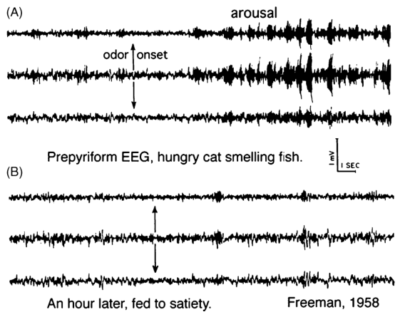
Hình 1 (A) một con mèo bị bỏ đói đang nghỉ ngơi bị kích thích bởi mùi cá và tìm kiếm nó bằng cách đánh hơi, (B) sau khi ăn no nê thì không có sự kích thích thức tỉnh [14], Hình 7.17, tr. 442 cho thấy một dao động chung trong điện thế vỏ não trên toàn bộ mảng ở cùng một tần số tức thời [29, 32, 53]. Sự thăng giáng đóng vai trò như một sóng mang cho tri giác thông qua các mẫu hình không gian của điều biến biên độ (AM) (Hình 2, trái). Các mẫu hình không-thời gian của tần số phát xung của các tế bào thần kinh hành khứu giác và vỏ não tương quan với các mẫu hình AM. Dạng sóng mang chung thường không tuần hoàn và không thể dự đoán, phản ánh động lực học hỗn loạn của các vùng vỏ não giác quan.
Các mẫu hình AM không gian trong các vùng vỏ não giác quan không thể đại diện theo nghĩa đen cho các kích thích được truyền đến chúng qua các đường dẫn truyền đầu vào giác quan, bởi vì chúng thiếu tính bất biến đối với các kích thích không đổi [5, 18, 29, 32, 48, 50, 53, 57]. Thay vào đó, chúng thay đổi theo những thay đổi về củng cố, việc học các kích thích có điều kiện (CS) mới khác trong quá trình điều kiện hóa nối tiếp, và các thay đổi ngữ cảnh khác gắn liền với kích thích trong suốt thời gian huấn luyện để phản ứng với chúng—nói ngắn gọn là ý nghĩa của CS, vốn độc nhất đối với từng cá thể cũng như chính các mẫu hình AM vậy. Những đặc tính này cũng đã được tìm thấy trong ECoG của các vùng vỏ não mới thị giác, thính giác và cảm giác thân thể, và chúng đúng ở cả dải tần beta và gamma. Do dạng sóng ở mọi nơi đều tương tự nhau, mẫu hình AM của mỗi khung hình có thể được biểu diễn bằng biểu đồ đường đồng mức (Hình 2, trái) của 64 biên độ bình phương trung bình căn của dao động beta (12–30 Hz) hoặc gamma (30–80 Hz) trong mỗi khung hình. 64 giá trị này xác định một vectơ và một điểm trong không gian 64 chiều. Các mẫu hình tương tự tạo thành các cụm điểm trong không gian 64 chiều, có thể được trực quan hóa bằng cách sử dụng phân tích biệt thức để chiếu chúng vào không gian 2 chiều (Hình 2, phải). Trong điều kiện hóa phân biệt với 2 hoặc nhiều CS, việc phân loại các khung hình được thực hiện bằng cách tính khoảng cách Euclid của các điểm dữ liệu từ mỗi điểm/khung hình đến tâm trọng lực của các cụm và tìm khoảng cách ngắn nhất.
Khi ECoG được quan sát trong khoảng thời gian từ vài phút đến vài giờ hoặc nhiều năm, cơ chế động lực học khứu giác tỏ ra ổn định vững chắc trong một phạm vi biên độ rộng.
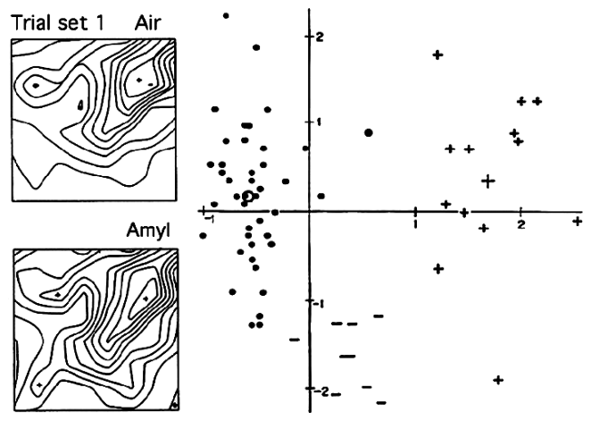
Hình 2 Trái: ví dụ về các đường đồng mức của biên độ bình phương trung bình căn của 64 phân đoạn ECoG từ mảng 8×8 (4×4 mm) trên hành khứu giác. Từ [32]. Phải: các cụm điểm được chiếu từ không gian 64 chiều bằng phân tích biệt thức cho thấy sự phân loại các mẫu hình theo khoảng cách Euclid của các điểm từ ba tâm trọng lực đối với đối chứng (không khí •), một chất tạo mùi được củng cố (amyl acetate +), và một chất tạo mùi không được củng cố (butyl alcohol -). Từ [53]
Tính ổn định trong hệ khứu giác và trong vỏ não mới đã được khám phá chi tiết dưới góc độ cảnh quan bộ hút hỗn loạn [42, 57], tính siêu ổn định dựa trên “động lực học phối hợp” [11, 40], tính lang thang hỗn loạn [59], và sự phá vỡ đối xứng tường minh so với tự phát giữa nhiều trạng thái cơ bản trong vật lý nhiều vật tiêu tán [33]. Trong quá trình hành vi bình thường, các trạng thái được thay đổi bởi các đầu vào điều biến thần kinh từ vùng dưới đồi và thân não gây ra các chuyển trạng thái như giữa các trạng thái ổn định của thức và ngủ. Ở trạng thái bất thường, trạng thái thức bị mất ổn định bởi sự kích thích cường độ cao dẫn đến cạn kiệt chất dẫn truyền thần kinh, khiến não chuyển sang một trạng thái thay thế được đặc trưng bởi một dạng động kinh [16]: các cơn động kinh cục bộ phức tạp bao gồm trạng thái vắng ý thức hành vi (mất ý thức kèm theo không thể chú ý, tri giác hoặc học tập). Một dạng mất ổn định bình thường quan trọng xảy ra trong quá trình học cách nhận diện một chất tạo mùi mới, đòi hỏi hoạt động của các nhân điều biến thần kinh trong thân não giải phóng các amin thần kinh và neuropeptide dưới sự kiểm soát của hệ viền.
Những đặc tính này cho thấy sự cần thiết phải phân biệt giữa ba loại thay đổi trong cả động lực học khứu giác và vỏ não mới. Thứ nhất, một kích thích sinh lý tác động lên các thụ thể gây ra một mẫu hình điện thế hoạt động, thông qua các trạm chuyển tiếp từ thụ thể, bơm một mẫu hình xung vào hành khứu giác đại diện cho kích thích đó. Phản ứng vỏ não bị dẫn dắt là một điện thế gợi. Bản thân đầu vào không ép buộc một sự chuyển trạng thái, mà nó làm nhiễu động động lực học và, khi kết thúc, cho phép hệ thống thư giãn trở về trạng thái tiền kích thích mà không làm thay đổi động lực học vỏ não. Thứ hai, việc học tập thiết lập một cảnh quan bộ hút trong vỏ não. Mỗi bộ hút được bao quanh bởi lưu vực hút của nó tương ứng với gradient khái quát hóa cho một phạm trù kích thích
[48]. Sự hình thành một lưu vực mới và bộ hút của nó là một sự rẽ nhánh cấu trúc không thể đảo ngược [41, 42]. Thứ ba, một hành vi tri giác được kích hoạt bởi biểu diễn của một kích thích khi các điện thế hoạt động liên quan chọn ra một bộ hút trong cảnh quan. Tri giác phụ thuộc vào một mẫu hình hoạt động không-thời gian được định hình bởi các trọng số synap đã được định hình qua quá trình học tập Hebb và phi Hebb trước đó [13]. Những synap đã biến đổi này lưu trữ các dạng kinh nghiệm đa dạng tạo thành các tập hợp tế bào thần kinh đan xen và chồng chéo nhau. Tại mỗi thời điểm chủ thể tương tác với môi trường, một sự lựa chọn phải được thực hiện trong các vùng vỏ não giác quan sơ cấp bằng cách mồi các tập hợp tế bào liên quan, tức là bằng cách tăng cường tính dễ kích thích và độ nhạy của chúng đối với đầu vào được dự đoán. Sự chuẩn bị cho việc lựa chọn đó được thực hiện bởi một quá trình gọi là “tiền hướng tâm” (preafference) [39], Chương của Bressler. Quá trình này được xác định cùng với sự hình thành một mẫu hình dao động đồng bộ toàn cục [20, 30, 31] được thiết lập thông qua sự trao đổi rộng rãi các điện thế hoạt động giữa các vùng vỏ não giác quan và hệ viền. Mẫu hình toàn cục này khơi gợi và điều biến cảnh quan bộ hút của tất cả các vùng vỏ não giác quan đồng thời, qua đó chuẩn bị cho chúng trước phạm vi các kết quả dự kiến sau mỗi hành động quan sát môi trường.
Trạng thái sẵn sàng toàn cục trong sự dự đoán này cấu thành một trạng thái siêu ổn định [Chương của Kelso]. Các kích thích giác quan đi vào chọn ra một lưu vực hút từ cảnh quan trong mỗi vùng vỏ não giác quan. Sự lựa chọn loại trừ lẫn nhau này có thể được gọi là sự phá vỡ đối xứng tự phát, phân biệt với sự phá vỡ đối xứng tường minh của điện thế gợi [33]. Sự chuyển tiếp từ hỗn loạn nhiều chiều sang động lực học ổn định hơn với việc lựa chọn một bộ hút ít chiều hơn có thể tương ứng với logic động [Chương của Perlovsky], vốn mô tả các chuyển tiếp từ các trạng thái tiềm năng mơ hồ và bất định chưa được hiện thực hóa sang một tri giác và nhận thức sắc nét, chắc chắn sau khi phát hiện một kích thích được dự đoán, như một cơ chế thiết yếu đi trước các chức năng nhận thức bậc cao hơn.
Sự chuyển trạng thái nội sinh trong quá trình hình thành một bó sóng có mẫu hình AM là bản chất của một hành vi tri giác. Việc truyền phát mẫu hình AM phải được tiếp nối bởi một sự chuyển trạng thái khác đưa vỏ não trở lại trạng thái tiếp nhận. Bằng chứng then chốt cho sự chuyển tiếp đầu tiên được cung cấp bởi các phép đo mẫu hình điều biến pha của các sóng mang beta hoặc gamma trong các đợt phát xung liên tiếp. Mỗi mẫu hình AM đi kèm với một mẫu hình không-thời gian của điều biến pha (PM). Pha được xác định tại tần số mang trội hoặc trung bình trong quá khứ ngay trước đó. Sự khởi phát của quá trình chuyển tiếp được đặc trưng bởi một sự gián đoạn biểu kiến trong pha giống như “trượt pha”, tiếp theo là sự xuất hiện của một tần số mang mới, trung bình khác biệt khoảng ±10–20 Hz. Mẫu hình không gian của pha có dạng một hình nón (Hình 3, trái) với đỉnh là độ sớm pha cực đại hoặc độ trễ pha cực đại. Hình nón được hiển thị bằng các vòng tròn đồng tâm biểu diễn các đường đồng pha. Hình nón xuất hiện vì một sự chuyển trạng thái trong một môi trường phân bố không xảy ra ở mọi nơi ngay lập tức. Giống như sự hình thành một bông tuyết hay giọt mưa, nó bắt đầu tại một điểm tạo mầm và lan tỏa theo hướng xuyên tâm. Gradient pha tính bằng rad/m chia cho tần số mang tính bằng rad/s cho ra vận tốc pha tính bằng m/s. Các vận tốc pha quan sát được phù hợp với vận tốc dẫn truyền của các điện thế hoạt động lan truyền trên các sợi trục chạy song song với bề mặt vỏ não. Vị trí đỉnh và dấu thay đổi ngẫu nhiên giữa các khung hình liên tiếp (Hình 3, phải). Sự lan truyền phụ thuộc vào sự tồn tại của một tỷ lệ nhỏ các sợi trục dài giữa các sợi trục ngắn chiếm ưu thế [42]. Dấu
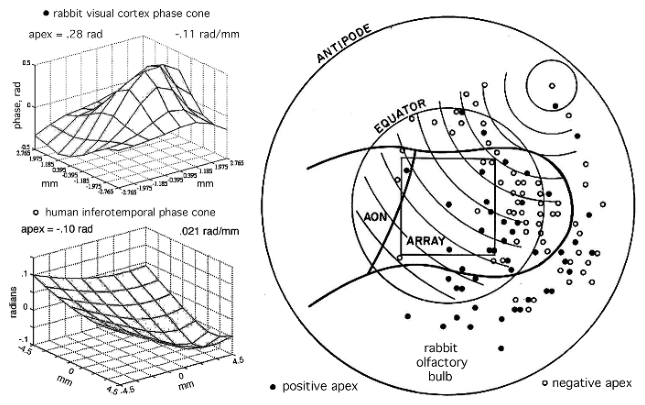
Hình 3 Trái: ví dụ về các nón pha từ ECoG vỏ não mới của người và thỏ. Từ [30]. Phải: đường viền hành khứu giác thỏ với mảng hình vuông chồng lên bề mặt cầu đã mở ra. Các cung tròn cho thấy một nón pha đại diện; các ký hiệu tối • chỉ vị trí của các đỉnh dương (“bùng nổ”); các ký hiệu sáng o chỉ các đỉnh âm (“co sụp”). Từ [24]
tại đỉnh phụ thuộc vào việc các sợi trục ngắn (sớm pha tại đỉnh, bùng nổ) hay các sợi trục dài (trễ pha tại đỉnh, co sụp) chiếm ưu thế trong quá trình truyền dẫn.
Những đặc tính này cho thấy sự chuyển trạng thái là một đặc tính nội sinh của các mạng lưới vỏ não phân bố. Nó không thể được quy cho một “máy tạo nhịp” cục bộ trong vỏ não, đồi thị, hay thể vân. Sau đó, có sự chuyển trạng thái thứ hai đưa vỏ não trở lại trạng thái tiếp nhận vốn là nội tại của hoạt động nền vỏ não. Không có sự gián đoạn pha biểu kiến nào. Thay vào đó, biên độ giải tích có thể suy giảm xuống mức thấp đến nỗi pha trở nên không xác định. Nếu trong điều kiện này có đầu vào mới đến vỏ não, khả năng xuất hiện một sự chuyển trạng thái mới sẽ nảy sinh. Sự lặp lại của việc đặt lại pha theo từng đợt tạo ra các chuỗi điện ảnh của các bó sóng được biểu hiện trong các khung hình AM và PM. Mỗi khung hình bắt đầu sau khi sự gián đoạn pha biểu hiện việc đặt lại pha. Khoảng thời gian trôi qua trước khi hình nón biến mất chứng minh thời lượng của khung hình.
Tiếp theo câu hỏi được đặt ra là, động lực học của hệ khứu giác có thể áp dụng cho các vùng giác quan khác ở mức độ nào? Các thành phần chính của hệ khứu giác là vỏ não cổ (allocortex). Đây là một mạng lưới sợi thần kinh ba lớp cổ xưa được tìm thấy ở tất cả các động vật có xương sống dưới nhiều hình thức khác nhau. Vỏ não mới sáu lớp, chỉ có ở động vật có vú, phức tạp hơn nhiều và có các hình thức cũng như mức độ chuyên biệt hóa rất đa dạng. Sự đơn giản tương đối của cấu trúc và động lực học vỏ não cổ làm cho nó trở thành một nền tảng tốt để nhận biết những đặc tính nào có thể mang tính nền tảng trong động lực học của vỏ não mới. Các vùng vỏ não giác quan thị giác, thính giác và cảm giác thân thể, tất cả đều là vỏ não mới, đều bộc lộ các phương thức vận hành cơ bản giống như trong khứu giác đối với tri giác: sự phát sinh hoạt động ECoG không tuần hoàn, phổ rộng với hoạt động xung tương quan thống kê; sự hình thành các bó sóng liên tiếp với các sóng mang kết hợp không gian; các mẫu hình AM có thể phân loại theo các kích thích và phản ứng có điều kiện đã học (CS và CR); và các mẫu hình PM đi kèm dưới dạng hình nón (Hình 3, trái) với vị trí và dấu của các đỉnh thay đổi ngẫu nhiên. Các mẫu hình AM và PM của vỏ não mới lớn hơn và phức tạp hơn các mẫu hình của vỏ não cổ, và chúng thiếu dấu mốc khung hình dễ dàng do hô hấp và đánh hơi cung cấp (các đợt phát xung gamma thấy trong Hình 1, A). Ngoài ra, các đặc tính được mô tả trong phần này và các phần sau đều đúng cho cả hai loại vỏ não. Quan trọng nhất trong số các đặc tính này là hoạt động nền phổ biến khắp nơi, vốn nắm giữ chìa khóa để hiểu chức năng vỏ não và do đó là chức năng nhận thức bậc cao hơn.
3 Tự tổ chức bằng phản hồi dương: Kích thích lẫn nhau và thiên lệch kích thích
Hoạt động tự phát lan tỏa của vỏ não dễ dàng được quan sát thấy cả ở các xung từ sợi trục và ở các điện thế trường từ dòng điện đuôi gai thấy trong ECoG (Hình 1). Nguồn gốc của hoạt động này đã được xác định là sự kích thích lẫn nhau giữa các tế bào kích thích [14, 22]. Trong vỏ não mới, 80% tế bào thần kinh là tế bào tháp, vốn có tính kích thích, và 90% synap của chúng đến từ các tế bào thần kinh nội vỏ não. 10% synap từ các nguồn bên ngoài vỏ não cũng có tính kích thích. Do đó, sự tương tác áp đảo giữa các tế bào thần kinh vỏ não mới là bằng sự kích thích lẫn nhau giữa các tế bào tháp. Trong hành khứu giác, tổ chức có khác biệt, bởi vì các tế bào tương đương với tế bào tháp (tế bào mitral và tế bào búi) bị áp đảo về số lượng với tỷ lệ >100:1 bởi các tế bào trung gian ức chế tương đương (các tế bào hạt bên trong). Một sự cân bằng động được duy trì bởi một quần thể lớn các tế bào trung gian kích thích (các tế bào quanh tiểu cầu ở lớp ngoài của hành khứu giác) [14]. Những tế bào thần kinh này truyền và nhận tín hiệu bằng GABA, nên chúng thường bị nhận diện nhầm là tế bào trung gian ức chế; tuy nhiên, hàm lượng ion clorua cao của chúng [56] khiến các synap GABA-A của chúng có tính kích thích. Hoạt động kích thích lẫn nhau duy trì của chúng không giống với các “mạch dội lại” của Hebb và Lashley dùng cho việc lưu trữ tạm thời giả định của ký ức [2] trong các tập hợp tế bào thần kinh nhỏ [49]. Thay vào đó, hoạt động nền của chúng ở trạng thái ổn định và quy mô lớn.
Cơ chế trong các quần thể tế bào quanh tiểu cầu và các quần thể kích thích khác đã được mô tả bằng một mạng lưới các phương trình vi phân thường (ODE) [14]. Tô-pô kết nối trong các quần thể thần kinh được biểu diễn (Hình 4) bằng các tập hợp K của các tế bào thần kinh cùng loại. Đơn giản nhất là các quần thể tế bào thần kinh không tương tác thuộc hai loại: KOe kích thích hoặc KOi ức chế, khi được kích hoạt đồng bộ sẽ hành xử như một tế bào thần kinh trung bình, nhưng với các biến trạng thái là mật độ sóng và mật độ xung thay cho dòng điện màng và chuỗi xung. Một quần thể KIe gồm các tế bào thần kinh kích thích tương tác như các tế bào quanh tiểu cầu có thể, bằng cách xem xét các điều kiện đối xứng, được rút gọn thành một vòng phản hồi dương, trong đó động lực học của các nhánh thuận và nhánh phản hồi KOe là giống hệt nhau, bởi vì mỗi tế bào thần kinh ở trạng thái tiếp nhận liên tục làm mới quần thể ở trạng thái truyền phát. Mỗi nhánh được mô tả bằng phép cộng tuyến tính có trọng số của mật độ sóng trong các đuôi gai và sự chuyển đổi phi tuyến tĩnh từ mật độ sóng sang mật độ xung. Hoạt động của đuôi gai có thể được mô tả bằng một ODE tuyến tính bậc 2 với các hằng số độ lợi cho các synap. Nghiệm của ODE đối với đầu vào xung phù hợp với điện thế sau synap (PSP) của đuôi gai
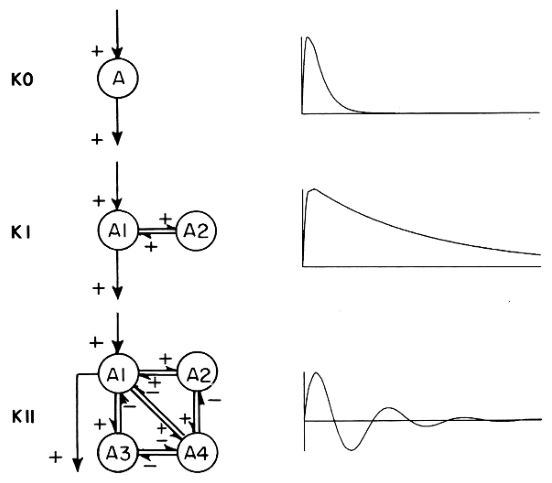
Hình 4 KO biểu diễn động lực học của một quần thể không tương tác; phản ứng với đầu vào xung (kích thích điện một cú sốc) tương ứng với điện thế đuôi gai sau synap của các tế bào thần kinh đơn lẻ. KI biểu diễn một quần thể tương tác cùng loại: KIe kích thích hoặc KIi ức chế với đáp ứng xung vòng kín đơn điệu kéo dài (điện thế gợi trung bình AEP và PSTH). KII biểu diễn sự tương tác giữa các quần thể tế bào thần kinh kích thích KIe và ức chế KIi với đáp ứng xung vòng kín dao động (AEP hoặc PSTH). Từ [14], Hình 1.6, tr. 40 của các tế bào thần kinh đơn lẻ đối với đầu vào xung một cú sốc: sự tăng theo hàm mũ nhanh chóng bị chi phối bởi độ trễ synap và các đặc tính cáp của đuôi gai, tiếp theo là sự suy giảm theo hàm mũ bị chi phối bởi điện trở và điện dung màng thụ động (Hình 4, KO). Trong một quần thể tế bào thần kinh, đầu ra của các sợi trục được quan sát trong biểu đồ thời gian sau kích thích (PSTH) của các tế bào thần kinh đơn lẻ đại diện, vốn có cùng dạng và hằng số tốc độ như PSP tổng của các đuôi gai.
Sự chuyển đổi từ mật độ sóng đuôi gai sang mật độ xung sợi trục tại các vùng kích hoạt bị chi phối bởi một hàm sigmoid bất đối xứng [14, 15] (Hình 5). Các ngưỡng phi tuyến của sợi trục xác định tiệm cận dưới. Các tế bào thần kinh không thể phát xung khi chúng bị ức chế dưới ngưỡng bởi đầu vào từ các tế bào trung gian ức chế. Tiệm cận trên được xác định bởi các thời kỳ trơ của sợi trục. Các tế bào thần kinh không thể phát xung với đầu vào kích thích khi chúng vừa mới phát xung gần đây.
Tuyến tính hóa từng khúc [14] động lực học vỏ não đạt được bằng cách thay thế hàm phi tuyến (Hình 5) bằng một giá trị độ lợi không đổi được cho bởi độ dốc của tiếp tuyến với đường cong sigmoid tại một điểm vận hành xác định cho đầu vào mật độ sóng và đầu ra mật độ xung. Điểm vận hành ở trạng thái ổn định nằm tại độ lợi đơn vị, khi biên độ đầu vào bằng biên độ đầu ra. Sự dịch chuyển khỏi điểm đặt trạng thái ổn định do đầu vào xung hoặc đầu vào duy trì có thể làm tăng hoặc giảm độ lợi khỏi mức đơn vị. Có hai điểm đặt ổn định tại độ lợi đơn vị: một điểm được tìm thấy trong tập hợp KIe tại mật độ sóng chuẩn hóa v > 0 (Hình 5, A). Điểm đặt kia được tìm thấy tại v = 0 trong tập hợp KII, được hình thành bởi sự tương tác giữa một tập hợp KIe và một tập hợp KIi. Tập hợp ức chế lẫn nhau
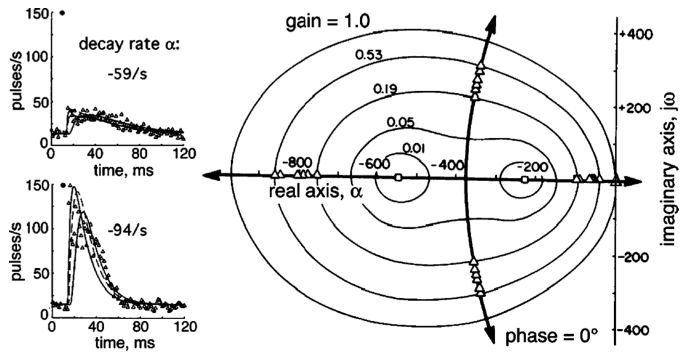
Hình 5 Sự chuyển đổi sóng sang xung tại các vùng kích hoạt trong các quần thể bị chi phối bởi một tính phi tuyến tĩnh, đó là đường cong sigmoid bất đối xứng được hiển thị với độ dốc cao trong trạng thái thức tỉnh (Hình 1, A) và độ dốc thấp trong trạng thái nghỉ ngơi (Hình 1, B). Các cặp đường cong tiệm cận về không cho thấy đạo hàm của đường cong sigmoid, vốn cho ra độ lợi phi tuyến. Xấp xỉ tuyến tính là bằng cách thay thế hàm số bằng tiếp tuyến tại điểm vận hành mong muốn, mà độ dốc của nó xấp xỉ độ lợi phản hồi cố định. A : tập hợp KIe, B: tập hợp KIIob. Các phương trình được cho trong [1, 14, 49]
KIi chỉ có một điểm đặt ổn định ở độ lợi bằng không tạo ra một ECoG phẳng, vì vậy một tập hợp KIi không thể hoạt động nếu thiếu một thiên lệch kích thích từ một hoặc nhiều tập hợp KIe. Tiệm cận cực đại, Qm, được xác định bởi các thời kỳ trơ; tuy nhiên, như được chỉ ra trong Hình 5, Qm thay đổi theo mức độ thức tỉnh dưới sự kiểm soát của hệ viền. Hai mức được hiển thị trong Hình 5. ECoG ở trạng thái thức tỉnh được thấy trong Hình 1, A. ECoG ở trạng thái nghỉ ngơi được thấy trong Hình 1, B.
Đáp ứng xung của hệ thống KIe vòng kín (Hình 1, KI) được cho bởi điện thế gợi một cú sốc trung bình (AEP) ở chế độ mật độ sóng (bản ghi ECoG) hoặc bởi biểu đồ thời gian sau kích thích (PSTH) ở chế độ mật độ xung (các giá trị trung bình khóa thời gian của bản ghi chuỗi xung từ các tế bào thần kinh đơn lẻ, Hình 6, trái, hoặc bản ghi đa đơn vị – không hiển thị). Tiện ích của đáp ứng xung nằm ở thông tin mà nó cung cấp về trạng thái của hệ thống và các đặc tính động lực học của nó, bởi vì nó chứa tất cả các tần số, và do đó nó bộc lộ các tần số đặc trưng của quần thể thần kinh trong trạng thái vận hành gần tuyến tính hiện tại của nó. Những đặc tính này được hiển thị trong một giản đồ không gian trạng thái (Hình 6, phải) được suy ra bằng cách tuyến tính hóa hai ODE phi tuyến bậc 2 ghép cặp mô hình hóa động lực học KIe trong vùng lân cận của điểm vận hành tiền kích thích (Hình 5, A). Việc lấy trung bình các đáp ứng xung (Hình 6, trái) từ sự kích thích lặp đi lặp lại tại các khoảng thời gian đều đặn là cần thiết để loại bỏ hoạt động nền vi mô được coi là nhiễu và trích xuất tín hiệu trung mô, vốn là quỹ đạo mà hệ thống quay trở lại trạng thái tiền kích thích sau mỗi xung.
Phân tích tuyến tính là công cụ mạnh mẽ nhất hiện có đối với các nhà động lực học thần kinh [6, 7, 12, 34, 44, 63]. Trong biến thể sử dụng phân tích quỹ đạo nghiệm, các tần số đặc trưng của hệ thống đã tuyến tính hóa được biểu diễn dưới dạng các cực vòng kín (các tam giác nhỏ trong Hình 6, phải), và các tần số “chống cộng hưởng” bị cấm đặc trưng được hiển thị dưới dạng các điểm không (các ký hiệu trong Hình 6, phải) trong các nghiệm của 2 ODE bậc 2 ghép cặp
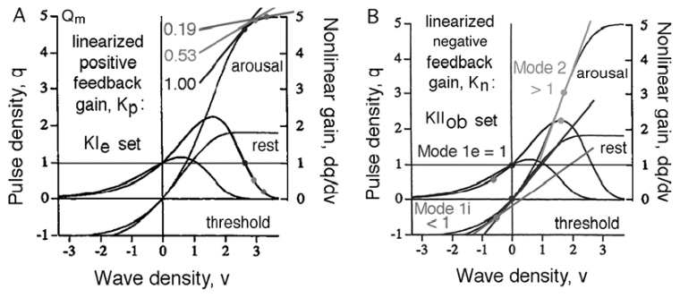
Hình 6 Trái: Các đáp ứng xung của một tế bào quanh tiểu cầu khi kích thích dây thần kinh khứu giác sơ cấp ở 6 cường độ. Dữ liệu trong các biểu đồ thời gian sau kích thích trung bình được khớp với các nghiệm của một ma trận gồm bốn ODE bậc 1. Phải: Các quỹ đạo nghiệm (các đường tối màu) của sự thay đổi ở các cực như một hàm của độ lợi (các đường đồng mức hình elip), kp. Ở độ lợi bằng không, các cực nằm ở các giá trị vòng hở (⊓), tốc độ tăng = -530/s, tốc độ suy giảm = -230/s. Các mũi tên trái-phải chỉ hướng thay đổi của các hằng số tốc độ thực khi các đường đồng mức độ lợi (elip) tăng lên vô cực. Các mũi tên lên-xuống chỉ hướng tiến gần của các nghiệm liên hợp phức tới các điểm không ở nửa phải của mặt phẳng phức (không hiển thị). Từ [14], Hình 5.10 tr. 289, Hình 5.13 tr. 292
biểu diễn động lực học vòng kín. Các cực vòng hở trong ODE phản hồi trở thành các điểm không trong hàm truyền bậc 4 đã tuyến tính hóa, tín hiệu nhỏ, vòng kín (các ký hiệu ở nửa trái của trục thực âm trong Hình 6, phải).
Một tham số kiểm soát thực nghiệm rất hữu ích là cường độ của xung (tích của biên độ và thời lượng). Việc thay đổi cường độ kích thích làm cho các tần số đặc trưng trong phản ứng thay đổi. Những thay đổi về tần số được chuyển dịch về mặt đồ họa thành các tham số sinh lý hữu ích nhất, đó là cường độ tương tác (độ lợi) giữa các quần thể tế bào thần kinh. Các tần số (nghiệm) thay đổi dọc theo các đường đậm (quỹ đạo nghiệm), và các độ lợi được tính toán như các giá trị cho độ lợi vòng kín đã tuyến tính hóa (các giao điểm của quỹ đạo nghiệm với các đường đồng mức trong Hình 6, phải). Khi cường độ được tăng lên hoặc hạ xuống, các tần số đặc trưng của các thành phần vòng hở của hệ thống (các synap và cường độ của chúng) không thay đổi, nhưng các đặc tính chức năng của hệ thống bị biến đổi bởi tính phi tuyến phụ thuộc biên độ tại các vùng kích hoạt được mô tả bằng đường cong sigmoid bất đối xứng (Hình 5, A). Việc thay đổi biên độ phản ứng bằng cách thay đổi cường độ đầu vào làm thay đổi các tần số đặc trưng của các cực và điểm không vòng kín bằng cách thay đổi các điểm đặt nơi độ dốc tiếp tuyến được tính toán. Với sự thay đổi từng bước có hệ thống về cường độ kích thích, các giá trị đã thay đổi của các cực vòng kín khắc họa nên các quỹ đạo nghiệm (vuông góc với các đường đồng mức độ lợi).
Các quỹ đạo nghiệm này (tại pha không radian trong phản hồi dương và tại pha π radian trong phản hồi âm) định lượng mức độ ổn định của hệ thống và xác định cách một sự thay đổi ở đầu vào có thể mang lại sự ổn định lớn hơn với khả năng kháng lại sự chuyển trạng thái (các cực di chuyển sang trái ra xa trục ảo), hoặc làm giảm tính ổn định và tăng khả năng chuyển sang một trạng thái mới (các cực di chuyển sang phải về phía trục ảo). Giả thuyết cần xem xét là sự hình thành một mẫu hình AM trong một hành vi tri giác có thể diễn ra khi các cực dịch chuyển sang bên phải của trục ảo, tạo ra các số hạng hàm mũ với tốc độ tăng dương.
Các đầu mũi tên trên các quỹ đạo nghiệm trong Hình 6 chỉ hướng mà độ lợi tăng lên khi biên độ phản ứng giảm đi. Một mặt, xung mạnh thúc đẩy sự gia tăng cường độ xung sẽ làm tăng biên độ phản ứng và giảm độ lợi phản hồi, điều này làm tăng tốc độ suy giảm trở về mức nền tiền kích thích. Sự suy giảm độ lợi phản hồi KIe khi tăng cường độ đầu vào là do các thời kỳ trơ; các tế bào thần kinh bị thử thách phát xung không thể làm điều đó nếu chúng vừa mới phát xung gần đây. Mặt khác, phép ngoại suy tốc độ suy giảm của PSTH về đầu vào bằng không (ngưỡng phản ứng) cho ra tốc độ suy giảm bằng không. Một phản ứng như vậy sẽ là một hàm bậc thang [14]; nó không thể quan sát được, vì nó có biên độ bằng không. Phép ngoại suy tốc độ suy giảm về không và độ lợi phản hồi về đơn vị tại ngưỡng bằng cách sử dụng quỹ đạo nghiệm này chứng minh rằng quần thể tự ổn định ở đầu ra kích thích trạng thái ổn định của nó nhờ các thời kỳ trơ mà không cần đến sự ức chế. Cực tại gốc của mặt phẳng phức (Hình 6, phải) phù hợp với một trị riêng bằng không (tốc độ thay đổi bằng không, một hằng số thời gian vô hạn).
Cực đó biểu diễn trạng thái ổn định chức năng của quần thể KIe vốn sẽ giữ nguyên khi không có đầu vào: đầu ra mật độ xung kích thích ở trạng thái ổn định, tức hoạt động nền. Trạng thái này ổn định, bởi vì đầu vào kích thích làm tăng đầu ra nhưng lại làm giảm độ lợi, nên hoạt động của quần thể có xu hướng tiến về mức trạng thái ổn định. Đầu vào kích thích giảm hoặc đầu vào ức chế tăng sẽ làm điều ngược lại. Do đó, cực này biểu diễn một bộ hút điểm, khác với trạng thái hoạt động bằng không dưới gây mê sâu hoặc khi chết, ở chỗ sự kích thích lẫn nhau cung cấp thiên lệch kích thích duy trì, ổn định, ở trạng thái ổn định bên trong chính nó và cho các quần thể thần kinh khác trong hệ khứu giác. Bộ hút điểm khác không chi phối động lực học của quần thể KIe và điều biến tất cả các quần thể khác nhận thiên lệch kích thích đó.
Việc quan sát thực nghiệm trực tiếp cực tại gốc tọa độ rõ ràng là không thể, bởi vì đáp ứng xung có biên độ bằng không và tốc độ suy giảm bằng không. Hơn nữa, mọi quần thể KIe đều có đầu vào liên tục từ các quần thể khác, bao gồm quần thể quanh tiểu cầu nhận cả đầu vào giác quan và đầu vào ly tâm từ các phần khác của não trước, vì vậy trạng thái ổn định quan sát được cho một cực bị dịch chuyển sang phía âm của tần số không trên trục thực của mặt phẳng phức (độ lợi = 0,53).
Phương pháp quỹ đạo nghiệm đòi hỏi tuyến tính hóa từng khúc của động lực học. Kỹ thuật này phụ thuộc vào thực tế là đầu vào xung không làm thay đổi cấu trúc hệ thống. Thay vào đó, đầu vào áp đặt một số hạng phụ thêm, một nhiễu động chồng lên hoạt động nền làm bộc lộ động lực học thông qua quỹ đạo thư giãn trở về trạng thái tiền kích thích: sự phá vỡ đối xứng tường minh, trái ngược với sự phá vỡ đối xứng tự phát [33] mà, như sẽ được chỉ ra, đặc trưng cho tri giác. Cùng một cặp ODE bậc 2 có thể áp dụng trên toàn bộ phạm vi tuyến tính hóa từng khúc nhưng với một giá trị khác nhau của tham số độ lợi cho mỗi mức đầu vào. Tổng quát hơn, các quần thể tế bào thần kinh chia sẻ các đặc tính về ngưỡng, thời kỳ trơ và kích thích lẫn nhau có thể được mô tả là bị chi phối bởi một bộ hút điểm khác không, vốn mô tả quá trình mà các quần thể kích thích duy trì hoạt động nền ở trạng thái ổn định khác không mà không cần sự ức chế để ngăn chặn sự phóng điện kích thích mất kiểm soát. Nhờ đó, sự kích thích lẫn nhau cung cấp thiên lệch kích thích trong vỏ não vốn thiết yếu để duy trì hoạt động nền “tự phát”. Hoạt động này trong nhiều hoàn cảnh đã được chứng minh là có biểu đồ biên độ gần với nhiễu Gauss và mật độ phổ công suất tuân theo quy luật lũy thừa với độ dốc gần −2 (1/f2, “nhiễu nâu” [55]).
4 Đo lường và mô hình hóa các dao động sử dụng quỹ đạo nghiệm trong tuyến tính hóa từng khúc
Việc đưa vào các tế bào thần kinh ức chế (Hình 4, KII) là cần thiết không phải để ổn định các mạng lưới thần kinh mà là để tạo ra các dao động, đáng chú ý nhất trong hệ khứu giác là các dao động ở dải tần gamma, 30–80 Hz (Hình 1, A và Hình 4 KII, Hình 7, trái). Việc xác định một tần số trung tâm trong dải này, 40 Hz, hiện ra ngay lập tức từ việc đo các hằng số thời gian vòng hở (Hình 4 KO) của PSP hoặc PSTH, tức các đáp ứng xung của các tế bào thần kinh kích thích và ức chế không tương tác cấu thành nên các quần thể khứu giác. Thời gian tăng theo hàm mũ trung bình gần 1,25 ms; thời gian suy giảm theo hàm mũ gần 5 ms. Một chu kỳ dao động đòi hỏi hai lượt đi quanh vòng lặp, cho tổng độ trễ là 25 ms (thời lượng sóng
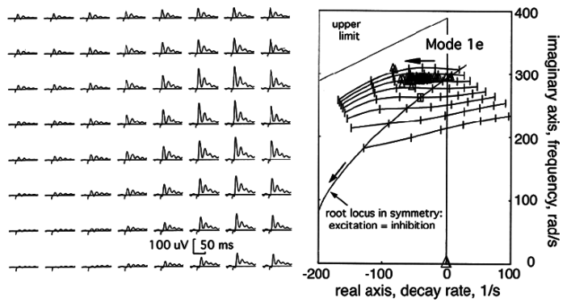
Hình 7 Trái: Một tập hợp gồm 64 đáp ứng xung thu được đồng thời từ một mảng điện cực 8×8 kích thước 4×4 mm để ghi ECoG (các khung vuông trong Hình 3 trái và hình lồng vuông mở trong Hình 2, phải) cho các biên độ khác nhau tại các vị trí khác nhau khi kích thích một cú sốc dây thần kinh khứu giác. Sự dịch chuyển lên trên của đường cơ sở được cung cấp bởi các tế bào thần kinh quanh tiểu cầu KIe với độ lợi dương kp (được hiển thị bởi PSTH trong Hình 6, trái). Tất cả các dao động đều có cùng tần số, với tốc độ suy giảm tỷ lệ thuận với biên độ. Từ [14], Hình 4.27 tr. 221. Phải: các cực được cho bởi các tần số và tốc độ suy giảm của sóng cosin tắt dần trội được khớp với mỗi trong số 64 đáp ứng xung đã cho ra quỹ đạo nghiệm Chế độ 1e đối với tập hợp KII với việc duy trì độ lợi đơn vị (Hình 5, B). Các mũi tên hướng sang trái chỉ tốc độ suy giảm tăng lên của dao động gamma gợi tại các vị trí có biên độ phản ứng tăng do sự giảm độ lợi bởi các thời kỳ trơ. Từ [14], Hình 6.86 tr. 361 của tần số 40 Hz). Tuy nhiên, các tế bào thần kinh kích thích kích thích lẫn nhau, và các tế bào thần kinh ức chế ức chế lẫn nhau, cũng như tương tác trong phản hồi âm (Hình 1, KII). Hai loại phản hồi dương này — kích thích lẫn nhau trong quần thể KIe và ức chế lẫn nhau trong quần thể KIi — điều biến tần số của phản hồi âm trên dải gamma bằng sự biến thiên của 4 loại độ lợi thuận: các synap kích thích hoặc ức chế trên các tế bào thần kinh kích thích hoặc ức chế. Nếu bốn độ lợi được đặt bằng nhau và thay đổi đồng thời, tính đối xứng của sự kích thích lẫn nhau và ức chế lẫn nhau dẫn đến sự triệt tiêu cực-không. Quỹ đạo nghiệm (pha = π radian trong phản hồi âm) được hiển thị cho nửa trên của mặt phẳng phức dưới dạng cung tròn (“đối xứng” trong Hình 7, phải) dâng lên khi độ lợi phản hồi âm tăng từ cực vòng hở (được hiển thị trên Hình 6 tại a = –230/s) trên trục thực âm và cắt trục ảo gần 300 rad/s (50 Hz). Hình chữ nhật nhỏ ở giữa xác định trạng thái trung bình hoặc điểm nghỉ được quan sát đối với các đáp ứng xung tại đầu vào xung gần ngưỡng bằng kích thích một cú sốc dây thần kinh khứu giác sơ cấp [14]. Đường dẫn đầu vào này vào hành khứu giác được gọi là “thuận chiều” (orthodromic) vì hướng truyền dẫn phù hợp với đầu vào bình thường của các điện thế hoạt động vào hành khứu giác từ các thụ thể giác quan trong mũi. Ngược lại, sự kích thích điện vào đường đầu ra của hành khứu giác, dải khứu giác bên được tạo thành bởi các sợi trục của tế bào mitral, được gọi là “ngược chiều” (antidromic), vì các điện thế hoạt động gợi đi vào hành khứu giác một cách bất thường, tức là ngược hướng với sự lan truyền bình thường (Hình 8).
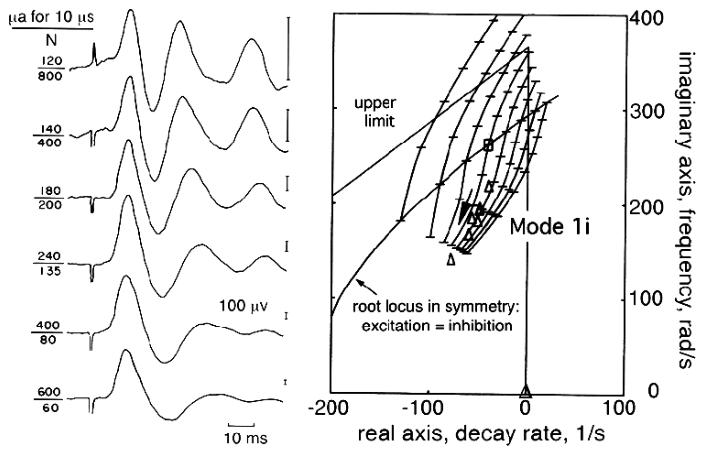
Hình 8 Trái: các cú sốc đơn ngược chiều vào dải khứu giác bên đã gợi ra các đáp ứng xung trong hành khứu giác, bỏ qua các tế bào thần kinh quanh tiểu cầu và thiên lệch kích thích mà chúng đóng góp cho đầu vào. Khi cường độ kích thích tăng lên, tần số giảm đi với rất ít thay đổi về tốc độ suy giảm, tạo ra một quỹ đạo nghiệm thẳng đứng. Phải: các quỹ đạo nghiệm từ việc giải ODE cho các đáp ứng xung dự đoán tần số và tốc độ suy giảm. Cùng các quỹ đạo nghiệm Chế độ 1i này được suy ra từ các đáp ứng xung thu được với cường độ xung cố định trong khi làm giảm hoạt động nền bằng cách gây mê barbiturat. Nghĩa là, tần số dao động được xác định bởi tỷ lệ giữa hoạt động gợi và hoạt động nền, khi điện thế gợi vượt quá hoạt động nền. Từ [14], Hình 6.11, tr. 374
Chế độ 1e cho thấy sự ổn định tăng lên được áp đặt bởi cơ chế hành khứu giác để đáp ứng với đầu vào không liên quan hoặc nhiễu. Đường phía trên cho thấy giới hạn được áp đặt bởi giá trị của độ lợi phản hồi trong quần thể KIe tạo ra một cực tại gốc của mặt phẳng phức đối với độ lợi phản hồi dương đơn vị, kp = 1. Nghĩa là, khi đầu vào dồn dập vào vỏ não dịu đi, vỏ não có thể lắng xuống hướng tới biên độ trạng thái ổn định bên trong của hoạt động nền bị chi phối bởi bộ hút khác không được biểu diễn bởi cực tại gốc của mặt phẳng phức. Khi đó cực dao động có xu hướng tiến tới tần số cao hơn và đường bao suy giảm nhanh hơn của đáp ứng xung, nhưng chỉ đến giới hạn của đường chéo được hiển thị là “giới hạn trên” ở trạng thái ổn định. Cũng như với cực tại gốc tọa độ, các đáp ứng xung dao động tại giới hạn là không thể quan sát được.
Các đáp ứng xung của hệ khứu giác (các điện thế gợi trung bình AEP) mà biên độ đỉnh của chúng không vượt quá phạm vi biên độ của ECoG nền đang diễn ra tuân theo tính cộng và tính tỷ lệ khi thử nghiệm cú sốc kép, cho thấy có một phạm vi gần tuyến tính tín hiệu nhỏ trong động lực học của các thành phần chính thuộc hệ khứu giác trung ương. Mũi tên hướng xuống sang trái trong Hình 7 cho thấy sự giảm tần số và tăng tốc độ suy giảm khi tất cả các độ lợi phản hồi đều giảm như nhau (“đối xứng”) do tăng cường độ đầu vào hoặc do giảm thiên lệch nền từ các tập hợp KIe.
Quỹ đạo nghiệm đối xứng dưới điều kiện bằng nhau của phản hồi dương kích thích và ức chế này hiếm khi được thấy trong các quỹ đạo nghiệm thực nghiệm suy ra từ các điện thế gợi, bởi vì sự kích thích lẫn nhau (KIe) và ức chế lẫn nhau (KIi) hiếm khi bằng nhau. Khi sự kích thích lẫn nhau chiếm ưu thế, quỹ đạo nghiệm nằm ngang (Chế độ 1e). Sự kích thích dải đầu vào tới hành khứu giác gợi ra các điện thế trong đó tốc độ suy giảm tỷ lệ thuận với biên độ phản ứng trên phân bố không gian của đầu vào nhưng tần số không đổi (các quỹ đạo nghiệm nằm ngang trong Hình 7, phải). Khi sự ức chế lẫn nhau chiếm ưu thế, quỹ đạo nghiệm có thể tiệm cận phương thẳng đứng (Chế độ 1i, Hình 8, phải). Sự kích thích ngược chiều vào dải đầu ra của hành khứu giác, dải khứu giác bên, kích hoạt trực tiếp các tế bào trung gian ức chế bằng các synap đuôi gai-đuôi gai, tạo ra một thiên lệch ức chế mạnh cho các dao động (Hình 8, Chế độ 1i) mà không được bù đắp bởi đầu vào KIe như ở đầu vào thuận chiều (Hình 7, trái), bởi vì các tế bào quanh tiểu cầu không được kích hoạt bởi sự kích thích ngược chiều.
Các quỹ đạo nghiệm Chế độ 1e và 1i chỉ được thấy khi biên độ của các điện thế gợi một cú sốc vượt quá phạm vi biên độ ECoG nền. Điều này là do các ngưỡng của sợi trục trong quá trình ức chế hồi quy giới hạn biên độ của hoạt động gợi vượt quá phạm vi tự phát. Khi các tế bào thần kinh bị ức chế dưới ngưỡng của chúng, chúng không thể phát xung để báo hiệu độ lớn của đầu vào ức chế. Các ngưỡng chặn đầu ra sợi trục vốn báo hiệu sự ức chế đuôi gai quá mức; sự chặn này làm giảm hiệu quả độ lợi phản hồi trong vòng lặp KII [14], Hình 5.28, tr. 335. Ngược lại, các thời kỳ trơ (chứ không phải các ngưỡng) của sợi trục giới hạn phạm vi trên của hoạt động nền và các điện thế gợi chồng lên (Hình 5, kn > 1).
Khi cường độ đầu vào được cố định để tạo ra các điện thế gợi mà biên độ đỉnh-đến-đỉnh của chúng không vượt quá phạm vi hoạt động nền, tần số và tốc độ suy giảm của các điện thế gợi trung bình liên tiếp đều cao khi biên độ thấp và thấp khi biên độ cao (mũi tên xuống-phải, Hình 9). Những biến thiên này cung cấp bằng chứng cho các thăng giáng tự phát trong độ lợi phản hồi và điểm đặt,
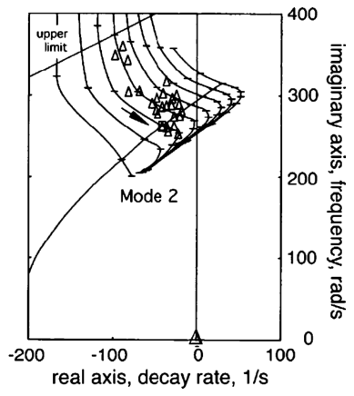
Hình 9 Các quỹ đạo nghiệm vòng kín ở nửa trên của mặt phẳng phức tại π radian được bộc lộ qua sự biến thiên tự phát của các đáp ứng xung dao động trong phạm vi tín hiệu nhỏ, gần tuyến tính. Các tam giác nhỏ chỉ các tần số đặc trưng của các điện thế gợi được khớp bằng các hàm cosin tắt dần. Mũi tên chỉ hướng giảm tốc độ suy giảm và tần số khi biên độ phản ứng tăng lên (hướng ngược lại so với Chế độ 1e trong Hình 7, phải). Từ [14], Hình 6.21, tr. 374 do các thăng giáng tự phát ở các mức độ của hoạt động nền. Những mối quan hệ này khác biệt rõ rệt với các mối quan hệ của Chế độ 1e và Chế độ 1i. Các quỹ đạo nghiệm Chế độ 2 từ việc giải ODE để khớp dữ liệu cắt qua trục ảo khi biên độ tăng lên, điều này ngụ ý sự kích thích mất kiểm soát do phản hồi dương giữa biên độ và độ lợi. Tuy nhiên, các quỹ đạo nghiệm quay ngược lại về phía trục ảo và hội tụ về một giao điểm gần 250 radian/s (40 Hz). Sự hội tụ về một cặp cực liên hợp phức trên trục ảo dự đoán sự tồn tại của một bộ hút chu trình giới hạn cho tập hợp KII ở giữa dải gamma. Trạng thái này được dự đoán là ổn định, bởi vì sự gia tăng thêm về biên độ bị ngăn chặn bởi độ lợi phản hồi giảm. Trong phân tích tuyến tính từng khúc các quan sát dựa trên trung bình thời gian làm phẳng hoạt động nền (AEP và PSTH), kết quả này dự đoán tính lưỡng ổn định: sự hội tụ của vỏ não về một bộ hút điểm hoặc một bộ hút chu trình giới hạn.
5 Định nghĩa một tham số trật tự vỏ não liên quan đến hàm lượng thông tin của hoạt động vỏ não
Tần số mang ở mọi nơi là giống nhau trên khắp hành khứu giác và tương tự trên khắp mỗi vùng vỏ não mới giác quan, nhưng nó có xu hướng thay đổi theo thời gian. Do sự điều biến tần số (FM) này, việc nghiên cứu các mẫu hình không gian được thực hiện tối ưu bằng cách sử dụng tần số tức thời suy ra từ biến đổi Hilbert [20, 21, 39], vốn mang lại độ phân giải thời gian của các mẫu hình AM và PM tốt hơn so với phép phân tách sử dụng biến đổi Fourier [20, 21]. Các giá trị số hóa của 64 kênh ECoG từ mảng 8×8 tạo ra mẫu hình PM hình nón của điều biến pha (PM) tại tần số tức thời (Hình 3, trái), trong đó các đường đồng pha tạo thành các vòng tròn cách đều nhau quanh một đỉnh (Hình 3, phải). Hiện tượng này cũng được tìm thấy ở tất cả các vùng của vỏ não mới giác quan, điều này ngụ ý rằng sự giao tiếp bên trong vỏ não diễn ra với một vận tốc hữu hạn trên bề mặt của nó, bị áp đặt bởi sự cần thiết của các điện thế hoạt động tác động tại các synap nhằm cung cấp sự khóa pha của các dao động tại tần số mang biến thiên theo thời gian. Bất kỳ hình thức lấy trung bình thời gian nào trên nhiều phép đo độ lệch pha giữa hai điểm đều phải hội tụ về độ trễ pha bằng không [28] bất kể khoảng cách giữa hai điểm lớn đến đâu.
Biên độ giải tích, A j(t), tại điện cực thứ j trong số 64 điện cực của mảng đồng biến thiên mạnh theo thời gian. Sự biến thiên được phản ánh trong giá trị trung bình không gian, A(t) (đường cong đỏ/xám trong Hình 10, A). Khi A(t) tiến gần về không, pha trở nên không xác định. Tại mỗi vị trí không gian, tốc độ tăng pha (tần số tức thời) chuyển sang một giá trị mới được chia sẻ bởi các sóng ở tất cả các vị trí khác, độc lập với biên độ phản ứng. Dao động kết hợp không gian tái đồng bộ hóa gần một tần số trung bình mới, thường khác ± 10–20 Hz so với tần số trung bình ở khung hình trước. Trong quá trình chuyển tiếp, độ lệch chuẩn không gian của các hiệu pha, SDX(t), thăng giáng quanh các giá trị cao (đường cong xanh dương/xám trong Hình 10, A). Có hai lý do. Một lý do là ở các biên độ giải tích rất thấp, sai số đo lường pha rất lớn khi pha không xác định. Lý do kia là sự chuyển tiếp không diễn ra đồng thời mà phân tán theo nón pha nhưng trong phạm vi ± π/4 (± 45°), giá trị nửa công suất. Do đó, các đỉnh SDX(t) cung cấp một dấu mốc trong ECoG để định vị các bước nhảy đồng bộ hóa rộng rãi biểu thị các sự chuyển trạng thái phân bố trong vỏ não.
Mẫu hình tương quan nghịch giữa SDX(t) và A(t) này xảy ra cả ở những đối tượng thức tỉnh đang tích cực tham gia tri giác [5, 18, 20, 21, 29, 48] và ở những đối tượng đang nghỉ ngơi (Hình 10, A). Mẫu hình này được mô phỏng một cách đơn giản [22]. Hàm truyền trong vòng phản hồi dương mô hình hóa động lực học của tập hợp KIe có thể được xấp xỉ bằng một số hạng hàm mũ siêu việt có cùng dạng với một quá trình khuếch tán 1-D. Hàm tự tương quan, tương quan chéo và biểu đồ khoảng thời gian phù hợp với các đặc trưng của một quá trình Poisson có thời kỳ trơ. Các chuỗi xung của các tế bào thần kinh thành phần có thể được mô hình hóa bằng các số ngẫu nhiên. Tổng của một số lượng lớn
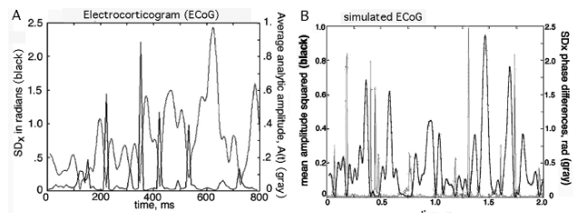
Hình 10 (A) đây là một ví dụ về ECoG từ một đối tượng người đang nghỉ ngơi, cho thấy hoạt động nền. Khi độ lệch chuẩn không gian của các hiệu pha, SDX(t), giảm xuống một giá trị thấp, biên độ giải tích trung bình, A(t), tăng lên cực đại trong khoảng thời gian có tần số tương đối không đổi tiếp theo sau một sự chuyển trạng thái [21]. (B) mẫu hình này được mô phỏng bằng cách cho nhiễu nâu 1/f 2 đi qua một bộ lọc thông dải ở dải gamma. Biên độ giải tích trung bình và phương sai không gian của pha giải tích đồng biến thiên nghịch đảo [22]
các số ngẫu nhiên phân bố độc lập và đồng nhất hội tụ về một phổ mật độ công suất với độ dốc 1/f2 trong tọa độ log-log [55]. Khi nhiễu nâu này được đưa qua một bộ lọc thông dải ở dải gamma, biên độ và pha biến thiên theo cách thức được trình bày trong Hình 10, B. Vỏ não cung cấp dải thông tại tần số đặc trưng của mối quan hệ phản hồi âm giữa các tế bào tháp (hoặc tế bào mitral) và các tế bào trung gian ức chế (hoặc tế bào hạt bên trong) (Hình 7, phải). Kết quả được thấy trong các thăng giáng của hoạt động dải gamma trong ECoG; biểu đồ biên độ gần với phân bố Gauss; đường bao của hoạt động tuân theo phân bố Rayleigh [14], tr. 148, Hình 3.13c; và mật độ phổ công suất trong tọa độ log-log có độ dốc gần –2. Các gai nhọn trong SDX(t) tái diễn thất thường ở dải theta, như được bộc lộ qua sự tương quan giữa ECoG và SDX(t) trong cả ECoG thực [20, 21, 26] và mô phỏng [22]. Do đó, các gai nhọn trong SDX(t) ở Hình 10, A có thể được xem là nội tại của động lực học vỏ não. Nhiễu nâu được tạo ra bởi động lực học KIe (Hình 4 và 6); các gai rỗng (null spike) xuất hiện khi nhiễu đi qua bộ lọc thông dải KII (Hình 4 và 7). Các gai rỗng không bị áp đặt bởi đầu vào giác quan; thay vào đó, chúng bộc lộ sự im lặng nội tại từng đợt của hoạt động nền. Sự im lặng thoáng qua đó có thể tạo điều kiện cho tri giác vì lý do sau đây. Vỏ não chỉ trải qua một sự chuyển trạng thái khi có sự hiện diện của đầu vào giác quan trên ngưỡng. Ngưỡng được giảm đi đáng kể đối với các kích thích mà một tập hợp Hebb đã tồn tại sẵn cùng với bộ hút và lưu vực hút đi kèm của nó. Ngưỡng có thể còn được giảm thêm nữa nhờ sự suy giảm ngắn ngủi trong nhiễu nền vỏ não.
Biên độ giải tích, A j(t), cũng thay đổi theo vị trí ghi không gian, tạo ra mẫu hình AM không gian được biểu diễn bằng một vectơ 64×1, A(t). Vectơ này được chuẩn hóa bằng cách chia mỗi giá trị A j (t) cho biên độ trung bình, A(t). Trong khi mẫu hình AM ở mọi bước số hóa đều đi kèm với một mẫu hình PM, chỉ những mẫu hình kéo dài từ 3 đến 5 chu kỳ của tần số trung bình duy trì và nón pha của nó mới dễ dàng được nhận diện, đo lường và phân loại theo các phạm trù kích thích. Các mẫu hình AM có độ phân loại đạt ý nghĩa thống kê cao nhất là những mẫu hình ở đỉnh của A(t), khi tốc độ tăng của pha giải tích (tần số tức thời) gần như không đổi và phương sai không gian của pha, SDX(t), thấp. Đây là những mẫu hình AM có thể phân loại được theo các CS được đưa cho các đối tượng đang được ghi ECoG (Hình 2, phải).
Vectơ chuẩn hóa, A(t), biểu diễn các mẫu hình AM được chọn làm tham số trật tự cho vỏ não, bởi vì nó đo lường loại hình và mức độ cấu trúc trong hoạt động vỏ não. Tuy nhiên, đối với các mục đích mô tả, cần một chỉ số vô hướng để thể hiện các mối quan hệ của tham số trật tự với các biến số khác, đặc biệt là với biên độ ECoG. Chỉ số này được suy ra như sau. A(t) đã chuẩn hóa xác định một điểm trong không gian 64 chiều đại diện cho mẫu hình AM. Các mẫu hình tương tự tạo thành một cụm điểm biểu hiện một bộ hút trong không gian trạng thái vỏ não. Nhiều cụm bộc lộ một cảnh quan bộ hút. Sự thay đổi từ lưu vực hút này sang lưu vực hút khác qua một ranh giới (đường phân cách) được thể hiện bằng một quỹ đạo của các điểm số hóa liên tiếp cho A(t), khi trạng thái vỏ não dịch chuyển từ cụm này sang cụm khác. Tốc độ thay đổi tuyệt đối của tham số trật tự, De(t) = |A(t) – A(t-1)|, được cho bởi khoảng cách Euclid giữa các điểm liên tiếp. De(t) tương ứng với giá trị tuyệt đối của đạo hàm số của tham số trật tự. Nó có giá trị cao trong quá trình chuyển trạng thái và giảm
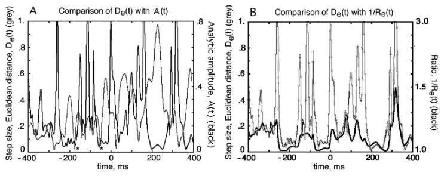
Hình 11 (A): Tốc độ thay đổi của tham số trật tự, De(t), giảm xuống một giá trị thấp từ rất lâu trước một sự gia tăng lớn của biên độ giải tích trung bình, A(t). (B): chỉ số đồng bộ, Re(t), (được hiển thị ở đây dưới dạng nghịch đảo của nó, 1/Re(t)) tăng lên gần mức đơn vị trước khi các mẫu hình AM ổn định (De(t) thấp) và từ rất lâu trước khi A(t) tăng, cho thấy sự gia tăng tính đồng bộ không phải là cơ sở cho sự gia tăng biên độ giải tích trong các khung hình của ECoG. Từ [20]
xuống các giá trị thấp khi một mẫu hình AM mới xuất hiện cùng với sự hội tụ về một bộ hút, tiếp theo là một sự gia tăng lớn trong A(t) (Hình 11, A). Do đó, De(t) biến thiên nghịch đảo với mức độ ổn định của mẫu hình được xác định bởi tham số trật tự dạng vectơ [20]. Mức độ trật tự cũng biến thiên tỷ lệ thuận với tốc độ tiêu tán năng lượng tự do trong hoạt động vỏ não, vốn được biểu hiện ở bình phương biên độ giải tích ECoG trung bình, A2(t). Chỉ số tốt nhất hiện có để định vị theo thời gian các mẫu hình AM có thể phân loại trong ECoG [18] là tỷ số, He(t) = A2(t) / De(t). Atmanspacher và Scheingraber [3] định nghĩa đại lượng này là thông tin thực dụng được mang bởi bó sóng ở dải beta hoặc gamma. Nó là tỷ số giữa tốc độ tiêu tán năng lượng tự do và tốc độ tăng của tham số trật tự. He(t) cũng cung cấp một giá trị vô hướng duy nhất để đánh chỉ số cho mỗi mẫu hình AM có thể phân loại như một trạng thái cơ bản không tương đương [33].
Sự mất đồng bộ thường gắn liền với hoạt động nhanh điện thế thấp, trong khi sự đồng bộ hóa gắn liền với hoạt động chậm điện thế cao. Một sự gia tăng trong biên độ giải tích ECoG trung bình có thể xảy ra khi có nhiều sự đồng bộ hơn, nhiều tổng dòng điện đuôi gai hơn, hoặc cả hai. Hai yếu tố này được phân biệt trong các bản ghi ECoG beta-gamma được ghi bằng mảng 8×8 mật độ cao bằng cách tính độ lệch chuẩn thời gian, SDT(t), của dạng sóng trung bình trong một cửa sổ trượt có thời lượng gấp đôi bước sóng của tần số trung tâm của dải thông và chia nó cho giá trị trung bình của 64 SDT(t). Khi không có sự đồng bộ, tỷ số, Re(t) = SDT(t) / SDT(x), tiến gần tới 1/n^0.5, trong đó n là số bước thời gian trong cửa sổ. Re(t) bằng đơn vị khi có sự đồng bộ hoàn toàn (tần số tức thời và pha giống hệt nhau), bất kể có các mẫu hình AM hay không. Re(t) được sử dụng để chứng minh rằng những gia tăng lớn trong A(t) trong quá trình hình thành mẫu hình AM không phải do sự gia tăng mức độ đồng bộ (Hình 11, B), vốn xảy ra trước khi biên độ tăng lên.
Mọi mẫu hình AM có thể phân loại đều có một nón pha. Trong hành khứu giác dường như chỉ có một nón pha tại một thời điểm trong suốt thời lượng của đợt phát xung gamma. Khi có nhiều hơn một thành phần có thể phân biệt được của tần số mang biến thiên theo thời gian, mỗi tần số đỉnh có nón pha của nó với cùng vị trí và dấu của đỉnh cũng như cùng vận tốc pha. Các nón pha kép biểu hiện cùng một sự kiện phổ rộng. Trong vỏ não mới có nhiều nón pha chồng chéo nhau mọi lúc, tạo ra hình ảnh giống như một nồi nước đang sôi. Tần số, dấu và vị trí của các nón pha khác nhau nhiều như cách chúng biến thiên giữa các sự kiện liên tiếp [21]. Phân bố của các thời lượng tuân theo quy luật lũy thừa, và tương tự đối với các đường kính trong giới hạn đo lường. Phân bố của các tần số mang và tổng quát hơn là của các mật độ phổ công suất theo cả thời gian và không gian [21, 22, 27, 30] của vỏ não mới đều tuân theo quy luật lũy thừa. Những phân bố quy luật lũy thừa đa dạng này của các biến trạng thái suy ra cho thấy vỏ não mới được ổn định trong một dạng tính tới hạn tự tổ chức (SOC) như được mô tả lần đầu bởi Bak, Wiesenfeld và Tang [4] và chi tiết hơn bởi Jensen [38].
Đối tượng nghiên cứu kinh điển của SOC là một đống cát được đổ từ trên xuống như ở đáy của một đồng hồ cát. Dòng cát nhỏ giọt đều đặn tạo ra một đống hình nón tăng dần độ dốc tới một góc nghỉ tới hạn và được duy trì sau đó bởi các trận lở cát lặp đi lặp lại. Tương tự, một nồi nước đun sôi giữ một nhiệt độ không đổi bằng cách tạo ra các bọt hơi nước. Một hệ mở gồm các phần tử tương tác, dù là hạt cát, phân tử nước hay tế bào thần kinh, tiến hóa tới một trạng thái ổn định vững bền ở xa trạng thái cân bằng. Trạng thái toàn cục đó được duy trì ở mức giả cân bằng bằng các sự điều chỉnh lặp đi lặp lại: các trận lở cát, các bọt hơi nước, hoặc các chuyển trạng thái giữa các nhóm tế bào thần kinh. Các bản ghi về những thay đổi này có vẻ hỗn loạn và cho ra các phổ thời gian và không gian có dạng 1/f^α ngụ ý tính tự tương đồng trên các thang đo rộng của thời gian và không gian. Tương tự, ECoG cho ra các bản ghi có vẻ hỗn loạn, với các mật độ phổ công suất theo thời gian và không gian tuân theo 1/f^α, trong đó số mũ α được tính toán nằm trong khoảng 1 < α < 3 [20, 21, 22, 27, 51]. Trong cả ba hệ thống, vẻ ngoài của “nhiễu” chỉ là ảo giác. Khi được nhìn từ góc độ phù hợp, các cấu trúc giàu thông tin trong “nhiễu” trở nên rõ ràng. Tham số tới hạn được duy trì bởi SOC trong vỏ não được đề xuất là tốc độ phát xung trung bình của các tế bào thần kinh cấu thành nên các quần thể tương tác trong vỏ não, vốn được điều hòa cân bằng nội môi ở mọi nơi trong vỏ não bởi các thời kỳ trơ. Cơ chế này được biểu diễn bởi một bộ hút điểm thể hiện ở cực tại gốc của mặt phẳng phức (các Hình 6, 7, 8 và 9, phải). Giống như các trận lở cát, thời gian và vị trí của các nón pha không thể dự đoán cục bộ mà chỉ có thể dự đoán ở mức trung bình. Chúng chồng chéo lên nhau sao cho bất kỳ tế bào thần kinh nào cũng có thể tham gia vào nhiều nón pha đồng thời. Kích thước và thời lượng của các nón pha cho ra các biểu đồ phân bố tuân theo quy luật lũy thừa. Các nón pha nhỏ nhất và ngắn nhất là nhiều nhất. Giá trị trung bình và độ lệch chuẩn của chúng thay đổi tỷ lệ thuận với kích thước của các cửa sổ đo lường [22, 30]. Các phân bố cho thấy các mẫu hình thần kinh có thể tự tương đồng trên nhiều thang đo [12, 36, 37, 45, 51]. Những tương đồng chức năng này chỉ ra rằng động lực học vỏ não mới là không có thang đo đặc trưng (scale-free) [10, 19, 62]: các sự kiện lớn nhất nằm ở phần đuôi của một phân bố liên tục và chia sẻ cùng một cơ chế khởi phát cũng như cùng một thời gian chuyển tiếp khởi phát ngắn ngủi bất chấp kích thước lớn của chúng.
6 Đề xuất một giản đồ pha để biểu diễn động lực học của vỏ não
Giản đồ pha kinh điển của một chất như nước tại cân bằng nhiệt động lực học (Hình 12, A từ Blauch [8]) đóng vai trò là nền tảng để xây dựng một giản đồ cho vỏ não như một hệ thống vận hành ở xa trạng thái cân bằng, nhưng vẫn duy trì một trạng thái ổn định có điều kiện (Hình 12, B). Hệ thống kinh điển mang tính tĩnh và
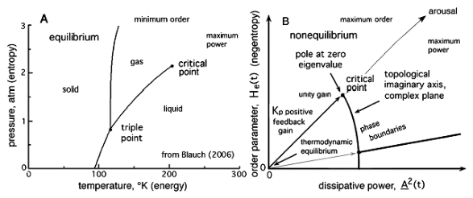
Hình 12 (A) giản đồ pha thông thường tại trạng thái cân bằng, từ [8]. (B) bằng phép tương tự với vật chất vật lý, một giản đồ pha được đề xuất cho động lực học vỏ não. Ở xa trạng thái cân bằng, các mức độ trật tự và công suất được hình dung là tăng lên cùng nhau khi mức độ thức tỉnh tăng lên (Hình 1). Điểm tới hạn và trục ảo được lấy từ mặt phẳng phức (Hình 9). Sự thức tỉnh từ gây mê sâu (trạng thái “vòng hở” với ECoG phẳng, KO trong Hình 4) dẫn đến sự ổn định hóa tại một trạng thái giả cân bằng được duy trì bởi các thời kỳ trơ của các tương tác kích thích giữa các tế bào tháp (mitral). Phép biến đổi từ A sang B là bằng cách tịnh tiến gốc tọa độ trong B tới điểm tới hạn được hiển thị trong A và xây dựng hai chiều trực giao mới cho sự thay đổi: tốc độ tăng thông tin thực dụng (negentropy) như một chỉ số vô hướng của trật tự trên trục tung và tốc độ tiêu tán năng lượng tự do (công suất) trên trục hoành. Hệ thống đóng. Mức năng lượng hiển thị trên trục hoành được đánh chỉ số bằng nhiệt độ. Mức độ trật tự hiển thị trên trục tung được đo bằng áp suất, thể tích hoặc entropy. Trật tự cực đại xảy ra ở năng lượng cực tiểu. Ba pha được phân tách bởi các ranh giới pha gặp nhau tại một điểm ba. Tuy nhiên, ranh giới pha giữa lỏng và khí kết thúc tại một điểm tới hạn, vượt ra ngoài điểm đó pha của các thành phần là không xác định.
Não bộ là các hệ mở, động lực học liên tục tiêu tán năng lượng tự do [33, 60] trong việc đốt cháy glucose; não bộ chiếm 5% khối lượng cơ thể nhưng tiêu thụ 20% tỷ lệ trao đổi chất cơ bản. Hai biến trạng thái mới là cần thiết: tốc độ tiêu tán năng lượng (công suất) trên trục hoành, và tốc độ tăng thông tin (negentropy) trên trục tung, đánh chỉ số cho trật tự nổi lên trong các cấu trúc tiêu tán [52]. Trong hiển thị động lực học, trạng thái cân bằng tại tính tới hạn xuất hiện như một điểm tại gốc của các biến trạng thái mới. Trạng thái cân bằng được tiếp cận khi chết não và trong trạng thái không tương tác bị áp đặt bởi gây mê sâu (Hình 4, KO). Khi hồi phục từ gây mê, mức độ trật tự và tốc độ tiêu tán năng lượng tăng lên cùng nhau (đường chéo, Hình 12, B).
Nhiệt độ não không phù hợp làm chỉ số của công suất, bởi vì chim và động vật có vú sử dụng phản hồi cân bằng nội môi để giữ nhiệt độ não trong một phạm vi hẹp. Một chỉ số hữu ích của công suất là bình phương trung bình biên độ giải tích, A2(t), bởi vì biên độ ECoG phụ thuộc vào mật độ dòng điện qua điện trở suất ngoại bào tương đối cố định của mô vỏ não. Bình phương của dòng điện hoặc điện thế tỷ lệ thuận với công suất tiêu thụ bởi các tế bào thần kinh tạo ra các điện thế đuôi gai. Sự tiêu tán này là cơ sở cho việc chụp ảnh hoạt động não bằng cách đo lưu lượng máu não sử dụng fMRI, SPECT, PET, v.v., bởi vì 95% năng lượng não được tiêu thụ bởi quá trình trao đổi chất oxy hóa trong các đuôi gai, chỉ 5% trong các sợi trục.
Mức độ trật tự trên trục tung được đánh chỉ số bằng tỷ số vô hướng xác định thông tin thực dụng, He(t). Biến trạng thái này làm rõ tiền đề rằng trật tự trong các cấu trúc tiêu tán tăng lên khi công suất tăng [52]. Vỏ não vận hành như một hệ mở ở xa trạng thái cân bằng (Hình 12, B), nhưng nó tự ổn định trong khi chuyển qua một tập hợp các trạng thái bằng các quá trình được gọi dưới nhiều tên khác nhau như quay quanh quỹ đạo trong tính siêu ổn định [42, 57], tính lang thang hỗn loạn [40]; tính kết hợp thoáng qua trong các trạng thái cơ bản không tương đương đơn nhất [33]; và các sự rẽ nhánh [35] giữa các cấp độ phân cấp bằng thẩm thấu thần kinh [Chương của Kozma] thông qua một sự mở rộng của lý thuyết đồ thị ngẫu nhiên [42]. Trong mọi công thức, độ lớn của hoạt động nền mà tại đó vỏ não được ổn định có thể thay đổi; nó thường đồng biến thiên với mức độ thức tỉnh (Hình 1). Trong vỏ não, tính ổn định được duy trì bởi các thời kỳ trơ, sao cho dù sự gia tăng thức tỉnh lớn đến đâu, đầu ra của các quần thể KIe vẫn tự ổn định ở độ lợi phản hồi đơn vị. Cực tại gốc của mặt phẳng phức (tại gốc trong các Hình 6, 7, 8 và 9) tương ứng với điểm tới hạn trên đường thẳng hướng lên chéo (Hình 12, B), do đó tính siêu ổn định của vỏ não có thể được mô tả như một trường hợp của tính tới hạn tự tổ chức (SOC). Nhờ đó, trạng thái ổn định có thể được mô tả như một pha trong một hệ thống ở trạng thái giả cân bằng, và sự chuyển trạng thái có thể được gọi là một sự chuyển pha. Sự phân định bởi trục ảo vốn có thể tiếp cận được đối với phân tích tuyến tính từng khúc giữa các trạng thái ổn định và không ổn định (các Hình 6, 7, 8 và 9) ở nửa trên của mặt phẳng phức được thấy là tương ứng với một ranh giới pha (Hình 12, B) giữa các trạng thái tiếp nhận và truyền phát lưỡng ổn định (Hình 13). Một ranh giới pha thứ hai vốn không thể tiếp cận đối với phân tích tuyến tính phân tách một miền pha của cơn động kinh cục bộ phức tạp tự duy trì [16].
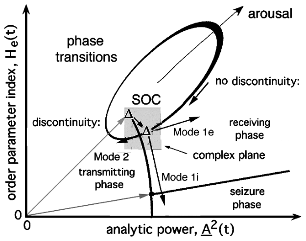
Hình 13 Một giản đồ pha của động lực học vỏ não mới được xây dựng trong hệ tọa độ gồm mức độ trật tự được cho bởi tốc độ thay đổi trong tham số trật tự, He(t), là biến phụ thuộc và công suất giải tích trung bình, A2(t), là biến độc lập. Vùng xám ở giữa cho thấy không gian con đã tuyến tính hóa của mặt phẳng phức trong các Hình 6, 7, 8 và 9
Những đặc tính này dẫn đến một quan điểm về tri giác như một quá trình tuần hoàn (hình elip trong Hình 13). Chu trình bắt đầu với vỏ não ở trạng thái tiếp nhận cùng một cảnh quan bộ hút đã được thiết lập sẵn bởi việc học từ đầu vào và được lựa chọn bởi hệ viền trong quá trình tiền hướng tâm [39]. Cực tại gốc tọa độ biểu diễn bộ hút điểm ổn định, khác không của tập hợp KIe (tại gốc trong các Hình 6, 7, 8 và 9, phải) xác định vị trí của điểm tới hạn được duy trì bởi SOC, vốn nằm trên đường 45° biểu diễn trật tự tăng lên cùng với công suất hoạt động thần kinh tăng lên phù hợp với “trật tự từ hỗn loạn” của Prigogine [52] trong sự hình thành các “cấu trúc tiêu tán” và “nguyên lý nô dịch” của Haken [35]. Ba pha được hình dung trong một cách tiếp cận đơn giản hóa: tiếp nhận, truyền phát và động kinh. Điểm đặt (Hình 13, dưới) tương ứng với hình chữ nhật nhỏ ở giữa trong các Hình 7, 8 và 9 được giả định là không nằm trên đường chéo hướng lên mà nằm bên dưới đường thẳng đó. Nó bị dịch chuyển trong các vùng vỏ não giác quan bởi đầu vào nền từ các thụ thể giác quan, và trong các vùng vỏ não khác bởi đầu vào nền từ các phần khác của não. Sự dịch chuyển (mũi tên nhỏ hướng xuống giữa các tam giác trong Hình 13) phản ánh sự giảm độ lợi xuống dưới đơn vị đối với các đáp ứng xung nhỏ nhất có thể quan sát được (Hình 6, A). Sự dịch chuyển biểu diễn trật tự giảm và công suất tăng.
Quỹ đạo nghiệm ở Chế độ 1e được biểu diễn bởi mũi tên hướng sang phải gần như nằm ngang từ điểm đặt (dưới) chỉ ra công suất tăng và sự gia tăng nhỏ về trật tự với các điện thế gợi thuận chiều vượt trên phạm vi hoạt động nền. Mũi tên màu cam hướng xuống chỉ quỹ đạo nghiệm ở Chế độ 1i, cho thấy công suất tăng và trật tự giảm đi kèm với các đáp ứng xung liên quan đến sự ức chế mạnh. Mũi tên màu đỏ tía hướng sang trái chỉ quỹ đạo nghiệm ở Chế độ 2, vốn cắt qua ranh giới pha (trục ảo) trong một sự chuyển pha. Chế độ 2 xuất hiện đối nghịch hoàn toàn với Chế độ 1e khi cho thấy sự giảm công suất cùng với một sự giảm nhỏ về trật tự, có xu hướng tiến tới mất ổn định.
Đặc điểm đáng chú ý nhất của giản đồ trong Hình 13 là sự mô tả về chuyển pha trong một hành vi tri giác như bắt đầu bằng việc giảm công suất và giảm trật tự. Đặc điểm này đi ngược lại trực giác, bởi vì tri giác thường được hình dung là kết quả từ tác động của một loạt xung giác quan làm tăng công suất và áp đặt trật tự tăng lên bằng cách bơm thông tin từ một kích thích. Chắc chắn điều đó có diễn ra, nhưng giản đồ pha bổ sung một chiều kích khác cho câu chuyện, như sau. Sự kiện khởi phát một chuyển pha là một sự sụt giảm đột ngột trong công suất giải tích của hoạt động nền xuống gần bằng không, như được thấy xảy ra trong Hình 10, A, và như được mô phỏng trong B. Sự sụt giảm này gây ra một trạng thái bất định ngắn ngủi, trong đó biên độ của ECoG gần bằng không và pha của ECoG không xác định. Nếu một loạt xung do kích thích gây ra đến tại hoặc ngay trước trạng thái này, thì vỏ não theo Chế độ 2 có thể bị đầu vào đẩy qua ranh giới pha. Các quỹ đạo nghiệm Chế độ 2 trong Hình 9 cho thấy đầu vào ngoại sinh (phân biệt với hoạt động nội sinh) làm tăng biên độ và cũng làm tăng tính mất ổn định bằng cách đưa vỏ não tiến gần hơn và vượt qua trục ảo. Biên độ phản ứng không phụ thuộc vào biên độ đầu vào mà phụ thuộc vào trạng thái nội tại của vỏ não, cụ thể là mức độ suy giảm trong công suất và trật tự của nhiễu nâu nền.
Nếu chuyển pha xảy ra, nó đặt lại tần số mang của dao động thông qua một sự gián đoạn trong pha giải tích. Sau đó, dao động hội tụ về một tần số chung (Hình 9) như được thể hiện bởi sự giảm SDX(t) trong Hình 10, A. Tiếp theo sau đó lần lượt là sự tái đồng bộ hóa như được thể hiện bởi Re(t) tăng lên trong Hình 11, B; trật tự tăng lên khi một mẫu hình ổn định xuất hiện với De(t) giảm xuống trong Hình 11, A; và cuối cùng là công suất trung bình A2(t) tăng lên trong Hình 11, A. Sau khi công suất đạt đỉnh, vỏ não trở lại trạng thái tiếp nhận của nó bằng một chuyển pha thứ hai không có sự gián đoạn trong pha dao động. Theo giả thuyết này, chu trình cho cơ hội trải qua một chuyển pha lặp lại không tuần hoàn ở một tốc độ nội tại trong dải theta. Việc hiện thực hóa một chuyển pha đòi hỏi sự hiện diện của một đợt tăng đột biến đầu vào tới vỏ não. Trong mô hình điều kiện hóa thực nghiệm được sử dụng trong nghiên cứu này, đợt tăng đột biến đầu vào là một loạt xung giác quan được đưa đến vỏ não bởi một hành động quan sát có chủ đích, vì vậy hình elip gamma trong Hình 13 có thể được gọi một cách chính xác là một biểu diễn của quỹ đạo thần kinh của một chu trình hành động – tri giác [17, 19, 28]. Có thể hình dung đợt tăng đột biến đầu vào cũng có thể được cung cấp trong các vùng vỏ não giác quan bởi sự truyền dẫn vỏ não – vỏ não từ hệ viền. Một chuyển pha như vậy có thể làm nền tảng cho sự hình thành các bó sóng beta trong một chu trình hành động – tri giác “ảo”.
7 Kết luận và Tóm tắt
Ý nghĩa của sự sụt giảm công suất trước khi khởi phát một chuyển pha có thể được thấy ở thực tế là một kích thích có điều kiện được dự đoán thường là một tín hiệu rất yếu nằm lẫn trong nhiễu ngữ cảnh. Loạt xung hướng tâm kích hoạt vỏ não giác quan và hiện thực hóa cảnh quan bộ hút biểu thị một số phạm trù CS khả dĩ được dự đoán trong một hành động quan sát có chủ đích. Một tập hợp tế bào thần kinh Hebb được hình thành trong quá trình học tập trước đó chi phối mỗi bộ hút. Số lượng tương đối ít các điện thế hoạt động được gửi bởi các thụ thể liên quan có thể châm ngòi cho một trong các tập hợp tế bào, vốn có thể dẫn hướng vỏ não vào lưu vực hút tương ứng. Khoảnh khắc lựa chọn đó có thể được hình dung là được thực hiện một cách tối ưu khi hoạt động nền bị dập tắt, và đầu ra của một tập hợp Hebb liên quan có tỷ lệ tín hiệu trên nhiễu cực đại trong việc lựa chọn một lưu vực để dẫn dắt toàn bộ vỏ não giác quan. Khi công suất nền sau đó tăng lên, nó được in dấu bởi mẫu hình AM do một bộ hút trong cảnh quan cung cấp. Công suất không phải do đầu vào giác quan cung cấp; nó được cung cấp bởi sự kích thích lẫn nhau nội tại. Gai rỗng (null spike) có thể được ví như mắt bão—một khoảng lặng thoáng qua mở ra khả năng cho một sự thay đổi về hướng chuyển động. Gai rỗng tiếp theo dập tắt hoạt động vỏ não và giải phóng động lực học khỏi bộ hút khi mẫu hình AM biến mất.
Gai rỗng trong hoạt động nhiễu nâu đã lọc thông dải được hình dung như một màn trập [43] làm trắng xóa nền nội tại. Ở biên độ giải tích rất thấp khi pha giải tích không xác định, có thể quỹ đạo hệ thống tiếp cận một điểm kỳ dị làm tăng khả năng để một đầu vào giác quan ngoại sinh nhỏ đặt lại hoạt động nền trong một khung hình mới. Gai rỗng không đủ tiêu chuẩn là một cái cổng (gate), bởi vì đầu vào giác quan không bị chặn lại hay giữ lại, và mẫu hình AM trong khung hình tiếp theo, nếu có, được hình thành bởi sự tái tổ chức hoạt động hiện có thông qua việc lựa chọn bộ hút, chứ không phải bởi sự dẫn dắt hoạt động vỏ não bằng đầu vào như trong mô hình “xử lý thông tin”. Gai rỗng không phải là một bộ quét (scanner) [61], bởi vì việc lựa chọn một lưu vực hút diễn ra bằng sự cạnh tranh giữa các tập hợp tế bào trong không gian trạng thái chứ không phải bằng một cuộc tìm kiếm một mô-đun trong vỏ não. Nó không thực sự là một chiếc đồng hồ, bởi vì sự tái diễn của các gai rỗng là không tuần hoàn trong một phạm vi giới hạn, và sự hình thành một mẫu hình AM đòi hỏi một yếu tố ngoại sinh, tức đầu vào như từ một cái hít mũi hoặc một chuyển động giật mắt [58]. Việc đóng mở cổng, quét và định thời đồng hồ [46] được hình dung tốt hơn là các hoạt động đồi thị – vỏ não cấp độ trung mô [Chương của Bressler], trong khi việc định thời chính xác của chuyển pha được thực hiện bên trong các quần thể thần kinh vốn sẽ xây dựng nên bó sóng mang một mẫu hình AM. Việc khám phá sâu hơn sẽ đòi hỏi phát triển một nền tảng toán học cho gai rỗng, vốn hiện chưa tồn tại. Hai cơ sở đầy hứa hẹn cho nghiên cứu được dự kiến nằm ở lý thuyết đồ thị ngẫu nhiên [9, 42] và lý thuyết trường lượng tử [33, 60]. Đây là những cách tiếp cận được sử dụng rộng rãi để mô tả các quá trình mà qua đó các sự kiện vi mô có thể được nâng cấp quy mô thành các mẫu hình vĩ mô trong các hệ thống phức tạp.
Hình 13 cung cấp cơ sở cho một đồ thị phức tạp hơn để tổng hợp và hiển thị thêm dữ liệu và các khái niệm suy ra từ các nghiên cứu về động lực học phi tuyến của vỏ não. Dạng đơn giản này có thể được mở rộng để bao gồm dữ liệu bổ sung từ các nghiên cứu dược lý. Ví dụ, việc gây mê bằng barbiturat là do tăng cường ức chế được tái lập bởi quỹ đạo nghiệm ở Chế độ 1i. Các quỹ đạo nghiệm tương tự thu được bằng cách giảm hoạt động nền với barbiturat hoặc bằng cách tăng cường độ xung (Hình 8). Ở mức độ làm phẳng ECoG cực hạn, độ lợi kp = 0, và một bộ hút điểm với biên độ bằng không được bộc lộ [32] tạo ra đáp ứng xung vòng hở (Hình 4, KO). Một sự mất ổn định được biểu hiện trong các thoi barbiturat: các đợt dao động ngắn ở dải theta [14]. Các giai đoạn của giấc ngủ có thể được biểu diễn bằng những pha khác nữa.
Sự kích thích tần số cao (tetanization) ngắn ngủi vào dải khứu giác bên ở cường độ siêu cực đại có thể gây ra một cơn động kinh cục bộ phức tạp kèm theo vắng ý thức và sóng-gai 3/giây [16]. Mẫu hình hoạt động tự chủ này ngụ ý sự tồn tại của ranh giới pha dưới phân tách các trạng thái tiếp nhận và truyền phát khỏi một miền động kinh với công suất rất cao và trật tự tối thiểu, vốn được tiếp cận một cách nghịch lý bằng cách nâng hoạt động của các tế bào thần kinh ức chế lẫn nhau lên cường độ cao. Đáng chú ý là tốc độ lặp lại gai động kinh cũng nằm trong cùng dải theta như gai rỗng. Sóng-gai động kinh sẽ tạo thành một hình elip lớn hơn nhiều (không hiển thị).
Hình elip bình thường có thể được coi là hình chiếu 2-D của một hình xuyến (torus), biểu hiện một bộ hút bán tuần hoàn, trong đó tần số thấp của sự lặp lại đợt phát xung ở dải theta được biểu diễn bởi đường kính của hình xuyến, và tần số cao của sóng mang đợt phát xung ở dải beta hoặc gamma được biểu diễn bởi độ dày của hình xuyến. Hình xuyến đến lượt nó có thể được coi là hình chiếu của một đường xoắn ốc kéo dài vào miền thời gian trong không gian 3-D. Nhiều hình elip có thể dùng để biểu diễn các cảnh quan bộ hút hỗn loạn nhiều chiều [32], các hệ thống ký ức động trong lý thuyết thẩm thấu thần kinh [56], và nhiều trạng thái cơ bản được mô hình hóa bởi lý thuyết trường lượng tử tiêu tán [16, 60]. Ngay lập tức hơn, cần có một nền tảng toán học vững chắc vượt ra ngoài ODE, để suy ra và mô tả chính xác hơn các dạng của các chu trình hành động – tri giác thần kinh và các ranh giới pha mà chúng đi qua, những thứ mà ODE không hoàn toàn phù hợp.
Tóm lại, hành khứu giác, nhân và vỏ não khứu giác cấu thành một hệ thống bán tự chủ trong mỗi bán cầu đại não, tiếp nhận thông tin chất tạo mùi, phân loại một tri giác mùi bằng cách khái quát hóa và trừu tượng hóa, và truyền phát tri giác đó rộng khắp qua não trước. Hình thức của tri giác là một khung hình được xây dựng và mang bởi một bó sóng với một dao động mang “hỗn loạn” không tuần hoàn ở dải gamma. Nội dung được biểu hiện trong một mẫu hình không gian của điều biến biên độ (AM) của sóng mang được xác định bởi các synap đã biến đổi giữa các tế bào mitral hành khứu giác tạo thành các tập hợp tế bào thần kinh Hebb trong quá trình học tập củng cố. Mỗi tập hợp tế bào cho một chất tạo mùi được phân biệt sẽ dẫn hướng hành khứu giác tới một mẫu hình AM được xây dựng bởi một bộ hút “hỗn loạn”. Tập hợp các phạm trù mùi đã học được lưu giữ dưới dạng một cảnh quan bộ hút. Mỗi bộ hút được bao quanh bởi một lưu vực hút; các quá trình khái quát hóa và trừu tượng hóa xảy ra khi hệ thống hội tụ về bộ hút, bất kể một kích thích đặt hệ thống vào đâu trong một lưu vực. Ba yêu cầu được đáp ứng bởi hệ khứu giác trong quá trình hình thành tri giác là một sự chuyển trạng thái từ trạng thái tiếp nhận sang trạng thái truyền phát, một sự chuyển khác để quay trở lại, và một yêu cầu thứ ba để lấy mẫu lặp đi lặp lại môi trường khứu giác: một màn trập.
Động lực học trong các hệ tri giác thị giác, thính giác và cảm giác thân thể chia sẻ những đặc tính này. Trong Chương này, bằng chứng từ ECoG của vỏ não cổ và vỏ não mới được dùng để mô tả các cơ chế thần kinh tạo ra và ổn định các sóng mang vỏ não; cho phép các chuyển trạng thái; và cung cấp một màn trập để kết thúc các khung hình cũ và khởi tạo các khung hình mới theo chuỗi điện ảnh trong mọi hệ giác quan. Người ta giả định rằng một tri giác chỉ hình thành một bó sóng khi hoạt động nền nội sinh suy giảm ngắn ngủi trong một “gai rỗng” (null spike), vốn cung cấp tỷ lệ tín hiệu trên nhiễu cao mà một đợt hoạt động vỏ não được dẫn dắt bởi đầu vào chuyển tiếp từ các thụ thể giác quan cần để lựa chọn và khởi tạo một khung hình mới. Chuỗi không tuần hoàn của các gai rỗng cung cấp màn trập vốn là một điều kiện cần dù chưa đủ cho quá trình điện ảnh của tri giác.
Lời cảm ơn Tôi xin bày tỏ lòng biết ơn tới Mark D. Holmes và Ceon Ramon, Đại học Washington, Seattle WA và Sampsa Vanhatalo, Đại học Helsinki, Phần Lan về dữ liệu và mô hình hóa sử dụng 64 kênh của Hệ thống ghi 256 kênh System 200 do Don Tucker, Electrical Geodesics Inc., Eugene OR cung cấp. Đối với những hiểu biết sâu sắc mang tính phê bình, tôi xin cảm ơn các nhà vật lý Giuseppe Vitiello, Đại học Salerno và Michael Stringer, Đại học Northwestern, và các nhà toán học Robert Kozma, Đại học Memphis và Béla Bollobás, Đại học Cambridge. Một phiên bản sơ bộ của Chương này xuất hiện trong Kỷ yếu IJCNN’07 [23].
Tài liệu tham khảo
1. Neurodynamics. An Exploration of Mesoscopic Brain Dynamics. London: Springer, 2001. 2. D. J. Amit. The hebbian paradigm reintegrated: Local reverberations as internal representations. Behavioral and Brain Science, 18:617–657, 1995. 3. H. Atmanspacher and H. Scheingraber. Pragmatic information and dynamical instabilities in a multimode continuous-wave dye laser. Canadian Journal of Physics, 68:728–737, 1990. 4. P. Bak, C. Tang C, and K. Wiesenfeld. Self-organized criticality: an explanation of 1/f noise. Physical Review Letters, 59:364–374, 1987. 5. J. M. Barrie, W. J. Freeman, and M. Lenhart. Modulation by discriminative training of spatial patterns of gamma eeg amplitude and phase in neocortex of rabbits. Journal of Neurophysiology, 76:520–539, 1996.
6. E. Basar. Eeg - brain dynamics. Amsterdam: Elsevier, 1980. 7. E. Basar. Brain function and oscillations. Berlin: Springer-Verlag, 1998. 8. D. N. Blauch. Chemistry experiments & exercises: Phase changes. 2006. 9. B. Bollobás. Random graphs, cambridge studies in advanced mathematics 2nd ed. Cambridge UK: Cambridge University Press, 1985/2001. 10. B. Bollobás and O. Riordan. Results on scale-free random graphs. Weinhiem: Wiley-VCH, 2003. 11. S. L. Bressler and J. A. S. Kelso. Cortical coordination dynamics and cognition. Trends in Cognitive Science, 5:26–36, 2001. 12. C. L. Chapman, P. D. Bourke, and J. J. Wright. Spatial eigenmodes and synchronous oscillation: coincidence detection in simulated cerebral cortex. Journal of Mathematical Biology, 45:57–78„ 2005. 13. J. D. Emery and W. J. Freeman. Pattern analysis of cortical evoked potential parameters during attention changes. Physiololgy and Behavior, 4:67–77, 1969. 14. W. J. Freeman. Mass action in the nervous system. New York: Academic Press, 1975. 15. W. J. Freeman. Nonlinear gain mediating cortical stimulus-response relations. Biological Cybernetics, 33:237–247, 1979. 16. W. J. Freeman. Petit mal seizure spikes in olfactory bulb and cortex caused by runaway inhibition after exhaustion of excitation. Brain Research Reviews, 11:259–284, 1986. 17. W. J. Freeman. Societies of Brains. A Study in the Neuroscience of Love and Hate. Mahwah NJ: Lawrence Erlbaum Assoc., 1995. 18. W. J. Freeman. Origin, structure, and role of background eeg activity. part 3. neural frame classification. Clinical. Neurophysiology, 116(5):1118–1129, 2005. 19. W. J. Freeman. Definitions of state variables and state space for brain-computer interface. part 1. multiple hierarchical levels of brain function. Cognitive Neurodynamics, 1(1): 3–14, 2006. 20. W. J. Freeman. Origin, structure, and role of background eeg activity. part 1. phase. Clinical. Neurophysiology, 115:2077–2088, 2006. 21. W. J. Freeman. Origin, structure, and role of background eeg activity. part 2. amplitude. Clinical. Neurophysiology, 115:2089–2107, 2006. 22. W. J. Freeman. Origin, structure, and role of background eeg activity. part 4. neural frame simulation. Clinical. Neurophysiology, 117(3):572–589, 2006. 23. W. J. Freeman. Cortical aperiodic ‘clock’ enabling phase transitions at theta rates. Proceedings, International Joint Conference on Neural Networks (IJCNN), 2007. 24. W. J. Freeman and B. Baird. Relation of olfactory eeg to behavior: Spatial analysis. Behavioral Neuroscience, 101:393–408, 1987. 25. W. J. Freeman and B. C. Burke. A neurobiological theory of meaning in perception. part 4. multicortical patterns of amplitude modulation in gamma egg. International Journal of Bifurcation and Chaos, 13:2857–2866, 2003. 26. W. J. Freeman, B. C. Burke, and M. D. Holmes. Aperiodic phase re-setting in scalp eeg of beta-gamma oscillations by state transitions at alpha-theta rates. Human Brain Mapping, 19(4):248–272, 2003. 27. W. J. Freeman, B. C. Burke, M. D. Holmes, and S. Vanhatalo. Spatial spectra of scalp eeg and emg from awake humans. Clinical. Neurophysiology, 114:1055–1060, 2003. 28. W. J. Freeman, G. Gaál, and R. Jornten. A neurobiological theory of meaning in perception. part 3. multiple cortical areas synchronize without loss of local autonomy. International Journal of Bifurcation and Chaos, 13:2845–2856, 2003. 29. W. J. Freeman and K. Grajski. Relation of olfactory eeg to behavior: Factor analysis. Behavioral Neuroscience, 100:753–763, 1987. 30. W. J. Freeman, M. D. Holmes, G. A. West GA, and S. Vanhatalo. Fine spatiotemporal structure of phase in human intracranial egg. Clinical Neurophysiology, 117: 1228–1243, 2006. 31. W. J. Freeman and L. J. Rogers. A neurobiological theory of meaning in perception. part 5. multicortical patterns of phase modulation in gamma eeg. International Journal of Bifurcation and Chaos, 13:2867–2887, 2003.
32. W. J. Freeman and W. Schneider. Changes in spatial patterns of rabbit olfactory eeg with conditioning to odors. Psychophysiology, 19:44–56, 1982. 33. W. J. Freeman and G. Vitiello. Nonlinear brain dynamics as macroscopic manifestation of underlying many-body field dynamics. Physics of Life Reviews, 3:93–118, 2006. 34. E. Gordon. Integrative neuroscience. Sydney: Harwood Academic, 2000. 35. H. Haken. What can synergetics contribute to the understanding of brain functioning? C. Uhl (Ed.) Berlin: Springer-Verlag, 1999. 36. R. C. Hwa and T. Ferree. Scaling properties of fluctuations in the human electroencephalogram. Physics Review, 66, 2002. 37. L. Ingber. Statistical mechanics of multiple scales of neocortical interactions. Nunez PL (ed.) Neocortical Dynamics and Human EEG Rhythms, New York: Oxford University Press, pp. 628–681, 1995. 38. H. J. Jensen. Self-organized criticality: Emergent complex behavior in physical and biological systems. New York: Cambridge University Press, 1998. 39. L. M. Kay and W. J. Freeman. Bidirectional processing in the olfactory-limbic axis during olfactory behavior. Behavioral Neuroscience, 112:541–553, 1998. 40. J. A. S. Kelso. Dynamic patterns: The self-organization of brain and behavior. Cambridge: MIT Press, 1995. 41. R. Kozma and W. J. Freeman. Chaotic resonance: Methods and applications for robust classification of noisy and variable patterns. International Journal of Bifurcation and Chaos, 10:2307–2322, 2001. 42. R. Kozma, M. Puljic, P. Balister, B. Bollobás, and W. J. Freeman. Phase transitions in the neuropercolation model of neural populations with mixed local and non-local interactions. Biological Cybernetics, 92:367–379, 2005. 43. K. S. Lashley. Brain Mechanisms and Intelligence. Chicago IL: University of Chicago Press, 1929. 44. D. T. J. Liley, M. P. Dafilis, and P. J. Cadusch. A spatially continuous mean field of electrocortical activity. Network: Computational Neural Systems, 13:67–113, 2002. 45. K. Linkenkaer-Hansen, V. M. Nikouline, J. M. Palva, and R. J. Iimoniemi. Long-range temporal correlations and scaling behavior in human brain oscillations. Journal of Neuroscience, 15:1370–1377, 2001. 46. M. S. Matell and W. H. Meck. Neuropsychological mechanisms of interval timing behavior. BioEssays, 22(1):94–103, 2000. 47. M. Merleau-Ponty. Phenomenology of perception. New York: Humanities Press, 1945/1962. 48. F. W. Ohl, H. Scheich, and W. J. Freeman. Change in pattern of ongoing cortical activity with auditory category learning. Nature, 412:733–736, 2001. 49. J. Orbach. The neuropsychological theories of lashley and hebb. Psycoloquy, 10(29), 1999. 50. J. Panksepp. Affective neuroscience: The foundations of human and animal emotions. Oxford UK: Oxford University Press, 1998. 51. E. Pereda, A. Gamundi, R. Rial, and J. Gonzalez. Non-linear behavior of human eeg – fractal exponent versus correlation dimension in awake and sleep stages. Neuroscence Letters, 250:91–94, 1998. 52. I. Prigogine. From being to becoming: Time and complexity in the physical sciences. San Francisco. W. H. Freeman, 1980. 53. G. Viana Di Prisco and W. J. Freeman. Odor-related bulbar eeg spatial pattern analysis during appetitive conditioning in rabbits. Behavioral Neuroscience, (99):962–978, 1985. 54. O. Sacks. In the river of consciousness. New York Book Revue, 51(1), 2004. 55. M. Schroeder. Fractals, chaos, power laws. San Francisco: W. H. Freeman, 1991. 56. L. Siklós, M. Rickmann, F. Joó, W. J. Freeman, and J. R. Wolff JR. Chloride is preferentially accumulated in a subpopulation of dendrites and periglomerular cells of the main olfactory bulb in adult rats. Neuroscience, 64:165–172, 1995. 57. C. A. Skarda and W. J. Freeman. How brains make chaos in order to make sense of the world. Behavioral and Brain Science, 10:161–195, 1987. 58. L. W. Stark, C. M. Privitera, H. Yang, M. Azzariti, Y. F. Ho, T. Blackmon, and D. Chernyak. Representation of human vision in the brain: How does human perception recognize images? Journal of Electronic Imaging, 10(1):123–151, 2001.
59. I. Tsuda. Towards an interpretation of dynamic neural activity in terms of chaotic dynamical systems. Behavioral and Brain Sciences, 24:793–810, 2001. 60. G. Vitiello. My double unveiled. Amsterdam: John Benjamins, 2001. 61. W. G. Walter. The Living Brain. New York: W. W. Norton, 1953. 62. X. F. Wang and G. R. Chen. Complex networks: small-world, scale-free and beyond. EEE Circuits and Systems, 31:6–20, 2003. 63. J. J. Wright, C. J. Rennie, G. J. Lees, P. A. Robinson, P. D. Bourke, C. L. Chapman, E. Gordon, and D. L. Rowe. Simulated electrocortical activity at microscopic, mesoscopic and global scales. Journal of Neuropsychopharmacology, 28:S80–S93, 2003.
Hướng tới một Khoa học Thần kinh Bổ sung: Động lực học Phối hợp Siêu ổn định của Não bộ
J. A. Scott Kelso và Emmanuelle Tognoli
Tóm tắt Tính siêu ổn định đã được đề xuất như một nguyên lý mới của chức năng hành vi và não bộ và có thể chỉ ra con đường dẫn tới một khoa học thần kinh thực sự mang tính bổ sung. Từ động lực học phối hợp sơ cấp, chúng tôi chỉ ra một cách tường minh rằng tính siêu ổn định là kết quả của một sự phá vỡ đối xứng gây ra bởi sự tương tác tinh tế của hai lực: xu hướng các thành phần liên kết lại với nhau và xu hướng các thành phần biểu hiện hành vi độc lập nội tại của chúng. Chế độ siêu ổn định dung hòa những xu hướng vốn đã được biết đến rộng rãi của các vùng não chuyên biệt nhằm biểu hiện tính tự chủ của chúng (sự phân tách) và xu hướng các vùng đó phối hợp cùng nhau như một sự hợp lực (sự tích hợp). Tích hợp ∼ phân tách chỉ là một trong những cặp bổ sung (được ký hiệu bằng dấu ngã (∼)) nổi lên từ khoa học về động lực học phối hợp. Chúng tôi thảo luận về tính siêu ổn định trong não bộ bằng cách mô tả các điều kiện thuận lợi tồn tại cho sự xuất hiện của nó và bằng cách suy ra một số dự đoán cho việc đặc trưng hóa thực nghiệm của nó trong các bản ghi sinh lý thần kinh.
Từ khóa: Não bộ · Tính siêu ổn định · Bản chất bổ sung · Động lực học phối hợp · Ý thức
1 Lời mở đầu
Bài tiểu luận này bắt đầu với một số cân nhắc đối với khoa học nói chung và khoa học thần kinh tính toán nhận thức nói riêng. Sau đó, nó tập trung vào một mô hình cụ thể, có cơ sở thực nghiệm về chức năng hành vi và não bộ, vốn xuất phát từ khung lý thuyết của động lực học phối hợp. Mô hình này chứa đựng một số đặc tính hấp dẫn, một trong số đó là tính siêu ổn định, đã được ca ngợi như một nguyên lý mới của chức năng não bộ. Thuật ngữ tính siêu ổn định đang ngày càng phổ biến; nó rất nổi tiếng trong vật lý và đã được nhiều nhà khoa học thần kinh danh tiếng đón nhận. Như chúng tôi giải thích, điều quan trọng không phải là bản thân từ ngữ đó, mà là ý nghĩa của từ ngữ đó đối với việc thấu hiểu chức năng não bộ và nhận thức. Trong động lực học phối hợp, tính siêu ổn định không phải là một khái niệm hay một ý tưởng, mà là một sự kiện nảy sinh như kết quả của bản chất tự tổ chức được quan sát thấy ở cả não bộ và hành vi. Cụ thể, tính siêu ổn định là kết quả của sự đối xứng bị phá vỡ trong phương trình pha tương đối biểu thị sự phối hợp
Phần I · Bài 2 — Động lực học phối hợp siêu ổn định của não bộ (Kelso & Tognoli)
giữa các bộ dao động (phi tuyến) ghép cặp phi tuyến. Thiết kế sau này được thúc đẩy bởi bằng chứng thực nghiệm cho thấy các đơn vị cấu trúc của não bộ hỗ trợ các quá trình cảm giác, vận động và nhận thức thường biểu hiện dưới dạng các dao động với các tính chất phổ được xác định rõ. Theo động lực học phối hợp, sự ghép cặp phi tuyến giữa các thành phần không đồng nhất là cần thiết để tạo ra phạm vi rộng các hành vi não bộ quan sát được, bao gồm sự hình thành mẫu, tính đa ổn định, chuyển đổi (không cần “công tắc”), trễ (hysteresis) và tính siêu ổn định. Động lực học phối hợp siêu ổn định hòa giải các khuynh hướng vốn đã được biết đến rõ của các vùng não chuyên biệt trong việc thể hiện tính tự chủ của chúng với các khuynh hướng phối hợp cùng nhau như một thể hiệp đồng. Chúng tôi thảo luận về tính siêu ổn định trong não bộ bằng cách mô tả các điều kiện thuận lợi tồn tại cho sự xuất hiện của nó và bằng cách đưa ra một số dự đoán cho việc đặc trưng hóa thực nghiệm trong các bản ghi sinh lý thần kinh. Tiếp theo là một cuộc đối thoại ngắn nhằm làm rõ và hòa giải cách tiếp cận hiện tại với cách tiếp cận của W. Freeman. Cuối cùng, chúng tôi khám phá sơ lược một số hệ quả của động lực học phối hợp siêu ổn định đối với tri giác và tư duy.
2 Hướng tới một Khoa học Bổ sung
Cho đến thời đại của Bohr, Heisenberg và Pauli, các nhà khoa học đã tranh luận về việc liệu ánh sáng, âm thanh và các quá trình ở quy mô nguyên tử về cơ bản mang tính chất hạt hay tính chất sóng. Triết học nói về chính đề và phản đề, về sự căng thẳng biện chứng, về cái tôi và cái phi tôi, về định tính và định lượng, khách quan và chủ quan, như thể chúng là những sự phân chia hoặc-này-hoặc-kia. Khuynh hướng nhị phân hóa này, tức là chia thế giới thành các phạm trù đối lập, dường như là một đặc tính ‘bẩm sinh’ của con người, xuất hiện rất sớm trong quá trình phát triển và độc lập với nền tảng văn hóa [1]. Tất nhiên, nó là trọng tâm của phương pháp giả thuyết-diễn dịch trong khoa học hiện đại, vốn đã đạt được những tiến bộ vượt bậc bằng cách kiểm định các giả thuyết thay thế, tiến lên phía trước khi loại bỏ các phương án thay thế. Hoặc có vẻ là như vậy.
Đối với Bohr, Pauli và Heisenberg, ba người khổng lồ của khoa học thế kỷ 20 và là những kiến trúc sư trưởng của lý thuyết thành công nhất mọi thời đại, điều trở nên vô cùng rõ ràng là những sự nhị phân sắc bén và các mặt đối lập gay gắt phải được thay thế bằng những sự bổ sung tinh tế và phức tạp hơn nhiều. Đối với toàn bộ tự nhiên, bao gồm cả bản chất con người (và có lẽ cả bộ não con người). Có lẽ Pauli [2] đã diễn đạt điều này hay nhất:
“Đối với chúng tôi, quan điểm duy nhất có thể chấp nhận được dường như là quan điểm công nhận cả hai mặt của thực tại—định lượng và định tính, vật lý và tâm lý—là tương thích với nhau. Sẽ là thỏa đáng nhất nếu vật lý và tâm lý có thể được xem như những khía cạnh bổ sung của cùng một thực tại” (tr. 260).
Những phát triển đáng kinh ngạc của cơ học lượng tử chứng minh tính bổ sung thiết yếu của cả ánh sáng và vật chất lẽ ra phải mở ra không chỉ một nhận thức luận mới mà còn một khoa học bổ sung tổng quát. Tuy nhiên, chúng đã không làm được điều đó. Tư duy theo các mặt đối lập và kiểu hoặc-này-hoặc-kia đến một cách tự nhiên với tâm trí con người. Khó nắm bắt hơn nhiều là quan niệm rằng các mặt đối lập bổ sung cho nhau, contraria sunt complementa như câu châm ngôn trên gia huy nổi tiếng của Bohr đã nói. Một bước tiến theo hướng này có thể xảy ra nếu các khía cạnh bổ sung và động lực học của chúng được tìm thấy không chỉ ở cấp độ các quá trình hạ nguyên tử mà cơ học lượng tử giải quyết, mà còn ở cấp độ bộ não con người và hành vi con người mà động lực học phối hợp nghiên cứu.
3 Hướng tới một Khoa học Não bộ Bổ sung
Một lập trường bổ sung có thể tác động như thế nào đến việc hiểu bộ não? Lịch sử nghiên cứu não bộ trong vài thế kỷ qua không hề xa lạ với sự nhị phân: nó chứa đựng hai lý thuyết xung đột về cách bộ não con người hoạt động (xem [3] để có một phân tích xuất sắc). Một lý thuyết nhấn mạnh rằng bộ não bao gồm một tập hợp khổng lồ các vùng riêng biệt, mỗi vùng có thể định vị trong vỏ não và mỗi vùng có khả năng thực hiện một chức năng độc nhất. Trường phái tư tưởng kia nhìn nhận bộ não không phải là một tập hợp các trung tâm chuyên biệt, mà là một cơ quan tích hợp cao độ. Theo quan điểm này, không một chức năng đơn lẻ nào có thể là lãnh địa riêng của bất kỳ phần độc nhất nào của vỏ não. Tuân theo châm ngôn cổ, bộ não toàn thể lớn hơn và khác biệt với tổng các bộ phận của nó. Giống như các cuộc tranh luận về tự nhiên với nuôi dưỡng, học tập với bẩm sinh, quy giản luận với toàn thể luận, hai quan điểm xung đột này về cách bộ não hoạt động đã tạo ra nhiều nhiệt lượng hơn là ánh sáng. Tuy nhiên, thật đáng ngạc nhiên, hai sự đối lập hoặc-này-hoặc-kia đó vẫn tồn tại. Theo cách nói hiện đại, các nhà nghiên cứu đặt câu hỏi liệu bộ não có bị “phân tách” thành các bộ phận hay “tích hợp” thành một thể thống nhất, liệu thông tin có được biểu diễn theo cách mô-đun, chuyên biệt theo phạm trù hay theo cách phân tán trong đó nhiều vùng khác nhau của bộ não cùng tham gia, mỗi vùng biểu diễn nhiều loại thông tin khác nhau.
Trong khoảng 20 năm trở lại đây, một số ý tưởng mới về tổ chức não bộ đã xuất hiện có thể mang lại cái nhìn sâu sắc hơn về tâm trí con người, cả cá nhân lẫn tập thể. Một bước tiến theo hướng này là của Sungchui Ji [4]. Khi thúc đẩy nhận thức luận và bản thể luận “bổ sung luận” của mình, Ji dựa vào sinh học của bộ não con người, cụ thể là bản chất bổ sung của các chuyên biệt hóa bán cầu não. Đối với Ji, bán cầu trái và bán cầu phải có các chức năng tâm lý tương đối riêng biệt và “thực tại tối hậu”, như được bộ não con người tri giác và truyền đạt, là một sự hợp nhất bổ sung của các mặt đối lập [4]. Đây là một bức tranh được vẽ bằng những nét cọ rất rộng. Ở quy mô chi tiết hơn nhiều, Stephen Grossberg [5] trong một bài báo có tựa đề “Bộ não Bổ sung” (The Complementary Brain) đã thu hút sự chú ý vào bản chất bổ sung của các quá trình não bộ. Ví dụ, hệ thống thị giác được phân chia dựa trên độ nhạy cảm của nó đối với các khía cạnh khác nhau của thế giới, thông tin về hình dạng và chuyển động được truyền tải bởi các con đường vỏ não bụng và lưng. Đối với Grossberg, thứ tự trí nhớ làm việc bổ sung cho tốc độ trí nhớ làm việc, xử lý màu sắc bổ sung cho xử lý độ chói, v.v. Grossberg tin rằng bộ não được tổ chức theo cách này để xử lý các loại thông tin bổ sung nhau trong môi trường. Đối với ông, một mục tiêu của nghiên cứu trong tương lai là nghiên cứu trực tiếp hơn cách các khía cạnh bổ sung của thế giới vật lý được chuyển dịch thành các thiết kế não bộ bổ sung để đối phó với thế giới này.
Nếu bộ não, giống như thế giới vật lý, thực sự được tổ chức xung quanh các nguyên lý của tính bổ sung, vậy tại sao chúng ta vẫn cố chấp phân chia nó thành các mặt đối lập? Điều gì làm phân mảnh thế giới và chính cuộc sống? Đó có phải là bản chất của tự nhiên? Hay đó là chúng ta, cách chúng ta tồn tại? (hãy xem sự phân chia hoặc-này-hoặc-kia tai hại đến mức nào!). Tất nhiên, câu hỏi lâu đời này đã có từ hàng nghìn năm trước và xuất hiện lặp đi lặp lại trong lịch sử tư tưởng nhân loại, cho đến tận ngày nay [6, 7]. Tuy nhiên, ngoài cơ học lượng tử, chưa có câu trả lời thỏa đáng nào từ khoa học xuất hiện. Được thúc đẩy bởi những phát triển thực nghiệm và lý thuyết mới trong động lực học phối hợp, khoa học về sự phối hợp, Kelso và Engstrøm [7] đã đưa ra một câu trả lời, cụ thể là lý do tâm trí phân mảnh thế giới thành các cặp nhị phân (và quan trọng hơn là cách các khuynh hướng đối lập được hòa giải) gắn kết sâu sắc với cách bộ não con người hoạt động, đặc biệt là động lực học phối hợp siêu ổn định của nó (ví dụ: [8, 9, 10, 11, 12, 13, 14]). Hãy cùng tóm tắt một số khía cạnh chung của động lực học phối hợp, trước khi tập trung vào dạng toán học cốt lõi của nó.
4 Động lực học Phối hợp của Não bộ: Tính đa ổn định, Chuyển pha và Tính siêu ổn định
Từ chỗ đứng bên lề của khoa học thần kinh trong suốt năm mươi năm và hơn thế nữa, động lực học não bộ đang từng bước tiến vào vị trí trung tâm. Có ít nhất bốn lý do cho điều này. Thứ nhất là các kỹ thuật ở nhiều cấp độ mô tả hiện nay cho phép khảo sát cả cấu trúc lẫn chức năng trong thời gian thực: từ biểu hiện gen đến từng tế bào thần kinh riêng lẻ, đến các tập hợp tế bào và tiến tới hành vi, các cấu trúc và mối quan hệ qua lại của chúng. Thứ hai là một cách chậm rãi nhưng chắc chắn, các khái niệm, phương pháp và công cụ của các hệ thống động lực học tự tổ chức đang bén rễ. Đã hai mươi năm kể từ khi một bài báo tổng quan trên tạp chí Science trình bày những lý do tại sao [15]. Thứ ba là động lực học là một ngôn ngữ để kết nối các sự kiện từ cấp độ di truyền đến cấp độ tâm trí [12]. Động lực học chứa đựng và phải được lấp đầy bởi nội dung, mỗi cấp độ sở hữu những mô tả riêng và tính bán tự chủ của mình (mọi thứ đều liên kết với nhau, từ một hạt bụi đến một ngôi sao). Thứ tư là bằng chứng thực nghiệm chỉ ra rằng động lực học dường như có liên hệ sâu sắc với một loạt các rối loạn từ bệnh Parkinson đến tự kỷ và tâm thần phân liệt.
Lý thuyết về động lực học phối hợp dựa trên một lượng lớn bằng chứng thực nghiệm về cách bộ não được phối hợp trong không gian và thời gian. Một tập hợp kết quả then chốt là các tế bào thần kinh ở các vùng khác nhau của não bộ dao động ở các tần số khác nhau (xem [16, 17] để có những bài tổng quan xuất sắc). Những dao động này được ghép cặp hoặc “ràng buộc” lại với nhau thành một mạng lưới kết hợp khi con người chú ý đến một kích thích, tri giác, tư duy và hành động [18, 19, 20, 21, 22, 23, 24, 25, 26]. Đây là một quá trình động, tự lắp ráp, trong đó các bộ phận của não gắn kết và tách rời theo thời gian, giống như trong một điệu nhảy vuông đồng quê xưa cũ. Một cơ chế phối hợp như vậy có thể cho phép các đặc trưng tri giác khác nhau của một vật thể, các khía cạnh khác nhau của một khung cảnh chuyển động, các phần ký ức riêng lẻ của một trải nghiệm quan trọng, thậm chí cả những ý tưởng khác nhau nảy sinh trong một cuộc trò chuyện được gắn kết lại thành một thực thể nhất quán.
Mở rộng các quan niệm cho rằng ‘mã thông tin’ nằm ở sự ghép cặp thoáng qua của các đơn vị chức năng, với ý nghĩa sinh lý được trao cho các độ trễ pha cụ thể được hiện thực hóa giữa các phần tử phối hợp [27], chúng tôi đề xuất rằng các mối quan hệ pha mang thông tin, với nhiều điểm hút (các khuynh hướng thu hút) thiết lập các phương án thay thế để các khía cạnh bổ sung xuất hiện trong ý thức [28]. Trong trường hợp đơn giản nhất, các dao động ở các vùng não khác nhau có thể khóa “đồng pha”, các hoạt động não cùng tăng và cùng giảm, hoặc “ngược pha”, một hoạt động dao động của não đạt đỉnh khi hoạt động kia chạm đáy và ngược lại. Đồng pha và ngược pha chỉ là hai trong số rất nhiều trạng thái pha đa ổn định có thể tồn tại giữa nhiều vùng não chuyên biệt khác nhau tùy thuộc vào các tính chất nội tại tương ứng, sự phá vỡ đối xứng và ảnh hưởng qua lại phức tạp của chúng.
Bộ não không chỉ sở hữu nhiều mối quan hệ pha khác nhau bên trong và giữa nhiều bộ phận đa dạng và kết nối với nhau, mà còn có thể chuyển đổi linh hoạt từ mối quan hệ pha này sang mối quan hệ pha khác (về nguyên tắc là trong cùng một liên minh các đơn vị chức năng), gây ra những thay đổi đột ngột trong tri giác, chú ý, trí nhớ và hành động. Những sự chuyển đổi này theo đúng nghĩa đen là các “chuyển pha” trong não bộ, những sự dịch chuyển đột ngột trong trạng thái não gây ra bởi các ảnh hưởng bên ngoài và bên trong như nồng độ biến thiên của các chất điều biến thần kinh và chất dẫn truyền thần kinh trong thân tế bào và khớp thần kinh, nơi một tế bào thần kinh kết nối với tế bào khác.
Động lực học phối hợp mang lại cho não bộ khả năng khóa chặt vào một trong nhiều trạng thái phối hợp ổn định hoặc mối quan hệ pha sẵn có. Bộ não cũng có thể trở nên bất ổn định và chuyển sang một trạng thái phối hợp hoàn toàn khác. Theo quan điểm này, sự bất ổn định là một cơ chế chọn lọc giúp chọn ra trạng thái não phù hợp nhất với hoàn cảnh hiện tại. Khả năng khóa chặt và chuyển đổi có thể mang tính thích nghi và hữu ích, hoặc kém thích nghi và có hại. Chúng có thể áp dụng dễ dàng cho người mắc chứng tâm thần phân liệt hoặc rối loạn ám ảnh cưỡng chế, cũng như cho bác sĩ phẫu thuật đang trau dồi kỹ năng của mình.
Một loại động lực học não bộ thứ ba gọi là tính siêu ổn định đang dần được công nhận có lẽ là quan trọng nhất trong tất cả để hiểu về chính chúng ta. Trong chế độ này, không còn bất kỳ trạng thái não đồng bộ pha và tần số ổn định nào nữa; các vùng riêng lẻ của não bộ không còn hoàn toàn ‘bị khóa chặt’ hay phụ thuộc lẫn nhau. Nhưng trớ trêu thay, chúng cũng không hoàn toàn độc lập. Theo một bài tổng quan gần đây [29]:
Tính siêu ổn định là một quan niệm hoàn toàn mới về chức năng não bộ, nơi các bộ phận riêng lẻ của não thể hiện khuynh hướng hoạt động tự chủ cùng một lúc (chúng tôi nhấn mạnh) với việc chúng thể hiện khuynh hướng hoạt động phối hợp (Kelso, 1991; 1992; 1995; Bressler & Kelso, 2001; xem thêm Bressler, 2003)
Như anh em nhà Fingelkurts nhận xét, tính siêu ổn định là một quan niệm hoàn toàn mới về tổ chức não bộ, không chỉ đơn thuần là sự pha trộn của cái cũ. Các khuynh hướng cá nhân để các vùng đa dạng của não bộ tự thể hiện mình cùng tồn tại với các khuynh hướng phối hợp để ghép cặp và hợp tác như một thể thống nhất. Trong bộ não siêu ổn định, các quá trình cục bộ và toàn cục cùng tồn tại như một cặp bổ sung, chứ không phải là những lý thuyết xung đột. Tính siêu ổn định, bằng cách giảm bớt sự ghép cặp phân cấp chặt chẽ giữa các bộ phận của một hệ thống phức tạp trong khi vẫn cho phép chúng giữ lại cá tính riêng, dẫn đến một hình thức hoạt động lỏng lẻo hơn, an toàn hơn, linh hoạt hơn có thể thúc đẩy sự sáng tạo thông tin mới. Không có kẻ độc tài nào ra lệnh cho các bộ phận phải làm gì. Quá nhiều tự chủ của các bộ phận thành phần đồng nghĩa với việc không có cơ hội phối hợp chúng lại với nhau. Mặt khác, quá nhiều sự phụ thuộc lẫn nhau thì hệ thống bị mắc kẹt, sự linh hoạt toàn cục bị mất đi.
Tính siêu ổn định đưa ra bốn đặc tính ưu việt mà các mô hình nhận thức thần kinh được mời gọi xem xét. Thứ nhất, tính siêu ổn định dung nạp các phần tử không đồng nhất (ví dụ: các vùng não có động lực học nội tại khác biệt; các vùng não có hoạt động gắn liền với chuyển động của các bộ phận cơ thể hoặc các sự kiện trong môi trường).
Thứ hai, tính siêu ổn định không đòi hỏi một cơ chế tách rời như khi hệ thống đang ở trong một điểm hút và phải chuyển sang một trạng thái khác. Điều này có thể tốn kém về mặt thời gian, năng lượng và xử lý thông tin. Trong chế độ siêu ổn định, cả nhiễu ngẫu nhiên lẫn sự thay đổi tham số đều không cần thiết để hệ thống khám phá các kiểu mẫu của nó. Thứ ba, tính siêu ổn định cho phép hệ thần kinh duyệt qua một cách linh hoạt một tập hợp các khả năng (các khuynh hướng của hệ thống) thay vì áp dụng một ‘góc nhìn’ duy nhất. Thứ tư, bộ não siêu ổn định không thiên vị thái cực nào. Nó cũng không phải là sự “cân bằng” giữa các phương án đối lập. Ví dụ, thật vô nghĩa khi nói rằng bộ não phân tách 60% và tích hợp 40%. Thay vào đó, tính siêu ổn định là biểu hiện của toàn bộ sự phức tạp của não bộ.
Một số nhà khoa học thần kinh đã đón nhận tính siêu ổn định như một yếu tố đóng vai trò trong các chức năng nhận thức thần kinh khác nhau, bao gồm cả ý thức (ví dụ: [14, 25, 30, 31, 32, 33, 34, 35, 36, 37]). Như chúng tôi giải thích dưới đây, bản thân từ ngữ không phải là điều quan trọng, mà là ý nghĩa của từ ngữ đó đối với sự hiểu biết. Trong động lực học phối hợp, tính siêu ổn định không phải là một khái niệm hay một ý tưởng, mà là hệ quả của bản chất tự tổ chức và hình thành mẫu quan sát được ở não bộ, nhận thức và hành vi [12, 15, 38, 39]. Cụ thể, tính siêu ổn định là kết quả của sự phá vỡ đối xứng của một hệ thống các bộ dao động (phi tuyến) ghép cặp (phi tuyến) được gọi là mô hình HKB mở rộng [40]: HKB là viết tắt của Haken, Kelso và Bunz [41] và đại diện cho một mô tả động lực học cốt lõi (được lý tưởng hóa) về hoạt động phối hợp của não bộ và hành vi (xem ví dụ [42]). Điều quan trọng là chính tính chất phá vỡ đối xứng của mô hình HKB mở rộng [40] đã dẫn đến tính siêu ổn định và những hiểu biết mới mẻ mà nó mang lại.
5 Mô hình HKB Mở rộng
Về mặt từ nguyên, ‘metastability’ (tính siêu ổn định) bắt nguồn từ tiếng Latinh ‘meta’ (vượt ra ngoài) và ‘stabilis’ (có thể đứng vững). Trong động lực học phối hợp, tính siêu ổn định tương ứng với một chế độ gần điểm rẽ nhánh yên-nút (saddle-node) hoặc tiếp tuyến, trong đó các trạng thái phối hợp ổn định không còn tồn tại nữa (ví dụ: sự đồng bộ đồng pha nơi pha tương đối giữa các thành phần dao động lưu lại ở mức không), nhưng lực hút vẫn còn lại ở nơi mà các điểm cố định đó từng tồn tại (‘tàn dư của điểm hút∼điểm đẩy’). Điều này tạo ra một dòng chảy động lực học bao gồm sự bẫy pha và tán xạ pha. Do đó, tính siêu ổn định là sự hiện thực hóa đồng thời của hai khuynh hướng cạnh tranh: khuynh hướng các thành phần ghép cặp lại với nhau và khuynh hướng các thành phần thể hiện hành vi độc lập nội tại của chúng. Tính siêu ổn định lần đầu tiên được nhận diện trong một mô hình cổ điển của động lực học phối hợp gọi là HKB mở rộng [40], và sau đó được xem là một phương thức tiềm năng mà bộ não có thể vận hành [8, 10, 11, 12, 29, 30, 35, 43, 44].
Phương trình chi phối động lực học phối hợp của mô hình HKB mở rộng mô tả sự thay đổi của pha tương đối theo thời gian ( ˙φ) như sau:
˙φ = δω −a sin φ −2b sin(2φ) +
Qξt . (1)
trong đó φ là pha tương đối giữa hai thành phần tương tác, a và b là các tham số thiết lập độ mạnh của các vùng hút trong cảnh quan động lực học của hệ thống, √Qξt là số hạng nhiễu, và δω là số hạng phá vỡ đối xứng phát sinh từ việc mỗi thành phần có hành vi nội tại riêng của nó. Việc đưa vào số hạng phá vỡ đối xứng δω (1) làm thay đổi toàn bộ động lực học (bố cục của các điểm cố định, cấu trúc rẽ nhánh) của hệ thống HKB ban đầu. Chính sự tương tác tinh tế giữa số hạng ghép cặp (k=b/a) trong phương trình 1 và số hạng phá vỡ đối xứng δω đã làm phát sinh tính siêu ổn định.
Dòng chảy của động lực học phối hợp trên một dải các giá trị của δω được trình bày trong Hình 1 đối với một giá trị cố định của tham số ghép cặp, k = b/a=1 với a=1 và b=1). Các điểm cố định ổn định (điểm hút) được biểu diễn bằng các vòng tròn đặc và các điểm cố định không ổn định (điểm đẩy) bằng các vòng tròn rỗng. Lưu ý rằng các điểm cố định này đề cập đến biến phối hợp hoặc tham số trật tự: pha tương đối (xem Phần 7 để thảo luận thêm về khái niệm tham số trật tự). Một điểm cố định của biến phối hợp φ biểu diễn một mối quan hệ pha và tần số ổn định giữa các thành phần dao động hay sự khóa pha. Bề mặt được hiển thị trong Hình 1 xác định ba vùng dưới ảnh hưởng của số hạng phá vỡ đối xứng δω. Trong vùng đầu tiên nằm ở phần dưới của bề mặt, hệ thống mang tính đa ổn định. Đi theo đường đại diện được đánh nhãn 1 trong Hình 1 từ trái sang phải, ta gặp hai điểm cố định ổn định (vòng tròn đặc) vốn là
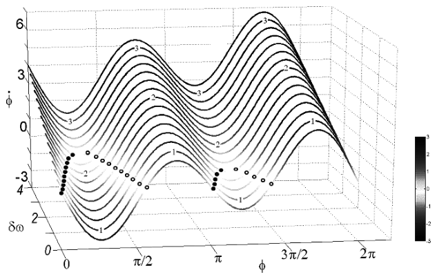
Hình 1 Bề mặt được tạo thành từ các dòng chảy của biến phối hợp φ (tính bằng radian) khi giá trị δω tăng dần từ 0 đến 4. Đối với ví dụ này, sự ghép cặp được cố định: a=1 và b=1. Khi ˙φ đạt đến 0 (đường dòng chảy chuyển sang màu trắng), hệ thống ngừng thay đổi và hành vi điểm cố định được quan sát thấy. Các điểm cố định ổn định và không ổn định tại giao điểm của các đường dòng chảy với mặt phẳng đẳng trị ˙φ=0 được biểu diễn lần lượt bằng các vòng tròn đặc và vòng tròn rỗng. Để minh họa các chế độ khác nhau của hệ thống, ba đường đại diện được đánh nhãn từ 1 đến 3 cố định δω ở các giá trị tăng dần. Đi theo đường dòng chảy 1 từ trái sang phải, tồn tại hai điểm cố định ổn định (vòng tròn đặc) và hai điểm cố định không ổn định (vòng tròn rỗng). Dòng chảy này thuộc về chế độ đa ổn định (ở đây là lưỡng ổn định). Đi theo đường 2 từ trái sang phải, ta gặp một cặp điểm cố định ổn định và không ổn định ở bên trái, nhưng hãy chú ý sự biến mất hoàn toàn của hành vi điểm cố định ở phía bên phải của hình. Tức là, một sự thay đổi định tính (rẽ nhánh; chuyển pha) đã xảy ra. Dòng chảy giờ đây thuộc về chế độ đơn ổn định. Đi theo đường 3 từ trái sang phải, không có điểm cố định ổn định hay không ổn định nào tồn tại nhưng sự phối hợp vẫn chưa biến mất. Dòng chảy này tương ứng với chế độ siêu ổn định, vốn là sự pha trộn tinh tế giữa sự ghép cặp và những khác biệt nội tại giữa các thành phần, các phương án để hệ thống ổn định vào. Phương án nào được chọn phụ thuộc vào điều kiện ban đầu và kích thước của lưu vực hút. Trong một vùng trung gian, đi theo đường được đánh nhãn 2 từ trái sang phải, người ta quan sát thấy điểm hút yếu nhất gần trạng thái ngược pha (phía bên phải) biến mất sau khi va chạm với điểm đẩy liên kết của nó ở đâu đó gần δω=1,3, nhưng điểm hút mạnh nhất (phía bên trái) vẫn còn hiện diện cũng như đối tác điểm đẩy của nó. Cuối cùng ở vùng thứ ba thuộc phần trên của bề mặt, chế độ trở nên siêu ổn định. Đi theo đường được đánh nhãn 3 từ trái sang phải, không còn điểm cố định nào tồn tại nữa (phần này của bề mặt không còn giao với mặt phẳng đẳng trị ˙φ=0 nơi các điểm cố định tọa lạc).
Hành vi phối hợp trông như thế nào trong chế độ siêu ổn định? Mặc dù tất cả các điểm cố định đã biến mất, một khía cạnh then chốt là vẫn còn một số dấu vết của sự phối hợp, những ‘bóng ma’ hay ‘tàn dư’ của nơi các điểm cố định từng tồn tại. Những thứ này tạo ra một động lực học độc đáo luân phiên giữa hai loại khoảng thời gian có thể gọi là thời gian lưu (dwell time) và thời gian thoát (escape time). Thời gian thoát được quan sát thấy khi quỹ đạo của biến phối hợp, tức pha tương đối, trôi dạt hoặc phân kỳ khỏi phương ngang. Thời gian lưu được quan sát thấy khi quỹ đạo hội tụ và giữ lại (ở các mức độ khác nhau) xung quanh phương ngang. Trong Hình 2c, chúng tôi chỉ ra hai vị trí cho thời gian lưu: một vị trí lưu lại trong thời gian dài trước khi thoát ra (ví dụ: Hình 2c, chú thích 1) hơi cao hơn mẫu đồng pha ổn định hơn gần 0 rad (modulo 2π), và vị trí kia chỉ lưu lại trong chốc lát (ví dụ: Hình 2c, chú thích 2) hơi cao hơn π (modulo 2π). Thời gian lưu gợi nhớ đến các điểm uốn thoáng qua được quan sát gần các cặp điểm hút-điểm đẩy đã biến mất trong chế độ đơn ổn định (Hình 2b, chú thích 3). Những điểm uốn này lặp đi lặp lại liên tục miễn là hệ thống được duy trì trong chế độ siêu ổn định, tức là miễn là nó không trải qua một chuyển pha.
Bất chấp sự vắng mặt hoàn toàn của các điểm hút khóa pha, hành vi của các phần tử trong chế độ siêu ổn định không hoàn toàn độc lập. Thay vào đó, sự phụ thuộc giữa các phần tử diễn ra dưới hình thức lưu trú (tụ pha) gần tàn dư của các điểm cố định và được biểu hiện bằng các sự tập trung trong biểu đồ tần suất của pha tương đối (xem [12], Chương 4). Liệu bộ não có thể tận dụng một nguyên lý như vậy không? Trái ngược với, hoặc như một sự bổ sung cho các lý thuyết về tổ chức quy mô lớn thông qua ghép cặp pha tuyến tính [18, 19, 25, 45], luận điểm của chúng tôi là khả năng hệ thống phối hợp hoặc tính toán mà không cần điểm hút mở ra một tập hợp lớn các khả năng. Quan điểm cổ điển về phối hợp khóa pha quy định rằng mỗi phần tử được huy động sẽ đánh mất hành vi nội tại của nó và tuân theo mệnh lệnh của tập hợp. Khi những tình huống như vậy nảy sinh, từ góc độ chức năng, các vùng riêng lẻ ngừng gây ảnh hưởng trong suốt thời gian diễn ra trạng thái đồng bộ, và cấp độ không gian thích hợp để mô tả hoạt động đơn nhất trở thành chính tập hợp đồng bộ đó. Tuy nhiên, quá trình phát sinh chủng loại đã thúc đẩy hoạt động chuyên biệt của các quần thể tế bào thần kinh cục bộ [30, 46, 47, 48, 49]. Trong các lý thuyết đề xuất sự tích hợp quy mô lớn thông qua đồng bộ hóa pha, sự biểu hiện của hoạt động cục bộ chỉ có thể tồn tại khi vùng đó không bị nô dịch vào một tập hợp, trong khi ở chế độ siêu ổn định, khuynh hướng cho hoạt động cá nhân được bảo tồn một cách liên tục hơn (xem thêm [35]).
Như được minh họa rõ ràng trong mô hình HKB mở rộng, một sự cân bằng tinh tế giữa tích hợp (sự phối hợp giữa các vùng riêng lẻ) và phân tách (sự biểu hiện của hành vi riêng lẻ) đạt được trong chế độ siêu ổn định [11, 12]. Sự phân tách quá mức không cho phép nhận thức biểu hiện đúng đắn như đã thấy ở
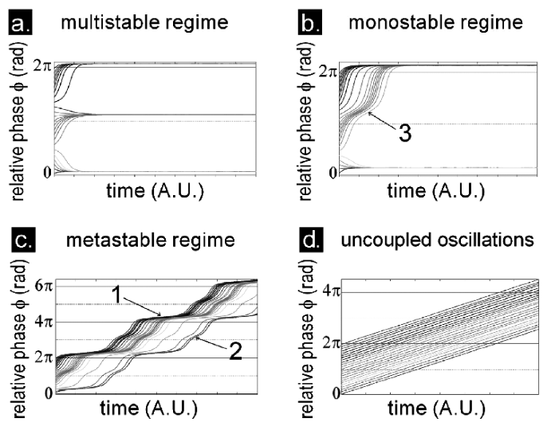
Hình 2 Ví dụ về các quỹ đạo của biến phối hợp, pha tương đối φ phát sinh từ một dải các điều kiện ban đầu được lấy mẫu giữa 0 và 2π radian, trong các chế độ đa ổn định (a), đơn ổn định (b) và siêu ổn định (c) của mô hình HKB mở rộng. Các quỹ đạo trong chế độ đa ổn định hội tụ về một điểm hút nằm hơi cao hơn 0 rad modulo 2π hoặc về một điểm hút khác nằm hơi cao hơn π rad modulo 2π. Trong chế độ đơn ổn định (a), các quỹ đạo hội tụ về một điểm hút nằm hơi cao hơn 0 rad modulo 2π. Trong các quỹ đạo của pha tương đối đối với chế độ siêu ổn định (c. được trải phẳng để truyền đạt tính liên tục), không còn bất kỳ sự hội tụ bền bỉ nào về các điểm cố định nữa, mà đúng hơn là một chuỗi các khoảng thời gian trôi dạt nhanh (thời gian thoát) xen kẽ với các khoảng thời gian uốn hướng về, nhưng không duy trì trên phương ngang (thời gian lưu). Lưu ý các khoảng lưu gần 0 rad modulo 2π trong chế độ siêu ổn định (ví dụ: thời gian lưu ở khoảng 4π rad được chú thích là 1 trong Hình 2c) và gần π rad modulo 2π (thời gian lưu ở khoảng 3π rad được chú thích là 2 trong c.) gợi nhớ đến trạng thái thoáng qua thu được đối với một số điều kiện ban đầu nhất định trong chế độ đơn ổn định (b. chú thích 3). Để tham khảo, pha tương đối của các bộ dao động không ghép cặp được hiển thị trong (d.)
chẳng hạn như trong chứng tự kỷ và tâm thần phân liệt [50, 51, 52, 53, 54, 55]. Mặt khác, sự tích hợp quá mức dường như cũng không mang tính thích nghi. Các trạng thái nghỉ ngơi được đo trong lúc nhàn rỗi nhận thức được đặc trưng bởi các dao động lan rộng trên các vùng vỏ não lớn [56, 57, 58, 59, 60] dường như chặn hoặc ức chế sự biểu hiện đúng đắn của hoạt động ở một vùng cục bộ. Hơn nữa, sự lan truyền của hoạt động đồng bộ dẫn đến các cơn động kinh [61, 62, 63, 64, 65] và cuối cùng được đặc trưng bởi sự mất hoàn toàn nhận thức và ý thức một khi một khối lượng tế bào thần kinh nhất định bị huy động. Trong một phạm vi tới hạn giữa tích hợp hoàn toàn và phân tách hoàn toàn, tình huống thuận lợi nhất cho nhận thức được cho là sẽ xảy ra [44, 66, 67]. Các nghiên cứu về kết nối liên vùng ở cả cấp độ giải phẫu và chức năng ([35, 68, 69], xem thêm [37]) ủng hộ quan điểm này bằng cách chỉ ra rằng các thước đo về độ phức tạp đạt cực đại khi sự cân bằng giữa các lực phân tách và lực tích hợp đạt được. Tuy nhiên, hãy lưu ý rằng các thước đo như vậy dựa trên các giả định về tính dừng (stationarity), trong khi tính siêu ổn định trong động lực học phối hợp là một ‘trạng thái thoáng qua dừng’ (stationary transient). Tức là, việc giữ lại và giải phóng pha tương đối theo thời gian có vẻ mang tính chất thoáng qua, nhưng thực tế lại khá dừng.
Một đặc điểm thú vị khác liên quan đến sự vắng mặt của các điểm hút là khả năng của hệ thống trong việc thể hiện nhiều hơn một khuynh hướng phối hợp trong suốt vòng đời của nó. Tính chất này gợi nhớ đến chế độ đa ổn định có điểm hút, với sự khác biệt là không cần có sự chuyển tiếp nào để chuyển từ trạng thái này sang trạng thái khác. Bằng chứng về ‘tính đa ổn định’ và sự chuyển đổi tự phát trong tri giác và hành động rất phong phú ở cả cấp độ hành vi và não bộ (ví dụ: [39, 70, 71, 72, 73, 74, 75, 76, 77]). Bên cạnh chế độ đa ổn định có điểm hút trải qua chuyển pha, chế độ siêu ổn định cũng phù hợp để giải thích các kết quả thực nghiệm đó. Các khuynh hướng của chế độ siêu ổn định hướng về tàn dư của các điểm cố định dễ dàng thực hiện các sự đảo ngược tự phát của tri giác và hành vi được mô tả trong các nghiên cứu này [78]. Từ góc độ động lực học phối hợp, thời gian hệ thống lưu lại trong mỗi tàn dư phụ thuộc vào sự pha trộn tinh tế giữa tính bất đối xứng của các thành phần (lưu lại lâu hơn khi tính bất đối xứng nhỏ hơn) và độ mạnh của sự ghép cặp (lưu lại lâu hơn khi các giá trị của a hoặc b lớn hơn). Một cơ chế như vậy cung cấp một phương tiện mạnh mẽ để hiện thực hóa các suy nghĩ/tri giác luân phiên và xác suất của chúng trong cả hệ thống sinh học lẫn các mô hình nhân tạo của chúng (ví dụ: tri giác luân phiên giữa chiếc bình hoặc khuôn mặt trong các hình mơ hồ của Rubin, hoặc các lựa chọn thay thế trong việc giải một ván cờ).
Cả chế độ đa ổn định có điểm hút và chế độ siêu ổn định có khuynh hướng thu hút đều cho phép cái gọi là ‘tính đa ổn định’ tri giác và hành vi. Điểm hút nào đạt được trong chế độ đa ổn định chủ yếu phụ thuộc vào điều kiện ban đầu. Một khi hệ thống đã ổn định vào một điểm hút, cần một lượng nhiễu nhất định hoặc một nhiễu loạn để đạt được sự chuyển đổi sang một điểm hút khác. Hoặc, nếu các tham số điều khiển như sự chú ý được thay đổi, một sự rẽ nhánh hoặc chuyển pha có thể xảy ra, nghĩa là một điểm hút mất tính ổn định khi chế độ thay đổi từ đa ổn định sang đơn ổn định hoặc ngược lại (xem Ditzinger & Haken, [79]; [80] để có ví dụ xuất sắc về mô hình hóa như vậy). Trong chế độ siêu ổn định, những lần ghé thăm liên tiếp tới tàn dư của các điểm cố định là nội tại đối với tiến trình thời gian của hệ thống, và không đòi hỏi bất kỳ nguồn đầu vào bên ngoài nào. Đây là một sự khác biệt quan trọng giữa tính đa ổn định và tính siêu ổn định và có khả năng chuyển hóa thành lợi thế về tốc độ, vốn được biết đến là một ràng buộc quan trọng trong các hệ thống nhận thức thần kinh [81] và là một khía cạnh thiết yếu đối với hiệu suất của chúng [82].
6 Tính siêu ổn định trong Não bộ
Cơ sở giải phẫu trong não bộ cho động lực học phối hợp siêu ổn định là gì? Như đã lưu ý trước đó, các yêu cầu cơ bản cho tính siêu ổn định là sự tồn tại của các thành phần ghép cặp mà mỗi thành phần thể hiện hành vi dao động tự phát và sự hiện diện của phá vỡ đối xứng. Có nhiều quy mô không gian mà ở đó hành vi tập thể của não bộ tự phát biểu hiện các dao động tuần hoàn [83, 84, 85, 86, 87] và đại diện cho sự đóng góp kết hợp của các nhóm tế bào thần kinh, mà hành động chung của chúng đủ để thiết lập sự truyền tải thông tin [88, 89, 90]. Hoạt động dao động của não bộ có thể được ghi nhận trực tiếp qua các phương pháp sinh lý thần kinh xâm lấn như LFP và iEEG, hoặc gián tiếp từ các bản ghi điện não đồ (EEG) da đầu (thường phải đánh đổi bằng việc ước lượng các dao động cục bộ bằng cách lọc thông dải các tín hiệu). Sự ghép cặp giữa các nhóm tế bào thần kinh cục bộ được hỗ trợ bởi kết nối chức năng tầm xa [25, 91, 92]. Sự phá vỡ đối xứng có nhiều cơ sở để nảy sinh, bao gồm các tần số đặc trưng không tương ước của các quần thể tế bào thần kinh cục bộ [93] và tính kết nối không đồng nhất của chúng [94].
Nếu các điều kiện cần thiết cho sự phối hợp siêu ổn định trong não bộ dễ dàng được đáp ứng, thì vẫn cần chứng minh rằng bộ não thực sự cho thấy các trường hợp vận hành trong chế độ này. Việc đặc trưng hóa thực nghiệm này gặp phải một số khó khăn. Trước bất kỳ nỗ lực nào nhằm tìm kiếm dấu hiệu của tính siêu ổn định, câu hỏi đầu tiên là xác định từ dòng chảy liên tục của hoạt động não bộ một số phân đoạn tương ứng với các chế độ riêng lẻ. Nói cách khác, nó bao gồm việc tìm ra các chuyển tiếp giữa các chế độ, một nhiệm vụ chỉ được thực hiện bởi một số ít người [95, 96]. Miễn là có thể đo lường/ước lượng đầy đủ các dao động cục bộ khi có nhiễu và sự nhòe không gian, những hiểu biết sâu sắc có thể thu được bằng cách xác định các giai đoạn khóa pha (những giai đoạn này tạo thành các trạng thái) và gán các khoảng thời gian chuyển tiếp giữa chúng là các chuyển tiếp (ví dụ: [25]). Khi không có sự phân đoạn tùy biến (ad hoc) của EEG, vẫn có khả năng sử dụng các chỉ số hành vi làm tín hiệu cho biết khi nào các chuyển tiếp não bộ xảy ra (ví dụ: [39, 73]). Trường hợp của tính siêu ổn định rõ ràng khó khăn hơn vì chế độ này có tính dừng nhưng không ổn định. Những nỗ lực ban đầu đã nhắm vào thời gian lưu dễ nhận biết hơn như một sự kiện giả khóa pha [29]. Để hiểu rõ về cơ chế, có vẻ cần thiết phải xây dựng các chiến lược bao quát mẫu phối hợp của chế độ siêu ổn định trong tính toàn vẹn của nó (thời gian lưu và thời gian thoát như một thể thống nhất không thể tách rời) và thiết lập các tiêu chí để phân biệt giữa chuyển tiếp trạng thái và chế độ lưu ∼ thoát.
Để xác định và hiểu các cơ chế tiềm năng, điều tối quan trọng là có thể phân biệt giữa các chế độ khác nhau.. Ví dụ, một sự chuyển tiếp giữa chế độ siêu ổn định và chế độ đơn ổn định có thể là cách bộ não hiện thực hóa quá trình ra quyết định giữa một tập hợp các khả năng. Điều này tương đương với việc tạo ra thông tin [97]. Hình 3 cho thấy tính đẳng cấu của các hệ thống mô phỏng thuộc cả hai chế độ trong quỹ đạo pha tương đối của chúng. Trong cửa sổ có kích thước tùy ý này, một chuỗi các trạng thái được hiển thị trong chế độ đa ổn định (bên phải) ngăn cách bởi các chuyển tiếp. Nó khác với chế độ siêu ổn định (bên trái) ở sự hiện diện của các đoạn nằm ngang (pha tương đối ổn định) trong suốt các trạng thái và bởi các điểm uốn sắc nét của pha tương đối tại thời điểm khởi đầu và kết thúc của các chuyển tiếp. Các biểu đồ tần suất tương ứng của pha tương đối được tích lũy trong khoảng thời gian này cũng tương tự nhau. Khả năng phân biệt chế độ đa ổn định với chế độ siêu ổn định trong một bản EEG không phân đoạn phụ thuộc cốt yếu vào độ chính xác của việc ước lượng tần số và pha của các thành phần. Những hoàn cảnh bất lợi xảy ra vì EEG là một tín hiệu băng thông rộng, nhiều nhiễu [98], và vì tần số của mỗi thành phần bị dịch chuyển khi được ghép cặp trong một chế độ siêu ổn định.
Các tiêu chí khác có thể được tìm kiếm để phân biệt giữa những chế độ đó. Các chế độ chuyển tiếp trạng thái đã được xây dựng về mặt khái niệm và kiểm chứng thực nghiệm bởi một chuỗi các nghiên cứu khởi xướng bởi Eckhorn và cộng sự [18], Gray, Singer và cộng sự [19]. Lý thuyết về ‘các tập hợp tế bào thoáng qua’ đã thu thập được nhiều phát hiện thực nghiệm ở quy mô vi mô [99, 100], quy mô trung bình [91, 101, 102] và quy mô vĩ mô [71, 103, 104, 105].
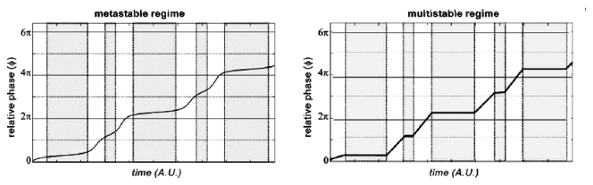
Hình 3 So sánh các quỹ đạo pha tương đối trong chế độ siêu ổn định và đa ổn định đối với một cửa sổ thời gian có kích thước tùy ý. Sự phối hợp (chế độ đa ổn định) và khuynh hướng phối hợp (chế độ siêu ổn định) được hiển thị trong các ô màu xám. Trong chế độ đa ổn định (bên phải), một chuỗi các trạng thái (pha tương đối ổn định gần 0 và pi radian) xen kẽ với các chuyển tiếp. Các đoạn nằm ngang bị mất trong chế độ siêu ổn định (bên trái), vốn chỉ cho thấy các khuynh hướng đồng bộ hóa hướng về đồng pha và ngược pha. Trong tình huống mà sự phối hợp được ước lượng từ một tín hiệu băng thông rộng có nhiễu, việc phân biệt giữa hai chế độ có thể khó khăn. Tuy nhiên, các chuyển tiếp ở bên phải được gây ra bởi sự thay đổi tham số; dòng chảy ở bên trái thì không
Tập hợp các nghiên cứu này dựa trên các phương pháp đồng bộ hóa pha từng cặp tuyến tính được áp dụng cho cả Hoạt động Đơn vị Đơn lẻ và Đa Đơn vị (Single- and Multi-Unit Activity) cũng như Điện thế Trường (Field Potentials). Trong khi nhiều nghiên cứu tập trung vào phần ‘trạng thái’ của quá trình chuyển tiếp trạng thái, một đặc điểm thú vị được thấy trong nghiên cứu của Rodriguez và cộng sự [105] về các dao động kết hợp được gợi lên bởi các khuôn mặt Mooney. Hai giai đoạn đồng bộ hóa mạnh mẽ ở 250 msec và 700 msec được ngăn cách bởi một giai đoạn mất đồng bộ hóa mạnh mẽ mà các tác giả mô tả là tán xạ pha. Họ gợi ý rằng tán xạ pha là một cơ chế mà qua đó bộ não thực hiện sự chuyển tiếp từ một tập hợp kết hợp này sang một tập hợp khác—cả hai đều thuộc các chế độ ổn định. Một cơ chế như vậy là không cần thiết trong chuỗi các khuynh hướng vốn là đặc trưng của động lực học phối hợp siêu ổn định.
Tóm lại, bộ não nhờ các đặc tính của mình tạo thành một nền tảng phù hợp để tính siêu ổn định diễn ra. Tuy nhiên, việc đặc trưng hóa sự khởi phát siêu ổn định là một vấn đề chắc chắn sẽ đòi hỏi một số phát triển về mặt phương pháp luận ngoài cách tiếp cận tuyến tính của đồng bộ hóa pha thoáng qua. Trong thời gian chờ đợi, các chỉ số của tính siêu ổn định được tìm thấy trong sự phân bố của thời gian lưu gần các trạng thái khóa pha.
7 Làm rõ Động lực học Não bộ Phi tuyến: Cuộc Đối thoại Freeman-Kelso1
Gần đây, nhà sinh lý học thần kinh lỗi lạc Walter Freeman đã xuất bản một bài báo có tựa đề “Tính siêu ổn định, tính bất ổn định và chuyển tiếp trạng thái trong tân vỏ não” [34], bài báo này đã dẫn đến một cuộc thảo luận với các tác giả mà chúng tôi nghĩ có thể hữu ích cho mục đích làm rõ và mở rộng nhận thức về động lực học não bộ phi tuyến. Ở đây chúng tôi nêu bật một số
1 Với sự tán thành của Walter Freeman, những vấn đề chính—những câu hỏi thường gặp (FAQ) về động lực học thần kinh siêu ổn định, nếu bạn muốn gọi như vậy–một phần như lời tri ân đối với Freeman cùng công trình tiên phong của ông và mối liên hệ của nó với động lực học phối hợp.
Đầu tiên là bản thân khái niệm. Freeman trích dẫn nhiều từ tài liệu vật lý chất rắn, nơi ông lưu ý rằng khái niệm tính siêu ổn định đã được sử dụng trong hơn 30 năm. Mặc dù điều này đúng và nhiều sự tương đồng hữu ích đã được thiết lập giữa não bộ và các loại hiện tượng hợp tác khác trong tự nhiên (ví dụ: [12, 38, 41, 106, 107]), hãy lưu ý ở đây rằng tính siêu ổn định nảy sinh do một sự phá vỡ đối xứng cụ thể trong động lực học phối hợp. Tức là, những khác biệt nội tại về tần số dao động giữa các thành phần đủ lớn để chúng tự làm việc của mình, trong khi vẫn giữ lại khuynh hướng phối hợp cùng nhau. Do đó, pha tương đối giữa các thành phần trôi dạt theo thời gian, nhưng đôi khi bị bẫy gần tàn dư của các trạng thái phối hợp (được lý tưởng hóa), ví dụ gần 0 và π radian (xem Hình 2). Hệ quả của sự phá vỡ đối xứng trong động lực học phối hợp của nó là cả não bộ và hành vi đều có thể thể hiện một hình thức phối hợp biến thiên, dẻo dai và uyển chuyển hơn nhiều, trong đó các khuynh hướng để các thành phần hoạt động một cách độc lập, phân tách cùng tồn tại với các khuynh hướng để hệ thống hành xử một cách tích hợp, phối hợp.
Thứ hai, Freeman hỏi về tham số trật tự trong động lực học phối hợp. Bản thân Freeman theo đuổi các mẫu không gian của biên độ mà ông hiểu là biểu hiện của các điểm hút mới hình thành thông qua học tập. Chính những mẫu biên độ của các sóng mang phi tuần hoàn này, được trích xuất từ các bản ghi EEG mật độ cao, cấu thành nên tham số trật tự của ông. Freeman coi đây là bằng chứng cho thấy động lực học vỏ não tiếp cận các điểm hút không hội tụ trong những khoảng thời gian ngắn thông qua các chuyển tiếp trạng thái lặp lại với tốc độ trong dải tần số theta. Mặc dù ban đầu chúng tôi cũng sử dụng thuật ngữ tham số trật tự của các nhà vật lý (ví dụ: [39, 41]), hiện nay chúng tôi ưa thích thuật ngữ “biến tập thể” hoặc “biến phối hợp” như một đại lượng đặc trưng cho hành vi hợp tác của một hệ thống có rất nhiều bậc tự do vi mô. Quả thực, cách tiếp cận của chúng tôi được gọi là động lực học phối hợp bởi vì nó giải quyết về cơ bản các đại lượng có ý nghĩa thông tin [28]. Sự phối hợp ở các sinh vật sống không phải (hoặc không chỉ) là vật chất chuyển động. Trật tự không-thời gian quan sát được mang tính chức năng và đặc thù cho nhiệm vụ. Bởi vì trong các nghiên cứu của chúng tôi, biến số thay đổi một cách định tính dưới sự thay đổi tham số là pha tương đối, nên pha tương đối là một trong những tham số trật tự then chốt của sự phối hợp sinh học. Pha tương đối là kết quả của một tương tác phi tuyến giữa các thành phần dao động phi tuyến, nhưng đến lượt mình lại điều kiện hóa hoặc “sắp đặt trật tự” một cách tương hỗ hành vi của các thành phần đó. Trong một hệ thống mà về mặt tiềm năng có nhiều thứ có thể đo lường được, biến số thay đổi một cách định tính là biến nắm bắt được trật tự không-thời gian giữa các thành phần. Chiến lược xác định các tham số trật tự hoặc biến phối hợp trong dữ liệu thực nghiệm này bắt nguồn từ Kelso [74, 75] và mô hình hóa lý thuyết sớm bởi Haken, Kelso & Bunz, [41]. Nghiên cứu thực nghiệm và lý thuyết gần đây tiếp xúc với công trình của Freeman ở chỗ nó chỉ ra rằng các chuyển pha cũng có thể nảy sinh thông qua biên độ của dao động [108]. Cả hai lộ trình đều khả thi tùy thuộc vào tình huống, ví dụ biên độ giảm xuống qua quá trình chuyển tiếp, pha tương đối thay đổi đột ngột. Một lần nữa, tất cả điều này đều nằm dưới sự kiểm soát tham số. Trong động lực học phối hợp, bạn không “biết” mình có một biến phối hợp hay tham số trật tự và các tham số điều khiển trừ khi cái trước thay đổi một cách định tính tại các điểm chuyển tiếp, và cái sau–khi được biến thiên một cách có hệ thống–dẫn dắt hệ thống đi qua các chuyển tiếp. Do đó, tham số trật tự và tham số điều khiển trong khuôn khổ động lực học phối hợp mang tính đồng hàm và bổ sung cho nhau. Một vấn đề trong hệ khứu giác liên quan đến việc các tham số điều khiển là gì, ví dụ thứ có thể dẫn hệ thống từ trạng thái ổn định sang chu trình giới hạn hoặc sang các dao động hỗn loạn và tính lưu chuyển (itineracy). Cả cách tiếp cận của Freeman và của chúng tôi đều viện đến hiệp đồng học (synergetics) của Haken [106] và cái gọi là ‘quan hệ nhân quả vòng tròn’ hay ‘tương hỗ’: dù người ta áp dụng thuật ngữ tham số trật tự hay biến phối hợp, cả hai đều nảy sinh từ sự hợp tác của hàng triệu tế bào thần kinh và đến lượt mình lại chịu ảnh hưởng bởi chính trường hoạt động mà chúng tạo ra (xem thêm [42, 109] để biết sự phát triển chi tiết và ứng dụng của lý thuyết trường thần kinh).
Cả cách tiếp cận của Freeman và động lực học phối hợp đều viện đến sự ghép cặp phi tuyến giữa các bộ dao động thần kinh làm cơ sở cho các mức độ tích hợp toàn cục khác nhau. Cả hai đều sử dụng đáng kể động lực học lưu vực hút để diễn giải dữ liệu thực nghiệm. Trong động lực học phối hợp, điều sau cấu thành một bước lý tưởng hóa cần thiết để hiểu việc phá vỡ đối xứng của động lực học phối hợp có nghĩa là gì [40, 97, 110]. Tuy nhiên, cả hai cách tiếp cận đều viện dẫn sự phá vỡ đối xứng, động lực học phối hợp xuất phát từ sự mất đi các điểm hút của động lực học pha tương đối, còn Freeman thì trong sự xuất hiện của các mẫu không gian về biên độ và pha từ các bản ghi EEG thông qua sự hội tụ về một điểm hút hậu nghiệm (a posteriori) được chọn lọc trong một cảnh quan các điểm hút tiên nghiệm (a priori). Có những điểm tương đồng rõ ràng giữa hai khối công trình; cả hai đều là minh chứng cho sự phong phú về chi tiết và sức mạnh của lý thuyết phi tuyến. Freeman hình dung sự tiếp cận thoáng qua nhưng xác định tới một chuỗi các lưu vực hút. Mặt khác, động lực học phối hợp siêu ổn định có một ý nghĩa rất chính xác: nó không nói về các trạng thái mà là một sự pha trộn tinh tế giữa các khuynh hướng tích hợp và phân tách. Đáng chú ý, những khuynh hướng tích hợp để tụ pha và khuynh hướng phân tách để quấn pha này có thể được thể hiện ở cấp độ các tập hợp thần kinh ghép cặp. Hình 4 minh họa một tập hợp các tập hợp thần kinh ghép cặp, mỗi tập hợp bao gồm một trăm bộ dao động Fitzhugh-Nagumo được kết nối bởi một hàm sigmoid vốn là hệ quả thông thường của phép cộng các tính chất ngưỡng tại thân tế bào (2). Một lượng nhỏ nhiễu ngẫu nhiên đã được thêm vào chỉ nhằm mục đích minh họa. Nhìn từ trên xuống dưới, hoạt động phát xung thần kinh của mỗi tập hợp (X,Y) được hiển thị, tiếp theo là các pha dao động riêng lẻ, pha tương đối của chúng và các quỹ đạo mặt phẳng pha tương ứng chỉ ra các tính chất chu trình giới hạn, cùng với một biểu diễn toán học đơn giản.
dt = F ( X ) = ∂ ∂t S ( X −Y ) + nhiễu d X (2)
dt = F ( Y ) = ∂ ∂t S ( Y −X ) + nhiễu dY
Mục đích ở đây chỉ là để thiết lập bằng chứng khái niệm. Khá rõ ràng là pha tương đối giữa các nhóm thần kinh lưu lại gần phi = 0, lang thang rồi quay trở lại, chỉ ra một cách đẹp đẽ các khuynh hướng siêu ổn định thoáng qua nhằm tích hợp và phân tách. Như Fingelkurts và Fingelkurts [29] lưu ý:
Có thể lưu ý rằng nguyên lý tính siêu ổn định mở rộng các quy tắc hiệp đồng học của Haken..... Tính siêu ổn định mở rộng chúng sang những tình huống không có trạng thái ổn định hay không ổn định nào, mà chỉ có các khuynh hướng cùng tồn tại (xem (Kelso, 2002)
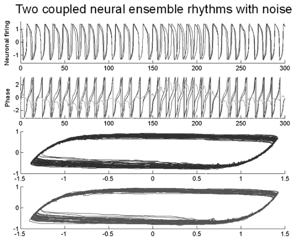
Hình 4 Một mô phỏng của hai tập hợp thần kinh ghép cặp bao gồm một mảng các bộ dao động Fitzhugh-Nagumo (do Viktor Jirsa cung cấp). Xem văn bản để biết mô tả
8 Một Suy ngẫm Ngắn
Chúng tôi không thể không chú ý rằng động lực học phối hợp siêu ổn định của não bộ và hành vi mời gọi sự mở rộng sang các quá trình tư duy và suy nghĩ. Có thể lập luận rằng tri giác đa ổn định và sự mơ hồ mang lại những địa hạt thử nghiệm để hiểu sự tự tổ chức của não bộ. Hệ thống tri giác, khi đối mặt với một kích thích không đổi, có thể dao động giữa hai hoặc nhiều cách diễn giải. Thông qua những sự mơ hồ, như Richard Gregory [111] nhận xét, chúng ta có thể khảo sát cách bộ não đưa ra quyết định. Người ta có thể suy đoán rằng khi một người tri giác ngây thơ nhìn vào một hình ảnh như chú chó đốm Dalmatian ẩn giấu (Hình 5), một chuỗi các pha tâm trí và các trạng thái não liên quan của chúng sẽ diễn ra. Ở giai đoạn đầu, người quan sát ngây thơ có thể cố gắng nhóm các vùng bôi đen theo nhiều cách khác nhau. Sẽ có tính đa ổn định và các chuyển pha. Cuối cùng, người đó sẽ tổ chức bức tranh một cách chính xác và một trạng thái đơn ổn định sẽ đạt được trong đó hình ảnh chú chó đốm Dalmatian trở nên nổi bật. Cuối cùng, người quan sát có thể nghĩ về tác phẩm của nghệ sĩ và xem xét đồng thời sự phân mảnh cho phép chú chó đốm tan rã vào khung cảnh cũng như sự tổ chức gợi ý sự hiện diện của nó. Một động lực học siêu ổn định sẽ nảy sinh trong đó cả hình ảnh lẫn kết cấu ẩn giấu của nó sẽ đồng thời hiện diện trong tâm trí. Như Heisenberg đã lưu ý năm mươi năm trước [112]:
“Chúng ta nhận ra rằng tình huống của tính bổ sung không chỉ giới hạn trong thế giới nguyên tử; chúng ta gặp nó khi suy ngẫm về một quyết định và động cơ cho quyết định của mình hoặc khi chúng ta có lựa chọn giữa việc thưởng thức âm nhạc và phân tích cấu trúc của nó” (tr. 179)
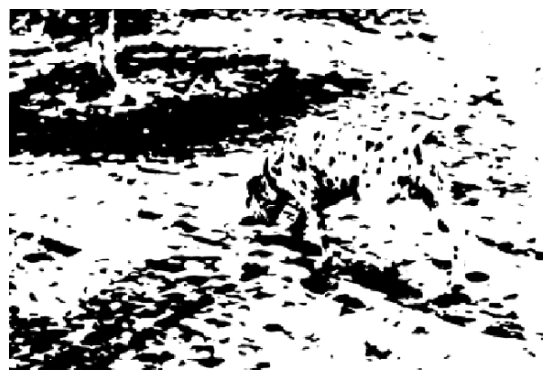
Hình 5 Chú chó đốm Dalmatian ẩn giấu
Tất nhiên, triết lý của Heisenberg, Bohr và Pauli xuất phát từ những cân nhắc trong cơ học lượng tử. Ở đây, cả triết lý về bản chất bổ sung lẫn khoa học thần kinh bổ sung đều bắt nguồn từ động lực học phối hợp siêu ổn định của não bộ.
Lời cảm ơn Công trình này được hỗ trợ bởi Khoản tài trợ NIMH MH42900, Khoản tài trợ NINDS NS48229 và Khoản tài trợ ONR N00014-05-1-0117.
Tài liệu tham khảo
1. Spelke, E.: The Baby Lab by Margaret Talbot. New Yorker, Sept. 4 (2006) 2. Pauli, W.: Writings on Physics and Philosophy. In: Enz, C.P., von Meyenn, K. (Eds.) Springer-Verlag, Berlin (1994) 3. Finger, S.: Origins of Neuroscience. Oxford, New York (1994) 4. Ji, S.: Complementarism: A Biology-Based Philosophical Framework to Integrate Western Science and Eastern Tao. Proc. of 16th International Congress of Psychotherapy (1995) 518-548 5. Grossberg, S.: The Complementary Brain: a Unifying View of Brain Specialization and Modularity. Trends in Cognitive Sciences 4 (2000) 233–246 6. Frayn, M.: The Human Touch: Our Part in the Creation of the Universe. Faber & Faber (2006) 7. Kelso, J. A. S., Engstrøm, D.: The Complementary Nature. MIT Press, Cambridge (2006) 8. Bressler, S. L., Kelso, J. A. S.: Cortical Coordination Dynamics and Cognition. Trends in Cognitive Sciences 5 (2001) 26–36 9. Jirsa, V. K., Kelso, J. A. S. (Eds.) Coordination Dynamics: Issues and Trends. Springer, Berlin (2004) 10. Kelso, J. A. S.: Behavioral and Neural Pattern Generation: the Concept of Neurobehavioral Dynamical System (NBDS) In: Koepchen, H. P., Huopaniemi, T. (Eds.) Cardiorespiratory and Motor Coordination, Springer-Verlag, Berlin (1991) 11. Kelso, J. A. S.: Coordination Dynamics of Human Brain and Behavior. Springer Proc. in Physics 69 (1992) 223–234 12. Kelso, J. A. S.: Dynamic Patterns: the Self-Organization of Brain and Behavior. MIT Press, Cambridge, MA (1995)
13. Tschacher, W., Dauwalder, J. P.: The Dynamical Systems Approach to Cognition: Concepts and Empirical Paradigms Based on Self-Organization, Embodiment and Coordination Dynamics. World Scientific, Singapore (2003) 14. Velazquez, J. L.: Brain, Behaviour and Mathematics: Are we Using the Right Approaches? Physica D: Nonlinear Phenomena 212(3–4) (2005) 161–182 15. Schöner, G., Kelso, J. A. S.: Dynamic Pattern Generation in Behavioral and Neural Systems. Science 239 (1988) 1513–1520 16. Basar, E.: Memory and Brain Dynamics: Oscillations Integrating Attention, Perception, Learning, and Memory. Conceptual Advances in Brain Research 7. CRC Press, Boca Raton (2004) 17. Buzsáki, G.: Rhythms of the Brain. Oxford University Press, Oxford (2006) 18. Eckhorn, R., Bauer, R., Jordan, W., Borsch, M., Kruse, W., Munk M., Reitboeck, HJ.: Coherent Oscillations : a Mechanism of Feature Linking in the Visual Cortex. Multiple Electrode Correlation Analyses in the Cat. Biological Cybernetics 60(2) (1988) 121–130 19. Gray, C. M., König, P., Engel, A. K., Singer, W.: Oscillatory Responses in Cat Visual Cortex Exhibit Inter-Columnar Synchronization which Reflects Global Stimulus Properties. Nature 338 (6213) (1989) 334–337 20. Munk, M. H. J., Roelfsema, P. R., König, P., Engel, A. K., Singer, W.: Role of Reticular Activation in the Modulation of Intracortical Synchronization. Science 272 (1996) 271–274 21. Bressler, S. L.: Interareal Synchronization in the Visual Cortex. Behavioral and Brain Research 76 (1996) 37–49 22. Steinmetz, P. N., Roy, A., Fitzgerald, P., Hsiao, S. S., Niebur, E., Johnson, K. O.: Attention Modulates Synchronized Neuronal Firing in Primate Somatosensory Cortex. Nature 404 (2000) 187–190 23. Mima, T., Matsuoka, T., Hallett, M.: Functional Coupling of Human Right and Left Cortical Motor Areas Demonstrated with Partial Coherence Analysis. Neurosci. Lett. 287 (2000) 93– 96 24. Fries, P., Reynolds, J. H., Rorie, A. E., Desimone, R.: Modulation of Oscillatory Neuronal Synchronization by Selective Visual Attention. Science 291 (2001) 1560–1563 25. Varela, F. J., Lachaux, J. -P., Rodriguez, E. Martinerie, J.: The Brainweb: Phase Synchronization and Large-Scale Integration. Nature Reviews Neuroscience 2 (2001) 229–239 26. Brown, P., Marsden, J. F.: Cortical Network Resonance and Motor Activity in Humans. Neuroscientist 7 (2001) 518–527 27. König, P., Engel, A. K., Roelfsema, P. R., Singer, W.: Coincidence Detection or Temporal Integration. The Role of the Cortical Neuron Revisited. Trends Neurosci 19 (1996) 130–137 28. Kelso, J. A. S.: The Informational Character of SelfOrganized Coordination Dynamics. Human Movement Science 13 (1994) 393413 29. Fingelkurts, An.A., Fingelkurts, Al.A.: Making Complexity Simpler: Multivariability and Metastability in the Brain. International Journal of Neuroscience 114(7) (2004) 843–862 30. Bressler, S. L. Tognoli, E.: Operational Principles of Neurocognitive Networks. International Journal of Psychophysiology 60 (2006) 139–148 31. Edelman, G. M.: Naturalizing Consciousness: a Theoretical Framework. Proceedings of the National Academy of Science USA 100(9) (2004) 520–524 32. Edelman, G.: Second Nature: Brain Science and Human Knowledge. Yale University Press (2006) 33. Edelman, G., Tononi, G.: A Universe of Consciousness, New York, Basic Books (2000) 34. Freeman, W. J., Holmes, M. D.: Metastability, Instability, and State Transition in Neocortex. Neural Networks 18(5–6) (2005) 497–504 35. Friston, K. J.: Transients, Metastability, and Neuronal Dynamics. Neuroimage 5 (1997) 164–171 36. Koch, C.: Thinking about the Conscious Mind. A Review of Mind - An Introduction by John Searle. Science 306 (2004) 979–980 37. Sporns, O.: Complex Neural Dynamics. In: Jirsa, V. K., Kelso, J. A. S., (Eds.) Coordination Dynamics: Issues and trends. Springer-Verlag, Berlin (2004) 197–215 38. Haken, H.: Principles of Brain Functioning. Springer, Berlin (1996)
39. Kelso, J. A. S., Bressler, S. L., Buchanan, S., DeGuzman, G. C., Ding, M., Fuchs, A. Holroyd, T.: A Phase Transition in Human Brain and Behavior. Physics Letters A 169 (1992) 134–144 40. Kelso, J. A. S., DelColle, J., Schöner, G.: Action-Perception as a Pattern Formation Process. In: Jeannerod, M. (Ed.) Attention and Performance XIII. Erlbaum, Hillsdale, NJ (1990) 139–169 41. Haken, H., Kelso, J. A. S., Bunz, H.: A Theoretical Model of Phase Transitions in Human Hand Movements. Biological Cybernetics 51 (1985) 347–356 42. Jirsa, V. K., Fuchs, A., Kelso, J. A. S.: Connecting Cortical and Behavioral Dynamics: Bimanual Coordination. Neural Computation 10 (1998) 2019–2045 43. Perez Velazquez, J. L., Wennberg, R.: Metastability of Brain States and the many Routes to Seizures: numerous Causes, same Result. In: Recent Research Developments in Biophysics, 3: Transworld Research Network (2004) 25–59 44. Werner, G.: Metastability, Criticality and Phase Transitions in Brain and its Models. Biosystems (in press) 45. Bressler, S. L.: Interareal Synchronization in the Visual Cortex. Behavioural Brain Research 76 (1996) 37–49 46. Ebbesson, S. O. E.: Evolution and Ontogeny of Neural Circuits. Behavioral and Brain Science 7 (1984) 321–366 47. Deacon, T. W.: Rethinking Mammalian Brain Evolution. American Zoologist 30 (1990) 629–705 48. Jacobs, R. A., Jordan, M. I.: Computational Consequences of a Bias towards Short connections. Journal of Cognitive Neuroscience 4 (1992) 323–336 49. Chklovskii, D. B., Schikorski, T., Stevens, C. F.: Wiring optimization in cortical Circuits. Neuron 34(3) (2002) 341–347 50. Andreasen, N. C., Nopoulos, P., O’Leary, D.S., Miller, D. D., Wassink, T., Flaum, L.: Defining the Phenotype of Schizophrenia: Cognitive Dysmetria and its Neural Mechanisms. Biological Psychiatry 46 (1999) 908–920 51. Tononi, G., Edelman, G. M.: Schizophrenia and the Mechanisms of Conscious Integration. Brain Research Reviews 31 (2000) 391–400 52. Brock, J., Brown, C. C., Boucher, J., Rippon, G.: The Temporal Binding Deficit Hypothesis of Autism. Development and Psychopathology 14 (2002) 209–224 53. Niznikiewicz, M. A., Kubicki, M., Shenton, M. E.: Recent Structural and Functional Imaging Findings in Schizophrenia. Current Opinion in Psychiatry 16 (2003) 123–147 54. Welsh, J. P., Ahn, E. S., Placantonakis, D. G.: Is Autism Due to Brain Desynchronization? Int. J. Dev. Neurosci. 23 (2005) 253–263 55. Liang, M., Zhou, Y., Jiang, T., Liu, Z., Tian, L., Liu, H.; Hao, Y.: Widespread Functional Disconnectivity in Schizophrenia with Resting-State Functional Magnetic Resonance Imaging. Neuroreport 17(2) (2006) 209–213 56. Berger, H.: Ueber das Elektroenkephalogramm des Menschen. Archiv für Psychiatrie und Nervenkrankheiten 87 (1929) 527–570 57. Chatrian, G. E., Petersen, M. C., Lazarte, J. A.: The Blocking of the Central Wicket Rhythm and some Central Changes Related to Movement. Electroencephalogr Clinical Neurophysiology 11 (1959) 497–510 58. Chase, M. H., Harper, R. M.: Somatomotor and Visceromotor Correlates of Operantly Conditioned 12–14 Cycles Per Second Sensorimotor Cortical Activity. Electroencephalography and Clinical Neurophysiology 31 (1971) 85–92 59. Kuhlman, W. N.: Functional Topography of the Human Mu Rhythm. Electroencephalography and Clinical Neurophysiology 44 (1978) 83–93 60. Hughes, S. W., Crunelli, V.: Thalamic Mechanisms of EEG Alpha Rhythms and their Pathological Implications. The Neuroscientist 11 (2005) 357–372 61. Schiff, N. D., Plum, F.: The Role of Arousal and “Gating” Systems in the Neurology of Impaired Consciousness. Journal of Clinical Neurophysiology 17 (2000) 438–452 62. Glass, L.: Synchronization and Rhythmic Processes in Physiology. Nature 410 (2001) 277–284
63. Kostopoulos, G. K.: Involvement of the Thalamocortical System in Epileptic Loss of Consciousness. Epilepsia 42(30) (2001) 13–19 64. Blumenfeld, H., Taylor, J.: Why Do Seizures Cause Loss of Consciousness? The Neuroscientist 9(5) (2003) 301–310 65. Dominguez, L. G., Wennberg, R., Gaetz, W., Cheyne, D., Snead III, O. C., Perez Velazquez, J.L.: Enhanced Synchrony in Epileptiform Activity? Local Versus Distant Synchronization in Generalized Seizures. Journal of Neuroscience 25(35) (2005) 8077–8084 66. Atlan, H.: Entre le Cristal et la Fumée. Paris, Seuil (1979) 67. Chialvo, D. R.: Critical Brain Networks. Physica A 340(4) (2004) 756–765 68. Tononi, G., Sporns, O., Edelman, G. M.: A Measure for Brain Complexity: Relating Functional Segregation and Integration in the Nervous System. Proceedings of the National Academy of Science USA 91 (1994) 5033–5037 69. Tononi, G., Sporns, O., Edelman, G. M.: Complexity and Coherency: Integrating Information in the Brain. Trends in Cognitive Sciences 2 (1998) 474–484 70. Almonte, F., Jirsa, V.K., Large, E. W., Tuller, B.: Integration and Segregation in Auditory Streaming. Physica D 212 (2005) 137–159 71. Basar-Eroglu, C., Struber, D., Kruse, P., Basar, E., Stadler M.: Frontal Gamma-Band Enhancement during Multistable Visual Perception. International Journal of Psychophysiology 24 (1996) 113–125 72. Hock, H. S., Kelso, J. A. S., Schöner, G.: Bistability and Hysteresis in the Organization of Apparent Motion Patterns. Journal of Experimental Psychology: Human Perception Performance 19 (1993) 63–80 73. Keil, A., Muller, M. M., Ray, W. J., Gruber, T., Elbert, T.: Human Gamma Band Activity and Perception of a Gestalt. Journal of Neuroscience 19 (1999) 7152–7161 74. Kelso, J. A. S.: On the Oscillatory Basis of Movement. Bulletin of the Psychonomic Society 18 (1981) 63 75. Kelso, J. A. S.: Phase Transitions and Critical Behavior in Human Bimanual Coordination. American Journal of Physiology 246(6 Pt 2) (1984) R1000–1004 76. Kelso, J. A. S., DeGuzman, G. C. Holroyd, T.: Synergetic Dynamics of Biological Coordination with Special Reference to Phase Attraction and Intermittency. In: Haken, H., Koepchen, H. P. (Eds.) Rhythms in Physiological Systems. Springer Series in Synergetics, Vol. 55. Springer, Berlin (1991), 195–213 77. Tuller, B., Case, P., Ding, M., Kelso, J. A. S.: The Nonlinear Dynamics of Speech Categorization. Journal of Experimental Psychology: Human Perception and Performance 20 (1994) 1–14 78. Kelso, J. A. S., Case, P., Holroyd, T., Horvath, E., Raczaszek, J., Tuller, B., Ding, M.: Multistability and Metastability in Perceptual and Brain Dynamics. In: Kruse, P., Stadler, M. (Eds.) Ambiguity in Mind and Nature. Springer-Verlag, Heidelberg (1995) 159–185 79. Thorpe, S., Fize, D., Marlot, C.: Speed of Processing in the Human Visual System. Nature 381 (1996) 520–522 80. Jensen, A.R.: Why Is Reaction Time Correlated with Psychometric g? Current Directions in Psychological Science 2 (1993) 53–56 81. Ditzinger, T., Haken, H.: Oscillations in the Perception of Ambiguous Patterns. Biological Cybernetics 61 (1989) 279–287 82. Ditzinger, T., Haken, H.: The Impact of Fluctuations on the Recognition of Ambiguous Patterns. Biological Cybernetics 63 (1990) 453–456 83. Chen, Y., Ding, M., Kelso, J. A. S.: Task-Related Power and Coherence Changes in Neuromagnetic Activity during Visuomotor Coordination. Experimental Brain Research 148 (2003) 105–116 84. Chen, Y., Ding, M., Kelso, J. A. S.: Long Range Dependence in Human Sensorimotor Coordination. In: Rangarajan, G., Ding, M. (Eds.) Processes with Long-Range Correlations. Springer, Berlin (2003) 309–323 85. Freeman, W. J.: Neurodynamics: an Exploration in Mesoscopic Brain Dynamics. Springer, Berlin (2000)
86. Wright, J. J., Robinson, P. A., Rennie, C. J., Gordon, E., Bourke, P. D., Chapman, C. L., Hawthorn, N., Lees, G. J., Alexander, D.: Toward an Integrated Continuum Model of Cerebral Dynamics: the Cerebral Rhythms, Synchronous Oscillation and Cortical Stability. Journal of Biological and Information Processing Systems 63(1–3) (2001) 71–88 87. Buzsáki, G., Draguhn, A.: Neuronal Oscillations in Cortical Networks. Science 304(5679) (2004) 1926–1929 88. Braitenberg, V., Schuz, A.: Anatomy of the Cortex. Springer-Verlag (1991) 89. Douglas, R. J., Martin, K. A.: A Functional Microcircuit for Cat Visual Cortex. Journal of Physiology 440 (1991) 735–769 90. Buxhoeveden, D. P., Casanova, M. F.: The Minicolumnar Hypothesis in Neurosciences. Brain 125(5) (2002) 935–951 91. Bressler, S. L.: Large-Scale Cortical Networks and Cognition. Brain Research Reviews 20 (1995) 288–304 92. Sporns, O., Kötter, R.: Motifs in Brain Networks. PLoS Biology 2 (2004) 1910–1918 93. Freeman, W. J.: Making Sense of Brain Waves: The Most Baffling Frontier in Neuroscience. In: Parelus, P. Principe, J. Rajasekaran, S. (Eds) Biocomputing. Kluwer, New York (2001) 33–55 94. Jirsa, V. K., Kelso, J. A. S.: Spatiotemporal Pattern Formation in Continuous Systems with Heterogeneous Connection Topologies. Physical Review E 62(6) (2000) 8462–8465 95. Lehmann, D., Strik, W. K., Henggeler, B., Koenig, T., Koukkou, M.: Brain Electric Microstates and Momentary Conscious Mind States as Building Blocks of Spontaneous Thinking: I. Visual Imagery and Abstract Thoughts. International Journal of Psychophysiology 29(1) (1998) 1–11 96. Kaplan, A. Ya., Shishkin, S. L.: Nonparametric Method for the Segmentation of the EEG. Computer Methods and Programs in Biomed. 60(2) (1999) 93–106 97. Kelso, J. A. S.: The Complementary Nature of Coordination Dynamics: Self-Organization and the Origins of Agency. Journal of Nonlinear Phenomena in Complex Systems 5 (2002) 364–371 98. Pritchard, W. S.: The Brain in Fractal Time: 1/f-like Power Spectrum Scaling of the Human Electroencephalogram. Int. J. Neurosci. 66(1–2) (1992) 119–129 99. Engel, AK., König, P., Singer, W.: Direct Physiological Evidence for Scene Segmentation by Temporal Coding. Proceedings of the National Academy of Science USA 88 (1991) 9136–9140 100. Castelo-Branco, M., Goebel, R., Neuenschwander, S.: Neural Synchrony Correlates with Surface Segregation Rules. Nature 405 (2000) 685–689 101. Eckhorn, R., Obermüller, A.: Single Neurons Are Differently Involved in StimulusSpecific Oscillations in Cat Visual Cortex. Experimental Brain Research 95(1) (1993) 177–182 102. Bressler, S. L., Coppola, R., Nakamura, R.: Episodic Multiregional Cortical Coherence at Multiple Frequencies during Visual Task Performance. Nature 366 (1993) 153–156 103. Tallon-Baudry, C., Bertrand, O., Fischer, C.: Oscillatory Synchrony between Human Extrastriate Areas during Visual Short-Term Memory Maintenance. J Neurosci 21 (2001) RC177(1–5) 104. Müller, M. M., Bosch, J., Elbert, T., Kreiter, A., Sosa, M., Valdes-Sosa, P., Rockstroh, B.: Visually Induced Gamma-Band Responses in Human Electroencephalographic Activity: a Link to Animal Studies. Experimental Brain Research 112(1) (1996) 96–102 105. Rodriguez, E., George, N., Lachaux, J. P., Martinerie, J., Renault, B., Varela, F.: Perception’s Shadow: Long-Distance Synchronization in the Human Brain Activity. Nature 397 (1999) 430–433 106. Haken, H.: Synergetics: an Introduction. Springer Series in Synergetics. Springer, Berlin (1983) 107. Kelso, J. A. S., Haken, H.: New Laws to Be Expected in the Organism: Synergetics of Brain and Behavior. In: Murphy, M. O’Neill, L. (Eds.) What Is Life? The Next 50 Years. University Press, Cambridge (1995)
108. Assisi, C. G., Jirsa, V. K., Kelso, J. A. S.: Synchrony and Clustering in Heterogeneous Networks with Global Coupling and Parameter Dispersion, Physical Review Letters 94 (2005) 018106 109. Jirsa, V. K., Haken, H.: A Derivation of a Macroscopic Field Theory of the Brain from the Quasi-Microscopic Neural Dynamics. Physica D 99 (1997) 503–526 110. Kelso, J. A. S. Jeka, J. J.: Symmetry Breaking Dynamics of Human Multilimb Coordination. Journal of Experimental Psychology: Human Perception and Performance 18 (1992) 645–668 111. Gregory, R. L.: Editorial. Perception 29 (2000) 1139–1142 112. Heisenberg, W. Physics and Philosophy: The Revolution in Modern Physics. New York, Harper & Row (1958)
Sự Hình thành Trạng thái Nhận thức Thần kinh Toàn cục
Steven L. Bressler
Tóm tắt Trong chương này, tôi đề xuất rằng sự hình thành trạng thái nhận thức thần kinh toàn cục trong vỏ não là trung tâm đối với khả năng đánh giá trạng thái cơ thể của động vật có vú. Tôi xem xét một cơ chế giả định cho sự hình thành trạng thái nhận thức thần kinh toàn cục từ các tương tác giữa những vùng vỏ não kết nối với nhau. Trong mô hình này, mỗi vùng thực hiện một đánh giá cục bộ về trạng thái hiện tại của chính nó, đại diện cho một đánh giá bộ phận về trạng thái cơ thể, thông qua việc tạo ra các gói hoạt động sóng dao động tần số cao. Mẫu điều biên (AM) không gian của gói sóng được đề xuất là đại diện cho sự biểu hiện trạng thái hiện tại của một vùng trong mối quan hệ với các vùng khác mà nó đang tương tác. Thông qua các tương tác của chúng, các tập hợp vùng vỏ não ràng buộc lẫn nhau các mẫu AM của các gói sóng của chúng. Người ta đề xuất rằng quá trình này dẫn đến sự biểu hiện của các gói sóng có các mẫu nhất quán về mặt nhận thức, và sự hình thành các trạng thái nhận thức thần kinh đồng thuận thống nhất toàn cục.
1 Giới thiệu
Một chức năng thiết yếu do vỏ não thực hiện là đánh giá một cách năng động trạng thái của cơ thể động vật có vú theo từng khoảnh khắc. Sự đánh giá năng động này đóng một vai trò then chốt trong hành vi thích nghi bằng cách cho phép cơ thể tri giác và hành động theo cách phù hợp với bối cảnh của tình huống đang thay đổi mà nó đang tồn tại [15]. Nó đòi hỏi sự giám sát các đầu vào cảm giác ở nhiều phương thức khác nhau nhằm thông báo cho vỏ não về trạng thái của môi trường bên ngoài và bên trong, bao gồm cả trạng thái của hệ cơ. Trạng thái của nhiều hệ thống não bộ, ví dụ như các trạng thái chuẩn bị, tư thế và động học của hệ vận động, cũng phải được giám sát. Việc đánh giá các trạng thái đa dạng này sau đó phải được tích hợp để tạo ra một trạng thái đánh giá nhận thức thần kinh toàn cục trong vỏ não, từ đó các phán đoán có thể được hình thành và các hành động được lập kế hoạch và thực thi. Vì môi trường bên ngoài và bên trong luôn biến đổi không ngừng, vỏ não phải cực kỳ linh hoạt trong khả năng giám sát và tích hợp vô số dữ liệu liên quan đến trạng thái cơ thể mà nó có thể tiếp cận để cơ thể có thể hành xử một cách thích nghi.
Từ lâu người ta đã nhận ra rằng không có một vùng đơn lẻ nào của vỏ não đóng vai trò là người giám sát trung tâm thực hiện tất cả các chức năng giám sát và tích hợp này.
Mặc dù các chức năng của nhiều vùng thuộc vỏ não liên hợp được coi là chủ yếu mang tính điều hành [37], nhưng không có một vùng điều hành “tối cao” đơn lẻ nào. Vỏ não bao gồm một số lượng lớn các vùng được kết nối dày đặc với nhau bởi các con đường tầm xa trong một cấu trúc tôpô phức tạp [3, 24, 40, 41, 56, 73, 83, 87]. Một khía cạnh quan trọng của kết nối vỏ não là mỗi vùng vỏ não có một vị trí tôpô chuyên biệt bên trong vỏ não, tức là một mẫu kết nối qua lại độc nhất với các vùng vỏ não khác [10, 60]. Ở một mức độ lớn, chức năng của mọi vùng vỏ não, bao gồm cả các vùng điều hành, được xác định bởi mẫu kết nối tầm xa độc nhất của nó. Hơn nữa, bất chấp sự khác biệt rõ rệt về kiến trúc tế bào đã biết của một số vùng nhất định [20, 21], sự kết nối qua lại tầm ngắn của các mạch cục bộ bên trong các vùng vỏ não nhìn chung là tương tự nhau trên khắp vỏ não, ngụ ý rằng không có vùng nào có chức năng giám sát chuyên biệt nhờ vào tổ chức bên trong của nó. Tóm lại, những cân nhắc này gợi ý rằng các chức năng giám sát và tích hợp của vỏ não là kết quả của sự tương tác hợp tác giữa nhiều vùng phân tán, chứ không phải là đặc tính riêng của bất kỳ một vùng hay một nhóm nhỏ các vùng nào.
Mục tiêu của chương này là nỗ lực đưa ra một lời giải thích hợp lý về cách vỏ não tạo ra một cách năng động các trạng thái nhận thức thần kinh toàn cục, đại diện cho sự đánh giá trạng thái cơ thể, từ các tương tác giữa các vùng của nó. Bằng chứng sẽ được xem xét đối với việc tạo ra các trạng thái cục bộ bởi các quần thể tế bào thần kinh trong các vùng vỏ não, và đối với sự tương tác của các vùng vỏ não trong việc tạo ra các trạng thái nhận thức thần kinh toàn cục. Tác động của sự phân bố kết nối tầm ngắn và tầm xa bên trong vỏ não đối với việc tạo ra các trạng thái cục bộ và toàn cục cũng sẽ được xem xét [16, 72].
2 Các Miền Vỏ não Cục bộ Kết hợp và Tương tác của Chúng
Phần này xem xét tổ chức cục bộ của hoạt động quần thể trong vỏ não. Có nhiều bằng chứng ủng hộ sự tồn tại của các miền kết hợp cục bộ có hoạt động dao động tần số cao (13–100 Hz) trong vỏ não. Bằng chứng chủ yếu đến từ các bản ghi từ bề mặt màng mềm (pial surface) của vỏ não cảm giác ở thỏ, mèo và khỉ bằng các mảng điện cực mật độ cao [4, 7, 8, 25, 26, 31, 35]. Hoạt động quan sát được có tính kết hợp về mặt không gian, biểu thị một dạng sóng chung, trên các phạm vi không gian cỡ vài chục milimét vuông [27]. Sự kết hợp không gian nảy sinh phần lớn là kết quả của các tương tác khớp thần kinh kích thích lẫn nhau giữa các tế bào thần kinh kích thích của vùng vỏ não [22]. Trong phạm vi không gian của một miền kết hợp, vốn được gọi là một “gói sóng” [27], cả biên độ sóng và pha đều được điều biến về mặt không gian.
Mẫu điều biên (AM) không gian của gói sóng trong các vỏ não cảm giác đã được phát hiện là có tương quan với tri giác phân loại các kích thích có điều kiện trong phương thức cảm giác tương ứng [4, 31, 35, 58]. Mẫu AM không gian thay đổi một cách đáng tin cậy theo bối cảnh hành vi, sự điều kiện hóa và trải nghiệm tích lũy của động vật về môi trường cảm giác, nhưng không phản ánh các đặc trưng cụ thể của kích thích cảm giác. Các gói sóng đã được quan sát thấy lặp lại một cách gián đoạn với tốc độ trong dải tần số delta-theta (2–7 Hz), mỗi lần lặp lại là kết quả của một sự chuyển tiếp trạng thái trong hoạt động quần thể của vùng cục bộ [34]. Khía cạnh không gian
Phần I · Bài 3 — Sự hình thành trạng thái nhận thức thần kinh toàn cục (Bressler)
của điều biến pha của gói sóng chưa được phát hiện là có tương quan với tri giác hoặc hành vi, nhưng là một chỉ báo hữu ích về phạm vi không gian của gói sóng. Vì phạm vi không gian của các miền kết hợp có thể vượt quá kích thước của các vùng cảm giác sơ cấp [28, 30, 33], vẫn còn là một câu hỏi mở về mức độ mà các miền kết hợp bị giới hạn bởi ranh giới của các vùng vỏ não được xác định về mặt giải phẫu.
Ngoại suy từ những cân nhắc này, thật hợp lý khi suy luận rằng mỗi vùng của vỏ não, dù là vùng cảm giác hay phi cảm giác, đều tạo ra một chuỗi các gói sóng trong suốt hành vi nhận thức bình thường, và các vùng kết nối với nhau đồng thời tạo ra các gói sóng có thể dẫn đến việc chúng cùng nhau trải qua các chuyển tiếp trạng thái cục bộ. Sự tạo thành gói sóng có cấu trúc không gian phát sinh từ mạch điện cục bộ trong mỗi vùng vỏ não. Mẫu AM không gian của gói sóng được tạo ra trong một vùng phụ thuộc vào sự tương tác của các đầu vào xung từ các vùng khác với ma trận khớp thần kinh cục bộ đóng vai trò như một bộ nhớ liên kết được hình thành bởi học tập Hebbian [1, 53]. Phạm vi không gian của gói sóng bị giới hạn bởi các yếu tố như sự phân bố không gian của các kết nối kích thích lẫn nhau và của các nhánh tận cùng của các con đường chiếu sợi trục đi đến.
Từ góc độ này, việc tạo ra và truyền tải hoạt động có cấu trúc không gian giữa các vùng là trung tâm đối với sự giao tiếp vỏ não. Xét việc tính kết nối giải phẫu của vỏ não phần lớn là hai chiều ở cấp độ quần thể [24], các vùng thường nhận phản hồi từ chính những vùng mà chúng truyền tới, và theo nghĩa này quá trình xử lý vỏ não được coi là “tái nhập” (reentrant) [79]. Bằng cách cung cấp các đầu vào phản hồi cho các phần tử mạch trong các tập hợp vùng vỏ não tương tác, các tương tác tái nhập ràng buộc lẫn nhau các mẫu AM không gian của gói sóng do các vùng đó tạo ra.
Trong quá trình này, mỗi vùng vỏ não tạo ra một phân bố không gian của hoạt động xung có mật độ tuân theo mẫu AM không gian của gói sóng của nó. Các mẫu mật độ xung này được truyền giữa các vùng vỏ não qua các con đường sợi liên vùng, một số trong đó có mức độ đặc thù định vị (topographic specificity) nhất định, nhưng nhìn chung có mức độ phân kỳ và hội tụ cao trong sự chiếu của chúng tới các vùng vỏ não khác. Do đó, các gói sóng trải qua các phép biến đổi tích phân không gian khi truyền từ vùng vỏ não này sang vùng vỏ não khác [4]. Mẫu điện thế hậu khớp thần kinh được tạo ra trong một vùng bởi các xung truyền qua các con đường sợi liên vùng còn phụ thuộc hơn nữa vào mẫu độ mạnh truyền dẫn khớp thần kinh tại các đầu tận cùng sợi trục đã được biến đổi bởi học tập Hebbian xuyên vỏ não [36, 63]. Hiệu ứng tổng thể của nhiều tương tác tái nhập giữa các vùng vỏ não là sự ràng buộc lẫn nhau đối với các mẫu AM không gian của các gói sóng mà chúng tạo ra [12].
3 Sự Xuất hiện của Trạng thái Nhận thức Thần kinh Toàn cục
Ở trạng thái thức tỉnh, các vùng vỏ não được phát hiện là tạo ra các gói sóng kéo dài khoảng 100–300 msec, bị ngắt quãng bởi các chuyển tiếp trạng thái phi tuyến [29]. Mỗi khi gói sóng được tái tạo, mẫu AM không gian của nó có thể thay đổi. Mẫu AM không gian của gói sóng có thể được coi như một biểu hiện cho trạng thái hiện tại của chính một vùng nhất định trong mối quan hệ với các vùng khác mà nó đang tương tác. Do đó, thật hợp lý khi giả định rằng, khi các vùng kết nối qua lại trải qua các tương tác tái nhập, các mẫu AM không gian của gói sóng mà chúng tạo ra bị ràng buộc cùng nhau. Trong trường hợp đó, các gói sóng trong các vùng vỏ não kết nối với nhau nhờ vậy có thể trải qua sự ràng buộc mẫu kết hợp với nhau.
Việc đồng tạo ra các gói sóng bởi các vùng vỏ não kết nối với nhau đại diện cho một cơ chế khả dĩ cho việc đánh giá trạng thái cơ thể của vỏ não. Tôi giả thuyết rằng mẫu AM không gian của gói sóng được tạo ra trong mỗi vùng đại diện cho một biểu hiện về sự đóng góp của vùng đó vào đánh giá tổng thể về trạng thái cơ thể của vỏ não. Đóng góp của mỗi vùng nảy sinh từ kho lưu trữ ký ức độc nhất của riêng nó, được hiện thân trong ma trận khớp thần kinh cục bộ của nó, dưới ảnh hưởng của các đầu vào từ các vùng khác mà nó tương tác. Mẫu AM không gian của mỗi vùng có thể được biểu hiện kết hợp với các vùng khác trong các tập hợp vùng vỏ não tương tác khi chúng cùng nhau trải qua các chuyển tiếp trạng thái và đồng tạo ra các gói sóng. Sự ràng buộc mẫu lẫn nhau do các vùng đó thực hiện được kỳ vọng sẽ thúc đẩy sự biểu hiện của các đóng góp nhất quán cho việc đánh giá trạng thái, tạo ra một sự diễn giải “đồng thuận” về bằng chứng sẵn có liên quan đến trạng thái của cơ thể trong bối cảnh tình huống hiện tại của nó [15].
Mặc dù hiện nay vẫn chưa rõ những cơ chế tế bào nào chịu trách nhiệm cho việc biểu hiện các mẫu AM không gian nhất quán trong các vùng vỏ não kết nối với nhau, có bằng chứng cho thấy chúng liên quan đến sự đồng bộ hóa pha (một phần) của hoạt động dao động tần số cao. Bản thân gói sóng là một sự kiện dao động được đồng bộ hóa pha cục bộ, và bằng chứng gợi ý rằng hoạt động dao động tần số cao ở các vùng vỏ não khác nhau trở nên đồng bộ hóa pha liên quan đến trạng thái nhận thức [13, 17, 18, 65, 75, 84]. Sự xuất hiện nhanh chóng của các mẫu quy mô lớn gồm các vị trí vỏ não được đồng bộ hóa pha ở các giai đoạn cụ thể của việc thực hiện nhiệm vụ nhận thức gợi ý rằng việc tạo ra vi trạng thái nhận thức [55] phụ thuộc vào sự phối hợp thoáng qua của các tập hợp vùng cụ thể thông qua sự đồng bộ hóa pha dao động tầm xa [9, 13, 14, 16]. Do đó, nhiều khả năng sự đồng bộ hóa pha không chỉ phục vụ việc phối hợp các quần thể tế bào thần kinh cục bộ trong các gói sóng bên trong các vùng vỏ não, mà còn cả các quần thể ở xa trong các vùng khác nhau.
Một quá trình thần kinh tạo ra sự đồng bộ hóa pha tầm xa của các quần thể tế bào thần kinh trong các vùng vỏ não kết nối với nhau có nhiều đặc điểm hấp dẫn cho việc tạo ra một trạng thái toàn cục của vỏ não đại diện cho sự đánh giá liên tục về trạng thái cơ thể. Thứ nhất, tồn tại khả năng cho cả việc đưa vào và loại trừ thoáng qua các vùng vỏ não khỏi các mạng lưới đồng bộ hóa pha quy mô lớn. Các vùng có gói sóng đạt được sự đồng biểu hiện các mẫu AM nhất quán có thể được liên kết bởi sự đồng bộ hóa pha tầm xa, trong khi các vùng khác có thể bị loại trừ do thiếu sự đồng bộ hóa pha. Hoạt động dao động ở các quần thể vỏ não khác nhau được gọi là “kết hợp” (coherent) khi tồn tại mức độ đồng bộ hóa pha cao giữa chúng, và “thiếu kết hợp” (incoherent) khi mức độ đồng bộ hóa pha thấp (Hình 1). Do một sự trùng hợp về thuật ngữ, thuật ngữ “coherence” (tính nhất quán/kết hợp) cũng đã được sử dụng để chỉ sự thỏa mãn các ràng buộc nhận thức nhất quán [76]. Theo nghĩa thứ hai này, các vùng tạo ra các gói sóng có mẫu AM không gian nhất quán có thể được coi là biểu hiện tính nhất quán nhận thức với nhau, và những vùng có mẫu không nhất quán có thể được coi là biểu hiện sự thiếu nhất quán nhận thức.
Hình 1 Các phân bố pha tương đối giữa các điện thế trường cục bộ được ghi lại từ hai vị trí điện cực đỉnh sau ở khỉ macaque. Tần số 22 Hz, nằm trong dải tần số beta giữa, đại diện cho tần số trung tâm của hoạt động dao động được biểu hiện bởi các quần thể tế bào thần kinh ở cả hai vị trí. Hai phân bố được tính toán từ các khoảng thời gian khác nhau khi con khỉ thực hiện một nhiệm vụ phân biệt mẫu thị giác-vận động. Phân bố thứ nhất, được gắn nhãn “ĐỘ KẾT HỢP CAO” (HIGH COHERENCE), là từ khoảng thời gian trước kích thích khi hoạt động dao động ở 22 Hz được đồng bộ hóa cao độ. Phân bố thứ hai, được gắn nhãn “ĐỘ KẾT HỢP THẤP” (LOW COHERENCE), là từ khoảng thời gian sau kích thích khi sự đồng bộ hóa pha ở 22 Hz rất thấp. Nhìn chung, độ kết hợp cao chỉ ra một phân bố pha tương đối tập trung cao, và độ kết hợp thấp chỉ ra một phân bố tập trung yếu
Lợi ích thứ hai của một quá trình như vậy là khả năng duy trì động lực học phối hợp toàn cục của vỏ não ở trạng thái siêu ổn định [10, 14]. Một hệ thống siêu ổn định gồm các thành phần tương tác bảo toàn được sự cân bằng giữa các trạng thái phối hợp toàn cục của các thành phần và tính độc lập của thành phần. Trong một hệ thống gồm
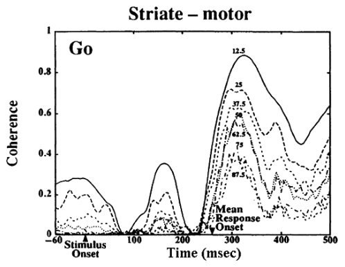
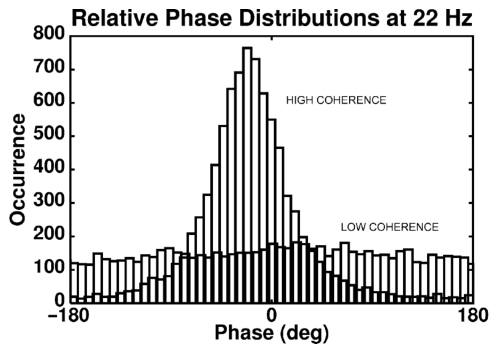
Hình 2 Sự gia tăng từng đợt trong đồng bộ hóa pha giữa các điện thế trường cục bộ từ các vị trí điện cực ở vùng vỏ não thị giác sơ cấp và vỏ não vận động sơ cấp của khỉ macaque. Đồng bộ hóa pha được đo bằng độ kết hợp (coherence), biến thiên từ 0, biểu thị không có đồng bộ hóa, đến 1, biểu thị đồng bộ hóa hoàn toàn. Điều chỉnh từ [13]
các quần thể tế bào thần kinh dao động tương tác trong các vùng vỏ não kết nối với nhau, tính siêu ổn định hàm ý sự cùng tồn tại của khuynh hướng để các quần thể này được phối hợp toàn cục cân bằng bởi khuynh hướng đối kháng để chúng độc lập. Một hệ thống siêu ổn định thể hiện tính gián đoạn trong sự phối hợp: các thành phần có thể luân phiên giữa các giai đoạn phối hợp và không phối hợp [14]. Khái niệm về động lực học phối hợp gián đoạn nhất quán với tính gián đoạn được quan sát thực nghiệm của sự đồng bộ hóa pha tăng cao giữa các quần thể tế bào thần kinh vỏ não phân bố rộng rãi (Hình 2), cũng như các chuyển tiếp trạng thái gián đoạn ngăn cách các gói sóng [29, 32]. Đối với cả hai hiện tượng, tính gián đoạn xảy ra xấp xỉ ở mức 100–300 msec.
4 Hệ quả đối với Nghiên cứu về Nhận thức và Ý thức
Về bản chất, đề xuất được trình bày ở đây là một sự đánh giá trạng thái cơ thể diễn ra trong vỏ não là kết quả của các tương tác giữa những vùng vỏ não kết nối với nhau, trong khi chúng đang nhận các đầu vào từ đồi thị và các cấu trúc dưới vỏ khác truyền tải dữ liệu thô về môi trường bên trong và bên ngoài. Bằng cách mỗi vùng vỏ não thực hiện một đánh giá cục bộ về trạng thái hiện tại của chính nó, nó cung cấp một đánh giá bộ phận về toàn bộ trạng thái của cơ thể. Tùy thuộc vào vị trí của nó trong cấu trúc kết nối quy mô lớn của vỏ não [38, 56], mỗi vùng biểu hiện một khía cạnh khác nhau của trạng thái tổng thể.
Một cơ chế tiềm năng cho việc tạo ra trạng thái nhận thức thần kinh toàn cục, đại diện cho sự đánh giá trạng thái cơ thể, liên quan đến việc tạo ra các gói hoạt động sóng dao động tần số cao trong các vùng vỏ não. Mẫu AM không gian của gói sóng được đề xuất đại diện cho sự biểu hiện trạng thái hiện tại của một vùng trong mối quan hệ với các vùng khác mà nó đang tương tác. Thông qua các tương tác của chúng, các vùng vỏ não gây ra các ảnh hưởng điều biến lên nhau nhằm ràng buộc lẫn nhau sự biểu hiện đó. Các vùng vỏ não tạo ra các gói sóng với tốc độ vài lần mỗi giây [29], mỗi lần tạo thành được khởi xướng bởi một chuyển tiếp trạng thái phi tuyến.
Sự ràng buộc mẫu lẫn nhau có thể dẫn các tập hợp vùng vỏ não tương tác đạt tới các trạng thái đồng thuận thống nhất vốn nhất quán theo các mối quan hệ nhất quán và thiếu nhất quán về mặt nhận thức [76]. Người ta đề xuất rằng các tập hợp như vậy trở nên được phối hợp trong các mạng lưới vỏ não quy mô lớn thông qua sự đồng bộ hóa pha của hoạt động dao động tần số cao. Sự ủng hộ cho ý tưởng này đến từ việc quan sát các mạng lưới vỏ não đồng bộ hóa pha quy mô lớn liên quan đến các chức năng nhận thức khác nhau [9, 65, 66, 75, 82, 84]. Một ví dụ từ vùng cảm giác-vận động của khỉ macaque đang giám sát trạng thái vị trí chi của chúng như một phần của nhiệm vụ thị giác-vận động được hiển thị trong Hình 3.
Tùy thuộc vào vị trí và phạm vi của các vùng liên quan, sự xuất hiện của các trạng thái đồng thuận thống nhất có thể đại diện cho sự đánh giá trạng thái cơ thể dưới các hình thức nhận thức khác nhau [56]. Trong các hệ thống tri giác, những trạng thái này có thể dẫn đến sự nhận biết và nhận diện các thực thể tri giác. Giữa các hệ thống tri giác và vận động, chúng có thể cung cấp sự thích nghi hành vi trong chu trình tri giác-hành động [38]. Thông qua sự tích hợp trên các hệ thống điều hành, chúng có thể thiết lập
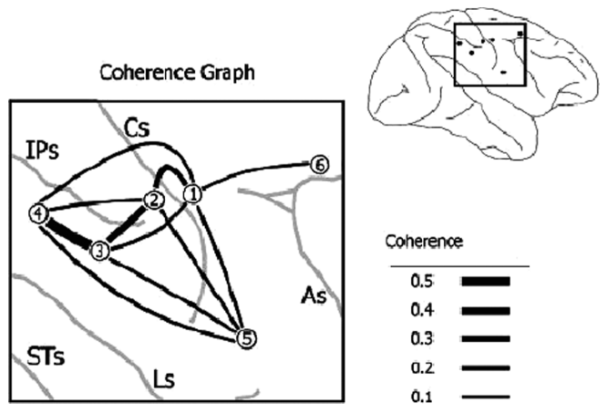
Hình 3 Mạng lưới đồng bộ hóa pha trong vỏ não cảm giác-vận động của khỉ macaque. Các đường nối các vị trí điện cực biểu thị độ kết hợp đáng kể trong dải tần số beta. Điều chỉnh từ [17]
các bối cảnh nhận thức thần kinh [15] cho phép dự đoán các sự kiện sắp xảy ra và nhận diện các sự kiện đó khi chúng xuất hiện.
Tất nhiên, việc đánh giá trạng thái cơ thể hiếm khi hoàn hảo. Một tính bất định cơ bản tồn tại trong quá trình đánh giá trạng thái của môi trường cảm giác [12] và các hệ thống não bộ. Hơn nữa, dữ liệu cảm giác có thể không đầy đủ, mơ hồ hoặc mâu thuẫn. Những cân nhắc này gợi ý rằng nhiều cụm các vùng vỏ não đồng thuận có thể đồng thời nảy sinh trong vỏ não, đại diện cho các đánh giá cạnh tranh về trạng thái cơ thể, theo cách rất giống với những gì đã được đề xuất cho sự cạnh tranh giữa các thực thể tri giác trong cùng một phương thức [23] và giữa các phương thức [54]. Thông qua sự nhất quán gia tăng của các mẫu AM không gian được biểu hiện, cũng như việc huy động thêm các vùng nhất quán, một số cụm có thể trở nên được thiết lập vững chắc hơn qua các chuyển tiếp trạng thái liên tiếp, trong khi những cụm khác có thể tàn lụi. Các cụm cũng có thể hợp nhất nếu chúng biểu hiện các diễn giải nhất quán về trạng thái cơ thể. Thông qua một quá trình đánh giá lặp đi lặp lại liên tục, người ta kỳ vọng rằng vỏ não có thể đạt được các trạng thái nhận thức thần kinh đại diện cho sự đánh giá nhất quán toàn cục về trạng thái cơ thể.
Khuôn khổ được đề xuất trong chương này nhất quán với các cách tiếp cận động lực học trong khoa học nhận thức vốn tập trung vào sự tiến hóa của trạng thái nhận thức trên thang thời gian dưới một giây [5, 71]. Mẫu AM không gian của một gói sóng trong một vùng vỏ não có thể được biểu diễn như một vectơ trong không gian nhiều chiều [29]. Khi gói sóng của vùng đó trải qua quá trình tạo thành tuần tự, vectơ đi theo một quỹ đạo trong không gian trạng thái, và các tương tác của nó với các vùng khác điều biến quỹ đạo vectơ trạng thái đó. Hơn nữa, các mẫu AM không gian kết hợp của các vùng tương tác cũng có thể được biểu diễn như các vectơ trạng thái trong không gian nhiều chiều. Ở cấp độ trạng thái nhận thức thần kinh toàn cục, một quỹ đạo hệ thống vỏ não được hình dung tương đương với các quỹ đạo không gian trạng thái nhận thức được mô tả trong tài liệu [45, 62, 70, 85].
Việc đánh giá trạng thái cơ thể được đề xuất cũng tương tự như quá trình thẩm định được giả định là làm trung gian cho sự tương tác qua lại giữa các trạng thái nhận thức và cảm xúc [52]. Việc tạo ra các trạng thái nhận thức thần kinh toàn cục trong vỏ não có khả năng gây ra những tác động quan trọng lên các cấu trúc não dưới vỏ với nhiều hệ quả đa dạng [19]. Các cấu trúc dưới vỏ có thể truyền ảnh hưởng ngược trở lại vỏ não bằng các con đường trực tiếp sử dụng chất dẫn truyền thần kinh hoặc neuropeptide [59], cũng như bằng các con đường gián tiếp hơn liên quan đến các hormone tuần hoàn. Một số nghiên cứu đã chứng minh mối liên hệ qua lại giữa trạng thái nhận thức thần kinh và các hormone tuần hoàn [48, 49, 64]. Do đó, quỹ đạo hệ thống vỏ não được mô tả ở trên có khả năng chịu ảnh hưởng bởi một số nguồn ở nơi khác trong não bộ và cơ thể.
Sự gián đoạn của quá trình đánh giá cơ thể được đề xuất có thể chịu trách nhiệm cho nhiều triệu chứng quan sát thấy trong các rối loạn tâm thần kinh. Ngày càng có sự đồng thuận rằng tâm thần phân liệt là một căn bệnh được đặc trưng bởi sự rối loạn các quá trình nhận thức phối hợp [2, 42, 57, 61, 78], và sự gián đoạn này xảy ra do kết quả của sự đồng bộ hóa pha bất thường của hoạt động quần thể tế bào thần kinh dao động tần số cao trong vỏ não [6, 11, 50, 51, 69, 74, 80, 81]. Bằng chứng cũng tồn tại cho những sự gián đoạn tương tự của các dao động vỏ não đồng bộ hóa pha trong bệnh Alzheimer [47] và chứng tự kỷ [86]. Sự suy giảm khả năng đánh giá trạng thái cơ thể, dưới các hình thức khác nhau, có thể là điểm chung của tất cả các bệnh lý này.
5 Kết luận
Trạng thái nhận thức thần kinh toàn cục được thảo luận ở đây như một phương tiện mà qua đó cơ thể có thể đánh giá trạng thái của chính nó cũng có thể liên quan đến trạng thái nhận thức có ý thức. Mặc dù quá trình mà các vùng vỏ não trở nên phối hợp phần lớn có thể là vô thức, nó có thể trở nên có ý thức khi một ngưỡng bị vượt qua về số lượng các vùng được phối hợp, độ mạnh tổng thể của sự phối hợp, hoặc sự huy động của các vùng cụ thể [44, 46, 67]. Vậy thì, nếu các trạng thái đánh giá nhận thức thần kinh toàn cục là điều kiện tiên quyết cho ý thức, thì ý thức nên được coi là một đặc tính nổi trội (emergent property) của sự tương tác giữa các vùng vỏ não phân tán [68, 77]. Việc xem ý thức như một đặc tính động của chức năng não bộ nảy sinh từ các tương tác của các vùng vỏ não liên quan đến việc đánh giá trạng thái cơ thể gợi ý rằng nó có thể mang lại cho động vật có vú giá trị sinh tồn cao hơn [39, 43]. Bằng cách tăng cường việc đánh giá trạng thái cơ thể, ý thức có thể cung cấp cho động vật có vú sự linh hoạt lớn hơn trong khả năng phân biệt các thực thể môi trường và một kho tàng hành vi phong phú hơn. Điều này còn gợi ý thêm rằng tất cả các loài động vật có vú đều sở hữu ý thức với một mức độ được đánh dấu bởi số lượng các vùng vỏ não biệt hóa và độ phức tạp trong tính kết nối qua lại của chúng.
Lời cảm ơn Được hỗ trợ bởi khoản tài trợ MH64204 từ Viện Sức khỏe Tâm thần Quốc gia (NIMH).
Tài liệu tham khảo
1. D. J. Amit. The hebbian paradigm reintegrated: Local reverberations as internal representations. Behav Brain Sci, 18:617–657, 1995. 2. N. C. Andreasen, P. Nopoulos, D. S. O’Leary, D. D. Miller, T. Wassink, and M. Flaum. Defining the phenotype of schizophrenia: cognitive dysmetria and its neural mechanisms. Biol Psychiatry, 46(7):908–20, 1999. 3. H. Barbas. Connections underlying the synthesis of cognition, memory, and emotion in primate prefrontal cortices. Brain Res Bull, 52(5):319–30, 2000. 4. J. M. Barrie, W. J. Freeman, and M. D. Lenhart. Spatiotemporal analysis of prepyriform, visual, auditory, and somesthetic surface eegs in trained rabbits. J Neurophysiol, 76(1):520–39, 1996. 5. R. D. Beer. Dynamical approaches to cognitive science. Trends Cogn Sci, 4:91–99, 2000. 6. C. A. Brenner, O. Sporns, P. H. Lysaker, and B. F. O’Donnell. Eeg synchronization to modulated auditory tones in schizophrenia, schizoaffective disorder, and schizotypal personality disorder. Am J Psychiatry., 160(12):2238–40., 2003. 7. S. L. Bressler. Spatio-temporal analysis of olfactory signal processing with behavioral conditioning. PhD thesis, University of California, Berkeley, 1982. 8. S. L. Bressler. Spatial organization of eegs from olfactory bulb and cortex. Electroencephalogr Clin Neurophysiol, 57(3):270–276, Mar 1984. 9. S. L. Bressler. Large-scale cortical networks and cognition. Brain Res Brain Res Rev, 20(3):288–304, 1995. 10. S. L. Bressler. Understanding cognition through large-scale cortical networks. Curr Dir Psychol Sci, 11:58–61, 2002. 11. S. L. Bressler. Cortical coordination dynamics and the disorganization syndrome in schizophrenia. Neuropsychopharmacology, 28(Suppl 1):S35–9, 2003. 12. S. L. Bressler. Inferential constraint sets in the organization of visual expectation. Neuroinformatics, 2(2):227–38, 2004. 13. S. L. Bressler, R. Coppola, and R. Nakamura. Episodic multiregional cortical coherence at multiple frequencies during visual task performance. Nature, 366(6451):153–6, 1993. 14. S. L. Bressler and J. A. Kelso. Cortical coordination dynamics and cognition. Trends Cogn Sci, 5(1):26–36, 2001. 15. S. L. Bressler and A. R. McIntosh. The role of neural context in large-scale neurocognitive network operations. In V. Jirsa and A. R. McIntosh, editors, Handbook of Brain Connectivity. Springer-Verlag, 2007. 16. S. L. Bressler and E. Tognoli. Operational principles of neurocognitive networks. Int J Psychophysiol, 60(2):139–48. Epub 2006 Feb 21, 2006. 17. A. Brovelli, M. Ding, A. Ledberg, Y. Chen, R. Nakamura, and S. L. Bressler. Beta oscillations in a large-scale sensorimotor cortical network: directional influences revealed by granger causality. Proc Natl Acad Sci U S A, 101(26):9849–54. Epub 2004 Jun 21, 2004. 18. G. Buzsaki and A. Draguhn. Neuronal oscillations in cortical networks. Science, 304(5679):1926–9, 2004. 19. A. R. Damasio, T. J. Grabowski, A. Bechara, H. Damasio, L. L. Ponto, J. Parvizi, and R. D. Hichwa. Subcortical and cortical brain activity during the feeling of self-generated emotions. Nat Neurosci., 3(10):1049–56., 2000. 20. J. DeFelipe, L. Alonso-Nanclares, and J. I. Arellano. Microstructure of the neocortex: comparative aspects. J Neurocytol., 31(3–5):299–316., 2002. 21. J. DeFelipe, G. N. Elston, I. Fujita, J. Fuster, K. H. Harrison, P. R. Hof, Y. Kawaguchi, K. A. Martin, K. S. Rockland, A. M. Thomson, S. S. Wang, E. L. White, and R. Yuste. Neocortical circuits: evolutionary aspects and specificity versus non-specificity of synaptic connections. remarks, main conclusions and general comments and discussion. J Neurocytol., 31(3–5): 387–416., 2002. 22. R. J. Douglas, C. Koch, M. Mahowald, K. A. Martin, and H. H. Suarez. Recurrent excitation in neocortical circuits. Science, 269(5226):981–5., 1995.
23. J. Duncan, G. Humphreys, and R. Ward. Competitive brain activity in visual attention. Curr Opin Neurobiol., 7(2):255–61., 1997. 24. D. J. Felleman and D. C. Van Essen. Distributed hierarchical processing in the primate cerebral cortex. Cereb Cortex., 1(1):1–47., 1991. 25. W. J. Freeman. Mass action in the nervous system. Academic Press. 2004: http://sulcus. berkeley.edu/MANSWWW/MANSWWW.html, 1975. 26. W. J. Freeman. A neurobiological theory of meaning in perception. part ii: Spatial patterns of phase in gamma eegs from primary sensory cortices reveal the dynamics of mesoscopic wave packets. Int J Bifurcat Chaos, 13:2513–2535, 2003. 27. W. J. Freeman. The wave packet: an action potential for the 21st century. J Integr Neurosci, 2(1):3–30, 2003. 28. W. J. Freeman. Origin, structure, and role of background eeg activity. part 2. analytic phase. Clin Neurophysiol, 115(9):2089–107, 2004. 29. W. J. Freeman. Origin, structure, and role of background eeg activity. part 4: Neural frame simulation. Clin Neurophysiol, 117(3):572–89. Epub 2006 Jan 25, 2006. 30. W. J. Freeman and J. M. Barrie. Analysis of spatial patterns of phase in neocortical gamma eegs in rabbit. J Neurophysiol, 84(3):1266–1278, 2000. 31. W. J. Freeman and B. C. Burke. A neurobiological theory of meaning in perception. part iv: Multicortical patterns of amplitude modulation in gamma eeg. Int J Bifurcat Chaos, 13: 2857–2866, 2003. 32. W. J. Freeman, B. C. Burke, and M. D. Holmes. Aperiodic phase re-setting in scalp eeg of beta-gamma oscillations by state transitions at alpha-theta rates. Hum Brain Mapp, 19(4): 248–272, 2003. 33. W. J. Freeman, M. D. Holmes, G. A. West, and S. Vanhatalo. Fine spatiotemporal structure of phase in human intracranial eeg. Clin Neurophysiol, 117(6):1228–1243, 2006. 34. W. J. Freeman and L. J. Rogers. A neurobiological theory of meaning in perception. part v. multicortical patterns of phase modulation in gamma eeg. Int J Bifurc Chaos, 13:2867–2887, 2003. 35. W. J. Freeman and B. W. van Dijk. Spatial patterns of visual cortical fast eeg during conditioned reflex in a rhesus monkey. Brain Res, 422(2):267–276, 1987. 36. J. M. Fuster. Network memory. Trends Neurosci, 20(10):451–9, 1997. 37. J. M. Fuster. Upper processing stages of the perception-action cycle. Trends Cogn Sci., 8(4):143–5., 2004. 38. J. M. Fuster. The cognit: a network model of cortical representation. Int J Psychophysiol, 60:125–32, 2006. 39. J. A. Gray. The contents of consciousness: a neuropsychological conjecture. Behav Brain Sci, 18:659–722, 1995. 40. C. C. Hilgetag, M. A. O’Neill, and M. P. Young. Indeterminate organization of the visual system. Science., 271(5250):776–7., 1996. 41. C. C. Hilgetag, M. A. O’Neill, and M. P. Young. Hierarchical organization of macaque and cat cortical sensory systems explored with a novel network processor. Philos Trans R Soc Lond B Biol Sci., 355(1393):71–89., 2000. 42. R. E. Hoffman and T. H. McGlashan. Reduced corticocortical connectivity can induce speech perception pathology and hallucinated ‘voices’. Schizophr Res., 30(2):137–41., 1998. 43. W. James. Are we automata? Mind, 4:1–22, 1879. 44. E. R. John. From synchronous neuronal discharges to subjective awareness? Prog Brain Res., 150:143–71., 2005. 45. J. A. S. Kelso. Dynamic patterns. MIT Press, 1995. 46. J. F. Kihlstrom. The cognitive unconscious. Science., 237(4821):1445–52., 1987. 47. T. Koenig, L. Prichep, T. Dierks, D. Hubl, L. O. Wahlund, E. R. John, and V. Jelic. Decreased eeg synchronization in alzheimer’s disease and mild cognitive impairment. Neurobiol Aging, 26:165–71, 2005. 48. S. Kuhlmann and O. T. Wolf. Arousal and cortisol interact in modulating memory consolidation in healthy young men. Behav Neurosci., 120(1):217–23., 2006. 49. S. Kuhlmann and O. T. Wolf. A non-arousing test situation abolishes the impairing effects of cortisol on delayed memory retrieval in healthy women. Neurosci Lett., 399(3):268–72. Epub 2006 Feb 28., 2006. 50. J. S. Kwon, B. F. O’Donnell, G. V. Wallenstein, R. W. Greene, Y. Hirayasu, P. G. Nestor, M. E. Hasselmo, G. F. Potts, M. E. Shenton, and R. W. McCarley. Gamma frequency-range abnormalities to auditory stimulation in schizophrenia. Arch Gen Psychiatry, 56(11):1001–5, 1999. 51. L. Lee, L. M. Harrison, and A. Mechelli. The functional brain connectivity workshop: report and commentary. Network., 14(2):R1–15., 2003. 52. M. D. Lewis. Bridging emotion theory and neurobiology through dynamic systems modeling. Behav Brain Sci., 28(2):169–94; discussion 194–245., 2005. 53. M. Marinaro, S. Scarpetta, and M. Yoshioka. Learning of oscillatory correlated patterns in a cortical network by a stdp-based learning rule. Math Biosci, doi:10.1016/j.mbs.2006.10.001, 2007. 54. J. B. Mattingley, J. Driver, N. Beschin, and I. H. Robertson. Attentional competition between modalities: extinction between touch and vision after right hemisphere damage. Neuropsychologia., 35(6):867–80., 1997. 55. J. L. McClelland, D. E. Rumelhart, and G. E. Hinton. The appeal of parallel distributed processing. In D. E. Rumelhart and J. L. McClelland, editors, Parallel Distributed Processing: Explorations in the Microstructure of Cognition, Vol. 1, pp. 3–44. MIT Press, 1986. 56. M. M. Mesulam. From sensation to cognition. Brain., 121(Pt 6):1013–52., 1998. 57. A. Meyer-Lindenberg, J. B. Poline, P. D. Kohn, J. L. Holt, M. F. Egan, D. R. Weinberger, and K. F. Berman. Evidence for abnormal cortical functional connectivity during working memory in schizophrenia. Am J Psychiatry, 158(11):1809–17, 2001. 58. F. W. Ohl, H. Scheich, and W. J. Freeman. Change in pattern of ongoing cortical activity with auditory category learning. Nature, 412(6848):733–736, 2001. 59. J. Panksepp. At the interface of the affective, behavioral, and cognitive neurosciences: decoding the emotional feelings of the brain. Brain Cogn., 52(1):4–14., 2003. 60. R. E. Passingham, K. E. Stephan, and R. Kotter. The anatomical basis of functional localization in the cortex. Nat Rev Neurosci., 3(8):606–16., 2002. 61. W. A. Phillips and S. M. Silverstein. Convergence of biological and psychological perspectives on cognitive coordination in schizophrenia. Behav Brain Sci., 26(1):65–82; discussion 82–137., 2003. 62. R. Port and T. van Gelder. Mind as motion. MIT Press, 1995. 63. F. Pulvermuller. Words in the brain’s language. Behav Brain Sci., 22(2):253–79; discussion 280–336., 1999. 64. M. Reuter. Impact of cortisol on emotions under stress and nonstress conditions: a pharmacopsychological approach. Neuropsychobiology., 46(1):41–8., 2002. 65. P. R. Roelfsema, A. K. Engel, P. Konig, and W. Singer. Visuomotor integration is associated with zero time-lag synchronization among cortical areas. Nature., 385(6612):157–61., 1997. 66. A. Schnitzler and J. Gross. Functional connectivity analysis in magnetoencephalography. Int Rev Neurobiol., 68:173–95., 2005. 67. J. T. Serences and S. Yantis. Selective visual attention and perceptual coherence. Trends Cogn Sci, 10:38–45, 2006. 68. A. K. Seth, E. Izhikevich, G. N. Reeke, and G. M. Edelman. Theories and measures of consciousness: an extended framework. Proc Natl Acad Sci U S A, 103:10799–804, 2006. 69. K. M. Spencer, P. G. Nestor, M. A. Niznikiewicz, D. F. Salisbury, M. E. Shenton, and R. W. McCarley. Abnormal neural synchrony in schizophrenia. J Neurosci., 23(19):7407–11., 2003. 70. M. Spivey. The continuity of mind. Oxford University Press, 2006. 71. M. J. Spivey and R. Dale. Continuous dynamics in real-time cognition. Current Directions in Psychological Science, 15:207–211, 2006. 72. O. Sporns, G. Tononi, and G. M. Edelman. Theoretical neuroanatomy: relating anatomical and functional connectivity in graphs and cortical connection matrices. Cereb Cortex., 10(2): 127–41., 2000. 73. O. Sporns, G. Tononi, and G. M. Edelman. Theoretical neuroanatomy and the connectivity of the cerebral cortex. Behav Brain Res., 135(1–2):69–74., 2002.
74. V. B. Strelets, V. Y. Novototsky-Vlasov, and J. V. Golikova. Cortical connectivity in high frequency beta-rhythm in schizophrenics with positive and negative symptoms. Int J Psychophysiol., 44(2):101–15., 2002. 75. C. Tallon-Baudry, O. Bertrand, and C. Fischer. Oscillatory synchrony between human extrastriate areas during visual short-term memory maintenance. J Neurosci., 21(20):RC177., 2001. 76. P. Thagard and K. Verbeurgt. Coherence as constraint satisfaction. Cognit Sci, 22:1–24, 1998. 77. E. Thompson and F. J. Varela. Radical embodiment: neural dynamics and consciousness. Trends Cogn Sci., 5(10):418–425., 2001. 78. G. Tononi and G. M. Edelman. Schizophrenia and the mechanisms of conscious integration. Brain Res Brain Res Rev., 31(2–3):391–400., 2000. 79. G. Tononi, O. Sporns, and G. M. Edelman. Reentry and the problem of integrating multiple cortical areas: simulation of dynamic integration in the visual system. Cereb Cortex, 2:310–335, 1992. 80. P. J. Uhlhaas, D. E. Linden, W. Singer, C. Haenschel, M. Lindner, K. Maurer, and E. Rodriguez. Dysfunctional long-range coordination of neural activity during gestalt perception in schizophrenia. J Neurosci., 26(31):8168–75., 2006. 81. O. van der Stelt, A. Belger, and J. A. Lieberman. Macroscopic fast neuronal oscillations and synchrony in schizophrenia. Proc Natl Acad Sci U S A., 101(51):17567–8. Epub 2004 Dec 15., 2004. 82. F. Varela, J. P. Lachaux, E. Rodriguez, and J. Martinerie. The brainweb: phase synchronization and large-scale integration. Nat Rev Neurosci., 2(4):229–39., 2001. 83. J. Vezoli, A. Falchier, B. Jouve, K. Knoblauch, M. Young, and H. Kennedy. Quantitative analysis of connectivity in the visual cortex: extracting function from structure. Neuroscientist., 10(5):476–82., 2004. 84. A. von Stein, P. Rappelsberger, J. Sarnthein, and H. Petsche. Synchronization between temporal and parietal cortex during multimodal object processing in man. Cereb Cortex., 9(2):137–50., 1999. 85. L. M. Ward. Dynamical cognitive science. MIT Press, 2002. 86. J. P. Welsh, E. S. Ahn, and D. G. Placantonakis. Is autism due to brain desynchronization? Int J Dev Neurosci., 23(2–3):253–63., 2005. 87. M. P. Young. The organization of neural systems in the primate cerebral cortex. Proc Biol Sci., 252(1333):13–8., 1993.
Logic Động Thần kinh của Ý thức: Bản năng Tri thức
Leonid I. Perlovsky
Tóm tắt Chương này thảo luận về sự tiến hóa của ý thức được thúc đẩy bởi bản năng tri thức, một cơ chế nền tảng của tâm trí quyết định các chức năng nhận thức bậc cao và động lực học thần kinh của nó. Mặc dù bằng chứng cho động lực này đã được các nhà sinh học thảo luận trong một thời gian, bản chất nền tảng của nó vẫn chưa rõ ràng nếu thiếu mô hình hóa toán học. Chúng tôi thảo luận về những khó khăn toán học gặp phải trong các nỗ lực mô hình hóa tâm trí trước đây và liên hệ chúng với logic. Các cơ chế chính của tâm trí bao gồm bản năng, khái niệm, cảm xúc và hành vi. Các trường mô hình hóa thần kinh và logic động mô tả một cách toán học các cơ chế này và liên hệ động lực học thần kinh của chúng với bản năng tri thức. Logic động vượt qua những khó khăn toán học trước đây gặp phải trong việc mô hình hóa trí tuệ. Các cơ chế toán học của khái niệm, cảm xúc, bản năng, ý thức và vô thức được mô tả và liên hệ với tri giác và nhận thức. Hai khía cạnh chính của bản năng tri thức là sự phân hóa và sự tổng hợp. Sự phân hóa được thúc đẩy bởi logic động và tiến triển từ các trạng thái mơ hồ và vô thức đến các trạng thái sắc nét và có ý thức hơn, từ ít tri thức đến nhiều tri thức hơn ở mỗi cấp độ phân cấp của tâm trí. Sự tổng hợp được thúc đẩy bởi một tổ chức phân cấp của tâm trí; nó nỗ lực đạt được sự thống nhất và ý nghĩa của tri thức: mỗi khái niệm tìm thấy ý nghĩa sâu sắc hơn và tổng quát hơn của nó ở một cấp độ cao hơn. Những cơ chế này nằm trong mối quan hệ phức tạp vừa cộng sinh vừa đối lập, và dẫn đến động lực học phức tạp của sự tiến hóa ý thức và các nền văn hóa. Việc mô hình hóa toán học động lực học này trong một quần thể dẫn đến những dự đoán cho sự tiến hóa của ý thức và các nền văn hóa. Các mô hình dự đoán văn hóa có thể được so sánh với dữ liệu thực nghiệm và được sử dụng để cải thiện điều kiện sống của con người. Chúng tôi thảo luận về các bằng chứng hiện có và các hướng nghiên cứu trong tương lai.
1 Bản năng Tri thức
Để thỏa mãn bất kỳ nhu cầu bản năng nào—về thức ăn, sự sinh tồn và sinh sản—trước hết chúng ta cần hiểu chuyện gì đang diễn ra xung quanh mình. Bản năng tri thức là một cơ chế bẩm sinh trong tâm trí chúng ta, một động lực bản năng cho nhận thức thôi thúc chúng ta không ngừng cải thiện tri thức của mình về thế giới.
Con người và các loài động vật bậc cao tham gia vào hành vi khám phá, ngay cả khi các nhu cầu cơ thể cơ bản, như ăn uống, đã được thỏa mãn. Các nhà sinh học và tâm lý học đã thảo luận về nhiều khía cạnh khác nhau của hành vi này. Harry Harlow phát hiện ra rằng khỉ cũng như con người có động lực tìm kiếm kích thích tích cực, bất kể sự thỏa mãn các động lực như cơn đói [1]; David Berlyne nhấn mạnh sự tò mò như một khao khát thu nhận tri thức mới [2]; Leon Festinger thảo luận về khái niệm bất hòa nhận thức và động lực của con người nhằm giảm bớt sự bất hòa đó [3]. Tuy nhiên, cho đến gần đây, động lực cho hành vi khám phá này vẫn chưa được nhắc đến trong số các “bản năng cơ bản” ngang hàng với bản năng ăn uống và sinh sản.
Bản chất nền tảng của cơ chế này đã trở nên rõ ràng trong quá trình mô hình hóa toán học các hoạt động của tâm trí. Tri thức của chúng ta luôn phải được điều chỉnh để phù hợp với các tình huống hiện tại. Chúng ta thường không nhìn thấy chính xác cùng một vật thể như trong quá khứ: góc độ, ánh sáng và bối cảnh xung quanh thường khác nhau. Do đó, các biểu diễn bên trong của chúng ta vốn lưu trữ những trải nghiệm quá khứ phải được điều chỉnh; sự thích nghi-học tập là điều bắt buộc. Ví dụ, tri giác thị giác (theo một cách đơn giản hóa) hoạt động như sau [4, 5, 6]. Hình ảnh của môi trường xung quanh được chiếu từ võng mạc lên vỏ não thị giác, đồng thời các ký ức-biểu diễn về các vật thể được kỳ vọng được chiếu lên cùng một vùng của vỏ não. Tri giác xảy ra khi hình ảnh thực tế và hình ảnh kỳ vọng trùng khớp. Quá trình đối khớp các biểu diễn với dữ liệu cảm giác này đòi hỏi sự điều chỉnh-cải thiện các biểu diễn.
Trên thực tế, hầu như tất cả các thuật toán học tập và thích nghi (hàng chục nghìn ấn phẩm) đều tối đa hóa sự tương ứng giữa cấu trúc bên trong của thuật toán (tri thức theo nghĩa rộng) và các đối tượng nhận dạng. Chương của Paul Werbos trong cuốn sách này thảo luận về vai trò nền tảng của học tăng cường; bản năng tri thức là một dạng học tăng cường, khi các tác nhân củng cố bao gồm sự tương ứng của các biểu diễn tâm trí bên trong với thế giới xung quanh. Các biểu diễn tâm trí bên trong, hay các mô hình, mà tâm trí chúng ta sử dụng để hiểu thế giới, luôn ở trong tình trạng cần thích nghi liên tục. Tri thức không chỉ là một trạng thái tĩnh; nó nằm trong một quá trình thích nghi và học tập không ngừng. Nếu không có sự thích nghi của các mô hình bên trong, chúng ta sẽ không thể hiểu được thế giới. Chúng ta sẽ không thể định hướng bản thân hoặc thỏa mãn bất kỳ nhu cầu cơ thể nào. Do đó, chúng ta có một nhu cầu bẩm sinh, một động lực, một bản năng để cải thiện tri thức của mình, và chúng tôi gọi đó là bản năng tri thức. Đó là nền tảng cho các năng lực nhận thức bậc cao của chúng ta, và nó định hình sự tiến hóa của ý thức và các nền văn hóa.
2 Aristotle và Logic
Trước khi chuyển sang phần mô tả toán học về bản năng tri thức, sẽ rất bổ ích khi phân tích các nỗ lực trước đây trong việc mô hình hóa toán học tâm trí. Những người sáng lập trí tuệ nhân tạo vào những năm 1950 và 60 tin rằng logic toán học là cơ chế nền tảng của tâm trí, và bằng cách sử dụng các quy tắc logic, họ sẽ sớm phát triển được những chiếc máy tính có trí tuệ vượt xa tâm trí con người. Mặc dù niềm tin này hóa ra lại sai lầm, vẫn còn nhiều người tin vào logic. Nó đóng một vai trò nền tảng trong nhiều thuật toán và thậm chí cả mạng nơ-ron, và chúng ta bắt đầu từ logic để phân tích những khó khăn của việc mô hình hóa toán học tâm trí.
Logic được phát minh bởi Aristotle. Trong khi nhiều ý kiến khác nhau có thể tồn tại về bất kỳ chủ đề nào, Aristotle đã tìm ra các quy tắc chung của lý tính có giá trị phổ quát, và ông gọi
Phần I · Bài 4 — Logic động lực học thần kinh của ý thức: Bản năng tri thức (Perlovsky)
tập hợp các quy tắc này là “logic”. Ông tự hào về phát minh này và nhấn mạnh: “Trước chúng tôi, chưa từng có gì tồn tại trong lĩnh vực này” (Aristotle, thế kỷ IV TCN, a). Tuy nhiên, Aristotle không cho rằng tâm trí hoạt động một cách logic; ông phát minh ra logic như một phương thức lập luận tối cao, chứ không phải như một lý thuyết về tâm trí. Điều này thể hiện rõ qua nhiều tác phẩm của Aristotle, chẳng hạn như cuốn “Tu từ học dành cho Alexander” (Aristotle, thế kỷ IV TCN, b), được ông viết khi học trò của mình là Alexander Đại đế yêu cầu một cuốn cẩm nang về diễn thuyết trước công chúng. Trong cuốn sách này, ông liệt kê hàng chục chủ đề mà Alexander phải phát biểu trước công chúng. Với mỗi chủ đề, Aristotle xác định hai lập trường đối lập (ví dụ: lập hòa hay tuyên chiến; sử dụng hay không sử dụng tra tấn để tìm ra sự thật, v.v.). Aristotle đưa ra các lập luận logic để ủng hộ cho từng lập trường đối lập đó. Rõ ràng, Aristotle xem logic như một công cụ để biện luận cho những quyết định đã được đưa ra; ông không coi logic là cơ chế nền tảng của tâm trí. Có thể nói, logic là công cụ của các chính trị gia. Các nhà khoa học tuân theo logic khi viết bài báo và trình bày tham luận, nhưng không phải để khám phá ra những chân lý mới về tự nhiên.
Để giải thích tâm trí, Aristotle đã phát triển lý thuyết về các Hình thái (Forms), điều sẽ được thảo luận sau. Trong nhiều thế kỷ sau Aristotle, những nét tinh tế trong tư tưởng của ông không phải lúc nào cũng được thấu hiểu. Cùng với sự ra đời của khoa học, trí thông minh thường bị đồng nhất với logic. Vào thế kỷ 19, các nhà toán học khao khát tìm kiếm những chứng minh chính xác cho các mệnh đề toán học đã nhận thấy rằng các ý tưởng của Aristotle về logic là chưa đủ cho mục đích này. Nền tảng của logic, kể từ Aristotle (Aristotle, thế kỷ IV TCN), là quy luật bài trung (hay loại trừ cái thứ ba): mọi mệnh đề hoặc đúng hoặc sai, mọi phương án trung gian đều bị loại trừ. Nhưng Aristotle cũng nhấn mạnh rằng các mệnh đề logic không nên được phát biểu quá chính xác (chẳng hạn, một đấu lúa mì không nên được định nghĩa chính xác đến từng hạt). Ông nhấn mạnh rằng ngôn ngữ ngụ ý mức độ chính xác thích đáng, và mỗi người đều có tâm trí riêng để quyết định điều gì là hợp lý. George Boole cho rằng Aristotle đã sai, rằng mâu thuẫn giữa tính chính xác của quy luật bài trung và tính mơ hồ của ngôn ngữ cần phải được khắc phục.
Bằng cách này, logic hình thức, một nhánh mới của toán học, đã ra đời. Nhiều nhà toán học lỗi lạc đã đóng góp vào sự phát triển của logic hình thức, bao gồm Gottlob Frege, Georg Cantor, Bertrand Russell, David Hilbert và Kurt Gödel. Các nhà logic học đã loại bỏ tính bất định của ngôn ngữ và xây dựng logic toán học hình thức trên quy luật bài trung. Nhiều người trong số họ tin chắc rằng họ đang tìm kiếm các cơ chế chính xác của tâm trí. Hilbert viết: “Ý tưởng nền tảng trong lý thuyết chứng minh của tôi không gì khác hơn là mô tả hoạt động của sự hiểu biết của chúng ta, lập ra một biên bản về các quy tắc mà tư duy của chúng ta thực sự vận hành theo đó.” (Xem Hilbert, 1928). Năm 1900, ông đã phát biểu bài toán Entscheidungsproblem: xác định một tập hợp các quy tắc logic đủ để chứng minh tất cả các định lý toán học trong quá khứ và tương lai. Điều này sẽ hình thức hóa sự sáng tạo khoa học và xác định một cơ chế logic cho toàn bộ tư duy của con người.
Gần như ngay khi Hilbert đề ra chương trình hình thức hóa của mình, lỗ hổng đầu tiên đã xuất hiện. Năm 1902, Russell vạch trần sự bất nhất của logic hình thức bằng cách đưa ra tập hợp R như sau: R là tập hợp của tất cả các tập hợp không phải là phần tử của chính nó. Liệu R có phải là một phần tử của R không? Nếu không, thì theo định nghĩa nó phải thuộc R, nhưng nếu R là một phần tử của R, điều này lại mâu thuẫn với định nghĩa. Do đó, dù theo cách nào cũng dẫn đến mâu thuẫn. Điều này được biết đến với tên gọi nghịch lý Russell. Cách diễn đạt vui của nó như sau: Một người thợ cạo râu cho tất cả những người không tự cạo râu. Người thợ cạo đó có tự cạo râu cho mình không? Dù câu trả lời cho câu hỏi này là gì (có hay không) đều dẫn đến mâu thuẫn.
Người thợ cạo này, cũng giống như tập hợp của Russell, có thể được định nghĩa một cách logic nhưng không thể tồn tại. Trong 25 năm tiếp theo, các nhà toán học đã cố gắng phát triển một nền logic toán học tự nhất quán, không có các nghịch lý dạng này. Nhưng vào năm 1931, Gödel (xem trong Gödel, 1986) đã chứng minh rằng điều đó là bất khả thi, và rằng logic hình thức chắc chắn là bất nhất và tự mâu thuẫn.
Trong một thời gian dài, người ta tin rằng trí thông minh tương đương với suy luận logic khái niệm. Mặc dù rõ ràng tâm trí không phải lúc nào cũng logic, nhưng kể từ những thành công đầu tiên của khoa học, nhiều người đã đi đến chỗ đồng nhất sức mạnh của trí tuệ với logic. Niềm tin vào logic này có nguồn gốc tâm lý sâu xa liên quan đến cách vận hành của tâm trí. Hầu hết các quá trình của tâm trí không được nhận thức một cách có ý thức. Chẳng hạn, chúng ta không nhận thức được từng xung động phát lửa của các nơ-ron riêng lẻ. Chúng ta chỉ ý thức được các trạng thái cuối cùng sinh ra từ các quá trình tri giác và nhận thức; những trạng thái này được tâm trí chúng ta cảm nhận như những “khái niệm” tuân theo logic hình thức một cách gần đúng. Chính vì lý do này mà nhiều người tin vào logic. Ngay cả sau lý thuyết của Gödel, những người sáng lập trí tuệ nhân tạo vẫn khăng khăng rằng logic là đủ để giải thích cách tâm trí hoạt động.
Hãy quay trở lại với Aristotle. Ông đã giải quyết mối quan hệ giữa logic và sự vận hành của tâm trí như sau. Chúng ta hiểu thế giới nhờ vào các Hình thái (biểu tượng, mô hình) trong tâm trí mình. Nhận thức là một quá trình học tập trong đó một Hình thái-dạng-tiềm-năng (mô hình ban đầu) gặp gỡ vật chất (các tín hiệu giác quan) và trở thành một Hình thái-dạng-hiện-thực (một khái niệm). Trong khi các Hình thái-hiện-thực mang tính logic, thì các Hình thái-tiềm-năng không tuân theo logic. Ở đây, Aristotle đã nắm bắt được một khía cạnh quan trọng trong sự vận hành của tâm trí mà nhiều nhà khoa học đương đại đã bỏ sót. Logic không phải là cơ chế nền tảng của tâm trí, mà đúng hơn là kết quả của những hoạt động phi logic của tâm trí. Sau đây chúng tôi sẽ mô tả toán học của logic động, thứ mang lại lời giải thích toán học cho quá trình này: làm thế nào logic xuất hiện từ các trạng thái và quá trình phi logic. Hóa ra logic động tương đương với bản năng tri thức.
3 Các Cơ chế của Tâm trí
Các cơ chế tâm trí cơ bản cấu thành nên các hoạt động của bản năng tri thức sẽ được mô tả bằng toán học trong phần tiếp theo. Ở đây chúng tôi đưa ra một cái nhìn khái niệm sơ bộ về mô tả này. Trong số các cơ chế nhận thức của tâm trí, thứ dễ tiếp cận trực tiếp nhất với ý thức là các khái niệm. Các khái niệm giống như những mô hình nội tại về các sự vật và tình huống trong thế giới. Sự tương đồng này khá sát nghĩa, ví dụ, như đã đề cập, trong quá trình tri giác thị giác về một vật thể, một mô hình-khái niệm trong trí nhớ của chúng ta chiếu một hình ảnh lên vỏ não thị giác, nơi nó được đối chiếu với hình ảnh được chiếu từ võng mạc. Mô tả đơn giản hóa này sẽ được tinh chỉnh ở phần sau.
Các khái niệm phục vụ cho việc thỏa mãn các bản năng cơ bản, những thứ đã xuất hiện như các cơ chế sinh tồn từ rất lâu trước khi có các khái niệm. Những tranh luận hiện nay về bản năng, phản xạ, động lực thúc đẩy và xung lực thường gộp chung nhiều cơ chế khác nhau lại làm một. Điều này không phù hợp cho việc phát triển mô tả toán học về các cơ chế của tâm trí. Tôi đi theo các đề xuất (xem Grossberg & Levine, 1987; Perlovsky 2006, để có thêm tài liệu tham khảo và thảo luận) nhằm tách biệt bản năng với tư cách là các cơ chế cảm biến nội tại báo hiệu những nhu cầu cơ bản, ra khỏi “hành vi bản năng”, vốn cần được mô tả bằng các cơ chế thích hợp. Theo đó, tôi dùng từ “bản năng” để mô tả các cơ chế của cảm biến nội tại: chẳng hạn, khi lượng đường trong máu xuống dưới một mức nhất định, một bản năng “bảo chúng ta” phải ăn. Sự tách biệt bản năng như một “cảm biến nội tại” khỏi “hành vi bản năng” mới chỉ là một bước tiến tới việc xác định toàn bộ các chi tiết của những cơ chế sinh học liên quan.
Làm thế nào chúng ta biết được các nhu cầu bản năng? Bản năng được kết nối với nhận thức và hành vi thông qua cảm xúc. Trong khi theo cách dùng thông thường, cảm xúc thường được hiểu là biểu cảm khuôn mặt, cao độ giọng nói tăng lên, cử chỉ cường điệu, thì đây chỉ là những dấu hiệu bên ngoài của cảm xúc, phục vụ cho giao tiếp. Một vai trò nền tảng hơn của cảm xúc trong hệ thống tâm trí là các tín hiệu cảm xúc đánh giá các khái niệm nhằm mục đích thỏa mãn bản năng. Sự đánh giá này không diễn ra theo các quy tắc hay khái niệm (như trong các hệ thống quy tắc của trí tuệ nhân tạo), mà theo một cơ chế bản năng-cảm xúc khác, được mô tả lần đầu bởi Grossberg và Levine (1987); vai trò của cảm xúc trong sự vận hành của tâm trí được xem xét trong cuốn sách này ở chương của Daniel Levine. Dưới đây chúng tôi mô tả các cơ chế cảm xúc cho các chức năng nhận thức bậc cao hơn.
Những cảm xúc đánh giá sự thỏa mãn hay bất mãn của bản năng tri thức không liên quan trực tiếp đến các nhu cầu thể xác. Do đó, chúng là những cảm xúc “tinh thần”. Chúng ta cảm nhận chúng như sự hài hòa–bất hòa giữa tri thức của chúng ta và thế giới (giữa sự hiểu biết của chúng ta về việc mọi thứ lẽ ra phải thế nào và thực tế chúng đang diễn ra ra sao trong thế giới xung quanh). Theo Immanuel Kant [7], đây là những cảm xúc thẩm mỹ (những cảm xúc không liên quan trực tiếp đến sự thỏa mãn hay bất mãn của các nhu cầu thể xác).
Các cảm xúc thẩm mỹ liên quan đến việc học tập có thể nhận thấy trực tiếp ở trẻ em. Bản năng tri thức khiến trẻ nhỏ, thú con và lợn con nhảy nhót xung quanh và chơi trò đánh nhau giả. Các mô hình hành vi bẩm sinh của chúng phải thích nghi với trọng lượng cơ thể, các đồ vật và những con vật xung quanh từ rất lâu trước khi bản năng đói và sợ hãi sử dụng các mô hình đó cho những mục đích sinh tồn trực tiếp. Trong đời sống trưởng thành, khi tri giác và sự hiểu biết của chúng ta về thế giới xung quanh là đầy đủ, các cảm xúc thẩm mỹ hầu như không thể nhận thấy: tâm trí chỉ làm công việc của nó. Tương tự, chúng ta thường không để ý đến hoạt động bình thường của các cơ hô hấp và sự thỏa mãn của bản năng hít thở. Tuy nhiên, nếu việc thở trở nên khó khăn, những cảm xúc tiêu cực lập tức chạm tới ý thức. Điều tương tự cũng đúng với bản năng tri thức và cảm xúc thẩm mỹ: nếu chúng ta không hiểu môi trường xung quanh, nếu các sự vật xung quanh không tương ứng với kỳ vọng của chúng ta, những cảm xúc tiêu cực lập tức chạm tới ý thức. Chúng ta cảm nhận những cảm xúc này như sự bất hòa giữa tri thức của mình và thế giới. Phim giật gân khai thác bản năng tri thức: các nhân vật của chúng được đặt vào những tình huống mà tri thức về thế giới không đủ để sinh tồn.
Tôi xin nhấn mạnh lại một lần nữa, cảm xúc thẩm mỹ không phải là đặc quyền của nghệ thuật và nghệ sĩ, chúng không thể tách rời khỏi mọi hành vi tri giác và nhận thức. Trong đời sống hằng ngày, chúng ta thường không nhận thấy chúng. Cảm xúc thẩm mỹ trở nên rõ rệt ở các cấp độ nhận thức cao hơn trong hệ thống thứ bậc của tâm trí, khi nhận thức không mang tính tự động mà đòi hỏi nỗ lực có ý thức. Quan điểm của Antonio Damasio [8] về cảm xúc được định nghĩa bởi các cơ chế nội tạng, xét trong phạm vi bàn luận về các chức năng nhận thức bậc cao hơn, dường như đã sai lầm khi lấy các hiệu ứng thứ cấp làm cơ chế sơ cấp.
Trong phần tiếp theo, chúng tôi mô tả một lý thuyết toán học về sự nhận dạng và thấu hiểu khái niệm-cảm xúc, vốn là bản chất của động lực học nhận thức thần kinh. Như chúng ta sẽ thảo luận, ngoài khái niệm và cảm xúc, lý thuyết này còn liên quan đến các cơ chế của trực giác, trí tưởng tượng, ý thức và vô thức. Quá trình này gắn bó mật thiết với khả năng tư duy của tâm trí, khả năng thao tác với các biểu tượng và ký hiệu. Tâm trí bao gồm một dị thứ bậc (heterarchy) gồm nhiều cấp độ. Nó không phải là một thứ bậc nghiêm ngặt, mà là một dị thứ bậc, bởi vì nó có các kết nối phản hồi xuyên suốt nhiều cấp độ; để đơn giản hóa việc thảo luận, chúng tôi thường gọi cấu trúc tâm trí là một hệ thống thứ bậc. Hệ thống thứ bậc gồm nhiều cấp độ của các cơ chế nhận thức: bản năng tri thức, mô hình-khái niệm và cảm xúc, vận hành ở mỗi cấp độ từ các yếu tố tri giác đơn giản (như các cạnh, hoặc các chấm chuyển động), đến các mô hình-khái niệm về sự vật, đến các mối quan hệ giữa các sự vật, đến các khung cảnh phức tạp, và đi lên theo hệ thống thứ bậc... hướng tới các mô hình-khái niệm về ý nghĩa cuộc sống và mục đích tồn tại của chúng ta. Do đó, tâm trí có sự phức tạp khổng lồ, nhưng chỉ một số ít nguyên lý cơ bản về tổ chức tâm trí đã giải thích được sự tiến hóa thần kinh của hệ thống này.
4 Trường Mô hình hóa Thần kinh
Trường Mô hình hóa Thần kinh (Neural Modeling Fields - NMF) là một kiến trúc thần kinh hiện thực hóa bằng toán học các cơ chế của tâm trí đã thảo luận ở trên. Đây là một hệ thống dị thứ bậc đa cấp độ [9]. Tâm trí không phải là một thứ bậc nghiêm ngặt; có nhiều kết nối phản hồi giữa các cấp độ liền kề, do đó mới có thuật ngữ dị thứ bậc. Ở mỗi cấp độ trong NMF đều có các mô hình-khái niệm bao gói tri thức của tâm trí; chúng tạo ra cái gọi là các tín hiệu từ trên xuống (top-down), tương tác với các tín hiệu đầu vào từ dưới lên (bottom-up). Những tương tác này được chi phối bởi bản năng tri thức, thứ thúc đẩy việc học tập, thích nghi mô hình-khái niệm và hình thành các mô hình-khái niệm mới để tương ứng tốt hơn với các tín hiệu đầu vào.
Phần này mô tả một cơ chế tương tác cơ bản giữa hai cấp độ thứ bậc liền kề của các tín hiệu từ dưới lên và từ trên xuống (các trường kích hoạt thần kinh). Đôi khi sẽ thuận tiện hơn khi nói về hai cấp độ tín hiệu này như một đầu vào và một đầu ra của một cấp độ xử lý (đơn lẻ). Ở mỗi cấp độ, các tín hiệu đầu ra là những khái niệm được nhận dạng trong (hoặc được hình thành từ) các tín hiệu đầu vào. Các tín hiệu đầu vào được liên kết với (hoặc được nhận dạng, hoặc được nhóm vào) các khái niệm theo các mô hình và bản năng tri thức ở cấp độ này. Cấu trúc tổng quát này của NMF tương ứng với hiểu biết của chúng ta về các cấu trúc thần kinh trong não bộ; tuy nhiên, trong chương này chúng tôi không ánh xạ chi tiết các cơ chế toán học vào từng nơ-ron hay kết nối khớp thần kinh cụ thể.
Ở một cấp độ thứ bậc cụ thể, chúng ta đánh số các nơ-ron bằng chỉ số n =1,... N. Các nơ-ron này nhận các tín hiệu đầu vào từ dưới lên, X(n), từ các cấp độ thấp hơn trong hệ thống thứ bậc xử lý. X(n) là một trường kích hoạt khớp thần kinh của nơ-ron từ dưới lên, đến từ các nơ-ron ở cấp độ thấp hơn. Mỗi nơ-ron có một số lượng khớp thần kinh nhất định. Để tổng quát, chúng ta mô tả mỗi kích hoạt nơ-ron như một tập hợp các con số, X(n) = {Xd(n), d = 1,... D}. Các tín hiệu từ trên xuống, hay tín hiệu mồi, tới các nơ-ron này được gửi bởi các mô hình-khái niệm, Mh(Sh,n), và chúng ta đánh số các mô hình bằng chỉ số h =1,... H. Mỗi mô hình được đặc trưng bởi các tham số của nó, Sh; trong cấu trúc nơ-ron của não bộ, chúng được mã hóa bằng cường độ của các kết nối khớp thần kinh. Về mặt toán học, chúng ta mô tả chúng như một tập hợp các con số, Sh= {Sa h, a = 1,... A}. Các mô hình biểu diễn tín hiệu theo cách sau. Giả sử, tín hiệu X(n) đến từ các nơ-ron giác quan được kích hoạt bởi vật thể h, được đặc trưng bởi mô hình Mh(Sh,n) và các giá trị tham số Sh. Các tham số này có thể bao gồm vị trí, hướng hoặc độ chiếu sáng của vật thể h. Mô hình Mh(Sh,n) dự đoán một giá trị X(n) của tín hiệu tại nơ-ron n. Chẳng hạn, trong quá trình tri giác thị giác, một nơ-ron n trong vỏ não thị giác nhận tín hiệu X(n) từ võng mạc và tín hiệu mồi Mh(Sh,n) từ một mô hình-khái niệm-vật-thể h. Một nơ-ron n được kích hoạt nếu cả tín hiệu từ dưới lên từ đầu vào cấp thấp hơn và tín hiệu mồi từ trên xuống đều mạnh. Các mô hình khác nhau cạnh tranh nhau để giành bằng chứng trong các tín hiệu từ dưới lên, đồng thời điều chỉnh các tham số của chúng để khớp tốt hơn như được mô tả dưới đây. Đây là một mô tả đơn giản hóa về tri giác. Ngay cả tri giác thị giác thông thường nhất hằng ngày cũng sử dụng nhiều cấp độ từ võng mạc đến tri giác vật thể. Tiền đề của NMF là cùng một quy luật sẽ mô tả động lực học tương tác cơ bản ở mỗi cấp độ. Tri giác các đặc trưng nhỏ nhặt, hay các vật thể thường ngày, hay nhận thức các khái niệm trừu tượng phức tạp đều do cùng một cơ chế được mô tả trong phần này. Tri giác và nhận thức liên quan đến các mô hình và việc học tập. Trong tri giác, các mô hình tương ứng với các vật thể; trong nhận thức, các mô hình tương ứng với các mối quan hệ và tình huống.
Bản năng tri thức thúc đẩy việc học tập, vốn là một phần thiết yếu của tri giác và nhận thức. Việc học tập làm tăng một độ đo tương đồng giữa các tập hợp mô hình và tín hiệu, L({X},{M}). Độ đo tương đồng là một hàm của các tham số mô hình và các liên kết giữa tín hiệu đầu vào từ dưới lên và tín hiệu mô hình-khái niệm từ trên xuống. Để cụ thể, ở đây tôi đề cập đến một tri giác vật thể bằng cách sử dụng thuật ngữ đơn giản hóa, như thể việc tri giác các vật thể trong tín hiệu võng mạc diễn ra ở một cấp độ duy nhất.
Khi xây dựng một mô tả toán học cho độ đo tương đồng, điều quan trọng là phải thừa nhận hai nguyên lý (vốn gần như hiển nhiên) [10]. Thứ nhất, nội dung trường thị giác là chưa biết trước khi tri giác xảy ra và thứ hai, nó có thể chứa bất kỳ số lượng vật thể nào. Thông tin quan trọng có thể nằm trong bất kỳ tín hiệu từ dưới lên nào; do đó, độ đo tương đồng được xây dựng sao cho nó tính đến tất cả các tín hiệu từ dưới lên, X(n),
L({X}, {M}) =
l(X(n)). (1)
n∈N
Biểu thức này chứa một tích của các độ tương đồng thành phần, l(X(n)), trên tất cả các tín hiệu từ dưới lên; do đó nó buộc tâm trí phải tính đến mọi tín hiệu (ngay cả khi chỉ một số hạng trong tích bằng không, tích sẽ bằng không, độ tương đồng thấp và bản năng tri thức không được thỏa mãn); đây là sự phản ánh của nguyên lý thứ nhất. Thứ hai, trước khi tri giác xảy ra, tâm trí không biết vật thể nào đã tạo ra tín hiệu từ một nơ-ron võng mạc cụ thể. Do đó, một độ đo tương đồng thành phần được xây dựng sao cho nó coi mỗi mô hình như một phương án thay thế (một tổng trên các mô hình) cho mỗi tín hiệu nơ-ron đầu vào. Các yếu tố cấu thành của nó là các độ tương đồng thành phần có điều kiện giữa tín hiệu X(n) và mô hình Mh, l(X(n)|h). Độ đo này là “có điều kiện” với giả định vật thể h có mặt, do đó, khi kết hợp các đại lượng này thành độ đo tương đồng tổng thể, L, chúng được nhân với r(h), đại diện cho một độ đo xác suất về việc vật thể h thực sự có mặt. Kết hợp các yếu tố này với hai nguyên lý đã nêu ở trên, một độ đo tương đồng được xây dựng như sau:
L({X}, {M}) =
r(h)l(X(n)|h). (2)
n∈N h∈H
Cấu trúc của (2) tuân theo các nguyên lý chuẩn của lý thuyết xác suất: một phép lấy tổng được thực hiện trên các phương án thay thế, h, và các mảnh bằng chứng khác nhau, n, được nhân với nhau. Biểu thức này không nhất thiết là một xác suất, nhưng nó có cấu trúc xác suất. Nếu việc học tập thành công, nó xấp xỉ mô tả xác suất và dẫn đến các quyết định Bayes gần tối ưu. Tên gọi “độ tương đồng thành phần có điều kiện” cho l(X(n)|h) (hay đơn giản là l(n|h)) tuân theo thuật ngữ xác suất. Nếu việc học tập thành công, l(n|h) trở thành một hàm mật độ xác suất có điều kiện, một thước đo xác suất cho thấy tín hiệu ở nơ-ron n bắt nguồn từ vật thể h. Khi đó L là một hàm hợp lý tổng thể của việc quan sát các tín hiệu {X(n)} đến từ các vật thể được mô tả bởi các mô hình {Mh}. Các hệ số r(h), được gọi là xác suất tiên nghiệm (priors) trong lý thuyết xác suất, chứa các thiên kiến hoặc kỳ vọng ban đầu, các vật thể h được kỳ vọng sẽ có giá trị r(h) tương đối cao; giá trị thực của chúng thường chưa biết và cần được học, giống như các tham số Sh khác.
Chúng ta lưu ý rằng trong lý thuyết xác suất, một tích của các xác suất thường giả định rằng các bằng chứng là độc lập. Biểu thức (2) chứa một tích trên n, nhưng nó không giả định sự độc lập giữa các tín hiệu X(n) khác nhau. Các độ tương đồng thành phần l(n|h) được cấu trúc theo cách (sẽ mô tả sau) sao cho chúng phụ thuộc vào sự khác biệt giữa tín hiệu và mô hình; những khác biệt này là do sai số đo lường và có thể được coi là độc lập. Có một sự phụ thuộc giữa các tín hiệu do các mô hình tạo ra: mỗi mô hình Mh(Sh,n) dự đoán các giá trị tín hiệu kỳ vọng ở nhiều nơ-ron n.
Trong quá trình học tập, các mô hình-khái niệm liên tục được điều chỉnh. Ở đây chúng ta xét trường hợp khi các dạng hàm của mô hình, Mh(Sh,n), đều cố định và việc học tập-thích nghi chỉ liên quan đến các tham số mô hình, Sh. Việc học cấu trúc phức tạp hơn của các mô hình được xem xét trong [11, 12]. Thỉnh thoảng một hệ thống hình thành một khái niệm mới, đồng thời vẫn giữ lại khái niệm cũ; hoặc ngược lại, các khái niệm cũ đôi khi được gộp lại hoặc loại bỏ. Điều này đòi hỏi một sự sửa đổi đối với độ đo tương đồng (2); lý do là càng nhiều mô hình thì luôn dẫn đến sự khớp tốt hơn giữa mô hình và dữ liệu. Đây là một vấn đề đã được biết rõ, nó được giải quyết bằng cách giảm độ tương đồng (2) sử dụng một “hàm phạt hoài nghi” (skeptic penalty function), p(N,M) tăng theo số lượng mô hình M, và sự tăng này càng dốc khi lượng dữ liệu N càng nhỏ. Chẳng hạn, một ước lượng hợp lý cực đại không chệch tiệm cận dẫn đến hệ số nhân p(N,M) = exp(-Npar/2), trong đó Npar là tổng số tham số thích nghi trong tất cả các mô hình (hàm phạt này được gọi là Tiêu chuẩn Thông tin Akaike, xem [9] để biết thêm thảo luận và tài liệu tham khảo).
Bản năng tri thức đòi hỏi tối đa hóa độ tương đồng (2) bằng cách ước lượng các tham số mô hình S và liên kết các tín hiệu với các khái niệm. Lưu ý rằng tất cả các tổ hợp có thể có của tín hiệu và mô hình đều được tính đến trong biểu thức (2). Điều này có thể thấy bằng cách khai triển một tổng trong (2), và nhân tất cả các số hạng; nó sẽ tạo ra HN số hạng, một con số rất lớn. Đây là số lượng các tổ hợp giữa tất cả các tín hiệu (N) và tất cả các mô hình (H).
Số lượng tổ hợp rất lớn này là nguồn gốc của những khó khăn (mà chúng tôi gọi là độ phức tạp tổ hợp, CC) đối với việc phát triển các thuật toán và hệ thống thông minh kể từ thập niên 1950. Vấn đề này lần đầu tiên được xác định trong nghiên cứu nhận dạng mẫu và phân loại vào thập niên 1960 và được đặt tên là “lời nguyền của số chiều” (the curse of dimensionality) [13]. Từng có vẻ như các thuật toán tự học thích nghi và mạng nơ-ron có thể tự mình học giải pháp cho bất kỳ vấn đề nào nếu được cung cấp đủ số lượng ví dụ huấn luyện. Hóa ra các ví dụ huấn luyện không chỉ phải bao gồm tất cả các vật thể riêng lẻ cần nhận dạng, mà còn cả các vật thể trong ngữ cảnh, tức là các tổ hợp vật thể. Các phương pháp tự học đã vấp phải CC của các yêu cầu học tập.
Các hệ thống dựa trên quy tắc đã được đề xuất vào thập niên 1960 để giải quyết vấn đề phức tạp của việc học. Ý tưởng ban đầu là các quy tắc sẽ nắm bắt được tri thức cần thiết và loại bỏ nhu cầu học tập [14]. Tuy nhiên, khi có sự biến thiên, số lượng quy tắc tăng lên; quy tắc phụ thuộc vào các quy tắc khác, các tổ hợp quy tắc phải được xem xét và các hệ thống quy tắc đã vấp phải CC của các quy tắc. Bắt đầu từ thập niên 1980, các hệ thống dựa trên mô hình đã được đề xuất. Chúng sử dụng các mô hình phụ thuộc vào các tham số thích nghi. Ý tưởng là kết hợp ưu điểm của khả năng học tập-thích nghi và các quy tắc bằng cách sử dụng các mô hình thích nghi. Tri thức được gói gọn trong các mô hình, trong khi các khía cạnh chưa biết của từng tình huống cụ thể sẽ được học bằng cách khớp các tham số mô hình (xem [15] và thảo luận trong [9, 16]). Việc khớp mô hình với dữ liệu đòi hỏi phải chọn các tập con dữ liệu tương ứng với các mô hình khác nhau. Tuy nhiên, số lượng tập con là lớn theo kiểu tổ hợp (NM như đã thảo luận ở trên). Một thuật toán phổ biến chung để khớp mô hình với dữ liệu, kiểm định đa giả thuyết [17], được biết là phải đối mặt với CC của tính toán. Các phương pháp dựa trên mô hình đã vấp phải CC tính toán (các thuật toán N và NP đầy đủ).
Hóa ra CC có liên quan đến kết quả toán học nền tảng nhất của thế kỷ 20, lý thuyết của Gödel về sự bất nhất của logic [18, 19]. Logic hình thức dựa trên “quy luật bài trung”, theo đó mọi mệnh đề hoặc đúng hoặc sai và không có gì ở giữa. Do đó, các thuật toán dựa trên logic hình thức phải đánh giá mọi biến thể trong dữ liệu hoặc mô hình như một mệnh đề logic (giả thuyết) riêng biệt. CC của các thuật toán dựa trên logic là một biểu hiện của sự bất nhất của logic trong các hệ thống hữu hạn. Logic đa trị và logic mờ đã được đề xuất để vượt qua những hạn chế liên quan đến quy luật loại trừ cái thứ ba [20]. Tuy nhiên, toán học của logic đa trị về nguyên tắc không khác gì logic hình thức, “loại trừ cái thứ ba” được thay thế bằng “loại trừ cái thứ n+1”. Logic mờ gặp phải một khó khăn liên quan đến mức độ mờ. Các hệ thống phức tạp đòi hỏi các mức độ mờ khác nhau trong các hệ thống con khác nhau, thay đổi theo hoạt động của hệ thống; việc tìm kiếm các mức độ mờ thích hợp giữa các tổ hợp phần tử một lần nữa lại dẫn đến CC. Liệu logic có còn khả thi sau Gödel không? Một đánh giá gần đây về tình trạng đương đại của lĩnh vực này cho thấy logic sau Gödel phức tạp hơn nhiều và kém logic hơn nhiều so với những gì các nhà sáng lập trí tuệ nhân tạo từng giả định. Vấn đề CC vẫn chưa được giải quyết trong phạm vi của logic [21].
Các biểu hiện khác nhau của CC đều liên quan đến logic hình thức và lý thuyết Gödel. Các hệ thống quy tắc dựa vào logic hình thức theo cách trực tiếp nhất. Các thuật toán tự học và mạng nơ-ron dựa vào logic trong các quy trình huấn luyện hoặc học tập của chúng, mỗi ví dụ huấn luyện được coi là một mệnh đề logic riêng biệt. Các hệ thống logic mờ dựa vào logic để thiết lập các mức độ mờ. CC của các phương pháp toán học tiếp cận lý thuyết về tâm trí có liên quan đến sự bất nhất nền tảng của logic.
5 Logic Động
5.1 Công thức Toán học
NMF giải quyết vấn đề CC bằng cách sử dụng logic động [10, 22, 23, 24]. Một khía cạnh quan trọng của logic động là làm tương thích sự mơ hồ hay độ mờ của các độ đo tương đồng với độ bất định của các mô hình. Ban đầu, các giá trị tham số chưa được biết, và độ bất định của các mô hình là cao; độ mờ của các độ đo tương đồng cũng vậy. Trong quá trình học, các mô hình trở nên chính xác hơn, và độ đo tương đồng trở nên sắc nét hơn, giá trị của độ tương đồng tăng lên. Đây là cơ chế của logic động.
Về mặt toán học, nó được mô tả như sau. Đầu tiên, gán bất kỳ giá trị nào cho các tham số chưa biết, {Sh}. Sau đó, tính các biến liên kết f(h|n),
r(h′)l(X(n)|h′). (3)
f(h|n) = r(h)l(X(n)|h)/ h′∈H
Phương trình (3) trông giống như công thức Bayes cho các xác suất hậu nghiệm; nếu l(n|h) trong kết quả học tập trở thành các hàm hợp lý có điều kiện, f(h|n) sẽ trở thành các xác suất Bayes cho việc tín hiệu n bắt nguồn từ vật thể h. Logic động của NMF được định nghĩa như sau,
{δhh′ −f(h′|n)· df(h|n)/dt = f(h|n)
h′∈H
∂lnl(n|h′)/∂Mh′
∂Mh′/∂Sh′ · dSh′/dt, (4)
dSh/dt = f(h|n)
∂lnl(n|h)/∂Mh
∂Mh/∂Sh, (5)
n∈N ở đây δhh′ bằng 1 nếu h = h′, bằng 0 trong trường hợp khác. (6)
Tham số t là thời gian của động lực học nội tại của hệ thống MF (như số lượng các lần lặp nội bộ). Các phương trình này định nghĩa động lực học thần kinh của NMF.
Các hàm dạng Gauss thường có thể được sử dụng cho các độ tương đồng thành phần có điều kiện, l(n|h) = G(X(n)|Mh(Sh, n), Ch). (7)
Ở đây G là một hàm Gauss với kỳ vọng Mh và ma trận hiệp phương sai Ch. Lưu ý, một “giả định Gauss” thường được sử dụng trong thống kê; nó giả định rằng phân phối tín hiệu là phân phối Gauss. Đây không phải là trường hợp trong (7): ở đây tín hiệu không được giả định là phân phối Gauss. Phương trình (7) hợp lệ nếu các độ lệch giữa mô hình M và tín hiệu X là phân phối Gauss; những độ lệch này thường do nhiều nguyên nhân ngẫu nhiên và do đó tuân theo phân phối Gauss. Nếu chúng không phải là Gauss, các hàm thích hợp có thể được sử dụng. Nếu không có thông tin về dạng hàm của các độ tương đồng thành phần có điều kiện, thì (7) vẫn là một lựa chọn tốt, nó không phải là một giả định hạn chế: một tổng có trọng số của các hàm Gauss trong (2) có thể xấp xỉ bất kỳ hàm dương nào, như độ tương đồng.
Các ma trận hiệp phương sai, Ch, trong (7) được ước lượng giống như các tham số chưa biết khác, như được chỉ ra trong (5). Ban đầu chúng được đặt ở các giá trị lớn, tương ứng với độ bất định trong hiểu biết về các mô hình, Mh. Khi các giá trị tham số và mô hình được cải thiện, các hiệp phương sai giảm xuống còn các sai khác nội tại giữa mô hình và tín hiệu (do lỗi cảm biến, hoặc sự thiếu chính xác của mô hình). Khi các hiệp phương sai nhỏ đi, các độ tương đồng trở nên sắc nét hơn, gần với các hàm delta hơn; các biến liên kết (3) tiến gần hơn tới các giá trị sắc nét {0, 1}, và các nghiệm logic động hội tụ về logic sắc nét (crisp logic). Quá trình cải thiện tham số đồng thời và hội tụ của độ tương đồng về một hàm logic sắc nét là một phần thiết yếu của logic động. Đây là cơ chế của logic động định nghĩa động lực học thần kinh của NMF.
Sự tiến hóa động của độ mờ từ lớn đến nhỏ là lý do cho tên gọi “logic động”. Về mặt toán học, cơ chế này giúp tránh các cực đại địa phương trong quá trình hội tụ [9, 22, 25], và về mặt tâm lý học, nó giải thích nhiều tính chất của tâm trí, như sẽ thảo luận sau. Bất kỳ dạng hàm nào được sử dụng cho các độ tương đồng thành phần có điều kiện, chúng đều phải cho phép quá trình hội tụ đồng bộ này về giá trị tham số và độ sắc nét của độ tương đồng. Não bộ có thể sử dụng nhiều cơ chế khác nhau để hiện thực hóa quá trình logic động ở các giai đoạn khác nhau. Chương trong cuốn sách này của Emilio Del-Moral-Hernandez xem xét các mạng nơ-ron với các phần tử xử lý đệ quy (RPE), có thể triển khai logic động thông qua động lực học hỗn loạn của chúng. Trong các mạng nơ-ron RPE, độ mơ hồ cao của các trạng thái logic động và sự bất mãn của bản năng tri thức tương ứng với giá trị cao của tham số p và với các tìm kiếm rộng mang tính hỗn loạn. Độ mơ hồ thấp, tri giác và nhận thức thành công, và sự thỏa mãn bản năng tri thức tương ứng với giá trị p thấp và động lực học có trật tự. Sự tương ứng tương tự giữa logic động, bản năng tri thức và động lực học hỗn loạn có thể áp dụng cho các thảo luận trong chương của Walter Freeman trong cuốn sách này. Logic động dường như tương ứng với các chuyển đổi từ trạng thái hỗn loạn cao sang trạng thái hỗn loạn thấp hơn trong hoạt động thần kinh vỏ não.
Định lý sau đây đã được chứng minh [9]. Định lý. Các phương trình (3) đến (6) định nghĩa một hệ thống NMF động hội tụ với các trạng thái dừng được xác định bởi max{Sh}L.
Theo đó, các trạng thái dừng của một hệ thống NMF là các trạng thái có độ tương đồng cực đại thỏa mãn bản năng tri thức. Khi các độ tương đồng thành phần được chỉ định là các hàm mật độ xác suất (pdf), hoặc các hàm hợp lý, các giá trị dừng của các tham số {Sh} là các ước lượng không chệch tiệm cận và hiệu quả của các tham số này [26]. Độ phức tạp tính toán của logic động là tuyến tính theo N.
Nói một cách dễ hiểu, điều này có nghĩa là logic động là một quá trình hội tụ. Nó hội tụ về cực đại của độ tương đồng, và do đó thỏa mãn bản năng tri thức.
Một số khía cạnh về sự hội tụ của NMF sẽ được thảo luận trong các phần sau. Nếu hàm hợp lý được sử dụng làm độ tương đồng, các giá trị tham số được ước lượng một cách hiệu quả (tức là, trong hầu hết các trường hợp, các tham số không thể được học tốt hơn bằng bất kỳ quy trình nào khác). Hơn nữa, như một phần của định lý trên, người ta đã chứng minh rằng độ đo tương đồng tăng lên sau mỗi lần lặp. Diễn giải tâm lý học là bản năng tri thức được thỏa mãn ở mỗi bước: một hệ thống NMF với logic động thích thú với việc học tập.
Hãy nhấn mạnh lại một lần nữa, tính chất nền tảng của logic động là sự tiến hóa từ các trạng thái mơ hồ, bất định, mờ, vô thức sang các trạng thái sắc nét hơn, chắc chắn hơn, có ý thức hơn.
5.2 Ví dụ về Hoạt động
Hoạt động của NMF được minh họa trong Hình 1 bằng một ví dụ về phát hiện và theo dõi các vật thể chuyển động trong nhiễu nền (clutter) [27]. Theo dõi là một bài toán kinh điển, trở nên phức tạp theo kiểu tổ hợp trong nhiễu nền khi các tín hiệu mục tiêu nằm dưới mức nhiễu nền. Việc giải quyết bài toán này thường được tiếp cận bằng thuật toán theo dõi đa giả thuyết [28], vốn đánh giá nhiều giả thuyết về việc tín hiệu nào đến từ vật thể chuyển động nào, và tín hiệu nào đến từ nhiễu nền. Phương pháp chuẩn này nổi tiếng là phải đối mặt với CC [9], vì phải xem xét một số lượng lớn các tổ hợp tín hiệu và mô hình. Hình 1 minh họa động lực học thần kinh NMF khi giải quyết bài toán này.
Hình 1(a) cho thấy các vị trí quỹ đạo thực, trong khi Hình 1(b) cho thấy dữ liệu thực tế có sẵn để phát hiện và theo dõi. Nó chứa 6 lần quét cảm biến chồng lên nhau (trục thời gian không được hiển thị). Tập dữ liệu gồm 3000 điểm dữ liệu, 18 điểm trong số đó
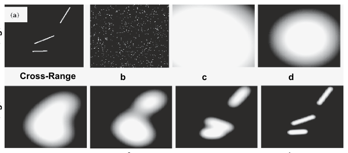
e g n a R e g n a R e g n a R e g n a R
Cự ly ngang
b c d e g n a R e g n a R e f g h e f g h
Hình 1 Phát hiện và theo dõi các vật thể dưới mức nhiễu nền bằng NMF: (a) các vị trí quỹ đạo thực; (b) dữ liệu thực tế có sẵn để phát hiện và theo dõi. Sự tiến hóa của mạng nơ-ron NMF được thúc đẩy bởi bản năng tri thức được thể hiện trong (c)–(h), trong đó (c) cho thấy mô hình ban đầu, bất định, và (h) cho thấy mô hình khi hội tụ sau 20 lần lặp. Mô hình hội tụ (h) khớp sát với sự thật (a). Cải thiện hiệu suất khoảng 100 lần về tỷ số tín hiệu trên nhiễu nền đạt được nhờ sự tiến hóa của logic động từ các mô hình mơ hồ và bất định sang sắc nét và chắc chắn thuộc về ba vật thể chuyển động. Trong dữ liệu này, tín hiệu phản hồi từ mục tiêu bị chôn vùi trong nhiễu nền, với các tín hiệu yếu hơn nhiễu nền (theo hệ số 2). Các hình 1(c)–1(h) minh họa sự tiến hóa của các mô hình NMF khi chúng thích nghi với dữ liệu qua các lần lặp. Hình 1(c) cho thấy mô hình mờ-mơ hồ ban đầu, trong khi Hình 1(h) cho thấy mô hình khi hội tụ ở 20 lần lặp. Giữa (c) và (h), mạng nơ-ron NMF tự động quyết định cần bao nhiêu thành phần mô hình để khớp dữ liệu, và đồng thời điều chỉnh các tham số mô hình, bao gồm các hệ số quỹ đạo mục tiêu. Có hai loại mô hình: một mô hình đồng nhất mô tả nhiễu nền (không được hiển thị), và các mô hình quỹ đạo tuyến tính với độ bất định lớn. Trong (c) và (d), mạng nơ-ron NMF khớp dữ liệu với một mô hình, và độ bất định giảm đi phần nào. Giữa (d) và (e), NMF quyết định rằng nó cần hai mô hình để “hiểu” nội dung của dữ liệu. Việc khớp với 2 quỹ đạo tiếp tục cho đến (f); giữa (f) và (g) một quỹ đạo thứ ba được thêm vào. Các lần lặp dừng lại ở (h), khi độ tương đồng ngừng tăng. Các quỹ đạo được phát hiện tương ứng chặt chẽ với sự thật (a). Trong trường hợp này, NMF đã phát hiện và theo dõi thành công cả ba vật thể và chỉ đòi hỏi 106 phép toán, trong khi việc áp dụng trực tiếp thuật toán theo dõi đa giả thuyết sẽ đòi hỏi HN∼101500 phép toán. Con số này, lớn hơn kích thước của Vũ trụ và quá lớn để tính toán, ngăn cản các thuật toán trước đây giải quyết bài toán này. NMF vượt qua khó khăn này đã đạt được sự cải thiện khoảng 100 lần về tỷ số tín hiệu trên nhiễu nền. Sự cải thiện này đạt được bằng cách sử dụng sự tiến hóa động từ các mô hình mơ hồ và bất định sang sắc nét và chắc chắn (thay vì dò xét qua các tổ hợp).
6 Ý thức, Vô thức và Sự Phân hóa
Động lực học NMF được mô tả ở trên thỏa mãn bản năng tri thức và cải thiện tri thức bằng cách tiến hóa các mô hình mơ hồ, bất định hướng tới các mô hình sắc nét, giúp tối đa hóa độ tương đồng giữa mô hình và dữ liệu. Quá trình tích lũy tri thức này, được thúc đẩy bởi bản năng tri thức, diễn ra trong tâm trí của mỗi thành viên trong một xã hội và cấu thành một khía cạnh thiết yếu của sự tiến hóa văn hóa. Các mô hình mơ hồ và bất định ít tiếp cận được với ý thức hơn, trong khi các mô hình sắc nét và cụ thể mang tính ý thức cao hơn.
Hầu hết các hoạt động của tâm trí không thể tiếp cận được với ý thức. Chúng ta chắc chắn biết rằng các xung động phát lửa và kết nối thần kinh không thể được tri giác một cách có ý thức. Ở nền tảng của tâm trí có những quá trình vật chất trong não bộ không thể tiếp cận với ý thức. Jung gợi ý rằng các khái niệm có ý thức được tâm trí phát triển dựa trên các cấu trúc di truyền về mặt gen, các nguyên mẫu (archetypes), vốn không thể tiếp cận với ý thức [29, 30]. Grossberg [4] gợi ý rằng chỉ những tín hiệu và mô hình đạt được trạng thái cộng hưởng (tức là tín hiệu khớp với mô hình) mới có thể chạm tới ý thức. Điều này được Taylor [31] trình bày chi tiết hơn; ông liên hệ ý thức với việc tâm trí là một cơ chế kiểm soát của tâm trí và cơ thể. Một phần của cơ chế này là một mô hình dự đoán. Khi các dự đoán của mô hình này khác với quan sát giác quan, sự khác biệt này có thể đạt đến trạng thái cộng hưởng, điều mà chúng ta ý thức được. Tóm lại các phân tích trên, các cơ chế tâm trí, được mô tả trong NMF bằng logic động và các mô hình mờ, không thể tiếp cận với ý thức. Kết quả cuối cùng của các quá trình logic động, các trạng thái cộng hưởng được đặc trưng bởi các mô hình sắc nét và các tín hiệu tương ứng thì có thể tiếp cận với ý thức. Sự gia tăng tri thức và cải thiện nhận thức dẫn đến ý thức tốt hơn, đa dạng hơn, phân hóa hơn.
Sự tiến hóa của nhận thức và ý thức đã diễn ra như thế nào? Trạng thái ban đầu của ý thức là gì: một sự thống nhất chưa phân hóa hay một “sự hỗn độn ầm ĩ, nhộn nhạo” [32]? Hoặc, hãy lùi lại một bước trong sự phát triển tiến hóa và hỏi, trạng thái ban đầu của tâm thức tiền-ý thức là gì? Hoặc, hãy lùi xa hơn nữa về phía sự tiến hóa của các hệ thống giác quan và tri giác. Tại sao sự tiến hóa lại tạo ra các cơ quan cảm giác? Rõ ràng, một thứ đắt đỏ như cơ quan cảm giác là cần thiết để đạt được các mục tiêu cụ thể: cảm nhận môi trường nhằm mục đích hoàn thành các nhiệm vụ cụ thể. Sự tiến hóa của các sinh vật có cơ quan cảm giác đi đôi với khả năng sử dụng dữ liệu giác quan.
Trong quá trình tiến hóa, các khả năng giác quan xuất hiện cùng với các khả năng tri giác. Một sự tiến hóa tự nhiên của các khả năng giác quan không thể dẫn đến một “sự hỗn độn ầm ĩ, nhộn nhạo”, mà phải dẫn đến những khả năng có lợi về mặt tiến hóa để tránh nguy hiểm, kiếm thức ăn, v.v. Các khả năng tri giác nguyên thủy (quan sát thấy ở động vật nguyên thủy) chỉ giới hạn ở một vài loại đối tượng-khái niệm (sáng-tối, ấm-lạnh, ăn được-không ăn được, nguy hiểm-hấp dẫn...) và được “nối dây” trực tiếp với các hành động thích hợp (các chương của Walter Freeman và Robert Kozma trong cuốn sách này gọi trí thông minh nguyên thủy này là hỗn loạn ít chiều; hỗn loạn nhiều chiều xuất hiện cùng trí thông minh cao hơn). Khi các chức năng tri giác tiến hóa xa hơn, vượt ra ngoài các hành động tức thời, đó là thông qua việc phát triển các khái niệm-mô hình nội tại phức tạp, hợp nhất các mô hình-vật thể đơn giản hơn thành một mô hình thống nhất và linh hoạt về thế giới. Chỉ đến thời điểm sở hữu các mô hình-khái niệm phân hóa tương đối phức tạp bao gồm một số lượng lớn các mô hình con, một hệ thống thông minh mới có thể trải qua một “sự hỗn độn ầm ĩ, nhộn nhạo” nếu nó đối mặt với một loại môi trường mới. Một hệ thống nguyên thủy đơn giản là không có khả năng tri giác sự hỗn độn: Nó chỉ tri giác những ‘thứ’ mà nó có mô hình-khái niệm tương ứng. Nếu các tri giác của nó không tương ứng với thực tế, nó không trải qua sự hỗn độn, mà đơn giản là ngừng tồn tại. Khi một đứa trẻ chào đời, nó trải qua một sự thay đổi môi trường to lớn, rất có thể là không có nhiều sự hỗn độn có ý thức. Trạng thái nguyên thủy của ý thức là sự thống nhất chưa phân hóa. Nó sở hữu một phương thức duy nhất của Bản ngã–Thế giới (SelfWorld) nguyên sơ chưa phân hóa.
Sự thống nhất ban đầu của tâm thức đã giới hạn các khả năng của tâm trí, và sự phát triển tiếp theo diễn ra thông qua sự phân hóa các chức năng hay phương thức tâm thức (khái niệm, cảm xúc, hành vi); chúng tiếp tục được phân hóa thành nhiều mô hình-khái niệm, v.v. Điều này đẩy nhanh quá trình thích nghi. Sự phân hóa của ý thức bắt đầu từ hàng triệu năm trước. Nó tăng tốc dữ dội trong quá khứ gần đây của chúng ta, và vẫn tiếp tục ngày nay [29, 33, 34].
Trong văn học tiền-khoa học về các cơ chế của tâm trí có một ý tưởng phổ biến về homunculus (người tí hon), tức là một tâm trí nhỏ bên trong tâm trí của chúng ta giúp tri giác các tri giác của chúng ta và đưa chúng đến với tâm trí chúng ta. Quan điểm ngây thơ này gần một cách đáng kinh ngạc với lời giải thích khoa học thực sự. Sự khác biệt cơ bản là lời giải thích khoa học không cần đến một chuỗi vô tận các homunculus bên trong homunculus. Thay vào đó, có một hệ thống thứ bậc các mô hình tâm trí với các khía cạnh ý thức và vô thức của chúng. Khía cạnh phân hóa có ý thức của các mô hình giảm dần ở các cấp độ cao hơn trong hệ thống thứ bậc, và chúng trở nên bất định và mờ hơn. Ở đỉnh của hệ thống thứ bậc là những mô hình tổng quát và quan trọng nhất về ý nghĩa sự tồn tại của chúng ta (mà chúng ta sẽ thảo luận sau); các mô hình này phần lớn là vô thức.
Những tri giác nội tại của chúng ta về ý thức là nhờ vào mô hình Bản ngã (Ego-model). Mô hình này về cơ bản bao gồm, hoặc có quyền truy cập vào các phần mô hình khác có sẵn cho ý thức. Nó là cơ chế tâm trí của cái từng được gọi là “homunculus”. Nó “tri giác” các phần có ý thức sắc nét của các mô hình khác, theo cùng cách mà các mô hình tri giác “tri giác” các vật thể trong thế giới. Các tính chất của ý thức như chúng ta trải nghiệm, chẳng hạn như tính liên tục và tính đồng nhất của ý thức, là nhờ các tính chất của mô hình Bản ngã, [10]. Những tính chất về tính thống nhất, tính liên tục và tính đồng nhất này là lý do để giả định sự tồn tại của mô hình này. Người ta biết gì về mô hình “ý thức” này? Kể từ Freud, một phức hợp nhất định các chức năng tâm lý đã được gọi là Bản ngã (Ego). Jung coi Bản ngã được dựa trên một mô hình hay nguyên mẫu tổng quát hơn là Tự ngã (Self). Các nguyên mẫu Jung là những cấu trúc (mô hình) tâm thức có nguồn gốc nguyên thủy, phần lớn không thể tiếp cận với ý thức, nhưng quyết định cấu trúc tâm thức của chúng ta. Theo cách này, các nguyên mẫu tương tự như các mô hình khác, ví dụ, các trường tiếp nhận của võng mạc không được tri giác một cách có ý thức, nhưng quyết định cấu trúc của tri giác thị giác. Nguyên mẫu Tự ngã quyết định tri giác chủ quan-hiện tượng học của chúng ta về chính mình, và ngoài ra, cấu trúc nên tâm thức của chúng ta theo nhiều cách khác nhau, vốn còn lâu mới được hiểu hoàn toàn. Một tính chất hiện tượng học quan trọng của Tự ngã là tri giác về tính duy nhất và không thể phân chia (do đó mà có từ cá nhân - individual).
Theo Jung, các khái niệm có ý thức của tâm trí được học trên cơ sở các cấu trúc tâm thức vô thức bẩm sinh, các nguyên mẫu, [29]. Khoa học đương đại thường đồng nhất cơ chế của các khái niệm với các biểu tượng nội tại về sự vật, mối quan hệ của chúng, tình huống, v.v. Nguồn gốc của các khái niệm-biểu tượng nội tại xuất phát từ hai nguồn, các nguyên mẫu bẩm sinh và các mô hình được tạo ra về mặt văn hóa truyền tải qua ngôn ngữ [12].
Trong các phần trước, chúng tôi đã mô tả logic động vận hành ở một cấp độ thứ bậc đơn lẻ của tâm trí. Nó tiến hóa các khái niệm-mô hình mơ hồ và vô thức thành sắc nét hơn và có ý thức hơn. Về mặt tâm lý học, quá trình này được Carl Jung gọi là sự phân hóa nội dung tâm thức [29].
7 Hệ thống Thứ bậc và Sự Tổng hợp
Trong các phần trước, chúng tôi đã mô tả một cấp độ xử lý đơn lẻ trong một hệ thống NMF phân cấp. Như đã đề cập, tâm trí được tổ chức theo một hệ thống thứ bậc gần đúng. Chẳng hạn, trong vỏ não thị giác, hệ thống thứ bậc gần đúng này đã được nghiên cứu kỹ lưỡng [4, 5]. Không phải bất kỳ hai mô hình nào cũng nằm trong mối quan hệ thứ bậc (trên-dưới hoặc cùng cấp, tổng quát hơn hoặc ít hơn, v.v.). Ngoài ra, các vòng phản hồi giữa các cấp độ cao hơn và thấp hơn mâu thuẫn với trật tự thứ bậc nghiêm ngặt. Tuy nhiên, để đơn giản, chúng ta sẽ nói về tâm trí như một hệ thống thứ bậc (xét về độ tổng quát của các mô hình và hướng của các luồng tín hiệu từ dưới lên và từ trên xuống). Ở mỗi cấp độ của hệ thống thứ bậc có các tín hiệu đầu vào từ các cấp độ thấp hơn, các mô hình, các độ đo tương đồng (2), các cảm xúc (là những thay đổi về độ tương đồng) và các hành động. Các hành động bao gồm sự thích nghi, tức là hành vi thỏa mãn bản năng tri thức. Sự thích nghi này tương ứng với việc tối đa hóa độ tương đồng, như được mô tả bằng toán học bởi các phương trình (3) đến (6). Đầu vào của mỗi cấp độ là một tập hợp các tín hiệu X(n), hay theo thuật ngữ thần kinh, một trường đầu vào của các kích hoạt nơ-ron. Kết quả của các hoạt động logic động ở một cấp độ nhất định là các mô hình được kích hoạt, hay các khái niệm h được nhận dạng trong các tín hiệu đầu vào n; các mô hình này cùng với các tín hiệu bản năng và cảm xúc tương ứng có thể kích hoạt các mô hình hành vi và tạo ra hành vi ở cấp độ này.
Các mô hình được kích hoạt khởi phát các hành động khác. Chúng đóng vai trò là tín hiệu đầu vào cho cấp độ xử lý tiếp theo, nơi các mô hình-khái niệm tổng quát hơn được nhận dạng hoặc tạo ra. Các tín hiệu đầu ra từ một cấp độ nhất định, đóng vai trò là đầu vào cho cấp độ tiếp theo, có thể là các tín hiệu kích hoạt mô hình, ah, được định nghĩa là
ah = f(h|n). (8)
n∈N
Như đã định nghĩa trước đây trong (3), f(h|n) có thể được diễn giải là xác suất tín hiệu n đến từ vật thể h; và ah được diễn giải là tổng kích hoạt của khái niệm h từ tất cả các tín hiệu. Các tín hiệu đầu ra cũng có thể bao gồm các tham số mô hình. Hệ thống NMF phân cấp được minh họa trong Hình 2. Trong hệ thống thứ bậc của tâm trí, mỗi mô hình-khái niệm tìm thấy ý nghĩa và mục đích tinh thần của nó ở một cấp độ cao hơn (ngoài các mục đích khác). Chẳng hạn, hãy xem xét một mô hình-khái niệm “chiếc ghế”. Nó có một mục đích “hành vi” là khởi phát hành vi ngồi (nếu cơ thể đòi hỏi việc ngồi), đây là mục đích “thể xác” ở cùng cấp độ thứ bậc. Ngoài ra, “chiếc ghế” còn có một mục đích “thuần túy tinh thần” ở một cấp độ cao hơn trong hệ thống thứ bậc, một mục đích giúp nhận dạng một khái niệm tổng quát hơn, chẳng hạn như “phòng hòa nhạc”, mà mô hình của nó chứa các hàng ghế.
Độ tương đồng
Hành động/Thích nghi
Các mô hình
Hành động/Thích nghi Độ tương đồng
Các mô hình
Hình 2 Hệ thống NMF phân cấp. Ở mỗi cấp độ của một hệ thống thứ bậc đều có các mô hình, độ đo tương đồng và hành động (bao gồm thích nghi, tối đa hóa bản năng tri thức - độ tương đồng). Mức độ cao của các độ đo tương đồng thành phần tương ứng với các khái niệm được nhận dạng ở một cấp độ nhất định. Các kích hoạt khái niệm là tín hiệu đầu ra ở cấp độ này và chúng trở thành tín hiệu đầu vào cho cấp độ tiếp theo, truyền tri thức lên trên hệ thống thứ bậc. Mỗi mô hình-khái niệm tìm thấy ý nghĩa và mục đích tinh thần của nó ở một cấp độ cao hơn
Các mô hình ở các cấp độ cao hơn trong hệ thống thứ bậc mang tính tổng quát hơn các mô hình ở các cấp độ thấp hơn. Chẳng hạn, nếu chúng ta xét hệ thống thị giác, các mô hình ở tận cùng dưới của hệ thống thứ bậc tương ứng (một cách đại khái) với các tế bào hạch võng mạc và thực hiện các chức năng tương tự; chúng phát hiện các đặc trưng đơn giản trong trường thị giác. Ở các cấp độ cao hơn, các mô hình tương ứng với các chức năng được thực hiện tại V1 và cao hơn nữa trong vỏ não thị giác, tức là phát hiện các đặc trưng phức tạp hơn như cạnh tương phản, hướng của chúng, các chuyển động sơ cấp, v.v. Các cấu trúc và mô hình thứ bậc thị giác đã được nghiên cứu chi tiết [4, 5], và các mô hình này có thể được sử dụng trong NMF. Ở các cấp độ nhận thức cao hơn nữa, các mô hình tương ứng với các vật thể, với các mối quan hệ giữa các vật thể, với các tình huống, và các mối quan hệ giữa các tình huống, v.v. [10]. Ở các cấp độ cao hơn nữa, các mô hình thậm chí còn tổng quát hơn cư ngụ, tương ứng với các khái niệm và mối quan hệ văn hóa phức tạp như gia đình, tình yêu, tình bạn, và các khái niệm trừu tượng như luật pháp, tính duy lý, v.v. Nội dung của các mô hình này tương ứng với kho tàng tri thức văn hóa, bao gồm các tác phẩm của Shakespeare và Tolstoy. Các cơ chế phát triển của những mô hình này được xem xét trong phần tiếp theo. Theo phân tích của Kant [35], ở đỉnh của hệ thống thứ bậc của tâm trí là các mô hình về ý nghĩa và mục đích tồn tại của chúng ta, hợp nhất tri thức của chúng ta, và các mô hình hành vi tương ứng nhằm đạt được ý nghĩa này. Chương của Robert Kozma trong cuốn sách này xem xét một kiến trúc thần kinh liên quan, K-sets, mô tả một hệ thống thứ bậc của tâm trí.
Thỉnh thoảng, như đã thảo luận, một hệ thống hình thành một khái niệm mới hoặc loại bỏ một khái niệm cũ. Nhiều thuật toán nhận dạng mẫu và mạng nơ-ron nhân tạo thiếu khả năng quan trọng này của tâm trí. Nó có thể được mô hình hóa bằng toán học theo nhiều cách; lý thuyết cộng hưởng thích nghi (ART) sử dụng ngưỡng cảnh giác [36], tương tự như một ngưỡng cho độ đo tương đồng [9]. Một cơ chế hơi khác của NMF hoạt động như sau. Ở mọi cấp độ, hệ thống luôn giữ một nguồn dự trữ các mô hình-khái niệm không hoạt động mơ hồ (mờ) (với hiệp phương sai lớn, C, 7). Chúng không hoạt động ở chỗ các tham số của chúng không được điều chỉnh theo dữ liệu; do đó độ tương đồng của chúng với các tín hiệu là thấp. Tuy nhiên, do độ mờ (hiệp phương sai) lớn nên các độ tương đồng không hoàn toàn bằng không. Khi một tín hiệu mới không khớp tốt vào bất kỳ mô hình đang hoạt động nào, độ tương đồng của nó với các mô hình không hoạt động tự động tăng lên (bởi vì thứ nhất, mọi mảnh dữ liệu đều được tính đến và thứ hai, các mô hình không hoạt động là mờ-mơ hồ và có tiềm năng “tóm lấy” mọi tín hiệu không khớp vào các mô hình đang hoạt động cụ thể hơn, ít mờ hơn). Khi tín hiệu kích hoạt ah của (8) đối với một mô hình không hoạt động, h, vượt quá một ngưỡng nhất định, mô hình đó được kích hoạt. Tương tự, khi tín hiệu kích hoạt cho một mô hình cụ thể giảm xuống dưới một ngưỡng, mô hình đó bị ngừng kích hoạt. Các ngưỡng kích hoạt và ngừng kích hoạt thường được thiết lập dựa trên thông tin tồn tại ở một cấp độ thứ bậc cao hơn (thông tin tiên nghiệm, tài nguyên hệ thống, số lượng mô hình được kích hoạt thuộc các loại khác nhau, v.v.). Các tín hiệu kích hoạt cho các mô hình đang hoạt động ở một cấp độ cụ thể {ah} tạo thành một “trường nơ-ron”, đóng vai trò là tín hiệu đầu vào cho cấp độ tiếp theo, nơi các khái niệm trừu tượng hơn và tổng quát hơn được hình thành, và cứ thế dọc theo hệ thống thứ bậc hướng tới các mô hình cao hơn về ý nghĩa và mục đích.
Các mô hình ở cấp độ cao hơn đóng vai trò như “đôi mắt” tri giác các mô hình ở cấp độ thấp hơn. Mỗi cấp độ cao hơn trong hệ thống thứ bậc là “tâm trí của một homunculus” tri giác ý nghĩa của những gì đã được nhận dạng ở cấp độ thấp hơn. Như đã đề cập, điều này không dẫn đến một sự thoái lui vô tận, bởi vì các mô hình cấp cao hơn tổng quát hơn, bất định hơn, và mơ hồ và mờ hơn.
Hãy lưu ý rằng trong cấu trúc thứ bậc (Hình 2), các mô hình-khái niệm ở cấp độ đáy của hệ thống thứ bậc tương ứng với các vật thể được tri giác trực tiếp trong thế giới. Các cơ chế tri giác ở một mức độ đáng kể được quyết định bởi các cơ quan cảm giác đã tiến hóa qua hàng tỷ năm. Các mô hình ở cấp độ này phần lớn là kết quả của sự tiến hóa và ở mức độ ít hơn là kết quả của các kiến tạo văn hóa. Các mô hình này được “neo giữ” (grounded) trong các vật thể “thực” tồn tại ở thế giới xung quanh. Chẳng hạn, các vật thể “thức ăn” được tri giác không chỉ bởi tâm trí con người, mà còn bởi tất cả các loài động vật tiền-người.
Điều này không đúng đối với các mô hình-khái niệm ở các cấp độ cao hơn của hệ thống thứ bậc. Những mô hình trừu tượng và tổng quát hơn này là các kiến tạo văn hóa (ở một mức độ nào đó). Chúng không thể được tri giác trực tiếp trong thế giới xung quanh (ví dụ, các mô hình-khái niệm về “tính duy lý”, hay “ý nghĩa và mục đích cuộc sống”). Những khái niệm này không thể tự nhiên xuất hiện trong tâm trí như một sự kết hợp hữu ích nào đó của các khái niệm đơn giản hơn. Bởi vì có một số lượng khổng lồ các tổ hợp của các khái niệm đơn giản hơn, một cá nhân con người không có đủ thời gian trong cuộc đời mình để tích lũy đủ bằng chứng kinh nghiệm nhằm kiểm chứng tính hữu ích của các tổ hợp này. Những khái niệm cấp cao hơn này tích lũy trong các nền văn hóa nhờ vào ngôn ngữ. Một tâm trí cá nhân được đảm bảo về tính hữu ích của một số mô hình-khái niệm cấp cao nhất định bởi vì người đó có thể nói về chúng với các thành viên khác của xã hội (với một mức độ thấu hiểu lẫn nhau). Các khái niệm tiếp thu từ ngôn ngữ không tự động liên kết với các sự kiện hay tổ hợp vật thể trong thế giới xung quanh. Chẳng hạn, mọi đứa trẻ năm tuổi đều biết về “người tốt” và “kẻ xấu”. Tuy nhiên, ngay cả ở tuổi 40 hay 70, không ai có thể tuyên bố rằng mình có thể sử dụng hoàn hảo các mô hình này để hiểu thế giới xung quanh. Các triết gia và nhà thần học đã tranh luận về ý nghĩa của cái thiện và cái ác suốt hàng nghìn năm, và những cuộc tranh luận này có khả năng sẽ tiếp tục mãi mãi. Nghiên cứu về các cơ chế liên kết các khái niệm ngôn ngữ với các mô hình-khái niệm của nhận thức chỉ mới bắt đầu [10, 12, 34, 37, 38].
Cấu trúc thứ bậc của tâm trí không phải là một cơ chế tách biệt, độc lập với bản năng tri thức. Các cơ chế thần kinh và toán học chi tiết kết nối hai thứ này vẫn là vấn đề của nghiên cứu đang diễn ra và trong tương lai [10, 12, 34, 37]. Ở đây chúng tôi phác thảo một số nguyên lý cơ bản về hoạt động của bản năng tri thức trong hệ thống thứ bậc tâm trí. Các phần trước đã mô tả cơ chế phân hóa, tạo ra các mô hình đa dạng và chi tiết, hoạt động ở một cấp độ thứ bậc đơn lẻ. Ở một cấp độ đơn lẻ, ý nghĩa của mỗi mô hình là thỏa mãn bản năng tri thức bằng cách tìm kiếm các mẫu trong dữ liệu đầu vào, các tín hiệu từ dưới lên, và thích nghi với các mẫu này. Cũng có những ý nghĩa và mục đích liên quan đến các bản năng thể xác: chẳng hạn, các vật thể thức ăn có thể được dùng để thỏa mãn nhu cầu về thực phẩm và ham muốn ăn uống. Trong chương này, chúng tôi giới hạn thảo luận của mình vào các nhu cầu tinh thần, vào bản năng tri thức.
Chúng ta đã thảo luận rằng các mô hình thu được những ý nghĩa và mục đích sâu sắc hơn ở các cấp độ thứ bậc cao hơn. Bản năng tri thức hoạt động ở các cấp độ cao hơn và các cảm xúc thẩm mỹ ở các cấp độ cao hơn được tri giác một cách có ý thức hơn so với ở các cấp độ thấp hơn. Cảm giác thẩm mỹ thuần túy về sự hài hòa giữa tri thức của chúng ta và thế giới xung quanh ở các cấp độ thấp hơn nằm dưới ngưỡng ghi nhận của ý thức trong tâm trí chúng ta. Chúng ta không cảm thấy nhiều niềm vui từ việc hiểu các đồ vật đơn giản xung quanh mình. Nhưng chúng ta thực sự tận hưởng việc giải quyết các vấn đề phức tạp đòi hỏi nhiều thời gian và công sức. Cảm giác hài hòa về mặt cảm xúc này từ việc cải thiện-tạo ra các mô hình-khái niệm cấp cao liên quan đến thực tế là các khái niệm cấp cao hợp nhất nhiều khái niệm cấp thấp hơn và làm tăng ý nghĩa và mục đích tổng thể của tri thức đa dạng của chúng ta. Jung gọi đây là sự tổng hợp (synthesis), điều mà ông nhấn mạnh là thiết yếu cho sức khỏe tâm lý.
Sự tổng hợp, cảm giác về ý nghĩa và mục đích tổng thể của tri thức, liên quan đến ý nghĩa và mục đích cuộc sống, thứ mà chúng ta tri giác ở các cấp độ cao nhất của hệ thống thứ bậc tâm trí. Ở những cấp độ cao đó, các mô hình về bản chất là mơ hồ và chưa phân hóa, không chỉ về mặt nội dung khái niệm, mà còn về mặt phân hóa giữa khái niệm và cảm xúc. Ở các cấp độ cao nhất của tâm trí, hai thứ này không hoàn toàn tách rời nhau. Tính không thể tách rời này, thứ mà đôi khi chúng ta cảm nhận như ý nghĩa và mục đích tồn tại của mình, rất quan trọng đối với sự tiến hóa và sinh tồn. Nếu hệ thống thứ bậc tri thức không hỗ trợ cảm giác này, toàn bộ hệ thống thứ bậc sẽ sụp đổ, điều vốn là một cơ chế quan trọng (hoặc có thể là cơ chế quan trọng nhất) dẫn đến sự hủy diệt của các nền văn minh cổ đại. Bản năng tri thức đòi hỏi sự thỏa mãn ở các cấp độ thấp nhất là hiểu các sự vật cụ thể xung quanh, và cả ở các cấp độ cao nhất của hệ thống thứ bậc tâm trí, hiểu toàn bộ tri thức trong tính thống nhất của nó, thứ mà chúng ta cảm nhận như ý nghĩa và mục đích tồn tại của mình. Đây là mặt kia của bản năng tri thức, một cơ chế của sự tổng hợp [29].
8 Động lực học Tiến hóa của Ý thức và Các Nền văn hóa
8.1 Động lực học Thần kinh của Sự Phân hóa và Sự Tổng hợp
Mỗi tâm trí cá nhân chỉ có kinh nghiệm hữu hạn trong suốt cuộc đời. Do đó, một số lượng hữu hạn các mô hình-khái niệm là đủ để thỏa mãn bản năng tri thức. Người ta hiểu rõ trong nhiều ứng dụng kỹ thuật rằng việc ước lượng một số lượng lớn các mô hình từ dữ liệu hạn chế là khó khăn và không đáng tin cậy; nhiều nghiệm khác nhau đều khả dĩ, không cái nào tốt hơn cái nào. Về mặt tâm lý học, sự đầu tư cảm xúc trung bình vào mỗi khái niệm giảm đi khi số lượng khái niệm tăng lên, và động lực phân hóa và tạo thêm khái niệm lắng xuống. Sự đầu tư cảm xúc vào một khái niệm là thước đo ý nghĩa và mục đích của khái niệm này trong hệ thống tâm trí, tức là thước đo của sự tổng hợp. Như vậy, động lực phân hóa đòi hỏi sự tổng hợp. Sự tổng hợp nhiều hơn dẫn đến sự phân hóa nhanh hơn, trong khi sự phân hóa nhiều hơn làm giảm sự tổng hợp.
Trong một hệ thống tâm trí phân cấp, ở mỗi cấp độ, một số khái niệm được sử dụng thường xuyên hơn những khái niệm khác, chúng thu nhận nhiều ý nghĩa, dẫn đến một quá trình ngược lại với sự phân hóa. Những khái niệm tổng quát hơn này “di chuyển” lên các cấp độ thứ bậc cao hơn. Những khái niệm tổng quát hơn, cấp cao hơn này được đầu tư nhiều cảm xúc hơn. Đây là một quá trình gia tăng sự tổng hợp.
Một khía cạnh khác của sự tổng hợp liên quan đến ngôn ngữ. Hầu hết các khái niệm trong tâm trí cá nhân được tiếp thu với sự trợ giúp của ngôn ngữ. Tương tác giữa ngôn ngữ và nhận thức là một lĩnh vực nghiên cứu sôi nổi (xem [12] để biết động lực học thần kinh của tương tác này và thêm tài liệu tham khảo). Ở đây chúng tôi không đi sâu vào chi tiết của tương tác này, chúng tôi chỉ nhấn mạnh những điểm sau. Thứ nhất, việc tạo ra các khái niệm mới bằng cách phân hóa các nguyên mẫu bẩm sinh là một quá trình chậm chạp, mất hàng thiên niên kỷ; kết quả của quá trình này, các khái niệm mới, được lưu trữ trong ngôn ngữ, thứ truyền tải chúng từ thế hệ này sang thế hệ khác. Thứ hai, một tâm trí mới sinh tiếp nhận kho tàng các khái niệm phân hóa cao này ở dạng “làm sẵn”, tức là không có kinh nghiệm sống thực tế, không có sự thấu hiểu và phân hóa các khái niệm nhận thức đặc trưng cho thế giới; một đứa trẻ ở tuổi lên 5 hoặc 7 có thể nói về phần lớn nội dung văn hóa hiện có, nhưng sẽ mất cả phần đời còn lại để hiểu cách sử dụng tri thức này. Điều này liên quan trực tiếp đến khía cạnh thứ ba của tương tác ngôn ngữ-nhận thức: các khái niệm-mô hình ngôn ngữ không tương đương với các khái niệm-mô hình nhận thức. Các mô hình ngôn ngữ phục vụ cho việc hiểu ngôn ngữ, không phải thế giới xung quanh. Các mô hình nhận thức phục vụ cho việc hiểu thế giới được phát triển trong tâm trí cá nhân với sự trợ giúp của ngôn ngữ. Sự phát triển các mô hình nhận thức từ các mô hình ngôn ngữ, sự kết nối giữa ngôn ngữ và nhận thức là một khía cạnh quan trọng của sự tổng hợp.
Hãy dừng lại một chút ở khía cạnh này của sự tổng hợp. Việc học ngôn ngữ được thúc đẩy bởi bản năng ngôn ngữ [39]; nó liên quan đến các cảm xúc thẩm mỹ; một đứa trẻ thích học ngôn ngữ. Tuy nhiên, động lực này và các cảm xúc liên quan lắng xuống sau khoảng 7 tuổi, sau khi ngôn ngữ phần lớn đã được học xong. Trong suốt phần đời còn lại, bản năng tri thức thúc đẩy tâm trí tạo ra và cải thiện các mô hình nhận thức trên cơ sở các mô hình ngôn ngữ [12]. Quá trình này liên quan đến các cảm xúc thẩm mỹ gắn với việc học các khái niệm nhận thức. Một lần nữa, sự tổng hợp liên quan đến cảm xúc.
Con người khác nhau ở khả năng kết nối ngôn ngữ và nhận thức. Nhiều người giỏi nói năng mà không hiểu đầy đủ các khái niệm ngôn ngữ của họ liên quan đến đời thực như thế nào. Về bất kỳ chủ đề nào, họ có thể nói theo cách này hay cách khác mà không cần nhiều sự đầu tư cảm xúc. Sự tổng hợp ngôn ngữ và nhận thức đòi hỏi sự tổng hợp các nội dung cảm xúc và khái niệm của tâm thức.
Sự tổng hợp của cảm xúc và khái niệm cũng liên quan đến hệ thống thứ bậc. Các khái niệm cấp cao hơn thì tổng quát hơn và mơ hồ hơn. Chúng ít phân hóa hơn không chỉ ở độ chính xác về mặt khái niệm, mà nội dung khái niệm và cảm xúc của chúng cũng ít phân hóa hơn. Các khái niệm cấp cao quan trọng mang tính cảm xúc nhiều hơn các khái niệm cấp thấp, tầm thường, hằng ngày. Chúng cũng ít mang tính ý thức hơn (nhắc lại, sự phân hóa nhiều hơn dẫn đến nội dung có ý thức nhiều hơn). Do đó, sự tổng hợp kết nối ngôn ngữ và nhận thức, khái niệm và cảm xúc, ý thức và vô thức. Điều này trái ngược với sự phân hóa; tất cả chúng ta đều có những khái niệm giá trị cao (liên quan đến đời sống gia đình, hoặc lý tưởng chính trị, hoặc tôn giáo) quá quan trọng đối với chúng ta và quá giàu cảm xúc, đến nỗi chúng ta không thể “phân tích một cách lạnh lùng”, không thể phân hóa chúng. Mức độ tổng hợp “quá cao” đầu tư vào các khái niệm “quá nhiều” nội dung giá trị-cảm xúc, khiến cho sự phân hóa bị bóp nghẹt.
Tóm lại, sự phân hóa và sự tổng hợp nằm trong những mối quan hệ phức tạp, vừa cộng sinh vừa đối kháng. Sự tổng hợp dẫn đến cảm hứng tinh thần, đến hành vi sáng tạo tích cực dẫn đến sự phân hóa nhanh chóng, đến sự sáng tạo tri thức, đến khoa học và công nghệ. Đồng thời, mức độ tổng hợp “quá” cao lại bóp nghẹt sự phân hóa. Sự tổng hợp liên quan đến cấu trúc thứ bậc của tri thức và giá trị. Đồng thời, mức độ phân hóa cao làm giảm giá trị cảm xúc tâm lý của từng khái niệm riêng lẻ, và phá hủy sự tổng hợp, vốn là nền tảng cho sự phân hóa. Trong các Mục 3, 4 và 5, chúng tôi đã trình bày một mô hình toán học NMF / DL về động lực học thần kinh của sự phân hóa. Hiện tại chúng ta còn thiếu mức độ chi tiết tương tự về động lực học thần kinh của sự tổng hợp. Trong phần này, chúng tôi thực hiện những bước đầu tiên hướng tới việc phát triển mô hình tiến hóa toán học về sự tương tác giữa phân hóa và tổng hợp. Cả hai cơ chế đều hoạt động trong tâm trí của từng cá nhân. Các mô hình chi tiết trong tương lai sẽ phát triển các cơ chế thần kinh của sự tổng hợp, sẽ tính đến các cơ chế của nhận thức, cảm xúc và ngôn ngữ, và sẽ nghiên cứu các hệ thống đa tác tử, trong đó mỗi tác tử sở hữu động lực học thần kinh phức tạp của sự tương tác giữa phân hóa và tổng hợp. Chúng tôi gọi cách tiếp cận như vậy là vi động lực học thần kinh. Vì thiếu các mô hình vi động lực học này, trong phần này chúng tôi phát triển các mô hình đơn giản hơn được lấy trung bình trên quần thể.
8.2 Vĩ động lực học
Như một bước đầu tiên, ở đây chúng tôi phát triển các mô hình động lực học tiến hóa đơn giản hóa tương tự như các lý thuyết trường trung bình trong vật lý. Các mô hình này mô tả các cơ chế thần kinh của sự phân hóa, sự tổng hợp và hệ thống thứ bậc bằng cách sử dụng các độ đo lấy trung bình trên quần thể các tác tử tương tác, trừu tượng hóa khỏi các chi tiết của cơ chế cảm xúc và ngôn ngữ. Một thách thức trong tương lai sẽ là liên kết các mô hình này với các mô hình động lực học phi tuyến được thảo luận trong cuốn sách này ở các chương của Walter Freeman và Robert Kozma. Chúng tôi gọi phương pháp lấy trung bình này là “vĩ động lực học thần kinh”. Chúng tôi bắt đầu với các phương trình động lực học đơn giản nhất lấy cảm hứng từ động lực học thần kinh của sự phân hóa và tổng hợp, thảo luận các tính chất của chúng, và đánh giá những sửa đổi cần thiết để phát triển một mô hình thực tế “tối thiểu”. Kết quả của phân tích này có thể được sử dụng trong các nghiên cứu văn hóa xã hội học để hiểu quá khứ, hiện tại và tương lai của các nền văn hóa, các hiện tượng văn hóa mới nổi, và để cải thiện các mô hình hiện tại và tương lai.
Chúng tôi đặc trưng cho tri thức tích lũy, hay sự phân hóa, bằng một đại lượng trung bình “trường trung bình”, D, đại diện cho số lượng trung bình các mô hình-khái niệm được sử dụng trong một quần thể. Khi được xét riêng lẻ, tách biệt khỏi các cơ chế khác thúc đẩy động lực học thần kinh, phương trình động lực học đơn giản nhất là dD/dt = a. (9)
Phương trình này mô tả sự tăng trưởng tuyến tính về độ phức tạp của văn hóa được đo bằng tri thức tích lũy, hay sự phân hóa, D. Bước tiếp theo hướng tới mô hình hóa thực tế hơn tính đến thực tế là sự phân hóa liên quan đến việc phát triển các mô hình mới, chi tiết hơn từ các mô hình cũ. Do đó, tốc độ phân hóa tỷ lệ thuận với tri thức tích lũy, tức là, dD/dt = aD. (10)
Ở đây, a là một hằng số. Nghiệm của phương trình này mô tả sự tăng trưởng theo hàm mũ của tri thức, tức là,
D(t) = D0exp(at). (11)
Cả hai phương trình trên có thể được coi là “thực tế tối thiểu” trong ngắn hạn. Tuy nhiên, trong dài hạn, chúng quá lạc quan, quá đơn giản và không thực tế.
Chúng ta biết rằng sự tăng trưởng liên tục về tri thức có thể tồn tại ở một số nền văn hóa trong những khoảng thời gian hữu hạn, tuy nhiên đôi khi sự tăng trưởng về tri thức và sự đa dạng khái niệm bị gián đoạn và nền văn hóa tan rã hoặc trì trệ. Điều này đúng với mọi nền văn hóa đã biết, ví dụ, văn hóa phương Tây đã tan rã và trì trệ trong thời Trung Cổ. Trong khi một số nhà nghiên cứu quy sự tan rã của Đế chế La Mã cho người man di hoặc cho ngộ độc chì [40], ở đây chúng tôi muốn tìm kiếm các cơ chế động lực học thần kinh, tinh thần nội tại khả dĩ.
Theo các thảo luận trước đây của chúng tôi, và tiếp nối phân tích của Jung [29], một động lực học phức tạp hơn của sự tích lũy tri thức liên quan đến sự tổng hợp, S. Sự tổng hợp đặc trưng cho mối quan hệ giữa tri thức và giá trị bản năng, cảm xúc của nó trong xã hội. Chẳng hạn, tỷ số giữa độ đo tương đồng và sự phân hóa, LL/D, đo lường mức độ thỏa mãn của bản năng tri thức (2) trên mỗi mô hình-khái niệm. Một thước đo liên quan chặt chẽ, nhưng mang tính công cụ hơn, có sẵn cho nghiên cứu xã hội học [41] là thước đo trung bình của sự đầu tư cảm xúc trên mỗi khái niệm trong một xã hội. Cùng với sự gia tăng của sự phân hóa, giá trị cảm xúc của mỗi khái niệm riêng lẻ giảm xuống, và do đó phương trình động lực học thần kinh đơn giản nhất cho sự tổng hợp là (dưới đây, b là một hằng số)
dS/dt = −bD. (12)
Theo phân tích trước đó, sự tổng hợp truyền cảm hứng cho sự sáng tạo và kích thích sự phân hóa. Sửa đổi đơn giản nhất của (9), tính đến ảnh hưởng của sự tổng hợp là dD/dt = aS. (13)
Các phương trình này tương tự như các phương trình động lực học não bộ cho các tập hợp KII được thảo luận trong chương của R. Kozma trong cuốn sách này. Kết hợp lại, (12) và (13) dẫn đến các nghiệm dao động với tần số ω và pha φ0, tức là,
D(t) = D0 cos(ωt + φ0), ω = sqrt(ab)
S(t) = −(D0 ω/a)sin(ωt + φ0). (14)
Tuy nhiên, các nghiệm này không đạt yêu cầu, bởi vì ở đây D và S có thể nhận các giá trị âm, trong khi sự phân hóa và sự tổng hợp không thể trở nên âm theo chính định nghĩa của chúng.
Một phương trình thực tế hơn cho sự phân hóa sẽ tính đến điều sau. Tốc độ phân hóa tỷ lệ thuận với tri thức tích lũy, D, và được tăng cường bởi sự tổng hợp, S, và do đó tỷ lệ thuận với D*S. Chúng ta phải tính đến rằng, về mặt tâm lý học, sự tổng hợp là thước đo ý nghĩa và mục đích trong tri thức và văn hóa, nó là một điều kiện tất yếu cho sự tồn tại của con người, và nó phải duy trì giá trị dương. Khi sự tổng hợp giảm xuống dưới một giá trị dương nhất định, S0, tri thức mất hết mọi giá trị, văn hóa tan rã, và sự phân hóa đảo ngược chiều hướng của nó, tức là, dD/dt = aD(S −S0). (15)
Tuy nhiên, (12) vẫn chưa đạt yêu cầu vì nó luôn dẫn đến sự suy giảm của sự tổng hợp, khiến cho mọi sự phục hưng văn hóa và tích lũy tri thức dài hạn là bất khả thi. Nghiệm kết hợp dài hạn của (15) và (12) là D ≈0, S ≈S0.
Từ phân tích trước đó, chúng ta biết rằng sự tổng hợp được tạo ra trong các hệ thống thứ bậc. Tri thức đa dạng, đã phân hóa ở một cấp độ cụ thể trong hệ thống thứ bậc thu được ý nghĩa và mục đích ở cấp độ tiếp theo. Thước đo đơn giản nhất của hệ thống thứ bậc, H, là số lượng các cấp độ thứ bậc, tính trung bình, trong tâm trí của quần thể. Một thước đo hữu ích sẽ phải tính đến thứ bậc khái niệm và thứ bậc giá trị. Khi tính đến sự tổng hợp theo thứ bậc, (12) có thể được viết lại thành dS/dt = −bD + dH. (16)
Ở đây, d là một hằng số. Nếu hệ thống thứ bậc, H, được cố định về mặt di truyền hoặc văn hóa ở một giá trị hằng số, (16) và (15) có nhiều nghiệm kết hợp. Hãy cùng khám phá chúng. Đầu tiên, có một nghiệm dài hạn với tri thức và sự tổng hợp không đổi:
D = (b/d)H
S = S0u (17)
Ở đây, sự phân hóa và sự tổng hợp đạt đến các giá trị không đổi và không thay đổi theo thời gian. Hệ thống thứ bậc các khái niệm (và giá trị) được cố định một cách cứng nhắc. Đây có thể là một nghiệm hợp lý, mô tả các xã hội truyền thống, bảo thủ cao độ trong trạng thái trì trệ văn hóa. Hệ thống thứ bậc khái niệm, H, đạt đến một mức độ nhất định, rồi giữ nguyên không đổi, và mức độ này mãi mãi quyết định lượng tri thức tích lũy hay sự phân hóa khái niệm. Sự tổng hợp nằm ở mức thấp S0. Toàn bộ năng lượng văn hóa được dồn vào việc duy trì sự tổng hợp này, và không thể tích lũy thêm tri thức hay phân hóa thêm nữa. Tuy nhiên, một xã hội như vậy có thể ổn định trong một thời gian dài. Một số nền văn hóa Polynesia và New Guinea, thiếu chữ viết hoặc tôn giáo phức tạp và có tục ăn thịt người, vẫn duy trì được sự ổn định và tồn tại qua hàng thiên niên kỷ [42]. Văn hóa Trung Hoa đã trì trệ từ đầu thời TCN cho đến thời gian gần đây, mặc dù ở một cấp độ cao hơn nhiều của hệ thống thứ bậc. Việc đánh giá xem các nền văn hóa như vậy có được mô tả bởi nghiệm toán học trên hay không và, nếu có, những giá trị cụ thể nào của các tham số mô hình là phù hợp sẽ tùy thuộc vào các nhà sử học văn hóa và các nhà khoa học xã hội.
Ngoài ra, nếu sự tiến hóa bắt đầu với S > S0, sự phân hóa ban đầu tăng theo hàm mũ ∼exp( a (S-S0) t ). Điều này cuối cùng dẫn đến số hạng –bD trong (16) vượt qua dH, khiến cho sự tổng hợp suy giảm và số mũ tăng trưởng của sự phân hóa bị giảm đi. Khi S < S0, sự phân hóa giảm cho đến khi bD = dH, tại điểm đó sự phân hóa lại tăng lên, và chu kỳ tiếp tục. Dạng nghiệm này được minh họa trong Hình 3
Ở đây, đường nét liền biểu thị các chu kỳ của sự phân hóa. Khi so sánh đường này với dữ liệu văn hóa lịch sử, cần nhớ rằng thang thời gian ở đây chưa được xác định. Các chu kỳ đạt đỉnh khi các nền văn hóa hưng thịnh và kết thúc bằng sự tàn phá và mất mát tri thức mất hàng thế kỷ. Tuy nhiên, chúng ta không nên bỏ qua các chu kỳ văn hóa ngắn hơn nhiều, ví dụ như chủ nghĩa phát xít ở Đức hoặc chủ nghĩa cộng sản ở Liên Xô, vốn đã xảy ra trong thế kỷ 20. Hình 3 cho thấy sự mất mát khoảng
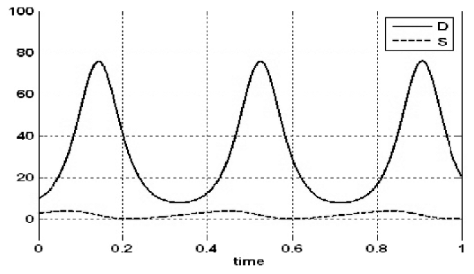
Hình 3 Sự tiến hóa của sự phân hóa và sự tổng hợp được mô tả bởi (15, 16) với các giá trị tham số a = 10, b = 1, d = 10, S0=2, H0 = 3, và các giá trị ban đầu D(t=0) = 10, S(t=0) =3
85% tri thức (D) trong một chu kỳ; điều này có hợp lý không? Trước khi trả lời câu hỏi này, chúng tôi cần nhấn mạnh rằng tần số dao động và biên độ từ đỉnh xuống đáy phụ thuộc vào giá trị của các tham số được sử dụng. Chúng tôi không có dữ liệu để có thể lựa chọn các giá trị chính xác về mặt khoa học cho các tham số. Việc quyết định các giá trị tham số phù hợp sẽ tùy thuộc vào các nhà xã hội học và sử học văn hóa. Một chủ đề khác cho các nghiên cứu tương lai sẽ là thước đo phù hợp của D. Có khả năng, thước đo thích hợp của D là tri thức trung bình trên mỗi người, không phải trên toàn bộ dân số, mà chỉ trên bộ phận dân số tham gia tích cực vào việc điều hành nhà nước. Trong các xã hội “được quản lý tốt”, những người có học thức tham gia tích cực vào việc quản lý xã hội. Trong các xã hội “bị quản lý tồi”, như Liên Xô, những người có học thức bị gạt ra khỏi việc lên tiếng nêu ý kiến, và một vài người ít học đưa ra các quyết định. Do đó, sự mất mát 85% tri thức trong các dao động nhanh có thể đại diện cho sự mất mát tri thức và sự tổng hợp trong “tầng lớp thống trị”, chứ không phải trong toàn xã hội.
Bất chấp những lập luận này, các dao động dữ dội trong sự phân hóa và sự tổng hợp được thể hiện trong Hình 3 có thể không hợp lý. Đó có thể là một dấu hiệu cho thấy (15, 16) đã được đơn giản hóa và có thể đang thiếu một số cơ chế quan trọng tạo ra sự tổng hợp. Vai trò của các cơ chế như tôn giáo, nghệ thuật, âm nhạc được thảo luận trong phần cuối; việc mô hình hóa toán học chúng nằm ngoài phạm vi của chương này.
Các nghiệm dao động tương tự như Hình 3 cũng có thể xảy ra nếu sự tiến hóa bắt đầu với S < S0. Ban đầu, sự phân hóa sẽ giảm, nhưng sau đó dH sẽ vượt quá bD (trong 16), sự tổng hợp sẽ tăng và do đó các nghiệm dao động xuất hiện. Các nghiệm dao động này mô tả nhiều nền văn minh trong các khoảng thời gian kéo dài, ví dụ văn minh phương Tây qua hàng thiên niên kỷ. Một lần nữa, việc đánh giá xem các nền văn hóa nào được mô tả bởi nghiệm này, và những giá trị cụ thể nào của các tham số mô hình là phù hợp sẽ tùy thuộc vào các nhà sử học văn hóa và các nhà khoa học xã hội.
Đường nét đứt trong Hình 3 biểu thị các chu kỳ của sự tổng hợp. Trong ví dụ này, sự tổng hợp giảm xuống 0, điều này có lẽ không thực tế. Chúng ta có thể giữ cho sự tổng hợp dương nghiêm ngặt bằng cách chọn các giá trị tham số khác, nhưng những nghiên cứu chi tiết kiểu này không phải mục đích của chúng tôi ở đây. Chúng tôi muốn nhấn mạnh rằng hiện tại không có dữ liệu khoa học nào có thể dùng để chọn các giá trị tham số hợp lý cho các xã hội khác nhau; đây là chủ đề của nghiên cứu trong tương lai. Tương tự, việc nhiều chu kỳ lặp lại chính xác trong hình này cho thấy bản chất đơn giản hóa của mô hình này.
8.3 Hệ thống Thứ bậc Mở rộng
Việc mở rộng tri thức trong dài hạn đòi hỏi phải mở rộng các cấp độ thứ bậc. Như đã thảo luận, sự phân hóa diễn ra ở mỗi cấp độ thứ bậc, bao gồm cả các cấp độ cao nhất. Trong quá trình này, tri thức tích lũy ở một cấp độ cụ thể trong hệ thống thứ bậc có thể dẫn đến việc một số mô hình-khái niệm nhất định được sử dụng thường xuyên hơn những mô hình khác. Những khái niệm được nhiều tác tử trong một quần thể sử dụng theo những cách hơi khác nhau này thu nhận được những ý nghĩa tổng quát hơn và làm nảy sinh các khái niệm ở cấp độ cao hơn. Như vậy, sự gia tăng phân hóa có thể tạo ra hệ thống thứ bậc phức tạp hơn, và hệ thống thứ bậc mở rộng ra, tức là, dH/dt = e dD/dt. (18)
Phương trình (18), (16) và (15) mô tả một nền văn hóa mở rộng cả về nội dung tri thức và độ phức tạp thứ bậc của nó. Chẳng hạn, một nghiệm với mức độ tổng hợp cao cố định có thể được mô tả bởi
S = const > S0,
D(t) = D0 exp(a(S −S0)t), H(t) = H0 + ec D0 exp(a(S −S0)t). (19)
Nghiệm này ngụ ý giá trị “tới hạn” sau đây cho tham số e, ec = b/d. (20)
Hình 4 minh họa nghiệm văn hóa mở rộng này với sự tổng hợp không đổi. Nếu e > ec, thì sự tổng hợp, sự phân hóa và hệ thống thứ bậc tăng trưởng vô hạn, như được thể hiện trong Hình 5.
Những nghiệm với sự tăng trưởng không giới hạn về tri thức, tổ chức thứ bậc của nó và, trong Hình 5, sự ổn định (tổng hợp) ngày càng tăng là quá lạc quan so với sự tiến hóa thực tế của các xã hội loài người.
Nếu e < ec, thì sự tổng hợp và hệ thống thứ bậc tri thức sụp đổ khi sự phân hóa phá hủy sự tổng hợp. Tuy nhiên, khi sự phân hóa giảm xuống, H0 > ec D0 exp( a(S - S0)t ), sự tổng hợp lại bắt đầu tăng lên, dẫn đến sự tăng trưởng của sự phân hóa. Sau một giai đoạn hưng thịnh nhanh chóng, sự tổng hợp lại bị phá hủy bởi sự phân hóa khi ảnh hưởng của nó lên sự tổng hợp vượt qua ảnh hưởng của hệ thống thứ bậc, và nền văn hóa sụp đổ. Những giai đoạn sụp đổ và tăng trưởng này luân phiên nhau, như được thể hiện trong Hình 6
Giả định rằng hệ thống thứ bậc tăng trưởng đồng bộ với sự phân hóa (18) là quá lạc quan. Sự tăng trưởng của hệ thống thứ bậc liên quan đến sự phân hóa các mô hình ở cấp độ cao nhất, vốn bao gồm các khái niệm về ý nghĩa và mục đích cuộc sống. Những
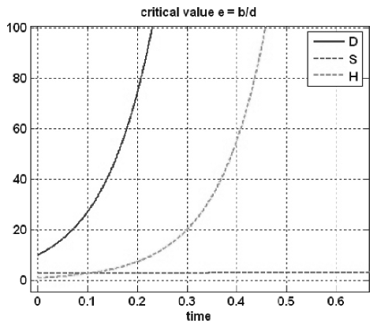
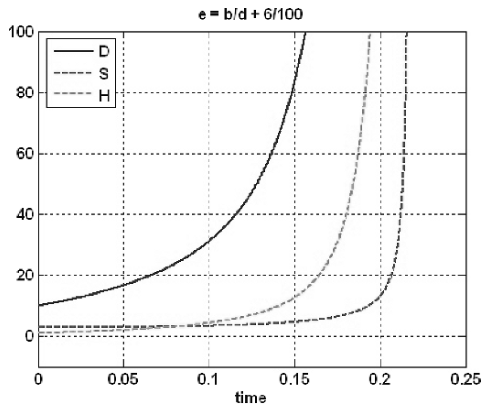
Các hình 4-5 Các nghiệm mở rộng theo hàm mũ. Sự tiến hóa của sự phân hóa, sự tổng hợp và hệ thống thứ bậc được mô tả bởi (15, 16, 19) với các giá trị tham số a = 10, b = 1, d = 10, S0=2, H0 = 1, và các giá trị ban đầu D(t=0) = 10, S(t=0) = 3. Trong Hình 4 e = b/d = 0.1 (20); trong Hình 5 e = 1.06 khái niệm này không thể được đưa ra hoàn toàn có ý thức, và trong nhiều xã hội chúng liên quan đến các khái niệm thần học và tôn giáo về Đấng Tối cao. Những thay đổi trong các khái niệm này liên quan đến những thay đổi về tôn giáo, chẳng hạn như từ Công giáo sang Cải cách, chúng liên quan đến các biến động quốc gia và chiến tranh, và chúng không phải lúc nào cũng diễn ra suôn sẻ như trong (18). Hiện tại chúng ta chưa có lý thuyết đủ sức mô tả những thay đổi này; do đó chúng ta tiến hành trong một mô thức tôn giáo cố định duy nhất. Điều này có thể được mô tả gần đúng như hệ thống thứ bậc không đổi H, như trong phần trước. Hoặc chúng ta có thể xem xét hệ thống thứ bậc mở rộng chậm,
H(t) = H0 + e ∗t. (21)
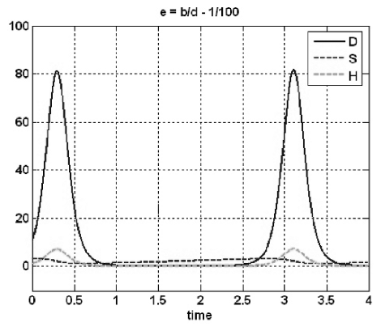
Hình 6 Các giai đoạn tăng trưởng và trì trệ văn hóa xen kẽ nhau, cùng các giá trị tham số như trên, ngoại trừ e = 0.99 < b/d
Nghiệm của (15, 16, 21) được minh họa trong Hình 7
Nghiệm vừa tăng trưởng vừa dao động này có thể mô tả văn hóa Do Thái–Cơ Đốc giáo trong suốt giai đoạn dài tiến hóa văn hóa của nó. Trong khi cấu trúc có trật tự cao là hệ quả của tính đơn giản của các phương trình, nghiệm này không lặp lại chính xác cùng một mẫu hình, mà đúng hơn sự tăng trưởng của hệ thống thứ bậc dẫn đến sự tăng trưởng của sự phân hóa, và đến các dao động nhanh hơn. Lưu ý, sự tiến hóa và các đợt phục hồi từ những giai đoạn trì trệ trong văn hóa phương Tây đã được duy trì bởi hệ thống thứ bậc tri thức và giá trị đang tăng trưởng. Hệ thống thứ bậc ổn định, tăng trưởng chậm này được hỗ trợ bởi tôn giáo. Tuy nhiên, khoa học
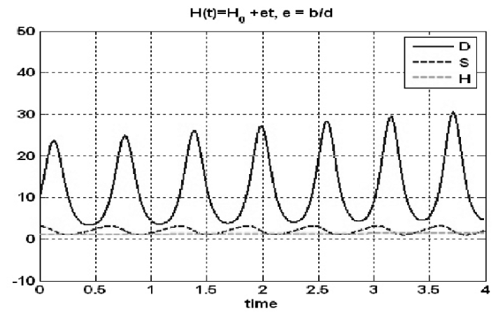
Hình 7 Sự phân hóa và sự tổng hợp dao động và tăng trưởng (15, 16, 21); sự tăng trưởng chậm tương ứng với hệ thống thứ bậc tăng trưởng chậm, e = 0.1. Lưu ý, sự gia tăng phân hóa dẫn đến các dao động phần nào nhanh hơn đã và đang thay thế tôn giáo trong tâm trí của nhiều người (ở châu Âu nhiều hơn ở Mỹ) xấp xỉ kể từ thời Khai sáng (thế kỷ 18). Động lực học thần kinh văn hóa hiện nay ở văn hóa phương Tây được đặc trưng bởi sự thống trị của phân hóa khoa học và sự thiếu hụt tổng hợp. Ngày càng nhiều người gặp khó khăn trong việc kết nối các khái niệm khoa học có tính phân hóa cao với các nhu cầu bản năng của họ. Nhiều người tìm đến bác sĩ tâm thần và uống thuốc để bù đắp cho sự thiếu hụt tổng hợp. Sự ổn định của các giá trị thứ bậc phương Tây đang ở thế bấp bênh, và trong đợt suy giảm tiếp theo của sự tổng hợp, hệ thống thứ bậc có thể bắt đầu tan rã, dẫn đến sự sụp đổ văn hóa. Nhiều người cho rằng quá trình này đang diễn ra rồi, ở châu Âu nhiều hơn ở Mỹ.
8.4 Vai trò Kép của Sự Tổng hợp
Phần trước chỉ xem xét vai trò truyền cảm hứng của sự tổng hợp. Tác động của sự tổng hợp, như đã thảo luận trước đó, phức tạp hơn: sự đầu tư cao về giá trị cảm xúc vào mỗi khái niệm làm cho các khái niệm trở nên “ổn định” và khó sửa đổi hoặc phân hóa [12]. Do đó, mức độ tổng hợp cao dẫn đến một nền văn hóa ổn định và trì trệ. Chúng tôi tính đến điều này bằng cách thay đổi tác động của sự tổng hợp lên sự phân hóa như sau:
dD/dt = aDG(S), G(S) = (S −S0) exp(−(S −S0)/S1) (22)
dS/dt = −bD + dH (23) H(t) = H0, hoặc H(t) = H0 + e∗t. (24)
Các nghiệm tương tự như những nghiệm đã xét trước đây đều khả dĩ: một nghiệm với giá trị không đổi của sự tổng hợp tương tự như (17), cũng như các nghiệm dao động và dao động-tăng trưởng.
Một dạng nghiệm mới khả dĩ ở đây liên quan đến mức độ tổng hợp cao với sự phân hóa trì trệ. Nếu dH > bD, thì theo (23) sự tổng hợp tăng theo hàm mũ, trong khi sự phân hóa chững lại, và sự tổng hợp tiếp tục tăng. Điều này dẫn đến một xã hội ngày càng ổn định với sự tổng hợp cao, với các giá trị cảm xúc cao gắn liền với mọi khái niệm, trong khi sự tích lũy tri thức dừng lại, như được thể hiện trong Hình 8.
Các nhà sử học văn hóa có thể tìm thấy các ví dụ về những xã hội ổn định nội tại nhưng trì trệ. Các ứng cử viên là Ai Cập cổ đại và các xã hội Hồi giáo Ả Rập đương đại. Tất nhiên, đây chỉ là những gợi ý cho các nghiên cứu trong tương lai. Mức độ phân hóa, tổng hợp và thứ bậc có thể được đo lường bằng các phương tiện khoa học, và dữ liệu này cần được so sánh với mô hình. Điều này sẽ dẫn đến việc cải thiện mô hình, cũng như phát triển các mô hình vi động lực học thần kinh chi tiết hơn, mô phỏng các xã hội lớn gồm các tác tử tương tác, bao gồm các hệ thống con nhận thức và ngôn ngữ của tâm trí [43]. Và chúng tôi hy vọng rằng việc thấu hiểu các quá trình trì trệ văn hóa sẽ dẫn đến việc vượt qua những tình thế tiến thoái lưỡng nan này và cải thiện thân phận con người.
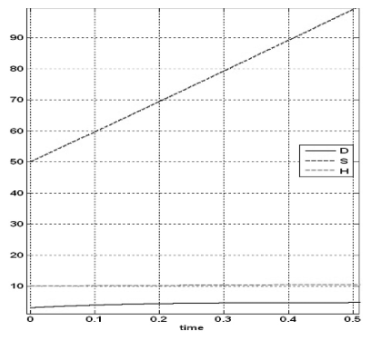
Hình 8 Xã hội ổn định cao độ với sự tổng hợp tăng trưởng, các giá trị cảm xúc cao gắn với mọi khái niệm, trong khi sự tích lũy tri thức dừng lại; các giá trị tham số: D(t=0)= 3, H0 = 10, S(t=0) = 50, S0 = 1, S1 = 10, a = 10, b = 1, d = 10, e=1
8.5 Các Nền văn hóa Tương tác
Bây giờ chúng ta hãy nghiên cứu sự tương tác của các nền văn hóa có mức độ phân hóa và tổng hợp khác nhau. Cả hai đều là các quần thể tác tử được đặc trưng bởi tâm trí NMF và các phương trình tiến hóa (22, 23, 24). Nền văn hóa k = 1 được đặc trưng bởi các tham số dẫn đến sự phân hóa dao động, có tiềm năng tăng trưởng nhanh và mức độ tổng hợp dao động trung bình (nền văn hóa “năng động”). Nền văn hóa k = 2 được đặc trưng bởi sự phân hóa tăng trưởng chậm, hoặc trì trệ, và sự tổng hợp cao (nền văn hóa “truyền thống”). Ngoài ra, có một sự trao đổi chậm về phân hóa và tổng hợp giữa hai nền văn hóa này (ví dụ: Mỹ và Mexico (hoặc nói chung, người nhập cư vào Mỹ từ các xã hội truyền thống hơn); hoặc văn hóa học thuật-truyền thông trong lòng nước Mỹ và “phần còn lại” của dân số). Các phương trình tiến hóa được sửa đổi để tính đến dòng vào và dòng ra của sự phân hóa và sự tổng hợp có thể được viết là dDk/dt = akDkG(Sk) + xkDk (25) dSk/dt = −bkDk + dkHk + ykSk (26)
Hk = H0k + ek ∗t (27)
Ở đây, chỉ số k biểu thị nền văn hóa đối diện, tức là với k=1, k = 2, và ngược lại; các tham số xk và yk xác định sự tương tác hay ghép nối giữa hai nền văn hóa. Hình 9 minh họa các nghiệm mẫu cho các phương trình này.
Trong Hình 9, sự tiến hóa bắt đầu với hai nền văn hóa tương tác, một truyền thống và một năng động. Do sự trao đổi phân hóa và tổng hợp giữa các nền văn hóa, nền văn hóa truyền thống thu nhận được sự phân hóa, đánh mất phần lớn sự tổng hợp của nó, và trở thành một nền văn hóa năng động. Hãy nhấn mạnh rằng mặc dù chúng tôi đã cố gắng tìm các giá trị tham số dẫn đến ít dao động hơn trong sự phân hóa và ổn định hơn, chúng tôi đã không tìm thấy các nghiệm như vậy. Mặc dù các tham số quyết định sự trao đổi phân hóa và tổng hợp là đối xứng theo hai hướng giữa các nền văn hóa, điều thú vị cần lưu ý là nền văn hóa truyền thống không “ổn định” nền văn hóa năng động, hiệu ứng chủ yếu là một chiều, tức là, nền văn hóa truyền thống thu nhận tri thức phân hóa
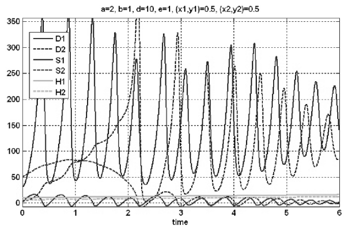
Hình 9 Các tác động của trao đổi văn hóa (k=1, đường nét liền: D(t=0)= 30, H0= 12, S(t=0) = 2, S0= 1, S1= 10, a = 2, b = 1, d = 10, e=1, x = 0.5, y = 0.5; k=2, đường chấm: D(t=0)= 3, H0= 10, S(t=0) = 50, S0= 1, S1= 10, a = 2, b = 1, d = 10, e=1, x = 0.5, y = 0.5). Sự chuyển giao tri thức phân hóa sang nền văn hóa ít phân hóa hơn chiếm ưu thế trong trao đổi suốt t < 2 (đường nét đứt). Về dài hạn (t > 6) các nền văn hóa ổn định lẫn nhau và những biến động mạnh của sự phân hóa và tổng hợp lắng xuống (tuy nhiên, lưu ý rằng trong ví dụ này các hệ thống thứ bậc được duy trì ở các mức khác nhau; sự trao đổi cấu trúc thứ bậc sẽ dẫn đến việc hai nền văn hóa trở nên giống hệt nhau)
và động lực học. Những biến động dữ dội của sự phân hóa và tổng hợp chỉ lắng xuống một chút sau t > 5, khi cả hai nền văn hóa đạt được mức độ tri thức phân hóa tương tự nhau; khi đó các dao động có thể đối trọng một phần và ổn định lẫn nhau ở mức độ phân hóa tương đối cao. Việc đánh giá xem phần đầu của đồ thị này có đại diện cho ảnh hưởng đương đại của văn hóa Mỹ lên các xã hội truyền thống hay không sẽ tùy thuộc vào các nhà sử học văn hóa và các nhà tâm lý học xã hội. Và liệu hình vẽ này có giải thích tại sao ảnh hưởng của tri thức-phân hóa chứ không phải sự ổn định-tổng hợp giàu cảm xúc lại chi phối các cuộc trao đổi văn hóa (trừ khi “những người truyền thống-cảm xúc” loại bỏ về mặt thể xác “những người tiếp thu-tri thức” trong một giai đoạn yếu thế của họ). Liệu sự ổn định một phần sau t > 5 có đại diện cho tác động của chủ nghĩa đa văn hóa và giải thích sức sống của xã hội Mỹ đương đại hay không?
Câu hỏi này được đề cập trong Hình 10, mở rộng Hình 9 sang thang thời gian dài hơn. Về dài hạn (t > 5) các nền văn hóa ổn định lẫn nhau và những biến động mạnh của sự phân hóa và tổng hợp lắng xuống. Lưu ý rằng trong ví dụ này các hệ thống thứ bậc được duy trì ở các mức khác nhau. Liệu điều này có đại diện cho các cộng đồng Công giáo và Tin lành cùng tồn tại với mức độ phân hóa và tổng hợp xấp xỉ bằng nhau, nhưng có hệ thống thứ bậc khác nhau? Đây là một câu hỏi dành cho các nhà tâm lý học xã hội. Chúng tôi muốn nhấn mạnh rằng sự cùng tồn tại của các nền văn hóa khác nhau là có lợi về dài hạn: cả hai cộng đồng đều tiến hóa với sự ổn định cao hơn.
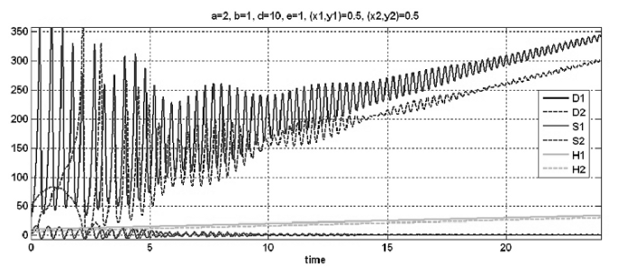
Hình 10 Các tác động của trao đổi văn hóa, giống Hình 5 ở thang thời gian dài hơn. Về dài hạn (t > 5) các nền văn hóa ổn định lẫn nhau và những biến động mạnh của sự phân hóa và tổng hợp lắng xuống. Lưu ý rằng trong ví dụ này các hệ thống thứ bậc được duy trì ở các mức khác nhau (sự trao đổi các cấu trúc thứ bậc sẽ dẫn đến việc hai nền văn hóa trở nên giống hệt nhau)
9 Các Hướng đi Tương lai
9.1 Động lực học Thần kinh của Âm nhạc: Sự Tổng hợp của Tâm thức Phân hóa
Mức độ phân hóa cao, theo các mô hình trong phần trước, là không ổn định. Bằng cách phá hủy sự tổng hợp, sự phân hóa làm xói mòn chính nền tảng cho sự tích lũy tri thức. Điều này trong phần trước đã dẫn đến các dao động dữ dội trong sự phân hóa và sự tổng hợp. Ở đây chúng tôi phân tích một cơ chế quan trọng để bảo tồn sự tổng hợp cùng với mức độ phân hóa cao, điều sẽ phải được tính đến trong các mô hình tương lai.
Hãy nhắc lại rằng sự tổng hợp, vốn là cảm giác về ý nghĩa và mục đích, là một điều kiện tất yếu của sự tồn tại con người. Sự tổng hợp bị đe dọa bởi sự phân hóa tri thức. Rất khó để duy trì sự tổng hợp trong các xã hội như các xã hội phương Tây đương đại, vốn sở hữu sự phân hóa cao và nhiều tri thức trừu tượng. Ngược lại, dễ dàng hơn để duy trì sự tổng hợp trong các xã hội truyền thống, nơi phần lớn tri thức liên quan trực tiếp đến các nhu cầu tức thời của cuộc sống. Từ thời xa xưa, nghệ thuật và tôn giáo đã kết nối tri thức khái niệm với cảm xúc và giá trị, và những thứ này cung cấp phương tiện văn hóa để duy trì sự tổng hợp cùng với sự phân hóa. Một vai trò đặc biệt quan trọng trong quá trình này thuộc về âm nhạc, bởi vì âm nhạc tác động trực tiếp đến cảm xúc [44, 45].
Âm nhạc xuất hiện từ âm thanh của giọng nói, tức là từ tiếng hát. Ngữ điệu hay giai điệu của âm thanh giọng nói, nhịp điệu, trọng âm, âm sắc và cao độ được chi phối bởi các cơ chế thần kinh trong não bộ. Hình ảnh hoạt động thần kinh (thu được bằng chụp cộng hưởng từ, MRI) cho thấy não người có hai trung tâm điều khiển giai điệu của lời nói; một trung tâm cổ xưa nằm ở hệ viền (limbic system), và một trung tâm mới ở vỏ não. Trung tâm cổ xưa kết nối với các cảm xúc trực tiếp không thể kiểm soát, trong khi trung tâm mới kết nối với các khái niệm và các cảm xúc được kiểm soát có ý thức. Thực tế này được biết đến từ các ca bệnh y khoa trong đó những bệnh nhân bị tổn thương vỏ não mất khả năng nói và hiểu các cụm từ phức tạp, trong khi vẫn có thể lĩnh hội được lời nói mang tính cảm xúc gay gắt [46].
Ngữ điệu lời nói ở loài linh trưởng được chi phối bởi một trung tâm cảm xúc cổ xưa duy nhất trong hệ viền. Hệ thống khái niệm và cảm xúc ở động vật ít phân hóa hơn ở người. Âm thanh tiếng kêu của động vật lôi cuốn toàn bộ tâm thức, thay vì khái niệm và cảm xúc một cách riêng rẽ. Một con vượn hay con chim khi thấy nguy hiểm không nghĩ xem phải nói gì với đồng loại. Tiếng kêu báo nguy hòa quyện không thể tách rời với sự nhận dạng tình huống nguy hiểm, và với một mệnh lệnh cho bản thân và cho cả đàn: “Bay lên!” Một sự đánh giá (cảm xúc sợ hãi), sự thấu hiểu (khái niệm nguy hiểm), và hành vi (tiếng kêu và vỗ cánh) – không được phân hóa. Ý thức và vô thức không tách rời: nhận dạng nguy hiểm, kêu lên và bay đi là một hình thức tổng hợp khái niệm-cảm xúc-hành vi hòa quyện của tư duy-hành động. Chim và vượn không thể kiểm soát cơ thanh quản của chúng một cách tự chủ.
Các cảm xúc-đánh giá ở người đã tách khỏi các khái niệm-biểu tượng và khỏi hành vi. Chẳng hạn, khi ngồi quanh bàn và thảo luận về loài rắn, chúng ta không nhảy lên bàn một cách mất kiểm soát trong sợ hãi mỗi lần từ “rắn” được nhắc đến. Sự phân hóa của khái niệm và cảm xúc này được thúc đẩy bởi ngôn ngữ. Ngữ điệu hay giai điệu của lời nói liên quan đến nhận thức và cảm xúc thông qua các cảm xúc thẩm mỹ. Sự kết nối giữa khái niệm với cảm xúc, giữa các mô hình có ý thức với các nguyên mẫu vô thức, chính là sự tổng hợp. Giọng nói con người lôi cuốn cả khái niệm lẫn cảm xúc. Giai điệu của giọng nói được tri giác bởi các trung tâm thần kinh cổ xưa liên quan đến các nguyên mẫu, trong khi nội dung khái niệm của ngôn ngữ liên quan đến các khái niệm có ý thức. Do đó, giọng nói con người bao gồm cả khái niệm và cảm xúc; giai điệu của nó được tri giác bởi cả ý thức và vô thức; nó duy trì sự tổng hợp và tạo ra sự toàn vẹn trong tâm thức. [47]
Trải qua hàng nghìn năm tiến hóa văn hóa, âm nhạc đã hoàn thiện khả năng bẩm sinh này. Âm thanh âm nhạc lôi cuốn con người như một chỉnh thể toàn vẹn—đó là bản chất của các nguyên mẫu, những cảm xúc-khái niệm cổ xưa, mơ hồ, chưa phân hóa của tâm trí. Các nguyên mẫu là phi phân hóa, nội dung cảm xúc và khái niệm của chúng, phần cao và phần thấp của chúng hòa quyện vào nhau và chỉ tồn tại như những khả thể. Bằng cách hướng về các nguyên mẫu, âm nhạc chạm tới những tầng sâu vô thức cổ xưa nhất cũng như những ý tưởng cao cả nhất về ý nghĩa của sự tồn tại. Đây là lý do tại sao các bài dân ca, ca khúc đại chúng, hay các trích đoạn opera có thể tác động đến một người mạnh mẽ hơn là lời nói hay âm nhạc riêng rẽ. Tác động tổng hợp của một bài hát, kết nối ý thức và vô thức, giải thích thực tế rằng đôi khi ca từ tầm thường kết hợp với âm nhạc hạng hai vẫn có thể tác động đến người nghe. Khi âm nhạc và thi ca thực sự tương xứng với nhau và đạt đến trình độ nghệ thuật cao, một hiệu ứng tâm lý mạnh mẽ sẽ xảy ra. Hiệu ứng này hé lộ các cơ chế của sự đồng thuộc bí ẩn giữa âm nhạc và thi ca. Các hình thức nghệ thuật cao tạo ra sự tổng hợp của những mô hình quan trọng nhất chạm đến ý nghĩa sự tồn tại của con người. Các ca khúc đại chúng, thông qua sự tương tác giữa ngôn từ và âm thanh, kết nối những ngôn từ thông thường của đời sống hằng ngày với chiều sâu của vô thức. Điều này giải thích tại sao trong văn hóa đương đại, với số lượng khổng lồ các khái niệm phân hóa và sự thiếu hụt ý nghĩa, một vai trò quan trọng đến thế lại thuộc về các ca khúc đại chúng. [9, 34, 48].
Trong khi ngôn ngữ tiến hóa như cơ chế chính cho sự phân hóa khái niệm, thì âm nhạc tiến hóa như cơ chế chính cho sự phân hóa cảm xúc (các cảm xúc có ý thức trong vỏ não). Sự phân hóa cảm xúc này là cần thiết để hợp nhất ý thức đã phân hóa: sự tổng hợp tri thức đã phân hóa đòi hỏi các tương tác cảm xúc giữa các khái niệm [49]. Cơ chế này có thể khắc phục một khía cạnh đáng lo ngại của các nghiệm dao động đã xét trong phần trước, tức là những dao động dữ dội của sự phân hóa và tổng hợp. Trong mỗi giai đoạn chững lại về văn hóa, khoảng 85% tri thức đã sụp đổ. Trong các phần trước, chúng tôi đã định nghĩa bản năng tri thức là sự tối đa hóa độ tương đồng, và định nghĩa các cảm xúc thẩm mỹ là những thay đổi trong độ tương đồng. Nghiên cứu tương lai sẽ phải thực hiện bước tiếp theo, xác định cơ chế mà qua đó các cảm xúc thẩm mỹ đã phân hóa hợp nhất các khía cạnh mâu thuẫn của tri thức. Chúng ta sẽ mô hình hóa các quá trình thần kinh, trong đó các cảm xúc đa dạng do âm nhạc tạo ra hợp nhất các khái niệm mâu thuẫn trong các mối quan hệ muôn vẻ của chúng đối với nhận thức của chúng ta như một chỉnh thể. Chúng ta sẽ phải hiểu các quá trình trong đó bản năng tri thức tự phân hóa chính nó và sự tổng hợp của tri thức đã phân hóa được thực hiện.
9.2 Bằng chứng Thực nghiệm
Bản năng tri thức rõ ràng là một phần trong các hoạt động của tâm trí [1, 2, 3]. Liệu chúng ta có thể chứng minh bản chất phổ quát của nó và mối liên hệ với sự thỏa mãn hay bất mãn về cảm xúc không? Liệu chúng ta có thể đo lường các cảm xúc thẩm mỹ trong quá trình tri giác (khi nó thường nằm dưới ngưỡng ý thức) không? Liệu chúng ta có thể đo lường các cảm xúc thẩm mỹ trong nhận thức phức tạp hơn (khi nó mang tính ý thức hơn) không? Não bộ có tính toán các độ đo tương đồng không, và nếu có, điều đó được thực hiện như thế nào? Nó có liên quan đến các cảm xúc thẩm mỹ như dự đoán của lý thuyết bản năng tri thức không? Nó có hoạt động theo cách tương tự ở các cấp độ cao hơn trong hệ thống thứ bậc của tâm trí không? Các hoạt động của bản năng tri thức đã phân hóa, và ảnh hưởng cảm xúc của các khái niệm lên nhận thức về các khái niệm khác, hầu như là những sự kiện thực nghiệm hiển nhiên. Tuy nhiên, các nghiên cứu định lượng chi tiết về hiện tượng này vẫn còn thiếu. Chẳng hạn, liệu chúng ta có thể chứng minh rằng những người tinh tế về mặt cảm xúc có thể chịu đựng các bất hòa nhận thức (tức là các mâu thuẫn khái niệm) tốt hơn những người kém tinh tế về mặt cảm xúc không (sẽ rất quan trọng nếu kiểm soát được các biến số khác, chẳng hạn như IQ).
Dan Levine nghiên cứu các tác động cảm xúc lên việc học tập [50]. Trong các thí nghiệm của ông, những người bình thường dần dần tích lũy được tri thức nhận thức, trong khi các bệnh nhân bị suy giảm cảm xúc không thể tích lũy tri thức nhận thức một cách đúng đắn. Cảm xúc của đối tượng trong các thí nghiệm của ông không liên quan đến bất kỳ nhu cầu thể xác nào, mà đúng hơn đây là những cảm xúc thẩm mỹ. Những cảm xúc thẩm mỹ này chỉ giới hạn ở vỏ não, hay các cơ chế cảm xúc cổ xưa cũng có tham gia?
Các cơ chế phân hóa khái niệm ở một cấp độ đơn lẻ trong hệ thống thứ bậc được mô tả ở Mục 4 tương ứng với các bằng chứng thực nghiệm tâm lý học và sinh lý thần kinh. Chúng bao gồm sự tương tác giữa các tín hiệu từ dưới lên và từ trên xuống, và sự khớp cộng hưởng giữa chúng như một nền tảng cho tri giác [6, 51]. Bằng chứng thực nghiệm ít chắc chắn hơn đối với việc các cơ chế này được lặp lại ở mỗi cấp độ thứ bậc. Bằng chứng thực nghiệm cho logic động chỉ giới hạn ở thực tế rằng trí tưởng tượng (các mô hình-khái niệm được hồi tưởng tự nguyện từ trí nhớ khi nhắm mắt) thì mơ hồ và mờ nhạt so với các tri giác thực tế khi mở mắt. Logic động đưa ra một gợi ý cụ thể rằng các tín hiệu (mô hình) từ trên xuống tạo thành một hình ảnh mờ-mơ hồ rồi dần dần trở nên cụ thể hơn cho đến khi nó khớp với vật thể được tri giác. Dự đoán này có thể kiểm chứng trực tiếp trong các thí nghiệm tâm lý học.
Norman Weinberger đã nghiên cứu việc phát hiện một âm thanh thuần túy cụ thể, sử dụng điện cực để đo đáp ứng từ các trường tiếp nhận tế bào đối với các tần số âm thanh trong não [52]. Logic động dự đoán rằng đáp ứng ban đầu sẽ mờ và mơ hồ. Trong quá trình học, đáp ứng thần kinh sẽ dần dần trở nên cụ thể hơn, “tinh chỉnh” hơn. Xu hướng này thực sự đã được quan sát thấy qua thực nghiệm. Đúng như dự kiến theo logic động, trường tiếp nhận tần số trở nên “tinh chỉnh” hơn ở vỏ não thính giác. Tuy nhiên, đồi thị thính giác, một vùng não cổ xưa hơn về mặt tiến hóa, không biểu hiện sự học tập theo logic động. Sẽ khó khăn hơn nhiều để xác nhận hoặc bác bỏ cơ chế này ở các cấp độ cao hơn trong hệ thống thứ bậc.
9.3 Các Vấn đề cho Nghiên cứu Tương lai
Nghiên cứu thực nghiệm trong tương lai sẽ cần xem xét chi tiết bản chất của các tương tác thứ bậc, bao gồm các cơ chế học tập hệ thống thứ bậc. Nghiên cứu này có thể tiết lộ mức độ mà hệ thống thứ bậc là bẩm sinh so với được học một cách thích nghi. Các nghiên cứu về động lực học thần kinh của ngôn ngữ và nhận thức tương tác đã bắt đầu [10, 12, 53]. Nghiên cứu tương lai sẽ cần mô hình hóa bản chất phân hóa của bản năng tri thức. Các vấn đề chưa được giải quyết bao gồm: các cơ chế thần kinh của hệ thống thứ bậc mới nổi, các tương tác giữa thứ bậc nhận thức và thứ bậc ngôn ngữ [11, 12]; các dạng phân hóa của bản năng tri thức tính đến các tương tác cảm xúc giữa các khái niệm trong quá trình nhận thức, sự đa dạng vô tận của các cảm xúc thẩm mỹ được tri giác trong âm nhạc, mối quan hệ của chúng với các cơ chế tổng hợp [34, 47, 48]; các cơ chế thần kinh của sự tương tác giữa phân hóa và tổng hợp, và sự tiến hóa của các cơ chế này trong quá trình phát triển của tâm trí suốt lịch sử tiến hóa văn hóa.
Các nhà sử học văn hóa có thể sử dụng kết quả của chương này như một công cụ để hiểu các cơ chế tâm lý của sự tiến hóa văn hóa. Các kết quả có thể giải thích cách sự phân hóa và sự tổng hợp đã tương tác với ngôn ngữ, tôn giáo, nghệ thuật, và đặc biệt là âm nhạc, và cách những tương tác này đã định hình sự tiến hóa của các nền văn hóa khác nhau. Các nhà tâm lý học xã hội có thể sử dụng kết quả của chương này như một công cụ để hiểu các cơ chế tâm lý chi phối các điều kiện hiện tại. Có thể đo lường mức độ phân hóa và tổng hợp trong các xã hội khác nhau, và sử dụng tri thức này để cải thiện thân phận con người trên khắp thế giới. Cũng sẽ có thể dự đoán những phát triển văn hóa trong tương lai, và sử dụng tri thức này để ngăn ngừa xung đột và trì trệ, đồng thời kích thích hạnh phúc.
Lời cảm ơn Tôi xin cảm ơn D. Levine, R. Deming, B. Weijers và R. Kozma vì những thảo luận, giúp đỡ và lời khuyên, và cảm ơn AFOSR đã tài trợ một phần nghiên cứu này theo Lab. Task 05SN02COR, PM Tiến sĩ Jon Sjogren.
Tài liệu tham khảo
1. Harlow, H.F., & Mears, C. (1979). The Human Model: Primate Perspectives, Washington, DC: V. H. Winston and Sons. 2. Berlyne, D. E. (1960). Conflict, Arousal, And Curiosity, McGraw-Hill, New York, NY; Berlyne, D. E. (1973). Pleasure, Reward, Preference: Their Nature, Determinants, And Role In Behavior, Academic Press, New York, NY. 3. Festinger, L. (1957). A Theory of Cognitive Dissonance, Stanford, CA: Stanford University Press. 4. Grossberg, S. (1988). Neural Networks and Natural Intelligence. MIT Press, Cambridge, MA. 5. Zeki, S. (1993). A Vision of the Brain Blackwell, Oxford, England. 6. Ganis, G., and Kosslyn, S. M. (2007). Multiple mechanisms of top-down processing in vision. 7. Kant, I. (1790). Critique of Judgment, tr. J.H.Bernard, Macmillan & Co., London, 1914. 8. Damasio, A.R. (1995). Descartes’ Error: Emotion, Reason, and the Human Brain. Avon, NY, NY. 9. Perlovsky, L.I. 2001. Neural Networks and Intellect: using model based concepts. New York: Oxford University Press. 10. Perlovsky, L.I. (2006). Toward Physics of the Mind: Concepts, Emotions, Consciousness, and Symbols. Phys. Life Rev. 3(1), pp. 22–55. 11. Perlovsky, L.I. (2004). Integrating Language and Cognition. IEEE Connections, Feature Article, 2(2), pp. 8–12. 12. Perlovsky, L.I. (2006). Symbols: Integrated Cognition and Language. Chapter in A. Loula, R. Gudwin, J. Queiroz, eds. Semiotics and Intelligent Systems Development. Idea Group, Hershey, PA, pp. 121–151. 13. Bellman, R.E. (1961). Adaptive Control Processes. Princeton University Press, Princeton, NJ. 14. Minsky, M.L. (1968). Semantic Information Processing. The MIT Press, Cambridge, MA. 15. Brooks, R.A. (1983). Model-based three-dimensional interpretation of two-dimensional images. IEEE Trans. Pattern Anal. Machine Intell., 5(2), 140–150. 16. Perlovsky, L.I., Webb, V.H., Bradley, S.R. & Hansen, C.A. (1998). Improved ROTHR Detection and Tracking Using MLANS . AGU Radio Science, 33(4), pp. 1034–44. 17. Singer, R.A., Sea, R.G. and Housewright, R.B. (1974). Derivation and Evaluation of Improved Tracking Filters for Use in Dense Multitarget Environments, IEEE Transactions on Information Theory, IT-20, pp. 423–432. 18. Perlovsky, L.I. (1996). Gödel Theorem and Semiotics. Proceedings of the Conference on Intelligent Systems and Semiotics ’96. Gaithersburg, MD, v.2, pp. 14–18. 19. Perlovsky, L.I. (1998). Conundrum of Combinatorial Complexity. IEEE Trans. PAMI, 20(6) p. 666-70. 20. Kecman, V. (2001). Learning and Soft Computing: Support Vector Machines, Neural Networks, and Fuzzy Logic Models (Complex Adaptive Systems). The MIT Press, Cambridge, MA. 21. Marchal, B. (2005). Theoretical Computer Science & the Natural Sciences, Physics of Life Reviews, 2(3), pp. 1–38. 22. Perlovsky, L.I. (1997). Physical Concepts of Intellect. Proc. Russian Academy of Sciences, 354(3), pp. 320–323. 23. Perlovsky, L.I. (2006). Fuzzy Dynamic Logic. New Math. and Natural Computation, 2(1), pp.43-55. 24. Perlovsky, L.I. (1996). Mathematical Concepts of Intellect. Proc. World Congress on Neural Networks, San Diego, CA; Lawrence Erlbaum Associates, NJ, pp. 1013–16 25. Perlovsky, L.I. (2002). Physical Theory of Information Processing in the Mind: concepts and emotions. SEED On Line Journal, 2002 2(2), pp. 36–54. 26. Cramer, H. (1946). Mathematical Methods of Statistics, Princeton University Press, Princeton NJ. 27. Perlovsky, L.I. and Deming, R.W. (2006). Neural Networks for Improved Tracking. IEEE Transactions on Neural Networks (in press).
28. Singer, R.A., Sea, R.G. and Housewright, R.B. (1974). Derivation and Evaluation of Improved Tracking Filters for Use in Dense Multitarget Environments, IEEE Transactions on Information Theory, IT-20, pp. 423–432. 29. Jung, C.G., 1921, Psychological Types. In the Collected Works, v.6, Bollingen Series XX, 1971, Princeton University Press, Princeton, NJ. 30. Jung, C.G. (1934). Archetypes of the Collective Unconscious. In the Collected Works, V. 9,II, Bollingen Series XX, 1969, Princeton University Press, Princeton, NJ. 31. Taylor, J. G. (2005). Mind And Consciousness: Towards A Final Answer? Physics of Life Reviews, 2(1), p. 57. 32. James, W. (1890). In “The Principles of Psychology”, 1950, Dover Books. 33. Jaynes, J. (1976). The Origin of Consciousness in the Breakdown of the Bicameral mind. Houghton Mifflin Co., Boston, MA; 2nd edition 2000. 34. Perlovsky, L.I. (2007). The Knowledge Instinct. Basic Books. New York, NY. 35. Kant, I. (1798) Anthropologie in pragmatischer Hinsicht, see Anthropology from a Pragmatic Point of View, Cambridge University Press (2006), Cambridge, England. 36. Carpenter, G.A. & Grossberg, S. (1987). A massively parallel architecture for a self-organizing neural pattern recognition machine, Computer Vision, Graphics and Image Processing, 37, 54–115; (2003). Adaptive Resonance Theory. In M.A. Arbib (Ed.), The Handbook of Brain Theory and Neural Networks, 2nd Ed., Cambridge, MA: MIT Press, 87-90. 37. Perlovsky, L.I. (2006). Modeling Field Theory of Higher Cognitive Functions. Chapter in A. Loula, R. Gudwin, J. Queiroz, eds., Artificial Cognition Systems. Idea Group, Hershey, PA, pp. 64–105. 38. Perlovsky, L.I. (2006). Neural Networks, Fuzzy Models and Dynamic Logic. Chapter in R. Köhler and A. Mehler, eds., Aspects of Automatic Text Analysis (Festschrift in Honor of Burghard Rieger), Springer, Germany, pp. 363–386. 39. Pinker, S. (2000). The Language Instinct: How the Mind Creates Language. Harper Perennial. 40. Demandt, A. (2003). 210 Theories, from Crooked Timber weblog entry August 25; http://www.crookedtimber.org/ 41. Harris, C. L., Ayçiçegi, A., and Gleason, J. B. (2003). Taboo words and reprimands elicit greater autonomic reactivity in a first language than in a second language, Applied Psycholinguistics, 24, pp. 561–579 42. Diamond, J. (2004). Collapse: How Societies Choose to Fail or Succeed, Viking, New York, NY. 43. Perlovsky, L.I. (2005). Evolving Agents: Communication and Cognition. Chapter in Autonomous Intelligent Systems, Eds: V. Gorodetsky, J. Liu, V.A. Skormin. Lecture Notes in Computer Science, 3505 / 2005. Springer-Verlag GmbH. 44. Crystal, D. (1997). The Cambridge encyclopedia of language, second edition. Cambridge: Cambridge University Press. 45. Perlovsky, L.I. (2005). Evolution of Consciousness and Music, Zvezda, 2005, 8, pp. 192–223 (Russian); http://magazines.russ.ru/zvezda/2005/8/pe13.html 46. Damasio, A.R. (1994). Descartes’ Error: Emotion, Reason, and the Human Brain. Grosset/Putnam, New York, NY. 47. Perlovsky, L.I. (2006). Co-evolution of Consciousness, Cognition, Language, and Music. Tutorial lecture course at Biannual Cognitive Science Conference, St. Petersburg, Russia. 48. Perlovsky, L.I. (2005). Music–The First Principles, 2005, http://www.ceo.spb.ru/libretto/kon_ lan/ogl.shtml. 49. Perlovsky, L.I. (2006). Joint Evolution of Cognition, Consciousness, and Music. Lectures in Musicology, School of Music, University of Ohio, Columbus. 50. Levine, D. (2007). Seek Simplicity and Distrust It: Knowledge Maximization versus Effort Minimization. IEEE International Conference on Knowledge Intensive Multi-Agent System, KIMAS’07, Waltham, MA. 51. Freeman, W.J. (1975). Mass action in the nervous system. Academic Press, New York, NY. 52. Weinberg, N. http://www.dbc.uci.edu/neurobio/Faculty/Weinberger/weinberger.htm. 53. Fontanari, J.F. and Perlovsky, L.I. (2006). Meaning creation and communication in a community of agents. World Congress on Computational Intelligence (WCCI). Vancouver, Canada.
Sử dụng ADP để Hiểu và Tái tạo Trí tuệ Não bộ: Thiết kế Cấp độ Tiếp theo?
Paul J. Werbos
Tóm tắt Kể từ thập niên 1960, tôi đã đề xuất rằng chúng ta có thể hiểu và tái tạo cấp độ trí tuệ cao nhất được thấy ở não bộ bằng cách xây dựng các hệ thống ngày càng có năng lực và tổng quát hơn cho quy hoạch động thích nghi (ADP) – tương tự như “học tăng cường” nhưng dựa trên việc xấp xỉ phương trình Bellman và cho phép bộ điều khiển biết hàm hữu dụng của nó. Bằng chứng thực nghiệm ngày càng tăng về não bộ ủng hộ cách tiếp cận này. Các hệ thống phê bình thích nghi (adaptive critic systems) hiện nay đáp ứng các thách thức kỹ thuật cam go và cung cấp một dạng mô hình thế hệ thứ nhất của não bộ. Lewis, Prokhorov và tôi đã thực hiện một số công việc về các thiết kế thế hệ thứ hai. Giờ đây tôi lập luận rằng não động vật có vú sở hữu ba năng lực cốt lõi – sự sáng tạo/trí tưởng tượng và các cách quản lý độ phức tạp không gian và thời gian – thậm chí vượt ra ngoài thế hệ thứ hai. Chương này điểm lại những tiến bộ trước đây, và mô tả các công cụ và cách tiếp cận mới để vượt qua khoảng cách về độ phức tạp không gian. Các Phụ lục thảo luận những gì chúng ta có thể học được về các chức năng bậc cao hơn của tâm trí con người từ loại phương pháp toán học này.
1 Giới thiệu
Không ai trên trái đất ngày nay có thể viết ra một tập hợp đầy đủ các phương trình, hay hệ thống phần mềm, có khả năng học cách thực hiện phạm vi nhiệm vụ phức tạp mà não động vật có vú có thể học để thực hiện. Từ góc độ kỹ thuật, chương này sẽ cung cấp một lộ trình cập nhật về cách đạt tới điểm đó. Từ góc độ khoa học thần kinh, nó sẽ cung cấp một loạt các lý thuyết định tính nhưng có thể định lượng về cách trí tuệ vận hành trong não động vật có vú. Văn bản chính của chương này được viết cho một hội thảo kỹ thuật; nó giải thích các nguyên lý toán học cơ bản, và cách chúng liên quan đến một số đặc điểm tổng thể quan trọng nhất của não bộ. Một phụ lục mới, được viết cho arxiv.org, thảo luận thêm về các hàm ý đối với khoa học thần kinh so sánh và đối với trải nghiệm chủ quan của chúng ta với tư cách là con người.
Văn bản chính của chương này sẽ không đề cập đến tâm trí con người với tư cách đó. Trong tự nhiên, chúng ta thấy một loạt các cấp độ trí tuệ hay ý thức [19]; chẳng hạn, trong nhóm động vật có xương sống, M. E. Bitterman [2] đã chỉ ra rằng có những bước nhảy vọt về chất từ cá lên lưỡng cư, từ lưỡng cư lên bò sát, và từ bò sát lên ngay cả loài động vật có vú đơn giản nhất. Chín mươi chín phần trăm các phần bậc cao hơn của não người bao gồm các cấu trúc, như tân vỏ não sáu lớp, vốn tồn tại ở con chuột nhỏ nhất, và cho thấy các khả năng học tập đa dụng tương tự ở chuột; do đó, mục tiêu khoa học là hiểu loại hình học tập và trí tuệ mà chúng ta thấy ở con chuột nhỏ nhất là một bước quan trọng hướng tới việc hiểu tâm trí con người, nhưng chắc chắn nó không phải là toàn bộ.
Mục 2 của chương này sẽ điểm qua ngắn gọn các khái niệm chung về tối ưu hóa và ADP. Nó sẽ đưa ra một vài điểm nổi bật từ tài liệu nghiên cứu lâu đời về lý do tại sao chúng mang lại một nguyên lý tổ chức trung tâm cho cả việc hiểu não bộ và cải thiện những gì chúng ta có thể làm trong kỹ thuật. Mục 3 sẽ điểm lại các thiết kế ADP thế hệ thứ nhất và thứ hai, và sự liên quan của chúng đối với trí tuệ kiểu não bộ. Mục 4 sẽ thảo luận cách chuyển từ các thiết kế thế hệ thứ hai sang cấp độ trí tuệ mà chúng ta thấy trong não của con chuột nhỏ nhất – với sự nhấn mạnh đặc biệt vào cách xử lý độ phức tạp không gian, bằng cách học các nhóm đối xứng, và tích hợp điều đó vào một thiết kế ADP hoặc bộ não lớn hơn. Các Phụ lục A-D tiếp tục thảo luận về khoa học thần kinh nhận thức so sánh (các lớp khác của não động vật có xương sống), và ý nghĩa của công việc này đối với việc hiểu các năng lực bậc cao hơn của não người và trải nghiệm chủ quan. Phụ lục 5 đưa ra một lời giải thích ngắn gọn về cách trí tuệ ở cấp độ não chim có thể làm tốt hơn nhiều so với các hệ thống ngày nay trong việc quản lý lưới điện.
2 Tại sao là Tính tối ưu và Tại sao là ADP?
2.1 Tính tối ưu như một Nguyên lý Tổ chức để Hiểu Trí tuệ Não bộ
Trong nhiều thế kỷ, người ta đã tranh luận liệu ý tưởng tối ưu hóa có thể giúp chúng ta hiểu tâm trí con người hay không. Từ rất lâu trước đây, Aristotle đã đề xuất rằng mọi nỗ lực và tư duy của con người xét đến cùng đều dựa trên việc theo đuổi (tối đa hóa) hạnh phúc – một loại “mục đích” (telos) bẩm sinh hay giá trị tối hậu. Các nhà vị lợi như John Stuart Mill và Jeremy Bentham đã phát triển điều này xa hơn nữa. Một phiên bản cập nhật hơn của cuộc tranh luận này có thể được tìm thấy trong [7] và trong chương của Perlovsky; ở đây tôi sẽ chỉ điểm qua một vài khái niệm cơ bản.
Để bắt đầu [14], hành vi động vật xét đến cùng là về các lựa chọn như được mô tả trong Hình 1.
Các loài động vật đơn giản nhất có thể được sinh ra với các quy tắc cố định về việc thực hiện hành động nào, như một hàm của trạng thái môi trường theo cách chúng nhìn nhận. Thay vào đó, các loài động vật tiến hóa hơn có khả năng lựa chọn các hành động mà bằng cách nào đó dựa trên
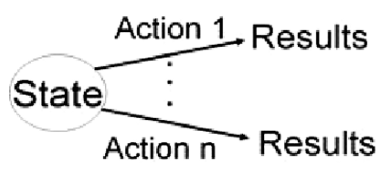
Hình 1 Các góc nhìn sơ đồ hóa về hành vi đơn giản trên một tập hợp các hành động khả dĩ cho trước
Phần I · Bài 5 — Sử dụng ADP để thấu hiểu và tái tạo trí tuệ não bộ (Werbos)
dựa trên các kết quả mà những hành động đó có thể mang lại. Chức năng của bộ não là đưa ra những lựa chọn mang lại kết quả tốt hơn. Trí tuệ là khả năng học cách đưa ra những lựa chọn tốt hơn.
Để đưa tất cả những điều này vào toán học, chúng ta phải có một cách thức để đánh giá xem kết quả nào là “tốt hơn” so với kết quả nào khác. Khái niệm Hàm lợi ích chủ yếu (Cardinal Utility function) của Von Neumann [9] cung cấp thước đo đó; nó là nền tảng của lý thuyết quyết định [10], phân tích rủi ro, phân tích đầu tư hiện đại, quy hoạch động, cùng nhiều lĩnh vực khác. Trước Von Neumann, hầu hết các nhà kinh tế học tin rằng các giá trị hoặc sở thích (của người tiêu dùng) hoàn toàn là một mối quan hệ thứ bậc (ordinal relationship); chẳng hạn, bạn có thể chứng minh bằng thực nghiệm rằng hầu hết mọi người thích bít tết hơn hamburger, và họ thích hamburger hơn là không có gì, nhưng có vẻ vô nghĩa khi lập luận rằng “khoảng cách giữa hamburger và không có gì lớn hơn khoảng cách giữa bít tết và hamburger.” Von Neumann đã chỉ ra rằng chúng ta có thể thực hiện những phép so sánh định lượng như vậy một khi đưa xác suất vào cách tư duy của mình. Ví dụ, nếu được chọn giữa việc tung đồng xu 50-50 để nhận bít tết hoặc không có gì, so với việc chắc chắn nhận được hamburger, nhiều người sẽ chọn hamburger. Tất nhiên, một hàm lợi ích đầy đủ hơn cho người tiêu dùng là con người sẽ cần tính đến cả các biến số khác nữa.
Thông thường, khi nói về các “mục tiêu” hay “ý định” rời rạc, chúng ta không nói về các giá trị dài hạn của sinh vật. Thay vào đó, chúng ta đang nói về các mục tiêu phụ hoặc các giá trị chiến thuật, vốn nhằm mục đích mang lại những kết quả hoặc đầu ra tốt hơn. Hàm lợi ích định nghĩa thế nào là “tốt hơn” chính là nền tảng của toàn bộ hệ thống.
Tiếp theo, hãy xem xét sự tương đồng với vật lý học. Vào năm 1971–1972, khi tôi đề xuất một mô hình trí tuệ thế hệ đầu tiên dựa trên ADP cho một nhà khoa học thần kinh nổi tiếng, ông ấy đã phản đối: “Vấn đề của loại mô hình này là nó tạo ra một góc nhìn nhân hình hóa (anthropomorphic) về cách bộ não hoạt động. Tôi đã dành cả đời để dạy mọi người cách vượt qua góc nhìn lưỡng cư hóa (bachtriomorphic) về loài ếch. Suy nghĩ về con người bằng sự thấu cảm có thể là một thảm họa đối với khoa học. Hơn nữa, ngay cả trong vật lý, chúng ta biết rằng vũ trụ đang tối đa hóa một loại hàm lợi ích nào đó, và chúng ta đâu có nghĩ về vũ trụ theo cách nhân hình hóa.”
Từ một góc nhìn hoàn toàn khách quan, lập luận của ông ấy thực ra lại ủng hộ ý tưởng thử sử dụng tối ưu hóa làm nguyên lý tổ chức trung tâm trong khoa học thần kinh. Xét cho cùng, nếu nó hiệu quả trong vật lý học theo một cách cực kỳ chặt chẽ và cụ thể, tại sao lại không thể ở đây? Nếu chúng ta có thể hợp nhất sự hiểu biết chức năng về bộ não không chỉ với kỹ thuật, mà còn với trải nghiệm chủ quan và sự thấu cảm, chẳng phải đây sẽ là một nguồn sức mạnh lớn sao, miễn là chúng ta phân biệt rạch ròi cái nào là cái nào? Thực tế, mục tiêu thực sự của tôi ở đây là phát triển loại hình hiểu biết toán học thực sự giúp chúng ta hợp nhất sự hiểu biết điều khiển học, sự hiểu biết khách quan về não bộ và hành vi, cũng như sự hiểu biết chủ quan về bản thân và người khác.
Nhưng trong vật lý học, mọi thứ có thực sự vận hành theo cách đó không? Một phần là vậy. Theo vật lý cổ điển, vũ trụ thực sự giải quyết bài toán tối ưu hóa được mô tả dưới đây:
Vũ trụ có một loại “hàm lợi ích,” L (x, t). Nó “lựa chọn” các trạng thái ö của mọi hạt và trường tại mọi thời điểm t bằng cách chọn những trạng thái tối đa hóa tổng của L trên toàn bộ không-thời gian, giữa thời điểm t− và thời điểm t+, với điều kiện chúng tạo thành một đường đi liên tục từ trạng thái cố định tại một thời điểm ban đầu t− đến một thời điểm kết thúc t+. Hình thức luận thanh lịch này, nhờ công của Lagrange, cung cấp một mô tả rất đơn giản và súc tích về các định luật vật lý; thay vì phải chỉ định
Hình 2 Minh họa véc-tơ trạng thái ϕ(x, t) tiến hóa giữa các thời điểm t− và t+ ϕ(x, t + )
ϕ(x, t) t+ > t > t − ϕ(x, t −)
n định luật động lực cho n loại hạt hoặc trường, chúng ta có thể chỉ định “hàm Lagrange L,” và suy ra toàn bộ các dự đoán của vật lý từ đó. Để thực hiện phép tính đó, chúng ta có thể sử dụng một phương trình từ vật lý cổ điển, phương trình Hamilton-Jacobi, vốn cho chúng ta biết cách giải các bài toán tối ưu hóa tất định xuyên suốt thời gian hoặc không-thời gian.
Nhưng đó chưa phải là toàn bộ câu chuyện. Hamilton và Lagrange đã có nhiều cuộc tranh luận về việc liệu vũ trụ có thực sự tối đa hóa L hay không – hay nó tối thiểu hóa L, hoặc tìm kiếm một nghiệm minmax? Liệu vũ trụ vật lý có tìm ra một thứ gì đó giống như kết quả của một trò chơi có tổng bằng không giữa hai người? Vào thời điểm của Einstein, có vẻ đúng là như vậy. Lý thuyết lượng tử hiện đại loại bỏ giả định tất định, nhưng lại thêm vào nhiễu loạn ngẫu nhiên theo một cách rất kỳ lạ. Hóa ra chúng ta thực sự có thể khôi phục lại một thứ gần giống ý tưởng ban đầu của Lagrange, vốn khớp với các dự đoán đã được kiểm chứng của lý thuyết lượng tử hiện đại, bằng cách đưa vào một số hạng ngẫu nhiên có tính chất thống kê đối xứng cả trong không gian lẫn thời gian; tuy nhiên, các chi tiết nằm ngoài phạm vi của chương này. (Xem http://www.werbos.com/reality.htm.)
Để mô tả bộ não, việc chỉ sử dụng quy tắc tối ưu hóa cũ của Hamilton và Jacobi là chưa đủ. Chúng ta cần xem xét trường hợp ngẫu nhiên, bởi vì động vật, giống như chúng ta, không thể dự đoán môi trường của mình theo cách tất định. Nền tảng cho việc tối ưu hóa theo thời gian trong trường hợp ngẫu nhiên là phương trình Bellman, một bước đột phá vĩ đại được Bellman phát triển vào năm 1953, và trở nên khả thi nhờ khái niệm Hàm lợi ích chủ yếu của Von Neumann.
Các nguyên lý tối ưu rất quan trọng đối với vật lý cơ bản – nhưng cũng quan trọng đối với nhiệt động lực học, và đối với vật lý của các hiện tượng nổi sinh (emergent phenomena) nói chung. Những chi tiết đó nằm ngoài phạm vi của chương này.
Cuối cùng, hãy để tôi giải đáp hai trong số những câu hỏi phổ biến nhất mà mọi người thường đặt ra khi tôi nói về bộ não như một “cỗ máy tối ưu hóa.”
Thứ nhất: Nếu bộ não tối ưu đến vậy, tại sao con người lại làm nhiều điều ngu ngốc đến thế? Trả lời: Bộ não được thiết kế để học một chính sách tối ưu gần đúng, một cách hiệu quả nhất có thể với nguồn tài nguyên tính toán hữu hạn (các mạng lưới nơ-ron), xuất phát từ một điểm khởi đầu kém tối ưu hơn. Chúng không bao giờ học được cách chơi một ván cờ vua hoàn hảo (máy tính của chúng ta cũng vậy, và bất kỳ thuật toán nào khác có thể triển khai trên một máy tính thực tế cũng vậy) do những giới hạn về tài nguyên tính toán. Chúng ta chỉ làm tốt nhất có thể mà thôi.
Ngoài ra, khi một người (một nhà nghiên cứu) chỉ trích người khác, chúng ta đang chứng kiến sự so sánh giữa hai hệ thống cực kỳ thông minh. Một số bộ não học nhanh hơn những bộ não khác. Theo quan điểm của tôi, bản thân con người chỉ là một trạng thái trung gian hướng tới một trí tuệ cao hơn/nhanh hơn nữa, như được thảo luận trong các Phụ lục của bài viết này.
Câu hỏi thứ hai: Nếu lý thuyết tối ưu hóa về bộ não này là đúng, chẳng phải bộ não sẽ bị mắc kẹt trong các cực tiểu địa phương (local minima), giống như các chương trình tối ưu hóa nhân tạo khi đối mặt với một môi trường phi tuyến phức tạp sao? Trả lời: Đúng là chúng bị mắc kẹt thật. Mọi người trên trái đất đều bị kẹt trong một “cực tiểu địa phương,” hay một lối mòn, ở một mức độ nào đó. Nói cách khác, tất cả chúng ta đều có thể làm tốt hơn một chút nếu có nhiều sự sáng tạo hơn. Nhưng hãy nhìn những anh bạn lông lá kia (tinh tinh) trong rừng rậm xem, và nhìn xem chúng đang kẹt trong lối mòn nào!
Lý thuyết tối ưu hóa về bộ não ngụ ý rằng bộ não của chúng ta kết hợp giữa khả năng học tập gia tăng (incremental learning) với khả năng học cách trở nên sáng tạo hơn – để thực hiện “tìm kiếm ngẫu nhiên” (stochastic search) ngày càng tốt hơn đối với các lựa chọn sẵn có. Có một vài nhà nghiên cứu trong lĩnh vực tính toán tiến hóa hoặc tìm kiếm ngẫu nhiên nói với chúng ta rằng thuật toán của họ được đảm bảo sẽ tìm thấy cực trị toàn cục (global optimum), rốt cuộc là vậy; tuy nhiên, những đảm bảo kiểu đó không thực tế lắm bởi vì, đối với một hệ thống có độ phức tạp thực tế, chúng đòi hỏi một khoảng thời gian thiên văn mới thực sự đạt tới điểm tối ưu.
2.2 Tính tối ưu và ADP trong công nghệ
Những lợi ích của quy hoạch động thích nghi (ADP) đối với công nghệ đã được nhiều tác giả khác thảo luận trong quá khứ [11], kèm theo các ví dụ cụ thể. Ở đây tôi sẽ chỉ điểm lại một vài nét nổi bật. (Xem thêm ví dụ về lưới điện, được thảo luận ở cuối phần Phụ lục.)
Nhiều kỹ sư điều khiển hỏi: “Tại sao phải cố tìm bộ điều khiển tối ưu trong số tất cả các bộ điều khiển có thể? Chỉ riêng việc giữ cho mọi thứ không phát nổ – ổn định chúng tại một điểm cố định – đã đủ khó rồi.” Trên thực tế – những bộ điều khiển thực sự ổn định nhất được biết đến hiện nay là các bộ điều khiển phản hồi phi tuyến, dựa trên việc “giải” phương trình “Hamilton-Jacobi-Bellman.” Nhưng để triển khai loại điều khiển đó, chúng ta cần các cơ chế để “giải bằng phương pháp số” (xấp xỉ) phương trình Bellman chính xác nhất có thể. ADP chính là bộ máy để làm điều đó.
Hơn nữa – có những lúc không thể đưa ra một sự đảm bảo tuyệt đối thực sự trung thực về tính ổn định, dưới các giả định chính xác. Chắc chắn là một con chuột chạy qua cánh đồng không có cách nào đảm bảo sự sống còn của nó – và cả loài người nói chung cũng vậy, khi đối mặt với những thách thức đang bày ra trước mắt chúng ta hiện nay. (Xem www.werbos.com.) Trong loại tình huống thực tế đó, thách thức là tối đa hóa xác suất sống sót; điều đó, đến lượt nó, lại là một bài toán tối ưu hóa ngẫu nhiên, phù hợp với ADP chứ không phù hợp với các phương pháp tất định. (Công trình gần đây của Gosavi đã khám phá nhóm ứng dụng ADP này.) Việc kiểm chứng và xác thực đối với các hệ thống phức tạp thực sự trong thế giới thực vốn đã dựa rất nhiều vào các thử nghiệm thực nghiệm và thống kê. Cuối cùng, để giải quyết các bài toán tối ưu hóa phi tuyến trong trường hợp tổng quát, chúng ta nhất thiết phải sử dụng các bộ xấp xỉ hàm phi tuyến vạn năng. Chúng có thể là chuỗi Taylor – nhưng nhiều năm trước, Barron đã chỉ ra rằng dạng đơn giản nhất của mạng nơ-ron mang lại khả năng xấp xỉ phi tuyến chính xác hơn chuỗi Taylor hay các bộ xấp xỉ hàm cơ sở tuyến tính khác, trong trường hợp tổng quát khi có một số lượng lớn các biến trạng thái. Việc sử dụng các bộ xấp xỉ mạnh mẽ và chính xác hơn (tương thích với phần cứng phân tán, như các chip đa lõi đang nổi lên) là điều thiết yếu để đạt được các xấp xỉ chính xác hơn và kết quả tốt hơn.
3 Các mô hình ADP thế hệ thứ nhất và thứ hai về trí tuệ não bộ
3.1 Nguồn gốc và cơ sở của mô hình thế hệ thứ nhất
Lan truyền ngược (backpropagation) và thiết kế ADP thực thụ đầu tiên đều bắt nguồn từ công trình của tôi vào những năm 1970, như thể hiện trong biểu đồ đơn giản hóa ở Hình 3. Về bản chất, những người sáng lập trí tuệ nhân tạo (AI) – Newell, Shaw và Simon, và Minsky [4] – đã đề xuất rằng chúng ta có thể xây dựng các hệ thống thông minh giống não bộ bằng cách xây dựng các hệ thống học tăng cường (reinforcement learning) mạnh mẽ. Tuy nhiên, sau rất nhiều thử nghiệm, trực giác và tư duy kinh nghiệm, họ vẫn không thể thiết kế được các hệ thống có thể tối ưu hóa nhiều hơn một vài biến số. Biết rằng bộ não có thể xử lý hàng nghìn biến số, họ đơn giản là đã bỏ cuộc – cũng giống như họ đã bỏ cuộc trong việc huấn luyện các mô hình nơ-ron đơn giản hóa (perceptron đa lớp). Cùng khoảng thời gian đó, Amari viết rằng có lẽ đạo hàm có thể được sử dụng bằng cách nào đó để huấn luyện perceptron đa lớp – nhưng cho rằng điều đó khó có thể thành công, và không đưa ra bất kỳ thuật toán nào để thực sự tính toán các đạo hàm cần thiết theo cách phân tán, cục bộ.
Năm 1964, tôi – cũng như nhiều người khác – đã được truyền cảm hứng sâu sắc từ cuốn sách kinh điển về trí tuệ của Hebb [5]. Lấy cảm hứng từ các công trình thực nghiệm về tác động khối (mass action) và sự học trong não bộ (của Lashley, Freeman, Pribram và những người khác), ông đề xuất rằng chúng ta thực sự không cần một mô hình quá phức tạp để giải thích hoặc tái tạo trí tuệ giống não bộ. Có lẽ chúng ta có thể tạo ra trí tuệ như là kết quả nổi sinh của quá trình học tập; chúng ta chỉ cần xây dựng hàng tỷ nơ-ron mô hình, mỗi nơ-ron tuân theo một loại quy tắc học tập nơ-ron vạn năng nào đó, và sau đó trí tuệ có thể nổi lên hoàn toàn từ việc học. Tôi đã cố gắng rất nhiều để làm cho ý tưởng đó hoạt động vào những năm 1960, và đã thất bại.
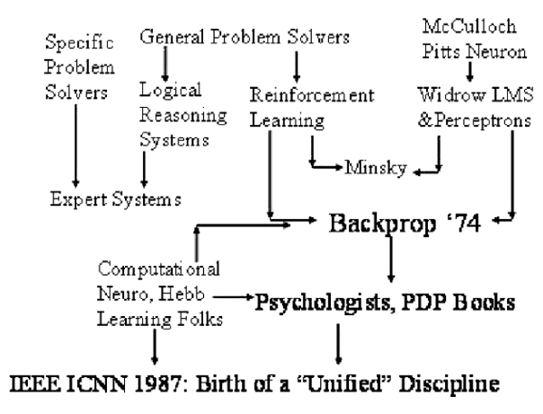
Hình 3 Góc nhìn lịch sử về sự ra đời của lan truyền ngược và ADP Vấn đề cốt lõi là cách tiếp cận của Hebb đối với một quy tắc học tập vạn năng về cơ bản là tính toán các hệ số tương quan; chúng đủ tốt để xây dựng các bộ nhớ liên kết hữu ích, như Grossberg đã chỉ ra, nhưng không đủ để đưa ra các dự đoán thống kê tốt hoặc điều khiển tối ưu. Tự bản thân chúng đơn giản là không đủ để cho phép xây dựng một cỗ máy học tăng cường đa năng hiệu quả.
Đến năm 1971–1972, tôi nhận ra rằng tầm nhìn của Hebb có thể đạt được, nếu chúng ta nới lỏng nó đi một chút xíu. Hoàn toàn có thể thiết kế một cỗ máy học tăng cường đa năng, nếu chúng ta cho phép chỉ ba loại nơ-ron và ba quy tắc học tập nơ-ron tổng quát, thay vì chỉ một.
Thực ra, nhận thức then chốt ở đây đã đến từ năm 1967. Vào năm 1967 (trong một bài báo xuất bản năm 1968 [14]), tôi đã đề xuất rằng chúng ta có thể khắc phục các vấn đề của học tăng cường bằng cách quay trở lại các nguyên lý toán học cơ bản – bằng cách xây dựng các hệ thống học cách xấp xỉ phương trình Bellman. Sử dụng phương trình Bellman vẫn là phương pháp chính xác và hiệu quả duy nhất để tính toán một chiến lược hoặc chính sách hành động tối ưu, cho một bài toán quyết định phi tuyến tổng quát theo thời gian có nhiễu. Phương trình là:
J(x(t)) = Max < U(x(t), u(t)) + J(x(t + 1)) >
1 + r , u(t)
trong đó x(t) là trạng thái của môi trường tại thời điểm t, u(t) là lựa chọn hành động, U là hàm lợi ích chủ yếu, r là lãi suất hoặc tỷ lệ chiết khấu (được định nghĩa chính xác như trong kinh tế học và bởi Von Neumann), dấu ngoặc nhọn biểu thị giá trị kỳ vọng, và J là hàm mà chúng ta phải giải để suy ra chiến lược hành động tối ưu. Tại bất kỳ trạng thái x nào, u tối ưu là giá trị giải quyết bài toán tối ưu hóa trong phương trình này. Một hệ thống học tập có thể học cách xấp xỉ chính sách này bằng cách sử dụng mạng nơ-ron (hoặc bộ xấp xỉ vạn năng khác) để xấp xỉ hàm J và các thành phần then chốt khác của phương trình Bellman, như minh họa trong Hình 4, trích từ đề xuất luận án năm 1971–1972 của tôi tại Harvard:
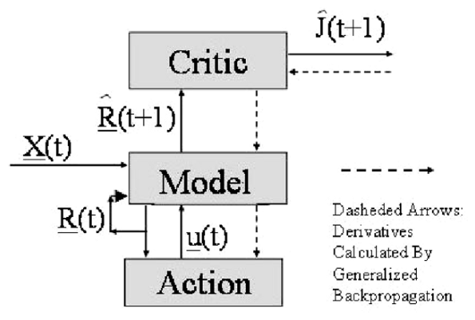
Hình 4 Hệ thống học tập dựa trên nghiệm xấp xỉ của phương trình Bellman. Trí tuệ nổi sinh là khả thi nếu chúng ta cho phép ba loại nơ-ron [16]
Trong thiết kế đó, tôi cần một dạng tổng quát hóa của lan truyền ngược làm công cụ để tính toán các đạo hàm hoặc hệ số độ nhạy thiết yếu nhằm cho phép việc học gia tăng chính xác của cả ba thành phần. Tôi đã xây dựng và chứng minh một quy tắc dây chuyền (chain rule) mới cho “đạo hàm có thứ tự” (ordered derivatives), cho phép tính toán chính xác các đạo hàm cần thiết xuyên qua bất kỳ loại hệ thống phi tuyến lớn nào, chứ không chỉ riêng mạng nơ-ron.
Về mặt trực giác, mạng “Hành động” (Action) ở đây là mạng thực sự tính toán hoặc quyết định các hành động sẽ được sinh vật thực hiện. Mạng “Mô hình” (Model) học cách dự đoán những thay đổi trong môi trường của sinh vật, và nó cũng học cách ước lượng trạng thái khách quan của thực tại (R), vốn nhiều hơn chỉ là đầu vào cảm giác hiện tại (X) đối với sinh vật. Mạng “Phê bình” (Critic) ước lượng hàm “J”, vốn là một loại hàm giá trị được học, tương tự như cái được gọi là “tăng cường thứ cấp” (secondary reinforcement) trong học tập ở động vật.
Đối với luận án tiến sĩ của mình (được in lại toàn bộ trong [16]), tôi đã đưa vào phần chứng minh, cùng nhiều ứng dụng của lan truyền ngược cho các hệ thống ngoài mạng nơ-ron. Trong [11, 12], tôi đã mô tả cách lan truyền ngược tổng quát có thể được sử dụng trong nhiều ứng dụng đa dạng, bao gồm ADP với các thành phần có thể là mạng nơ-ron hoặc bất kỳ hệ thống khả vi phi tuyến nào khác.
Phương pháp mà tôi đề xuất để thích nghi mạng Phê bình vào năm 1971–1972 được tôi gọi là “Quy hoạch động kinh nghiệm” (Heuristic Dynamic Programming - HDP). Về bản chất, nó giống với cái sau này được gọi là “Phương pháp Sai biệt Thời gian” (Temporal Difference Method). Nhưng tôi đã sớm nhận ra rằng phương pháp này không mở rộng quy mô tốt khi áp dụng cho các hệ thống có độ phức tạp dù chỉ ở mức trung bình. Nó học quá chậm. Để giải quyết vấn đề này, tôi đã phát triển các ý tưởng cốt lõi của hai phương pháp mới – quy hoạch kinh nghiệm kép (DHP) và DHP toàn cục hóa (GDHP) – được công bố trong một loạt bài báo từ năm 1977 đến 1981 [13, 14, 15]. Để chứng minh sự hội tụ, trong [3], tôi đã thực hiện những thay đổi nhỏ nhưng quan trọng trong DHP; do đó [3] là nguồn tham khảo chuẩn xác cho DHP đúng nghĩa. Để xem các phần mở rộng bền vững hơn, hãy xem các phần cuối của [18]. Xem [11] và [3] để biết các đánh giá về ứng dụng thực tế của HDP, DHP, GDHP và các hệ thống phê bình thích nghi liên quan.
4 Mô hình/Thiết kế thế hệ thứ hai cho trí tuệ kiểu não bộ
Đến năm 1987, tôi nhận ra rằng bộ não có những khả năng nhất định vượt xa những gì bất kỳ thiết kế thế hệ thứ nhất nào mang lại. Vì vậy, tôi đã đề xuất [15] một lý thuyết thế hệ thứ hai. Các chi tiết then chốt của lý thuyết đó đã được hoàn thiện trong [3] và trong các bài báo cùng Pellionisz. Xem lưu đồ bên dưới và các bài báo được đăng tải tại www.werbos.com.
Thiết kế thế hệ thứ hai một phần được thúc đẩy bởi nỗ lực thấu hiểu bộ não. Nó cũng được thúc đẩy bởi một tình thế tiến thoái lưỡng nan về mặt kỹ thuật. Tình thế tiến thoái lưỡng nan đó là: khả năng tiên liệu thực sự mạnh mẽ trong một hệ thống ADP đòi hỏi việc sử dụng các Mạng Phê bình và Mạng Mô hình mạnh mẽ hơn nhiều so với các mạng nơ-ron truyền thẳng (hoặc mạng Hebb, chuỗi Taylor hay mạng hàm cơ sở tuyến tính). Nó đòi hỏi việc sử dụng các mạng hồi quy (recurrent networks), bao gồm các mạng “ổn định dần” qua nhiều chu kỳ tính toán vòng trong trước khi phát ra kết quả tính toán. Điều đó, đến lượt nó, đòi hỏi một tần suất lấy mẫu tương đối thấp cho việc tính toán; khoảng 4–8 khung hình mỗi giây là tốc độ quan sát được ở vỏ não của động vật có vú khi phản hồi
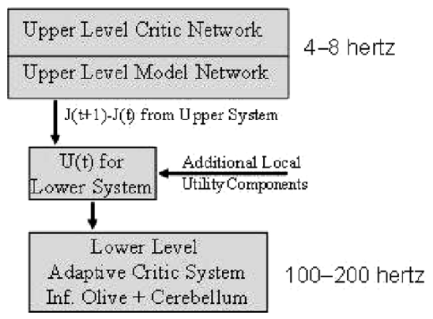
Hình 5 Thiết kế thế hệ thứ hai của trí tuệ giống não bộ
với các đầu vào mới từ đồi thị (thalamus), “màn hình chiếu phim” mà phần não trên theo dõi. Tuy nhiên, việc điều khiển cơ trơn đòi hỏi băng thông điều khiển cao hơn nhiều; để đạt được điều đó, tôi đề xuất rằng bộ não thực chất là một loại hệ thống chủ-tớ (master-slave system). Trong chương 13 của [3], tôi đã cung cấp các phương trình cho một “Bộ phê bình lỗi để điều khiển vận động” (Error Critic for motor control), đưa ra một thiết kế khả dĩ cho mạng nơ-ron “tớ” không mô hình (model-free) tốc độ cao, khớp với mô hình này. Trong thiết kế đó, các “nơ-ron bộ nhớ” ước lượng véc-tơ R nằm trong Mạng Hành động; tôi đề xuất rằng đây chính là các tế bào Purkinje của tiểu não. Chúng được huấn luyện bởi một loại hệ thống Phê bình kiểu DHP phân tán, nằm một phần ở nhân trám dưới (inferior olive) và một phần ở gần chính các tế bào Purkinje.
Danil Prokhorov, trong nhiều bài báo tại IJCNN, đã chỉ ra rằng loại thiết kế nhanh đó (và một số biến thể do ông phát triển) hoạt động tốt, theo những thước đo nhất định, trong các thử nghiệm tính toán. Công trình chính thức gần đây trong nhóm của Frank Lewis tại Đại học Texas (ARRI) đã cho thấy các kết quả ổn định mạnh mẽ cho các thiết kế ADP không mô hình thời gian liên tục đòi hỏi một đầu vào giá trị bên ngoài, hoàn toàn giống với những gì mà cách sắp xếp chủ-tớ này cung cấp.
Về mặt trực giác... “chủ” giống như người huấn luyện viên bên trong bạn, còn “tớ” giống như cầu thủ bóng đá bên trong. Cầu thủ bóng đá có phản xạ cực nhanh và rất thiết yếu cho trận đấu, nhưng anh ta cần phải nỗ lực đi đến nơi mà người huấn luyện viên có tầm nhìn xa hơn chỉ dẫn. Huấn luyện viên có thể học những thứ phức tạp hơn nhanh hơn cầu thủ bóng đá, và phản ứng với một bức tranh chiến lược phức tạp hơn. Sự ổn định ở cấp độ thấp hơn chủ yếu do cầu thủ bóng đá đảm nhiệm.
Năm 1987, Richard Sutton đã đọc [15], và sắp xếp để chúng tôi thảo luận rất kỹ về nó ở Massachusetts. Đây là sự kiện đã đưa ý tưởng về ADP vào trường phái học tăng cường của AI. Bài báo này được trích dẫn trong chương của Sutton trong [8], trong đó bao gồm một phần triển khai ý tưởng “mơ như một sự mô phỏng” được thảo luận trong [15].
4.1 Lộ trình kỹ thuật và bằng chứng khoa học thần kinh cho Lý thuyết/Thiết kế thế hệ thứ ba
Vào năm 1992, tôi tin rằng chúng ta có thể tái tạo mức độ trí tuệ thấy ở não động vật có vú cơ bản, chỉ đơn giản bằng cách tinh chỉnh và hoàn thiện các lý thuyết thế hệ thứ nhất và thứ hai này về cách bộ não hoạt động. Trên thực tế, thiết kế thế hệ thứ nhất và thứ hai đã mang lại những khả năng thích nghi đa năng mới tiềm tàng vượt xa những gì chúng ta hiện có trong kỹ thuật. Điều vẫn còn thiết yếu là chúng ta tiếp tục chương trình tinh chỉnh, thấu hiểu và cải tiến các lớp thiết kế này đi xa nhất có thể – vừa vì lợi ích của kỹ thuật, vừa là điều kiện tiên quyết để mở đường cho những thiết kế thậm chí còn mạnh mẽ hơn.
Tôi đã đề xuất rằng một nửa nguồn tài trợ nhằm vào việc thiết kế ngược bộ não vẫn nên dành cho chương trình thế hệ thứ nhất và thứ hai – một nửa cho các khía cạnh ADP, và một nửa cho các hệ thống con thiết yếu phục vụ dự đoán, trí nhớ, v.v. (Xem www.eas.asu.edu/∼nsfadp.) Bởi vì đó là những vấn đề phức tạp, và tôi đã viết về chúng ở nơi khác, nên tôi sẽ không đi sâu thêm ở đây.
Ngày càng có nhiều bằng chứng tích lũy cho thấy tối ưu hóa (với một thành phần dự đoán hoặc “Mô hình”) là cách đúng đắn để thấu hiểu bộ não. Ví dụ, Nicolelis và Chapin, trên tạp chí Science, đã báo cáo rằng một số tế bào nhất định trong đồi thị hoạt động như những bộ dự đoán trước cho các tế bào khác. Quan trọng hơn, khi họ cắt đứt các kết nối hiện có, hệ thống đồi thị-vỏ não sẽ thích nghi theo đúng cách để học lại cách dự đoán. Đây là bằng chứng rõ ràng cho thấy hệ thống đồi thị-vỏ não – phần lớn nhất của bộ não – phần lớn là một mạng “Mô hình” thích nghi, một hệ thống đa năng để thực hiện “nhận dạng hệ thống” (system identification) thích nghi (như cách chúng tôi gọi trong lý thuyết điều khiển). Barry Richmond đã quan sát thấy các cửa sổ của những làn sóng thông tin đi tới và đi lui trong mạch này, hoàn toàn nhất quán với mô hình Mạng Hồi quy Trễ Thời gian (TLRN) của chúng tôi về cách một mạng Mô hình như vậy có thể được xây dựng và thích nghi.
Papez và James Olds cha đã chỉ ra từ nhiều thập kỷ trước cách các tế bào trong “hệ viền” (limbic system) truyền tải “các tín hiệu tăng cường thứ cấp,” hoàn toàn đúng như những gì chúng ta dự đoán cho một thành phần Phê bình thích nghi của bộ não. Công trình gần đây hơn về hệ thống dopamine trong hạch nền (basal ganglia) gợi ý những mối liên hệ thậm chí còn chi tiết hơn giữa học tăng cường và việc học thực tế trong các mạch thần kinh.
Một dự đoán then chốt của cách tiếp cận kỹ thuật luôn là sự tồn tại của các mạch con để tính toán các đạo hàm – sự lan truyền ngược tổng quát – cần thiết ở đây. Khi chúng tôi lần đầu dự đoán về các khớp thần kinh ngược (backwards synapses) để làm cho điều này trở nên khả thi, nhiều người đã chế giễu cách tiếp cận kỹ thuật này. Nhưng sau đó, trên tạp chí Science, Bliss và cộng sự đã báo cáo về một dòng khớp thần kinh NMDA ngược “bí ẩn” nhưng mạnh mẽ. Spruston và các cộng sự đã báo cáo về các dòng lan truyền ngược (hoàn toàn nhất quán với toán học của lan truyền ngược tổng quát) trong màng tế bào. Các tín hiệu xung nhịp đồng bộ được ngụ ý trong các thiết kế này hiện nay cũng đã quá quen thuộc với các nhà khoa học thần kinh thực nghiệm “phòng thí nghiệm ướt” (wet).
Nhiều chi tiết hơn – và các hệ quả thực nghiệm đang rất cần các công trình tiếp nối – được thảo luận trong một số bài báo trên trang web của tôi, chẳng hạn như các bài báo cho những cuốn sách do Pribram biên tập.
Một suy nghĩ thú vị gần đây: Từ công việc kỹ thuật, chúng ta đã học được rằng độ phức tạp của hệ thống học tập cần thiết để huấn luyện một hệ thống đầu vào-đầu ra đơn giản hoặc một chính sách đã học lớn hơn nhiều so với độ phức tạp của chính hệ thống đầu vào-đầu ra đó. Một ví dụ đơn giản đến từ bộ lọc Kalman, nơi các ma trận “giàn giáo” (P, v.v.) cần thiết để lọc nhất quán lớn gấp n lần bản thân các ước lượng trạng thái thực tế; n là số lượng biến trạng thái. Một ví dụ khác đến từ lĩnh vực mạng nơ-ron, nơi Feldkamp và Prokhorov đã chỉ ra rằng Mạng Hồi quy Trễ Thời gian (TLRN) thực hiện xuất sắc việc dự đoán hành vi động cơ – thậm chí trên nhiều loại động cơ khác nhau. Nó hoạt động tốt hơn nhiều so với việc sử dụng trực tiếp Bộ lọc Kalman Mở rộng (EKF) trong ước lượng trạng thái, và hoạt động tốt ngang ngửa các phương pháp lọc hạt đầy đủ, vốn đắt đỏ hơn nhiều (đặc biệt khi có nhiều biến số trong hệ thống, như trong bộ não). Để huấn luyện các TLRN này, họ sử dụng lan truyền ngược theo thời gian kết hợp với “huấn luyện EKF phân tán (DEKF),” một loại huấn luyện đòi hỏi phải cập nhật các ma trận. Liệu có thể nào “DNA rác” (junk DNA) bao gồm một hệ thống lớn với mục đích điều chỉnh sự thích nghi của “DNA mã hóa,” vốn rốt cuộc chỉ là một phần nhỏ trong hệ thống di truyền của chúng ta? Liệu có thể nào từng nơ-ron riêng lẻ thực sự chứa các ký ức phân tử cực kỳ phức tạp – những ký ức vô hình đối với tâm trí có ý thức của chúng ta, nhưng lại thiết yếu cho việc học hiệu quả hơn (như các ma trận cho việc học DEKF)? Đây là những vấn đề thực nghiệm quan trọng cần khám phá.
5 Thu hẹp khoảng cách tới cấp độ não động vật có vú
Các nhà nghiên cứu AI như Albus [1] từ lâu đã giả định rằng bộ não phải có các hệ thống phân cấp cứng, tường minh và rất phức tạp để xử lý mức độ phức tạp cao trong không gian và thời gian. Đến năm 1997, tôi bị thuyết phục rằng họ đúng một phần, bởi vì tôi đã có thể xây dựng các phương trình Bellman sửa đổi cho phép học nhanh hơn nhiều trong những trường hợp không gian trạng thái có thể được phân vùng hợp lý theo cách phân cấp (có thể học được) [20, 21]. Tự nhiên sẽ không bỏ qua một cơ hội như vậy – và nó khớp rất tốt với những kiến thức mới nổi về hạch nền, cũng như các ý tưởng từ Pribram.
Dữ liệu sinh học gần đây không ủng hộ các ý tưởng phân cấp cũ từ AI, nhưng nó kêu gọi rõ ràng một số cơ chế cụ thể trong ba lĩnh vực cốt lõi: (1) một cơ chế “sáng tạo/tưởng tượng,” để giải quyết bản chất phi lồi của các bài toán tối ưu hóa phức tạp; (2) một cơ chế để khai thác các phương trình Bellman sửa đổi trên thực tế; và (3) một cơ chế để xử lý độ phức tạp không gian.
Lưu đồ trong Hình 6 tóm tắt một mô hình phác thảo về cơ chế sáng tạo mà tôi đã đề xuất vào năm 1997 [12]. Tôi hy vọng sẽ kích thích nghiên cứu sâu rộng về “tìm kiếm ngẫu nhiên kiểu não bộ.” (Xem trang web của tôi để đọc bài thuyết trình toàn thể tại CEC về thách thức đó). Nhóm của Wunsch, Serpen, Thaler, Pelikan và Fu tại Maryland đều đã thực hiện những công trình ban đầu quan trọng liên quan đến nhiệm vụ này, nhưng chúng vẫn chưa thực sự kết hợp lại với nhau. Tương tự, các công trình trong vài năm qua về độ phức tạp thời gian vẫn chưa đánh giá đúng mức các phương trình Bellman sửa đổi, và chưa cho thấy nhiều tiến bộ như kỳ vọng; một phần của vấn đề là độ phức tạp thời gian thường gắn liền với độ phức tạp không gian
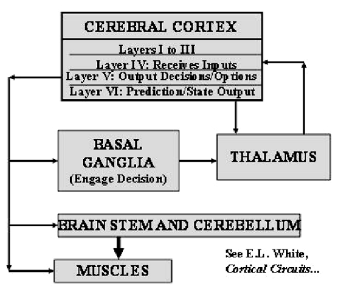
Hình 6 Góc nhìn thế hệ thứ ba về sự sáng tạo tưởng tượng: Lớp V = “Mạng Lựa chọn” (Option Networks). Xem www.werbos.com/WerbosCEC99.htm; công trình quan trọng của Serpen, Pelikan, Wunsch, Thaler, Fu – nhưng vẫn còn rất bỏ ngỏ; bệ thử nghiệm Widrow cũng vậy. Ngoài ra, còn có những bằng chứng mới từ khoa học thần kinh mà phía công nghệ vẫn chưa tiếp thu.
Cơ hội thú vị nhất trước mắt chúng ta hiện nay là tiếp nối những tiến bộ thực chất hơn và các ý tưởng mới liên quan đến độ phức tạp không gian.
Một manh mối quan trọng ban đầu hướng tới độ phức tạp không gian đến từ công trình của Guyon, LeCun và những người khác tại AT&T, được minh họa trong Hình 7.
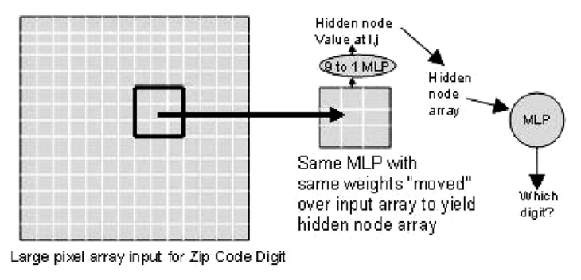
Hình 7 Mạng cửa sổ trượt: manh mối về độ phức tạp. Khai thác tính đối xứng của phép tịnh tiến Euclid rất quan trọng để giảm số lượng trọng số, giúp mảng đầu vào lớn có thể học được
Trình nhận dạng chữ số mã bưu chính (ZIP code) chính xác nhất lúc bấy giờ đến từ một mạng MLP đơn giản, được sửa đổi để khai thác tính đối xứng đối với phép tịnh tiến không gian. Thay vì huấn luyện độc lập các nơ-ron ẩn để xử lý các mảnh của một bức ảnh, họ huấn luyện một nơ-ron ẩn duy nhất, và tái sử dụng nó ở các vị trí khác nhau bằng cách di chuyển nó khắp bức ảnh. LeCun sau này gọi đây là “mạng nơ-ron bảo giác” (conformal neural network). Ông đã đạt được những kết quả xuất sắc khi huấn luyện nó bằng lan truyền ngược trong nhiều tác vụ xử lý ảnh. Tuy nhiên, các mạng truyền thẳng này vẫn không thể học được các loại ánh xạ phức tạp hơn, như ánh xạ tính liên thông (connectedness mapping) được Minsky mô tả từ lâu [13]; không có gì ngạc nhiên khi một mạng không thể xử lý tính liên thông, hoặc học cách mô phỏng phép nới lỏng Hough (Hough relaxation) trên dữ liệu ảnh, lại không thể học cách phân đoạn toàn bộ một mã bưu chính.
Năm 1994, Pang và tôi đã chứng minh một mạng có thể giải quyết những vấn đề này – một “SRN Tế bào” (CSRN), kết hợp các khả năng then chốt của Mạng Hồi quy Đồng thời (Simultaneous Recurrent Network) [3] và một mạng “bảo giác.” Điều này ngay lập tức cho phép dự đoán, điều khiển và điều hướng qua các khung cảnh (và hình ảnh) hai chiều phức tạp hơn nhiều so với những gì một mạng MLP từng có thể học. Điều đó không trở nên phổ biến ngay lập tức, một phần vì việc học diễn ra chậm và các công cụ chưa có sẵn để giúp mọi người dễ dàng tận dụng sức mạnh giống não bộ to lớn của các mạng như vậy. Tuy nhiên, năm nay, Ilin, Kozma và tôi đã báo cáo [6] về một công cụ học tập mới giúp tăng tốc đáng kể quá trình học, và được Kozma cung cấp dưới dạng công cụ MatLab. Riêng điều này đã mở ra cánh cửa cho mạng nơ-ron giải quyết các bài toán phức tạp mà trước đây chúng thực sự không bao giờ xử lý nổi. (Vẫn còn nhiều dư địa nghiên cứu để tăng tốc nó hơn nữa, nhưng nó đã sẵn sàng cho việc sử dụng thực tế.)
Năm 1997 [12] và trong các bài hướng dẫn tiếp theo (cùng một bằng sáng chế), tôi đã đề xuất một cách tiếp cận tổng quát hơn để khai thác tính đối xứng, mà tôi gọi là ObjectNet. Thay vì ánh xạ một trường đầu vào phức tạp thành M ô hình chữ nhật, tất cả đều được chi phối bởi một mạng nơ-ron “vòng trong” chung, người ta có thể ánh xạ nó thành một mạng lưới gồm k loại “Đối tượng” (Objects), với k loại mạng nơ-ron “vòng trong” khác nhau. Điều này có tiềm năng lớn trong các lĩnh vực như điện lực và xử lý ảnh, chẳng hạn. Một mạng MLP hoặc mạng hồi quy thông thường có thể học cách quản lý khoảng vài chục biến trong một hệ thống phi tuyến cao – nhưng làm thế nào người ta có thể thiết kế một mạng nơ-ron nhận đầu vào là hàng nghìn biến số của toàn bộ một lưới điện và dự đoán hệ thống như một tổng thể? Mạng ObjectNet cung cấp một cách để làm điều đó. Về bản chất, ObjectNet là một cách thức tường minh, mang tính chức năng để triển khai khái niệm cổ điển từ khoa học nhận thức về “bản đồ nhận thức” (cognitive map).
Năm nay, Venayagamoorthy đã công bố các kết quả sơ bộ cho thấy cách một hệ thống ADP dựa trên phiên bản truyền thẳng đơn giản của ObjectNet có thể xử lý các hệ thống điện phức tạp hơn so với các hệ thống giống não bộ thế hệ thứ nhất trước đó (vốn đã vượt trội hơn các phương pháp điều khiển thông thường). Đáng kinh ngạc hơn nữa – David Fogel đã sử dụng một ObjectNet đơn giản làm Bộ phê bình trong một hệ thống thích nghi để chơi cờ vua. Đây là hệ thống máy tính đầu tiên trên thế giới đạt được hiệu suất đẳng cấp kiện tướng (master-class) trong cờ vua mà không cần sử dụng siêu máy tính và không cần sử dụng các manh mối hay lời khuyên chi tiết từ con người; nó đã tự học cách chơi cờ ở cấp độ đó.
Nhưng tất cả những điều này mới chỉ là sự khởi đầu. Tại www.face-rec.org, một loạt các bài đánh giá về cơ bản cho thấy hai trong số ba hệ thống hoạt động hàng đầu hiện nay dựa trên các khái niệm mạng nơ-ron (vonderMalsburg và Wechsler). Chìa khóa của nhận dạng khuôn mặt hóa ra là khả năng học các “bất biến” (invariants) hoặc các phép biến đổi mới, phức tạp hơn phép tịnh tiến hai chiều đơn giản. Điều này mở ra một số khả năng ngắn hạn dễ dàng: khai thác CSRN để học các ánh xạ liên quan, vốn trước đây chưa bao giờ học được. Nhưng nó cũng đặt ra một câu hỏi rất cơ bản: làm thế nào bộ não có thể học được những phép biến đổi như vậy? (Chủ đề nhận dạng khuôn mặt cũng được thảo luận trong chương của Wong và Cho.) Dưới đây là một cách mới, chính thức hơn để suy nghĩ về những gì đang diễn ra ở đây. Thách thức đầu tiên ở đây là học “các tính đối xứng của vũ trụ.” Cụ thể hơn, thách thức đối với bộ não là học một họ các ánh xạ véc-tơ fα sao cho:
Pr( fα(x(t + 1)| fα(x(t)) = Pr(x(t + 1)|x(t))
với mọi α và cùng một phân bố xác suất có điều kiện Pr.
Khái niệm mới này có thể được gọi là tính bất biến ngẫu nhiên (stochastic invariance). Về mặt trực giác, ý tưởng là xác suất quan sát được x(t+1) sau khi quan sát x(t) phải bằng với xác suất quan sát được phiên bản đã biến đổi của x(t+1) sau khi quan sát phiên bản đã biến đổi của x(t). Ví dụ, nếu xác suất quan sát thấy một hình vuông màu đỏ ở phía bên trái của trường thị giác là 0,25 sau hai giây kể từ khi bạn quan sát thấy một hình tròn màu xanh lam ở phía bên trái của trường thị giác, thì xác suất quan sát thấy một hình vuông màu đỏ ở phía bên phải cũng phải là 0,25 sau hai giây kể từ khi bạn quan sát thấy một hình tròn màu xanh lam ở phía bên phải, nếu sự hoán đổi giữa bên trái và bên phải là một trong những tính đối xứng của tự nhiên.
Một khi bộ não học được những tính đối xứng này, nó có thể khai thác chúng theo một hoặc nhiều trong ba cách:
1. “Tổng quát hóa dội lại” (Reverberatory generalization): sau khi quan sát hoặc ghi nhớ một cặp dữ liệu {x(t + 1), x(t)}, cũng huấn luyện thêm trên { fα(x(t + 1)), fα(x(t))}; 2. “Đóng cổng đa bội” (Multiple gating): sau khi đưa vào x(t), chọn α để sử dụng fα nhằm ánh xạ x(t) vào một dạng chuẩn tắc (canonical form) nào đó, và học một bộ dự đoán vạn năng từ các dạng chuẩn tắc. (Điều này tương tự với mô hình Olshausen, vốn về nguyên tắc rất khác với các mô hình khoa học thần kinh về đóng cổng tự phát hoặc cảm xúc và sự chú ý.) 3. “Đóng cổng đa mô-đun” (Multimodular gating): giống như đóng cổng đa bội, ngoại trừ việc nhiều bản sao song song của ánh xạ chuẩn tắc được sử dụng đồng thời để xử lý nhiều hơn một ảnh con cùng một lúc theo cách mạnh mẽ.
Bộ não con người dường như dựa vào hai cách đầu tiên, hoặc cách thứ hai. Có lẽ các cấp độ trí tuệ cao hơn có thể được thiết kế ở đây. Nhưng điều này đặt ra câu hỏi: làm thế nào các ánh xạ này có thể được học? Làm thế nào bộ não có thể học cách ánh xạ các trường phức tạp thành một dạng chuẩn tắc cô đọng mà việc dự đoán trở nên dễ học hơn nhiều? Làm thế nào các “Đối tượng” trong một ObjectNet có thể được học? Điều này gợi ý một sự mở rộng tức thì và đơn giản đến kinh ngạc của lý thuyết ObjectNet. Năm 1992, tôi đã chứng minh các kết quả nhất quán cơ bản cho một kiến trúc mới gọi là “Bộ dự đoán Mã hóa/Giải mã Ngẫu nhiên” (Stochastic Encoder/Decoder Predictor - SEDP) [12, Chương 13]. SEDP trực tiếp học các ánh xạ cô đọng. Nó là một sự tổng quát hóa phi tuyến thích nghi của bộ lọc Kalman, đủ tường minh để cho phép học các quan hệ đối xứng. Giống như các kiến trúc HDP và CSRN trước đó, nó sẽ đòi hỏi nhiều thủ thuật cụ thể để cải thiện tốc độ học. (chẳng hạn như khai thác quan hệ láng giềng gần nhất trong quá trình học, và các dòng nổi bật/salience flows?). Nó cung cấp một phương pháp có nguyên tắc để học các nhóm đối xứng vốn là nền tảng cho một cách tiếp cận có nguyên tắc đối với độ phức tạp không gian.
Tài liệu tham khảo
1. J. Albus. Outline of intelligence. IEEE Trans. Systems, Man and Cybernetics, 21(2), 1991. 2. M. Bitterman. The evolution of intelligence. Scientific American, Jan 1965. 3. White & D.Sofge (Eds). Handbook of intelligent control. Van Nostrand, 1992. 4. E. A. Feigenbaum and J. Feldman. Computers and thought. McGraw-Hill, 1963. 5. D. O. Hebb. Organization of behavior. Wiley, 1949. 6. R. Ilin, R. Kozma, and P. J. Werbos. Cellular srn trained by extended kalman filter shows promise for adp. Proc. Int. Joint Conf. Neural Networks, Vancouver, Canada, pp. 506–510, Jul 2006. 7. D. Levine and E. Elsberry. Optimality in biological and artificial networks? Erlbaum, 1997. 8. W. T. Miller, R. Sutton, and P. Werbos (eds). Neural networks for control. MIT Press, 1990. 9. J. Von. Neumann and O. Morgenstern. The theory of games and economic behavior. Princeton NJ: Princeton U. Press, 1953. 10. H. Raiffa. Decision analysis. Addison-Wesley, 1968. 11. Jennie Si, Andrew G. Barto, Warren Buckler Powell, and Don Wunsch (eds). Handbook of learning and approximate dynamic programming. Wiley/IEEE, 2004. 12. Sutton TD and S.Sutton. Learning to predict by the methods of temporal differences,. Machine Learning, 3:9–44, 1988. 13. P. Werbos. Multiple models for approximate dynamic programming. In K. Narendra, ed., Proc. 10th Yale Conf. on Learning and Adaptive Systems. New Haven: K.Narendra, EE Dept., Yale U., 1998. Also posted at www.werbos.com/WhatIsMind. 14. P. Werbos. The elements of intelligence. Cybernetica (Namur), 3, 1968. 15. P. Werbos. Building & understanding adaptive systems: A statistical/numerical approach to factory automation & brain research. IEEE Trans. SMC, Jan/Feb 1987. 16. P. Werbos. The roots of backpropagation: From ordered derivatives to neural networks and political forecasting. Wiley, 1994. 17. P. Werbos. Brain-like design to learn optimal decision strategies in complex environments. In M.Karny et al eds, Dealing with Complexity: A Neural Networks Approach. Springer, London, 1998. 18. P. Werbos. Stable adaptive control using new critic designs. Posted at http://arxiv.org as adap-org/9810001, Oct 1998. 19. P. Werbos. What do neural nets and quantum theory tell us about mind and reality? In K. Yasue, M. Jibu & T. Della Senta, eds, No Matter, Never Mind : Proc. of Toward a Science of Consciousness. John Benjamins, 2002.
Phụ lục: Thêm những liên kết tới Bộ não và Trải nghiệm Chủ quan của Con người
Phụ lục A: Bối cảnh rộng lớn hơn
Nội dung chương này chủ yếu cố gắng nhìn xuống bộ não động vật có vú cơ bản nhất – “con chuột vô hồn” – và tìm hiểu nó dưới góc độ kỹ thuật. Nó cố gắng hợp nhất một cách tiếp cận tối ưu hóa – cùng kỹ thuật cần thiết để giải quyết các chi tiết toán học và chức năng – với khoa học thần kinh nhận thức hoặc hệ thống. Theo một cách nào đó, nó đang mở ra một con đường để thực sự hợp nhất khoa học thần kinh tính toán với khoa học thần kinh hệ thống và nhận thức. Nỗ lực hợp nhất cụ thể đó là một cơ hội lớn, thiết thực cho một dòng nghiên cứu khoa học mới quan trọng. Những bình luận của tôi về trải nghiệm chủ quan của con người trong phần nội dung chính thực chất chỉ là những gợi ý kinh nghiệm nhằm hỗ trợ việc thấu hiểu. Điều quan trọng là phải phân định rõ ràng đâu là một phần của dòng khoa học mới đó và đâu không phải.
Đồng thời, với tư cách là các nhà khoa học hoặc con người, chúng ta có một chương trình nghị sự lớn hơn. Trong phụ lục này, tôi sẽ nói thêm về chương trình nghị sự lớn hơn đó. Là con người, chúng ta có thể nhìn vào chính mình trong gương, một cách khách quan, sử dụng cùng những công cụ khoa học mà chúng ta dùng để quan sát một con chuột nhắt hay chuột cống. Nhưng chúng ta cũng có thể nhìn vào trải nghiệm nội tâm của chính mình. Thách thức lớn hơn ở đây là đạt được một sự hiểu biết có thể khớp với ba nguồn dữ liệu thực nghiệm hoặc xác thực – dữ liệu từ các thí nghiệm thông thường về não bộ và hành vi, được nhìn nhận một cách khách quan; dữ liệu từ trải nghiệm chủ quan, được nhìn thấy bên trong chính chúng ta; và dữ liệu chúng ta thu được từ việc kiểm thử có hệ thống các khả năng chức năng của các mô hình/thiết kế khi áp dụng vào các nhiệm vụ phức tạp, như trong kỹ thuật. Sự hiểu biết hợp nhất kiểu này chính là thứ chúng ta thực sự cần để hiểu rõ hơn về bản thân mình. Các chương của Kozma, Levine và Perlovsky đề cập đến các chức năng nhận thức bậc cao hơn của tâm trí con người.
Nhưng làm thế nào chúng ta có thể đạt được một sự hiểu biết hợp nhất như vậy, khi một bên đang chật vật vươn lên ngang tầm một con chuột, còn bên kia lại vượt xa nó rất nhiều?
Song song với hướng đi khoa học mà chương này tập trung vào, lý thuyết mới mở ra một hướng đi nhân văn mới, hiện tại ít mang tính định lượng hơn nhưng có phạm vi rộng lớn hơn. Tâm trí con người bao gồm mọi thứ tôi vừa nói về “não chuột,” nhưng bao gồm hai sự mở rộng hoặc tinh chỉnh lớn, theo quan điểm của tôi: (1) một năng lực mới được tiến hóa một phần cho suy luận biểu tượng, ngôn ngữ và sự thấu cảm, một phần dựa trên “nơ-ron gương” (mirror neurons) và các cấu trúc mới trong NRTP (một lớp vỏ nhỏ nhưng quan trọng bao quanh đồi thị); và (2) một loại hiệu ứng trí tuệ tập thể sơ khai, vượt xa những gì chúng ta dễ dàng thấy trong phòng thí nghiệm. Hướng đi nhân văn này có thể học hỏi được rất nhiều từ hướng đi khoa học, bởi vì mọi thứ chúng ta thấy trong não chuột cũng đều hiện diện trong chúng ta (ngay cả khi chúng ta ít khịt mũi hơn).
Một lần nữa, tôi sẽ chỉ đưa ra một vài điểm nổi bật mới ở đây. Tôi đã đăng tải một số bài báo về các khía cạnh khác nhau của hướng đi khoa học và nhân văn tại http://www.werbos.com. Một vài bài báo trong số đó bao gồm các lưu đồ liên kết các thành phần của bộ não với các thành phần của một thiết kế ADP tích hợp. Chương của Levine cũng thảo luận về mối quan hệ giữa các mô hình nhận thức và các mô-đun trong não bộ.
Phụ lục B: Khoa học thần kinh nhận thức so sánh
Ở phần đầu chương này, tôi đã đề cập ngắn gọn đến công trình kinh điển, quan trọng của M.E. Bitterman, người đã chứng minh những khác biệt định tính lớn về trí tuệ giữa loài bò sát, loài chim, động vật có vú, v.v. Bộ sách “Rockefeller” về bộ não, The Neurosciences do Schmitt và Worden biên tập, cũng chứa một bản tóm tắt tuyệt đẹp về sự khác biệt trong “sơ đồ đấu dây” giữa các cấp độ não bộ khác nhau này.
Đặc điểm độc đáo then chốt của não động vật có vú là loại vỏ não sáu lớp, gọi là “tân vỏ não” (neocortex), chiếm hơn một nửa trọng lượng của bộ não con người. Cấu trúc mới này về cơ bản đã tiến hóa như một sự hợp nhất của hai vỏ não ba lớp khác nhau từ các sinh vật bậc thấp hơn. Điều này có những mối liên hệ quan trọng với câu chuyện của chương này.
Ngay cả bộ não loài chim cũng có khả năng xử lý độ phức tạp không gian vượt xa những gì các hệ thống kỹ thuật của chúng ta có thể làm ngày nay. Xét cho cùng, các nhiệm vụ phức tạp trong xử lý hình ảnh và “suy luận” không gian là thiết yếu đối với cuộc sống của một con chim. Do đó, tôi cho rằng cấu trúc Bộ dự đoán Mã hóa/Giải mã Ngẫu nhiên (SEDP) mà tôi đã đề cập trong Mục 4 tồn tại ngay cả trong vỏ não ba lớp của loài chim vốn thực hiện những nhiệm vụ như vậy.
Giống như bộ lọc Kalman, SEDP cố gắng ước lượng hoặc quy gán một biểu diễn về trạng thái thực sự của biến số bên ngoài, bằng cách ước lượng (hoặc “lọc”) giá trị Ri của nó trong thời gian thực. Đối với mỗi biến ước lượng như vậy, SEDP phải xem xét ba giá trị số khác nhau tại mỗi thời điểm – một giá trị được dự đoán từ quá khứ, một giá trị được ước lượng bằng cách tính đến dữ liệu cảm giác mới, và một giá trị được mô phỏng nhằm phản ánh độ bất định của ước lượng. Làm thế nào một cấu trúc não bộ có thể duy trì sự phối hợp của ba giá trị số khác nhau, khớp với các phép tính cần thiết? Cách hiển nhiên sẽ là tiến hóa một loại nơ-ron rất lớn, trước tiên tính toán dự đoán ở phần đầu tiên của nó, sau đó kiểm tra dự đoán và cập nhật nó ở phần thứ hai lớn hơn được kết nối liền kề. Và sau đó thêm vào một chút nhiễu ngẫu nhiên ở giai đoạn thứ ba, giai đoạn cuối cùng. Nghe có vẻ kỳ lạ, nhưng điều này khớp một cách hoàn hảo với cấu trúc thực tế của các nơ-ron tháp khổng lồ (giant pyramid neurons), vốn được tìm thấy ngay cả trong vỏ não ba lớp của loài chim. Điều này cũng đòi hỏi một loại xung nhịp đồng hồ để đồng bộ hóa các phép tính, kiểm soát giao diện nơi dự đoán đi vào phần ước lượng của nơ-ron; trên thực tế, Scheibel và Scheibel từ lâu đã báo cáo về một đầu vào điều biến không đặc hiệu như vậy chạm vào phần giữa của các tế bào tháp khổng lồ trong vỏ não sáu lớp của con người.
Chương này đã lập luận rằng chúng ta có thể xây dựng các hệ thống ADP rất hiệu quả trong việc đối phó với độ phức tạp không gian, ngay cả trước khi chúng ta làm hết sức mình với trí tưởng tượng/sự sáng tạo và độ phức tạp thời gian. Liệu tự nhiên có thể đã làm điều tương tự với loài chim hoặc thậm chí với các động vật có xương sống bậc thấp hơn chim không?
Hình vẽ về sự sáng tạo trong Mục 4 minh họa một ý tưởng sâu hơn từ [17]. Trên trang chiếu đó, bạn có thể thấy một mũi tên đi từ Lớp V của tân vỏ não xuống hạch nền. Ý tưởng ở đây như sau. Khi hai vỏ não ba lớp ban đầu hợp nhất với nhau ở động vật có vú, khía cạnh ngẫu nhiên của thiết kế SEDP đã được khai thác để giải quyết một nhiệm vụ bổ sung: nhiệm vụ tìm kiếm ngẫu nhiên hoặc sáng tạo trong việc đưa ra quyết định. Trên thực tế, lớp V của não động vật có vú cung cấp một khả năng mới để đề xuất các lựa chọn cho quyết định. Phải chăng đây là trường hợp Lớp V đề xuất còn hạch nền định đoạt? Có lẽ vậy. Và có lẽ trí tưởng tượng hoặc sự sáng tạo mạnh mẽ là thứ mà não động vật có vú có còn các bộ não bậc thấp hơn thì không. (Các động vật có xương sống bậc thấp hơn tất nhiên có thể sở hữu các cơ chế khám phá ngẫu nhiên đơn giản hơn, kém mạnh mẽ hơn, tương tự như công trình trước đó của Barto, Sutton và Anderson về học tăng cường, hoặc các cơ chế ổn định ngẫu nhiên được thảo luận trong các phần sau của [18].)
Nhưng trước khi loại hình sáng tạo hoặc trí tưởng tượng đó có thể tiến hóa, trước tiên phải có một số hệ thống đấu dây để triển khai khái niệm “quyết định.” Đó là nơi độ phức tạp theo thời gian đi vào cuộc chơi. Độ phức tạp theo thời gian là trọng tâm chính của [17] và [13]. Một số lưu đồ hướng dẫn và trang chiếu về vấn đề này cũng được đăng tải trong các phần sau của bài hướng dẫn trên trang web của tôi. Ở đây một lần nữa, tôi sẽ chỉ trình bày một vài suy nghĩ mới.
Tại hội nghị IJCNN05 ở Montreal, nhà khoa học thần kinh Petrides đã trình bày một số kết quả mới quan trọng và đầy sức thuyết phục về các phần “tiên tiến” của tân vỏ não con người. Dưới đây là phiên bản đơn giản hóa các kết luận của ông: “Tôi đã rà soát kỹ lưỡng và đánh giá lại các thí nghiệm của những bậc tiền bối lừng danh của mình, như Goldman-Rakic, và phát hiện ra rằng cách diễn giải của họ chưa hoàn toàn đúng. Hôm nay, tôi sẽ nói về hai phần cao cấp nhất của vỏ não người, vỏ não trước trán lưng bên (dorsolateral prefrontal cortex) và vỏ não trán ổ mắt (orbitofrontal). Hóa ra hai vùng này tồn tại là để giúp chúng ta trả lời hai thách thức lớn nhất đối với tâm trí con người: ‘Lần này mình đã để xe ở đâu trong bãi đỗ xe nhỉ? Và rốt cuộc thì mình đang định làm gì thế này?’ ”
Cụ thể hơn – những phần này của vỏ não con người kết nối trực tiếp với hạch nền, nơi các quyết định được “kích hoạt.” Dựa trên trí tuệ nhân tạo cổ điển, một số nhà khoa học thần kinh từng suy đoán rằng bộ não chứa một loại hệ thống phân cấp tường minh gồm các quyết định lồng trong quyết định, được dùng để cấu trúc thời gian thành những khoảng lớn dần. Họ suy đoán rằng các kết nối khác nhau tới các phần khác nhau của hạch nền có thể tương ứng với các cấp độ khác nhau của hệ thống phân cấp thời gian. Nhưng các nghiên cứu gần đây về hạch nền không khớp với ý tưởng đó. Thay vào đó, chúng gợi ý rằng “hệ thống phân cấp theo thời gian” mang tính ngầm ẩn hơn và cố ý mờ nhạt (fuzzy). (Tôi đã nhận được những bức thư chỉ trích dữ dội từ những người tự nhận là đại diện cho Hiệp hội Trí tuệ Nhân tạo Hoa Kỳ khi Lotfi Zadeh và tôi đề xuất sự cần thiết của một mối quan hệ mờ được định nghĩa chặt chẽ về mặt toán học ở đây!) Công trình của Petrides gợi ý rằng kết nối từ vỏ não lưng bên tới hạch nền đề xuất “động từ” hoặc “lựa chọn loại khối quyết định rời rạc” cho hạch nền. Nó cũng gợi ý rằng “hệ thống phân cấp” là ngầm ẩn và mờ, dựa trên cách một quyết định có thể kích hoạt các quyết định khác – nhưng trên thực tế đôi khi có thể bị lãng quên do nguồn tài nguyên tính toán hữu hạn trong não bộ. (Quả thực, trong thế giới thực của đời sống con người, tôi đã thấy rất nhiều, rất nhiều ví dụ về việc mọi người tạo ra những kết quả tồi tệ, bởi vì họ dường như quên mất mình thực sự đang cố gắng làm gì, hoặc tại sao. Mọi người làm đâm xe và họ làm sụp đổ cả những quốc gia.) Có lẽ, ở con người, vùng trán ổ mắt hoặc một vùng khác có xu hướng đề xuất “tân ngữ” hoặc các tham số của quyết định cần đưa ra. Tuy nhiên, tôi đoán rằng ngay cả loài chim cũng có thể đưa ra quyết định (dù là những quyết định thiếu trí tưởng tượng), và sở hữu những kết nối tương tự tới hạch nền phát triển tốt của chúng từ vỏ não nguyên thủy hơn.
Một cuộc thảo luận về sự tiến hóa của bộ não sẽ không thể trọn vẹn nếu không nhắc đến nhà sinh học tiến hóa vĩ đại George Gaylord Simpson. Simpson đã chỉ ra rằng chúng ta không nên giả định tất cả các đặc tính của động vật có vú hiện đại đều tiến hóa cùng một lúc. Khi quan sát các vết lõm trên hộp sọ động vật có vú thời kỳ đầu, ông đưa ra giả thuyết rằng bộ não động vật có vú hiện đại tiến hóa muộn hơn nhiều so với các đặc tính khác. Hốc sinh thái của những con chuột sinh sôi nhanh chóng, đông đúc sống dưới thời khủng long đã cho phép sự tiến hóa tương đối nhanh – nhưng vẫn đòi hỏi hàng triệu năm, do sự phức tạp của hệ thống đấu dây phải thay đổi. Liệu có thể nào bước đột phá về sự sáng tạo và trí tưởng tượng của loài chuột chính là thứ đã buộc những loài khủng long về sau (như Maiasaurus) phải dồn nhiều năng lượng hơn vào việc bảo vệ trứng của chúng – và làm chúng suy yếu đủ để dễ dàng bị tuyệt chủng khi đối mặt với áp lực môi trường? Con người ngày nay, giống như loài chuột thời kỳ đầu đó, cũng đại diện cho những giai đoạn đầu của loại “bước đột phá lượng tử” mà Simpson đã thảo luận.
Phụ lục C: Mối liên hệ với trải nghiệm chủ quan
Các nhà khoa học cần biết cách tạm thời từ bỏ sự thấu cảm, trên cơ sở tạm thời và thử nghiệm, để lập bản đồ và cải thiện những gì họ có thể học được từ các thí nghiệm trong phòng thí nghiệm về khoa học thần kinh, tâm lý học và kỹ thuật một cách rõ ràng nhất có thể. Nhưng nếu những người ra quyết định của nhân loại làm điều đó mọi lúc, họ sẽ đi đúng hướng tới việc làm nổ tung thế giới. Hơn nữa, bằng cách hợp nhất trải nghiệm chủ quan và sự hiểu biết khoa học của mình, chúng ta có thể đi đến những hiểu biết sâu sắc mới quan trọng có thể kiểm chứng được trong tất cả các lĩnh vực này. Khi từ bỏ hoàn toàn sự thấu cảm, về cơ bản chúng ta đang từ chối sử dụng các nơ-ron gương của chính mình, và làm giảm mức độ trí tuệ mà chúng ta thể hiện trong công việc.
Nhà khoa học thần kinh và tâm lý học nổi tiếng Karl Pribram thường nhấn mạnh quan điểm này bằng những thuật ngữ sinh động hơn. “Hành vi của động vật thực chất chỉ xoay quanh bốn chữ f – thức ăn (food), nỗi sợ (fear), ... Bất kỳ cái gọi là mô hình trí tuệ con người nào không dành cho chúng một vị trí trung tâm thì hoàn toàn điên rồ.” Một “lý thuyết về trí tuệ” không đề cập đến cảm xúc thực ra hữu ích hơn với tư cách là một mẫu vật về sự non nớt và chứng loạn thần kinh của con người hơn là một lý thuyết khoa học. Isaac Newton – một nhà khoa học thực thụ – đã sẵn sàng vượt qua sự ghê sợ của bản thân, tự chọc một chiếc kim vào mắt mình và quan sát những gì ông thấy, nhằm kiểm chứng những ý tưởng mới của ông về màu sắc và ánh sáng. Để hiểu rõ hơn về tâm trí, chúng ta cần vượt qua sự e ngại của chính mình và nhìn mạnh mẽ hơn vào trải nghiệm chủ quan của bản thân. Các chương của Levine và Perlovsky cũng thảo luận về vai trò trung tâm của cảm xúc như một phần của trí tuệ con người.
Để hiểu toàn bộ cơ sở dữ liệu về trải nghiệm chủ quan của con người, cuối cùng chúng ta cần xem xét đặc biệt là công trình của Sigmund Freud, Carl Jung và các dòng chảy rộng lớn hơn của “tâm lý học dân gian” (folk psychology) cùng các nền văn minh đa dạng được tìm thấy xuyên suốt các dòng chảy của văn hóa nhân loại. Trang web của tôi có thực hiện những kết nối đó, mặc dù tất nhiên chúng không thể cô đọng và phân ngăn rạch ròi như một thiết kế kỹ thuật. Chương của Perlovsky thảo luận về các khái niệm phân biệt và tổng hợp của Jung như là các cơ chế của ý chí văn hóa.
Công trình của Freud đặc biệt quan trọng đối với lý thuyết/mô hình được trình bày ở đây, bởi vì ngay từ đầu nó đã là một trong những nguồn cảm hứng cho lý thuyết này. Trong bài báo sớm nhất của tôi về ý tưởng ADP [14], tôi đã đề xuất rằng chúng ta xấp xỉ phương trình Bellman bằng cách nào đó để phát triển một thiết kế/lý thuyết toán học khả thi – nhưng tôi không biết làm thế nào. Tôi cũng gợi ý rằng lý thuyết về “tâm động học” (psychodynamics) của Freud có thể hóa ra là đúng, và có thể hoạt động, giá như chúng ta có thể dịch nó sang toán học. Thiết kế khả thi năm 1971–1972 trình bày ở trên – thiết kế phê bình thích nghi thực thụ đầu tiên – là kết quả của việc tôi tiến lên và thực hiện những gì tôi đã đề xuất trong bài báo đó. (Tôi hy vọng rằng một số bạn, độc giả thân mến, sẽ có thể làm điều tương tự cho những gì tôi đề xuất ở đây, vì tôi không còn nhiều năm nữa, và cũng có những trách nhiệm sống còn khác.) Thay vì để bản thân bị khuất phục bởi sự e ngại trước ngôn ngữ mơ hồ của Freud, tôi đã nhìn sâu và tìm ra cách dịch nó sang toán học. Đó thực sự là bản chất của lan truyền ngược – một sự chuyển dịch sang toán học (và tổng quát hóa) các khái niệm tâm động học của Freud.
Freud có nhiều hiểu biết sâu sắc khác rất quan trọng đối với chương trình nghiên cứu được đề xuất ở đây. Ví dụ, khi ông thảo luận về “cuộc đấu tranh” giữa “cái tôi” (ego) và “cái ấy” (id), ông thực sự đang nói về điều gì? Trong cuộc thảo luận đó, “cái ấy” của ông thực chất chỉ là phần não bộ sử dụng bộ nhớ liên kết hoặc các liên kết láng giềng gần nhất để đưa ra dự đoán. (Ví dụ, nếu ai đó mặc áo sơ mi xanh đánh bạn khi bạn còn nhỏ, bạn có thể cảm thấy tràn ngập nỗi sợ hãi nhiều năm sau đó bất cứ khi nào bạn nhìn thấy một người mặc áo sơ mi xanh. Đó là một phản ứng kiểu “id-iotic”.) “Cái tôi” bao gồm một kiểu dự đoán nhân quả toàn cục mạch lạc hơn, giống như những gì chúng ta có được trong kỹ thuật khi huấn luyện Mạng Hồi quy Trễ Thời gian bằng loại công cụ mà Ford đã sử dụng, kết hợp các phương pháp lan truyền ngược và DEKF. Ngay cả khi chúng ta cố gắng xây dựng một “bộ não thế hệ thứ hai” – một bộ não đơn giản hơn nhiều so với não của một con chim, chứ chưa nói đến một con chuột – điều thiết yếu là chúng ta phải học cách kết hợp các khả năng “cái ấy” và “cái tôi” này lại với nhau. Đây là cơ sở cho đề xuất của tôi về “chủ nghĩa hỗn dung” (syncretism), được thảo luận trong nhiều bài báo trên trang web của tôi. Công việc triển khai và thấu hiểu chủ nghĩa hỗn dung là một phần của nghiên cứu được mô tả trong Mục 3 – ngay cả trước khi chúng ta vươn tới tầm cao như bộ não của loài chim.
Các thiết kế mạng nơ-ron được sử dụng trong kỹ thuật ngày nay rất khác so với hầu hết các mô hình trong khoa học thần kinh tính toán (CNS). Lý do là hầu hết mọi người trong ngách CNS ngày nay phụ thuộc nặng nề vào các mô hình Hebb, vốn thực sự chỉ mạnh mẽ trong việc tạo ra trí nhớ. Một số người làm CNS đã cho rằng toàn bộ bộ não chẳng qua chỉ là một cỗ máy ghi nhớ – một gợi ý phi lý không kém gì ý tưởng của AI về một bộ não không có cảm xúc; đó là một ví dụ khác về một lý thuyết xuất phát từ việc thiếu các công cụ toán học đủ mạnh để đối phó với thực tại thực nghiệm cơ bản đang hiện ra ngay trước mắt chúng ta. Kỹ thuật ngày nay chủ yếu tập trung vào các công cụ hệ thống quy mô lớn hơn để giải quyết khía cạnh “cái tôi.” Để xây dựng bộ não “thế hệ thứ hai” tốt nhất có thể, chúng ta cần hợp nhất hai khía cạnh này, đúng như Freud và tôi đã đề xuất. Những khía cạnh đó cũng tồn tại ở những cấp độ trí tuệ cao nhất trong tâm trí con người và đời sống xã hội loài người. Các chương
Phụ lục D: Một tái bút hài hước về một ứng dụng kỹ thuật
Khi tôi kết thúc chương này, tôi có thể hình dung ai đó hỏi rằng: “Tiến sĩ Werbos, ông thực sự định nói với chúng tôi rằng một loại não chim tự động hóa nào đó thực sự có thể cải thiện những gì chúng ta đang làm ngày nay để điều khiển lưới điện Bờ Đông sao? Đó là một sự xúc phạm lớn đối với hàng nghìn kỹ sư, nhà kinh tế và luật sư tài ba đã thiết kế ra hệ thống đó.”
Đúng, tôi đang nói rằng một loại não chim tự động hóa có thể làm tốt hơn rất nhiều thứ mà chúng ta đang làm ngày nay, nhưng điều đó không hề có ý xúc phạm. Dưới đây là một số lý do tại sao điều đó khả thi.
Thứ nhất, trong việc điều khiển lưới điện, chúng ta phụ thuộc rất nhiều vào các hệ thống tự động, một phần vì các sự kiện diễn ra quá nhanh khiến con người không thể theo kịp ở các cấp độ thấp nhất. Việc có thể giao tiếp với tốc độ ánh sáng cũng rất hữu ích. Một bộ não chim phân tán, tự động hóa sẽ tiên tiến hơn nhiều so với những gì chúng ta có ngày nay ở khía cạnh điều khiển băng thông cao – nếu nó được kết nối giao tiếp đúng cách với các bộ phận khác.
Thứ hai, hệ thống tốt nhất chúng ta có ngày nay để quản lý hầu hết các khía cạnh của lưới điện được gọi là Trào lưu Công suất Tối ưu (Optimal Power Flow - OPF). Bằng cách tối ưu hóa toàn bộ hệ thống như một hệ thống lớn duy nhất, nó mang lại kết quả tích hợp tốt hơn nhiều so với những gì chúng ta có thể nhận được từ các thành phần độc lập được quản lý riêng lẻ tự hoạt động. OPF là thuật toán do trường đại học phát triển được sử dụng rộng rãi nhất trong các công ty điện lực ngày nay. Nhưng OPF ngày nay thiếu khả năng dự đoán trước những diễn biến có thể xảy ra trong tương lai. Các lưới điện có nhu cầu lớn và cấp bách trong việc đưa thêm khả năng tiên liệu vào các hệ thống tự động, vì nhiều lý do. (ví dụ: dự đoán và tránh các “tắc nghẽn” có thể xảy ra, “định giá theo thời điểm trong ngày” hiệu quả, chuyển dịch nguồn và tải giữa ngày và đêm, đặc biệt khi năng lượng mặt trời và xe hybrid sạc điện ngày càng phổ biến.) ADP thế hệ thứ hai truyền thống có thể cung cấp khả năng tiên liệu cần thiết, nhưng không thể xử lý hết mọi sự phức tạp. Đây là lý do tại sao độ phức tạp không gian – bao gồm cả ObjectNets – là một thứ thiết yếu cần bổ sung vào ADP. Tất nhiên, các nút trong một mạng phân tán như vậy rất có thể sẽ cần sử dụng các chip mới, như chip Mạng Nơ-ron Tế bào hiện đang được sản xuất để dùng trong xử lý ảnh, nhằm tận dụng tối đa các thiết kế toán học mới.
Phần mở rộng này của OPF – được gọi là “OPF Ngẫu nhiên Động” (Dynamic Stochastic OPF) – được thảo luận chi tiết trong các chương của tôi và của James Momoh trong [11]. (Momoh đã phát triển phiên bản gốc của OPF được phân phối cho các công ty điện lực bởi Viện Nghiên cứu Điện lực, đơn vị đã đồng tài trợ cho hội thảo về DSOPF dẫn đến các chương đó.)
Động lực học thần kinh của quá trình tạo hành vi có chủ đích
Robert Kozma
Tóm tắt Chương này xem xét các cơ chế tạo ra và sử dụng tri thức trong hoạt động nhận thức của con người và trong các hệ thống trí tuệ nhân tạo. Đầu tiên, chúng tôi khám phá các phương pháp dựa trên kinh nghiệm, bao gồm các cách tiếp cận biểu tượng từ trên xuống (top-down), vốn giải quyết việc xử lý tri thức ở con người. Các lý thuyết biểu tượng về trí tuệ không giải thích và triển khai được các chiến lược vốn được tạo ra một cách thường xuyên bởi trí tuệ con người. Các phương pháp kết nối luận (connectionist) bắt nguồn từ sự hiểu biết của chúng ta về hoạt động của bộ não và hệ thần kinh, và chúng ngày càng phổ biến trong việc chế tạo các thiết bị thông minh. Trái ngược với các phương pháp biểu tượng từ trên xuống, chủ nghĩa kết nối sử dụng sự nổi sinh từ dưới lên (bottom-up) để tạo ra các hành vi thông minh. Gần đây, trí tuệ tính toán, khoa học nhận thức và khoa học thần kinh đã đạt đến độ chín muồi cho phép tích hợp các cách tiếp cận từ trên xuống và từ dưới lên trong việc mô hình hóa bộ não.
Chúng tôi trình bày một cách tiếp cận động lực học đối với nhận thức bậc cao và trí tuệ dựa trên mô hình chu trình hành động-tri giác có chủ đích (intentional action-perception cycle). Trong mô hình này, tri thức có ý nghĩa được liên tục tạo ra, xử lý và tiêu tán dưới dạng các chuỗi mẫu dao động của hoạt động thần kinh phân bố xuyên suốt không gian và thời gian, thay vì thông qua việc thao tác trên một hệ thống biểu tượng nhất định. Các mẫu dao động có thể được xem như những biểu diễn gián đoạn của các hệ thống biểu tượng tổng quát hóa, mà bộ não dùng để tính toán. Những biểu tượng động lực này không cứng nhắc mà linh hoạt và chúng biến mất ngay sau khi được tạo ra thông qua các chuyển pha không-thời gian, với tốc độ 4–5 mẫu mỗi giây ở não người. Nhận thức của con người thực hiện việc phân hạt (granulation) các chuỗi thời gian dường như đồng nhất của trải nghiệm tri giác thành những khối khái niệm có ý nghĩa, dễ hiểu và các lược đồ hành vi phức tạp. Chúng được truy cập trong quá trình lựa chọn hành động và ra quyết định trong tương lai. Phương pháp tính toán lấy cảm hứng từ sinh học sử dụng các mẫu động lực này cung cấp một giải pháp thay thế cho bài toán neo giữ biểu tượng (symbol grounding problem) vốn nổi tiếng là khó nhằn và đã được triển khai trong các môi trường tính toán cũng như robot.
1 Lời mở đầu: Về ngôn ngữ của bộ não
Phát minh ra máy tính kỹ thuật số hơn nửa thế kỷ trước đã làm say mê các nhà khoa học với những cơ hội to lớn do công cụ nghiên cứu mới này tạo ra, vốn có tiềm năng sánh ngang với khả năng của bộ não. Von Neumann là một trong những người tiên phong của kỷ nguyên tính toán kỹ thuật số mới này. Dù đánh giá cao tiềm năng của máy tính, ông đã cảnh báo về sự so sánh máy móc giữa bộ não và máy tính. Trong công trình cuối cùng của mình về mối quan hệ giữa máy tính và bộ não, ông chỉ ra rằng hoạt động của bộ não không thể tuân theo độ chính xác cực kỳ cao tiềm tàng của các thuật toán được giả định bởi máy Turing [1], và do đó hoàn toàn không hợp lý khi cho rằng bộ não sẽ sử dụng các thuật toán như vậy trong hoạt động của mình. Ở các cấp độ trừu tượng cao hơn, trong những trang cuối của tác phẩm cuối đời, Von Neumann khẳng định rằng ngôn ngữ của bộ não không thể là toán học [2]. Ông tiếp tục:
Chỉ cần nhận thức đúng đắn rằng ngôn ngữ phần lớn là một sự tình cờ của lịch sử. Các ngôn ngữ cơ bản của con người được truyền lại cho chúng ta theo truyền thống dưới nhiều hình thức khác nhau, nhưng chính sự đa dạng của chúng chứng minh rằng chẳng có gì là tuyệt đối và tất yếu về chúng cả. Cũng giống như các ngôn ngữ như tiếng Hy Lạp và tiếng Phạn là những sự kiện lịch sử chứ không phải những tất yếu logic tuyệt đối, hoàn toàn hợp lý khi giả định rằng logic học và toán học cũng tương tự như vậy, là những hình thức biểu đạt mang tính lịch sử, tình cờ. Chúng có thể có những biến thể cốt yếu, tức là chúng có thể tồn tại dưới những hình thức khác với những gì chúng ta đã quen thuộc. Quả thực, bản chất của hệ thần kinh trung ương và của các hệ thống thông điệp mà nó truyền tải chỉ ra một cách tích cực rằng điều này là đúng. Hiện nay chúng ta đã tích lũy đủ bằng chứng để thấy rằng bất kể hệ thần kinh trung ương đang sử dụng ngôn ngữ gì, nó được đặc trưng bởi chiều sâu logic và số học ít hơn so với những gì chúng ta thường quen thuộc. (Von Neumann, 1958)
Nếu ngôn ngữ của bộ não không phải là toán học, nếu nó không phải là một chuỗi chính xác các phát biểu logic được định nghĩa chặt chẽ như được sử dụng trong toán học, thì nó là gì? Von Neumann đã không thể đi sâu hơn vào câu hỏi này do sự ra đi sớm đầy bi thảm của ông. Nửa thế kỷ nghiên cứu liên quan đến các thiết kế máy tính trí tuệ nhân tạo cũng không thể đưa ra câu trả lời. Điều này một phần là do lời cảnh báo của Von Neumann về những hạn chế cơ bản của các thiết kế máy tính kỹ thuật số thời kỳ đầu, ngày nay gọi là “kiến trúc máy tính Von Neumann,” đã rơi vào quên lãng. Trí tuệ sinh học và con người sử dụng những phương thức vận hành khác với phương thức được triển khai trong các máy tính kỹ thuật số thao tác biểu tượng. Tuy nhiên, các nhà nghiên cứu bị kích thích bởi sức mạnh dường như vô hạn của máy tính kỹ thuật số đã bắt tay vào các dự án xây dựng những hệ thống máy tính ngày càng phức tạp để bắt chước và vượt qua trí tuệ con người, mà không cần bắt chước trí tuệ tự nhiên. Những dự án này đã mang lại những kết quả ấn tượng, nhưng lại nổi tiếng là không thể tạo ra được các hệ thống tiệm cận với trí tuệ con người.
Nửa thế kỷ qua đã tạo ra những tiến bộ mang tính bước ngoặt trong nghiên cứu não bộ, một phần nhờ vào những tiến bộ trong kỹ thuật thực nghiệm. Những tiến bộ này liên quan đến trọng tâm của công trình hiện tại: động lực học không-thời gian của các tập hợp nơ-ron trong não bộ. Thách thức lớn nhất là dung hòa sự mâu thuẫn bề ngoài giữa việc thiếu vắng các biểu diễn biểu tượng trong não bộ như được chứng minh bởi động lực học thần kinh với bản chất biểu tượng của nhận thức bậc cao và ý thức. Trong triết học về trí tuệ nhân tạo, điều này được đề cập như là bài toán neo giữ biểu tượng. Cách tiếp cận động lực học đối với nhận thức coi bộ não như một hệ thống động lực di chuyển dọc theo một quỹ đạo phức tạp không hội tụ, chịu ảnh hưởng bởi những trải nghiệm quá khứ, hiện tại và các sự kiện tương lai được dự đoán của chủ thể. Quỹ đạo này có thể tạm dừng ngắt quãng, trong một phần nhỏ của giây, tại một mẫu không-thời gian nhất định. Mẫu này có thể mang một ý nghĩa nào đó đối với cá nhân dựa trên những trải nghiệm trước đó. Theo nghĩa này, người ta có thể gọi mẫu này là một biểu diễn cho ý nghĩa của tác động cảm giác nhất định trong bối cảnh trạng thái nội tại hiện tại. Tuy nhiên, mẫu không-thời gian này không ổn định. Một sự chuyển pha nhanh chóng sẽ phá hủy nó và đưa hệ thống đi tiếp dọc theo quỹ đạo. Nói cách khác, các mẫu không-thời gian bán ổn định có thể được coi là các từ ngữ, và các chuyển pha giữa các mẫu đóng vai trò như ngữ pháp của ngôn ngữ bộ não trong các chu trình xử lý nhận thức không ngừng nghỉ của nó. Phần còn lại của chương này mô tả mô hình toán học và tính toán về động lực học thần kinh của bộ não nhằm triển khai cách tiếp cận hiện tượng học nêu trên.
2 Các cách tiếp cận động lực học trong nghiên cứu Trí tuệ Nhân tạo (AI)
2.1 Các mô hình AI truyền thống
Các cách tiếp cận biểu tượng đối với tri thức và nhận thức đã chứng tỏ là những khái niệm mạnh mẽ thống trị lĩnh vực này từ thập niên 60 đến hết thập niên 80. Giả thuyết hệ thống biểu tượng vật lý minh họa các thành phần then chốt của cách tiếp cận biểu tượng [3, 4, 5]. Theo giả thuyết này, một hệ thống biểu tượng vật lý có đầy đủ các phương tiện cần và đủ cho hành động thông minh. Về mặt thực tế, điều này có nghĩa là các kiểu thao tác cú pháp trên biểu tượng được tìm thấy trong logic hình thức và các hệ thống ngôn ngữ hình thức là đặc trưng cho quan điểm nhận thức này. Theo quan điểm này, các sự kiện và tri giác bên ngoài được biến đổi thành các biểu tượng bên trong để biểu diễn trạng thái của thế giới. Bộ mã biểu tượng bên trong này lưu trữ và biểu diễn toàn bộ tri thức dài hạn của hệ thống. Các hành động diễn ra thông qua việc thao tác logic trên các biểu tượng này. Bằng cách này, các giải pháp được tìm ra cho những vấn đề hiện tại do môi trường đặt ra. Việc giải quyết vấn đề mang hình thức tìm kiếm xuyên qua một không gian vấn đề gồm các biểu tượng, và việc tìm kiếm được thực hiện bằng cách thao tác logic các biểu tượng thông qua các phép toán được định nghĩa trước (sao chép, kết hợp, v.v.). Các giải pháp này được triển khai bằng cách lập kế hoạch và gửi lệnh tới hệ thống vận động để thực thi kế hoạch nhằm giải quyết vấn đề. Để có cái nhìn tổng quan, xem [6].
Theo quan điểm biểu tượng, trí tuệ được đặc trưng bởi và cư ngụ ở cấp độ tư duy cân nhắc (deliberative thought). Các ví dụ hiện đại về các hệ thống nằm trong hệ hình này bao gồm SOAR [7] và ACT-R [8]. Cách tiếp cận biểu tượng mô hình hóa một số khía cạnh nhất định của nhận thức và có khả năng cung cấp nhiều ví dụ về hành vi thông minh. Tuy nhiên, những thách thức đối với quan điểm nhận thức này đã xuất hiện, dưới dạng cả những chỉ trích thực tế về hiệu suất của các hệ thống như vậy lẫn những thách thức mang tính triết học hơn đối với giả thuyết hệ thống biểu tượng vật lý. Về mặt thực tế, các mô hình biểu tượng nổi tiếng là thiếu linh hoạt và khó mở rộng quy mô từ các môi trường nhỏ và bị giới hạn sang các bài toán thế giới thực.
Nếu các hệ thống biểu tượng là cần và đủ cho hành vi thông minh, tại sao chúng ta lại gặp nhiều vấn đề như vậy trong việc tạo ra sự linh hoạt của hành vi mà các sinh vật sinh học thể hiện? Về mặt triết học, cách tiếp cận trí tuệ định vị (situated intelligence) của Dreyfus là một ví dụ nổi bật về sự chỉ trích chủ nghĩa biểu tượng. Dreyfus khẳng định, tiếp nối truyền thống của Heidegger và Merleau-Ponty, rằng trí tuệ được định nghĩa trong bối cảnh của môi trường, do đó, một hệ thống biểu tượng cố định và được thiết lập sẵn không thể nắm bắt được bản chất của trí tuệ [9]. Các triển khai thực dụng của trí tuệ định vị tìm thấy những ứng dụng thành công trong lĩnh vực trí tuệ hiện thân (embodied intelligence) và robot học [10].
Phần I · Bài 6 — Động lực học thần kinh của sự hình thành hành vi có chủ đích (Kozma)
2.2 Chủ nghĩa kết nối (Connectionism)
Quan điểm chủ nghĩa kết nối về nhận thức cung cấp một lý thuyết thay thế cho tâm trí so với cách tiếp cận ký hiệu. Các mô hình chủ nghĩa kết nối nhấn mạnh xử lý phân tán song song, trong khi các hệ thống ký hiệu có xu hướng xử lý thông tin theo cách tuần tự. Các cách tiếp cận chủ nghĩa kết nối đại diện cho những cấu trúc thích nghi và phân tán, trong khi các ký hiệu là những cấu trúc cục bộ tĩnh. Các mô hình chủ nghĩa kết nối mang lại nhiều đặc điểm hấp dẫn khi so sánh với các cách tiếp cận ký hiệu tiêu chuẩn. Chúng có mức độ hợp lý về mặt sinh học mà các mô hình ký hiệu không có, giúp dễ hình dung hơn cách bộ não có thể xử lý thông tin. Các biểu diễn phân tán song song có tính bền vững và linh hoạt. Chúng cho phép hoàn thiện mẫu và khả năng khái quát hóa. Chúng có khả năng học tập thích nghi. Nói tóm lại, các mô hình chủ nghĩa kết nối cung cấp một mô hình hữu ích về nhận thức, bổ sung theo nhiều cách cho các cách tiếp cận ký hiệu. Clark [11] phân loại chủ nghĩa kết nối hiện đại thành ba thế hệ, như được liệt kê dưới đây. Chúng tôi cũng bổ sung thế hệ thứ tư như là sự phát triển mới nhất trong lĩnh vực này:
• Chủ nghĩa kết nối thế hệ thứ nhất: Bắt đầu với perceptron và công trình của các nhà điều khiển học vào thập niên 1950. Nó liên quan đến các cấu trúc thần kinh đơn giản với khả năng hạn chế. Những hạn chế của chúng đã vấp phải sự chỉ trích từ đại diện của trường phái AI ký hiệu vào thập niên 1960, dẫn đến việc giới nghiên cứu chính thống từ bỏ các nguyên lý chủ nghĩa kết nối trong nhiều thập kỷ. Sự phản kháng đối với các ý tưởng kết nối là điều dễ hiểu; thực chất đó là sự lặp lại của sự chuyển dịch triết học hàng thiên niên kỷ từ duy danh luận sang duy thực luận [12]. Chủ nghĩa kết nối đã được hồi sinh vào giữa thập niên 1980, nhờ các hoạt động nghiên cứu của nhóm PDP (cùng những nhóm khác) về xử lý phân tán song song [13]. • Chủ nghĩa kết nối thế hệ thứ hai: Đạt được động lực phát triển từ thập niên 1980. Nó mở rộng các mạng thế hệ thứ nhất để xử lý hiệu quả các động lực học phức tạp của các sự kiện không-thời gian. Nó bao gồm các kiến trúc mạng thần kinh hồi quy tiên tiến và một loạt các thuật toán thích nghi và học tập tiên tiến. Để có cái nhìn tổng quan, xem [14, 15]. • Chủ nghĩa kết nối thế hệ thứ ba: Được đặc trưng bởi các thuộc tính động và liên quan đến thời gian thậm chí còn phức tạp hơn [16]. Các mô hình này sử dụng các kiến trúc mô-đun lấy cảm hứng sinh học, cùng với nhiều kết nối hồi quy và kết nối cứng khác nhau. Do sự nhấn mạnh ngày càng tăng vào các thuộc tính động và thời gian, chủ nghĩa kết nối thế hệ thứ ba còn được gọi là chủ nghĩa kết nối động. Các mô hình chủ nghĩa kết nối thế hệ thứ ba bao gồm DARWIN [17, 18] và các mô hình Điều khiển Thích nghi Phân tán (DAC) [19, 20, 21]. • Chủ nghĩa kết nối thế hệ thứ tư: Sự phát triển mới nhất của mô hình hóa thần kinh, đại diện cho một bước tiến mới vượt ra ngoài sơ đồ phân loại ban đầu của Clark. Nó liên quan đến các chuỗi dao động không-thời gian không hội tụ / hỗn loạn. Nó dựa trên những tiến bộ trong phân tích EEG, vốn mang lại các mẫu điều biến biên độ (AM) không-thời gian với độ rõ nét chưa từng có. Các mô hình K (Katchalsky) là những ví dụ nổi bật của hạng mục này, bắt nguồn từ những ý tưởng trực giác từ thập niên 1970 [22] và trở nên nổi bật từ đầu thế kỷ này.
Chương này trình bày chi tiết một số mô hình liên quan đến chủ nghĩa kết nối thế hệ thứ tư. Nó sử dụng các chuyển pha lặp đi lặp lại để tái khởi tạo các dao động sóng mang beta-gamma, qua đó sự phát xung của vô số tế bào thần kinh vi mô trong não được tổ chức thành các mẫu không-thời gian vĩ mô điều khiển hành vi. Chìa khóa cho các mô hình này là mô hình trung mô – tầm trung [23]. Theo đó, trí tuệ trong não bắt nguồn từ sự cân bằng tinh tế giữa sự phân mảnh cục bộ của các thành phần riêng lẻ ở cấp độ tế bào và sự chi phối tổng thể của một thành phần toàn cục thống nhất ở cấp độ não/bán cầu não. Sự cân bằng này được biểu hiện thông qua các trạng thái não động siêu ổn định trải qua các chuyển đổi trạng thái thường xuyên. Chuyển pha là thành phần thiết yếu của thế hệ mô hình chủ nghĩa kết nối mới vì chúng cung cấp phương tiện để tạo ra chuỗi liền mạch các mẫu dao động không-thời gian được ngắt nhịp bởi các chuyển pha vỏ não. Đây là trọng tâm chính của bài tổng quan hiện tại.
2.3 Logic Động và Sự Tích hợp của các Phương pháp Ký hiệu và Dưới-ký hiệu
Cách tiếp cận động đối với trí tuệ tạo ra cơ hội tích hợp các phương pháp trí tuệ từ dưới lên và từ trên xuống. Nó vượt ra ngoài các cách tiếp cận chủ nghĩa kết nối từ dưới lên bằng cách trích xuất tri thức ký hiệu từ các cấu trúc dưới-ký hiệu được biểu hiện dưới dạng các biến động không-thời gian của hoạt động não bộ. Các cách tiếp cận truyền thống đối với việc trích xuất tri thức và tạo bản thể luận (ontology) trong học máy và các hệ thống được huấn luyện đã tập trung vào các hệ thống tĩnh, trích xuất các quy tắc ngữ pháp từ các hệ thống động lực hoặc tạo bản thể luận chủ yếu từ các cơ sở dữ liệu văn bản hoặc dữ liệu số [16]. Những cách tiếp cận này vốn bị giới hạn bởi bản chất của các biểu diễn tri thức được trích xuất, vốn là những cấu trúc tĩnh không có động lực học.
Logic Động [12] là một cơ chế có động cơ nhận thức về sự nổi lên của tri thức từ dữ liệu mơ hồ ban đầu. Các phương pháp học tri thức và bản thể luận từ các dao động thần kinh không-thời gian (sinh học hoặc nhân tạo) sử dụng Logic Động hứa hẹn cung cấp cho chúng ta công cụ để nghiên cứu ngôn ngữ của bộ não, và qua đó đưa lĩnh vực trí tuệ tính toán và khoa học nhận thức thoát khỏi sự mắc kẹt trong chủ nghĩa biểu diễn cục bộ. Các chương tương ứng trong tập sách này do Perlovsky và Freeman viết trình bày chi tiết các khía cạnh khác nhau của mối quan hệ tương hỗ đầy hứa hẹn này và tiềm năng của nó cho nghiên cứu tương lai. Trong chương này, các chuyển pha vỏ não được mô tả và vai trò của chúng trong nhận thức bậc cao và ý thức ở các hệ thống sinh học và nhân tạo được phác thảo.
3 Chuyển pha và Nhận thức
3.1 Động lực học Vỏ não và các Chuyển đổi
Cách tiếp cận động lực học đối với các chức năng của não đã trở nên phổ biến trong vài thập kỷ qua. Lý thuyết về các hệ thống phi tuyến và hỗn loạn cung cấp một công cụ toán học để phân tích các quá trình thần kinh phức tạp trong não. Katchalsky [24] đã mô tả các dao động không-thời gian và các chuyển đổi đột ngột trong các hệ thống thần kinh. Sự nổi lên của một số lượng nhỏ các mẫu hoạt động vĩ mô là kết quả của sự tương tác giữa một lượng khổng lồ các thành phần vi mô đã được quy cho “nguyên lý nô dịch” trong hiệp đồng học (synergetics) của Haken [25]. Theo đó, các tham số trật tự vĩ mô tương đối chậm “nô dịch” các phần tử vi mô nhanh hơn và tạo ra các mẫu hợp tác không-thời gian quy mô lớn trong một hệ thống ở rìa của sự ổn định. Lý thuyết này đã được Kelso phát triển thành khái niệm bộ não siêu ổn định [26, 27]. Tính siêu ổn định được biểu hiện dưới dạng các chuyển đổi nhanh giữa các trạng thái kết hợp, là kết quả của các hiệu ứng bổ sung giữa sự phối hợp tổng thể và sự phân rã của các thành phần riêng lẻ. Mô hình Haken-Kelso-Bunz (HKB) đưa ra một hiện tượng luận nhất quán và công thức toán học về tính siêu ổn định.
Những thay đổi đột ngột trong hoạt động thần kinh vỏ não đã được xác định trong các thí nghiệm EEG và dữ liệu EEG. Những chuyển đổi này có thể biểu thị các phân đoạn hoạt động không gian tạm thời ổn định, bán dừng [22, 28, 29]. Các thí nghiệm trên dải tần số gamma (20 Hz–80 Hz) cho thấy các mẫu hoạt động bán ổn định được duy trì trong vài trăm ms, và trên các quy mô không gian tương đương với kích thước của bán cầu não. Một số tác giả coi đây là các nguyên tử của tư duy, hoặc đối tượng tinh thần [30]. Freeman đã giải thích phát hiện này bằng lý thuyết hệ thống động lực. Theo đó, trạng thái cơ bản của não là một điểm hút hỗn loạn / đa chiều. Dưới ảnh hưởng của các kích thích bên ngoài, động lực học bị ràng buộc vào một cánh điểm hút có số chiều thấp hơn. Hệ thống lưu lại ở cánh này một cách gián đoạn và tạo ra mẫu hoạt động điều biến biên độ (AM). Sau vài trăm ms, hệ thống cuối cùng nhảy sang một cánh khác khi nó khám phá cảnh quan điểm hút phức tạp. Du hành hỗn loạn (chaotic itinerancy) [31] là một lý thuyết toán học mô tả quỹ đạo của một hệ thống động lực khi nó ghé thăm gián đoạn các “tàn tích điểm hút” trong lúc băng qua cảnh quan. Du hành hỗn loạn đã được áp dụng thành công để giải thích các đặc điểm chính của các phép đo EEG.
Trong những năm qua, một sự đồng thuận đã xuất hiện trong tài liệu nghiên cứu về sự tồn tại của các bước nhảy đột ngột trong các hoạt động vỏ não đo được. Lehmann xác định các “vi trạng thái” (micro-states) trong hoạt động não và các bước nhảy giữa chúng [32]. Các chuyển đổi nhanh trong hoạt động EEG đã được mô tả trong [33, 34]. Sự đồng bộ hóa hoạt động điện thần kinh khi hoàn thành các nhiệm vụ nhận thức được nghiên cứu ở nhiều loài động vật khác nhau, ví dụ như ở mèo, thỏ, chuột nhảy, khỉ macaque [28, 35, 36, 37, 38]. Các tương quan hành vi của các bước nhảy giữa các trạng thái vỏ não siêu ổn định đã được xác định [39]. Xem thêm các chương của Kelso và Tognoli, và của Bressler trong tập sách này để biết chi tiết. Tổng quan toàn diện về tính ổn định, tính siêu ổn định và các chuyển đổi trong hoạt động não được trình bày bởi [40, 41].
Đối với mục đích của công trình hiện tại, chúng ta nên đề cập đến một số khái niệm có ý nghĩa tiềm năng đối với các chuyển pha nhận thức. Một trong những lý thuyết có ảnh hưởng nhất về ý thức là lý thuyết không gian làm việc toàn cục (global workspace theory) [42]. Có sự tương đồng đáng kinh ngạc giữa nội dung nhận thức của các chuyển pha được xác định trong EEG [43] và hành động phát sóng có ý thức trong lý thuyết không gian làm việc toàn cục của Baars. Có thể đưa ra giả thuyết rằng các chuyển pha vỏ não thực chất là biểu hiện của các sự kiện phát sóng có ý thức như vậy. Bộ não có thể được xem như những hệ thống cách xa trạng thái cân bằng [25, 44]. Theo cách tiếp cận đó, các chuyển đổi trạng thái xảy ra trong các hệ thống cách xa trạng thái cân bằng khi chúng tiến gần đến điểm tới hạn bằng cách thay đổi một tham số trật tự. Chuyển đổi trạng thái tới hạn được biểu hiện bằng việc làm chậm tốc độ thay đổi trong tham số trật tự và bằng việc tăng biên độ dao động ở đầu ra.
3.2 Ví dụ về các Chuyển đổi trong EEG
Các quy trình thí nghiệm mà theo đó các mảng điện cực được cấy ghép phẫu thuật, những con thỏ được huấn luyện, và các tín hiệu EEG được ghi lại và lưu trữ đã được ghi chép bởi [35]. Các bản ghi EEG từ một mảng 8x8 điện cực được cấy trên vỏ não thị giác, thính giác hoặc cảm giác thân thể của những con thỏ đã được huấn luyện đã được lọc thông dải qua dải gamma (20–80Hz). Mỗi đối tượng được huấn luyện theo mô hình điều kiện hóa cổ điển gây khó chịu với 20 lần thử sử dụng kích thích có điều kiện được củng cố (CS+) và 20 lần thử kích thích có điều kiện không được củng cố (CS-) trong mỗi phiên, tất cả đều có phản ứng có điều kiện chính xác.
Biên độ của các dao động gamma tạo thành các mẫu điều biến biên độ (AM) phân bố trong không gian, cho thấy mối tương quan với sự hiện diện của các kích thích có điều kiện hoặc không điều kiện. Điều này chỉ ra rằng các mẫu AM mang thông tin quan trọng về nhiệm vụ phân biệt và phân loại của những con thỏ. Nói cách khác, các hạng mục được biểu hiện dưới dạng các mẫu AM đồng bộ trong không gian. Sự đồng bộ giữa các cặp bản ghi EEG có thể được đo bằng nhiều phương pháp khác nhau. Phân tích dựa trên FFT được sử dụng rộng rãi cho mục đích này. Khi tính toán FFT, một hàm cửa sổ tương đối dài phải được áp dụng để đạt được độ chính xác thống kê phù hợp trên dải gamma. Một cửa sổ rộng như vậy, thường từ 50 ms trở lên, có thể làm mờ các hiệu ứng thoáng qua ngắn, dẫn đến khó khăn trong việc phát hiện chúng.
Biến đổi Hilbert có tiềm năng tránh được những khó khăn này và nó đã được áp dụng thành công vào phân tích EEG trong vài năm qua [40, 45, 46]. Phân tích Hilbert đưa ra các thước đo pha giải tích Pj(t) và biên độ Aj(t), cùng các độ lệch pha tại dải tần số đã cho. Ở đây t là thời gian và j là chỉ số kênh, phân bố trong không gian, j = 1, . . . , 64. Để biết chi tiết về phương pháp biến đổi Hilbert khi áp dụng cho tín hiệu EEG, hãy xem chương của Freeman trong tập sách này.
Độ lệch pha giải tích giữa các thời điểm liên tiếp được thể hiện trong Hình 1, như một hàm của thời gian (trục y) và số kênh (trục x). Trong hình, các kênh được sắp xếp lại thành một mảng tuyến tính để đơn giản, mặc dù các thí nghiệm đã được thực hiện trên mảng 8×8. Hình 1 cho thấy rằng đối với một số phân đoạn thời gian nhất định, sự gia tăng pha có mức độ thấp, tương đối ổn định trên toàn bộ mảng. Ví dụ, trong khoảng từ 200 đến 500 bước, độ lệch pha thấp đồng đều. Đây là một ví dụ về bình nguyên pha thấp đồng đều. Trong các bình nguyên này, một mẫu AM được duy trì và đồng bộ hóa được giữ ổn định, biểu thị sự nổi lên của quá trình hình thành hạng mục ở đối tượng. Ở một số khoảng thời gian khác, ví dụ như tại bước thời gian 100 và 600, độ lệch pha biến thiên rất mạnh trên toàn mảng và bao phủ khoảng từ 0 đến 2 ∗π. Các bình nguyên ổn định về độ lệch pha bị ngăn cách bởi các bước nhảy và bước sụt với các giá trị pha biến thiên. Cách giải thích của chúng tôi là các bước nhảy và bước sụt biểu hiện sự gián đoạn trong pha, đánh dấu các chuyển pha trong động lực học vỏ não.
3.3 Mô hình hóa Chuyển pha trong Vật lý và Sinh học
Nghiên cứu chuyển pha ngày càng trở nên phổ biến trong nhiều lĩnh vực nghiên cứu ngoài vật lý, bao gồm động lực học quần thể, sự lây lan của các bệnh truyền nhiễm,
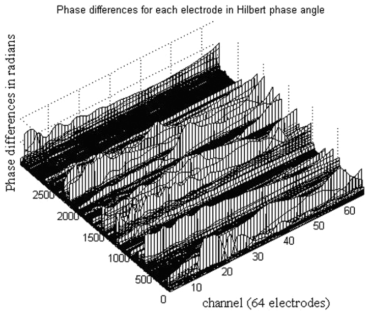
Hình 1 Biểu đồ raster cho thấy các hiệu số liên tiếp của pha giải tích đã mở (unwrapped), thay đổi theo số thứ tự kênh (trục hoành phải) và thời gian (trục hoành trái; 3000 bước thời gian tương ứng với thời lượng 6 giây của thí nghiệm). Hình này được tái dựng từ [47]
tương tác xã hội, hệ thống thần kinh và mạng máy tính [48, 49, 50]. Sự lan truyền tín hiệu thần kinh qua các hiệu ứng sợi trục có vận tốc vào khoảng 1–2 m/s, và hỗ trợ sự đồng bộ hóa trên các vùng rộng lớn của vỏ não [39, 43, 51]. Điều này tạo ra các hiệu ứng thế giới nhỏ (small-world) [52, 53] tương tự như sự lan truyền nhanh chóng của thông tin qua các tiếp xúc xã hội. Các mạng “thế giới nhỏ” có thể được tạo ra bởi các quy tắc gắn kết ưu tiên nhất định giữa các đỉnh. Số lượng cạnh liên kết với một nút cũng được gọi là bậc của nó. Quy tắc gắn kết ưu tiên đơn giản phát biểu rằng, trong quá trình tiến hóa của mạng, các nút mới sẽ được kết nối với các nút cũ theo tỷ lệ thuận với bậc của các nút cũ. Kết quả là, một nút có kết nối cao (= một nút có bậc cao) có khả năng nhận được nhiều kết nối hơn nữa. Quy tắc này có thể dẫn đến một cấu trúc trung tâm (hub) đặc biệt, làm cho đường kính mạng nhỏ hơn so với một mạng được tạo ngẫu nhiên thuần túy.
Trong một số mạng nhất định, như www và các hệ thống sinh học, phân phối bậc tuân theo quy luật lũy thừa, tức là nó không có thang đo (scale-free) [54, 55]. Phân phối không thang đo có thể được tạo ra bởi quy tắc gắn kết ưu tiên được chỉ định phù hợp, nhưng cũng bằng nhiều cách khác. Một lý thuyết toán học nhất quán về các mạng không thang đo được đưa ra bởi [56]. Tầm quan trọng của các tương quan khoảng cách xa đã được nhấn mạnh bởi nhiều nhà lý thuyết não bộ [57, 58, 59, 60, 61, 62, 63]. Các chuyển pha được nghiên cứu bởi mô hình thấm thần kinh (neuropercolation) mang lại một góc nhìn mới về hành vi không thang đo trong các mạng thế giới nhỏ liên quan đến các chức năng của não [64, 65].
Các chuyển pha giữa các trạng thái hỗn loạn tạo thành động lực học giải thích cách bộ não thực hiện những kỳ tích đáng kinh ngạc như trừu tượng hóa các yếu tố thiết yếu của hình ảnh từ các nền phức tạp, chưa biết và không thể đoán trước, khái quát hóa trên các ví dụ về các đối tượng lặp lại, gán ghép đáng tin cậy vào các lớp dẫn đến hành động thích hợp, lập kế hoạch hành động tương lai dựa trên kinh nghiệm quá khứ, và cập nhật liên tục thông qua quá trình học tập [28].
Phân tích EEG đã mang lại các mẫu điều biến biên độ (AM) không-thời gian với độ rõ nét chưa từng có [43]. Nó ủng hộ lý thuyết về tính tới hạn tự tổ chức (SOC) trong động lực học thần kinh [66, 67, 68]. SOC chỉ ra rằng bộ não tự duy trì ở rìa của sự mất ổn định toàn cục bằng cách tạo ra vô số điều chỉnh nhỏ và lớn dưới dạng các chuyển pha. Chuyển pha có nghĩa là mỗi điều chỉnh là một sự thay đổi đột ngột và không thể đảo ngược trong trạng thái của một quần thể thần kinh. SOC cung cấp một đồng hồ bên trong liên tục tái khởi tạo các dao động sóng mang beta-gamma, qua đó sự phát xung của vô số tế bào thần kinh vi mô trong não được tổ chức thành các mẫu không-thời gian vĩ mô điều khiển hành vi. Ý nghĩa của mẫu vĩ mô đạt được thông qua hành động có chủ đích của chủ thể, như sẽ được mô tả trong ví dụ về phát triển hệ thống có chủ đích dựa trên mô hình K (Katchalsky).
4 Các Kiến trúc K và Chức năng của Chúng
4.1 Ghi chú Lịch sử
Chúng tôi đề xuất một cách tiếp cận phân cấp đối với động lực học thần kinh không-thời gian, dựa trên các tập K. Các tập K cấp thấp được Freeman giới thiệu vào thập niên 1970, được đặt tên để vinh danh Aharon Kachalsky, một người tiên phong sớm của động lực học thần kinh [22]. Các tập K là các mô hình đa thang đo, mô tả mức độ phức tạp ngày càng tăng của cấu trúc và các hành vi động. Các tập K là các mô hình trung mô, và đại diện cho một cấp độ trung gian giữa các tế bào thần kinh vi mô và các cấu trúc não vĩ mô. Chẳng hạn, tập K0 cơ bản mô tả động lực học của một vi cột vỏ não với khoảng 104 tế bào thần kinh. Các tập K là các đặc tả tô-pô của hệ thống phân cấp kết nối trong các quần thể tế bào thần kinh. Động lực học của tập K được mô hình hóa bằng một hệ phương trình vi phân thường phi tuyến với các tham số phân bố. Động lực học K được biểu thị bằng ODE dự đoán các dạng sóng dao động được tạo ra bởi các quần thể thần kinh. Các tập K mô tả các mẫu không gian về pha và biên độ của các dao động, được tạo ra bởi các thành phần ở mỗi cấp độ. Chúng mô hình hóa các trường hoạt động thần kinh có thể quan sát được bao gồm EEG, LFP và MEG.
Các tập K bao gồm một hệ thống phân cấp các thành phần có độ phức tạp tăng dần, bao gồm các hệ thống K0, KI, KII, KIII, KIV và KV. Chúng mô hình hóa hệ thống phân cấp của bộ não bắt đầu từ quy mô mm đến toàn bộ bán cầu não. Các tập K cấp thấp, lên đến và bao gồm KIII, đã được nghiên cứu chuyên sâu vào giữa thập niên 1990 và chúng mô hình hóa các vỏ não cảm giác. Chúng đã được áp dụng để giải quyết các bài toán phân loại và nhận dạng mẫu khác nhau [69]. Các tập KIII là các hệ thống động lực phức tạp mô hình hóa sự phân loại ở các vùng vỏ não khác nhau, thường có hàng trăm bậc tự do. Trong các ứng dụng ban đầu, các tập KIII biểu hiện độ nhạy cực cao đối với các tham số mô hình, điều này ngăn cản việc sử dụng rộng rãi chúng trong thực tế [70]. Trong thập kỷ qua, phân tích có hệ thống đã xác định được các vùng hiệu suất bền vững [23], và các tính chất ổn định của các tập K đã được suy ra [71, 72]. Ngày nay, các tập K được sử dụng trong một loạt các ứng dụng, bao gồm phát hiện hóa chất [73], phân loại [74, 75], dự đoán chuỗi thời gian [76] và điều hướng robot [6, 77]. Sự phát triển gần đây bao gồm các tập KIV [62] mô hình hóa hành vi có chủ đích. Chúng có thể áp dụng cho điều khiển tự hành [78, 79, 80] và là trọng tâm chính của bài luận này.
4.2 Hệ thống Phân cấp của các Tập K
4.2.1 Tập KO
Tập KO đại diện cho một tập hợp các tế bào thần kinh không tương tác. Nó mô hình hóa sự tích hợp đuôi gai ở các tế bào thần kinh trung bình và một tính phi tuyến tĩnh dạng sigmoid cho sự truyền dẫn sợi trục. Chúng được mô tả bởi một phương trình vi phân thường (ODE) tuyến tính bậc 2 phụ thuộc trạng thái. Tập KO được chi phối bởi một điểm hút với đầu ra bằng không và duy trì ở trạng thái cân bằng trừ khi bị nhiễu loạn. KO mô hình hóa một quần thể tế bào thần kinh khoảng 104 tế bào thần kinh. Phương trình vi phân thường bậc hai mô tả nó được viết như sau:
(ab)d2P(t)
dt2 + (a + b)d P(t)
dt + P(t) = F(t). (1)
Ở đây a và b là các hằng số thời gian được xác định về mặt sinh học. P(t) biểu thị sự kích hoạt của nút như một hàm theo thời gian. F(t) bao gồm một hàm ánh xạ phi tuyến Q(x) tác động lên tổng có trọng số của sự kích hoạt từ các nút lân cận và bất kỳ đầu vào bên ngoài nào. Hàm sigmoid Q(x) được cho bởi phương trình:
Q(x) = q{1 −exp(− 1 q(ex −1))} (2)
Trong (2), q là tham số xác định độ dốc và tiệm cận cực đại của đường cong. Hàm sigmoid này được mô hình hóa từ thí nghiệm về sự kích hoạt thần kinh sinh học [22]. Động lực sinh học của hàm truyền Q(x), cũng như minh họa của nó được trình bày trong chương của Freeman trong tập sách này.
4.2.2 Tập KI
Một tập KI đại diện cho một tập hợp các tập K0, có thể là các đơn vị kích thích hoặc ức chế. Ở cấp độ KI, điều quan trọng là phải có cùng loại đơn vị trong hệ thống, do đó chúng ta không có phản hồi âm. Theo đó, chúng ta có thể nói về các tập KI kích thích hoặc ức chế, tức là KIE và KII tương ứng. Kết quả là, động lực học của một KI được mô tả bằng một sự hội tụ điểm cố định đơn giản. Nếu KI có mật độ kết nối chức năng đủ lớn, thì nó có khả năng duy trì một trạng thái hoạt động nền khác không bằng sự kích thích (hoặc ức chế) lẫn nhau. KI thường hoạt động cách xa trạng thái cân bằng nhiệt động lực học. Tính ổn định của tập KIE dưới nhiễu loạn xung được chứng minh bằng cách sử dụng các tế bào quanh cầu khứu giác (periglomerular) trong hành khứu giác [81]. Đóng góp quan trọng của nó là mức đầu ra kích thích được duy trì. Tương tác thần kinh thông qua sự kích thích lẫn nhau (hoặc ức chế lẫn nhau) ổn định là nền tảng để hiểu động lực học não bộ.
4.2.3 Tập KII
Một tập KII đại diện cho một tập hợp các tế bào kích thích và ức chế, KIE và KII. KII có bốn loại tương tác: kích thích-kích thích, ức chế-ức chế, kích thích-ức chế và ức chế-kích thích. Dưới sự kích thích kéo dài từ một tập KIE nhưng không có đầu vào cảm giác tương đương, tập KII được chi phối bởi động lực học chu kỳ giới hạn. Với đầu vào cảm giác mô phỏng bao gồm một tham số trật tự, tập KII trải qua một chuyển đổi trạng thái sang dao động ở một dải tần số hẹp trong vùng gamma.
4.2.4 Tập KIII
Mô hình KIII bao gồm một số tập KII được kết nối với nhau, và nó mô hình hóa một hệ thống cảm giác nhất định trong não, ví dụ như khứu giác, thị giác, thính giác, cảm giác thân thể. Người ta đã chứng minh rằng KIII có thể được sử dụng như một bộ nhớ liên kết mã hóa dữ liệu đầu vào thành các dao động không-thời gian không hội tụ [69, 23]. KIII tạo ra các dao động hỗn loạn, không tuần hoàn với phổ 1/f 2. Các bộ nhớ hỗn loạn KIII có một số ưu điểm so với các mạng hồi quy hội tụ: (1) chúng tạo ra các bộ nhớ bền vững dựa trên tương đối ít ví dụ học tập ngay cả trong môi trường nhiễu; (2) khả năng mã hóa của một mạng với một số lượng nút nhất định lớn hơn theo cấp số nhân so với các mạng hội tụ tương ứng; (3) chúng có thể truy hồi dữ liệu đã lưu trữ rất nhanh chóng, giống như cách con người và động vật có thể nhận ra một mẫu đã học chỉ trong tích tắc.
4.2.5 Tập KIV
Một tập KIV được hình thành bởi sự tương tác của 3 tập KIII. Nó được sử dụng để mô hình hóa các tương tác của não trước động vật có xương sống nguyên thủy trong sự hình thành các dạng hành vi có chủ đích đơn giản [82, 62]. Các mô hình KIV cung cấp một nền tảng khả thi về mặt sinh học để nghiên cứu hành vi nhận thức gắn liền với học tập và chu trình hành động-tri giác, và do đó sẽ là trọng tâm của bài tổng quan này. Hình 2 minh họa hệ thống phân cấp của các tập K.
4.3 Các Nguyên lý Cơ bản của Động lực học Thần kinh
Cách tiếp cận dựa trên mô hình K phân cấp được tóm tắt trong 10 “Khối xây dựng” của động lực học thần kinh [22, 29]:
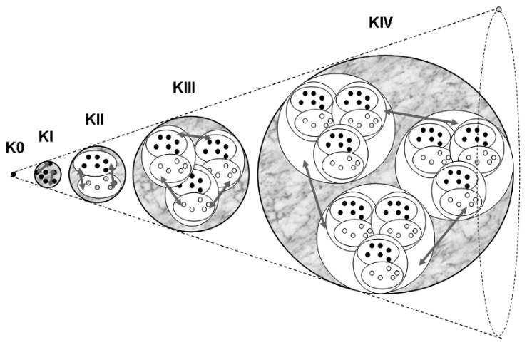
Hình 2 Hệ thống phân cấp tập K cho thấy sự tiến triển của các mô hình quần thể thần kinh từ cấp độ tế bào đến mô phỏng toàn bán cầu não, từ K0 đến KIV. Sự tiến triển của các mô hình có độ phức tạp tăng dần tuân theo các cấp độ tổ chức của bộ não. K0: là một tập hợp các tế bào thần kinh không tương tác được mô tả bởi một ODE tuyến tính phụ thuộc trạng thái cho sự tích hợp đuôi gai và một tính phi tuyến tĩnh dạng sigmoid cho sự truyền dẫn sợi trục. K0 được chi phối bởi một điểm hút với đầu ra bằng không và duy trì ở trạng thái cân bằng trừ khi bị nhiễu loạn. KI tương ứng với một cột vỏ não. Nó đại diện cho một tập hợp các tế bào thần kinh kích thích hoặc ức chế có mật độ kết nối chức năng đủ để duy trì trạng thái hoạt động nền bằng sự kích thích lẫn nhau hoặc ức chế lẫn nhau. KII đại diện cho một tập hợp các quần thể kích thích và ức chế, có các kết nối phản hồi dương và âm. KII có thể biểu hiện các dao động tuần hoàn chu kỳ giới hạn ở một dải tần số hẹp trong vùng gamma. KIII được hình thành bởi sự tương tác của nhiều tập KII thông qua các con đường sợi trục dài với độ trễ phân bố. Nó mô phỏng động lực học đã biết của các vùng cảm giác tạo ra các dao động hỗn loạn, không tuần hoàn với phổ 1/f 2. KIV được hình thành bởi sự tương tác của 3 tập KIII. Nó mô hình hóa bán cầu não với nhiều vùng cảm giác và sự hình thành các dạng hành vi có chủ đích đơn giản [82]
1. Điểm hút khác không được tạo ra bởi sự chuyển đổi trạng thái của một quần thể kích thích bắt đầu từ một điểm hút có hoạt động bằng không. Đây là chức năng của tập KI. 2. Sự nổi lên của dao động tắt dần thông qua phản hồi âm giữa các quần thể thần kinh kích thích và ức chế. Đây là đặc điểm kiểm soát dải tần số sóng mang beta-gamma và nó đạt được nhờ KII có độ lợi phản hồi thấp. 3. Chuyển đổi trạng thái từ điểm hút sang điểm hút chu kỳ giới hạn điều tiết dao động trạng thái dừng của một quần thể vỏ não hỗn hợp E-I KII. Nó đạt được nhờ KII có độ lợi phản hồi đủ cao. 4. Sự hình thành các dao động không tuần hoàn/hỗn loạn phổ rộng như hoạt động nền bởi phản hồi âm và dương kết hợp giữa nhiều quần thể KII; đạt được bằng cách ghép nối các bộ dao động KII với các tần số không thông ước.
5. Sóng phân bố của hoạt động đuôi gai hỗn loạn mang một mẫu không gian của điều biến biên độ AM trong KIII. 6. Sự gia tăng độ lợi phản hồi phi tuyến được thúc đẩy bởi đầu vào vào một quần thể hỗn hợp, dẫn đến sự mất ổn định của hoạt động nền và dẫn đến sự nổi lên của một mẫu AM trong KIII như bước đầu tiên trong tri giác. 7. Sự hiện thân của ý nghĩa trong các mẫu AM của hoạt động thần kinh được định hình bởi các tương tác khớp thần kinh đã được biến đổi thông qua học tập trong các lớp KIII. 8. Sự suy giảm nhiễu vi mô do cảm giác thúc đẩy và sự tăng cường các mẫu AM vĩ mô mang ý nghĩa bởi các phép chiếu vỏ não phân kỳ-hội tụ trong KIV. 9. Sự hình thành Gestalt và tiền hướng tâm (preafference) trong KIV thông qua sự hội tụ của các tín hiệu cảm giác bên ngoài và bên trong dẫn đến sự kích hoạt các cảnh quan điểm hút dẫn tới hành động có chủ đích. 10. Sự tích hợp toàn cục của các khung ở tốc độ theta thông qua các chuyển pha vỏ não mới đại diện cho hoạt động nhận thức cấp cao trong mô hình KV.
Các nguyên lý từ 1 đến 7 đã được triển khai trong các mô hình KIII và được áp dụng thành công trong nhiều chức năng nhận dạng và nhận diện mẫu khác nhau. Chúng đóng vai trò là các bước cơ bản để tạo điều kiện cho nhận thức bậc cao. Các nguyên lý 8 và 9 phản ánh sự tạo ra tính có chủ đích cơ bản bằng các tập KIV, vốn là mục tiêu của bài tổng quan hiện tại. Nguyên lý 10 thể hiện con đường dẫn tới tính có chủ đích cấp cao và cuối cùng là ý thức, điều không được đề cập ở hiện tại.
5 Xây dựng các Hệ thống Động lực Có chủ đích ở Cấp độ KIV
5.1 Các Khía cạnh của Tính có chủ đích
Các đặc điểm chính của tính có chủ đích như biểu hiện của hành vi thông minh cấp cao ở người và động vật có thể được tóm tắt như sau. Trí tuệ được đặc trưng bởi sự theo đuổi linh hoạt và sáng tạo các mục tiêu được xác định từ bên trong. Con người và động vật không phải là những kẻ tiếp nhận thụ động thông tin tri giác mà chủ động tìm kiếm đầu vào cảm giác. Trong quá trình đó, chúng hoàn thành chuỗi sau đây [83]:
• Hình thành các giả thuyết về các trạng thái kỳ vọng mà cá thể có thể đối mặt trong tương lai; • Diễn đạt các giả thuyết thành các mục tiêu có ý nghĩa cần hướng tới; • Xây dựng kế hoạch hành động để đạt được các mục tiêu; • Thông báo cho bộ máy cảm giác và tri giác về đầu vào dự kiến trong tương lai, một quá trình gọi là tái hướng tâm (re-afference); • Hành động vào môi trường phù hợp với hành động để đạt được các mục tiêu đã đề ra; • Thao tác các cảm biến, điều chỉnh các thuộc tính và hướng của chúng để tiếp nhận dữ liệu cảm giác;
• Khái quát hóa và phân loại dữ liệu cảm giác và kết hợp chúng thành các tri giác đa cảm giác gọi là Gestalt; • Xác minh và kiểm tra các giả thuyết, đồng thời cập nhật và học hỏi mô hình não bộ để tương ứng tốt hơn với dữ liệu tri giác được. • Hình thành các giả thuyết mới/cập nhật và tiếp tục toàn bộ quá trình một lần nữa.
Hoạt động tuần hoàn của dự đoán, kiểm tra bằng hành động, cảm nhận, tri giác và đồng hóa được gọi là tính có chủ đích. Tầm quan trọng của cách tiếp cận động lực học đối với trí tuệ được nhấn mạnh bởi giả thuyết của chúng tôi rằng động lực học phi tuyến là một thành phần chính của hành vi có chủ đích trong các hệ thống sinh học [84]. Do đó, hiểu biết động lực học của nhận thức và sự liên quan của nó đến tính có chủ đích là một bước đi thiết yếu hướng tới việc xây dựng các cỗ máy thông minh hơn [85]. Cụ thể, động lực học không hội tụ liên tục tạo ra thông tin mới như một nguồn giải pháp mới cho các vấn đề phức tạp. Giả thuyết động lực học được đề xuất về tính có chủ đích và trí tuệ vượt ra ngoài khái niệm cơ bản về hành vi hướng mục tiêu, hoặc các thao tác tinh vi với các biểu diễn ký hiệu để đạt được các mục tiêu cho trước. Tính có chủ đích bắt nguồn từ bên trong tác tử và không thể được cấy vào nó từ bên ngoài bởi bất kỳ tác nhân bên ngoài nào. Tính có chủ đích được biểu hiện và tiến hóa thông qua sự thay đổi động lực học trong trạng thái của tác tử khi nó tương tác với môi trường.
5.2 Thiết kế Hệ thống KIV Có chủ đích
Trong phần này, chúng tôi mô tả cấu trúc và hoạt động của mô hình KIV có chủ đích dựa trên [62, 82]. KIV có 4 thành phần chính. Ba trong số các thành phần là các tập KIII như đã nêu trong phần trước, tức là vỏ não, thể hồi hải mã và não trước đường giữa. Chúng được kết nối thông qua hoạt động điều phối của hạch hạnh nhân với thân não (BS) và phần còn lại của hệ viền. Hình 3 minh họa các kết nối giữa các thành phần của KIV. Các kết nối được hiển thị là hai chiều, nhưng chúng không đối xứng qua lại. Đầu ra của một nút trong tập KII được hướng đến các nút trong tập KII khác, nhưng nó không nhận đầu ra từ chính các nút đó mà từ các nút khác trong cùng tập KII. Trong Hình 3 có thể phân biệt ba loại tín hiệu cảm giác. Mỗi tín hiệu cảm giác này cung cấp kích thích cho một phần nhất định của não, lần lượt là các vỏ não cảm giác, não trước đường giữa (MF) và thể hồi hải mã (HF). Các loại tín hiệu cảm giác tương ứng được liệt kê dưới đây:
• Thụ thể ngoại cảm (Exteroceptors); • Thụ thể nội cảm (Interoceptors, bao gồm cả cảm giác bản thể); • Tín hiệu định hướng.
Thông tin cảm giác từ môi trường đi vào qua các thụ thể ngoại cảm băng rộng (thị giác, thính giác, cảm giác thân thể, v.v.) và được xử lý trong OB và PC dưới dạng một chuỗi các mẫu AM phân bố trong không gian. Các mẫu AM này
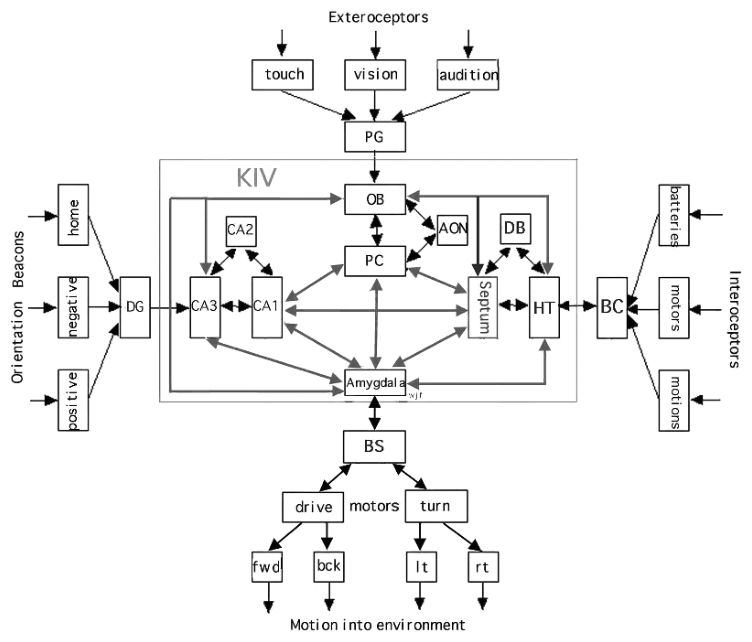
Hình 3 Mô hình KIV của bộ não, bao gồm ba tập KIII (vỏ não, thể hồi hải mã và não trước đường giữa), thể vân hạch hạnh nhân và BS, thân não. Hạch hạnh nhân là một tập KII, trong khi thân não và các động lực là thông thường. Các kết nối dài thưa thớt tạo nên tập KIV được hiển thị bằng màu xanh lam. Chúng được hiển thị là hai chiều, nhưng không đối xứng qua lại. Vị trí hội tụ và đầu ra được cung cấp bởi hạch hạnh nhân, bao gồm các phần nhân vỏ-giữa và đáy-bên của nó. Trong mô hình đơn giản hóa không có hệ thần kinh tự chủ này, hạch hạnh nhân cung cấp định hướng hướng mục tiêu cho hệ thống vận động, được chồng lên các phản xạ xúc giác cục bộ và các phản xạ bảo vệ khác [82]
được chồng lên các bản đồ không gian trong CA3 vốn được suy ra từ các đèn hiệu định hướng. Trong mô hình hiện tại, các mảng thụ thể riêng biệt được sử dụng để đơn giản hóa việc chuyên môn hóa thụ thể và kết nối bên trong. Hệ thống KIII vỏ não khởi phát chức năng nhận dạng mẫu bằng tác nhân gây mất ổn định do đầu vào cảm giác đối với động lực học đa chiều. Đầu vào được kiểm soát cổng bởi bộ phát vách (như một cái hít hơi hoặc chuyển động giật mắt). Điều này hiện thực hóa một cảnh quan điểm hút được hình thành bởi kinh nghiệm trước đó trong OB/PC, vốn trong mô hình của chúng tôi là vùng cảm giác chung. Ngược lại, hệ thống KIII hồi hải mã sử dụng sự phân loại hiện thân trong các đầu ra của OB và PC làm đầu vào chứa nội dung của nó, mà DG đóng góp vào đó vị trí thời gian và không gian của các sự kiện môi trường. Những sự kiện này đã đóng góp vào các mối quan hệ được học trước đó giữa các kỳ vọng và kinh nghiệm của hệ thống trong quá trình tìm kiếm mục tiêu được giao.
Một thành phần của hệ thống KIV tích hợp, thể não trước đường giữa, nhận các tín hiệu thụ thể nội cảm thông qua hạch nền, và xử lý chúng trong vùng dưới đồi và vách ngăn. MF cung cấp hệ thống giá trị của KIV, sử dụng thông tin về các mục tiêu bên trong và các điều kiện trong động vật. Nó cung cấp luồng “Tại sao?” cho hạch hạnh nhân, nơi kết hợp thông tin này với thông tin “Cái gì?” và “Ở đâu?” đến từ vỏ não và hồi hải mã để đưa ra quyết định về bước/hành động tiếp theo cần thực hiện. MF cũng là một đơn vị KIII, góp phần vào việc hình thành trạng thái kết hợp KIV toàn cục. Trạng thái KIV kết hợp tiến hóa qua một chuỗi các mẫu AM siêu ổn định, điều cũng được mô tả như nguyên lý điện ảnh [43] trong hoạt động của bộ não.
5.3 Học tập trong các Mô hình KIV
Để sử dụng các mảng tập K như những thiết bị tính toán và bộ nhớ mới lạ, chúng ta cần nghiên cứu ảnh hưởng của việc học tập đối với động lực học hệ thống. Đặc biệt, chúng ta cần mô tả vai trò của học tập và sự thích nghi đối với các chuyển pha. Hoạt động của bộ nhớ động có thể được mô tả như sau. Khi không có kích thích, hệ thống ở trạng thái đa chiều của hoạt động cơ bản kết hợp trong không gian. Trạng thái cơ bản được mô tả bởi một điểm hút toàn cục không tuần hoàn (hỗn loạn). Để đáp ứng với một kích thích bên ngoài, hệ thống bị đẩy ra khỏi trạng thái cơ bản vào một lưu vực bộ nhớ cục bộ của một cánh điểm hút. Cánh này được suy luận là có số chiều thấp hơn điểm hút cơ bản, tạo ra sự điều biến biên độ (AM) có mẫu không gian của sóng mang kết hợp. Hệ thống cư trú trong cánh cục bộ này xấp xỉ trong khoảng thời gian của kích thích và trở về trạng thái cơ bản sau khi kích thích kết thúc. Quá trình bùng phát theo thời gian này có thời lượng khoảng 200 ms. Bộ nhớ hệ thống được định nghĩa là tập hợp các lưu vực và cánh điểm hút, và sự truy hồi là sự cảm ứng bởi một chuyển đổi trạng thái của một dao động gamma không-thời gian với một mẫu AM không gian. Ba quá trình học tập được định nghĩa [23]:
• Học tập củng cố Hebbian đối với các mẫu kích thích; quá trình này nhanh và không thể đảo ngược; • Quen nhờn (habituation) đối với hoạt động nền; chậm, tích lũy và có thể đảo ngược; • Chuẩn hóa các hoạt động nút để duy trì sự ổn định tổng thể; tối ưu hóa tầm rất xa ngoài thời gian thực.
Các quá trình học tập khác nhau tồn tại trong một sự cân bằng tinh tế và tầm quan trọng tương đối của chúng thay đổi ở các giai đoạn khác nhau của quá trình ghi nhớ. Trong khuôn khổ của nghiên cứu này, hoạt động ổn định của mạng được nghiên cứu mà không sử dụng chuẩn hóa. Quen nhờn là một quá trình tự động ở mọi vùng cảm giác sơ cấp nhằm sàng lọc các kích thích không liên quan, gây nhầm lẫn, mơ hồ hoặc không mong muốn. Nó cấu thành một bộ lọc thích nghi để giảm tác động của nhiễu môi trường liên tục và không mang thông tin. Nó được cập nhật liên tục dưới một hình thức học tập, và có thể bị hủy bỏ đột ngột (“giải quen nhờn”) bởi các kích thích mới lạ và hầu như được tái thiết lập nhanh chóng tương đương (“tái quen nhờn”) nếu các kích thích mới lạ không được củng cố. Đây là một quá trình trung tâm không xảy ra ở cấp độ thụ thể cảm giác. Ở đây nó được mô hình hóa bằng sự suy giảm trọng số gia tăng làm giảm độ nhạy của hệ thống KIII đối với các kích thích từ môi trường không được chỉ định là mong muốn hoặc có ý nghĩa bởi sự củng cố đi kèm. Người ta kỳ vọng rằng hiệu ứng học tập sẽ góp phần vào việc hình thành các lưu vực điểm hút uốn lượn, tạo điều kiện thuận lợi cho các chuyển pha trong mô hình động lực học ở rìa của hoạt động hỗn loạn.
Quá trình học diễn ra trong các đơn vị CA1 và CC của hồi hải mã và vỏ não tương ứng. Chúng ta có hai loại học tập: học tập tương quan Hebbian và quen nhờn. Học tập Hebbian được ghép cặp với sự củng cố, phần thưởng hoặc hình phạt; tức là việc học chỉ diễn ra nếu tín hiệu củng cố hiện diện. Quá trình này mang tính từng đợt, không liên tục, dài hạn và không thể đảo ngược. Ngược lại, quen nhờn dẫn đến sự suy giảm liên tục phản ứng của một tế bào tỷ lệ thuận với hoạt động của nó, trừ khi được củng cố bởi các hiệu ứng trí nhớ dài hạn. Lưu ý rằng các tập KII bao gồm các lớp kích thích và ức chế tương tác với nhau, và các trọng số ngang giữa các nút trong các lớp kích thích được điều chỉnh bởi các hiệu ứng học tập; xem Hình 4 để biết minh họa.
5.4 Mô phỏng Hoạt động của Mô hình KIV
Các thí nghiệm đã được thiết kế và triển khai trong mô phỏng máy tính để chứng minh tiềm năng của KIV hoạt động dựa trên các nguyên lý động lực học có chủ đích. Trong các
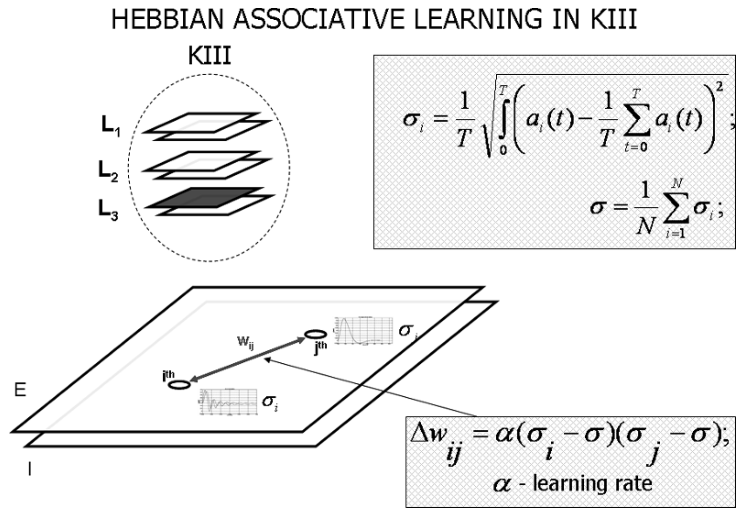
Hình 4 Minh họa quá trình học tập tương quan Hebbian tại lớp kích thích dưới cùng của tập KIII. Do bản chất không hội tụ của động lực học các tập K điển hình, sai số trung bình σi được tính cho mỗi kênh trong một cửa sổ thời gian T; T thường là 50 đến 100 ms trong các thí nghiệm; dựa trên [76]
thí nghiệm, chúng tôi đã sử dụng một tác tử tự hành di chuyển trong môi trường 2 chiều. Trong quá trình di chuyển, tác tử liên tục nhận được hai loại dữ liệu cảm giác: (1) khoảng cách đến chướng ngại vật; (2) và hướng tới một vị trí mục tiêu được cài đặt sẵn nào đó. KIV đưa ra quyết định về các hành động của mình hướng tới mục tiêu. Cơ chế điều khiển cảm giác của hệ thống là một tập KIV đơn giản bao gồm 2 tập KIII [79, 86, 87].
Tập KIV được áp dụng được minh họa trong Hình 5, có 3 tập KIII: hai KIII cho các vỏ não cảm giác và một KIII cho hồi hải mã. Trong thí nghiệm, chỉ có một vỏ não cảm giác được sử dụng, thực hiện các chức năng của vỏ não thị giác. Đầu vào định hướng và cảm giác thị giác được xử lý lần lượt trong mô hình hồi hải mã và vỏ não. Mỗi ô trong Hình 5 đại diện cho một tập KI hoặc KII. Để thống nhất, chúng tôi sử dụng thuật ngữ khứu giác trong vỏ não cho mọi phương thức cảm giác, phù hợp với động cơ ban đầu của Freeman về KIII như mô hình của hệ thống khứu giác. Mô hình KIV đầy đủ có các thụ thể nội cảm, hướng đến trạng thái bên trong. Trong cách tiếp cận đơn giản hóa thể hiện trong Hình 5, chúng tôi không kết hợp các thụ thể nội cảm.
Động lực học không-thời gian của hệ thống này cho thấy những thay đổi đột ngột trong hoạt động vỏ não mô phỏng, phù hợp với các đặc tính của các mẫu AM siêu ổn định quan sát được trong dữ liệu EEG. Một ví dụ về độ lệch pha giải tích được tính toán được hiển thị trên Hình 6, trong khoảng thời gian mô phỏng 4 giây và một mảng nội khứu (entorhinal) gồm 80 nút. Sự mất đồng bộ gián đoạn được thấy rõ ở tốc độ vài lần mỗi giây. Những kết quả này chỉ ra rằng mô hình KIV thực sự là một
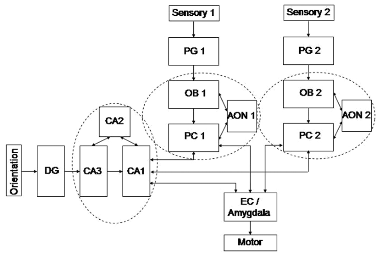
Hình 5 Sơ đồ của mô hình KIV về thể vỏ não-hồi hải mã với các phép chiếu dưới vỏ cho các hành động vận động. KIV bao gồm các tập KIII cho thể hồi hải mã, 2 vỏ não cảm giác, liên kết đến hệ thống vận động được điều phối bởi vỏ não nội khứu chịu ảnh hưởng của thể vân hạch hạnh nhân. Ký hiệu: PG - quanh cầu khứu giác; OB - hành khứu giác; AON - nhân khứu giác trước; PC - vỏ não tiền lê; HF - thể hồi hải mã; DG - hồi răng; CA1, CA2, CA3 - các phân khu của hồi hải mã. Các vòng tròn nét đứt biểu thị các đơn vị KIII cơ bản
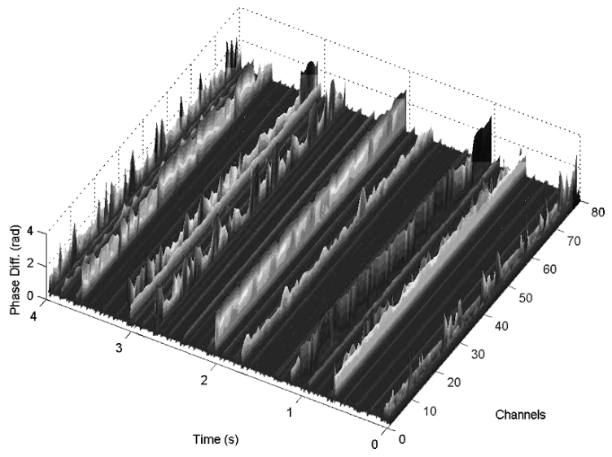
Hình 6 Minh họa các mô phỏng với mô hình bộ nhớ động tập K của bán cầu não; độ lệch pha trong vỏ não nội khứu theo thời gian và không gian. Sự mất đồng bộ gián đoạn đối với phần lớn của mảng được thấy rõ ràng [87]
mức độ trừu tượng phù hợp để nắm bắt các thuộc tính thiết yếu của các chuyển pha vỏ não như được chứng minh trong dữ liệu EEG và MEG nội sọ và trên da đầu.
Sự đồng bộ hóa quy mô lớn trong vỏ não, bị ngắt quãng gián đoạn bởi các khoảng thời gian mất đồng bộ ngắn thông qua các chuyển pha, là một thuộc tính nổi lên của vỏ não như một cơ quan thống nhất. Chu trình đồng bộ hóa - mất đồng bộ hóa gián đoạn là một tương quan sinh lý thần kinh của tính có chủ đích và ý thức. Mô hình KIV có khả năng chứng minh động lực học có chủ đích này. KIV là một ứng cử viên để triển khai tính có chủ đích trong các hệ thống nhân tạo.
Các nghiên cứu chuyên sâu đang được tiến hành hướng tới việc giải thích nội dung của các mẫu AM siêu ổn định giữa các hành động chuyển pha, như những khối xây dựng của hành động có chủ đích. Logic động là một công cụ mô hình hóa quan trọng [12] đã được sử dụng để nhận dạng hệ thống trong dữ liệu rất nhiễu với mức độ lộn xộn cao. Logic động, khi được áp dụng để phân tích dữ liệu EEG đa kênh, có thể cung cấp ước lượng tối ưu về các mẫu AM được mô hình hóa thông qua sự nổi lên của nhiều nón pha (phase cones) [88]. Việc mô hình hóa được thực hiện trong bối cảnh mức độ tri thức nhất định hiện có về hành vi của hệ thống tự hành và sự tương tác của nó với môi trường. Bắt đầu với một mô hình ban đầu mơ hồ, mô tả được cải thiện lặp đi lặp lại, dẫn đến các mô hình ngày càng chính xác hơn. Cuối cùng, một trạng thái mô hình đạt được mang lại sự nhận dạng tốt nhất có thể cho bài toán. Lý thuyết logic động cho thấy rằng những cải tiến lặp đi lặp lại như vậy chỉ đòi hỏi một số lượng nhỏ các lần lặp, sử dụng một chuỗi các mô hình phân cấp tiến hóa từ mơ hồ đến chính xác. Việc tích hợp logic động lực học và phương pháp luận tập K có tiềm năng mang lại bước đột phá trong việc xác định ý nghĩa nhận thức của các mẫu AM siêu ổn định, tiến tới việc xác định ngôn ngữ của bộ não.
6 Động lực học Có chủ đích cho Điều khiển Robot
6.1 Các Cách tiếp cận Lấy cảm hứng Sinh học đối với Điều hướng và Điều khiển
Các kiến trúc thần kinh lấy cảm hứng sinh học được sử dụng rộng rãi để điều khiển robot di động và đã chứng minh khả năng điều hướng bền vững trong các kịch bản thực tế đầy thách thức. Các cách tiếp cận này bao gồm các phương pháp bao hàm (subsumption) [89], BISMARC - Hệ thống Lấy cảm hứng Sinh học cho Điều khiển Xe tự hành Dựa trên Bản đồ [90, 91], các tổ chức hành vi phân cấp lấy cảm hứng từ tập tính học [92], thuật toán điều khiển dựa trên hành vi sử dụng logic mờ [93]. Các kiến trúc giống não và mô hình hóa hoạt động não là một lĩnh vực ngày càng phổ biến của điều khiển thông minh, bao gồm việc học bản đồ nhận thức trong hồi hải mã [94, 95], vai trò của tế bào vị trí trong điều hướng [96], lập bản đồ thị giác và hồi hải mã [97, 98, 99], học tập trong hệ thống vỏ não-hồi hải mã [86]. Do mức độ chi tiết cao trong việc tái tạo các phần của não tham gia vào điều hướng, phân tích hành vi bao gồm các nhiệm vụ điều hướng đơn giản.
Cách tiếp cận sử dụng các tập K làm bộ nhớ động lực học được thúc đẩy bởi các phát hiện thực nghiệm liên quan đến các mẫu hoạt động của quần thể tế bào thần kinh. Không giống như các mô hình khác, các mô hình K dựa trên các phát hiện thực nghiệm liên quan đến động lực học trung mô của hoạt động não. Mô hình điều hướng bao gồm hoạt động của hồi hải mã và vỏ não. Như trong các cách tiếp cận khác, người ta giả định rằng hồi hải mã xử lý thông tin liên quan đến các mốc toàn cục, và vỏ não xử lý thông tin nhận được từ vùng lân cận của tác tử. Một sự khác biệt quan trọng giữa mô hình K và các kiến trúc điều khiển lấy cảm hứng sinh học khác là cách thức thông tin được xử lý. Các mô hình K mã hóa thông tin trong các mẫu AM của các dao động được tạo ra bởi các khớp thần kinh Hebbian trong các lớp của các hệ thống con KIII, trong khi các mô hình khác sử dụng tốc độ phát xung và các khớp thần kinh Hebbian [95, 100]. Một khía cạnh quan trọng khác của các mô hình là quy trình học tập được sử dụng để tìm kiếm mục tiêu. Bất chấp những khác biệt này, hiệu suất của mô hình K ngang bằng hoặc vượt trội hơn so với các cách tiếp cận tiêu chuẩn [77, 86].
6.2 Bệ thử nghiệm Robot SRR2K
Chúng tôi chứng minh hoạt động của hệ thống KIV cho việc xử lý trực tuyến các đầu vào cảm giác và giao nhiệm vụ hành vi động trên bo mạch bằng nền tảng SRR2K (Sample Return Rover) tại cơ sở trong nhà của Phòng thí nghiệm Robotics Hành tinh thuộc JPL. Các thí nghiệm minh họa khả năng tránh chướng ngại vật bền vững kết hợp với điều hướng hướng mục tiêu của robot SRR2K. Mô tả chi tiết về các thí nghiệm được đưa ra trong [80]. Các thí nghiệm được tiến hành tại cơ sở trong nhà của Nhóm Robotics Hành tinh, JPL.
Nó bao gồm một khu vực thử nghiệm có hình dạng không đều rộng khoảng 5×5m được bao phủ bởi cát và đá mô phỏng môi trường thám hiểm tự nhiên. Bố cục địa hình thay đổi từ bề mặt nhẵn dễ tiến tới đến địa hình gồ ghề với nhiều đồi và dốc khác nhau đặt ra nhiều thách thức hơn cho SRR2K khi đi qua đó. Điều kiện ánh sáng có thể điều chỉnh theo nhu cầu.
SRR2K là một robot di động bốn bánh với các bánh xe được lái độc lập và các khớp vai của cánh tay robot được điều khiển độc lập; xem Hình 7. Khối lượng của nó là 7 kg, và công suất sử dụng tối đa khi di chuyển nhanh (30–50cm/s) là khoảng 35 W chỉ có thể duy trì trong khoảng 6 giờ mà không cần sạc lại pin. Trong môi trường thí nghiệm nhỏ của nghiên cứu này, không có quãng đường lớn nào được di chuyển, vì vậy dung lượng pin không phải là một hạn chế thực tế đối với chúng tôi.
Các phương thức cảm biến chính trên SRR2K bao gồm: (1) một cặp camera lập thể cách nhau 5 cm, cao 15 cm và trường nhìn 130 độ (Hazcam); (2) một camera mục tiêu gắn trên cánh tay thao tác có trường nhìn 20 độ (Viewcam); (3) con quay hồi chuyển DMU bên trong ghi nhận theo các tọa độ chúc (pitch), nghiêng (roll) và lệch (yaw); (4) gia tốc kế Crossbow theo các tọa độ x, y và z; (5) một cảm biến Mặt trời để cung cấp thông tin định vị toàn cầu [91]. Để đơn giản hóa các điều kiện đo lường và thu thập dữ liệu, camera mục tiêu gắn trên đỉnh, cánh tay robot và cảm biến định vị toàn cầu không được sử dụng trong các thí nghiệm hiện tại. Công trình này chỉ dựa trên các phép đo từ camera lập thể và đơn vị DMU. Cách tiếp cận này giúp đơn giản hóa nhu cầu hỗ trợ kỹ thuật và giám sát tín hiệu, nhưng nó cũng đặt ra một nhiệm vụ thách thức hơn để hoàn thành mục tiêu một cách hiệu quả và đáng tin cậy.
Hình 7 Xe tự hành Thu hồi Mẫu (SRR2K) đặt tại cơ sở trong nhà của Phòng thí nghiệm Robotics Hành tinh mô phỏng địa hình tự nhiên trong môi trường hành tinh. SRR2K có 4 bánh xe có thể điều khiển độc lập. Hình cũng cho thấy một cánh tay robot không được sử dụng trong các thí nghiệm hiện tại. Hệ thống cảm giác bao gồm camera thị giác, cảm biến hồng ngoại, gia tốc kế và cảm biến định hướng toàn cầu [80]
Ở những khoảng thời gian đều đặn, các vectơ cảm giác được ghi lên máy tính trên bo mạch trong một tệp, được hệ thống KIV truy cập để xử lý thêm. Việc cập nhật các mảng dữ liệu cảm giác diễn ra khoảng mỗi 30–40 giây, được xác định bởi tốc độ của SRR2K và thời gian tính toán để tính đầu ra KIV. Chúng tôi có các dữ liệu cảm giác sau: (1) vectơ dữ liệu thị giác bao gồm 10 hệ số wavelet được xác định từ hình ảnh 480×640 pixel được ghi lại của một Hazcam; (2) các bản ghi IMU sử dụng giá trị trung bình và phương sai của các số đọc con quay hồi chuyển và gia tốc kế dọc theo 3 tọa độ không gian. Các mô-men thống kê được xác định trên cửa sổ ghi dữ liệu được cho bởi tốc độ làm mới tệp như mô tả ở trên; (3) hướng đi của xe tự hành, là một giá trị góc đơn lẻ được xác định bằng cách so sánh hướng của xe tự hành với hướng của mục tiêu.
6.3 Kiến trúc Điều khiển KIV
Chúng tôi áp dụng tập KIV để điều hướng robot. KIV là bộ não của một robot có chủ đích, hành động vào môi trường của nó bằng cách khám phá và học hỏi từ các hệ quả cảm giác của hành động đó. KIV hoạt động trên nguyên lý mã hóa trong các dao động không-thời gian, tương tự như các dao động EEG trong não động vật có xương sống. Bằng cách học tập tích lũy, KIV tạo ra một mô hình nội tại về môi trường của nó, mà nó sử dụng để định hướng các hành động của mình trong khi tránh các mối nguy hiểm và đạt tới các mục tiêu do người điều khiển xác định. Chúng tôi đặt ra nhiệm vụ đơn giản là bắt đầu từ một góc và đi đến vị trí mục tiêu GOAL_XY được chỉ định khi bắt đầu thí nghiệm. Con đường thẳng có thể không phải là tốt nhất khi có một số khu vực gồ ghề khó băng qua, hoặc một số ngọn đồi khó leo, v.v. Trong tình huống này, chúng tôi kỳ vọng rằng một robot SRR2K được huấn luyện đúng cách sẽ quyết định đi theo một con đường tránh các khu vực khó khăn, hoặc ít nhất là cố gắng làm như vậy. Nếu việc học và khái quát hóa đúng cách đã diễn ra, người ta có thể thay đổi địa hình thành một bố cục mà SRR2K chưa từng thấy trước đây, nó vẫn sẽ đạt được hiệu suất tốt.
Điều quan trọng cần lưu ý là hệ thống điều khiển dựa trên KIV nhìn chung sẽ không đưa ra một quyết định tối ưu tuyệt đối. Hoặc ít nhất điều này là không có khả năng xảy ra. Thay vào đó, nó có thể chọn một con đường cận tối ưu. Nhưng nhìn chung, điều này sẽ bền vững hơn so với một con đường tối ưu được thiết kế bởi một phương pháp dựa trên quy tắc. Xe tự hành ở một trạng thái nhất định tại bất kỳ thời điểm hoạt động nào, và nó chuyển sang trạng thái tiếp theo dựa trên trạng thái hiện tại và thông tin đầu vào sẵn có. Thuật toán điều khiển CRUISE_XY_Z nhận 2 biến được điều khiển
ANGLE_TO_TURN và DISTANCE_TO_GO. Các biến này được KIV cung cấp thông qua một tệp điều khiển được tải xuống SRR2K thường xuyên. Một biến thứ ba
DESIRED_VELOCITY cũng có thể được điều khiển. Tuy nhiên, trong nhiệm vụ hạn chế cho dự án hiện tại, vận tốc được gán một giá trị là 10 cm/s và không thay đổi để đơn giản.
Mô hình KIV hoàn chỉnh bao gồm bốn thành phần chính, cụ thể là 3 tập KIII để xử lý cảm giác, và một KII để tích hợp, như đã được mô tả trước đây; xem Hình 3. Trong mô hình đầy đủ, một tập KIII mô hình hóa hồi hải mã, một tập khác mô hình hóa vùng vỏ não, và tập thứ ba mô tả não trước đường giữa. Thành phần chính thứ tư là vỏ não nội khứu (EC) cùng với hạch hạnh nhân, vốn là một tập KII.
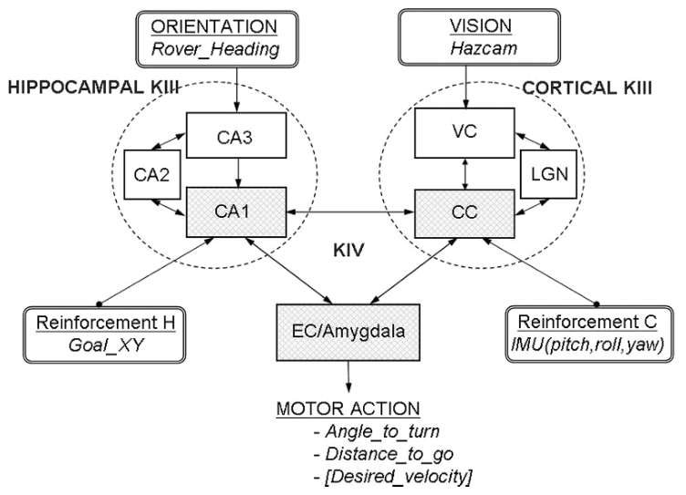
Hình 8 Sơ đồ của mô hình KIV đơn giản hóa được sử dụng trong các thí nghiệm điều khiển SRR2K. Ký hiệu của các đơn vị KII: CA1, CA2 và CA3 là các phân khu hồi hải mã; VC và CC lần lượt là vỏ não thị giác và vỏ não đại não, LGN là thể gối bên; EC - vỏ não nội khứu cùng với hạch hạnh nhân. Đặc tả về các tín hiệu cảm giác định hướng và thị giác, cùng các tín hiệu củng cố hồi hải mã và vỏ não được trình bày trong văn bản. Các ô tô bóng chỉ ra các vị trí nơi diễn ra quá trình học (CA1 và CC) và truy hồi (EC/Hạch hạnh nhân)
EC tích hợp các ảnh hưởng từ tất cả các phần của bán cầu não, và nó cung cấp liên kết đến các phần bên ngoài của hệ viền cho hành động vận động. Trong công trình hiện tại, một KIV đơn giản hóa được sử dụng, có một tập KIII cảm giác thị giác, một tập KIII hồi hải mã. Để đơn giản, chúng tôi chỉ có một tín hiệu củng cố đại diện cho đơn vị thụ thể nội cảm thay vì một mô hình não trước đường giữa KIII đầy đủ. Theo đó, EC tích hợp các tác động của các đơn vị KIII vỏ não và hồi hải mã. Tập KIV được áp dụng được mô tả trong Hình 8.
6.4 Học tập và Điều khiển Robot Di động SRR2K với Bộ não KIV Có chủ đích
Robot được dẫn đường bởi KIV sử dụng kinh nghiệm của mình để liên tục giải quyết các vấn đề về tri giác và điều hướng do môi trường áp đặt khi nó tự hành theo đuổi các mục tiêu do người huấn luyện lựa chọn. Có ba giai đoạn trong hoạt động điều khiển KIV: (i) giai đoạn học tập; (ii) giai đoạn gán nhãn; và (iii) giai đoạn thử nghiệm. Để biết chi tiết xem [78].
• Ở giai đoạn học tập, SRR2K khám phá môi trường và xây dựng các liên kết giữa các phương thức cảm giác thị giác, DMU và định hướng. Nếu nó thực hiện một bước đi tốt trong quá trình khám phá ngẫu nhiên, nó nhận được một tín hiệu củng cố dương và một chu trình học tập Hebbian được hoàn thành. Các tín hiệu củng cố được cung cấp bởi các giá trị DMU trong trường hợp kênh thị giác, và bởi cảm biến vị trí mục tiêu trong kênh định hướng. Các hiệu ứng học tập tương ứng được đánh dấu là Reinforcement C và Reinforcement H trong Hình 8. • Ở giai đoạn gán nhãn, một số kích hoạt nhất định từ mô hình KIV được thu thập làm các mẫu tham chiếu. Các mẫu này là những kích hoạt đại diện cho chuyển động đúng theo một hướng nhất định. Những kích hoạt này sau đó được sử dụng để tìm hướng di chuyển đúng cho tác tử trong giai đoạn thử nghiệm. Sử dụng lược đồ k láng giềng gần nhất, quyết định được đưa ra bằng cách chọn sự khớp tốt nhất giữa k mẫu AM được định nghĩa trước và mẫu hoạt động thực tế. Về độ dài của bước di chuyển, để đơn giản chúng tôi sử dụng các giá trị rời rạc 25 cm, 0 cm hoặc –25 cm, tương ứng với tiến lên, đứng yên và lùi lại. • Trong các thử nghiệm, SRR2K được đặt tại một vị trí được chọn trong môi trường và để tự di chuyển. Tại mỗi bước, nó thu thập dữ liệu cảm giác, trích xuất các đặc trưng chính và chuyển cho KIV. Dưới ảnh hưởng của đầu vào cảm giác, động lực học được thể hiện bởi KIV thay đổi và các mẫu AM mới được kích hoạt. Các kích hoạt được tạo ra từ đầu vào thử nghiệm này được khớp với các kích hoạt tham chiếu đã lưu trữ. Sử dụng lược đồ bỏ phiếu k láng giềng gần nhất, KIV quyết định bước tiếp theo cần thực hiện.
6.5 Trình diễn Hợp nhất Đa cảm giác và Ra quyết định Có chủ đích trong KIV
Trong các thí nghiệm, SRR2K sử dụng 2 phương thức cảm giác: định hướng và thị giác tầm ngắn. Chúng tôi không sử dụng thông tin thị giác tầm xa về các mốc và về vị trí mục tiêu, do đó hiện tại chúng tôi không nhắm tới việc tạo ra một bản đồ nhận thức nội tại dựa trên các mốc [10]. Thay vào đó, chúng tôi nghiên cứu cách KIV xây dựng các liên kết đa cảm giác và cách sử dụng các liên kết đó để lựa chọn hành động trong hệ thống động lực có chủ đích.
Trong một kịch bản điển hình, cảm biến thị giác chứa thông tin về địa hình phía trước SRR2K trong phạm vi khoảng 0.5 m với trường nhìn 130 độ. Điều này bao phủ địa hình mà robot đang tiến tới sẽ đi qua trong một hoặc hai bước tiếp theo. Quá trình xử lý thị giác dựa trên wavelet chuyển đổi dữ liệu hình ảnh thô thành một mảng các hệ số wavelet đặc trưng cho độ gồ ghề của địa hình. Chúng tôi chia trường nhìn thành 10 phân đoạn, mỗi phân đoạn được đặc trưng bởi một hệ số độ gồ ghề duy nhất. Một ví dụ được hiển thị trong Hình 9, trong đó 10 hệ số được đưa ra dọc theo trục ngang, trong khi chuỗi các bước thời gian tiến triển dọc theo trục đứng. Thang độ xám biểu thị một dải các hệ số từ đen (hệ số nhỏ và địa hình bằng phẳng) đến trắng (hệ số lớn và địa hình gồ ghề). Mỗi bước thời gian tương ứng với một bước di chuyển của SRR2K, mất khoảng 30 giây. Người ta có thể thấy các mô đất gồ ghề trong trường nhìn của robot ở bên phải tại các bước thời gian 4 và 16, và
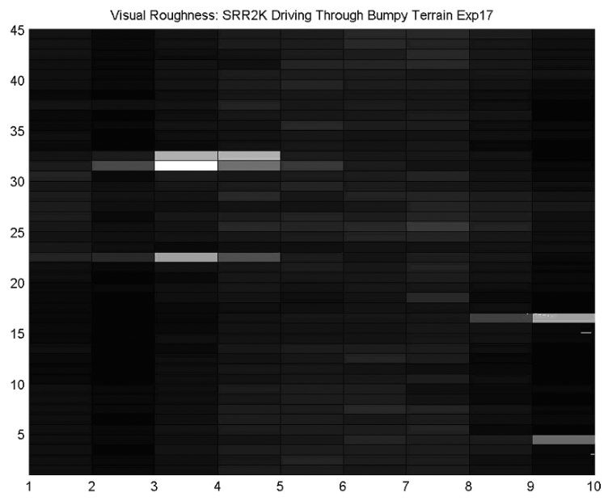
Hình 9 Chuỗi thời gian của độ gồ ghề thị giác được nhìn thấy bởi SRR2K khi nó đi qua một địa hình gồ ghề. Các tông màu tối tương ứng với bề mặt bằng phẳng, và màu trắng biểu thị địa hình gồ ghề. Các mô đất gồ ghề được nhìn thấy trong trường nhìn của robot ở bên phải tại các bước thời gian 4 và 16, và ở bên trái tại các bước 22 và 31–32. Tổng cộng có 45 bước xuất hiện tuần tự từ dưới lên trên trong Hình 9, nhưng quỹ đạo không thẳng và robot đã thực hiện nhiều lần rẽ trái và rẽ phải khi đi qua địa hình gồ ghề.
Các thành phần dao động của con quay hồi chuyển DMU (giá trị căn bậc hai trung bình bình phương, RMS) được hiển thị trong Hình 10, bảng trên. Người ta có thể thấy rằng DMU RMS có một số đỉnh gây ra do đi qua các khu vực gồ ghề có đá. Kết luận này được xác nhận bởi các bản ghi của gia tốc kế, cho thấy các đỉnh dao động tương tự tại cùng các vị trí; xem Hình 10, bảng dưới.
Để phát triển một mô hình điều khiển hiệu quả, SRR2K phải có khả năng tránh chướng ngại vật nếu nó nhìn thấy chúng thay vì cố gắng trèo qua chúng ngay cả khi điều đó có nghĩa là không đi theo con đường trực tiếp hướng tới mục tiêu. Một khi robot ở trên các mô đất gồ ghề, nó sẽ trải qua các dao động cao và giá trị RMS cao của DMU. Nó cần tránh tình huống này, do đó dao động RMS được sử dụng làm tín hiệu học tập củng cố âm. Mặt khác, việc di chuyển về phía vị trí mục tiêu là điều mong muốn và tạo ra tín hiệu học tập củng cố dương. Bản chất của nhiệm vụ là dự đoán trước dao động gồ ghề không mong muốn vài bước dựa trên tín hiệu thị giác. SRR2K cần tự phát triển sự liên kết này. Một cách tiếp cận AI thông thường sẽ cung cấp một số cơ sở quy tắc sử dụng tín hiệu thị giác; ví dụ, rẽ trái nếu bạn thấy một mô đất ở
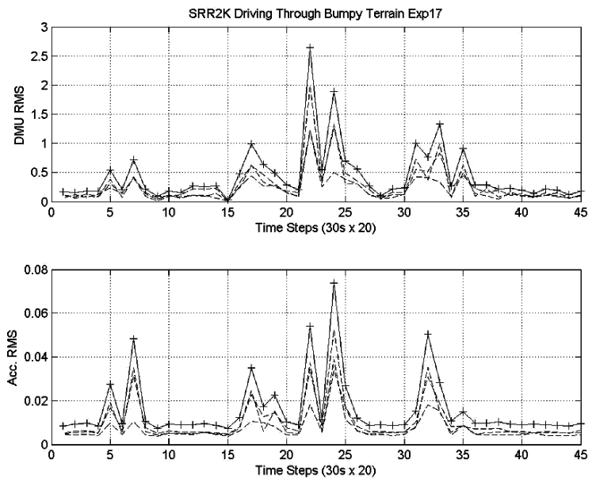
Hình 10 Các thành phần dao động của các bản ghi DMU (bảng trên); đường nét liền, nét đứt và nét chấm biểu thị 3 thành phần không gian khi SRR2K đi qua địa hình trong 45 bước. Các thành phần dao động của gia tốc kế (bảng dưới); các ký hiệu giống như trên bên phải. Đây có thể là một chiến lược thành công trên các nhiệm vụ tương đối đơn giản, nhưng rõ ràng không có cách nào để phát triển một cơ sở quy tắc có thể đưa ra chỉ dẫn trong một cuộc vượt địa hình tổng quát với những thách thức môi trường bất ngờ.
SRR2K đã chứng minh rằng nó thực sự có thể học được sự liên kết giữa các phương thức cảm giác khác nhau, và nó đi qua thành công một địa hình có chướng ngại vật mà không đâm vào chúng và đạt tới vị trí mục tiêu đích [80]. Điều đáng nói là điều khiển dựa trên KIV có tùy chọn không chỉ lấy các giá trị cảm giác tức thời, mà còn cả dữ liệu quan sát được vài bước trước đó. Điều này liên quan đến một bộ nhớ ngắn hạn (STM) với độ sâu bộ nhớ nhất định. Trong nhiệm vụ đã cho, một bộ nhớ có thể sâu 3–4 bước, hoặc hơn. Người ta thực tế có thể tối ưu hóa việc học và hiệu suất hệ thống dựa trên độ sâu bộ nhớ [78]. Điều này chưa được sử dụng trong các thí nghiệm SRR2K và được lên kế hoạch hoàn thành trong tương lai.
Ở bước tiếp theo của các thí nghiệm, camera gắn trên đỉnh (Viewcam) có thể được sử dụng để hỗ trợ hình thành bản đồ nhận thức. Các bản đồ nhận thức được tạo ra theo cách tự tổ chức thay vì học có giám sát. Cách tiếp cận này khác với các kỹ thuật tạo bản đồ nhận thức hiện có [10]. Chúng tôi không áp đặt các quy tắc từ bên ngoài mà muốn hệ thống phát triển một hành vi để hiện thân một số quy tắc có ý nghĩa. Các bản đồ được phát triển có thể được sử dụng để tạo ra các quy tắc hoặc cập nhật/sửa đổi các quy tắc hiện có khi cần thiết.
7 Triển vọng về Động lực học Có chủ đích
Một phương pháp tính toán dựa trên mẫu lấy cảm hứng sinh học đã được phác thảo, đại diện cho một sự rời bỏ quyết liệt khỏi các thiết kế máy tính kỹ thuật số ngày nay, vốn dựa trên tính toán với các con số được biểu diễn bằng các chuỗi chữ số. Bộ não không hoạt động với các con số kỹ thuật số, thay vào đó chúng hoạt động bằng cách sử dụng một chuỗi các mẫu hoạt động điều biến biên độ (AM), được quan sát thấy trong các phép đo EEG, MEG và fMRI. Sử dụng các nguyên lý động lực học thần kinh, chúng ta có thể thay thế tính toán dựa trên ký hiệu truyền thống bằng xử lý dựa trên mẫu. Trong cách tiếp cận của chúng tôi, các hạng mục không được định nghĩa “tiên nghiệm”. Thay vào đó, chúng nổi lên thông qua hoạt động tự tổ chức của các quần thể thần kinh tương tác trong không gian và thời gian. Chúng nổi lên và tan biến với tốc độ vài chu kỳ mỗi giây, theo sự chi phối của nhịp theta nền quan sát được trong não. Trong những năm qua, tính khả thi của cách tiếp cận này đã được chứng minh trong nhiều bài toán thực tiễn về phân loại, nhận dạng mẫu và ra quyết định.
Ở đây chúng tôi phát triển một lý thuyết động lực học phi tuyến về bộ não để có thể triển khai trong các thiết kế nhân tạo. Nguyên lý nền tảng được thúc đẩy bởi các phát hiện sinh lý thần kinh về tính toán dựa trên mẫu trong não thông qua chuỗi các chuyển pha vỏ não. Có bằng chứng đáng kể chỉ ra rằng các chuyển pha vỏ não là biểu hiện của các nhận thức cấp cao và có khả năng là của ý thức, tạo ra sự chuyển đổi giữa các mẫu AM siêu ổn định. KIV mô hình hóa các chuyển pha nhận thức như được quan sát trong não.
Các hệ thống động lực có chủ đích được giới thiệu dưới dạng mô hình KIV. KIV có tiềm năng tạo ra các chuyển pha vĩ mô, cung cấp cơ chế xử lý thông tin nhanh chóng và bền vững trong KIV, theo phong cách của bộ não. KIV là một mô hình não bộ nhận thức dựa trên sinh học có khả năng học hỏi và phản ứng với các đầu vào môi trường dựa trên kinh nghiệm của nó một cách bền vững và sáng tạo. Mô hình não bộ động lực học có chủ đích dựa trên KIV giải quyết bài toán nền tảng ký hiệu (symbol grounding problem) cổ điển bằng cách liên kết hành vi có chủ đích với động lực học thần kinh trung mô đã biết. Động lực học trung mô là thuộc tính then chốt của mô hình của chúng tôi giúp bắc cầu qua khoảng trống trong hiểu biết của chúng ta về mối liên kết tâm trí-cơ thể.
KIV mô tả chu trình hành động-tri giác nhận thức ở cốt lõi của tính có chủ đích, bao gồm dự đoán, lập kế hoạch hành động, thực thi, cảm nhận kết quả của hành động, đánh giá dự đoán, cập nhật dự đoán mới. Chu trình nhận thức trong mô hình động lực học diễn ra theo thời gian thực với tốc độ khung hình tương ứng với các dải quan sát được ở người. KIV đã được triển khai bằng các bệ thử nghiệm điều khiển robot trong mô phỏng tính toán và môi trường thực tế. Các thí nghiệm đã được tiến hành để tạo ra hành vi có chủ đích dẫn đến học tập, hình thành hạng mục và ra quyết định dựa trên tri thức đã học trong các kịch bản trước đó. Triển vọng phát triển trong tương lai của các hệ thống có chủ đích cũng đã được phác thảo.
Lời cảm ơn Nghiên cứu được trình bày trong công trình này đã được hoàn thành trong thời gian tác giả làm việc tại Phòng thí nghiệm Sức đẩy Phản lực (JPL) của NASA, Pasadena, CA; và tại Phòng thí nghiệm Nghiên cứu Không quân Hoa Kỳ (AFRL), Hanscom AFB, MA. Sự hỗ trợ tài chính từ các nguồn sau đây được đánh giá rất cao: Văn phòng Khái niệm Tiên tiến JPL, bởi Neville Marzwell; Viện Hàn lâm Quốc gia, Văn phòng Học bổng Nghiên cứu Cao cấp của Hội đồng Nghiên cứu Quốc gia. Tác giả xin gửi lời cảm ơn tới Tiến sĩ Walter J Freeman, UC
Berkeley vì sự hỗ trợ liên tục của ông. Tác giả cũng xin cảm ơn Terry Hunstberger, Hrand Aghazarian, Eddie Tunstel, và tất cả các thành viên của JPL Planetary Robotics; và tới Tiến sĩ Leonid Perlovsky, AFRL và Đại học Harvard.
Tài liệu tham khảo
1. Turing A. M. Computing machinery and intelligence. Mind, 59:433–460, 1950. 2. J. V. Neumann. The computer and the brain. New Haven, CT, Yale Univ. Press, 1958. 3. A. Newell and H. A. Simon. Human problem solving. Englewood Cliffs, NJ: Prentice-Hall, 1972. 4. Newell A. Physical symbol systems. Cognitive Science, 4:135–183, 1980. 5. A. Newell. Unified theories of cognition. Cambridge, MA: Harvard University Press, 1990. 6. Harter D. and Kozma R. Aperiodic dynamics and the self-organization of cognitive maps in autonomous agents. Int. J. of Intelligent Systems, 21:955–971, 2006. 7. Laird J. E., Newell A., and Rosenbloom P. S. Soar: An architecture for general intelligence. Artificial Intelligence, 33:1–64, 1987. 8. Anderson J. A., Silverstein J. W., Ritz, S. A. Jones, and R. S. Distinctive features, categorical perception, and probability learning: Some applications of a neural model. Psychological Review, 84:413–451, 1977. 9. H. L. Dreyfus. What Computers Still Can’t Do - A Critique of Artificial Reason. Cambridge, MA, MIT Press, 1992. 10. Mataric M. J. and Brooks R. A. Cambrian Intelligence, chapter Learning a distributed map representation based on navigation behaviors, pages 37–58. Cambridge, MA: The MIT Press, 1999. 11. A. Clark. Mindware: An Introduction to the Philosophy of Cognitive Science. Oxford University Press, 2001. 12. L. I. Perlovsky. Neural Networks and Intellect. Oxford Univ. Press, New York, NY, 2001. 13. D. E. Rumelhart and J. L. McClelland. Parallel distributed processing: Explorations in the microstructure of cognition. Cambridge, MA, MIT Press, 1986. 14. C. Bishop. Neural networks for pattern recognition. Oxford University Press, 1995. 15. Haykin S. Neural networks - A comprehensive foundation. Prentice Hall, NJ, 1998. 16. Towell G. G. and Shavlik J. W. Knowledge-based artificial neural networks. Artificial Intelligence, 70:119–165, 1994. 17. Sporns O., Almassy N., and Edelman G. M. Plasticity in value systems and its role in adaptive behavior. Adaptive Behavior, 7(3-4), 1999. 18. G. M. Edelman and G. Tononi. A Universe of Consciousness: How Matter Becomes Imagination. Basic Books, New York, N.Y., 2000. 19. Vershure P.M., Krose B., and Pfeifer R. Distributed adaptive control: The self-organization of behavior. Robotics and Autonomous Systems, 9:181–196, 1992. 20. R. Pfeifer and C. Scheier. Understanding Intelligence. Cambridge, MA, MIT Press, 1999. 21. Vershure P.M. and Althaus P. A real-world rational agent: Unifying old and new ai. Cognitive Science, 27(4):561–590, 2003. 22. W. J. Freeman. Mass Action in the Nervous System. Academic Press, New York, 1975. 23. Kozma. R. Freeman. W.J. Chaotic resonance - methods and applications for robust classification of noisy and variable patterns. Int. J. Bifurcation and Chaos, 11:1607–1629, 2001. 24. Katchalsky A., Rowland V., and Huberman B. Dynamic patterns of brain cell assemblies. Neuroscience Res.Program Bull., 12, 1974. 25. H. Haken. Synergetics: An Introduction. Berlin: Springer-Verlag, 1983. 26. J. A. S. Kelso. Dynamic patterns: The self-organization of brain and behavior. Cambridge, MA, MIT Press, 1995. 27. J.A.S. Kelso and D. A. Engstrom. The complementary nature. Cambridge, MA, MIT Press, 2006.
28. Freeman W.J., Burke B.C., and Holmes M.D. Aperiodic phase re-setting in scalp eeg of betagamma oscillations by state transitions at alpha-theta rates. Hum. Brain Mapp., 19:248–272, 2003. 29. Freeman W.J. Origin, structure, and role of background eeg activity. part 3. neural frame classification. Clin. Neurophysiology, 116:1118–1129, 2005. 30. Changeux J-P. and Dehaene S. Neuronal models of cognitive functions. Cognition, 33: 63–109, 1989. 31. Tsuda I. Toward an interpretation of dynamic neural activity in terms of chaotic dynamical systems. Beh. and Brain Sci., 24(5):793–810, 2001. 32. Lehmann D, Strik WK, Henggeler B, Koenig T, and Koukkou M. Brain electric microstates and momentary conscious mind states as building blocks of spontaneous thinking: I. visual imagery and abstract thoughts. Int. J Psychophysiol., 29:1–11, 1998. 33. Fingelkurts A .A. and Fingelkurts A. A. Operational architectonics of the human brain biopotential field: Towards solving the mind-brain problem. Mind and Brain, 2:262–296, 2001. 34. Fingelkurts A .A. and Fingelkurts A. A. Making complexity simpler: multivariability and metastability in the brain. Internat J.Neurosci, 114:843–862, 2004. 35. Barrie J.M., Freeman W.J., and Lenhart M. Modulation by discriminative training of spatial patterns of gamma eeg amplitude and phase in neocortex of rabbits. J. Neurophysiol., 76: 520–539, 1996. 36. Ohl FW Scheich H and Freeman WJ. Change in pattern of ongoing cortical activity with auditory category learning. Nature, 412:733–736, 2001. 37. Ohl FW, Deliano M, Scheich H, and Freeman WJ. Early and late patterns of stimulus-related activity in auditory cortex of trained animals. Biol. Cybernetics, 88:374–379, 2003. 38. Bressler S.L. Cortical coordination dynamics and the disorganization syndrome in schizophrenia. Neuropsychopharmacology, 28:S35–S39, 2003. 39. Bressler S.L. and Kelso J.A.S. Cortical coordination dynamics and cognition. Trends in Cognitive Sciences, 5:26–36, 2001. 40. Le Van Quyen M, Foucher J, Lachaux J-P, Rodriguez E, Lutz A, Martinerie J, and Varela F. Comparison of hilbert transform and wavelet methods for the analysis of neuronal synchrony. J. Neurosci. Meth., 111:83–98, 2001. 41. Werner G. Perspectives on the neuroscience of cognition and consciousness. BioSystems, 2006. 42. B. J. Baars. A cognitive theory of consciousness. Cambridge Univ. Press, MA, 1988. 43. Freeman W.J. Origin, structure, and role of background eeg activity. part 2. analytic amplitude. Clin. Neurophysiology, 115:2077–2088, 2004. 44. I. Prigogine. From Being to Becoming: Time and Complexity in the Physical Sciences. WH Freeman, San Francisco, 1980. 45. Lachaux J-P, Rodriquez E, Martinerie J, and Varela FA. Measuring phase synchrony in brain signals. Hum. Brain Mapp., 8:194–208, 1999. 46. Quiroga RQ Kraskov A Kreuz T Grassberger P. Performance of different synchronization measures in real data: A case study on electroencephalographic signals. Physical Rev E, 6504(U645-U6 58):art. no. 041903, 2002. 47. Demirer R.M., Kozma R., Caglar M., and Polatoglu Y. Hilbert transform optimization to detect cortical phase transitions in beta-gamma band. (Submitted), 2006. 48. S. Kauffman. The Origins of Order - Self-Organization and Selection in Evolution. Oxford Univ. Press, 1993. 49. Crutchfield J.P. The calculi of emergence: Computation, dynamics, and induction. Physica D, 75:11–54, 1994. 50. Watts D.J. Strogatz S.H. Collective dynamics of “small-world” networks. Nature, 393:440– 442, 1998. 51. Bressler S.L. Understanding cognition through large-scale cortical networks. Current Directions in Psychological Science, 11:58–61, 2002. 52. D. Watts. Six Degrees: The Science of a Connected Age. New York: Norton, 2003. 53. Wang XF and Chen GR. Complex networks: small-world, scale-free and beyond. IEEE Trans. Circuits Syst., 31:6–20, 2003.
54. Albert R. and Barabási A.L. Statistical mechanics of complex networks. Reviews of Modern Physics, 74:47, 2002. 55. Barabási A.L. and E. Bonabeau. Scale-free networks. Scientific American, 288:60–69, 2003. 56. Bollobas B. and Riordan O. Handbook of graphs and networks, chapter Results on scale-free random graphs, pages 1–34. Wiley-VCH, Weinheim, 2003. 57. Ingber L. Neocortical Dynamics and Human EEG Rhythms, chapter Statistical mechanics of multiple scales of neocortical interactions, pages 628–681. New York: Oxford U.P., 1995. 58. Hoppensteadt F.C. and Izhkevich E.M. Thalamo-cortical interactions modeled by weakly connected oscillators: could the brain use fm radio principles? BioSystems, 48:85–94, 1998. 59. Friston K.J. The labile brain. i. neuronal transients and nonlinear coupling. Phil Trans R Soc Lond B, 355:215–236, 2000. 60. Linkenkaer-Hansen K, Nikouline VM, Palva JM, and Iimoniemi R.J. Long-range temporal correlations and scaling behavior in human brain oscillations. J. Neurosci., 15:1370– 1377, 2001. 61. K. Kaneko and I. Tsuda. Complex Systems: Chaos and Beyond. A Constructive Approach with Applications in Life Sciences. Springer Verlag, 2001. 62. Kozma R., Freeman W.J., and Erdi P. The kiv model - nonlinear spatio-temporal dynamics of the primordial vertebrate forebrain. Neurocomputing, 52-54:819–825, 2003. 63. Stam CJ, Breakspear M, van Cappellen van Walsum A.M, and van Dijk BW. Nonlinear synchronization in eeg and whole-head recordings of healthy subjects. Hum Brain Mapp, 19:63–78, 2003. 64. Kozma R., Puljic M., Bollobas B., Balister P., and Freeman W.J. Phase transitions in the neuropercolation model of neural populations with mixed local and non-local interactions. Biol. Cybernetics, 92:367–379, 2005. 65. Balister P., Bollobas B., and Kozma R. Large deviations for mean field models of probabilistic cellular automata. Random Structures and Algorithms, 29:399–415, 2006. 66. Bak P., Tang C., and Wiesenfeld K. Phys. Rev. Lett., 59:381, 1987. 67. P. Bak. How Nature Works - The Science of Self-Organized Criticality. Springer Verlag, N.Y., 1996. 68. H. J. Jensen. Self-organized criticality - Emergent behavior in physical and biological systems. Cambridge University Press, 1998. 69. Chang H.J. and Freeman W.J. Parameter optimization in models of the olfactory neural system. Neural Networks, 9:1–14, 1996. 70. Freeman W.J., Chang H.J., Burke B.C., Rose P.A., and Badler J. Taming chaos: stabilization of aperiodic attractors by noise. IEEE Trans. Circ. and Syst. I., 44:989–996, 1997. 71. Xu D. and Principe J. Dynamical analysis of neural oscillators in an olfactory cortex model. IEEE Trans. Neur. Netw., 15:1053–1062, 2004. 72. Ilin R. and Kozma R. Stability of coupled excitatory-inhibitory neural populations and application to control of multi-stable systems. Physics Lett A, 360(1):66–83, 2006. 73. Gutierrez-Galvez A. and Gutierrez-Osuna R. Contrast enhancement of sensor-array patterns through hebbian/antihebbian learning. Proc. 11th Int. Symp. Olfaction and Elect. Nose, Barcelona, Spain, 2005. 74. Chang H.J., Freeman W.J., and Burke B.C. Optimization of olfactory model in software to give 1/f power spectra reveals numerical instabilities in solutions governed by aperiodic (chaotic) attractors. Neural Networks, 11:449–466, 1998. 75. Freeman W.J., Kozma R., and Werbos P.J. Biocomplexity - adaptive behavior in complex stochastic dynamical systems. BioSystems, 59(2):109–123, 2001. 76. Beliaev I. and Kozma R. Time series prediction using chaotic neural networks on the cats benchmark test. Neurocomputing (in press), 2007. 77. Harter D. and Kozma R. Chaotic neurodynamics for autonomous agents. IEEE Trans. Neural Networks, 16(4):565–579, 2005. 78. Kozma R. and Muthu S. Implementing reinforcement learning in the chaotic kiv model using mobile robot aibo. IEEE/RSJ Int. Conf. on Intelligent Robots and Systems IROS’04, Sendai, Japan, 2004.
79. Kozma R., Wong D., Demirer M., and Freeman W.J. Learrning intentional behavior in the k-model of the amygdala and enthorhinal cortex with the cortico-hippocampal formation. Neurocomputing, 65-66:23–30, 2005. 80. Huntsberger T., Tunstel E., and Kozma R. Intelligence for Space Robotics, chapter Onboard learning strategies for planetary surface rovers, pages 403–422. TCI Press, San Antonio, TX, 2006. 81. W. J. Freeman. Neurodynamics: An Exploration of Mesoscopic Brain Dynamics. London, U.K., Springer-Verlag, 2000. 82. Kozma R. and Freeman W.J. Basic principles of the kiv model and its application to the navigation problem. J. Integrative Neurosci., 2:125–140, 2003. 83. Nunez R.E. and Freeman W.J. Restoring to cognition the forgotten primacy of action, intention, and emotion. J. Consciousness Studies, 6(11-12):ix–xx, 1999. 84. Harter D. and Kozma R. Navigation and cognitive map formation using aperiodic neurodynamics. Proc. of 8th Int. Conf. on Simulation of Adaptive Behavior (SAB’04), LA, CA., 8:450–455, 2004. 85. Kozma R. and Fukuda T. Intentional dynamic systems - fundamental concepts and applications (editorial). Int. J. Intell. Syst., 21(9):875–879, 2006. 86. Voicu H., Kozma R., Wong D., and Freeman W.J. Spatial navigation model based on chaotic attractor networks. Connect. Sci., 16(1):1–19, 2004. 87. Kozma R. and Myers M. Analysis of phase transitions in kiv with amygdale during simulated navigation control. IEEE Inf. Joint Conf. Neur. Netw. IJCNN05, Montreal, Canada, 2005. 88. Kozma R., R. Deming, and L. Perlovsky. Optimal estimation of parameters of transient mixture processes using dynamic logic approach. Conference on Knowledge-Intensive Multi-Agent Systems KIMAS’07, Boston, MA, 2007. 89. Gat E., Desai R., Ivlev R., Loch J., and Miller D.P. Behavior control for robotic exploration of planetary surfaces. IEEE Trans. Robotics and Autom., 10(4):490–503, 1994. 90. Huntsberger T.L. and Rose J. Bismarc- a biologically inspired system for map-based autonmous rover control. Neural Networks, 11(7-8):1497–1510, 1998. 91. Huntsberger T., Cheng Y., Baumgartner E. T., Robinson M., and Schenker P. S. Sensory fusion for planetary surface robotic navigation, rendezvous, and manipulation operations. Proc. Int. Conf. on Advanced Robotics, Lisbon, Portugal, pages 1417–1424, 2003. 92. Tunstel E. Ethology as an inspiration for adaptive behavior synthesis in autonomous planetary rovers. Autonomous Robots, 11:333–339, 2001. 93. Seraji H. and Howard A. Behavior-based robot navigation on challenging terrain: A fuzzy logic approach. IEEE Trans. Robotics and Autom., 18(3):308–321, 2002. 94. O’Keefe J and Recce M.L. Phase relationship between hippocampal place units and the eeg theta rhythm. Hippocampus, 3:317–330, 1993. 95. Blum K. I. and Abbott L. F. A model of spatial map formation in the hippocampus of the rat. Neural Computation, 8:85–93, 1996. 96. Touretzky D. S. and Redish A. D. Theory of rodent navigation based on interacting representations of space. Hippocampus, 6(3):247–270, 1996. 97. Bachelder I.A. and Waxman A.M. Mobile robot visual mapping and localization: A view based neurocomputational architecture that emulates hippocampal place learning. Neural Networks, 7:1083–1099, 1994. 98. Arleo A. and W. Gerstner. Spatial cognition and neuro-mimetic navigation: A model of hippocampal place cell activity. Biological Cybernetics, 83:287–299, 2000. 99. Hasselmo M.E., Hay J., Ilyn M., and Gorchetchnikov A. Neuromodulation, theta rhythm and rat spatial navigation. Neural Networks, 15:689–707, 2002. 100. Berthoz A. Trullier O. Wiener S. and Meyer J.-A. Biologically-based artificial navigation systems: Review and prospects. Progress in Neurobiology, 51:483–544, 1997.
Làm thế nào Bộ não Tạo ra, Thay đổi và Ghi đè Có chọn lọc các Quy tắc Ứng xử của mình?
Daniel S. Levine
Tóm tắt Làm thế nào chúng ta biết nói chuyện cởi mở với bạn bè nhưng lại dè dặt với người lạ? Làm thế nào chúng ta di chuyển giữa nơi làm việc, câu lạc bộ và nơi thờ tự mà điều chỉnh hành vi của mình cho phù hợp với từng bối cảnh? Làm thế nào chúng ta phát triển các quy tắc phụ thuộc ngữ cảnh về những gì chúng ta có thể ăn? Chúng ta giải quyết những vấn đề như vậy một cách dễ dàng, nhưng còn rất lâu nữa mới thiết kế được các hệ thống thông minh có thể làm được điều đó. Tuy nhiên, chúng ta đã biết đủ về các chức năng nhận thức và hành vi của ba vùng vỏ não trước trán, cùng các kết nối dưới vỏ của chúng, để đề xuất một lý thuyết thần kinh về sự hình thành và học tập quy tắc phụ thuộc ngữ cảnh. Các quy tắc mà một cá nhân tuân theo có thể thay đổi, hoặc do sự phát triển cá nhân hoặc do sự thay đổi về căng thẳng. Điều này có thể được giải thích một phần bởi sự tương tác qua lại giữa các tín hiệu từ hồi hải mã, biểu thị mức độ liên quan đến nhiệm vụ, và hạch hạnh nhân, biểu thị mức độ nổi bật về mặt cảm xúc. Cả hai tập hợp tín hiệu này đều ảnh hưởng đến cổng hạch nền vốn giải ức chế có chọn lọc các hành vi để đáp ứng với ngữ cảnh.
1 Giới thiệu
Một hệ thống nhận thức bậc cao phức tạp rõ ràng cần phát triển các tiêu chí cho biết những hành động nào nên thực hiện và những hành động nào nên kiềm chế không thực hiện. Môi trường của hệ thống càng phức tạp, các tiêu chí đó càng cần phải linh hoạt và nhạy cảm với ngữ cảnh.
Thuật ngữ “quy tắc” gây ra một mức độ khó chịu nhất định trong cộng đồng mạng thần kinh. Đối với một số độc giả, nó mang hàm ý về các quy tắc logic IF-THEN nghiêm ngặt từ một hệ thống sản xuất như trong trí tuệ nhân tạo ký hiệu. Thực tế, Fodor và Pylyshyn [19] và các nhà khoa học nhận thức ký hiệu khác đôi khi đã lập luận rằng các mạng thần kinh chủ nghĩa kết nối vốn không phù hợp để mô phỏng khả năng tạo quy tắc ký hiệu của con người.
Tuy nhiên, tôi dùng từ “quy tắc” không nhất thiết theo nghĩa nghiêm ngặt này, mặc dù rõ ràng các mạng thần kinh trong não chúng ta có khả năng thực hiện các phép toán logic hình thức. Tôi chỉ đơn giản muốn nói đến các nguyên tắc, thường là những nguyên tắc có thể mô tả một cách có ý thức, để tổ chức hành vi và ứng xử của một người qua một loạt các tình huống. Thông thường, đây là những phương pháp phỏng đoán (heuristics) hoặc quy tắc ngón tay cái; tức là những điều “nên làm” và “không nên làm” không mang tính tuyệt đối mà có xu hướng áp dụng, theo thuật ngữ của các nhà triết học, là ceteris paribus (mọi thứ khác đều bình đẳng).
Các phương pháp phỏng đoán mà con người chúng ta sử dụng bắt nguồn từ đâu? Một trong những câu trả lời quen thuộc là: tiến hóa. Nghĩa là, câu trả lời là các phương pháp phỏng đoán của chúng ta dựa trên các mẫu hành vi đã được chọn lọc để sinh tồn và thành công sinh sản. Ngoài ra, các nhà tâm lý học tiến hóa có xu hướng tin rằng mặc dù có một số khác biệt giữa các loài về chi tiết, những điều cơ bản của các mẫu hành vi này phần lớn được chia sẻ với các loài động vật có vú khác. Tuy nhiên, với tư cách là lời giải thích cho chức năng nhận thức bậc cao, các lập luận tiến hóa tiêu chuẩn cung cấp điểm khởi đầu nhưng chưa đầy đủ, như tôi hy vọng sẽ chứng minh trong chương này.
Có một số mẫu hành vi bắt nguồn từ tiến hóa và hiện diện ở tất cả chúng ta, chẳng hạn như các mẫu hành vi vị kỷ (hoặc tự bảo vệ) và các mẫu hành vi gắn kết xã hội (bao gồm cả hành vi vị tha). Tuy nhiên, tất cả chúng ta đều khác nhau về các tiêu chí để quyết định khi nào thì tham gia vào mẫu hành vi nào, và trong các bối cảnh xã hội và môi trường nào. Hơn nữa, các tiêu chí quyết định này không chỉ mang tính di truyền mà còn chịu ảnh hưởng nặng nề bởi việc học tập và văn hóa [18, 39].
Đúng vậy, nhà tiến hóa luận cứng rắn sẽ lập luận, nhưng tất cả những điều này đều phụ thuộc vào tính dẻo (plasticity) rộng lớn của bộ não chúng ta (hiện diện ở mọi loài động vật nhưng được mở rộng vượt bậc ở con người), và tiến hóa đã chọn lọc chúng ta vì đặc tính dẻo này. Điều này chắc chắn đúng, nhưng điều đó không kéo theo thuyết tất định tiến hóa cho từng hành vi phát sinh từ tính dẻo đó.
Hơn nữa, sự sinh tồn và sinh sản không giải thích được tất cả các hành vi. Ngoài ra, con người còn tìm kiếm hạnh phúc toàn diện (well-being): sự tự hiện thực hóa bản thân, sự kích thích thú vị, sự hài hòa thẩm mỹ, sự làm chủ và ý nghĩa đều có thể là những động lực mạnh mẽ (xem, ví dụ, [14, 18, 42, 51]). Trong khi sự thích nghi tiến hóa có thể cung cấp những giải thích chức năng hợp lý cho hầu hết các động lực này, các hành vi mà chúng tạo ra có đời sống riêng tách biệt khỏi giá trị sinh tồn hoặc sinh sản của chúng.
Bây giờ chúng ta tìm cách phân tách các hệ thống não bộ tham gia vào việc phát triển các quy tắc ở nhiều mức độ phức tạp có thể có.
2 Các Vùng Não Then chốt cho sự Phát triển Quy tắc
2.1 Vùng dưới đồi, Não giữa và Thân não
Các nhu cầu sinh lý cơ bản của sinh vật được biểu diễn trong các cấu trúc dưới vỏ sâu được chia sẻ với các loài động vật khác và có mối liên hệ chặt chẽ với hệ thống nội tạng và nội tiết. Các vùng này bao gồm một số nhân của vùng dưới đồi và thân não.
Phần này của bộ não không có cấu trúc gọn gàng dễ dàng cho việc mô hình hóa; do đó, những vùng này phần lớn bị các nhà mô hình hóa gần đây bỏ qua bất chấp tầm quan trọng chức năng của chúng đối với động vật, bao gồm cả con người. Tuy nhiên, các vùng dưới vỏ sâu này đã đóng vai trò then chốt trong một số mạng thần kinh dựa trên sinh lý học sớm nhất (được phát triển vào thập niên 1960 và 1970).
Kilmer, McCulloch và Blum [30] trong mô hình mô phỏng máy tính có lẽ là đầu tiên về một vùng não, đã đặt các phương thức hành vi tổng quát của sinh vật (ví dụ: ăn, uống, tình dục, khám phá, v.v.) vào cấu trúc lưới của não giữa và thân não. Cấu trúc lưới được chọn vì nó cần thiết cho sự tỉnh táo, có khả năng tạo ra các hành vi thiết yếu (mặc dù không do kích thích thúc đẩy) khi vắng mặt vỏ não, và được tổ chức về mặt giải phẫu thành các tiểu vùng bán tự trị được ví như một chồng phỉnh poker. Mô hình S-RETIC của [30] được chia thành các mô-đun tương tự như những chồng phỉnh poker này; các phương thức hành vi cạnh tranh trong mỗi mô-đun cho đến khi cùng một phương thức thắng cuộc cạnh tranh ở hơn một nửa số mô-đun. Một ý tưởng tương tự xuất hiện trong lý thuyết mạng chú ý có chọn lọc của Grossberg [23], người đã đặt cái mà ông gọi là hệ thống dị cấp động lực-cảm giác (sensory-drive heterarchy) ở vùng dưới đồi. Các động lực khác nhau trong hệ thống dị cấp cạnh tranh để được kích hoạt, chịu ảnh hưởng bởi cả các kết nối với nội tạng (tạo lợi thế trong cuộc cạnh tranh cho những động lực cần được thỏa mãn nhất) và với vỏ não (tạo lợi thế cho những động lực có sẵn các tín hiệu cảm giác liên quan).
Ý tưởng về một mạng lưới cạnh tranh-hợp tác của các động lực hoặc nhu cầu này vẫn chưa được kiểm chứng nhưng dường như có ích về mặt chức năng cho việc mô hình hóa hành vi và nhận thức. Việc lập quy tắc và học tập một phần dựa trên các tính toán liên quan đến những hành động nào có thể dẫn đến sự thỏa mãn của những nhu cầu sống sót sau cuộc cạnh tranh. Tuy nhiên, sự cạnh tranh giữa các nhu cầu không nhất thiết là kẻ thắng lấy hết, và những quyết định tốt nhất trong các tình huống phức tạp là những quyết định tiến một phần hướng tới việc đáp ứng một số lượng lớn hơn các nhu cầu.
Nhưng chúng ta hiểu “nhu cầu” là gì? Có bằng chứng hành vi đáng kể cho thấy từ này nên được mở rộng ra ngoài những nhu cầu thuần túy sinh lý như đói, khát, tình dục và sự bảo vệ. Thuật ngữ này cũng nên bao gồm các nhu cầu về kết nối xã hội, kích thích thẩm mỹ và trí tuệ, lòng tự trọng và sự tự hoàn thiện bản thân, chẳng hạn.
Ý tưởng về các động lực và mục đích sinh học vượt ra ngoài những thứ thúc đẩy sự sinh tồn và sinh sản có từ ít nhất là khái niệm tháp nhu cầu của nhà tâm lý học Abraham Maslow, một khái niệm đã bị hiểu lầm rộng rãi. Từ “thứ bậc” (hierarchy) đã bị hiểu sai thành việc thỏa mãn các nhu cầu cấp thấp hơn phải đi trước một cách nghiêm ngặt bất kỳ nỗ lực nào nhằm đáp ứng các nhu cầu cấp cao hơn, một cách diễn giải mà Maslow đã phủ nhận rõ ràng ([42], tr. 26). Nhưng mô hình hóa mạng thần kinh, dựa trên các hệ thống động lực, cho phép một ý nghĩa linh hoạt hơn cho từ “thứ bậc” (hoặc, như McCulloch và Grossberg ưa dùng hơn, dị cấp - heterarchy). Nó là một thứ bậc theo nghĩa có một mạng lưới cạnh tranh-hợp tác với các thiên kiến (xem, ví dụ, [24]). Điều này có nghĩa là có xu hướng có trọng số lớn hơn hướng về các nhu cầu cấp thấp hơn nếu những nhu cầu đó chưa được đáp ứng, hoặc nếu có quá nhiều sự không chắc chắn về việc đáp ứng dự kiến của chúng (xem Hình 1 để biết sơ đồ). Tuy nhiên, thiên kiến hướng tới việc đáp ứng nhu cầu cấp thấp hơn là một dạng né tránh rủi ro, và có những khác biệt cá nhân đáng kể về tính cách trong việc né tránh rủi ro hoặc tìm kiếm rủi ro có thể làm giảm nhẹ hoặc làm trầm trọng thêm các thiên kiến thứ bậc.
Nhưng điều này vẫn để lại một số câu hỏi rộng mở cho nhà mô hình hóa thần kinh dựa trên sinh học hoặc nhà khoa học thần kinh. Chúng ta biết đôi chút (mặc dù kiến thức của chúng ta chưa mang tính dứt khoát) về các vị trí dưới vỏ sâu cho các nhu cầu định hướng sinh tồn và sinh sản. Nhưng liệu cũng có các vị trí dưới vỏ sâu cho các nhu cầu gắn kết, thẩm mỹ, tri thức hoặc lòng tự trọng không? Nếu có, có vẻ như những nhu cầu này được chia sẻ với hầu hết các loài động vật có vú khác. Các dữ liệu như của [8] gợi ý rằng câu trả lời có thể là có, ít nhất là đối với các nhu cầu gắn kết. Các nhà nghiên cứu này đã tìm thấy một vị trí vùng dưới đồi, ở một
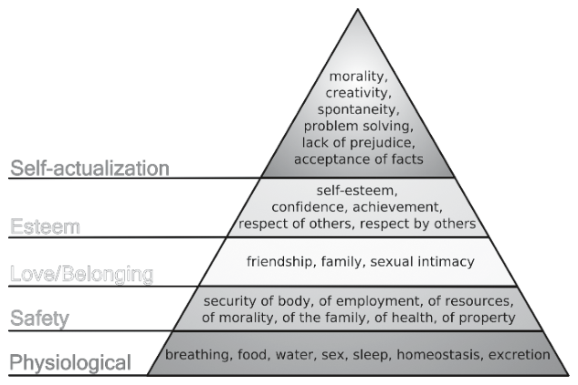
(a)
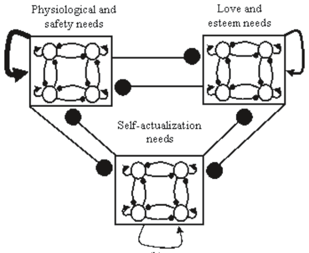
(b)
Hình 1 (a) Tháp nhu cầu của Maslow được biểu diễn dưới dạng kim tự tháp. (Từ Wikipedia với sự cho phép.) (b) Một bản thể hiện mạng thần kinh của tháp nhu cầu Maslow. Các mũi tên biểu thị sự kích thích, các vòng tròn đặc biểu thị sự ức chế. Tất cả các nhu cầu này đều tự kích thích chính mình và ức chế lẫn nhau. Nhưng thứ bậc bị thiên lệch về phía các nhu cầu sinh lý và an toàn vốn có sự tự kích thích mạnh nhất, được biểu thị bằng mũi tên tự kích thích đậm nhất; các nhu cầu yêu thương và được tôn trọng có mũi tên tự kích thích đậm tiếp theo, và nhu cầu tự hiện thực hóa có mũi tên nhạt nhất
Phần I · Bài 7 — Não bộ tạo ra, thay đổi và ghi đè quy tắc ứng xử như thế nào? (Levine)
vùng gọi là nhân cạnh não thất (paraventricular nucleus), nơi sản xuất oxytocin, một hormone chủ chốt cho sự gắn kết xã hội và các khía cạnh khoái cảm của tương tác liên cá nhân (bao gồm cực khoái, chải chuốt và có thể cả xoa bóp). Ngoài ra, các công trình gần đây cũng chỉ ra vai trò mạnh mẽ của nhân lục (locus coeruleus), một nhân noradrenergic ở trung não thuộc cấu tạo lưới, trong việc thúc đẩy hành vi khám phá [43].
Các cấu trúc dưới vỏ sâu hơn của não bộ đã đóng vai trò quan trọng trong các lý thuyết định tính của những nhà khoa học thần kinh hành vi tiên phong nghiên cứu về sự tương tác giữa bản năng, cảm xúc và lý trí (ví dụ: [41, 45, 48]), và tiếp tục giữ vai trò quan trọng trong các quan sát tâm thần học lâm sàng. Tuy nhiên, những vùng dưới vỏ cổ xưa về mặt phát sinh chủng loại này thường bị các nhà mô hình hóa mạng thần kinh bỏ qua, ngoại trừ một số người mô hình hóa điều kiện hóa cổ điển (ví dụ: [6, 32]). Giờ đây là thời điểm chín muồi để xây dựng một lý thuyết toàn diện hơn về hành vi con người nhằm kết nối lại với một số lý thuyết tiên phong từ những năm 1960 và 1970.
2.2 Hạch hạnh nhân (Amygdala)
Hạch hạnh nhân kết nối chặt chẽ với các vùng động lực ở vùng dưới đồi và trung não nhưng ở “bậc cao hơn một bước” so với các vùng này trong quá trình phát triển chủng loại. Hạch hạnh nhân dường như là vùng chính yếu để gắn giá trị cảm xúc (emotional valence) tích cực hoặc tiêu cực vào các sự kiện cảm giác cụ thể (ví dụ: [22]). Do đó, hạch hạnh nhân tham gia vào mọi phản ứng cảm xúc, từ những phản ứng nguyên thủy nhất đến những phản ứng được dẫn dắt bởi nhận thức cao nhất. Ở động vật, việc cắt bỏ hạch hạnh nhân hai bên làm gián đoạn quá trình tiếp thu và duy trì các phản ứng có điều kiện, và các tế bào thần kinh hạch hạnh nhân học cách phát xung để đáp ứng với các kích thích có điều kiện.
Hạch hạnh nhân đặc biệt được nghiên cứu kỹ lưỡng liên quan đến điều kiện hóa nỗi sợ [35, 36]. Armony, Servan-Schreiber, Cohen và LeDoux [1, 2] đã phát triển các mô hình tính toán về điều kiện hóa nỗi sợ, trong đó hạch hạnh nhân giữ vai trò nổi bật. Trong các mô hình này, có các con đường vỏ não và dưới vỏ song song cùng đi tới các vùng xử lý cảm xúc chính của hạch hạnh nhân. Con đường dưới vỏ (từ đồi thị) nhanh hơn con đường vỏ não, nhưng vỏ não thực hiện việc phân biệt kích thích tinh tế hơn so với đồi thị. Điều này gợi ý rằng hai con đường thực hiện các chức năng bổ sung cho nhau: con đường dưới vỏ là tín hiệu báo trước chính yếu về sự hiện diện của các kích thích có khả năng gây nguy hiểm, còn con đường vỏ não thực hiện các đánh giá chi tiết hơn về những kích thích đó.
Thông qua các kết nối giữa hạch hạnh nhân và các phần khác nhau của vỏ não trước trán, các kích thích có ý nghĩa cảm xúc có lợi thế xử lý chọn lọc so với các kích thích phi cảm xúc. Tuy nhiên, điều đó không có nghĩa là quá trình xử lý cảm xúc tự động lấn át sự chú ý có chọn lọc đối với các kích thích phi cảm xúc vốn liên quan đến bất kỳ nhiệm vụ nào mà sinh vật đang thực hiện. Nếu các đối tượng người đang tham gia một nhiệm vụ nhận thức đòi hỏi sự chú ý cao và các khuôn mặt cảm xúc (ví dụ: khuôn mặt biểu lộ nỗi sợ) được trình bày ở một vị trí không liên quan đến nhiệm vụ, mức độ hoạt hóa hạch hạnh nhân giảm đi đáng kể so với tình huống các khuôn mặt cảm xúc có liên quan đến nhiệm vụ [52, 53]. Sự tương tác phức tạp này giữa chú ý và cảm xúc đã được nắm bắt trong nhiều mô hình mạng lưới liên quan đến hạch hạnh nhân cũng như cả vỏ não trước trán ổ mắt và lưng bên (ví dụ: [25, 57]).
2.3 Hạch nền và Đồi thị (Basal Ganglia and Thalamus)
Một hệ thống mã hóa quy tắc bậc cao đòi hỏi một cơ chế để chuyển đổi các liên kết cảm xúc tích cực và tiêu cực thành xu hướng hành động hoặc né tránh. Điều này phù hợp với ý tưởng phổ biến về một hệ thống cổng (gating system): một mạng lưới não bộ chọn lọc các kích thích cảm giác để xử lý tiềm năng và các hành động vận động để thực hiện tiềm năng. Hầu hết các nhà khoa học thần kinh đặt hệ thống cổng này vào các con đường giữa vỏ não trước trán, hạch nền và đồi thị (Hình 2a); để xem tổng quan lý thuyết, tham khảo [21]. Liên kết từ hạch nền đến đồi thị trong Hình 2a đóng vai trò giải ức chế (disinhibition); nghĩa là cho phép (dựa trên các tín hiệu ngữ cảnh) thực hiện các hành động mà biểu diễn của chúng thường bị ức chế.
Vùng cổng quan trọng nhất trong hạch nền là nhân nằm (nucleus accumbens). Nhiều nhà khoa học thần kinh xác định nhân nằm là cầu nối giữa hệ thống động lực và hệ thống vận động, và do đó là nơi tác động của các phần thưởng — bất kể những phần thưởng này đến từ các kích thích củng cố tự nhiên như thức ăn hay tình dục, các yếu tố củng cố đã học như tiền bạc, hay các chất gây nghiện [44].
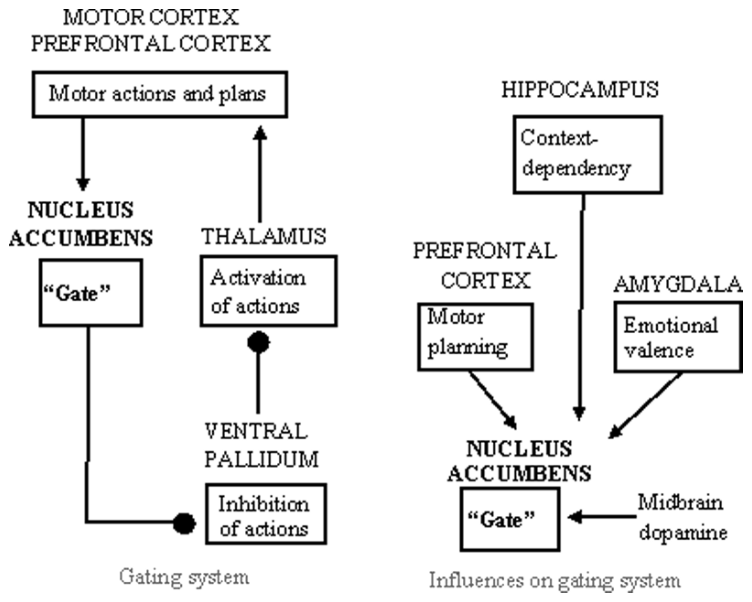
Hình 2 Bên trái: Các vòng lặp giữa nhân nằm, đồi thị và vỏ não để điều khiển cổng hành vi. Nhân nằm giải ức chế có chọn lọc các biểu diễn hành động bằng cách ức chế cầu nhạt bụng (ventral pallidum), qua đó giải phóng tín hiệu từ đồi thị lên vỏ não. Bên phải: các tác động lên việc điều khiển cổng có chọn lọc từ hồi hải mã (ngữ cảnh), hạch hạnh nhân (cảm xúc) và vỏ não trước trán (lập kế hoạch). Phỏng theo [46] với sự cho phép của Elsevier science
Rõ ràng, các tác động lên nhân nằm từ những vùng não khác là chìa khóa cho các lựa chọn về việc biểu diễn kích thích hoặc hành động nào được phép đi qua cổng. Newman và Grace [46] xác định ba tác động chính lên vùng này: thứ nhất liên quan đến ngữ cảnh, thứ hai liên quan đến cảm xúc, và thứ ba liên quan đến kế hoạch.
Hình 2b cho thấy một số tác động lên hệ thống cổng nhân nằm. Các tác động từ hồi hải mã đặc biệt mạnh mẽ: các kết nối hồi hải mã đang hoạt động có thể chuyển đổi từng tế bào thần kinh nhân nằm từ trạng thái bất hoạt sang trạng thái hoạt động [47]. Vì hồi hải mã mã hóa các liên kết ngữ cảnh cho trí nhớ làm việc, đây có thể là phương tiện làm thiên lệch các cổng theo hướng ưu tiên các kích thích phù hợp với ngữ cảnh.
Như Newman và Grace [46] lưu ý, cũng có một sự thiên lệch cạnh tranh ưu tiên các kích thích nổi bật về mặt cảm xúc, bất kể ngữ cảnh. Điều này được trung gian bởi các kết nối tới nhân nằm từ hạch hạnh nhân (Hình 2b). Các đầu vào từ hồi hải mã, gắn liền với nhận thức “lạnh”, hoạt động trên thang thời gian chậm và thúc đẩy độ nhạy chọn lọc đối với một nhiệm vụ kéo dài. Các đầu vào từ hạch hạnh nhân, gắn liền với nhận thức “nóng”, thúc đẩy độ nhạy đối với các đòi hỏi cảm xúc mạnh mẽ và ngắn hạn.
Cuối cùng, các tác động từ vỏ não trán liên quan đến việc lập kế hoạch. Bây giờ chúng ta chuyển sang thảo luận chi tiết về các vùng liên quan của vỏ não trước trán.
2.4 Vỏ não trước trán (Prefrontal Cortex)
Nhiều mô hình vận động phức tạp liên quan đến cả chuyển động phản ứng và chuyển động có kế hoạch. Sự tương tác giữa các chức năng phản ứng của hạch nền và các chức năng lập kế hoạch của vỏ não trước trán đã được mô hình hóa trong trường hợp chuyển động mắt nhanh (saccadic eye movements) [7].
Ba tiểu vùng của vỏ não trước trán đóng các vai trò đặc biệt quan trọng và bổ sung cho nhau trong việc lập kế hoạch và tổ chức hành vi bậc cao. Các vùng này là vỏ não trước trán ổ mắt (OFC), vỏ não trước trán lưng bên (DLPFC) và vỏ não vành trước (ACC).
OFC là vùng bị tổn thương ở bệnh nhân nổi tiếng thế kỷ 19 Phineas Gage, và ở các bệnh nhân khác bị khiếm khuyết trong việc ra quyết định và hành vi phù hợp với xã hội [15]. Dựa trên các quan sát lâm sàng như vậy và từ các nghiên cứu tổn thương ở động vật, các nhà khoa học thần kinh tin rằng vỏ não trước trán ổ mắt hình thành và duy trì các liên kết tinh thần giữa các sự kiện cảm giác cụ thể trong môi trường và các trạng thái cảm xúc tích cực hoặc tiêu cực. Vùng này tạo ra các liên kết như vậy thông qua các kết nối giữa các mẫu hoạt động thần kinh ở vỏ não cảm giác phản ánh các sự kiện cảm giác trong quá khứ, và các mẫu hoạt động thần kinh khác ở các vùng dưới vỏ (ở cả hạch hạnh nhân và vùng dưới đồi) phản ánh các trạng thái cảm xúc.
Việc lưu trữ dài hạn hơn các giá trị cảm xúc có khả năng nằm ở các kết nối từ vỏ não trước trán ổ mắt đến hạch hạnh nhân ([55]; xem [20] và [40] để biết các mô hình). Những thay đổi ảnh hưởng đến hành vi (các chỉ dẫn “nên làm” và “không nên làm”, tiến lại gần hoặc né tránh một đối tượng) có khả năng nằm ở các kết nối từ hạch hạnh nhân đến vỏ não trước trán giữa (động lực kích thích) và từ vỏ não ổ mắt đến nhân nằm (thói quen).
Eisler và Levine [18] phỏng đoán rằng mở rộng ra, OFC có thể trung gian cho việc kích hoạt các nhóm lớn các phản ứng có ý nghĩa cảm xúc, chẳng hạn như phản ứng gắn kết so với phản ứng chiến-hay-chạy (fight-or-flight). Họ đề xuất một cơ chế cho việc lựa chọn phản ứng như vậy liên quan đến các kết nối qua lại giữa OFC và nhân cạnh não thất (PVN) của vùng dưới đồi. Các phần khác nhau của PVN chứa nhiều loại hormone khác nhau bao gồm oxytocin và vasopressin, hai hormone quan trọng cho các phản ứng gắn kết (ví dụ: [11]); và CRF, tiền chất sinh hóa của hormone căng thẳng cortisol vốn quan trọng cho phản ứng chiến-hay-chạy [34]. OFC tạo khớp thần kinh lên một vùng khác gọi là vùng dưới đồi lưng giữa, nơi gửi các tế bào thần kinh ức chế đến PVN được trung gian bởi chất dẫn truyền ức chế GABA (axit gamma-amino butyric). Điều này ảnh hưởng đến việc kích hoạt có chọn lọc tiểu vùng sản xuất hormone này hay tiểu vùng khác của PVN (xem Hình 3).
DLPFC là một vùng trí nhớ làm việc, và có kết nối chặt chẽ hơn với hồi hải mã thay vì hạch hạnh nhân. Nó tham gia vào việc xử lý thông tin ở mức độ trừu tượng cao hơn so với OFC. Ví dụ, ở khỉ, tổn thương OFC làm suy giảm khả năng học các thay đổi về giá trị phần thưởng trong một chiều kích thích, trong khi tổn thương DLPFC làm suy giảm khả năng học các thay đổi về việc chiều nào là liên quan [17]. Dehaene và Changeux [16] coi vỏ não trước trán lưng bên là nơi tạo ra
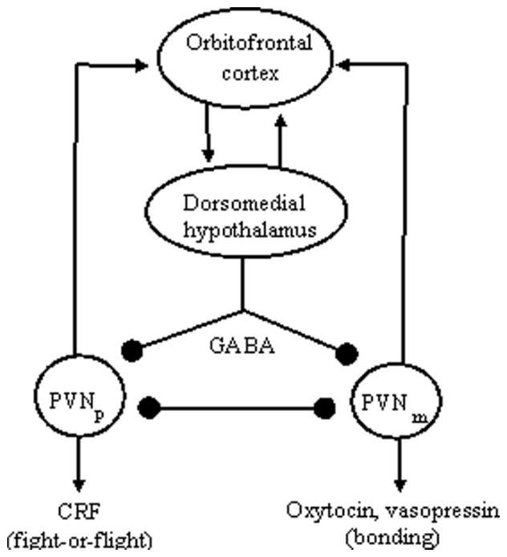
Hình 3 Các tác động của vỏ não trước trán ổ mắt lên vùng dưới đồi. GABA là một chất dẫn truyền thần kinh ức chế. Các chỉ số dưới “p” và “m” viết tắt cho “tế bào nhỏ” (parvicellular) và “tế bào lớn” (magnocellular). Phỏng theo [18] với sự cho phép của Springer-Verlag sự đa dạng. Nghĩa là, DLPFC tạo ra các quy tắc quyết định khả dĩ khác nhau, trong khi các mạch cảm xúc của OFC lọc các quy tắc khả dĩ dựa trên phần thưởng và hình phạt nhận được khi tuân theo các quy tắc này [15, 45].
Sự khác biệt giữa chức năng của OFC và DLPFC phản ánh sự khác biệt đã thảo luận trước đó giữa nhận thức “nóng” của hạch hạnh nhân và nhận thức “lạnh” của hồi hải mã. Tuy nhiên, các vùng trước trán ổ mắt “cảm xúc” và trước trán lưng bên “liên quan đến nhiệm vụ” không thể tách rời hoàn toàn để hoạt động nhận thức hiệu quả. Thay vào đó, thông tin cảm xúc và thông tin liên quan đến nhiệm vụ cần được tích hợp trong hệ thống điều hành tổng thể của não bộ, để mạng lưới có thể quyết định khi nào tiếp tục hoàn thành một nhiệm vụ và khi nào cho phép các cân nhắc khẩn cấp ngoài nhiệm vụ lấn át việc hoàn thành nhiệm vụ. Các kết nối rộng khắp giữa hai vùng này (ví dụ: [3, 49]) cấu thành một cơ chế để tích hợp hai cấp độ chức năng này.
Tuy nhiên, các nghiên cứu hình ảnh não cũng gợi ý rằng một vùng trước trán thứ ba, ACC, đóng một vai trò quan trọng trong loại hình tích hợp điều hành này. Posner và các đồng nghiệp [9, 54] phát hiện thấy ACC được kích hoạt khi một đối tượng phải chọn hoặc chuyển đổi giữa các cách diễn giải hoặc khía cạnh khác nhau của một kích thích. Ngoài ra, Yamasaki, LaBar và McCarthy [58] đã giao cho các đối tượng một nhiệm vụ chú ý kèm theo các yếu tố gây nhiễu cảm xúc và đo lường phản ứng của các vùng não khác nhau đối với các kích thích mục tiêu (liên quan đến nhiệm vụ) và các kích thích gây nhiễu. Yamasaki và cộng sự nhận thấy rằng trong khi các vùng có sự gia tăng hoạt hóa đối với hai loại kích thích này phần lớn tách biệt, thì ACC là vùng duy nhất có mức độ hoạt hóa tăng lên đối với cả kích thích mục tiêu lẫn kích thích gây nhiễu.
ACC có lẽ là vùng bí ẩn và tinh tế nhất trong toàn bộ não bộ. Ban đầu nó được coi là một phần của hệ viền (limbic system) hơn là vỏ não [50] vì những vai trò mạnh mẽ của nó trong các chức năng liên quan đến cảm xúc. Các lý thuyết gần đây về chức năng vỏ não vành trước đã nhấn mạnh vai trò của nó trong việc phát hiện lỗi phản ứng tiềm ẩn hoặc xung đột giữa các tín hiệu thúc đẩy các phản ứng cạnh tranh nhau [4, 5, 28].
Cả ba vùng này của vỏ não trước trán đều phục vụ các khía cạnh khác nhau của cái được biết đến trên lâm sàng là chức năng điều hành (executive function). Nhưng trong hệ thống chính phủ Hoa Kỳ, “hành pháp” (executive) mang một ý nghĩa chuyên biệt hơn, mô tả một trong ba nhánh quyền lực ngang hàng (ít nhất là trên lý thuyết) của chính phủ, hai nhánh còn lại là lập pháp và tư pháp. Hãy cho phép tôi đề xuất một phép tương tự đầy thú vị nhưng hợp lý giữa ba vùng lớn của vỏ não trước trán và ba nhánh của chính phủ tam quyền phân lập của chúng ta. OFC là lập pháp: với tư cách là nơi tích hợp thông tin xã hội và cảm xúc, đồng thời là người phán xét tính phù hợp của hành động, nó là bộ phận của hệ thống nắm bắt được “nhịp đập của người dân” (“người dân” ở đây là não dưới vỏ và các nhu cầu của nó). DLPFC là hành pháp theo nghĩa đó: nó có trình độ chuyên môn sâu cho phép tạo ra và thử nghiệm các chính sách quan trọng. Và ACC là tư pháp: với tư cách là bộ phát hiện lỗi, nó đóng vai trò như một chiếc phanh kìm hãm các hoạt động khả dĩ của hai vùng kia khi chúng đi quá xa khỏi các nguyên tắc nền tảng của hành vi hiệu quả.
Giờ đây, khi đã điểm qua các chức năng được công nhận rộng rãi của một số vùng dưới vỏ và trước trán, chúng ta muốn ghép chúng lại thành một bức tranh lớn hơn. Trong một bài báo trước đó [39], tôi đã giới thiệu các khái niệm về thiên thần và ác quỷ hành vi thần kinh (neurobehavioral angels and devils). Từ thiên thần (angel) được dùng để chỉ một mẫu hoạt động thần kinh được lưu trữ làm tăng đáng kể xác suất một hành vi cụ thể nào đó sẽ được thực hiện trong một lớp ngữ cảnh nào đó. Các con đường đại diện cho thiên thần, theo định nghĩa đó, bao gồm cả sự hưng phấn và ức chế tại các vị trí khác nhau. Các con đường này cũng liên kết các vùng não phụ trách tri giác các ngữ cảnh cảm giác hoặc xã hội với các vùng khác phụ trách lập kế hoạch và thực hiện các hành động vận động, dưới sự chi phối của những vùng khác nữa liên quan đến cả việc định giá cảm xúc lẫn nhận thức bậc cao. Thuật ngữ ác quỷ (devil) được dùng trong bài báo này để chỉ điều ngược lại với thiên thần; nghĩa là một mẫu hoạt động thần kinh được lưu trữ làm giảm đáng kể xác suất một hành vi cụ thể được thực hiện trong một lớp ngữ cảnh nào đó. Các ác quỷ liên quan đến nhiều vùng não tri giác, vận động, nhận thức và cảm xúc tương tự như các thiên thần, nhưng với một số khác biệt trong các mẫu hưng phấn và ức chế có chọn lọc.
Cuối cùng, dựa trên cách sử dụng của Nauta [45], người có công trình đi trước Damasio về các dấu ấn cơ thể (somatic markers), tôi đã sử dụng thuật ngữ bộ kiểm duyệt (censor) để chỉ một bộ lọc hành vi trừu tượng bao hàm và thống nhất về mặt chức năng các nhóm lớn những gì chúng ta gọi là thiên thần và ác quỷ. Đây là cấp độ mà các quy tắc phát triển. Sự khác biệt cá nhân trong cấu trúc của các bộ kiểm duyệt thần kinh này bước đầu được liên hệ với một số phân loại tâm thần học về nhân cách và tính cách, cũng như với các mô thức ra quyết định tối ưu hơn so với kém tối ưu hơn.
Trước tiên, chúng ta sẽ xem xét cách các mạch não có thể được ghép nối để phục vụ các tương tác giữa các thiên thần, ác quỷ và bộ kiểm duyệt này. Sau đó, chúng ta sẽ xem xét cách các bộ kiểm duyệt có thể thay đổi trong suốt cuộc đời của một người hoặc theo các yếu tố ngữ cảnh, chẳng hạn như mức độ căng thẳng hay hỗ trợ của môi trường.
2.5 Tương tác giữa các vùng não này
Mối quan hệ giữa các biểu diễn thần kinh của các bộ kiểm duyệt này và các biểu diễn thần kinh của các thiên thần và ác quỷ cụ thể mà bộ kiểm duyệt bao gồm là gì? “Bức tranh lớn” sơ bộ xuất hiện trong Hình 4, cho thấy một mạng lưới khả dĩ (không phải duy nhất) để liên kết thiên thần và ác quỷ với các bộ kiểm duyệt. Điều này cung cấp một cơ chế mà qua đó việc kích hoạt một bộ kiểm duyệt cụ thể sẽ củng cố các thiên thần và ác quỷ gắn liền với nó. Ngược lại, việc kích hoạt một thiên thần hoặc ác quỷ cụ thể sẽ củng cố các bộ kiểm duyệt gắn liền với nó. (Lưu ý: cùng một thiên thần hoặc ác quỷ có thể gắn liền đồng thời với hai bộ kiểm duyệt xung đột nhau.)
Lý thuyết cộng hưởng thích nghi hay ART [10] thường được sử dụng để mô hình hóa các tương tác phản hồi có thể học được giữa hai khái niệm liên quan ở các cấp độ trừu tượng khác nhau. Vì các bộ kiểm duyệt như được định nghĩa trong [39] là các tập hợp trừu tượng của thiên thần và ác quỷ, việc mô hình hóa sự kết nối giữa chúng bằng một mạng ART là điều tự nhiên. Hình 4 bao gồm một lược đồ khả dĩ cho các kết nối kiểu ART giữa các mạng con thiên thần/ác quỷ và bộ kiểm duyệt, cho thấy các vùng não liên quan.
Trong mỗi trong hai mạng con ART của Hình 4 – một mạng con cho các hành động riêng lẻ và mạng kia cho các quy tắc, hoặc các lớp hành động – cường độ kết nối giữa hai cấp độ có thể thay đổi theo ít nhất hai cách. Thứ nhất, các kết nối liên cấp độ trải qua quá trình học tập dài hạn như đặc trưng của ART. Đây là phương pháp mà các phạm trù tự tổ chức từ các vector có thành phần là giá trị của các đặc trưng hoặc thuộc tính. Trong trường hợp này, hành động là các vector của từng chuyển động riêng lẻ, trong khi bộ kiểm duyệt là các vector của thiên thần và ác quỷ. Việc vận chuyển trọng số (weight transport) từ mô-đun hành động đến
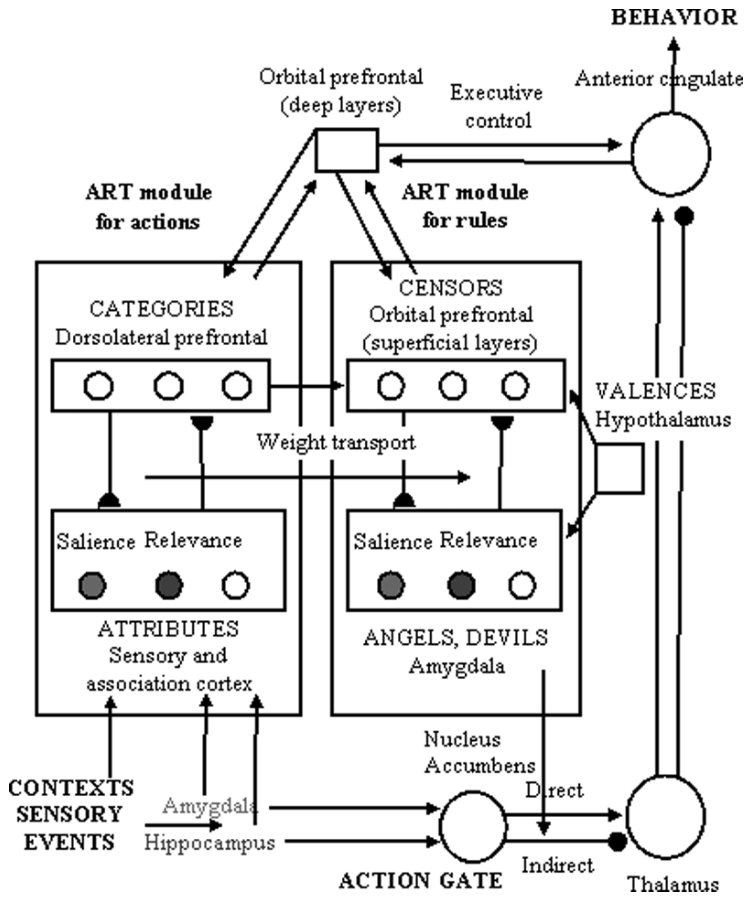
Hình 4 Mạng lưới liên hệ các hành vi cụ thể với các xu hướng hành động. Các hình bán nguyệt đặc biểu thị các vị trí học tập. Các kết nối “xanh-với-xanh” và “đỏ-với-đỏ” được giả định là mạnh hơn các kết nối khác tại cổng hành động: nghĩa là, hoạt hóa hạch hạnh nhân làm tăng cường có chọn lọc thuộc tính nổi bật về cảm xúc, trong khi hoạt hóa hồi hải mã làm tăng cường có chọn lọc các thuộc tính liên quan đến tính phù hợp với nhiệm vụ. (Phỏng theo [39] với sự cho phép của Karger Publishers)
mô-đun quy tắc được đề xuất như một cơ chế khả dĩ để khái quát hóa từ các phạm trù hành động riêng lẻ thành các bộ kiểm duyệt trừu tượng bao trùm một loạt hành động. (Jani và Levine [29] thảo luận về vận chuyển trọng số như một cơ chế cho việc học theo phép tương tự. Ý tưởng này thường bị coi là không khả thi về mặt sinh học, nhưng nó có thể được thực hiện bằng cách sử dụng các tế bào thần kinh kết hợp đầu vào từ hai nguồn thông qua cơ chế cổng nhân.)
Thứ hai, những thay đổi trong ngữ cảnh hiện tại hoặc tập hợp các yêu cầu do nhiệm vụ hoặc môi trường hiện tại tạo ra có thể dẫn đến những thay đổi tạm thời hoặc vĩnh viễn về trọng số tương đối của các thuộc tính cấp thấp hơn khác nhau. Sự thay đổi trọng số này đến lượt nó làm thay đổi ranh giới của các phạm trù liên quan. Trong số rất nhiều thuộc tính quan trọng khả dĩ, có hai thuộc tính đặc biệt quan trọng: tính phù hợp với nhiệm vụ (task relevance) và tính nổi bật về cảm xúc (emotional salience). Tác động của mỗi thuộc tính trong hai thuộc tính đó trong mạng lưới của Hình 4 bị thiên lệch bởi các đầu vào tới hai mô-đun ART từ các vùng não khác; đáng chú ý là các đầu vào từ hồi hải mã và hạch hạnh nhân.
Các đầu vào từ hồi hải mã làm thiên lệch cơ chế cổng của nhân nằm hướng tới các kích thích hoặc hành động phù hợp cho nhiệm vụ hiện tại. Mặt khác, các đầu vào từ hạch hạnh nhân làm thiên lệch cơ chế cổng hướng tới các kích thích hoặc hành động khơi gợi cảm xúc mạnh — bất kể những cảm xúc đó phát sinh từ sự đánh giá nhận thức hợp lý hay từ những ham muốn hoặc nỗi sợ hãi sơ cấp dựa trên cơ thể. Do đó, căng thẳng kéo dài hoặc dữ dội có thể làm dịch chuyển cán cân của cơ chế cổng ra khỏi các hành động do hồi hải mã trung gian dựa trên tính phù hợp với nhiệm vụ sang các hành động do hạch hạnh nhân trung gian dựa trên tính nổi bật cảm xúc ngắn hạn.
3 Những thay đổi trong động lực học mạng lưới
Mạng lưới của Hình 4 là một phép xấp xỉ đầu tiên, và có thể chưa phải là mạng lưới hoàn toàn chính xác để tập hợp tất cả các chức năng đã biết của các vùng não tham gia vào việc học và lựa chọn quy tắc. Lưu ý rằng một số vùng não (như hạch hạnh nhân và vỏ não trước trán ổ mắt) đóng ít nhất hai vai trò riêng biệt, mà cho đến nay tôi chưa thể tích hợp lại. Vì vậy, có khả năng khi biết nhiều hơn về các tiểu vùng và tính bất đối xứng bán cầu trong từng vùng, một mô tả sắc nét hơn sẽ có sẵn.
Nhưng nếu coi mạng lưới này là phép xấp xỉ đầu tiên của thực tế, chúng ta đã nhận thấy mạng lưới đủ phức tạp để cung cấp một lượng lớn sự linh hoạt trong việc thực thi quy tắc. Quy tắc nào, hay bộ kiểm duyệt nào, thực sự kiểm soát hành vi có thể thay đổi bất cứ lúc nào, một phần do sự thay đổi hoạt động của các vùng bên ngoài các mô-đun ART. Các đầu vào giá trị cảm xúc từ vùng dưới đồi bị ảnh hưởng bởi việc các xung lực nào đang chiếm ưu thế trong mạng lưới hệ thống nhu cầu ở Hình 1. Và có bằng chứng cho thấy sự cân bằng giữa các đầu vào liên quan đến tính phù hợp từ hồi hải mã và các đầu vào liên quan đến tính nổi bật từ hạch hạnh nhân bị ảnh hưởng bởi mức độ căng thẳng hiện tại của sinh vật.
Có bằng chứng từ các nghiên cứu trên người và động vật cho thấy nhiều dạng căng thẳng (ví dụ: bị giam giữ vật lý, tiếp xúc với kẻ săn mồi hoặc bị lạm dụng xã hội) có tác động ngắn hạn hoặc dài hạn lên các cấu trúc não khác nhau [56]. Căng thẳng mãn tính hoặc nghiêm trọng có xu hướng làm giảm tính khả biến thần kinh (neural plasticity) ở hồi hải mã, nơi củng cố ký ức cho thông tin khách quan. Đồng thời, căng thẳng làm tăng tính khả biến thần kinh và tăng cường hoạt động thần kinh ở hạch hạnh nhân, nơi xử lý cảm xúc nguyên thủy hơn. Lưu ý từ Hình 2 rằng cả hồi hải mã và hạch hạnh nhân đều gửi đầu vào đến các cổng tại nhân nằm, vốn là con đường chung cuối cùng cho các thiên thần và ác quỷ của [39]. Có vẻ như cùng một cá nhân thậm chí có thể “chịu ảnh hưởng của hồi hải mã” nhiều hơn trong những giai đoạn thư giãn và “chịu ảnh hưởng của hạch hạnh nhân” nhiều hơn trong những giai đoạn chịu áp lực thời gian.
Cloninger [12] mô tả quá trình tâm thần mà qua đó con người lý tưởng nhất là tiến tới sự sáng tạo hơn cùng với sự trưởng thành lớn hơn, một quá trình mà Leven [37] đã liên hệ với các hệ thống thần kinh trước trán khác nhau được mô tả ở đây. Như đã mô tả trong [39], quá trình thay đổi nhân cách hướng tới sự sáng tạo lớn hơn không có nghĩa là chúng ta từ bỏ các bộ kiểm duyệt, mà có nghĩa là chúng ta phát triển các bộ kiểm duyệt sáng tạo hơn và nâng cao sự sống hơn. Ví dụ, trong một trạng thái kém sáng tạo hơn, chúng ta có thể tránh quan hệ tình dục ngoài hôn nhân vì một bộ kiểm duyệt chống lại việc bất tuân một thẩm quyền (của con người hay thần linh), trong khi ở một trạng thái sáng tạo hơn, chúng ta có thể tránh hành vi tương tự vì một bộ kiểm duyệt chống lại việc làm tổn hại đến một mối quan hệ hôn nhân lành mạnh.
Ngoài ra, khi một người phát triển sự trưởng thành về mặt tinh thần lớn hơn, hệ thống điều hành tam quyền (hoặc hành pháp/lập pháp/tư pháp) gồm DLPFC, OFC và ACC cho phép người đó vượt qua các bộ kiểm duyệt đã thiết lập của mình trong những hoàn cảnh bất thường. Điều này có thể xảy ra trong các ngữ cảnh có nhu cầu hợp tác mạnh mẽ (được phỏng đoán là biểu hiện thông qua các kết nối từ vỏ não trước trán lưng bên đến vỏ não ổ mắt). Một ví dụ liên quan đến một người đàn ông bình thường kiềm chế việc trộm cắp nhưng sẵn sàng ăn trộm thuốc nếu cần thiết để cứu mạng vợ mình [33]. Điều này cũng có thể xảy ra trong các ngữ cảnh tự siêu việt mạnh mẽ (được phỏng đoán là thông qua các kết nối từ vỏ não vành trước đến vỏ não ổ mắt) — như khi một trải nghiệm huyền bí vượt qua các bộ kiểm duyệt chống lại việc biểu lộ cảm xúc ra bên ngoài.
Nhưng những thay đổi phát triển hướng tới các thiên thần và ác quỷ phức tạp hơn không phải lúc nào cũng toàn diện hoặc vĩnh viễn. Chúng có thể bị đảo ngược dưới áp lực căng thẳng, hoặc có thể phụ thuộc vào một tâm trạng hay ngữ cảnh cụ thể để biểu hiện. Như Hình 4 chỉ ra, phản hồi giữa thiên thần, ác quỷ và bộ kiểm duyệt có nghĩa là các thiên thần và ác quỷ “dựa trên hạch hạnh nhân” thay vì “dựa trên hồi hải mã” sẽ có xu hướng dẫn đến các bộ kiểm duyệt kém sáng tạo hơn. Những sự dịch chuyển giữa nhấn mạnh “hồi hải mã” dưới mức căng thẳng thấp và nhấn mạnh “hạch hạnh nhân” dưới mức căng thẳng cao có thể được mô hình hóa bằng cách kết hợp ART với các thiên lệch chú ý chọn lọc thuộc tính [38].
Do đó, mạng lưới quy tắc của Hình 4 (hoặc mạng lưới nhu cầu đơn giản hơn nhiều của Hình 1 vốn ảnh hưởng đến nó) có thể có một số lượng lớn các trạng thái hút (attracting states) khả dĩ đại diện cho các loại quy tắc hành vi chịu ảnh hưởng của ngữ cảnh mà nó có xu hướng tuân theo (với các điều kiện khác không đổi). Thảo luận của chúng ta về sự phát triển nhân cách gợi ý rằng một số trạng thái hút này đại diện cho một cấp độ phát triển cao hơn và sáng tạo hơn những trạng thái khác; do đó, những trạng thái đó có thể được coi là tối ưu hơn.
Tất cả những điều này gợi ý rằng vấn đề có thể được nghiên cứu, ở cấp độ trừu tượng, bằng cách sử dụng các kỹ thuật toán học để nghiên cứu sự chuyển đổi từ các điểm hút kém tối ưu sang các điểm hút tối ưu hơn. Một lý thuyết thần kinh sơ bộ về sự chuyển đổi giữa các điểm hút quy tắc được thảo luận trong Phụ lục.
4 Kết luận
Lý thuyết được phác thảo ở đây về sự hình thành, học tập và lựa chọn quy tắc vẫn còn rất nhiều việc đang tiến hành. Việc tinh chỉnh và kiểm chứng lý thuyết đang chờ đợi thêm nhiều kết quả trong chẩn đoán hình ảnh não, phân tích tổn thương ở động vật và lâm sàng, và (một khi các tương tác được xác định rõ hơn) mô hình hóa mạng thần kinh sử dụng các phương trình vi phân phi tuyến phân nhánh (shunting nonlinear differential equations) thực tế. Nhưng tôi tin rằng lý thuyết này tạo ra một bức tranh hợp lý về mặt nền tảng dựa trên vô số kết quả đã biết về các vùng não.
Tính khả biến kỳ diệu của bộ não chúng ta đã được gọi là một con dao hai lưỡi [26]. Nếu bất kỳ ai trong chúng ta tại một thời điểm nhất định đang vận hành theo cách tuân theo những quy tắc thiếu suy nghĩ và thiếu cân nhắc đến nhu cầu dài hạn của bản thân hoặc người khác, tính khả biến mang lại cho chúng ta hy vọng rằng vào một thời điểm khác, với ít căng thẳng hơn hoặc trưởng thành hơn, chúng ta có thể hành động một cách xây dựng hơn. Nhưng tính khả biến cũng nói với chúng ta điều ngược lại: rằng bất kể chúng ta đang hành động hiệu quả và có đạo đức đến đâu tại một thời điểm nhất định, căng thẳng thể chất hoặc cảm xúc sau đó có thể khiến chúng ta quay trở lại với các quy tắc và bộ kiểm duyệt nguyên thủy hơn, làm giảm hiệu quả của chúng ta.
Tuy nhiên, nhìn chung, những bài học từ việc mô hình hóa nhận thức phức tạp dựa trên não bộ là những bài học lạc quan. Càng tìm hiểu về bộ não của mình, và các cấu trúc mạng thần kinh của chúng ta càng nắm bắt được sự phức tạp của bộ não, chúng ta càng phát triển một bức tranh về bản chất con người vốn linh hoạt, phong phú và phức tạp theo những cách mà nhiều nhà nhân văn học hay bác sĩ lâm sàng có lẽ chưa từng mơ tới. Chẳng hạn, đối với nhà trị liệu, nhà giáo dục hoặc kỹ sư xã hội, các bài tập mạng thần kinh như chương này sẽ dẫn đến sự tôn trọng to lớn đối với tiềm năng và sự đa dạng của con người. Đây chính xác là điều ngược lại với chủ nghĩa giản lược (reductionism) mà nhiều người lo sợ sẽ nảy sinh từ việc nghiên cứu sinh học và toán học về nhận thức và hành vi bậc cao!
Tài liệu tham khảo
1. J. L. Armony, D. Servan-Schreiber, J. D. Cohen, and J. E. LeDoux. An anatomically constrained neural network model of fear conditioning. Behavioral Neuroscience, 109:246–257, 1995. 2. J. L. Armony, D. Servan-Schreiber, J. D. Cohen, and J. E. LeDoux. Computational modeling of emotion: Explorations through the anatomy and physiology of fear conditioning. Trends in Cognitive Sciences, 1:28–34, 1997. 3. J. F. Bates. Multiple information processing domains in prefrontal cortex of rhesus monkey. Unpublished doctoral dissertation, Yale University, 1994. 4. M. M. Botvinick, T. S. Braver, D. M. Barch, C. S. Carter, and J. D. Cohen. Conflict monitoring and cognitive control. Psychological Review, 108:624–652, 2001. 5. J. W. Brown and T. S. Braver. Learned predictions of error likelihood in the anterior cingulate cortex. Science, 307:1118–1121, 2005. 6. J. W. Brown, D. Bullock, and S. Grossberg. How the basal ganglia use parallel excitatory and inhibitory learning pathways to selectively respond to unexpected rewarding cues. Journal of Neuroscience, 19:10502–10511, 1999. 7. J. W. Brown, D. Bullock, and S. Grossberg. How laminar frontal cortex and basal ganglia circuits interact to control planned and reactive saccades. Neural Networks, 17:471–510, 2004. 8. R. M. Buijs and C. G. Van Eden. The integration of stress by the hypothalamus, amygdala, and prefrontal cortex: Balance between the autonomic nervous system and the neuroendocrine system. Progress in Brain Research, 127:117–132, 2000. 9. G. Bush, P. Luu, and M. I. Posner. Cognitive and emotional influences in anterior cingulate cortex. Trends in Cognitive Science, 4:215–222, 2000. 10. G. A. Carpenter and S. Grossberg. A massively parallel architecture for a self-organizing neural pattern recognition machine. Computer Vision, Graphics, and Image Processing, 37:54–115, 1987. 11. M. M. Cho, C. DeVries, J. R. Williams, and C. S. Carter. The effects of oxytocin and vasopressin on partner preferences in male and female prairie voles (microtus ochrogaster). Behavioral Neuroscience, 113:1071–1079, 1999.
12. R. Cloninger. A new conceptual paradigm from genetics and psychobiology for the science of mental health. Australia and New Zealand Journal of Psychiatry, 33:174–186, 1999. 13. M. A. Cohen and S. Grossberg. Absolute stability of global pattern formation and parallel memory storage by competitive neural networks. IEEE Transactions on Systems, Man, and Cybernetics, SMC-13, pp. 815–826, 1983. 14. M. Csikszentmihalyi. Flow: The psychology of optimal experience. New York, Harper and Row, 1990. 15. A. R. Damasio. Descartes? error: Emotion, reason, and the human brain. New York: Grosset/Putnam, 1994. 16. S. Dehaene and J. P. Changeux. The wisconsin card sorting test: Theoretical analysis and modeling in a neural network. Cerebral Cortex, 1:62–79, 1991. 17. R. Dias, T. W. Robbins, and A. C. Roberts. Dissociation in prefrontal cortex of affective and attentional shifts. Nature, 380:69–72, 1996. 18. R. Eisler and D. S. Levine. Nurture, nature, and caring: We are not prisoners of our genes. Brain and Mind, 3:9–52, 2002. 19. J. A. Fodor and Z. W. Pylyshyn. Connectionism and cognitive architecture: a critical analysis. In S. Pinker and J. Mehler (Editors), Connections and Symbols, Cambridge, MA: MIT Press, pp. 3–71, 1988. 20. M. J. Frank and E. D. Claus. Anatomy of a decision: Striato-orbitofrontal interactions in reinforcement learning, decision making, and reversal. Psychological Review, 113:300–326, 2006. 21. M. J. Frank, B. Loughry, and R. C. OReilly. Interactions between frontal cortex and basal ganglia in working memory. Cognitive, Affective, and Behavioral Neuroscience, 1:137–160, 2001. 22. D. Gaffan and E. A. Murray. Amygdalar interaction with the mediodorsal nucleus of the thalamus and the ventromedial prefrontal cortex in stimulus-reward associative learning in the monkey. Journal of Neuroscience, 10:3479–3493, 1990. 23. S. Grossberg. A neural model of attention, reinforcement, and discrimination learning. International Review of Neurobiology, 18:263–327, 1975. 24. S. Grossberg and D. S. Levine. Some developmental and attentional biases in the contrast enhancement and short-term memory of recurrent neural networks. Journal of Theoretical Biology, 53:341–380, 1975. 25. S. Grossberg and D. Seidman. Neural dynamics of autistic behaviors: Cognitive, emotional, and timing substrates. Psychological Review, 113:483–525, 2006. 26. J. M. Healy. Endangered minds: Why children don?t think and what we can do about it. New York: Simon and Schuster, 1999. 27. G. E. Hinton and T. J. Sejnowski, Learning and relearning in Boltzmann machines. In D. E. Rumelhart J. L. McClelland (Editors), Parallel Distributed Processing, Cambridge, MA, MIT Press, 1:282–317, 1986. 28. C. B. Holroyd and M. G. H. Coles. The neural basis of human error processing: Reinforcement learning, dopamine, and the error-related negativity. Psychological Review, 109: 679–709, 2002. 29. N. G. Jani and D. S. Levine. A neural network theory of proportional analogy-making. Neural Networks, 13:149–183, 2000. 30. W. Kilmer, W. S. McCulloch, and J. Blum. A model of the vertebrate central command system. International Journal of Man-Machine Studies, 1:279–309, 1969. 31. S. Kirkpatrick, Jr. C. D. Gelatt, and M. P. Vecchi. Optimization by simulated annealing. Science, 220:671–680, 1983. 32. A. H. Klopf. The Hedonistic Neuron. Washington, DC: Hemisphere, 1982. 33. L. Kohlberg. Essays on moral development: Vol. 1: The philosophy of moral development. San Francisco: Harper and Row, 1981. 34. G. F. Koob. Corticotropin-releasing factor, norepinephrine, and stress. Biological Psychiatry, 46:1167–1180, 1999.
35. J. E. LeDoux. The Emotional Brain. New York: Simon and Schuster, 1996. 36. J. E. LeDoux. Emotion circuits in the brain. Annual Review of Neuroscience, 23:155–184, 2000. 37. S. J. Leven. Creativity: Reframed as a biological process. In K. H. Pribram (Editor), Brain and Values: Is a Biological Science of Values Possible?, Mahwah, NJ: Erlbaum, pp. 427–470, 1998. 38. S. J. Leven and D. S. Levine. Multiattribute decision making in context: A dynamic neural network methodology. Cognitive Science, 20:271–299, 1996. 39. D. S. Levine. Angels, devils, and censors in the brain. ComPlexus, 2:35–59, 2005. 40. D. S. Levine, B. A. Mills, and S. Estrada. Modeling emotional influences on human decision making under risk. In: Proceedings of International Joint Conference on Neural Networks, pp. 1657–1662, Aug 2005. 41. P. D. MacLean. The triune brain, emotion, and scientific bias. In F. Schmitt (Editor), The Neurosciences Second Study Program, New York: Rockefeller University Press, pp. 336–349, 1970. 42. A. H. Maslow. Toward a psychology of being. New York: Van Nostrand, 1968. 43. S. M. McClure, M. S. Gilzenrat, and J. D. Cohen. An exploration-exploitation model based on norepinephrine and dopamine activity. Presentation at the annual conference of the Psychonomic Society, 2006. 44. P. R. Montague and G. S. Berns. Neural economics and the biological substrates of valuation. Neuron, 36:265–284, 2002. 45. W. J. H. Nauta. The problem of the frontal lobe: A reinterpretation. Journal of Psychiatric Research, 8:167–187, 1971. 46. J. Newman and A. A. Grace. Binding across time: The selective gating of frontal and hippocampal systems modulating working memory and attentional states. Consciousness and Cognition,, 8:196–212, 1999. 47. P. O’Donnell and A. A. Grace. Synaptic interactions among excitatory afferents to nucleus accumbens neurons: Hippocampal gating of prefrontal cortical input. Journal of Neuroscience, 15:3622–3639, 2005. 48. J. Olds. Physiological mechanisms of reward. In M. Jones (Editor), Nebraska Symposium on Motivation, Lincoln: University of Nebraska Press, pp. 73–142, 1955. 49. D. N. Pandya and E. H. Yeterian. Morphological correlates of human and monkey frontal lobe. In A. R. Damasio, H. Damasio, and Y. Christen (Editors), Neurobiology of Decision Making, Berlin: Springer, pp. 13–46, 1995. 50. J. W. Papez. A proposed mechanism of emotion. Archives of Neurology and Psychiatry, 38:725–743, 1937. 51. L. I. Perlovsky. Toward physics of the mind: Concepts, emotions, consciousness, and symbols. Physics of Life Reviews, 3:23–55, 2006. 52. L. Pessoa, S. Kastner, and L. G. Ungerleider. Attentional control of the processing of neutral and emotional stimuli. Brain Research: Cognitive Brain Research, 15:31–45, 2002. 53. L. Pessoa, M. McKenna, E. Gutierrez, and L. G. Ungerleider. Neural processing of emotional faces requires attention. Proceedings of the National Academy of Sciences, 99:11458–11465, 2002. 54. M. Posner and S. Petersen. The attention system of the human brain. Annual Review of Neuroscience, 13:25–42, 1990. 55. E. T. Rolls. The orbitofrontal cortex and reward. Cerebral Cortex, 10:284–294, 2000. 56. R. M. Sapolsky. Stress and plasticity in the limbic system. Neurochemical Research, 28:1735–1742. 57. J. G. Taylor and N. F. Fragopanagos. The interaction of attention and emotion. Neural Networks, 18:353–369, 2005. 58. H. Yamasaki, K. LaBar, and G. McCarthy. Dissociable prefrontal brain systems for attention and emotion. Proceedings of the National Academy of Sciences, 99:11447–11451, 2002.
Phụ lục
Thay đổi và lựa chọn quy tắc thông qua tôi luyện mô phỏng liên tục
Quá trình chuyển đổi từ các điểm hút kém tối ưu sang các điểm hút tối ưu hơn (chẳng hạn như chuyển đổi giữa các điểm hút đại diện cho các quy tắc ứng xử hoặc các phạm trù của những quy tắc đó) đã được nghiên cứu trong các mạng thần kinh bằng kỹ thuật nổi tiếng là tôi luyện mô phỏng (simulated annealing) [27, 31]. Trong tôi luyện mô phỏng, nhiễu làm nhiễu loạn hệ thống khi nó ở gần một trạng thái cân bằng không tối ưu, khiến nó dịch chuyển với một xác suất nào đó ra khỏi trạng thái cân bằng đó và cuối cùng hướng về trạng thái tối ưu nhất. Tuy nhiên, các thuật toán tôi luyện mô phỏng được phát triển cho đến nay chủ yếu áp dụng cho các hệ phương trình sai phân thời gian rời rạc. Trong công trình sơ bộ với hai đồng nghiệp (Leon Hardy và Nilendu Jani), tôi đang phát triển các thuật toán tôi luyện mô phỏng cho các phương trình vi phân liên tục phân nhánh, như loại được sử dụng trong các mô hình mạng thần kinh thực tế nhất về mặt sinh học.
Một điểm hút tối ưu thường được coi là cực tiểu toàn cục của một hàm nào đó giảm dần dọc theo các quỹ đạo của hệ thống, với các điểm hút kém tối ưu hơn là các cực tiểu địa phương của hàm đó. Đối với các hệ động lực liên tục, một hàm như vậy được gọi là hàm Lyapunov. Một hệ thống có hàm Lyapunov sẽ luôn tiến tới một trạng thái dừng nào đó, và không bao giờ tiến tới một chu trình giới hạn hay một nghiệm hỗn loạn. Hệ thần kinh tổng quát nổi tiếng nhất sở hữu hàm Lyapunov là mạng cạnh tranh đối xứng của Cohen và Grossberg [13].
Ký hiệu vế phải của mỗi phương trình Cohen-Grossberg là Fi(x). Gọi x0 là trạng thái tối ưu và x = (x1, x2, . . . , xn)
là trạng thái hiện tại. Gọi V là hàm Lyapunov. Khi đó các phương trình Cohen-Grossberg “được tôi luyện” (vốn mang tính ngẫu nhiên, không tất định) là dxi = Fi(x)dt + Gi(x, t)dWi(t), trong đó Wi là các thành phần của một quá trình Wiener (nhiễu ngẫu nhiên “đơn vị”), và Gi là các hàm tăng của T = (V (x) −V (x0)N(t). T là đại lượng tương tự liên tục của cái mà trong trường hợp rời rạc [31] gọi là nhiệt độ: nó đo lường xu hướng thoát khỏi một trạng thái hút mà mạng lưới nhận thấy là “không thỏa mãn”. Nhiệt độ này là tích của độ lệch giá trị hiện tại của hàm Lyapunov V so với cực tiểu toàn cục của nó và một hàm khuếch đại tín hiệu biến thiên theo thời gian N(t). Hàm N(t), được đặt tên là “sáng kiến” (initiative), có thể thay đổi theo tâm trạng, ngữ cảnh liên cá nhân, hoặc mức độ chất dẫn truyền thần kinh norepinephrine vốn gắn liền với sự khám phá [43].
Một câu hỏi toán học mở là như sau. Với những điều kiện nào đối với hàm khuếch đại N(t) thì hệ động lực ngẫu nhiên “Cohen-Grossberg được tôi luyện” hội tụ toàn cục về điểm hút tối ưu x0? Một điều chưa biết nữa là đặc trưng sinh học của hàm Lyapunov cho hệ thống đó là gì. Hệ Cohen-Grossberg mô tả một mạng gồm số lượng nút tùy ý được kết nối bằng tự kích thích và ức chế bên (đối xứng), giống như loại được sử dụng bởi các hệ thống tri giác nhưng cũng rất có thể bởi mạng lưới nhu cầu trong Hình 1. Nhưng hàm Lyapunov vẫn chưa có một đặc trưng sinh học thần kinh tự nhiên; cũng chưa có một mô tả sinh học súc tích nào về sự khác biệt giữa các trạng thái cực tiểu toàn cục và cục bộ của nó.
Do đó, chúng tôi đang nghiên cứu quá trình tôi luyện trong một phương trình vô hướng đơn giản hơn, nơi các trạng thái toàn cục và cục bộ dễ dàng được đặc trưng hóa. Phương trình vô hướng đó là:
dx dt = −(x −1)(x −2)(x −4) + T(x)N(t)(rand), (1)
trong đó T là nhiệt độ (một hàm của x), N là sáng kiến (một hàm của t), và rand là một số ngẫu nhiên biến thiên theo thời gian, phân phối chuẩn tại bất kỳ thời điểm nào giữa 0 và 1.
Phần tất định của (1) là
dx dt = −(x −1)(x −2)(x −4) (2)
Phương trình 2 có ba điểm cân bằng là 1, 2 và 4, trong đó 1 và 4 ổn định còn 2 không ổn định. Để xác định xem 1 hay 4 là “tối ưu”, trước tiên chúng ta cần tìm hàm Lyapunov cho (2), tức là tích phân âm của vế phải của nó, cụ thể là
V (x) = 1
4x4 −7 3 x3 + 7x2 −8x.
Vì V(4) = –65,33 nhỏ hơn V(1) = –3,083, điểm hút tại 4 là cực tiểu toàn cục. Do đó nhiệt độ T của (1) được đặt bằng bình phương khoảng cách từ giá trị hiện tại của x đến 4, tức là,
T (x) = (x −4)2.
Chúng tôi đã mô phỏng (1), trong MATLAB R2006a, cho các hàm sáng kiến hoặc là hằng số ở các giá trị dương hoặc là luân phiên theo xung giữa các giá trị dương và 0. Mô hình kết quả được minh họa trong Hình 5. Nếu biến x bắt đầu gần điểm hút “không tối ưu” 1, nó sẽ dao động lên xuống quanh 1 trong một thời gian và sau đó đột ngột nhảy ra khỏi phạm vi đó và hướng về điểm hút “tối ưu” 4. Do tính ngẫu nhiên và biến thiên của giá trị rand, thời điểm thoát ra khỏi phạm vi là không thể dự đoán được. Tuy nhiên, các kết quả ban đầu của chúng tôi đã xác nhận khả năng hội tụ toàn cục về điểm hút tối ưu nếu các xung trong hàm sáng kiến xảy ra, với ít nhất một biên độ dương đồng nhất nào đó, trong khoảng thời gian lớn tùy ý.
Chúng tôi hy vọng sẽ mở rộng những kết quả này sang hệ Cohen-Grossberg và các hệ thần kinh đa biến khác sở hữu hàm Lyapunov. Những kết quả như vậy sẽ cung cấp cái nhìn sâu sắc về tần suất và hình thức mà một hệ thống (hoặc một người) cần được tác động nhiễu
Hình 5 Các mô phỏng của (1) với số hạng nhiệt độ bằng (x −4)2 và số hạng sáng kiến N(t) bằng (a) 2 tại mọi thời điểm; (b) luân phiên giữa 5 và 0 theo thời gian
để đưa nó hội tụ về một tập hợp quy tắc tối ưu. Chúng cũng sẽ làm sáng tỏ các đặc trưng sinh học khả dĩ của các tập hợp quy tắc tối ưu như vậy ở cấp độ mạng lưới của Hình 4 (đặc biệt là các thành phần trước trán của mạng lưới đó.)
Phần II Điện toán nhận thức cho cảm giác
Tri giác
Nhận dạng hình dạng thông qua biểu diễn vận động động
Navendu Misra và Yoonsuck Choe
Tóm tắt Làm thế nào các tác nhân, tự nhiên hoặc nhân tạo, có thể học về môi trường bên ngoài chỉ dựa trên trạng thái bên trong của chúng (chẳng hạn như các mẫu kích hoạt trong não)? Có hai vấn đề liên quan ở đây: thứ nhất, hình thành trạng thái bên trong dựa trên dữ liệu cảm giác để phản ánh thực tế, và thứ hai, hình thành suy nghĩ và ham muốn dựa trên các trạng thái bên trong này. (Aristotle gọi hai quá trình này lần lượt là trí năng thụ động và trí năng chủ động [1].) Làm thế nào để thực hiện được những điều này? Các chương trong cuốn sách này xem xét các cơ chế của bản năng học tập (chương PERLOVSKY) và học tăng cường (chương IFTEKHARUDDIN; chương WERBOS), những cơ chế sửa đổi biểu diễn của tâm trí để khớp tốt hơn với dữ liệu cảm giác. Cách tiếp cận của chúng tôi (như trong các chương FREEMAN và KOZMA) nhấn mạnh tầm quan trọng của hành động trong quá trình này. Hành động đóng vai trò then chốt trong việc khôi phục các thuộc tính kích thích cảm giác được biểu diễn bởi trạng thái bên trong. Tạo ra đúng loại hành động là điều thiết yếu để giải mã trạng thái bên trong. Hành động duy trì tính bất biến trong trạng thái bên trong rất quan trọng vì nó sẽ có cùng thuộc tính với kích thích cảm giác được biểu diễn. Tuy nhiên, một mình cách tiếp cận như vậy không giải quyết được làm thế nào để khái quát hóa nhằm học các khái niệm đối tượng phức tạp hơn. Chúng tôi nhấn mạnh rằng hạn chế này là do bản chất phản ứng của tương tác cảm giác – vận động ở tác nhân: việc thiếu trí nhớ dài hạn ngăn cản việc học vượt ra ngoài các thuộc tính kích thích cơ bản như hướng của đầu vào. Việc bổ sung trí nhớ có thể giúp học các khái niệm đối tượng phức tạp, nhưng nên sử dụng loại trí nhớ nào và tại sao? Mục đích chính của chương này là đánh giá giá trị của trí nhớ về chuỗi hành động gắn liền với một mẫu không-thời gian cụ thể (trí nhớ kỹ năng), so với trí nhớ tường minh về hình thức thị giác (trí nhớ thị giác), tất cả đều nằm trong lĩnh vực nhận dạng đối tượng. Kết quả của chúng tôi chỉ ra rằng trí nhớ kỹ năng (1) tốt hơn trí nhớ thị giác về hiệu suất nhận dạng, (2) bền vững trước nhiễu và các biến thiên, và (3) phù hợp hơn với tư cách là một biểu diễn bên trong linh hoạt. Những kết quả này gợi ý rằng bản chất động của trí nhớ kỹ năng, với sự tham gia của nó vào việc khép kín vòng lặp tác nhân – môi trường, cung cấp một nền tảng vững chắc cho việc học khái niệm đối tượng một cách bền vững và tự chủ.
1 Giới thiệu
Mẫu hoạt động trong não có ý nghĩa gì? Điều này liên quan đến vấn đề ngữ nghĩa [2] (cũng xem các chương FREEMAN và KOZMA, cùng tập này) hoặc vấn đề gắn kết ký hiệu (symbol grounding) [3]. Câu hỏi tưởng chừng đơn giản này trở nên khá phức tạp ngay khi chúng ta nhận ra rằng có thể có hai cách diễn giải khác nhau, như minh họa trong Hình 1. Trong (a), nhiệm vụ là hiểu ý nghĩa trạng thái não bên trong của bộ não người khác, trong khi ở (b), người ta muốn hiểu, khi đang ngồi bên trong chính bộ não của mình, trạng thái bên trong có ý nghĩa gì. Nhiệm vụ đầu tiên có vẻ khả thi, và nó phản ánh cách các nhà khoa học thần kinh tiến hành nghiên cứu. Nhiệm vụ thứ hai thoạt đầu có vẻ bất khả thi (nó gợi nhớ đến ẩn dụ hang động của Plato [4] hoặc căn phòng Trung Hoa của Searle [5]), nhưng vì đây là cách bộ não vận hành, nên nó hoàn toàn không phải là vấn đề. Điều gì đang thiếu trong bức tranh này? Trong công trình trước đây, chúng tôi đã lập luận rằng hành động đóng một vai trò quan trọng trong việc khôi phục các thuộc tính kích thích cảm giác chỉ được truyền tải bởi trạng thái bên trong (Hình 2(a)) [6, 7]. Hơn nữa, chúng tôi đã chỉ ra rằng hành động duy trì tính bất biến trong trạng thái bên trong sẽ có cùng thuộc tính với kích thích cảm giác được biểu diễn (Hình 2(b)). Do đó, tạo ra đúng loại hành động (loại duy trì tính bất biến của trạng thái bên trong) đồng nghĩa với việc giải mã trạng thái bên trong.
Một hạn chế của tác nhân cảm giác – vận động là làm thế nào cách tiếp cận này có thể khái quát hóa để học các khái niệm đối tượng phức tạp hơn, vì tính bất biến từng khoảnh khắc không thể duy trì được khi di chuyển dọc theo đường viền của một đối tượng phức tạp. Hạn chế này là do bản chất phản ứng của tương tác cảm giác – vận động ở tác nhân, tức là thiếu trí nhớ dài hạn. Trí nhớ là cần thiết để học vượt ra ngoài hướng cục bộ của đầu vào. Chúng tôi sẽ nghiên cứu xem việc bổ sung trí nhớ có thể giúp ích như thế nào cho việc học các khái niệm đối tượng phức tạp.
Người quan sát
f I s f I s
Người quan sát
S
S
I f
f I (a) Người quan sát bên ngoài (b) Người quan sát bên trong
Hình 1 Góc nhìn bên ngoài so với bên trong về việc hiểu trạng thái não bên trong (a) Sơ đồ cho người quan sát bên ngoài, bên trái, minh họa cách đầu vào I tạo ra mẫu xung s. Vì người quan sát có quyền tiếp cận cả hai yếu tố này nên có thể suy ra thuộc tính kích thích nào được truyền tải bởi s. (b) Tuy nhiên, trong mô hình người quan sát bên trong, bên phải, không có quyền tiếp cận trực tiếp với môi trường bên ngoài và do đó người ta chỉ có thể theo dõi trạng thái cảm giác bên trong hoặc mẫu xung của chính mình. (Phỏng theo [7])
. . . .
Môi trường thị giác
t = 3
Vector hành động Trường thị giác
Ngân hàng bộ lọc
Mảng cảm biến
Chuyển động mắt
Tri giác
π t = 3 t = 2 t = 2 thời gian t = 1 t = 1 s f I a
Hành động
(a) Tác nhân cảm giác – vận động (b) Tính bất biến trong quá trình nhìn
Hình 2 Hiểu trạng thái bên trong ở một tác nhân cảm giác – vận động (a) Trường thị giác I nhận kích thích từ một vùng nhỏ của môi trường thị giác. Thông tin này được đưa vào ngân hàng bộ lọc f để kích hoạt mảng cảm biến (gồm các bộ lọc hướng). Sau đó tác nhân thực hiện các hành động a nhất định dựa trên trạng thái cảm giác s, điều này đến lượt nó có thể ảnh hưởng đến trạng thái cảm giác ở bước thời gian tiếp theo. (b) Bằng cách di chuyển theo hướng chéo, trạng thái bên trong giữ nguyên bất biến theo thời gian. Thuộc tính của hành động (di chuyển chéo) khớp chính xác với thuộc tính kích thích (hướng chéo) được báo hiệu bởi trạng thái bên trong bất biến. (Phỏng theo [7])
Hãy xem xét mẫu kích hoạt trạng thái bên trong sẽ trông như thế nào theo thời gian khi tác nhân cảm giác – vận động di chuyển dọc theo đường viền của một hình dạng, ví dụ như một hình bát giác (Hình 3). Như chúng ta có thể thấy từ mẫu kích hoạt của trạng thái bên trong trong (b) và (d), tính bất biến từng khoảnh khắc chỉ được duy trì khi một đoạn thẳng của
135 o tại t S
90o
45o
0o
0 200 400 600 800 1000 1200
Thời gian
(a)
(b)
135 o tại t S
90o
45o
0o
0 200 400 600 800 1000 1200
Thời gian
(c) (d)
Hình 3 Theo vết một đối tượng phức tạp. Ánh nhìn của tác nhân cảm giác – vận động theo thời gian khi nó theo vết một đầu vào hình bát giác và trạng thái bên trong tương ứng được minh họa. (a) Ánh nhìn của tác nhân được vẽ qua 250 bước thời gian, trong đó thang độ xám biểu thị bước thời gian (màu trắng là thời điểm 0, và màu đen là thời điểm 249). (b) Trạng thái kích hoạt của bốn tế bào thần kinh trong tác nhân được hiển thị qua 1200 bước thời gian. Khi tác nhân lặp đi lặp lại việc hướng ánh nhìn quanh hình bát giác, trạng thái bên trong cũng cho thấy một mẫu lặp lại, chẳng hạn từ 0◦, 45◦, 90◦, 135◦, quay lại 0◦ (mẫu trong khoảng [200, 449]). Lưu ý rằng vết trong (a) tương ứng với khoảng [0, 249] trong (b). (c) và (d) hiển thị thông tin tương tự như trong (a) và (b), nhưng cho một đầu vào nhỏ hơn. Lưu ý rằng chu kỳ hoạt động ngắn hơn trong (d) so với trong (b), vì chiều dài cần đi qua ngắn hơn trong (c) so với (a)
hình bát giác đang được đi qua. Một quan sát ở đây là nếu mẫu không-thời gian đang thay đổi của trạng thái bên trong được coi là một đơn vị biểu diễn, thì có thể tìm thấy một chuỗi hành động phức tạp tương ứng duy trì tính bất biến trong mẫu không-thời gian lặp lại này, chuỗi này có thuộc tính tương đẳng với thuộc tính của đối tượng kích thích (trong trường hợp này là một hình bát giác). Trí nhớ đóng một vai trò quan trọng ở đây, vì tính bất biến như vậy trong mẫu không-thời gian phải được phát hiện: Bạn cần biết chuỗi hành động của chính mình theo thời gian, và mẫu không-thời gian tương ứng.
Một vấn đề quan trọng là đánh giá giá trị của trí nhớ về một chuỗi hành động như vậy gắn liền với một mẫu không-thời gian cụ thể (trí nhớ kỹ năng hoặc biểu diễn vận động; hay “mẫu hành động cố định” [8]), so với trí nhớ tường minh về hình thức thị giác (trí nhớ thị giác hoặc biểu diễn cảm giác), tất cả đều nằm trong lĩnh vực nhận dạng đối tượng. (Lưu ý rằng các khái niệm này tương tự như trí nhớ tình tiết so với trí nhớ quy trình trong nghiên cứu tâm lý học [9].) Như chúng ta có thể thấy từ Hình 3(b) và (d), mẫu không-thời gian và chuỗi hành động gắn liền với nó, nếu được co giãn tuyến tính theo thời gian, sẽ khớp chính xác với nhau. Những đặc tính như thế này có thể mang lại lợi ích khi đóng vai trò là cơ sở biểu diễn cho việc nhận dạng đối tượng bất biến.
Để đánh giá giá trị tương đối của trí nhớ kỹ năng, chúng tôi đã kiểm tra hiệu suất nhận dạng đối tượng dựa trên trí nhớ kỹ năng so với trí nhớ thị giác, và kiểm tra xem việc ánh xạ từ một biểu diễn tùy ý sang biểu diễn trí nhớ kỹ năng hoặc biểu diễn trí nhớ thị giác dễ dàng đến mức nào. Kết quả của chúng tôi chỉ ra rằng trí nhớ kỹ năng (1) tốt hơn trí nhớ thị giác về hiệu suất nhận dạng, (2) bền vững trước nhiễu, và (3) phù hợp hơn với tư cách là một biểu diễn bên trong linh hoạt. Những kết quả này chỉ ra rằng bản chất động của trí nhớ kỹ năng, với sự tham gia của nó vào việc khép kín vòng lặp tác nhân – môi trường, cung cấp một nền tảng vững chắc cho việc học và khái quát hóa khái niệm đối tượng một cách bền vững.
Phần còn lại của chương này được tổ chức như sau: Mục 2 tiếp theo điểm qua ngắn gọn các công trình liên quan, và Mục 3 cung cấp chi tiết về việc chuẩn bị đầu vào và quy trình huấn luyện. Mục 4 trình bày các thí nghiệm tính toán chính và kết quả, và cuối cùng chúng tôi kết luận (Mục 6) sau một cuộc thảo luận ngắn (Mục 5).
2 Bối cảnh
Tầm quan trọng của hành động và sự tương tác trong tri giác đã được xác định từ sớm, như được ghi nhận trong các công trình của Lashley về sự tương đương vận động, khái niệm rằng các cơ quan thực hiện khác nhau có thể được sử dụng để tạo ra cùng một mẫu động học, [10] (cũng xem [11, 12]) và các công trình của Gibson về tri giác sinh thái [13]. Phong trào thị giác chủ động (active vision) tiếp theo [14, 15, 16] và robot học hiện thân (embodied robotics) [17] đã tiếp tục nghiên cứu trong lĩnh vực này. Trong mục này, chúng tôi sẽ điểm lại các công trình liên quan nhấn mạnh vai trò của hành động trong tri giác cảm giác.
Như đã thảo luận trong phần giới thiệu, một cách tiếp cận hướng hành động có thể giải quyết vấn đề hiểu biết bên trong. Ngay cả khi kích thích không thể tiếp cận trực tiếp, thông qua hành động và sự thay đổi liên quan trong trạng thái bên trong, các thuộc tính chủ chốt của kích thích có thể được khôi phục [6, 7].
Các kết quả thực nghiệm gợi ý rằng hành động và vỏ não vận động thực sự đóng một vai trò quan trọng trong tri giác [18, 19, 20, 21, 22], cung cấp sự ủng hộ cho ý tưởng trên. Hệ quả là sự phối hợp cảm giác – vận động có thể là một điều kiện tất yếu cho việc học tự chủ các thuộc tính cảm giác được truyền tải qua các tín hiệu cảm giác.
Có những nỗ lực nghiên cứu đang diễn ra trong các lý thuyết về vòng lặp cảm giác – vận động [23, 24, 25, 26, 27, 28], robot học phát triển [29, 30, 31, 32], học tập tự khởi động (bootstrap learning) [33, 34], ngữ nghĩa tự nhiên [35], cách tiếp cận hệ động lực đối với nhận thức [36, 37, 38], nhận thức hiện thân [39], sự bắt chước ở các tác nhân tự chủ [40, 41, 42, 43, 44, 45, 46, 47], v.v. đề cập đến vấn đề mối quan hệ cảm giác – vận động. Các công trình gần đây hơn đã xem xét cụ thể vai trò của hành động trong tri giác và tổ chức tri giác [48, 49], luồng thông tin [50], và vai trò của các mô hình bên trong trong việc lựa chọn hành động và hành vi [51]. Tuy nhiên, các cách tiếp cận này chưa tập trung vào câu hỏi làm thế nào bộ não có thể tự hiểu chính mình. (Các công trình của Freeman [2, 52] và Ziemke và Sharkey [53] cung cấp một số hiểu biết sâu sắc về vấn đề này.)
3 Phương pháp
3.1 Chuẩn bị đầu vào
Đầu vào cho mạng thần kinh được chuẩn bị bằng cách tạo ngẫu nhiên chuỗi hành động và biểu diễn mảng 2D cho ba hình dạng khác nhau (hình tròn, hình tam giác và hình vuông). Mỗi biểu diễn được định nghĩa để có cùng kích thước chiều đầu vào.
3.1.1 Tạo hình dạng
Việc tạo ba loại hình dạng được thực hiện bằng cách tuân theo một thuật toán đơn giản. Các thuật toán này được xây dựng bằng một ngôn ngữ giống LOGO [54]. Trong ngôn ngữ này, các chỉ dẫn để điều hướng một không gian được cung cấp bởi một phạm vi hành động cố định, tức là “rẽ trái”, “tiến về phía trước”, v.v. sau đó được vẽ ra. Cấu trúc ngôn ngữ này đã được điều chỉnh để hình thành các thuật toán tạo hình dạng theo cách sau. Ban đầu một điểm xuất phát được chọn cho mỗi hình. Sau đó một chuỗi các bước được tạo ra để cho phép hiển thị đầy đủ toàn bộ hình dạng. Thuật toán được tham số hóa sao cho tạo ra các hình ảnh được co giãn tỷ lệ và tịnh tiến. Khi các tọa độ khác nhau được đi qua, các điểm mảng 2D tương ứng được đánh dấu. Lợi ích của thuật toán giống LOGO là nó cho phép dễ dàng ghi lại chuỗi hành động cho hình dạng cụ thể đó. Điều này có được là do các hành động được tạo ra để đi qua đối tượng có thể được ghi lại như là chuỗi hành động đại diện trực tiếp cho một hình. Vì mỗi thuật toán được tham số hóa, một chuỗi các giá trị ngẫu nhiên để co giãn tỷ lệ và tịnh tiến hình ảnh đã được cung cấp.
3.1.2 Trí nhớ thị giác – Mảng 2D
Biểu diễn trí nhớ thị giác là một bản sao trực tiếp của dữ liệu cảm giác. Kết quả là, khi biểu diễn mảng 2D cho hình được trực quan hóa, nó trông giống như chính hình đó. Tất cả các hình dạng cho mảng 2D được tạo bằng thuật toán mô tả ở trên. Đầu ra là một mảng hai chiều với các điểm ảnh cấu thành đường viền của hình được đặt bằng 1 và nền bằng 0. Trên đó, một bộ lọc Gauss được áp dụng. Điều này khiến các giá trị trong mảng có giá trị liên tục hơn. Lý do chính cho bước cuối cùng này là để có sự so sánh công bằng hơn giữa mảng 2D và chuỗi hành động. Phạm vi giá trị chuẩn hóa nằm giữa 0 và 1 và kích thước kết quả của mảng là 30 × 30. Hình 4, 5 và 6 cung cấp các ví dụ về các hình dạng khác nhau trong biểu diễn mảng 2D.
3.1.3 Trí nhớ kỹ năng – Chuỗi hành động
Biểu diễn trí nhớ kỹ năng, chuỗi hành động, liên quan đến việc lưu giữ các hành động mà một tác nhân có thể đã thực hiện khi điều hướng môi trường. Như đã giải thích trước đó, chuỗi hành động được tạo bằng cách sử dụng một thuật toán dựa trên ngôn ngữ LOGO. Chuỗi hành động đầu ra được tạo có bốn hành động: di chuyển về phía bắc, di chuyển về phía nam, di chuyển về phía đông và di chuyển về phía tây. Điều này được biểu diễn bằng các giá trị 0, 90, 180 và 270 độ. Các giá trị sau đó được chuẩn hóa để nằm trong khoảng từ 0 đến 1. Trước khi chuẩn hóa, các vector hành động được làm mượt. Việc làm mượt được thực hiện bằng cách lấy trung bình các giá trị đại diện cho các vector hành động lân cận, theo kích thước của cửa sổ làm mượt. Điều này dẫn đến sự thay đổi ít rời rạc hơn của các vector hành động. Sự khác biệt này được minh họa trong Hình 7. Trong (a), chuỗi hành động không được làm mượt và chuỗi hành động được xây dựng có các biến thiên dạng bậc thang. Tuy nhiên, trong (b), các hành động được lấy trung bình để tạo thành một hành động mới hình thành từ việc lấy trung bình các vector hành động lân cận. Hình 7 hiển thị các vector hành động tại các tọa độ nơi những hành động này được thực hiện. Hình 8, 9 hiển thị hiệu ứng làm mượt tương tự nhưng cho hình tam giác và hình vuông.
Một vấn đề khác với chuỗi hành động là độ dài của nó (số lượng các bước hành động riêng lẻ trong chuỗi) không cố định, không giống như biểu diễn thị giác vốn cố định ở mức 30 × 30 = 900. Điều này có nghĩa là việc thay đổi kích thước của chuỗi hành động phải
Hình 4 Biểu diễn thị giác của các hình tròn. Chuỗi hình này minh họa phạm vi các biến thiên được thực hiện trên hình dạng tròn trong biểu diễn trí nhớ thị giác (mảng 2D)
Phần II · Bài 8 — Nhận dạng hình dạng thông qua biểu diễn vận động động lực học (Misra & Choe)
Hình 5 Biểu diễn thị giác của các hình tam giác. Chuỗi hình này minh họa phạm vi các biến thiên được thực hiện trên hình dạng tam giác trong biểu diễn trí nhớ thị giác (mảng 2D) được thực hiện để khớp với kích thước đầu vào (30 × 30 = 900). Một thuật toán rất đơn giản đã được thiết kế để thay đổi kích thước hoặc kéo giãn chuỗi hành động. Kết quả cuối cùng là mỗi chuỗi hành động có kích thước 900 chiều.
3.2 Nhận dạng đối tượng và Ánh xạ biểu diễn
Các thí nghiệm được xây dựng bằng cách tạo ra một nghìn hình được co giãn tỷ lệ ngẫu nhiên và tịnh tiến ngẫu nhiên cho mỗi loại hình dạng (hình tam giác, hình tròn và hình vuông) cùng với các biểu diễn chuỗi hành động và mảng 2D tương ứng của chúng. Các mẫu được tạo cho biểu diễn chuỗi hành động và mảng 2D được lưu trữ trong tập dữ liệu tương ứng của chúng. Một phần của tập dữ liệu này (75%) được sử dụng để huấn luyện một mạng thần kinh và phần còn lại được sử dụng để kiểm tra (25%). Sử dụng tập dữ liệu kiểm tra, hiệu suất của từng biểu diễn đã được ghi lại. Một giải thích chi tiết được trình bày trong các phần sau.
Có tổng cộng mười lần chạy cho mỗi thí nghiệm. Đối với mỗi lần thử này, tập huấn luyện và tập kiểm tra được chọn ngẫu nhiên từ tập dữ liệu cho mỗi lớp (hình tròn, hình vuông và hình tam giác). Tập này bao gồm một nghìn điểm cho chuỗi hành động và mảng 2D cho mỗi hình trong ba hình, tạo ra tập dữ liệu chuỗi hành động và mảng 2D gồm ba nghìn điểm mỗi loại. Đối với mỗi lần chạy, 75% của
Hình 6 Biểu diễn thị giác của các hình vuông. Chuỗi hình này minh họa phạm vi các biến thiên được thực hiện trên hình dạng vuông trong biểu diễn trí nhớ thị giác (mảng 2D)
90
90
80
80
70
70
60
60
50
50
40
40
30
30
20
20
10
10
0
0
0 10 20 30 40 50 60 70 80 90 −10
0 10 20 30 40 50 60 70 80 90 −10 (a) Không làm mượt (b) Đã áp dụng làm mượt
25
25
20
20
15
15
10
10
5
5
5 10 15 20 25 30 0
5 10 15 20 25 30 0 (c) Không làm mượt (d) Đã áp dụng làm mượt
Hình 7 Chuỗi hành động cho một hình dạng tròn. (a) Đồ thị này minh họa một thứ tự tuyến tính của chuỗi hành động cho một hình dạng tròn trước khi áp dụng bất kỳ bước làm mượt nào. Lưu ý trong hình này sự thay đổi rời rạc của các vector hành động. (b) Đồ thị này minh họa một thứ tự tuyến tính của chuỗi hành động cho một hình dạng tròn sau khi áp dụng làm mượt. Ở đây các vector hành động đã được làm mượt để hiển thị sự biến thiên liên tục trong các hành động. (c) Đồ thị này minh họa góc nhìn 2 chiều của chuỗi hành động cho một hình dạng tròn trước khi áp dụng bất kỳ bước làm mượt nào. Lưu ý trong hình này sự thay đổi rời rạc của các vector hành động theo dạng bậc thang. (d) Đồ thị này minh họa góc nhìn 2 chiều của chuỗi hành động cho một hình dạng tròn sau khi áp dụng làm mượt. Các vector hành động đã làm mượt cho thấy một chuỗi hành động trực quan hơn tập dữ liệu được chọn ngẫu nhiên làm dữ liệu huấn luyện và phần còn lại được dùng làm dữ liệu kiểm tra. Tập huấn luyện được cung cấp cho mạng thần kinh, và được huấn luyện bằng thuật toán lan truyền ngược (backpropagation) [55, 56, 57]. Mạng thần kinh có 900 tế bào thần kinh đầu vào, 10 tế bào thần kinh ẩn trong lớp ẩn duy nhất và 3 tế bào thần kinh đầu ra tương ứng với 3 lớp hình dạng. Đối với thí nghiệm ánh xạ biểu diễn, các vector mục tiêu được sửa đổi để trở thành các biểu diễn trí nhớ thị giác và trí nhớ kỹ năng thực tế. Trong trường hợp này số lượng tế bào thần kinh đầu ra được tăng lên 900.
Tỷ lệ phân loại trung bình trên tập kiểm tra là thước đo được sử dụng để đánh giá hiệu suất tương đối cho cả trí nhớ thị giác và trí nhớ kỹ năng. Tỷ lệ phân loại cho mỗi lần thử ghi lại số lần trung bình mà đầu ra thực tế lệch khỏi vector mục tiêu của ba tế bào thần kinh đầu ra. Một ngưỡng 0,5 được đặt sao cho nếu độ lệch của mức kích hoạt tế bào thần kinh đầu ra nằm trong giá trị này thì
60
60
50
50
40
40
30
30
20
20
10
10
0 10 20 30 40 50 60 0
0 10 20 30 40 50 60 0 (a) Không làm mượt (b) Đã áp dụng làm mượt
25
26
24
22
20
20
18
15
16
14
5 10 15 20 10
5 10 15 20 12 (c) Không làm mượt (d) Đã áp dụng làm mượt
Hình 8 Chuỗi hành động cho một hình dạng tam giác. Các đồ thị này minh họa hiệu ứng làm mượt tương tự như đã đề cập trong Hình 7, ngoại trừ việc chúng hiển thị trường hợp của một hình tam giác đầu vào được coi là phân loại đúng. Tỷ lệ phân loại trung bình sau đó được thu thập bằng cách chạy thí nghiệm mười lần và lấy giá trị trung bình cùng độ lệch chuẩn của các giá trị. Kiểm định t của Student (Student’s t-test) được sử dụng để đo lường ý nghĩa thống kê của các sự khác biệt [58].
Một thước đo khác là sai số bình phương trung bình (MSE). Giá trị này đại diện cho trung bình của tất cả các độ lệch bình phương của các giá trị đầu ra so với các giá trị mục tiêu chính xác. MSE mang lại một ý niệm chung về việc ánh xạ được học tốt đến mức nào trong trường hợp không thể phân loại cứng.
4 Các thí nghiệm tính toán và Kết quả
Để đánh giá hiệu quả của từng biểu diễn trí nhớ, cần có một sự đánh giá toàn diện từng hệ thống trí nhớ đối với các thước đo hiệu suất được chỉ định trong phần trước. Các thước đo hiệu suất này được sử dụng chủ yếu để chứng minh sự khác biệt tương đối giữa hai
45
45
40
40
35
35
30
30
25
25
20
20
15
15
10
10
5
5
–5 0 5 10 15 20 25 30 35 40 45 0
–5 0 5 10 15 20 25 30 35 40 45 0 (b) Đã áp dụng làm mượt (a) Không làm mượt
30
30
28
28
26
26
24
24
22
22
20
20
18
18
0 2 4 6 8 10 12 14 16
0 2 4 6 8 10 12 14 16 (c) Không làm mượt (d) Đã áp dụng làm mượt
Hình 9 Chuỗi hành động cho một hình dạng vuông. Các đồ thị này minh họa hiệu ứng làm mượt tương tự như đã đề cập trong Hình 7, ngoại trừ việc chúng hiển thị trường hợp của một hình vuông hệ thống trí nhớ hơn là cung cấp một cơ chế so sánh tuyệt đối với một phương pháp nhận dạng mẫu tổng quát có thể tìm cách tối đa hóa hiệu suất.
4.1 Trí nhớ thị giác so với Trí nhớ kỹ năng trong các nhiệm vụ nhận dạng
Tốc độ học tổng thể, được đo bằng MSE, được minh họa trong Hình 10. Các giá trị MSE cho mỗi đường cong được tính bằng cách lấy trung bình của mười lần thử cho mỗi biểu diễn trong hai biểu diễn trí nhớ. Mạng thần kinh được cho phép huấn luyện trong một nghìn kỷ nguyên (epoch). Như có thể thấy từ Hình 10, tỷ lệ lỗi của trí nhớ kỹ năng luôn thấp hơn so với trí nhớ thị giác. Ngoài ra sau khoảng 200 kỷ nguyên, MSE tiến gần đến 0 đối với trí nhớ kỹ năng trong khi trí nhớ thị giác chỉ có thể đạt đến giá trị MSE khoảng 0,1 sau toàn bộ chu kỳ một nghìn kỷ nguyên. Kết quả chứng minh rõ ràng rằng mạng thần kinh có thể học dễ dàng hơn các chuỗi hành động khác nhau trong trí nhớ kỹ năng.
Sự khác biệt giữa trí nhớ kỹ năng và trí nhớ thị giác được nhấn mạnh thêm trong Hình 11. Ở đây tỷ lệ phân loại trung bình trên các tập kiểm tra được hiển thị bằng
Đường cong học tập
101
Trí nhớ kỹ năng Trí nhớ thị giác
100 log(MSE)
10–1
10–2
0 100 200 300 400 500 600 700 800 900 1000 10−3
Kỷ nguyên (Epoch)
Hình 10 Đường cong học tập cho trí nhớ thị giác và trí nhớ kỹ năng. Đồ thị này hiển thị đường cong học tập trung bình cho cả trí nhớ kỹ năng và trí nhớ thị giác (10 lần thử mỗi loại). Từ đồ thị này chúng ta có thể thấy rằng trí nhớ kỹ năng được học nhanh hơn và chính xác hơn. Mặt khác trí nhớ thị giác vẫn có MSE cao hơn ngay cả sau 1.000 kỷ nguyên biểu đồ cột với các thanh sai số biểu thị khoảng tin cậy 95%. Tỷ lệ phân loại trung bình cho trí nhớ thị giác là 0,28 trong khi đối với trí nhớ kỹ năng nó cao hơn gần gấp bốn lần, gần 0,97. Sự khác biệt có ý nghĩa thống kê theo kiểm định t (p = 0, n = 10). Tóm lại, trí nhớ kỹ năng dựa trên hành động dễ học hơn đáng kể so với trí nhớ thị giác dựa trên bitmap, cả về tốc độ lẫn độ chính xác.
4.2 Trí nhớ kỹ năng với các biến thiên
Hiệu suất của trí nhớ kỹ năng được đo lường dưới các biến thiên trong quá trình hình thành chuỗi hành động. Những biến thiên này bao gồm (1) thay đổi kích thước cửa sổ làm mượt, (2) biến thiên số lượng điểm xuất phát trong quá trình đi qua đối tượng cho một chuỗi hành động cụ thể, và (3) nhiễu trong chuỗi hành động.
4.2.1 Kích thước cửa sổ làm mượt
Việc làm mượt đã được áp dụng cho tất cả chuỗi hành động được tạo ra. Hiệu ứng của việc này đã được minh họa trong phần trước. Tỷ lệ phân loại trung bình tăng nhẹ khi tăng kích thước cửa sổ. Tuy nhiên, việc tăng thêm kích thước cửa sổ khiến tỷ lệ phân loại trung bình giảm nhẹ. Kết quả là kích thước cửa sổ làm mượt mặc định được chọn là ba. Hình 12 cho thấy việc làm mượt ảnh hưởng như thế nào đến tỷ lệ phân loại trung bình cho trí nhớ kỹ năng. Các giá trị này là trung bình thu được bằng cách thực hiện mười lần thử. Sự khác biệt giữa kích thước cửa sổ
1
0.9
Tỷ lệ phân loại trung bình (+ / – 95% Cl)
0.8
0.7
0.6
0.5
0.4
0.3
0.2
0.1
Trí nhớ thị giác Trí nhớ kỹ năng 0
Hình 11 Tỷ lệ phân loại trung bình của trí nhớ thị giác và trí nhớ kỹ năng. Biểu đồ cột này hiển thị tỷ lệ phân loại trung bình của trí nhớ kỹ năng và trí nhớ thị giác trên tập kiểm tra (± khoảng tin cậy 95%). Trí nhớ kỹ năng có phương sai nhỏ hơn và tỷ lệ phân loại trung bình cao hơn, thể hiện hiệu suất tốt ổn định hơn so với trí nhớ thị giác 3 và kích thước 0 có ý nghĩa thống kê (kiểm định t, p < 0,0002, n = 10), nhưng sự khác biệt giữa kích thước cửa sổ 6 và 3 thì không (kiểm định t, p > 0,35, n = 10).
4.2.2 Điểm xuất phát ngẫu nhiên
Một biến thiên khác là kiểm tra xem tỷ lệ phân loại bị tác động như thế nào bởi các điểm xuất phát khác nhau trên đối tượng đầu vào được chọn để tạo chuỗi hành động. Điều này được thực hiện bằng cách thay đổi số lượng vị trí xuất phát cho mỗi chuỗi hành động. Việc có các điểm xuất phát khác nhau là một biến thiên quan trọng bởi vì theo cách thiết lập ban đầu của hệ thống biểu diễn trí nhớ, tất cả các chuỗi hành động được tạo ra bằng cách cho quỹ đạo bắt đầu tại cùng một vị trí tương đối trên hình dạng và hệ quả là chuỗi hành động được tạo ra sẽ không có nhiều biến thiên. Hình 13 hiển thị góc nhìn 2D của chuỗi hành động cho một hình vuông và các vị trí khả dĩ nơi chuỗi hành động có thể bắt đầu. Hình 14 hiển thị góc nhìn 1D tương ứng.
Tác động tổng thể của việc thêm các điểm xuất phát khác nhau là tỷ lệ phân loại trung bình giảm xuống khi số lượng điểm xuất phát thay thế tăng lên (hiển thị trong Hình 15). Tuy nhiên, ngay cả với sự biến thiên cao trong các điểm xuất phát khả dĩ, tỷ lệ phân loại trung bình cho trí nhớ kỹ năng vẫn cao hơn trí nhớ thị giác. Các giá trị này là trung bình thu được bằng cách thực hiện mười lần thử với dữ liệu huấn luyện và kiểm tra thay đổi và kích thước cửa sổ làm mượt không đổi là ba. Sự khác biệt
1.4
1.2
Tỷ lệ phân loại trung bình (+ / – 95% Cl)
1
0.8
0.6
0.4
0.2
Kích thước cửa sổ = 0 Kích thước cửa sổ = 3 Kích thước cửa sổ = 6 0
Hình 12 Tác động của việc làm mượt lên tỷ lệ phân loại đối với trí nhớ kỹ năng. Biểu đồ cột này hiển thị tác động của việc thay đổi kích thước cửa sổ lên tỷ lệ phân loại trung bình (± khoảng tin cậy 95%). Kích thước cửa sổ 3 mang lại hiệu suất tối ưu nhất với độ biến thiên thấp nhất
14
12 điểm xuất phát mới
10
8
6 điểm xuất phát trước đó
4
0 2 4 6 8 10 12 2
Hình 13 Góc nhìn 2D của chuỗi hành động cho một hình vuông có làm mượt. Hai mũi tên chỉ vào hai vị trí khác nhau nơi các chuỗi hành động có thể đã bắt đầu
40
40
35
35
30
30
25
25
20
20
15
15
10
10
5
5
−5 0 5 10 15 20 25 30 35 40 0
0 5 10 15 20 25 30 35 40 0 (a) Điểm xuất phát ban đầu (b) Điểm xuất phát thay thế
Hình 14 Thứ tự tuyến tính của chuỗi hành động cho một hình vuông với các điểm xuất phát khác nhau. Đồ thị trong (a) cho thấy chuỗi hành động sẽ xuất hiện như thế nào nếu việc tạo chuỗi hành động bắt đầu từ điểm xuất phát ban đầu. Đồ thị trong (b) cho thấy chuỗi hành động sẽ xuất hiện như thế nào nếu việc tạo chuỗi hành động bắt đầu từ điểm xuất phát mới (hiển thị trong Hình 13). Mũi tên nét đứt trong (b) chỉ vào vị trí xuất phát ban đầu. Sự khác biệt duy nhất so với phiên bản gốc là chuỗi hành động bị dịch chuyển, nhưng điều đó đủ để ảnh hưởng đến độ chính xác phân loại giữa trí nhớ thị giác so với tất cả các lần thử trí nhớ kỹ năng đều có ý nghĩa thống kê theo kiểm định t (p < 0,00015, n = 10). Tóm lại, trí nhớ kỹ năng dễ học hơn đáng kể so với trí nhớ thị giác, ngay cả khi nhiệm vụ được làm cho khó hơn đối với trí nhớ kỹ năng. Lưu ý rằng hiệu suất sẽ giảm sút mạnh nếu việc tạo chuỗi hành động có thể bắt đầu từ một điểm tùy ý trên hình dạng. Tuy nhiên, con người thường bắt đầu quỹ đạo của mình từ một vị trí rập khuôn, do đó điểm xuất phát có thể không quá tùy ý trong thực tế. Ở đây, mục đích chủ yếu là cho thấy trí nhớ dựa trên kỹ năng hoạt động như thế nào trong các điều kiện điển hình.
4.2.3 Nhiễu vận động
Ở người, việc theo vết đường viền của một hình dạng thường dẫn đến những biến thiên nhỏ trong quỹ đạo được theo vết. Biến thiên cuối cùng chúng tôi thử nghiệm là việc đưa nhiễu vào chuỗi hành động. Điều này có nghĩa là một sai số ngẫu nhiên tại một thời điểm nào đó trong quá trình tạo chuỗi hành động đã xảy ra khiến quỹ đạo lệch khỏi hướng đi bình thường của nó. Các chuỗi hành động được tạo như trước, tuy nhiên, một góc ngẫu nhiên từ 0 đến 360 độ được cộng thêm vào dựa trên độ lớn của hệ số nhiễu. Một ví dụ về nhiễu trong chuỗi hành động được hiển thị trong Hình 16. Trong hình này, hệ số nhiễu 0,1 đã được sử dụng.
Hệ số nhiễu là xác suất ảnh hưởng đến độ lớn mà góc của một vector hành động trong không gian có thể bị tác động. Do đó, hệ số nhiễu lớn hơn sẽ có nghĩa là sự biến dạng lớn hơn của hình dạng mà một chuỗi hành động cụ thể có thể theo vết. Hình 17 cho thấy tỷ lệ phân loại giảm xuống như thế nào khi nhiễu tăng lên. Tuy nhiên, ngay cả ở mức nhiễu cao hơn, trí nhớ kỹ năng vẫn có thể vượt trội hơn trí nhớ thị giác. Sự khác biệt giữa trí nhớ thị giác so với tất cả các lần thử trí nhớ kỹ năng đều có ý nghĩa thống kê theo kiểm định t (p < 0,002, n = 10). Điều này chứng minh rằng trí nhớ dựa trên kỹ năng
1.4
1.2
Tỷ lệ phân loại trung bình (+ / – 95% Cl)
1
0.8
0.6
0.4
0.2
1 điểm 2 điểm 4 điểm 6 điểm Trí nhớ thị giác 0
Hình 15 Tác động của việc tăng số lượng điểm xuất phát thay thế trong trí nhớ kỹ năng lên tỷ lệ phân loại. Biểu đồ cột này hiển thị sự thay đổi tỷ lệ phân loại trung bình khi số lượng điểm xuất phát quỹ đạo tăng lên (± khoảng tin cậy 95%). Khi số lượng điểm xuất phát ngẫu nhiên tăng lên, tỷ lệ phân loại trung bình giảm đều, nhưng trong mọi trường hợp trí nhớ kỹ năng đều hoạt động tốt hơn trí nhớ thị giác bền vững trước nhiễu trong chuỗi vận động. Lý do cho sự bền vững này là do thực tế là bất chấp nhiễu, các thành phần của trí nhớ kỹ năng (các vector hành động) không thay đổi về số lượng hay vị trí. Chỉ có hướng của chúng thay đổi. Ngược lại, trong trí nhớ thị giác, nhiễu có thể làm tăng hoặc giảm số lượng và thay đổi vị trí của các điểm ảnh đang hoạt động.
90
25
80
70
20
60
50
15
40
30
10
20
10
5
0
0 10 20 30 40 50 60 70 80 90 –10
0 5 10 15 20 25 0 (a) Chuỗi hành động (b) Chuỗi hành động được vẽ trong không gian 2D
Hình 16 Chuỗi hành động có nhiễu cho một hình dạng tròn. Đồ thị hiển thị góc nhìn 1D và 2D của chuỗi hành động cho một hình tròn sau khi áp dụng nhiễu ngẫu nhiên (hệ số nhiễu 0,1) và sau khi làm mượt
1
0.9
Tỷ lệ phân loại trung bình (+/– 95% Cl)
0.8
0.7
0.6
0.5
0.4
0.3
0.2
0.1
0.1 0.2 0.3 0.4 0.5 Thị giác 0
Hệ số nhiễu
Hình 17 Tác động của nhiễu vận động lên tỷ lệ phân loại. Biểu đồ cột này hiển thị tác động của việc tăng nhiễu lên tỷ lệ phân loại trung bình của trí nhớ kỹ năng (± khoảng tin cậy 95%). Trí nhớ thị giác được hiển thị ở đây làm đường cơ sở. Có thể quan sát rõ tác động của nhiễu từ biểu đồ cột này. Tuy nhiên, hãy lưu ý rằng trí nhớ kỹ năng khá bền vững trước nhiễu và vượt trội hơn trí nhớ thị giác ở hệ số nhiễu 0,5
4.3 Ánh xạ biểu diễn: Hành động như một biểu diễn trung gian
Để kiểm tra giả thuyết rằng chuỗi hành động (trí nhớ kỹ năng) có thể đóng vai trò là một biểu diễn trung gian tốt cho thông tin cảm giác, thí nghiệm sau đã được thiết kế. Các ánh xạ khác nhau bao gồm: hành động sang hành động, thị giác sang hành động, hành động sang thị giác, và biểu diễn thị giác sang thị giác. Nếu việc học ánh xạ từ thị giác sang hành động dễ hơn so với ánh xạ từ cảm giác sang cảm giác (ví dụ: thị giác sang thị giác), thì điều đó sẽ chỉ ra rằng trên thực tế thông tin cảm giác có thể được biểu diễn dễ dàng dưới dạng hành động. Ý tưởng này kết hợp với quan điểm chính rằng trí nhớ dựa trên hành động có thể hoạt động tốt hơn trong các nhiệm vụ nhận dạng đối tượng càng củng cố thêm ý tưởng rằng trí nhớ kỹ năng là một dạng trí nhớ lý tưởng hơn. Lý do cho điều này là nếu ánh xạ từ cảm giác sang hành động rất khó khăn thì lợi thế về hiệu suất mà trí nhớ kỹ năng nắm giữ có thể trở nên kém rõ rệt hơn và do đó hạn chế khả năng ứng dụng của trí nhớ dựa trên hành động.
Để xác minh điều này, các thử nghiệm liên quan đến các ánh xạ khác nhau đã được tiến hành. Thử nghiệm này được thực hiện trên một mạng thần kinh với 900 đầu vào và 900 đầu ra, tương ứng với đầu vào 900 chiều cho mỗi biểu diễn. Hình 18 hiển thị kết quả của thí nghiệm. Hình cho thấy đường cong học tập cho ánh xạ thị giác sang hành động
MSE trung bình qua mười lần thử
Hành động −> Thị giác Thị giác −> Hành động Thị giác −> Thị giác Hành động −> Hành động log(MSE)
10 0
0 100 200 300 400 500 600 700 800 900 1000
Kỷ nguyên (Epoch)
Hình 18 Đường cong học tập cho các ánh xạ khác nhau. Đồ thị này hiển thị đường cong học tập cho từng ánh xạ biểu diễn. Từ các đường cong học tập chúng ta có thể suy ra mức độ hiệu quả của từng ánh xạ so với các ánh xạ khác. Như kỳ vọng, ánh xạ sang biểu diễn hành động (trí nhớ kỹ năng) dễ học hơn thấp ngang bằng với ánh xạ hành động sang hành động (p = 0,37, n = 10). Hình cũng cho thấy ánh xạ hành động sang trí nhớ thị giác dễ học hơn một chút so với ánh xạ thị giác sang thị giác (tuy nhiên, kiểm định t cho thấy p = 0,82, n = 10, chỉ ra rằng sự khác biệt không có ý nghĩa thống kê). Tất cả các sự khác biệt khác đều có ý nghĩa thống kê theo kiểm định t (p < 0,026, n = 10). Điều này củng cố ý tưởng của chúng tôi rằng hành động có thể là một biểu diễn trung gian tốt cho dữ liệu cảm giác. Sự ủng hộ này làm cho trí nhớ dựa trên hành động trở nên hấp dẫn hơn. Như chúng tôi sẽ thảo luận chi tiết trong Mục 5.1, tính ưu việt đã được chứng minh của trí nhớ dựa trên hành động độc lập với thuật toán học mạng thần kinh cụ thể được sử dụng. Vì vậy, chúng tôi kỳ vọng việc sử dụng bất kỳ thuật toán học có giám sát tiêu chuẩn nào cũng sẽ cho kết quả tương tự như đã báo cáo ở trên. Hơn nữa, các thí nghiệm tâm lý học có thể được tiến hành để kiểm chứng luận điểm chính của chúng tôi, rằng biểu diễn dựa trên hành động giúp cải thiện hiệu suất nhận dạng đối tượng. Xem Mục 5.2 để biết thảo luận mở rộng về vấn đề này.
5 Thảo luận
Phân tích kết quả trong phần trước chỉ ra rằng biểu diễn trí nhớ dựa trên kỹ năng hoạt động tốt hơn trí nhớ thị giác trong các nhiệm vụ nhận dạng. Ngoài ra, đã chứng minh được rằng ngay cả dưới các biến thiên khá nghiêm trọng, trí nhớ dựa trên kỹ năng vẫn có thể mang lại kết quả chứng tỏ giá trị của nó. Hơn nữa, đã chứng minh được rằng hành động có thể đóng vai trò là một biểu diễn trung gian tốt cho thông tin cảm giác. Sau đây, chúng tôi sẽ thảo luận lý do tại sao chúng tôi tin rằng những kết quả này có thể đúng độc lập với thuật toán học cụ thể được sử dụng (Mục 5.1) và làm thế nào các luận điểm chung của chúng tôi có thể được kiểm chứng trong các thí nghiệm tâm lý học (Mục 5.2). Chúng tôi cũng sẽ thảo luận về mối liên hệ giữa công trình của chúng tôi với nghiên cứu trí nhớ con người, và đưa ra một số hướng đi trong tương lai.
5.1 Các tính chất của chuỗi hành động
Lý do chính khiến trí nhớ kỹ năng mang lại kết quả ấn tượng như vậy là nhờ khả năng nắm bắt đặc tính phân biệt cốt lõi của các hình dạng tương ứng. Điều này xảy ra là do các khía cạnh như kích thước và vị trí của hình không gây ra biến thiên trong chuỗi hành động đã được thay đổi kích thước. Do đó chuỗi hành động cho các hình dạng có kích thước khác nhau cuối cùng lại tương tự nhau. Điều này giúp mạng thần kinh dễ dàng học biểu diễn dựa trên kỹ năng. Các biến thiên được đưa vào chuỗi hành động để bù đắp cho lợi thế rõ ràng đó, tức là sử dụng nhiễu và các phương pháp xuất phát ngẫu nhiên, không ảnh hưởng đến kết quả. Tuy nhiên, ngay cả các biến thiên lớn cũng không khiến trí nhớ thị giác vượt trội hơn trí nhớ dựa trên kỹ năng.
Các tính chất của chuỗi hành động và biểu diễn mảng 2D có thể được phân tích sâu hơn như trong Hình 19. Trong hình này, các đồ thị Phân tích Thành phần Chính (PCA) dọc theo hai trục thành phần chính được hiển thị cho các điểm dữ liệu trong biểu diễn chuỗi hành động và biểu diễn thị giác. Hình 19(b) cho thấy đồ thị PCA của biểu diễn dựa trên kỹ năng có ba cụm riêng biệt cho ba lớp hình dạng đầu vào. Mặt khác, đồ thị PCA cho trí nhớ thị giác (Hình 19(a)) có tất cả các điểm dữ liệu phân tán gần như đồng đều và chồng lấn lên nhau, chỉ ra rằng việc phân biệt lớp chính xác có thể gặp khó khăn. Một phân tích như vậy cung cấp cái nhìn sâu sắc về lý do tại sao trí nhớ kỹ năng hoạt động tốt hơn trí nhớ thị giác trong các nhiệm vụ nhận dạng đối tượng.
Hình 20 cho thấy khi đưa nhiễu vào, ranh giới lớp trở nên kém rõ rệt hơn đối với trí nhớ kỹ năng. Với nhiễu thấp, ba cụm riêng biệt cho các lớp tương ứng vẫn được duy trì. Khi hệ số nhiễu tăng lên, các cụm trở nên kém cô đặc hơn và việc xác định ranh giới lớp trở nên khó hơn một chút. Tuy nhiên, ngay cả với nhiễu cao, ranh giới lớp vẫn có thể được xác định ít nhiều. Những đồ thị này giúp chúng ta hiểu tại sao mạng thần kinh chỉ kém khả năng nhận dạng đúng các biểu diễn dựa trên kỹ năng một chút khi nhiễu cao.
Khi đưa vào các điểm xuất phát thay đổi, nhiều cụm hơn xuất hiện trong đồ thị PCA, như minh họa trong Hình 21. Tuy nhiên, điều thú vị cần lưu ý là các cụm cục bộ cô đặc hơn trái ngược với các cụm rộng hơn xuất hiện khi thêm nhiễu trong Hình 20. Nghĩa là, các điểm dữ liệu từ cùng một lớp nằm rải rác xung quanh nhưng ở cấp độ cục bộ chúng tạo thành các cụm chặt chẽ không chồng lấn.
5.2 Các thí nghiệm tâm lý học liên quan
Một trong những giả định chính của nghiên cứu này là hành động có thể được biểu diễn dọc theo một chuỗi thời gian được co giãn để có cùng độ dài. Tuy nhiên, người ta có thể đặt câu hỏi
20
Hình tam giác Hình tròn Hình vuông
15
10
Trục chính 2 Trục chính 2
5
0
−5
−10
−20 −15 −10 −5 0 5 10 −15
Trục chính 1
(a) Đồ thị PCA cho trí nhớ thị giác
4
Hình tam giác Hình tròn Hình vuông
2
0
−2
−4
−6
−3 −2 −1 0 1 2 3 4 −8
Trục chính 1
(b) Đồ thị PCA cho trí nhớ kỹ năng
Hình 19 Đồ thị phép chiếu PCA cho trí nhớ thị giác và trí nhớ kỹ năng. (a) Phép chiếu PCA cho biểu diễn mảng 2D (trí nhớ thị giác) của dữ liệu đầu vào dọc theo hai trục chính đầu tiên được hiển thị. (b) Phép chiếu PCA cho biểu diễn chuỗi hành động (trí nhớ kỹ năng) của dữ liệu đầu vào dọc theo hai trục chính đầu tiên được hiển thị. Trí nhớ kỹ năng cho thấy sự phân cụm tách biệt hơn nhiều so với trí nhớ thị giác
3
Hình tam giác Hình tròn Hình vuông
2
1
0
Trục chính 2 Trục chính 2
−1
−2
−3
−4
−5
−3 −2 −1 0 1 2 3 4 −6
Trục chính 1
(a) Đồ thị PCA cho trí nhớ kỹ năng với nhiễu thấp
3
Hình tam giác Hình tròn Hình vuông
2
1
0
−1
−2
−3
−4
−5
−3 −2 −1 0 1 2 3 4 5 6 −6
Trục chính 1
(b) Đồ thị PCA cho trí nhớ kỹ năng với nhiễu cao
Hình 20 Phép chiếu lên hai trục chính cho trí nhớ kỹ năng với hệ số nhiễu thay đổi. (a) Phép chiếu PCA cho trí nhớ kỹ năng với hệ số nhiễu thấp hơn là 0,1 dọc theo hai trục chính đầu tiên được hiển thị. (b) Phép chiếu PCA cho trí nhớ kỹ năng với hệ số nhiễu cao là 0,5 dọc theo hai trục chính đầu tiên được hiển thị. Ngay cả ở mức nhiễu cao, các cụm vẫn khá dễ tách biệt
8
Hình tam giác Hình tròn Hình vuông
6
4
2
Trục chính 2 Trục chính 2
0
−2
−4
−6
−8 −6 −4 −2 0 2 4 6 −8
Trục chính 1
(a) Đồ thị PCA cho trí nhớ kỹ năng với ít điểm xuất phát
8
Hình tam giác Hình tròn Hình vuông
6
4
2
0
−2
−4
−6
−8 −6 −4 −2 0 2 4 6 8 −8
Trục chính 1
(b) Đồ thị PCA cho trí nhớ kỹ năng với nhiều điểm xuất phát
Hình 21 Phép chiếu lên hai trục chính cho trí nhớ kỹ năng với số lượng điểm xuất phát ngẫu nhiên thay đổi. (a) Phép chiếu PCA cho trí nhớ kỹ năng với hai điểm xuất phát ngẫu nhiên để tạo chuỗi hành động dọc theo hai trục chính đầu tiên được hiển thị. (b) Phép chiếu PCA cho trí nhớ kỹ năng với bốn điểm xuất phát ngẫu nhiên để tạo chuỗi hành động dọc theo hai trục chính đầu tiên được hiển thị. Khi số lượng điểm xuất phát tăng lên, số lượng tiểu cụm cho mỗi phạm trù tăng lên, nhưng có sự chồng lấn tối thiểu giữa các phạm trù (ít nhất là ở cấp độ cục bộ)
về tính hợp lệ của việc tạo một chuỗi hành động và co giãn chuỗi hành động đó. Điều này cũng dẫn đến câu hỏi, các hành động được lưu trữ ở những khoảng thời gian nào và khoảng thời gian này nên dài hay ngắn. Tất cả những câu hỏi này có thể được trả lời bằng các thí nghiệm gần đây do Conditt và cộng sự thực hiện [59]. Kết quả thí nghiệm của họ gợi ý rằng khi con người được yêu cầu thực hiện một loạt hành động, các hành động có xu hướng được biểu diễn dưới dạng bất biến theo thời gian. Điều này có nghĩa là con người không lưu trữ các hành động được tham số hóa theo thời gian tuyệt đối. Chính xác hơn, con người không có cơ chế định thời lưu trữ khoảng thời gian chính xác giữa các hành động. Dạng biểu diễn này cho phép con người chống lại các nhiễu loạn trong môi trường. Một nhiễu loạn có thể dẫn đến sự chậm trễ trong việc hoàn thành một hành động cho một chuỗi nhất định. Tuy nhiên, hầu hết con người đều có thể tiếp tục và hoàn thành phần còn lại của hành động. Bằng chứng thực nghiệm như vậy cho phép chúng ta tự tin hơn về việc biểu diễn chuỗi hành động theo cách chúng ta đã làm trong chương này.
Các chuỗi hành động được tạo ra trong các thí nghiệm này dường như giống nhau đối với mỗi hình dạng, do đó làm cho công việc học tập trở nên tầm thường và vì thế có vẻ như trí nhớ kỹ năng có một lợi thế không công bằng. Thay vì coi đây là một lời chỉ trích chống lại tính hợp lệ của nghiên cứu, nó chỉ ra thực tế rằng chuỗi hành động không bị ảnh hưởng bởi kích thước và sự tịnh tiến của đối tượng. Sự tương đồng trong các chuỗi hành động càng làm nổi bật luận điểm cốt lõi của chương này, rằng chuỗi hành động được biểu diễn trong trí nhớ kỹ năng có thể là một sơ đồ biểu diễn ưu việt hơn về mặt bản chất so với thông tin cảm giác thô như trong trí nhớ thị giác, nhờ khả năng nắm bắt các thuộc tính của đối tượng khi thời gian có thể được co giãn một cách dễ dàng.
Cuối cùng, chúng ta có thể thiết kế các thí nghiệm tâm lý học để kiểm tra xem trí nhớ kỹ năng dựa trên hành động có thể cải thiện hiệu suất nhận dạng đối tượng hay không. Một cách để kiểm tra ảnh hưởng của hệ thống vận động trong nhận dạng là cố định hệ thống vận động trong các nhiệm vụ nhận dạng, hoặc loại bỏ một cách động việc làm mới đầu vào cảm giác do vận động gây ra (ví dụ: sử dụng thiết bị theo dõi mắt). Chúng tôi dự đoán rằng khi hệ thống vận động tạm thời bị tắt, hiệu suất nhận dạng đối tượng sẽ suy giảm đáng kể. Đã có bằng chứng gián tiếp cho thấy hệ thống vận động đóng vai trò quan trọng trong các nhiệm vụ tri giác. Hecht và cộng sự chỉ ra rằng việc học vận động thuần túy đã nâng cao hiệu suất tri giác, thông qua sự chuyển giao hành động – tri giác [18]. Mặt khác, Naito và cộng sự chỉ ra rằng vỏ não vận động sơ cấp tham gia vào tri giác bản thể về chuyển động của chi [19]. Những kết quả này gợi ý một vai trò mật thiết của hệ thống vận động trong các nhiệm vụ tri giác.
5.3 Mối liên hệ với trí nhớ ở người
Hai loại trí nhớ, thị giác và kỹ năng, tương đồng theo nhiều cách với các loại trí nhớ được các tác nhân tự nhiên sử dụng. Các tác nhân tự nhiên có trí nhớ tình tiết (episodic memory) và trí nhớ quy trình (procedural memory) [9]. Trí nhớ tình tiết dựa trên sự kiện, nơi thông tin nhất định về các biến cố được lưu trữ. Người ta hiện tin rằng các biến cố này được lưu trữ tạm thời trong hồi hải mã [60] [61]. Điều này có thể có những điểm tương đồng với trí nhớ thị giác được mô tả ở trên. Mặt khác, trí nhớ kỹ năng có thể được coi là tương tự với trí nhớ quy trình. Trí nhớ quy trình liên quan đến khả năng nhớ lại các bước tuần tự cần thiết cho một nhiệm vụ cụ thể mà một tác nhân có thể thực hiện [62]. Sẽ rất thú vị nếu nghiên cứu xem các kết quả chính thu được trong chương này có áp dụng cho việc hiểu biết về trí nhớ và sự nhận dạng của con người hay không.
Tuy nhiên, lưu ý rằng các kết quả trình bày ở đây chưa đủ để giải thích cách trí nhớ con người thực sự hoạt động. Thay vào đó, những gì được trình bày ở đây chỉ gợi ý rằng trí nhớ dựa trên kỹ năng có thể có giá trị lý thuyết về mặt hiểu biết tri giác, khi so sánh với trí nhớ thị giác.
5.4 Công việc tương lai
Hướng mở rộng trong tương lai của chủ đề nghiên cứu này bao gồm việc triển khai thực tế hệ thống trí nhớ dựa trên kỹ năng trong một tác nhân tự chủ, cũng như các thí nghiệm tâm lý học để kiểm tra một cách có hệ thống giá trị của trí nhớ dựa trên kỹ năng. Các biến thể khác đối với định dạng chuỗi hành động có thể được nghiên cứu, chẳng hạn như các phương pháp chỉ giữ lại những thay đổi trong chuỗi hành động, tức là chỉ khi có một sự thay đổi nhất định trong hành động, thay vì giữ lại toàn bộ chuỗi. Chuỗi hành động kết quả cho các hình dạng như hình vuông sẽ chỉ có bốn điểm, vì khi đi qua một hình vuông các vector hành động sẽ chỉ cần thay đổi bốn lần. Một khả năng khác là sử dụng sự khác biệt tương đối giữa các hướng hành động liên tiếp, điều này sẽ mang lại tính bất biến xoay cũng như hai tính bất biến khác (tịnh tiến và co giãn tỷ lệ) đã đạt được bằng cách tiếp cận của chúng tôi.
5.5 Đóng góp
Đóng góp chính của nghiên cứu này là chứng minh rằng trí nhớ dựa trên kỹ năng có các đặc tính có lợi giúp hỗ trợ cho sự hiểu biết tri giác. Những đặc tính này phù hợp với các nghiên cứu khác vốn gợi ý rằng hành động là một thành phần cơ bản để học các thuộc tính đơn giản. Tuy nhiên, trong chương này chúng tôi đã có thể chứng minh rằng hành động đóng vai trò quan trọng trong việc học các đối tượng phức tạp khi hệ thống được phép có trí nhớ. Nghiên cứu này chứng minh rõ ràng cách hành động có thể được tích hợp vào một hệ thống học tự chủ mạnh mẽ. Một quan sát quan trọng khác là khi mọi thứ được biểu diễn một cách động, thì các thuộc tính bất biến nhất định có thể được lưu trữ một cách tự nhiên, tức là chỉ cần thay đổi thang thời gian của việc tạo hành động là đủ.
6 Kết luận
Nghiên cứu về các hệ thống trí nhớ nảy sinh từ mong muốn phát triển một hệ thống trí nhớ cho phép các tác nhân tự chủ học về các thuộc tính đối tượng phức tạp. Hệ thống trí nhớ cơ bản nhất mà một tác nhân có thể có là lưu trữ trực tiếp (thô) dữ liệu cảm giác (như trí nhớ thị giác). Một hệ thống khác là trí nhớ dựa trên kỹ năng, chủ yếu liên quan đến việc lưu giữ các chuỗi hành động được thực hiện trong một nhiệm vụ. Trí nhớ kỹ năng được dự đoán là một biểu diễn tốt hơn nhờ vai trò cốt yếu của hành động trong sự hiểu biết tri giác đơn giản [6, 7]. Để kiểm tra giả thuyết này, chúng tôi đã so sánh hai biểu diễn trí nhớ trong các nhiệm vụ nhận dạng đối tượng. Hai thước đo hiệu suất chính, tỷ lệ phân loại trung bình và MSE, đã cho thấy các đặc tính vượt trội của trí nhớ kỹ năng trong việc nhận dạng đối tượng. Ngoài ra, một thí nghiệm liên quan đã chứng minh một cách thuyết phục rằng hành động có thể đóng vai trò là một biểu diễn trung gian tốt cho dữ liệu cảm giác. Kết quả này cung cấp sự ủng hộ cho ý tưởng rằng các phương thức cảm giác khác nhau có thể được biểu diễn dưới dạng hành động (xem [63, 26]).
Dựa trên các kết quả trên, chúng tôi kết luận rằng tầm quan trọng của hành động trong sự hiểu biết tri giác đơn giản về các đối tượng có thể được mở rộng thành công sang các đối tượng phức tạp hơn khi một dạng khả năng trí nhớ nào đó được tích hợp vào. Trong tương lai, sự hiểu biết mà chúng tôi thu được ở đây được kỳ vọng sẽ giúp chúng tôi xây dựng các hệ thống trí nhớ dựa trên động lực học của hành động nhằm cho phép sự hiểu biết tri giác nội tại.
Lời cảm ơn Các kết quả chính trình bày ở đây phần lớn dựa trên một luận văn chưa công bố của NM [64]. Văn bản đã được các tác giả chỉnh sửa đáng kể cho chương này. Chúng tôi xin cảm ơn các biên tập viên của cuốn sách này vì những gợi ý mang tính xây dựng của họ.
Tài liệu tham khảo
1. Barnes, J.: Aristotle. In Gregory, R.L., ed.: The Oxford Companion to the Mind. Oxford University Press, Oxford, UK (2004) 45–46 2. Freeman, W.J.: How Brains Make Up Their Minds. Wiedenfeld and Nicolson Ltd., London, UK (1999) Reprinted by Columbia University Press (2001). 3. Harnad, S.: The symbol grounding problem. Physica D 42 (1990) 335–346 4. Plato: Plato’s Republic. Hackett Publishing Company, Indianapolis (1974) Translated by G. M. A. Grube. 5. Searle, J.: Is the brain a digital computer? In Grim, P., Mar, G., Williams, P., eds.: The Philosopher’s Annual, Atascadero, CA, Ridgeview Publishing Company (1990) Presidential address (American Philosophical Association, 1990). 6. Choe, Y., Bhamidipati, S.K.: Autonomous acquisition of the meaning of sensory states through sensory-invariance driven action. In Ijspeert, A.J., Murata, M., Wakamiya, N., eds.: Biologically Inspired Approaches to Advanced Information Technology. Lecture Notes in Computer Science 3141, Berlin, Springer (2004) 176–188 7. Choe, Y., Smith, N.H.: Motion-based autonomous grounding: Inferring external world properties from internal sensory states alone. In Gil, Y., Mooney, R., eds.: Proceedings of the 21st National Conference on Artificial Intelligence. (2006) 936–941. 8. Llinás, R.R.: I of the Vortex. MIT Press, Cambridge, MA (2001) 9. Silberman, Y., Miikkulainen, R., Bentin, S.: Semantic effect on episodic associations. Proceedings of the Twenty-Third Annual Conference of the Cognitive Science Society 23 (1996) 934–939 10. Lashley, K.S.: The problem of serial order in behavior. In Jeffress, L.A., ed.: Cerebral Mechanisms in Behavior. Wiley, New York (1951) 112–146 11. Moore, F.C.T.: Bergson: Thinking Backwards. Cambridge University Press, Cambridge, UK (1996)
12. Bergson, H.: Matter and Memory. Zone Books, New York, NY (1988) Translated by Nancy Margaret Paul and W. Scott Palmer. 13. Gibson, J.J.: The Perception of the Visual World. Houghton Mifflin, Boston (1950) 14. Aloimonos, J.Y., Weiss, I., Bandopadhay, A.: Active vision. International Journal on Computer Vision 1 (1988) 333–356 15. Bajcsy, R.: Active perception. Proceedings of the IEEE 76 (1988) 996–1006 16. Ballard, D.H.: Animate vision. Artificial Intelligence 48 (1991) 57–86 17. Brooks, R.A.: Intelligence without representation. Artificial Intelligence 47 (1991) 139–159 18. Hecht, H., Vogt, S., Prinz, W.: Motor learning enhances perceptual judgment: A case for action-perception transfer. Psychological Research 65 (2001) 3–14 19. Naito, E., Roland, P.E., Ehrsson, H.H.: I felt my hand moving: A new role of the primary motor cortex in somatic perception of limb movement. Neuron 36 (2002) 979–988 20. Held, R., Hein, A.: Movement-produced stimulation in the development of visually guided behavior. Journal of Comparative and Physiological Psychology 56 (1963) 872–876 21. Bach y Rita, P.: Brain Mechanisms in Sensory Substitution. Academic Press, New York (1972) 22. Bach y Rita, P.: Tactile vision substitution: Past and future. International Journal of Neuroscience 19 (1983) 29–36 23. O’Regan, J.K., Noë, A.: A sensorimotor account of vision and visual consciousness. Behavioral and Brain Sciences 24(5) (2001) 883–917 24. Philipona, D., O’Regan, J.K., Nadal, J.P.: Is there something out there? Inferring space from sensorimotor dependencies. Neural Computation 15 (2003) 2029–2050 25. Philipona, D., O’Regan, J.K., Nadal, J.P., Coenen, O.J.M.D.: Perception of the structure of the physical world using unknown multimodal sensors and effectors. In Thrun, S., Saul, L., Schölkopf, B., eds.: Advances in Neural Information Processing Systems 16, Cambridge, MA, MIT Press (2004) 945–952 26. Humphrey, N.: A History of the Mind. HarperCollins, New York (1992) 27. Hurley, S.: Perception and action: Alternative views. Synthese 129 (2001) 3–40 28. Granlund, G.H.: Does vision inveitably have to be active? In: Proceedings of the 11th Scandinavian Conference on Image Analysis. (1999) 11–19 29. Weng, J., McClelland, J.L., Pentland, A., Sporns, O., Stockman, I., Sur, M., Thelen, E.: Autonomous mental development by robots and animals. Science 291 (2001) 599–600 30. Lugarella, M., Metta, G., Pfeifer, R., Sandini, G.: Developmental robotics: A survey. Connection Science 15 (2003) 151–190 31. Pfeifer, R., Scheier, C.: Understanding Intelligence. MIT Press, Cambridge, MA (1999) 32. Almássy, N., Sporns, O.: Perceptual invariance and categorization in an embodied model of the visual system. In Webb, B., Consi, T.R., eds.: Biorobotics: Methods and Applications. AAAI Press/MIT Press, Menlo Park, CA (2001) 123–143 33. Pierce, D.M., Kuipers, B.J.: Map learning with uninterpreted sensors and effectors. Artificial Intelligence 92 (1997) 162–227 34. Kuipers, B., Beeson, P., Modayil, J., Provost, J.: Bootstrap learning of foundational representations. Connection Science 18 (2006) 145–158 35. Cohen, P.R., Beal, C.R.: Natural semantics for a mobile robot. In: Proceedings of the European Conferenec on Cognitive Science. (1999) 36. Beer, R.D.: Dynamical approaches to cognitive science. Trends in Cognitive Sciences 4 (2000) 91–99 37. Cariani, P.: Symbols and dynamics in the brain. Biosystems 60 (2001) 59–83 38. Kozma, R., Freeman, W.J.: Basic principles of the KIV model and its application to the navigation problem. Journal of Integrative Neuroscience 2 (2003) 125–145 39. Varela, F.J., Thompson, E., Rosch, E.: The Embodied Mind: Cognitive Science and Human Experience. MIT Press, Cambridge, MA (1993) 40. Schaal, S., Ijspeert, A.J., Billard, A.J.: Computational approaches to motor learning by imitation. Philosophical Transactions of the Royal Society: Biological Sciences 358 (2003) 537–547 41. Billard, A.: Imitation. In Arbib, M.A., ed.: The Handbook of Brain Theory and Neural Networks. 2nd edn. MIT Press, Cambridge, MA (2003) 566–569
42. Breazeal, C., Scassellati, B.: Robots that imitate humans. Trends in Cognitive Sciences 6 (2002) 481–487 43. Rao, R.P.N., Shon, A.P., Meltzoff, A.N.: A bayesian model of imitation in infants and robots. Cambridge University Press, Cambridge, UK (2004) In press. 44. Matari´c, M.J.: Sensory-motor primitives as a basis for imitation: Linking perception to action and biology to robotics. In Dautenhahn, K., Nehaniv, C., eds.: Imitation in Animals and Artifacts. MIT Press, Cambridge, MA (2001) 391–422 45. Billard, A., Matari¢, M.J.: A biologically inspired robotic model for learning by imitation. In: International Conference on Autonomous Agents: Proceedings of the Fourth International Conference on Autonomous Agents, New York, ACM Press (2000) 373–380 46. Ikegami, T., Taiji, M.: Imitation and cooperation in coupled dynamical recognizers. In: Proceedings of the 5th European Conference on Advances in Artificial Life: Lecture Notes in Computer Science 1674. Springer, London (1999) 545–554 47. Ito, M., Tani, J.: On-line imitative interaction with a humanoid robot using a dynamic neural network model of a mirror system. Adaptive Behavior 12 (2004) 93–115 48. Wyss, R., König, P., Verschure, P.F.M.J.: A model of the ventral visual system based on temporal stability and local memory. PLoS Biology 4 (2006) e120 49. Floreano, D., Suzuki, M., , Mattiussi, C.: Active vision and receptive field development in evolutionary robots. Evolutionary Computation 13 (2005) 527–544 50. Lungarella, M., Sporns, O.: Mapping information flow in sensorimotor networks. PLoS Computaitonal Biology 2 (2006) 1301–1312 51. Bongard, J., Zykov, V., Lipson, H.: Reslient machines through continuous self-modeling. Science 314 (2006) 1118–1121 52. Freeman, W.J.: A neurobiological theory of meaning in perception. In: Proceedings of the International Joint Conference on Neural N etworks, IEEE (2003) 1373–1378 53. Ziemke, T., Sharkey, N.E.: A stroll through the worlds of robots and animals: Applying Jakob von Uexküll’s theory of meaning to adaptive robots and artificial life. Semiotica 134 (2001) 701–746 54. Abelson, H.: LOGO for the Apple II. 1st edn. McGraw-Hill, Peterborough, N.H. (1982) 55. Werbos, P.J.: Beyond Regression: New Tools for Prediction and Analysis in the Behavioral Sciences. PhD thesis, Department of Applied Mathematics, Harvard University, Cambridge, MA (1974) 56. Rumelhart, D.E., McClelland, J.L., eds.: Parallel Distributed Processing: Explorations in the Microstructure of Cognition, Vol. 1: Foundations. MIT Press, Cambridge, MA (1986) 57. Werbos, P.J.: Backpropagation through time: What it does and how to do it. Proceedings of the IEEE 78 (1990) 1550–1560 58. Press, W.H., Teukolsky, S.A., Vetterling, W.T., Flannery, B.P.: Numerical Recipes in C. Second edn. Cambridge University Press (1992) 59. Conditt, M.A., Mussa-Ivaldi, F.A.: Central representation of time during motor learning. Journal of Neurobiology 20 (1999) 11625–11630 60. Tulving, E., Markowitsch, H.J.: Episodic and declarative memory: role of the hippocampus. Hippocampus 8 (1996) 198–204 61. Buckner, R.L.: Neural origins of ’i remember’. Nature Neuroscience 3 (2000) 1068–1069 62. Wise, S.P.: The role of the basal ganglia in procedural memory. Seminars in Neuroscience 8 (1996) 39–46 63. Humphrey, N.: Seeing Red. Harvard University Press, Cambridge, MA (2006) 64. Misra, N.: Comparison of motor-based versus visual representations in object recognition tasks. Master’s thesis, Department of Computer Science, Texas A&M University, College Station, Texas (2005)
Một mô hình động lấy cảm hứng từ sinh học cho nhận dạng đối tượng
Khan M. Iftekharuddin, Yaqin Li và Faraz Siddiqui
Tóm tắt Thị giác sinh học mang lại triển vọng tuyệt vời trong việc thiết kế hệ thống nhận dạng đối tượng tự động (AOR). Một vấn đề đặc biệt quan trọng chưa được giải quyết là vấn đề học tập. Chủ đề này cũng được khám phá trong các Chương (Choe) và (Perlovsky), nơi việc học được liên kết với hành động (Choe) và với bản năng tri thức (Perlovsky). Học tăng cường (RL) là một phần của học quy trình thường xuyên được sử dụng trong thị giác sinh học. RL trong sinh học dường như đóng vai trò cốt yếu đối với quá trình ra quyết định có chú ý trong một môi trường động ngẫu nhiên. RL là một cơ chế học tập không cần giáo viên hay mẫu huấn luyện tường minh, mà học từ sự củng cố bên ngoài. Ý tưởng về RL có liên quan đến bản năng tri thức được khám phá trong Chương (Perlovsky), vốn cung cấp các động lực bên trong để khớp các mô hình với tín hiệu cảm biến. Mô hình trong chương này triển khai RL thông qua các mạng thần kinh trong khuôn khổ thiết kế phê bình thích nghi (ACD) để nhận dạng tự động các đối tượng. Một ACD xấp xỉ quy hoạch động thần kinh bằng cách sử dụng lần lượt một mạng hành động và một mạng phê bình. Hai ACD như Quy hoạch động heuristic (HDP) và Quy hoạch động heuristic kép (DHP) đều được khai thác trong việc triển khai mô hình RL. Chúng tôi khám phá tính khả thi của RL cho việc nhận dạng đối tượng liên quan đến biến dạng lấy cảm hứng từ các nguyên lý của thị giác sinh học. Chúng tôi thử nghiệm và đánh giá hai thiết kế này bằng cách sử dụng các phép biến đổi mô phỏng cũng như các bài toán xác thực khuôn mặt. Các mô phỏng của chúng tôi cho thấy kết quả đầy hứa hẹn cho cả hai thiết kế đối với AOR bất biến theo phép biến đổi.
Từ khóa: Mô hình lấy cảm hứng từ sinh học · Học tăng cường (RL) · Nhận dạng đối tượng tự động (AOR) · Quy hoạch động heuristic (HDP) · Quy hoạch động heuristic kép (DHP) · Biến đổi hình ảnh · Xác thực khuôn mặt
1 Giới thiệu
Trong chương này, chúng tôi sẽ thảo luận về một mô hình thị giác lấy cảm hứng từ sinh học cho việc nhận dạng đối tượng tự động (AOR) đối với các hình ảnh bị biến dạng. Các hệ thống AOR hiện đại đã chứng kiến sự tăng trưởng chưa từng có về độ phức tạp trong vài thập kỷ qua. Nói chung, một AOR được định nghĩa là một hệ thống giảm thiểu và/hoặc loại bỏ vai trò giáo viên con người sao cho việc thu nhận, xử lý và phân loại (các) đối tượng có thể được thực hiện tự động [1, 2]. Những tiến bộ liên tục trong việc gia tăng năng lực xử lý của máy tính, hiểu biết mới về hiện tượng học cảm biến cấp thấp, các thuật toán xử lý tín hiệu và hợp nhất thông tin được cải tiến, cùng cơ sở hạ tầng truyền thông mở rộng đã góp phần làm tăng độ phức tạp của các hệ thống AOR hiện tại. Những thách thức kỹ thuật đáng kể đã nảy sinh về mặt thiết kế, vận hành và quản lý các hệ thống AOR này. Hoạt động bền vững của một hệ thống AOR phức tạp chứa nhiều điều kiện cảm biến và vận hành hình ảnh khác biệt đòi hỏi phải có yêu cầu xử lý, tối ưu hóa và phân loại hình ảnh hiệu quả. Đáng chú ý là các sinh vật sinh học thường xuyên hoàn thành các nhiệm vụ cảm biến, xử lý và ra quyết định khó khăn theo một cách tổng thể, cho phép chúng mở rộng quy mô sang các bài toán lớn hơn và ngụ ý một số cơ chế nền tảng hiệu quả để xử lý thông tin.
Thị giác sinh học, nói riêng, bao gồm các đơn vị chức năng mô-đun phân cấp, phân tán và phối hợp cao độ, thực hiện các hoạt động cảm giác và vận động rộng lớn và phức tạp. Mặc dù hệ thống thị giác sinh học thỉnh thoảng có thể nhận định sai, nhưng phần lớn nó đủ chính xác và nhanh chóng để hoàn thành các chức năng cần thiết. Trong số nhiều chức năng nhận dạng cảm giác được thực hiện bởi hệ thống thị giác như nhận diện hình dạng, màu sắc, độ sâu, hướng, tỷ lệ, góc xoay, động lực học không gian và thời gian và giao tiếp giữa các cơ quan cảm giác, chúng tôi chủ yếu quan tâm đến việc nhận dạng đối tượng bất biến trước các biến dạng. Một trong những bài toán không tầm thường trong nhận dạng đối tượng vẫn tiếp tục tồn tại là việc phát triển các thuật toán và phương pháp heuristic để hỗ trợ nhận dạng bất biến theo phép biến đổi đối với sự tịnh tiến, tỷ lệ, góc nhìn, sự che khuất xen kẽ, khoảng cách, góc xoay, phối cảnh và mức độ chiếu sáng của đối tượng [3]. AOR bất biến theo phép biến đổi cũng là một lĩnh vực nghiên cứu sôi nổi do các ứng dụng rộng rãi của nó trong nhiều lĩnh vực như hoạt động quân sự, robot học, thực hành y tế, phân tích cảnh địa lý và nhiều lĩnh vực khác [4, 5, 6]. Khả năng nhận dạng vượt trội của hệ thống thị giác sinh học trong các môi trường nhất thời và phi tuyến có thể trở thành một nguồn cảm hứng quan trọng cho việc thiết kế các hệ thống nhận dạng và học tập. Các hệ thống thị giác sinh học nổi tiếng về sự bền vững trong các điều kiện vận hành mở rộng [4]. Do đó, mô hình lấy cảm hứng từ sinh học có thể mang lại động lực lớn cho việc thiết kế các hệ thống nhận dạng đối tượng bền vững. Mục tiêu chính của nghiên cứu này là phát hiện và nhận dạng đối tượng tự động khi có sự hiện diện của các phép biến đổi hình ảnh như độ phân giải, góc xoay, tịnh tiến, tỷ lệ và sự che khuất. Năng lực tính toán song song của mạng thần kinh (NN) khiến nó trở thành một công cụ hiệu quả để triển khai nhận dạng đối tượng bất biến theo phép biến đổi. NN được ưa chuộng hơn vì nó tự động hóa việc huấn luyện dựa trên các phép biến đổi khác nhau của hình ảnh. Trong một thiết lập huấn luyện – kiểm tra cổ điển, hiệu suất phụ thuộc phần lớn vào phạm vi phép biến đổi hoặc hướng tham gia vào quá trình huấn luyện [7]. Tuy nhiên, một tình huống tiến thoái lưỡng nan nghiêm trọng trong thiết lập này là có thể không có đủ dữ liệu huấn luyện ở giai đoạn đầu của quá trình học, hoặc thậm chí không có dữ liệu huấn luyện nào cả. Để giảm nhẹ vấn đề này, một cách tiếp cận học tăng cường (RL) lấy cảm hứng từ sinh học, khai thác dữ liệu huấn luyện tối thiểu, có thể được ưa chuộng hơn cho việc nhận dạng đối tượng bất biến theo phép biến đổi [8, 9, 10, 11, 12]. Trong cách tiếp cận RL, mô hình của môi trường không được biết trước [13], và việc học được thực hiện trực tuyến trong khi tương tác với môi trường [14]. So với các hệ thống AOR tĩnh, AOR động với khả năng RL có thể thích nghi tốt hơn trong một môi trường thay đổi và khó lường. RL đã đạt được tiến bộ lớn nhờ việc triển khai các phương pháp học sai khác thời gian (temporal difference - TD) [15, 16, 17, 18, 19], và có nhiều ứng dụng thành công trong tính toán thần kinh, các bài toán điều khiển, và trong nhận dạng đối tượng đa phân giải [8, 9, 10, 11, 12, 20, 21, 22, 23]. Thiết kế phê bình thích nghi (ACD) là một cách tiếp cận lấy mạng thần kinh làm trung tâm được thiết kế dựa trên các nguyên lý quy hoạch động [24]. Quy hoạch động cố gắng tối ưu hóa phương trình Bellman để điều khiển thích nghi một hệ thống. Mặc dù phương trình Bellman cung cấp cơ sở lý thuyết, nhưng nó vấp phải “lời nguyền của số chiều” (curse of dimensionality) nổi tiếng. Các ACD chứng tỏ là một công cụ mạnh mẽ để xấp xỉ phương trình Bellman. ACD cũng tích hợp thành công các khái niệm của học tăng cường (RL). Một ACD sử dụng quy hoạch động thần kinh với việc dùng lần lượt một mạng hành động và một mạng phê bình [24]. Mạng phê bình cố gắng tối ưu hóa hàm chi phí, thường được gọi là phương trình Bellman, do sai số tạo ra bởi sự kết hợp giữa đối tượng điều khiển (plant) và mạng hành động. ACD được phân loại thành ba họ chính như Quy hoạch động heuristic (HDP), Quy hoạch động heuristic kép (DHP) và DHP toàn cục hóa (GDHP) [24]. Trong HDP, bộ phê bình ước lượng hàm chi phí tương lai (cost-to-go) bằng phương trình Bellman [11, 25] như đã thảo luận ở phần trước. Trong DHP, mạng phê bình ước lượng đạo hàm của hàm chi phí theo các trạng thái của hệ thống [12]. GDHP kết hợp cả HDP và DHP để tối ưu hóa hàm chi phí. Mỗi họ đều có dạng phụ thuộc hành động (AD) nếu mạng hành động được kết nối trực tiếp với mạng phê bình. Dạng phụ thuộc hành động của ba thiết kế ban đầu được ký hiệu bằng từ viết tắt có tiền tố AD trước mỗi cấu trúc cụ thể, ví dụ, ADHDP và ADDHP lần lượt ký hiệu cho “HDP phụ thuộc hành động” và “DHP phụ thuộc hành động”. Một thảo luận toàn diện về ACD được cung cấp trong [24].
Trong chương này, hai thuật toán ACD là Quy hoạch động heuristic (HDP) và Quy hoạch động heuristic kép (DHP) lần lượt được triển khai. Trong HDP, mạng phê bình ước lượng hàm chi phí tương lai được biểu diễn bởi phương trình Bellman của quy hoạch động; trong khi ở DHP, mạng phê bình ước lượng đạo hàm của hàm chi phí theo các trạng thái của hệ thống. Mô tả chi tiết hơn về HDP và DHP được cung cấp trong phần tiếp theo.
Chương này được tổ chức như sau. Sau phần mô tả ngắn gọn về cơ sở lý thuyết, hai triển khai ACD của mô hình tăng cường cho hệ thống nhận dạng đối tượng được trình bày trong Mục 2, tiếp theo là kết quả mô phỏng và phân tích số trong Mục 3. Cuối cùng, kết luận và các ý tưởng cho nghiên cứu tương lai được trình bày trong Mục 4.
1.1 Sinh học của thị giác
Bộ não cảm nhận thông qua nhiều phương thức khác nhau bằng cách trích xuất các mẫu có liên quan (hình dạng, âm thanh, mùi hương, v.v.) từ một môi trường nhiễu, không dừng và thường khó lường [4, 5, 8]. Các cơ quan thị giác của loài linh trưởng sử dụng võng mạc, một mạng lưới phức tạp gồm các tế bào thần kinh kết nối với nhau, biến đổi các kích thích thị giác thành các xung thần kinh đại diện cho hình ảnh thời gian trương lực (tĩnh) và pha (thay đổi). Nhiều nghiên cứu khoa học thần kinh, sinh học và sinh lý học gợi ý rằng tri giác và dự đoán chuyển động được thực hiện ở võng mạc. Chìa khóa cho cơ chế lựa chọn chú ý có thể nằm ở các phân khu chức năng của các con đường thị giác hướng tâm. Ba con đường thị giác chính, như P, M và K-koniocellular kết thúc tại vỏ não thị giác vân (V1), xử lý thông tin song song [26]. Mỗi vùng này trong vỏ não thị giác sơ cấp (V) duy trì một bản đồ hình ảnh đã qua xử lý nhưng đúng về mặt địa hình rơi trên võng mạc. Luồng do M chi phối kéo dài từ V1 và một số ngăn nhất định của V2 đến vùng thái dương giữa (MT/V5) và xa hơn tới vỏ não đỉnh (PP) xử lý các thuộc tính thị giác như chuyển động, độ sâu và vị trí (không gian). Tương tự, con đường bụng do P chi phối kéo dài từ V1 đến các vùng như V2, V4 và vỏ não thái dương dưới (IT) liên quan đến việc phân biệt đối tượng dựa trên các đặc trưng như màu sắc, hình thức và kết cấu. Có một số sự giao thoa giữa các kênh ở các cấp độ vỏ não khác nhau như minh họa trong Hình 1. Theo khái niệm “tổ chức dạng cột”, các tế bào thần kinh lân cận trong vỏ não thị giác có sự tinh chỉnh hướng tương tự nhau và tạo thành một cột hướng [26]. Các phát hiện tâm lý học thần kinh gợi ý rằng tính bất biến xuất hiện trong hệ thống phân cấp các vùng thị giác ở hệ thị giác linh trưởng qua một loạt các giai đoạn kế tiếp nhau dưới ảnh hưởng của cửa sổ chú ý. Một khía cạnh quan trọng của xử lý bất biến là “gắn kết đặc trưng” (feature binding) sao cho sự sắp xếp không gian cục bộ của các đặc trưng được bảo toàn. Hơn nữa, các bằng chứng giải phẫu, sinh lý và lý thuyết sâu rộng cho thấy tiểu não là một cơ quan chuyên biệt cho học có giám sát, hạch nền dành cho học tăng cường và vỏ đại não dành cho học không giám sát để nhận dạng tiến song song nhanh chóng. Cũng có bằng chứng cho thấy kết quả của quá trình học cũng có thể dẫn động một vòng lặp tinh chỉnh được điều khiển phản hồi đi ngược trở lại tận võng mạc [13, 26].
Trong khoa học thần kinh cổ điển, học dự đoán xảy ra bất cứ khi nào một kích thích được ghép cặp với một phần thưởng hoặc hình phạt. Tuy nhiên, các phân tích gần đây hơn về học liên kết lập luận rằng một “sai số dự đoán” (prediction error) giữa kích thích dự đoán và yếu tố củng cố thực tế cũng là điều cần thiết [26]. Do đó, việc ghép cặp yếu tố củng cố đóng vai trò quan trọng trong điều kiện hóa ở người, học nhân quả, điều kiện hóa ở động vật và học thần kinh nhân tạo. Các nghiên cứu sinh học thần kinh về học liên kết đã chỉ ra rằng các tế bào thần kinh dopamine phản ứng một cách vật lý với các phần thưởng theo cách tương thích với việc mã hóa sai số dự đoán [27]. Những nghiên cứu sinh học này gợi ý rằng các phản ứng phần thưởng kiểu bộ phê bình thích nghi giống dopamine có thể đóng vai trò là cơ chế học tập hiệu quả và tri giác bậc cao hơn trong hành vi nhận thức của linh trưởng. Có nhiều lý thuyết phi toán học và toán học khác nhau để giải thích vai trò của dự đoán trong học tăng cường.
“Con đường Ở đâu”
“Con đường Cái gì”
Hình 1 Mô hình đơn giản hóa của các con đường thị giác
Một vài trong số các lý thuyết toán học này cố gắng giải thích sự chú ý như một hệ quả của học tăng cường trong một công thức ACD [13, 14, 14]. Việc triển khai tính toán cơ chế chú ý có thể giúp tập trung dần dần các bộ cảm biến để đạt được AOR hiệu quả hơn.
1.2 Mô hình lấy cảm hứng từ sinh học cho Nhận dạng đối tượng tự động
Hoàn toàn hợp lý khi cho rằng việc bắt chước thị giác sinh học có thể cách mạng hóa AOR. Cụ thể, AOR dựa trên RL có thể được coi là một ứng cử viên cho một hệ thống nhận dạng đối tượng bền vững và đầy hứa hẹn. Mặt khác, RL có thể được xem như một quá trình ra quyết định tối ưu trong một môi trường ngẫu nhiên. Còn ACD đã cung cấp một phép xấp xỉ tốt cho quy hoạch động. Một phân tích từ thô đến tinh thường được thực hiện như một phần của cơ chế chú ý trong hệ thống thị giác có thể được mô phỏng trong khuôn khổ ACD.
2 Mô hình động lấy cảm hứng từ sinh học cho RL
2.1 Cơ sở lý thuyết
RL trong triển khai AOR có thể được xem từ góc độ điều khiển như một bài toán điều khiển tối ưu thích nghi của các hệ thống ngẫu nhiên động [14]. Trong mô hình hóa AOR, người ta cần đạt được sự nhận dạng tối ưu hóa khi có sự hiện diện của các điều kiện vận hành mở rộng động. Do đó, quy hoạch động được xác định là một kỹ thuật hiệu quả để tối ưu hóa trong một môi trường ngẫu nhiên và có nhiễu. Quy hoạch động có thể bắt nguồn từ Bellman [25] và Bertsekas [18], và kể từ đó, nó đã tìm thấy các ứng dụng rộng rãi trong lĩnh vực kỹ thuật, kinh tế học, vận trù học và điều khiển. Tuy nhiên, độ phức tạp tính toán của quy hoạch động có thể là khổng lồ đối với nhiều bài toán, điều này liên quan đến cái gọi là “lời nguyền của số chiều”. Ngoài ra, việc lựa chọn hàm chi phí tương lai trong quy hoạch động là tối quan trọng để đạt được sự tối ưu hóa [19]. Hơn nữa, quy hoạch động đòi hỏi một mô hình ngẫu nhiên của hệ thống. Để giải quyết những yêu cầu không hề tầm thường này, ACD đã được khám phá như một phép xấp xỉ của quy hoạch động.
Trong chương này, chúng tôi triển khai hai mô hình AOR dựa trên ACD để nhận dạng hình ảnh khi có sự hiện diện của các phép biến đổi khác nhau như đa phân giải, tỷ lệ, tịnh tiến, che khuất và xoay [8, 10, 11, 12, 21, 26]. Một mô hình mô phỏng tiêu biểu khai thác thiết lập RL/ACD HDP [11, 21] được hiển thị trong Hình 2. Trong ACD, mạng phê bình “phê bình” giá trị hành động để tối ưu hóa một hàm chi phí tương lai và giá trị hành động được xác định theo từng bước một. Các mạng thần kinh nhân tạo
Tăng cường
Trạng thái X(t)
r(t)
Trạng thái X(t) u(t)
J(t)
Mạng hành động
Mạng phê bình
α
–
–
J(t–1) – r(t)
Trạng thái X(t)
Uc(t)
Đối tượng AOR
Hình 2 Sơ đồ nguyên lý cho hệ thống AOR sử dụng thiết kế HDP được áp dụng làm thành phần học tập và nhận dạng cho cả mạng hành động và mạng phê bình trong Hình 2. Ngoài AOR dựa trên HDP, chúng tôi cũng khai thác một mô hình AOR dựa trên DHP trong chương này.
2.2 Cấu trúc mạng
Hình 2 cung cấp một sơ đồ nguyên lý cho việc triển khai thuật toán HDP trong hệ thống AOR. Ba thành phần chính trong AOR dựa trên HDP là mạng hành động, mạng phê bình và đối tượng điều khiển AOR (AOR plant). Đối tượng điều khiển là AOR xử lý các hình ảnh bị biến dạng (biến đổi) khác nhau để nhận dạng hoặc xác thực. Mục tiêu của mạng phê bình là xấp xỉ tổng hàm chi phí tương lai chiết khấu R(t), được cho bởi
R(t) = r(t + 1) + αr(t + 2) + · · · (1)
trong đó R(t) là chi phí tương lai chiết khấu tích lũy được đánh giá tại thời điểm t, và r(t) là giá trị tăng cường bên ngoài tại thời điểm t. Hệ số chiết khấu α nằm trong khoảng từ 0 đến 1. Các trọng số của mạng phê bình được điều chỉnh để xấp xỉ hàm chi phí tương lai nhằm tối ưu hóa hiệu suất của hệ thống AOR. Điều này đạt được bằng cách sử dụng phương trình Bellman sửa đổi được cho như [11, 21],
J ∗(X(t)) = min
J ∗(X(t + 1)) + g(X(t), X(t + 1)) −U0
(2)
u(t)
trong đó g(X(t), X(t + 1)) là chi phí tức thời phát sinh bởi hành động u(t) tại thời điểm t.
Quy tắc cập nhật trọng số cho mạng phê bình thu được bằng phương pháp giảm độ dốc (gradient descent) để cực tiểu hóa sai số phê bình [11, 21]
Ec(t) = 1
2 e2 c(t) = 1
2 {αJ(t) −[J(t −1) −r(t)]}2 . (3)
Phần II · Bài 9 — Mô hình động lực học lấy cảm hứng sinh học cho nhận dạng vật thể
Hình 3 Cấu trúc mạng nơ-ron của mạng phê bình
Tương tự, đối với mạng hành động, quy tắc cập nhật trọng số nhằm tối thiểu hóa sai số hành động, được định nghĩa như sau [11, 12, 21],
Ea(t) = 1
2 e2 a(t) = 1
2 [J(t) −Uc(t)]2 . (4)
ANN được chọn để triển khai mạng hành động và mạng phê bình nhờ tốc độ xử lý nhanh và khả năng tính toán song song. Cấu trúc cụ thể của NN cho cả mạng hành động và mạng phê bình được triển khai dưới dạng một NN truyền thẳng đa lớp phi tuyến với một lớp ẩn. Sơ đồ nguyên lý của mạng phê bình được trình bày trong Hình 3 [11, 21]. Phần trình bày toán học chi tiết về động lực học của HDP có thể được tìm thấy trong Phụ lục A.
Hình 4 trình bày sơ đồ nguyên lý cho hệ thống AOR dựa trên DHP. So với HDP, DHP là một thuật toán RL gia tăng. Mạng ACD của DHP tương tự như của HDP. Khi triển khai DHP, mạng phê bình dùng để xấp xỉ đạo hàm của hàm chi phí theo trạng thái của hệ thống (plant). Giảm dần theo gradient λ°
Trạng thái X(t)
Trạng thái X(t+1)
u(t)
Mạng Hành động Hệ thống AOR
λ(t+1)
Độ hữu dụng
Mạng Phê bình
Trạng thái X(t) Trạng thái X(t)
MCJ MSJ
tại ‘t+1’
Mạng Phê bình
∂X(t+1)/∂X(t)
tại ‘t’
∂X(t+1)/∂u(t)
λ(t) λ°
Mục tiêu Phê bình
.
Hình 4 Sơ đồ nguyên lý cho hệ thống AOR sử dụng phương pháp thiết kế DHP cũng được dùng để tối ưu hóa. Đối với thuật toán DHP, các chi tiết toán học có thể được tìm thấy trong Phụ lục B.
3 Kết quả Mô phỏng
Trong phần này, chúng tôi thảo luận về hiệu năng của các hệ thống nhận dạng đối tượng dựa trên HDP và DHP nhằm khám phá vai trò của các phép biến đổi khác nhau trong việc xác thực và nhận dạng đối tượng sử dụng ảnh 2-D. Đối với cả hai mô hình tính toán AOR dựa trên HDP và DHP, như được trình bày lần lượt trong Hình 2 và Hình 4, các lựa chọn tham số sau đây được áp dụng. Các phép biến đổi (biến dạng) đối tượng được khảo sát trong chương này cụ thể gồm: đa độ phân giải, xoay, thay đổi tỷ lệ, tịnh tiến và che khuất. Hệ thống AOR xử lý các ảnh bị biến dạng này để thực hiện nhận dạng hoặc xác thực đối tượng tiếp theo. Hệ thống cập nhật trạng thái theo quyết định hành động do RL thực hiện trong mạng hành động. Trong mô phỏng của chúng tôi, mạng hành động có thể đưa ra đầu ra u(t) cho hệ thống tùy thuộc vào động lực học của hệ thống AOR. Nếu giá trị hành động u(t) nhỏ hơn hoặc bằng 0, hệ thống tiến một bước tới trạng thái tiếp theo i +1; ngược lại, nó sẽ lùi một bước về trạng thái trước đó i −1. Tín hiệu tăng cường r(t) có dạng nhị phân đơn giản là ‘0’ và ‘−1’ tương ứng với ‘phần thưởng’ và ‘hình phạt’. Giá trị của hàm hữu dụng mục tiêu mong muốn Uc(t) cho mạng hành động được đặt bằng 0. Tốc độ học ban đầu lc(0) và la(0) được đặt là 0,25, và giảm dần theo công thức lc(t) = 1 t lc(0) và la(t) = 1 t la(0) lần lượt cho mạng phê bình và mạng hành động. Số nút trong lớp ẩn của cả mạng hành động và mạng phê bình đều được đặt là 6. Hệ số chiết khấu α được chọn là 0,95. Một số lần chạy mẫu và đánh giá thống kê của hai thuật toán được minh họa trong phần này.
3.1 Đa độ phân giải
Phép biến đổi ảnh với sự thay đổi độ phân giải được trình bày trong Hình 5. Đối với một hệ thống nhận dạng đối tượng, những ảnh đa độ phân giải này có thể được coi là các ảnh kiểm tra đầu vào chưa biết chỉ có một tham số thay đổi, đó là độ phân giải. Sự tiến hóa đa độ phân giải của ảnh là một phép xấp xỉ tốt cho quá trình nhận thức theo hướng chú ý trong các hệ thống sinh học. Thiết kế AOR dựa trên RL tương tự khai thác DHP được thảo luận trong [12]. Cả hai mô hình AOR dựa trên HDP và DHP đều được khảo sát đối với
Hình 5 Ảnh đa độ phân giải làm đầu vào cho hệ thống
các biến dạng đa độ phân giải trong ảnh của một đối tượng [11, 12]. Trong thí nghiệm của chúng tôi, ngân hàng ảnh thu được bằng cách áp dụng phân tích wavelet Daubechies cấp 4 [11]. Ngân hàng ảnh thu được gồm năm ảnh có mức độ phân giải tăng dần, như minh họa trong Hình 5. Các ảnh này được dùng làm đầu vào cho hệ thống dưới dạng các trạng thái. Do đó, trong một lần chạy điển hình, một trong các ảnh có độ phân giải thấp hơn được sử dụng làm đầu vào cho mô-đun hệ thống của AOR. Sau đó, mạng AOR được phép thực hiện mô phỏng động. Khi quá trình học hoàn tất, hệ thống cuối cùng hội tụ về ảnh tham chiếu có độ phân giải cao nhất. Tại thời điểm này, hệ thống AOR đã nhận dạng hoặc xác thực được ảnh đầu vào có độ phân giải thấp hơn. Động lực học hệ thống tương tự cũng áp dụng cho tất cả các bài toán biến đổi (biến dạng) khác được thảo luận trong các phần tiếp theo. Đối với việc triển khai hệ thống nhận dạng đối tượng của chúng tôi, các độ phân giải được đánh số từ 0 cho độ phân giải thấp nhất đến 4 cho độ phân giải cao nhất. Ảnh ở độ phân giải cao nhất đóng vai trò là tín hiệu tham chiếu cho hệ thống. Trạng thái ban đầu của hệ thống ở mức độ phân giải 0, và trạng thái của hệ thống tiến hóa theo giá trị hành động u(t) trong suốt quá trình học của hệ thống AOR. Hình 6 và Hình 7 lần lượt minh họa một lần chạy điển hình của HDP và DHP để nhận dạng ảnh đa độ phân giải. Sự thay đổi của mức độ phân giải và sai số phê bình được thể hiện như là hàm của số vòng lặp. Trong cả hai thuật toán học, khi số vòng lặp tăng lên, mạng tăng dần mức độ phân giải và duy trì trạng thái sau khi đạt đến mức tham chiếu. Ở cả HDP và DHP, các mạng ACD đã nhận dạng thành công đối tượng và khóa ở mức tham chiếu khi hoàn tất việc học thành công. Hình 6(a) cho thấy trong lần chạy này của thiết kế HDP, hệ thống mất 6 vòng lặp để nhận dạng mức độ phân giải cao nhất, trong khi ở lần chạy DHP minh họa trong Hình 7(a), hệ thống mất 7 vòng lặp để đạt đến mức tham chiếu. Lưu ý rằng mặc dù chúng tôi sử dụng các mức độ phân giải (hoặc các phép biến đổi khác như xoay, tỷ lệ, v.v.) làm trạng thái để đơn giản hóa, bài toán nhận dạng/xác thực không chỉ đơn thuần là nhận dạng/xác thực các bộ đếm phân biệt các trạng thái khác nhau. Thay vào đó, động lực học của hệ thống AOR xem xét toàn bộ ảnh làm đầu vào cho hệ thống để đạt được khả năng nhận dạng/xác thực mong muốn. Hơn nữa, nếu hệ thống AOR bắt đầu ở đâu đó tại khoảng giữa các trạng thái, ví dụ
Mức độ phân giải theo Số vòng lặp
Sai số phê bình theo Số vòng lặp
4
800
3.5
700
3
600
Mức độ phân giải
2.5
500
Sai số phê bình
2
400
1.5
300
1
200
0.5
100
1 2 3 4 5 6 7 8 9 10 0
1 2 3 4 5 6 7 8 9 10 0
Số vòng lặp
Số vòng lặp
(a) Mức độ phân giải (b) Sai số phê bình
Hình 6 Quá trình học HDP đối với đối tượng đa độ phân giải
Hình 7 Quá trình học DHP đối với đối tượng đa độ phân giải
(a) Mức độ phân giải
(b) Sai số phê bình chẳng hạn ở mức 4 trong đa độ phân giải ở Hình 5; hệ thống vẫn trải qua cùng một quá trình mô phỏng động để đi đến ảnh tham chiếu mục tiêu. Tuy nhiên, trong trường hợp này, số vòng lặp để đạt tới mục tiêu mong muốn sẽ ít hơn so với đầu vào ở mức độ phân giải nhỏ hơn 4 đối với hệ thống.
Các sai số phê bình, khi chúng thay đổi qua từng vòng lặp, đối với cả HDP và DHP được trình bày lần lượt trong Hình 6(b) và 7(b). Trong cả hai đồ thị, sai số ban đầu rất cao, và sai số phê bình giảm nhanh chóng ngay khi hệ thống bắt đầu quá trình học. Ở cả hai thiết kế, một khi hệ thống nhận dạng được đối tượng, sai số phê bình tiến về không và duy trì ở mức không sau đó khi hệ thống khóa vào đối tượng. Một so sánh thống kê về quá trình học dựa trên HDP và DHP được cung cấp trong Mục 3.4.
3.2 Xoay
Để nhận dạng ảnh ở các góc xoay khác nhau, ngân hàng ảnh được sử dụng trong mô phỏng bao gồm một tập hợp các ảnh với các góc xoay khác nhau. Trong phần này, cả phép xoay trong mặt phẳng 90◦ và 180◦ đều được xem xét.
Ngân hàng ảnh cho phép xoay 180◦ được trình bày trong Hình 8. Các mức xoay cũng được đánh số từ 0 cho ảnh ngoài cùng bên trái đến 9 cho ảnh ngoài cùng bên phải, và ảnh ngoài cùng bên phải là tín hiệu tham chiếu cho hệ thống.
Quá trình học trong các trường hợp 90◦ và 180◦ cho thấy hành vi tương tự nhau. Hình 9 và Hình 10 cung cấp một lần chạy ví dụ cho phép xoay 180◦. Trong cả hai thuật toán học, khi số vòng lặp tăng lên, các mạng ACD nhận dạng thành công ảnh và khóa đối tượng ngay khi hoàn tất việc học thành công.
Các sai số phê bình khi chúng thay đổi qua từng vòng lặp đối với cả HDP và DHP được trình bày lần lượt trong Hình 9(b) và Hình 10(b). Trong cả hai đồ thị, sai số phê bình giảm nhanh chóng khi hệ thống bắt đầu quá trình học. Ở cả hai thiết kế, một khi hệ thống nhận dạng được ảnh, sai số phê bình tiến về không và duy trì ở mức không sau đó khi hệ thống khóa đối tượng. Trong khi ở trường hợp HDP, sai số phê bình có một số dao động trong quá trình học, sai số phê bình ở DHP giảm đơn điệu.
3.3 Tỷ lệ, Che khuất và Tịnh tiến
Các quy trình mô phỏng cũng được áp dụng cho các ảnh bị thay đổi tỷ lệ, các ảnh có mức độ che khuất khác nhau ở trung tâm và các ảnh bị tịnh tiến. Các ngân hàng ảnh được sử dụng trong ba trường hợp khác nhau được minh họa trong các Hình 11, 12 và 13.
Quá trình học đối với các ảnh bị thay đổi tỷ lệ, che khuất và tịnh tiến cho thấy các hành vi tương tự như đã trình bày trong Mục 3.1 và 3.2. Cả hai thuật toán học HDP và DHP đều thực hiện thành công nhiệm vụ nhận dạng hoặc xác thực, và chúng cũng có thể khóa đối tượng khi việc học thành công được hoàn tất.
3.4 So sánh Thống kê giữa các Hệ thống AOR dựa trên HDP và DHP
Để so sánh hiệu năng của các hệ thống AOR dựa trên HDP và DHP một cách thống kê, một thí nghiệm học theo lô được thực hiện. Đối với mỗi phép biến đổi riêng lẻ, chương trình học theo lô bao gồm 100 lần chạy. Trong một lần chạy, tối đa ba lần thử liên tiếp được cho phép. Một lần chạy được coi là thành công nếu nó học thành công
Hình 8 Ngân hàng ảnh cho phép xoay lên đến 180◦
Đồ thị Mức độ xoay theo Số vòng lặp
200 Đồ thị Sai số phê bình theo Số vòng lặp
9
180
8
160
7
140
6
Mức độ xoay
Sai số phê bình
120
5
100
4
80
3
60
2
40
1
20
0 5 10 15 20 0
0 5 10 15 20 0
Số vòng lặp
Số vòng lặp
(a) Mức độ xoay (b) Sai số phê bình
Hình 9 Quá trình học HDP đối với đối tượng xoay 180◦
Mức độ phân giải theo Số vòng lặp
6000 Sai số phê bình theo Số vòng lặp (xoay)
9
8
5000
7
Mức độ phân giải
6
4000
Sai số phê bình
5
3000
4
3
2000
2
1000
1
0 5 10 15 20 0
0 5 10 15 20 0
Số vòng lặp
Số vòng lặp
(a) Mức độ xoay (b) Sai số phê bình
Hình 10 Quá trình học DHP đối với đối tượng xoay 180◦
Hình 11 Ngân hàng ảnh cho phép thay đổi tỷ lệ
Hình 12 Ngân hàng ảnh cho phép che khuất
Hình 13 Ngân hàng ảnh cho ảnh tịnh tiến
và khóa ở mức tham chiếu trong vòng ba lần thử, ngược lại nó được coi là không thành công. Trong một lần thử, hệ thống AOR được coi là nhận dạng được đối tượng nếu nó có thể duy trì trạng thái ở mức tham chiếu trong 5 bước. Trong 100 lần chạy, trọng số mạng được đặt ở các điều kiện ban đầu ngẫu nhiên khi bắt đầu mỗi quá trình học. Nếu một lần chạy thành công, số lần thử cần thiết để thực hiện nhiệm vụ đó sẽ được ghi lại. Số lần thử trong bảng thu được bằng cách tính trung bình trên tất cả các lần chạy thành công. Nếu một lần thử thành công, số bước cần thiết để thực hiện một quá trình học thành công cũng được ghi lại, và số bước trung bình trong bảng tương ứng với giá trị trung bình trên tất cả các lần thử thành công. Tỷ lệ thành công cũng được hiển thị dưới dạng phần trăm số lần chạy thành công trên 100. Một hệ thống học tốt là hệ thống có tỷ lệ phần trăm thành công cao cũng như số lần thử trung bình và số bước cần thiết để thực hiện nhiệm vụ nhận dạng thấp. Kết quả thống kê cho cả hai thiết kế được tóm tắt trong Bảng 1. Từ Bảng 1, chúng ta có thể quan sát thấy rằng nhìn chung tỷ lệ thành công của HDP cao hơn; chỉ trong trường hợp đa độ phân giải, DHP hoạt động tốt hơn một chút. Về số lần thử trung bình cần thiết để thực hiện quá trình học thành công, HDP tốt hơn ở chỗ trung bình nó cần ít lần thử hơn DHP. So sánh số bước trung bình để thực hiện một lần chạy thành công, trong tất cả các trường hợp, số bước trung bình của DHP ít hơn của HDP. Điều này nhất quán với đặc điểm của DHP là một thuật toán học gia tăng và có thể học
Bảng 1 So sánh tỷ lệ thành công cho các phép biến đổi khác nhau trong ảnh Thuật toán Biến đổi Tỷ lệ thành công Số lần thử TB Số bước TB
Đa độ phân giải 98% 1.04 5.56
Tỷ lệ 97% 1.15 6.47
HDP Che khuất 100% 1.00 5.50
Tịnh tiến 100% 1.06 5.74
Xoay 90◦ 100% 1.04 10.20
Xoay 180◦ 100% 1.10 11.50
Đa độ phân giải 100% 1.80 5.04 Tỷ lệ 74% 2.18 5.12
DHP Che khuất 72% 2.27 5.15
Tịnh tiến 76% 2.09 5.96
Xoay 90◦ 78% 2.04 9.69
Xoay 180◦ 68% 2.54 10.30 nhanh hơn HDP. Sự so sánh này có thể được xem như một sự đánh đổi trong thiết kế các thuật toán học giữa tốc độ và độ chính xác.
3.5 Đánh giá HDP và DHP cho Xác thực Khuôn mặt Sử dụng Cơ sở dữ liệu UMIST
Trong phần này, chúng tôi đánh giá các thiết kế AOR dựa trên HDP và DHP cho bài toán xác thực khuôn mặt sử dụng cơ sở dữ liệu khuôn mặt UMIST [28]. Việc xác thực khuôn mặt chính xác và nhanh chóng đóng vai trò then chốt trong các ứng dụng liên quan đến nhận dạng và xác minh cá nhân. Việc thu thập dữ liệu cho mục đích xác thực cá nhân bao gồm dữ liệu khuôn mặt 2-D và 3-D, cùng nhiều loại sinh trắc học khác. Việc kết hợp dữ liệu từ các nguồn khác nhau trong quá trình này có thể cải thiện đáng kể hiệu năng xác thực khuôn mặt [29]. Xác thực khuôn mặt sử dụng dữ liệu 2-D đã được nhiều nhà nghiên cứu khám phá rộng rãi [29]. Trong phần này, dữ liệu khuôn mặt 2-D trong cơ sở dữ liệu UMIST được sử dụng.
Cơ sở dữ liệu UMIST bao gồm dữ liệu khuôn mặt 2-D của 20 người, mỗi người có một loạt các tư thế từ góc nhìn nghiêng đến góc nhìn chính diện. Các đối tượng được gắn nhãn là ‘1a’, ‘1b’ đến ‘1t’. Các ảnh khuôn mặt gốc có định dạng PGM, kích thước xấp xỉ 220×220 pixel với 256 mức xám [28]. Các ảnh khuôn mặt được cắt về kích thước đồng nhất là 112 × 92 pixel. Phiên bản đã cắt của cơ sở dữ liệu khuôn mặt được khai thác để đánh giá hiệu năng của cả hai thiết kế HDP và DHP đối với bài toán xác thực khuôn mặt có xoay ngoài mặt phẳng. Để quản lý tập dữ liệu khuôn mặt tốt hơn (tức là làm cho việc sắp xếp dữ liệu tương đồng với thiết lập của chúng tôi như đã mô tả ở trên), chúng tôi nhóm chuỗi ảnh theo mẫu xoay 90◦ như sau. Các chuỗi có góc xoay lớn hơn 90◦ được cắt bớt; trong khi các chuỗi có góc xoay 180◦ được chia thành hai chuỗi con xoay 90◦. Các mảng ảnh thu được sau đó được sắp xếp theo chiều xoay 90◦ từ góc nhìn nghiêng sang góc nhìn chính diện trước khi đưa vào hệ thống AOR làm các trạng thái hệ thống. Chuỗi ảnh được sử dụng cho đối tượng ‘1a’ được trình bày trong Hình 14. Các ảnh gốc của đối tượng này có thể được tìm thấy tại http://images.ee.umist.ac.uk/danny/database.html. Các ảnh được sử dụng trong chương này là một chuỗi đã cắt gồm 34 ảnh đầu tiên của đối tượng ‘1a’, ghi lại góc xoay 90◦ từ góc nhìn nghiêng bên phải sang góc nhìn chính diện của đối tượng.
Kết quả thống kê của các thí nghiệm mô phỏng cho các đối tượng khác nhau trong cơ sở dữ liệu UMIST được tóm tắt trong Bảng 2. Khi so sánh hiệu năng của cả hai thiết kế của chúng tôi cho bài toán xác thực khuôn mặt sử dụng cơ sở dữ liệu UMIST, chúng tôi nhận thấy rằng tính trung bình, tỷ lệ thành công tổng thể của HDP trên tất cả các đối tượng là cao hơn. Tuy nhiên, AOR dựa trên DHP đạt được tỷ lệ thành công 100% thường xuyên hơn (tần suất cao hơn).
Hình 14 Chuỗi ảnh mẫu cho đối tượng ‘1a’ trong cơ sở dữ liệu UMIST [28]
Bảng 2 Tỷ lệ thành công của DHP đối với cơ sở dữ liệu UMIST khi không có nhiễu
Thuật toán Đối tượng Tỷ lệ thành công Số lần thử TB Số bước TB
1a 89% 1.22 34.03 1b 98% 1.06 10.39 1c 95% 1.11 26.42 1d 93% 1.23 27.02 1e 99% 1.02 26.10 1f 94% 1.12 23.04 1ga (chuỗi con 1) 99% 1.05 8.51 1gb (chuỗi con 2) 100% 1.00 8.08 1h 98% 1.05 22.30 1ia (chuỗi con 1) 100% 1.00 12.06 1ib (chuỗi con 2) 98% 1.05 8.19 HDP 1j 98% 1.06 24.73 1k 94% 1.14 34.93 1l 87% 1.70 54.08 1m 86% 1.28 26.01 1na (chuỗi con 1) 92% 1.16 8.04 1nb (chuỗi con 2) 91% 1.18 11.02 1o 97% 1.06 14.02 1p 94% 1.16 22.87 1q 94% 1.28 31.69 1r 92% 1.16 33.05 1s 91% 1.19 48.16 1t 97% 1.06 24.11
1a 100% 1.81 60.96 1b 74% 2.04 26.79 1c 100% 2.11 53.13 1d 100% 2.07 49.95 1e 100% 1.03 26.23 1f 98% 2.18 51.21 1ga (chuỗi con 1) 36% 2.28 9.31 1gb (chuỗi con 2) 39% 2.22 9.67 1h 100% 2.24 51.87 1ia (chuỗi con 1) 48% 2.14 17.60 1ib (chuỗi con 2) 43% 2.24 9.21 DHP 1j 97% 2.28 54.37 1k 100% 1.85 63.45 1l 100% 1.85 62.31 1m 98% 2.32 57.57 1na (chuỗi con 1) 45% 2.10 9.69 1nb (chuỗi con 2) 47% 2.08 13.21 1o 76% 2.10 33.96 1p 98% 2.24 51.65 1q 97% 2.15 53.54 1r 97% 1.98 64.28 1s 100% 1.61 76.96 1t 98% 2.18 52.40
Xuyên suốt các mô phỏng theo lô cho tất cả các đối tượng khác nhau, số lần thử trung bình để thực hiện một lần chạy thành công trong DHP nhiều hơn so với HDP, và số bước trung bình cần thiết để DHP hoàn thành một lần chạy thành công cũng lớn hơn so với HDP. Do đó, nhìn chung HDP nhanh hơn và bền vững hơn DHP trên sự biến thiên của dữ liệu đối tượng. Tuy nhiên, DHP mang lại khả năng xác thực khuôn mặt chính xác 100% thường xuyên hơn cho nhiều đối tượng hơn trong cơ sở dữ liệu. Điều này cũng minh họa sự đánh đổi trong quá trình học giữa tính bền vững nói chung và độ chính xác trong một trường hợp cụ thể.
4 Kết luận và Hướng Nghiên cứu Tương lai
Trong chương này, chúng tôi đã thảo luận về một mô hình mạng nơ-ron lấy cảm hứng từ sinh học mới cho hệ thống AOR động. Hệ thống AOR được đề xuất khai thác khung ACD sử dụng phương pháp tiếp cận RL cho bài toán nhận dạng đối tượng bất biến với phép biến đổi và xác thực khuôn mặt. Hai thuật toán RL là HDP và DHP đã được triển khai và phân tích. Các kết quả mô phỏng chứng minh rằng RL là một công cụ hiệu quả cho việc nhận dạng và xác thực đối tượng bất biến với phép biến đổi một cách thích nghi. Khi so sánh hai thuật toán, AOR dựa trên DHP vượt trội hơn HDP trong các trường hợp cụ thể, nhưng không bền vững bằng HDP xét về tỷ lệ thành công. Các hướng nghiên cứu trong tương lai bao gồm cải thiện động lực học hệ thống đơn giản hóa hiện tại thành một mô hình thực tế hơn, sao cho hệ thống AOR có thể xử lý đồng thời nhiều phép biến đổi trên đối tượng. Hơn nữa, một hệ thống AOR dựa trên đặc trưng thay vì hệ thống dựa trên ảnh hiện tại cũng có thể được mong muốn nhằm giảm độ phức tạp tính toán.
Lời cảm ơn Các tác giả xin trân trọng cảm ơn sự hỗ trợ một phần từ quỹ tài trợ Herff, và các cuộc thảo luận thân mật với các đồng nghiệp tại Phòng thí nghiệm Nghiên cứu Không quân Wright Patterson, Dayton, OH.
Tài liệu Tham khảo
1. Casasent, D., Psaltis, D.: Position, rotation and scale invariant optical correlator. Appl. Opt. 15 (1976) 1795–1799 2. Iftekharuddin, K. M., Ahmed, F., Karim, M.A.: Amplitude-coupled mace for automatic target recognition applications. Opt. Engr. 35 (1996) 1009–1014 3. Fuji, H., Almeida, S.P., Dowling, J.E.: Rotational matched spatial filter for biological pattern recognition. Appl. Opt. 19 (1980) 1190–1195 4. Diab, S.L., Karim, M.A., Iftekharuddin, K.M.: Multi-object detection of targets with fine details, scale and translation variations. Opt. Engr. 37 (1998) 876–883 5. Wei, G.Q., Qian, J., Schramm, H.: A dual dynamic programming approach to the detection of spine boundaries. Lecture Notes In Computer Science, Proceedings of the 4th International Conference on Medical Image Computing and Computer-Assisted Intervention 2208 (2001) 524–531 6. Schmid, C., Mohr, R.: Matching by local invariants. Reseach report, robotics, image and vision N2644, INRIA-Rhône-Alps, 46 Ave Felix Viallet, 38031 Grenoble Cedex 1 (France) (1995) 7. Bryant, M.L., Worrell, S.W., Dixon, A.C.: MSE template size analysis for MSTAR data. In
Zelnio, E.G., ed.: Algorithms for synthetic aperture radar imagery V, Proc. of SPIE. Volume 3370. (1998) 396–405 8. Iftekharuddin, K.M., Power, G.: A biological model for distortion invariant target recognition. In: Proc. of IJCNN, Washington DC, U.S.A., IEEE Press (2001) 559–564 9. Iftekharuddin, K.M., Rentala, C., Dani, A.: Determination of exact rotation angle and discrimination for rotated images. Optics & Laser Technology 34 (2002) 313–327 10. Iftekharuddin, K.M., Malhotra, R.P.: Role of multiresolution attention in automated object recognition. In: Proc. of IJCNN, Hawaii, U.S.A., IEEE Press (2002) 2225–2230 11. Iftekharuddin, K.M., Widjanarko, T.: Reinforcement learning in multiresolution object recognition. In: Proc. of IJCNN. Volume 2., Hawaii, U.S.A., IEEE Press (2004) 1085–1090 12. Siddiqui, F., Iftekharuddin, K.M.: Multiresolution object recognition using dual heuristic programming. In: Proc. of IJCNN. (2006) 13. Ge, Z.: Automated target recognition by reinforcement learning without a prior model. Ph.D. thesis, Texas Technological University, Lubbock, TX, USA (1997) 14. Sutton, R.S., Barto, A.G., Williams, R.J.: Reinforcement learning is direct adaptive optimal control. In: Proceedings of 1991 IEEE American Control Conference. (1991) 15. Tsitsiklis, J.N., Van Roy, B.: Feature-based methods for large scale dynamic programming. In: Machine Learning. Volume 22. Springer Netherlands (1994) 59–94 16. Marbach, P., Tsitsiklis, J.N.: Simulation-based optimization of markov reward processes. IEEE Trans. Auto. Contr. 46 (2) (2001) 191–209 17. Van Roy, B.: Neuro-dynamic programming: overview and recent trends. Handbook of Markov Decision Processes: Methods andApplications (2001) 18. Bertsekas, D.P.: Dynamic programming: deterministic and stochastic models. Printice Hall, Englewood Cliffs, NJ, U.S.A. (1987) 19. Bertsekas, D.P., Tsitsiklis, J.N.: Neuro-dynamic programming. Athena Scientific, Belmont, MA (1996) 20. Ens, R., Si, J.: Apache helicopter stabilization using neuro dynamic programming. Report G6316, AIAA (2000) 21. Si, J., Wang, Y.T.: On-line learning control by association and reinforcement. IEEE Trans. Neural Networks 12(2) (2001) 264–276 22. Venayagamoorthy, G.K., Harley, R.G., Wunsch, D.C.: Implementation of adaptive critic based neurocontrollers for turbogenerators in a multimachine power system. IEEE Trans. Neural Networks 15(5) (2003) 1047–1064 23. Liu, W., Venayagamoorthy, G.K., Wunsch, D.C.: A heuristic dynamic programming based power system stabilizer for a turbogenerator in a single machine power system. In: IEEE-IAS 38th Annual Meeting. (2003) 24. Prokhorov, D., Wunsch, D.C.: Adaptive critic designs. IEEE Trans. Neural Networks 8 (5) (1997) 997–1007 25. Bellman, R.E.: Dynamic programming. Princeton University Press, Princeton, NJ, U.S.A. (1957) 26. Iftekharuddin, K.M.: Attention-driven object recognition. Final report AFSOR Grant# F33615-01-C-1985, Wright Patterson AF Lab (2001) 27. Schultz, W.: Predictive reward signal of dopamine neuron. J. Neurophysiology 80 (1998) 1–27 28. Graham, D.B., Allinson, N.M.: Characterizing virtual eigensignatures for general purpose face recognition. In H. Wechsler, P. J. Phillips, V.B.F.F.S., Huang, T.S., eds.: Face Recognition: From Theory to Applications. Volume 163 of F, Computer and Systems Sciences. NATO ASI (1998) 446–456 29. K. Chang, K.W.B., Flynn, P.J.: Face recognition using 2d and 3d facial data. In: ACM Workshop on Multimodal User Authentication. (2003) 25–32
Phụ lục A: Toán học về Động lực học HDP
Mục tiêu của mạng phê bình là xấp xỉ hàm tổng chi phí tương lai được chiết khấu R(t), cho bởi
R(t) = r(t + 1) + αr(t + 2) + · · · (5)
trong đó R(t) là chi phí tương lai được chiết khấu tích lũy đánh giá tại thời điểm t, và r(t) là giá trị tăng cường bên ngoài tại thời điểm t. Hệ số chiết khấu α nằm giữa 0 và 1. Các trọng số của mạng phê bình được điều chỉnh để xấp xỉ hàm chi phí tương lai. Điều này đạt được bằng cách sử dụng phương trình Bellman sửa đổi cho bởi [11, 21]
J ∗(X(t)) = min
J ∗(X(t + 1)) + g(X(t), X(t + 1)) −U0
(6)
u(t)
trong đó g(X(t), X(t +1)) là chi phí tức thời phát sinh bởi hành động u(t) tại thời điểm t. Đối với mạng phê bình, mục tiêu của nó là tối thiểu hóa sai số phê bình [11, 21],
Ec(t) = 1
2 e2 c(t) = 1
2 {αJ(t) −[J(t −1) −r(t)]}2 . (7)
Quy tắc cập nhật trọng số cho mạng phê bình là [11, 21], wc(t + 1) = wc(t) + wc(t) (8)
trong đó,
−∂Ec(t)
wc(t) = lc(t)
(9)
∂wc(t)
và lc(t) là tốc độ học của mạng phê bình tại thời điểm t.
Quy tắc cập nhật trọng số cho mạng hành động tuân theo tương tự [21, 11, 12], wa(t + 1) = wa(t) + wa(t) (10)
trong đó,
−∂Ea(t)
wa(t) = la(t)
(11)
∂wa(t)
và la(t) là tốc độ học của mạng hành động tại thời điểm t, và sai số tức thời cần tối thiểu hóa là,
Ea(t) = 1
2 e2 a(t) = 1
2 [J(t) −Uc(t)]2 . (12)
Đối với mạng phê bình trình bày trong Hình 3, đầu ra J(t) là [11, 21],
Nh
w(2)
J(t) =
ci (t)pi(t) (13)
i=1 trong đó, pi(t) = 1 −exp−qi(t)
1 + exp−qi(t) , i = 1, 2, · · · , Nh và (14)
n+1 w(1)
qi(t) = cij (t)x j(t), i = 1, 2, · · · , Nh; (15)
j=1 trong đó, qi là đầu vào nút ẩn thứ i vào mạng phê bình pi là đầu ra tương ứng thứ i của nút ẩn
Nh là số nút ẩn trong mạng phê bình n + 1 là tổng số đầu vào của mạng phê bình
Bằng cách áp dụng quy tắc dây chuyền, quy tắc cập nhật trọng số cho mạng phê bình như sau:
−∂Ec(t)
wc(t) = lc(t)
(16)
∂wc(t)
trong đó,
∂Ec(t) ∂wc(t) = ∂Ec(t)
∂J(t) ∂wc(t) = αec(t) ∂J(t)
∂wc(t); (17)
∂J(t)
và quy tắc cập nhật trọng số là,
w(2)
ci : từ lớp ẩn đến lớp đầu ra ci (t) = −lc(t)αec(t) ∂J(t)
w(2)
(18)
∂w(2)
ci (t)
∂J(t)
= pi(t) (19)
∂w(2)
ci (t)
w(1)
cij : từ lớp đầu vào đến lớp ẩn cij (t) = −lc(t)α ec(t) ∂J(t)
w(1)
(20)
∂w(1)
ci (t)
1
∂J(t)
= ∂J(t)
∂pi(t)
∂qi(t)
= w(2)
2(1 −p2 i (t))
ci (t)
x j(t) (21)
∂w(1)
∂w(1)
∂pi(t)
∂qi(t)
ci (t)
cij (t)
Mạng hành động được triển khai tương tự bằng một mạng nơ-ron truyền thẳng, đầu vào của nó là trạng thái n-chiều, và đầu ra là giá trị hành động u(t) tại thời điểm t [11, 12, 21].
u(t) = 1 −exp−v(t)
1 + exp−v(t) (22)
trong đó,
Nh
w(2)
v(t) = ai (t)gi(t), (23)
i=1 gi(t) = 1 −exp−hi(t)
1 + exp−hi(t) , i = 1, 2, · · · , Nh và (24)
n+1 w(1)
hi(t) = aij (t)x j(t), i = 1, 2, · · · , Nh (25)
j=1 trong đó v, g và h lần lượt là v đầu vào của nút hành động gi đầu ra của các nút ẩn hi đầu vào của các nút ẩn
Quy tắc cập nhật trọng số cho mạng hành động tuân theo tương tự.
−∂Ea(t)
wa(t) = la(t)
(26)
∂wa(t)
trong đó,
∂Ea(t) ∂wa(t) = ∂Ea(t)
∂J(t) ∂wa(t) = ea(t) ∂J(t)
∂wa(t) (27)
∂J(t)
và,
w(2)
ai : từ lớp ẩn đến lớp đầu ra ai (t) = −la(t)ea(t) ∂J(t)
w(2)
(28)
∂w(2)
ai (t)
∂J(t)
= ∂J(t)
∂u(t) ∂v(t)
∂v(t)
(29)
∂w(2)
∂w(2)
∂u(t)
ai (t)
ai (t)
1
2(1 −u2(t))
Nh
ci (t) 1 w(2)
w(1)
1 −p2 i (t)
= gi(t)
ci,n+1(t)
(30)
2 i=1
w(1)
aij : từ lớp đầu vào đến lớp ẩn aij (t) = −la(t)ea(t) ∂J(t)
w(1)
(31)
∂w(1)
aij (t)
∂J(t)
= ∂J(t)
∂u(t) ∂v(t)
∂v(t) ∂gi(t)
∂gi(t) ∂hi(t)
∂hi(t)
(32)
∂w(1)
∂w(1)
∂u(t)
aij (t)
aij (t)
1
1 w(2)
2(1 −u2 i (t))
2(1 −g2 i (t))
= ai (t)
(33)
Nh
ci (t) 1 w(2)
w(1)
1 −p2 i (t)
x j(t) · ci,n+1(t)
. (34)
2 i=1
Phụ lục B: Toán học về Động lực học DHP
Đối với DHP, sai số dự đoán của mạng phê bình được định nghĩa như trong [12], ec(t) = ∂J(t)
∂X(t) −α ∂J(t + 1)
∂X(t) −∂r(t)
∂X(t), (B-1)
và hàm mục tiêu cần tối thiểu hóa trong mạng phê bình là,
ec(t)eT
Ec(t) =
c (t). (B-2)
Trong quá trình huấn luyện mạng, một giá trị mục tiêu được tạo ra cho đầu ra của mạng phê bình như sau [12],
∂r(t) + α∂J(t + 1)
s (t) = ∂J(t)
λo
∂Xs(t) =
. (B-3)
∂Xs(t)
Áp dụng quy tắc dây chuyền cho ta,
∂Xs(t + 1)
s(t) = ∂r(t)
∂Xs(t) + α ∂J(t + 1)
∂Xs(t) + ∂Xs(t + 1)
∂u(t) ∂Xs(t)
λo
. (B-4)
∂Xs(t + 1)
∂u(t)
Quy tắc cập nhật trọng số cho mạng phê bình là [12]
wc(t + 1) = wc(t) + wc(t) (B-5)
trong đó,
−∂Ec(t)
wc(t) = lc(t)
và (B-6)
∂wc(t)
∂Ec(t) ∂wc(t) = ∂Ec(t)
∂J(t) ∂wc(t). (B-7)
∂J(t)
Ở đây lc(t) là tốc độ học của mạng phê bình tại thời điểm t. Trong quá trình này, các đạo hàm của vector trạng thái được xấp xỉ bằng các sai phân của nó như sau,
∂X(t + 1)
∂X(t) = X(t + 1) −X(t)
X(t) −X(t −1). (B-8)
Cấu trúc và quy tắc cập nhật trọng số cho mạng hành động tuân theo [12], wa(t + 1) = wa(t) + wa(t), (B-9)
trong đó,
−∂J(t)
wa(t) = la(t)
, và, (B-10)
∂wa(t)
∂J(t) ∂wa(t) = ∂J(t)
∂u(t) ∂wa(t), (B-11)
∂u(t)
trong đó la(t) là tốc độ học của mạng hành động tại thời điểm t,
∂J(t) ∂u(t) = ∂r(t)
∂u(t) + α ∂J(t + 1)
∂u(t) , (B-12)
và
∂J(t + 1)
∂u(t) = ∂J(t + 1)
∂X(t + 1)
∂u(t) . (B-13)
∂X(t + 1)
Một Mô hình Lấy cảm hứng từ Não bộ để Nhận dạng Trạng thái Cảm xúc Con người từ Biểu cảm Khuôn mặt
Jia-Jun Wong và Siu-Yeung Cho
1 Giới thiệu
Cảm xúc đóng vai trò thiết yếu trong xã hội loài người. Khả năng thấu hiểu, diễn giải và phản ứng với cảm xúc là điều sống còn trong việc duy trì các mối quan hệ với bạn bè, đồng nghiệp và gia đình [1, 2, 3]. Ngày càng có nhiều bằng chứng cho thấy cảm xúc đóng một vai trò trong việc ra quyết định, nhận thức và sự thấu hiểu đồng cảm theo cách ảnh hưởng đến các chức năng trí tuệ [4, 5, 6]. Phần lớn mọi người có thể diễn giải cảm xúc do người khác thể hiện trong hầu hết thời gian, nhưng có những người thiếu khả năng này, chẳng hạn như những người được chẩn đoán thuộc phổ tự kỷ [7]. Ví dụ, bệnh nhân mắc hội chứng Capgras [8] từng bị chấn thương đầu và bị đứt liên kết giữa vỏ não thị giác và hệ viền, cho rằng gia đình và bạn bè đã bị thay thế bởi những kẻ mạo danh vì họ không thể cảm nhận bất kỳ cảm xúc nào đối với những người này. Điều này là do quá trình nhận dạng ngầm vô thức (liên quan đến cảm xúc) bị ngắt kết nối trong khi quá trình nhận dạng có ý thức (liên quan đến các mô-đun não bộ để nhận diện con người) vẫn còn kết nối [8]. Tương tác giữa nhận thức và cảm xúc là một trong những lĩnh vực nghiên cứu được tranh luận nhiều nhất trong tâm lý học. Perlovsky thảo luận về vô số biến thể của cảm xúc thẩm mỹ liên quan đến các quá trình nhận thức [9]. Các nhà nghiên cứu về đánh giá nhận thức (appraisal) đã chỉ ra rằng cảm xúc được tạo ra bởi bất kỳ sự kiện nào đều phụ thuộc vào những gì được đánh giá [10]. Ekman đã xác định sáu nhóm cảm xúc cơ bản [10] (tức là sợ hãi, giận dữ, buồn bã, ngạc nhiên, ghê tởm và vui sướng). Ở đây chúng tôi tập trung vào việc nhận dạng biểu cảm khuôn mặt của các cảm xúc này.
Hình 1 cho thấy một đối tượng đang thể hiện sáu cảm xúc cơ bản. Những cảm xúc như vậy được bộc lộ sớm hơn qua biểu cảm khuôn mặt trước khi con người diễn đạt bằng lời nói hoặc thậm chí nhận ra trạng thái cảm xúc của chính mình [11]. Ekman đã chỉ ra cách sử dụng biểu cảm khuôn mặt để phát hiện lời nói dối [12].
Schachter [13] đã chỉ ra cách não bộ diễn giải các phản ứng của cơ thể thành cảm xúc. Các kích thích cảm xúc kích hoạt các đường dẫn truyền cảm giác, từ đó kích hoạt vùng dưới đồi của não bộ để điều hòa nhịp tim, huyết áp và hô hấp. Davis [14] đã xác định hạch hạnh nhân (một phần của hệ viền) và cấu trúc hồi hải mã là trung tâm của mức độ nhận thức cảm xúc có ý thức. Vỏ não trước trán đưa ra quyết định có ý thức dựa trên thông tin từ trí nhớ ngữ nghĩa liên kết và không liên kết trong tân vỏ não và hồi hải mã. Trong một nghiên cứu từ não đồ (MEG) [15], việc phán đoán cảm xúc từ
Hình 1 Sáu cảm xúc cơ bản (từ trái sang phải): giận dữ, vui sướng, buồn bã, ngạc nhiên, sợ hãi và ghê tởm. (Ảnh lấy từ cơ sở dữ liệu cảm xúc châu Á NTU)
biểu cảm ban đầu gợi lên phản ứng mạnh hơn, so với việc phát hiện khuôn mặt đơn thuần, tại vỏ não thái dương trên phía sau.
Trong chương này, chúng tôi sử dụng một khung làm việc như minh họa trong Hình 2, dựa trên Hệ thống Nhận dạng Cảm xúc của Wong và Cho trong [16], đại diện cho cấu trúc nhận thức – thần kinh của não bộ để nhận dạng cảm xúc qua biểu cảm khuôn mặt [17]. Trong khung làm việc lấy cảm hứng từ não bộ này, khối phát hiện khuôn mặt và trích xuất đặc trưng được xây dựng để mô hình hóa các chức năng của vỏ não thị giác. Các bước tiền xử lý nhằm phát hiện và theo dõi khuôn mặt. Chúng tôi sử dụng bộ phát hiện khuôn mặt và đặc trưng của thư viện Intel Open CV để định vị khuôn mặt và 4 điểm chuẩn (tức là Mắt, Mũi và Miệng). Bộ phát hiện khuôn mặt và đặc trưng Open CV triển khai thuật toán Viola và Jones [18], sử dụng bộ phân loại AdaBoost [19] với các đặc trưng giống Haar để phát hiện khuôn mặt và các điểm chuẩn. Biến đổi wavelet Gabor được sử dụng làm bộ trích xuất đặc trưng với biên dạng đáp ứng bộ lọc thực nghiệm xấp xỉ gặp ở các nơ-ron vỏ não [20]. Wavelet Gabor có khả năng nắm bắt các tính chất về định vị không gian, tính chọn lọc hướng, tính chọn lọc tần số không gian và mối quan hệ pha cầu phương.
Biểu diễn từ bộ trích xuất đặc trưng Gabor không tính đến bất kỳ mối quan hệ nào có thể có giữa các thành phần khuôn mặt. Do đó, chúng tôi đề xuất chuyển đổi các đặc trưng Gabor sang Cấu trúc Cây Cảm xúc Khuôn mặt (FEETS) [21], mô hình hóa các chức năng của Vỏ não Liên hợp Cảm giác [22]. Hệ thống Mã hóa Hành động Khuôn mặt (FACS) của Ekman [23] đã cung cấp nền tảng, xác định các Vùng Quan tâm (ROI) để trích xuất đặc trưng. Các đặc trưng ROI được thu nhận trong vector Đặc trưng Gabor Cục bộ (LGF) và được chuyển đổi thành biểu diễn cấu trúc cây. Bằng cách sử dụng biểu diễn FEETS này, chúng tôi có thể mã hóa thông tin về mối quan hệ đặc trưng giữa các đặc trưng khuôn mặt. Thông tin mối quan hệ này bị mất trong một cấu trúc dữ liệu tĩnh như các đặc trưng dạng vector phẳng hoặc mảng truyền thống.
Hình 2 Sơ đồ hệ thống nhận dạng cảm xúc trong [16]
Việc xử lý truyền thống bằng các phương pháp học máy [24, 25] thường được thực hiện bằng biểu diễn tuần tự. Tuy nhiên, hai nhược điểm lớn đã được nhấn mạnh trong [26]. Thứ nhất là khả năng tổng quát hóa kém, có thể do việc ánh xạ tuần tự các cấu trúc dữ liệu gây ra. Cần thiết phải xác định tính quy luật gắn liền một cách tự nhiên với cấu trúc dữ liệu. Thứ hai là sự phụ thuộc dài hạn, khi số lượng nút tăng theo cấp số nhân theo độ sâu của cây, dẫn đến hiệu suất học thấp với số lượng lớn tham số. Trong nghiên cứu này, một Mạng Nơ-ron Đệ quy Xác suất (PRNN) được sử dụng để mô hình hóa các chức năng của hạch hạnh nhân con người nhằm nhận dạng cảm xúc từ biểu cảm khuôn mặt. PRNN được mở rộng từ Frasconi và cộng sự [27], được sử dụng để xử lý thích nghi các Cấu trúc Cây Cảm xúc Khuôn mặt (FEETS); các tham số của PRNN được học từ các đặc trưng và được lưu trữ trong trí nhớ dài hạn trong pha huấn luyện; điều này có thể mô hình hóa thông tin được lưu trữ trong hồi hải mã. Trong pha nhận dạng, các tham số đã học được nạp vào trí nhớ làm việc, và trạng thái cảm xúc được nhận dạng từ các tham số đã học bởi PRNN; điều này có thể mô hình hóa các quá trình diễn ra trong hạch hạnh nhân.
2 Biểu diễn FEETS
Phần này mô tả quá trình chuyển đổi Cấu trúc Cây Cảm xúc Khuôn mặt (FEETS).
2.1 Biểu diễn Đặc trưng
Hệ thống mã hóa hành động khuôn mặt (FACS) của Ekman [23] đã cung cấp nền tảng cho các thành phần khuôn mặt chủ đạo cần quan tâm nhằm nhận dạng biểu cảm khuôn mặt con người. Trong công trình này, chúng tôi sử dụng khái niệm tương tự về các thành phần khuôn mặt cần quan tâm để trích xuất các đặc trưng khuôn mặt nhằm biểu diễn khuôn mặt người. Những vùng quan tâm này là thiết yếu để cung cấp dấu hiệu rõ ràng về biểu cảm của khuôn mặt người trong ảnh. Hầu hết các hệ thống máy tính đều tiếp nhận đặc trưng dưới dạng đầu vào vector phẳng hoặc mảng, điều này rất khác đối với hệ thống nhận thức của con người. Não bộ con người xử lý thông tin không theo cách tuần tự hay phân tích toàn bộ dữ liệu để đưa ra phản ứng nhận thức. Nó xử lý thông tin song song và có các mạng kết nối tại từng lát cắt thông tin để tạo ra phản ứng toàn cục. Đây là lý do tại sao con người bền vững hơn trong việc nhận dạng hình ảnh, vì ít nhiều không phải tất cả các đặc trưng đều khả dụng do sự xoay chuyển của đối tượng.
Chúng tôi dự định mô hình hóa chức năng nhận thức của não bộ con người bằng cách sử dụng cấu trúc cây để trình bày thông tin mối quan hệ giữa các đặc trưng từ mức độ thô đến chi tiết tinh vi, được biểu diễn bởi vector Đặc trưng Gabor Cục bộ. Trong cách tiếp cận này, cảm xúc khuôn mặt có thể được biểu diễn bằng một mô hình cấu trúc cây sâu 5 cấp như minh họa trong Hình 3, toàn bộ vùng khuôn mặt đóng vai trò là nút gốc và các đặc trưng cục bộ bao gồm phần trên và phần dưới khuôn mặt cùng bên trái, bên phải và trung tâm của khuôn mặt trở thành các nút nhánh cấp hai. Ở các nút cấp ba, vùng trán, mắt, mũi, miệng và má trở thành các nút nhánh tương ứng. Ở cấp bốn, trán, mắt, lông mày, mũi, má và miệng đóng vai trò là các nút phân nhánh cho các nút cấp ba.
Hình 3 Biểu diễn cấu trúc cây cảm xúc khuôn mặt
Các đặc trưng chi tiết con từ 4 điểm chuẩn chính tạo thành các lá của cấu trúc cây. Các đặc trưng được trích xuất được nhóm lại và gắn vào các nút tương ứng như minh họa trong Hình 3. Cấu trúc cây thực tế sẽ có nhiều nhánh và cung kết nối hơn. Các cung giữa mỗi nút tương ứng với mối quan hệ đặc trưng được sử dụng để biểu diễn ngữ nghĩa của các thành phần khuôn mặt con người.
Nếu khuôn mặt của một đối tượng bị xoay ở tư thế nửa nghiêng, 45 độ theo bất kỳ hướng nào, điều này sẽ khiến bất kỳ bộ định vị đặc trưng nào tìm kiếm một trong hai mắt bị thất bại, tức là các đặc trưng liên quan đến mắt đó sẽ không thể trích xuất được hoặc bị trích xuất sai vị trí. Trong biểu diễn Cấu trúc Cây Cảm xúc Khuôn mặt (FEETS), chỉ những nhánh liên quan đến vị trí đặc trưng này mới không khả dụng. Thông thường chỉ ảnh hưởng đến các nút từ cấp 4 và cấp 5, vì các đặc trưng này đòi hỏi vị trí chính xác của các điểm chuẩn. Cấp 1 đến cấp 3 phụ thuộc vào vị trí của vùng khuôn mặt, vốn thường dễ xác định hơn và ít bị ảnh hưởng bởi các biến đổi tư thế.
Ngoài ra, nếu khuôn mặt của đối tượng bị che bởi kính râm hoặc đeo khăn che mặt, các vùng mắt, mũi và miệng sẽ không thể phát hiện được bởi bộ định vị đặc trưng. Nhưng đối với con người, việc nhận dạng cảm xúc từ một khuôn mặt như vậy sẽ không quá khó khăn, vì não người không cần toàn bộ các vùng trên khuôn mặt phải được bộc lộ để dự đoán/đoán cảm xúc mà người đó thể hiện. Tương tự, cách tiếp cận sử dụng biểu diễn FEETS nhằm giải quyết sự phụ thuộc vào tính đầy đủ của thông tin trước khi có thể đưa ra nhận dạng chính xác.
2.2 Trích xuất Đặc trưng
Chúng ta cần một phương pháp trích xuất đặc trưng mô hình hóa hoặc xấp xỉ hệ thống thị giác của con người. Wavelet Gabor, vốn nắm bắt các tính chất về định vị không gian, tính chọn lọc hướng, tính chọn lọc tần số không gian và mối quan hệ pha cầu phương, dường như là một phép xấp xỉ tốt cho các biên dạng đáp ứng bộ lọc gặp phải trong thực nghiệm ở các nơ-ron vỏ não [20]. Chúng tôi sử dụng một bộ lọc toàn cục được định nghĩa trước dựa trên các wavelet Gabor hai chiều g(x, y), có thể được định nghĩa như sau [28]:
1 2πσxσy
2( x2
+ y2
−1 g(x, y) =
) + 2π jWx exp (1)
σ 2x σ 2y trong đó các tham số W = Uh, σx = 2σu/π và σy = 2σv/π. σu = (a−1)Uh (a+1)
√
2 ln2
−0.5
2K )
Uh −2 ln( σ 2
2 ln 2 −(2 ln2)2σ 2 u U2 σv = tan( π u Uh )
và K là tổng số
h
−1 s−1 l hướng, a =
Uh/U
và s là số lượng tỷ lệ trong phân rã đa độ phân giải. Uh và Ul lần lượt là các tần số trung tâm trên và dưới.
Để trích xuất các đặc trưng từ cấp 4 và cấp 5 của biểu diễn FEETS, chúng tôi yêu cầu hệ thống phải phát hiện bốn vị trí đặc trưng chính. Hệ thống sử dụng thuật toán phát hiện đặc trưng giống Haar của Viola và Jones [18], cung cấp tọa độ vị trí cho tâm mắt trái, tâm mắt phải, đầu mũi và tâm môi như minh họa trong Hình 4. Điểm vị trí của các đặc trưng mắt trái và mắt phải được suy ra từ vị trí tâm của
Hình 4 Bốn vị trí đặc trưng chính và toàn bộ vùng khuôn mặt. Các dấu chữ thập biểu thị tâm của các điểm chuẩn. Khung hình chữ nhật biểu thị vùng quan tâm mắt trái và mắt phải được ký hiệu lần lượt bằng các tọa độ (xLE, yLE) và (xRE, yRE). Vị trí của sống mũi là điểm giữa của mắt trái và mắt phải trên trục X. Các vị trí đặc trưng mũi được suy ra từ vị trí đầu mũi được ký hiệu bằng tọa độ (xNS, yNS). Các vị trí đặc trưng môi được suy ra từ tọa độ tâm môi (xLS, yLS).
Trong một hệ thống nhận dạng thị giác, các đặc trưng cần được trích xuất từ đáp ứng bộ lọc của một ảnh. Chúng tôi đã chọn Wavelet Gabor làm bộ lọc vì sự tương đồng của nó với đáp ứng mà các nơ-ron vỏ não thị giác của con người tạo ra. Đối với một ảnh cho trước I(x, y), đáp ứng wavelet Gabor có thể được định nghĩa như sau:
Wmn(x, y) =
I(x1, y1)gmn ∗(x −x1, y −y1)dx1dy1. (2)
Chỉ số dưới m biểu thị kích thước của ngân hàng bộ lọc theo số lượng hướng. Chỉ số dưới n biểu thị kích thước của ngân hàng bộ lọc theo số lượng tỷ lệ. Đặc trưng Gabor Cục bộ F(xF, yF) có thể được biểu diễn dưới dạng một ma trận con của đầu ra wavelet Gabor toàn cục từ (2),
⎡
⎤ (xF, yF) . . . (xF+S, yF) ... ... ... (xF, yF+S) . . . (xF+S, yF+S)
⎢⎣
⎥⎦, (3)
Fmn(xF, yF) = Wmn
trong đó s xác định kích thước của vùng đặc trưng. Các giá trị xF và yF có thể được định nghĩa lần lượt là:
xF = xRF + c, (4)
yF = yRF + c, với −20 ≤c ≺10, (5)
trong đó chỉ số dưới “RF” đề cập đến tọa độ vị trí tâm tương đối, tức là “LE” cho mắt trái, “RE” cho mắt phải, “NS” cho đầu mũi hoặc “LS” cho môi. Giá trị trung bình và độ lệch chuẩn của đầu ra tích chập được sử dụng làm biểu diễn cho mục đích phân loại:
|Fmn(xF, yF)| dxdy, và (6)
μmn =
(|Fmn(xF, yF)| −μmn)2dxdy. (7)
σmn =
Đặc trưng Gabor Cục bộ (LGF) được sử dụng để biểu diễn từng vùng quan tâm như được làm nổi bật trong biểu diễn FEETS. Vector LGF của mỗi ảnh có thể được tạo thành như sau:
Phần II · Bài 10 — Nhận diện trạng thái cảm xúc qua biểu cảm khuôn mặt
(a) (d) (b) (c)
Hình 5 60 vùng đặc trưng mở rộng được ký hiệu bằng các hộp chữ nhật ở các mức độ chi tiết khác nhau (từ trái sang phải) a) Vùng trên, dưới, trái, phải và trung tâm của khuôn mặt. b) Trán, mắt trái và mắt phải, hai mắt, mũi, miệng, má trái và má phải và lỗ mũi. c) Trán, lông mày, chi tiết mắt trái và mắt phải, má trái và má phải, hai bên trái và phải của mũi, lỗ mũi, miệng. d) Chi tiết mắt trái và mắt phải, chi tiết mũi, chi tiết miệng và chi tiết sống mũi
−→ F 0, −→ F 1, −→ F 2, . . . , −→ F 60
−→ X =
. (8)
Mỗi đặc trưng −→ F n là một vector đặc trưng được trích xuất bằng (6) và (7) từ ma trận con của đầu ra tích chập cho ảnh với dãy bộ lọc Gabor. Chỉ số trên n biểu thị tập hợp các đặc trưng thu được từ mỗi vùng trong số 60 vùng vị trí đặc trưng.
−→ F n = [μ00, σ00, μ01, σ01, . . . , μmn, σmn] . (9)
Các đặc trưng được trích xuất từ các vùng thể hiện trong Hình 5(a) và Hình 5(b) dành cho Mức 2 và 3 của biểu diễn FEETS. Các đặc trưng này không phụ thuộc vào vị trí của 4 điểm chuẩn (fiducial points), thay vào đó, chúng lấy tham chiếu từ khu vực nơi khuôn mặt được phát hiện. Theo cách tiếp cận này, các đặc trưng mức 2 và 3 (có thể coi là các đặc trưng thô) không bị ảnh hưởng bởi độ chính xác của các bộ máy định vị đặc trưng. Độ chính xác hoặc việc đặt các vùng quan tâm này không cần phải quá chính xác vì vùng chúng bao phủ có thể được coi là lớn so với các đặc trưng mức 4 và 5. Các đặc trưng mức 4 và 5 được trích xuất dựa trên vùng quan tâm tương ứng của chúng, được ngoại suy từ vị trí của 4 điểm chuẩn.
3 Mạng Nơ-ron Đệ quy Dựa trên Xác suất (PRNN)
Phần này mô tả cách Mạng Nơ-ron Xác suất (PNN) kết hợp với Nơ-ron Đệ quy có thể được sử dụng để xử lý biểu diễn cấu trúc cây của khuôn mặt người. PNN nhúng thông tin phân biệt vào mô hình phân loại và đã được sử dụng thành công để phân cụm từ các đặc trưng đầu vào. Perlovsky đã đề xuất các mạng nơ-ron để mô hình hóa bất kỳ mật độ phân bố xác suất nào dưới dạng Mô hình Hỗn hợp Gaussian [6, 9]. Sau đó, nó được mở rộng cho nhiều ứng dụng kỹ thuật và để mô hình hóa các chức năng não bậc cao [3]. Streit và Luginbuhl [29] đã đề xuất PNN dưới dạng PNN truyền thẳng bốn lớp sử dụng nhân Gaussian, hoặc cửa sổ Parzen, thực hiện các hỗn hợp Gaussian đồng phương sai. Roberts và Tarassenko [30] đã đề xuất một phương pháp mạnh mẽ cho các Mô hình Hỗn hợp Gaussian (GMM). Phương pháp này sử dụng GMM cùng với một ngưỡng quyết định để từ chối dữ liệu chưa biết trong quá trình thực hiện tác vụ phân loại. Mạng Hàm Cơ sở Ellip (EBFN) được đề xuất trong [31] xác định các tâm cụm của đặc trưng đầu vào trong lớp ẩn của chúng. Người ta đã chứng minh rằng EBFN vượt trội hơn mạng hàm cơ sở xuyên tâm và lượng tử hóa vector. Mạng Nơ-ron Dựa trên Quyết định Xác suất (PDBNN) có thể được coi là một dạng đặc biệt của GMM với các ngưỡng quyết định có thể huấn luyện được. Trong [32], một hệ thống nhận dạng khuôn mặt dựa trên PDBNN này đã được đề xuất, trong đó một ngưỡng quyết định cho mỗi lớp được sử dụng để từ chối các mẫu không thuộc về bất kỳ lớp nào đã biết.
Trong chương này, một kiến trúc lai, cụ thể là Mạng Nơ-ron Đệ quy Dựa trên Xác suất (PRNN), được đưa ra, sử dụng GMM ở lớp ẩn và các nơ-ron đệ quy ở lớp đầu ra. Nhiệm vụ học của kiến trúc này là sự kết hợp giữa các thuật toán học không giám sát cục bộ và học có giám sát toàn cục. Chi tiết và phân tích của mô hình này được trình bày trong [33]. Phần sau đây mô tả ngắn gọn kiến trúc và thuật toán học của nó.
3.1 Kiến trúc
Hình 6 mô tả kiến trúc của mô hình đệ quy được đề xuất trong đó mỗi nơ-ron ở lớp ẩn được biểu diễn bằng một Mô hình Hỗn hợp Gaussian (GMM) và mỗi nơ-ron ở lớp đầu ra được biểu diễn bằng một mô hình hàm kích hoạt sigmoid. Mỗi tham số trong GMM này có một ý nghĩa và chức năng cụ thể. Tất cả các trọng số và ngưỡng nút được đưa ra một cách tường minh bằng các biểu thức toán học liên quan đến ước lượng các tham số của hỗn hợp Gaussian, các xác suất lớp tiên nghiệm và chi phí phân loại sai. Như thể hiện trong Hình 6(a), mô hình nơ-ron đệ quy có cấu trúc được điều chỉnh sao cho các đặc trưng đầu vào dưới dạng đầu ra của các nút con đóng vai trò là vector đầu vào của các GMM ở lớp ẩn. Hình 6(b) trình bày kiến trúc của mỗi GMM trong đó đầu ra của GMM là tổng có trọng số của G mật độ thành phần.
Kiến trúc cơ bản của mô hình nơ-ron đệ quy để xử lý cấu trúc được điều chỉnh từ các công trình của [34]. Tính đệ quy ở đây ngụ ý rằng các bản sao của cùng một mạng nơ-ron được sử dụng để mã hóa mọi nút của các mẫu có cấu trúc. Mỗi nơ-ron đệ quy nhận hai loại đầu vào mà sau đó nó sử dụng để tạo ra đầu ra của mình. Loại thứ nhất là đầu ra của các nút con của nút đó, trong khi loại thứ hai là các thuộc tính đầu vào của các đỉnh liên quan được cung cấp bởi cấu trúc của mẫu cơ bản. Kiến trúc như vậy đã được chứng minh là hữu ích trong việc thực hiện các tác vụ phân loại liên quan đến các mẫu có cấu trúc [33]. Nó cũng đủ linh hoạt để cho phép mô hình xử lý các biểu diễn của các cấu trúc bên trong khác nhau và số lượng nút thay đổi.
Cần phải giả định một số lượng nút con tối đa cho mỗi nút (tức là hệ số phân nhánh tối đa c). Ví dụ, cây nhị phân là một ví dụ về cấu trúc cây có hệ số phân nhánh tối đa c bằng hai (mỗi nút chỉ có hai nút con). Vì không có đầu vào nào phát sinh từ các nút con tại các nút tận cùng (tức là các nút ở L5 trong Hình 3), chúng ta đặt tất cả các thành phần y trong lớp đầu vào bằng không.
(a)
(b)
Hình 6 a) Kiến trúc của mạng nơ-ron đệ quy dựa trên xác suất sử dụng GMM cho Biểu diễn Nút Nơ-ron; b) cấu trúc của Mô hình Hỗn hợp Gaussian [1] cho một nút nơ-ron GMM, trong đó và lần lượt biểu thị phép lấy tổng và các phép toán hàm cơ sở Gaussian
Các nút tận cùng trong trường hợp này được gọi là các nút biên (frontier nodes). Quá trình xử lý truyền thẳng của các cấu trúc cây đi từ các nút biên đến nút gốc theo cách từ dưới lên. Quá trình xử lý từ dưới lên từ một nút con đến nút cha của nó có thể được ký hiệu bằng toán tử q−1.
Bây giờ, gọi m là số chiều của các đặc trưng đầu vào của mỗi nút trong cây, và p là số chiều của đầu ra của mỗi nút. Mẫu đầu vào của mỗi GMM có thể được ký hiệu là u q−1yT χ =
= {xi; i = 1, 2, . . . (m + p × c)}, (10)
trong đó u và y lần lượt là vector đầu vào m chiều và vector đầu ra p chiều. q−1 là ký hiệu cho thấy đầu vào của nút được lấy từ nút con của nó sao cho q−1y tương đương với:
T
q−1
1 yq−1 2 y · · · q−1 c y q−1y =
. (11)
Giả sử mẫu đầu vào đóng vai trò là mẫu có cấu trúc, χ gắn với lớp ω sao cho hàm hợp lý lớp p(χ|ω) đối với lớp ω là một hỗn hợp của G thành phần trong phân bố Gaussian, tức là
G
p(χ|ω) =
P( g|ω)p(χ|ω, g), (12)
g=1 trong đó g biểu thị các tham số của thành phần hỗn hợp thứ g, G là tổng số thành phần hỗn hợp. P( g|ω) biểu thị xác suất tiên nghiệm của cụm g. Nó cũng được gọi là các hệ số hỗn hợp của thành phần thứ g, theo định nghĩa,
G
P( g|ω) = 1, (13)
g=1
Trong cách tiếp cận này, p(χ|ω, g) là hàm mật độ xác suất của thành phần thứ g thường là một phân bố Gaussian với trung bình μg và hiệp phương sai g, được cho bởi p(χ|ω, g) = 1 (2π)(m+p×c)/2| g|1/2 ·exp
−1
2(χ −μg) −1 g (χ −μg)T
. (14)
Như thể hiện trong Hình 6(a), đầu ra của mạng đệ quy được đề xuất có thể được định nghĩa đơn giản như sau:
y = Fk(Wp + Vu), (15)
⎛
⎞ p1(χ|ω)
⎜⎝
⎟⎠. Fk(.) là vector k chiều, trong đó các phần tử của nó là
... pn(χ|ω))
trong đó p = hàm kích hoạt sigmoid phi tuyến. W và V lần lượt là các tham số trọng số trong các ma trận (p × n) và (p × m) chiều ở lớp đầu ra.
Theo [35], một lớp ẩn duy nhất của mạng đệ quy dựa trên xác suất này là đủ để xấp xỉ bất kỳ bài toán ánh xạ cấu trúc nào. Nhiệm vụ học trong cách tiếp cận này không đòi hỏi kiến thức tiên nghiệm về bất kỳ mẫu có cấu trúc nào hoặc bất kỳ thông tin tiên nghiệm nào liên quan đến cấu trúc bên trong của các đặc trưng đầu vào. Tuy nhiên, việc học mô hình được đề xuất này bằng thuật toán BPTS dựa trên gradient [25] có thể gặp phải các vấn đề đã đề cập trước đó về cực tiểu cục bộ và phụ thuộc dài hạn [36]. Điều này là do khi gradient tiêu biến; thông tin học có thể biến mất ở một mức nào đó của cấu trúc cây trước khi nó đến được các nút biên [26]. Sự hội tụ có thể bị đình trệ và dẫn đến khả năng khái quát hóa kém. Một loại thuật toán học cấu trúc đặc biệt được đề xuất trong chương này để khắc phục các vấn đề này. Chúng tôi trình bày chi tiết trong tiểu mục tiếp theo.
3.2 Thuật toán học
Lược đồ học được chia thành hai giai đoạn. Trong giai đoạn đầu tiên, thuật toán không giám sát cục bộ cho các tham số của GMM có thể áp dụng các thuật toán Kỳ vọng–Tối đa hóa (EM). Trong giai đoạn thứ hai, học có giám sát có cấu trúc toàn cục diễn ra cho các mạng nơ-ron đệ quy ở lớp đầu ra. Thuật toán tối ưu hóa có phạt được áp dụng trong quá trình xử lý cấu trúc trong giai đoạn thứ hai này. Cả hai giai đoạn học đều yêu cầu một số epoch để hội tụ và quá trình học có giám sát có cấu trúc toàn cục bắt đầu sau khi quá trình học không giám sát cục bộ đã hội tụ.
3.2.1 Giai đoạn học không giám sát cục bộ cho các GMM
Các tham số của GMM như thể hiện trong (14) được khởi tạo và ước lượng bởi giai đoạn học này. Giai đoạn học này dựa trên phân cụm không giám sát để xác định các tham số. Phương pháp Kỳ vọng–Tối đa hóa (EM) [29] được sử dụng cho lược đồ học không giám sát cục bộ này. Phương pháp EM bao gồm hai bước: Bước thứ nhất được gọi là bước kỳ vọng (E) và bước thứ hai được gọi là bước tối đa hóa (M). Bước E tính toán kỳ vọng của hàm hợp lý để thu được một hàm phụ trợ và bước M tối đa hóa hàm phụ trợ đối với các tham số cần ước lượng. Thuật toán EM trong giai đoạn học không giám sát cục bộ như sau:
Sử dụng GMM trong (14), mục tiêu của việc học EM [29] là tối đa hóa log
⎛
⎞ χ1
⎜⎝
⎟⎠. Vì chúng ta gọi
... χNT hợp lý của tập đặc trưng đầu vào trong mẫu có cấu trúc χ∗= các thuộc tính quan sát được χ∗ là dữ liệu “không đầy đủ”, nên chúng ta định nghĩa một chỉ báo α jk để chỉ định dữ liệu thuộc về cụm nào và đưa nó vào hàm hợp lý như sau
NT
G
l(χ∗, Θ) = α jk logP(Θg|ω) + log p(χ j|ω, Θg)
(16)
j=1 g=1
1, nếu mẫu có cấu trúc χ j thuộc về cụm k trong đó α jk =
0, ngược lại .
Trong bước E, chúng ta lấy kỳ vọng của hàm hợp lý dữ liệu quan sát được trong (16), xác suất hậu nghiệm có điều kiện có thể thu được bằng quy tắc Bayes:
P(Θg|χ j, ˆΘ(tL)) = P(Θg|ω)p(χ j|ω, Θg) R
, tại lần lặp thứ tL (17)
r=1 P(Θr|ω)p(χ j|ω, Θr)
Trong bước M, các tham số của GMM được ước lượng lặp đi lặp lại bằng cách tối đa hóa kỳ vọng của hàm hợp lý dữ liệu quan sát được đối với , chúng ta có thể tính toán trung bình cụm và hiệp phương sai tối ưu của các mô hình GMM.
3.2.2 Giai đoạn học có giám sát có cấu trúc toàn cục cho các nút đệ quy
Quá trình học cấu trúc xuyên suốt toàn bộ các cây bắt đầu sau khi quá trình học EM hội tụ ở giai đoạn trước. Mục tiêu của giai đoạn học này là tối ưu hóa các tham số cho toàn bộ mô hình theo cách có cấu trúc. Việc tối ưu hóa làm giảm thiểu hàm chi phí được tạo bởi sai số giữa các lớp mục tiêu đã biết của cảm xúc và các giá trị đầu ra của nút gốc trong các cây. Trong giai đoạn học này, việc tinh chỉnh trong các ranh giới quyết định của GMM được thực hiện bằng cách sử dụng các giá trị mục tiêu đã biết. Các kỹ thuật học tăng cường và/hoặc phản tăng cường [37] được áp dụng để cập nhật trung bình cụm và hiệp phương sai của mỗi lớp.
Đồng thời, các tham số W và V ở lớp đầu ra thể hiện trong (15) được tối ưu hóa để khái quát hóa các cây bằng cách giảm thiểu hàm tổng bình phương sai số trong giai đoạn học này. Trong nghiên cứu này, một phương pháp tối ưu hóa có phạt được chọn cho giai đoạn học có cấu trúc toàn cục này. Chi tiết của phương pháp tối ưu hóa này có thể tham khảo [38]. Thuật toán này có khả năng cung cấp sự hội tụ nhanh hơn nhiều và tránh được hiện tượng tiêu biến gradient trong các cây sâu. Trong trường hợp sử dụng phương pháp dựa trên phạt, hàm chi phí J phải được viết lại theo [38] và một hàm phạt dạng Gaussian được đưa vào, chồng lên miền không gian trọng số.
3.2.3 Các bước học
Bước 1. Khởi tạo
a. Đặt tL = 0 và tG = 0, trong đó tL và tG lần lượt là chỉ số lặp của giai đoạn học 1 và giai đoạn 2. b. Khởi tạo ngẫu nhiên các tham số A=(W V) và g trong mô hình đệ quy dựa trên xác suất được đề xuất. c. Tính toán xác suất tiên nghiệm
NT
g|χ j, ˆ (tL)
j=1 P
P( g|ω) =
, (18)
NT
của mỗi cụm bằng các đặc trưng đầu vào và các tham số ban đầu. d. Lan truyền các mẫu học có cấu trúc để thu được đầu ra gốc.
Bước 2. Học không giám sát cục bộ cho các GMM
a. Cho các thuộc tính đầu vào {χ1, . . . , χNT } của mỗi nút trong tất cả các mẫu có cấu trúc. b. Với tL = 1 . . . TL:
Tính toán lặp lại các tham số trung bình và hiệp phương sai:
NT
g|χ j, ˆ (tL)
χ j NT j=1 P , (19)
μg(tL + 1) =
g|χ j, ˆ (tL)
j=1 P
NT
g|χ j, ˆ (tL)
(χ j −μg(tL + 1))T χ j −μg(tL + 1)
j=1 P
.
(tL + 1) =
NT
g|χ j, ˆ (tL)
j=1 P g (20) Bước 3. Học có giám sát cấu trúc toàn cục
Với tG = 1 . . . TG
a. Tính toán các đầu ra p(χ|ω) của mỗi GMM trong mỗi mẫu có cấu trúc và mỗi lớp. b. Tinh chỉnh các ranh giới quyết định của mỗi GMM bằng cách sử dụng các kỹ thuật học tăng cường và/hoặc phản tăng cường.
c. Ước lượng lặp lại các tham số trọng số, A = ak p×(m+n) ở lớp đầu ra:
−∂J ak(tG + 1) = ak(tG) + η , trong đó η là tốc độ học. (21)
∂ak
4 Cơ sở dữ liệu Cảm xúc Châu Á
Theo hiểu biết tốt nhất của chúng tôi, có rất ít nghiên cứu được thực hiện về việc phân tích hành vi cảm xúc khuôn mặt giữa các chủng tộc khác nhau trong dân số Châu Á. Hầu hết các cơ sở dữ liệu cảm xúc có sẵn công khai chứa các hình ảnh được chụp từ bản ghi video hoặc được lưu trữ ở chất lượng độ phân giải thấp. Cơ sở dữ liệu cảm xúc Châu Á gần nhất là Cơ sở dữ liệu Cảm xúc Nữ giới Nhật Bản [39], và nó chứa 213 hình ảnh của 7 biểu cảm khuôn mặt (bao gồm cả trung tính) được tạo dáng bởi 10 nữ diễn viên Nhật Bản. Một cơ sở dữ liệu biểu cảm khuôn mặt 3D [40] của Yin và cộng sự chứa 100 đối tượng ở các trạng thái cảm xúc khác nhau thuộc nhiều chủng tộc ở Mỹ. Việc phát triển cơ sở dữ liệu của chúng tôi được thiết kế để chụp ảnh khuôn mặt 2D độ phân giải cao cho nhiều chủng tộc, nhóm tuổi và giới tính khác nhau trong dân số Châu Á ở bảy trạng thái cảm xúc và ở 3 tư thế khác nhau. Vì Singapore nằm ở trung tâm Châu Á và có sự pha trộn cao của các chủng tộc khác nhau ở Châu Á, chúng tôi đã thu thập dữ liệu từ Trường Đại học của mình.
4.1 Tạo lập Cơ sở dữ liệu
Chúng tôi đã thiết lập một trạm chụp ảnh tại một địa điểm công cộng, và mời các tình nguyện viên (cả nữ và nam) thuộc nhiều chủng tộc và nhóm tuổi khác nhau từ công chúng tham gia vào đợt thu thập dữ liệu của chúng tôi. Các quy trình được trình bày trong Phụ lục.
Mỗi đối tượng được hướng dẫn ngồi trước máy ảnh. Họ được yêu cầu thực hiện 7 biểu cảm, tức là Trung tính, Tức giận, Vui vẻ, Buồn bã, Ngạc nhiên, Sợ hãi và Ghê tởm. Vì máy ảnh kỹ thuật số không thể ghi lại các biểu cảm khuôn mặt động, chúng tôi yêu cầu đối tượng thực hiện biểu cảm trong một khoảng thời gian ngắn. Lý tưởng nhất là có thể sử dụng một đoạn video để khơi gợi trạng thái cảm xúc chân thực của các đối tượng. Tuy nhiên, rất khó để cung cấp một thiết lập như vậy, đặc biệt là đối với các cảm xúc như buồn bã và sợ hãi [41]. Cowie và cộng sự [42] trích dẫn rằng, những biểu hiện cảm xúc mãnh liệt hoặc các cảm xúc sơ cấp “thuần túy” hiếm khi xảy ra. Do hạn chế về thời gian và giới hạn của thiết lập, chúng tôi đã yêu cầu các đối tượng thực hiện các cảm xúc giả lập (pseudo-emotions). Các đối tượng cũng được yêu cầu xoay người 45 độ sang trái và phải, để chúng tôi có thể chụp các biểu cảm này ở các tư thế nghiêng nửa mặt như thể hiện trong Hình 7.
4.2 Thống kê về Người tham gia
Cơ sở dữ liệu Cảm xúc Châu Á1 chứa khoảng 4947 hình ảnh cho 7 biểu cảm khuôn mặt khác nhau và 3 tư thế khác nhau từ 153 đối tượng, những người đã tham gia đợt thu thập dữ liệu trong khoảng thời gian 4 ngày. Trong số 153 đối tượng, 64 người đã đồng ý cho sử dụng hình ảnh của họ trong các ấn phẩm. Cơ sở dữ liệu Cảm xúc Châu Á có hình ảnh khuôn mặt từ nhiều chủng tộc khác nhau, bao gồm người Hoa, Mã Lai, Ấn Độ, Thái Lan, Việt Nam, Indonesia, Iran và người Da trắng (Caucasian). Khoảng 72% đối tượng thuộc chủng tộc Hoa, 7% Ấn Độ, 7% Việt Nam, 5% Da trắng, 4% Mã Lai và 4% khác, Bảng 1 cho thấy
Hình 7 Đối tượng với 6 biểu cảm khác nhau ở 3 tư thế khác nhau
1 http://forse.ntu.edu.sg/emotiondatabase.htm
Bảng 1 Phân bố Đối tượng theo Chủng tộc và Giới tính
Hoa Mã Lai Ấn Độ Việt Nam Da trắng Khác Tổng cộng
Nữ 33 5 3 1 1 3 46 Nam 77 2 8 10 7 3 107 Tổng cộng 110 7 11 11 8 6 153
Bảng 2 Phân bố đối tượng theo chủng tộc và nhóm tuổi
Tuổi (năm) Hoa Mã Lai Ấn Độ Việt Nam Da trắng Khác Tổng cộng
< 20 4 0 1 0 0 3 8 20-29 80 6 5 11 4 3 109 30-39 20 0 2 0 1 0 23 40-49 6 1 2 0 3 0 12 ≥50 0 0 1 0 0 0 1 Tổng cộng 110 7 11 11 8 6 153 phân bố chi tiết của cơ sở dữ liệu theo Chủng tộc và Giới tính. Bảng 2 cho thấy phần lớn các đối tượng, khoảng 72%, thuộc nhóm tuổi 20–29, cũng như bảng phân tích chi tiết của cơ sở dữ liệu theo Chủng tộc và Nhóm tuổi. Do hạn chế về thời gian của những người tham gia, chúng tôi chỉ có thể thu được 27 người tạo dáng cho 2 tư thế nghiêng nửa mặt cho tất cả các biểu cảm.
5 Thực nghiệm và Kết quả
Chúng tôi đã đánh giá hệ thống của mình bằng Cơ sở dữ liệu Cảm xúc Châu Á mà chúng tôi đã xây dựng. Chúng tôi đã sử dụng tất cả 4947 hình ảnh từ cơ sở dữ liệu của mình chứa 153 người ở 6 cảm xúc cơ bản và 1 cảm xúc trung tính. Đối với thực nghiệm này, chúng tôi đã tạo 2 tập dữ liệu, tức là tập dữ liệu phụ thuộc đối tượng (Tập dữ liệu A) và tập dữ liệu độc lập đối tượng (Tập dữ liệu B). Tập dữ liệu phụ thuộc đối tượng sẽ có thể cho thấy hệ thống hoạt động tốt như thế nào khi hệ thống biết các cảm xúc giả lập của từng đối tượng trông như thế nào. Các ảnh huấn luyện chứa 3901 ảnh của tất cả 153 đối tượng ở các cảm xúc khác nhau. Tập kiểm thử sử dụng 1046 ảnh còn lại. Tập dữ liệu độc lập đối tượng sẽ có thể đánh giá hiệu suất của hệ thống này khi nó được sử dụng trong tình huống không có sẵn kiến thức tiên nghiệm về đối tượng, vì hệ thống không biết các cảm xúc giả lập của đối tượng được đánh giá sẽ trông như thế nào. Chúng tôi đã thực hiện kiểm chứng chéo 5 lần (5-fold cross validation) trong đánh giá này.
Chúng tôi đã đối chuẩn phương pháp được đề xuất của mình với các bộ phân loại nổi tiếng khác như Máy Vector Hỗ trợ (SVM) [43], Cây C4.5 (C45) [44], mạng Hàm Cơ sở Xuyên tâm Gaussian (mạng RBF), bộ phân loại Đa thức Bayes Ngây thơ (NBM) [45]. Chúng tôi đã sử dụng các bộ phân loại này từ gói phần mềm Weka [46]. Các tham số sau đã được sử dụng trong các thực nghiệm này: SVM sử dụng nhân đa thức, với tham số độ phức tạp là 1,0, tham số gamma là 0,01; C4.5 sử dụng cắt tỉa cây 3 lần với hệ số tin cậy là 0,25. Tất cả các bộ phân loại được kiểm thử này đều được sử dụng với đầu vào là vector phẳng. Do đó, một số tính đều đặn vốn gắn liền với cấu trúc cây của các thuật toán của chúng tôi đã bị phá vỡ. Điều này dẫn đến khả năng khái quát hóa kém hơn. Một số
Bảng 3 Hiệu suất của mô hình FEETS/PRNN so với các bộ phân loại khác
FEETS SVM C45 RBF NBM
Tập dữ liệu A 62.5% 52.9% 45.8% 30.5% 16.1% Tập dữ liệu B 56.8% 50.0% 41.4% 31.7% 15.7% trong các thuật toán này có thể đã gặp phải tình trạng hội tụ kém và dẫn đến tỷ lệ phân loại tương đối thấp. Bảng 3 tóm tắt hiệu suất của mô hình của chúng tôi so với các bộ phân loại khác đối với việc phát hiện vị trí đặc trưng hoàn hảo, cho tập dữ liệu A và B. Nó cho thấy thuật toán của chúng tôi mang lại hiệu suất tốt hơn.
Chúng tôi đã đánh giá mức độ hoạt động tốt của hệ thống khi có nhiễu trong độ chính xác của các bộ phát hiện đặc trưng, tức là sai số trong việc định vị tâm của các đặc trưng. Hình 8 cho thấy một ví dụ về sai số trong việc định vị tâm của các đặc trưng ở các mức độ sai số khác nhau. Trong các tình huống bình thường, chúng ta nên coi các mức sai số, lệch dưới 15 pixel so với tâm vị trí đặc trưng, là một sai số phổ biến trong phát hiện đặc trưng. Chúng tôi đã đối chuẩn hiệu suất hệ thống cho loại nhiễu này bằng cách sử dụng Tập dữ liệu A, so với các bộ phân loại khác. Kết quả trong Bảng 4 cho thấy FEETS là mô hình mạnh mẽ nhất và ít chịu ảnh hưởng nhất bởi loại nhiễu này. Kết quả cho thấy các bộ phân loại truyền thống bị ảnh hưởng nặng nề bởi nhiễu trong độ chính xác phát hiện đặc trưng.
Chúng tôi tiếp tục đánh giá hệ thống trong các điều kiện khắc nghiệt, nơi việc phát hiện một số đặc trưng sẽ thất bại hoàn toàn. Mất đặc trưng có thể được coi là một lỗi có tần suất xảy ra cao đối với bất kỳ bài toán nhận dạng khuôn mặt hoặc hình ảnh nào, vì các đối tượng có thể không phải lúc nào cũng ở trong tầm nhìn hoàn hảo của máy ảnh, ví dụ như bị vật thể che khuất hoặc tự che khuất. Hình 9 cho thấy một số tình huống khắc nghiệt nơi bộ phát hiện đặc trưng sẽ thất bại. Hình 9(b) cho thấy một đối tượng đeo mạng che mặt, điều này sẽ khiến bộ phát hiện mũi và miệng thất bại, tương tự, kính râm trong Hình 9(c) sẽ khiến việc phát hiện mắt thất bại. Điều này sẽ đánh giá độ bền vững của hệ thống khi các đặc trưng bị mất do không phát hiện được vị trí đặc trưng. Trong thực nghiệm này, các đặc trưng không phát hiện được sẽ được chèn thêm số không (zero-padded) để giữ nguyên
(a) (b) (c) (d)
Hình 8 a) Vị trí đặc trưng lệch 5 pixel hoặc ít hơn so với tâm lý tưởng của các đặc trưng. b) Các đặc trưng lệch từ 6 đến 10 pixel so với tâm lý tưởng của các đặc trưng. c) Lệch từ 11 đến 15 pixel so với tâm lý tưởng của các đặc trưng. d) Lệch hơn 16 pixel so với tâm lý tưởng của các đặc trưng
Bảng 4 Hiệu suất của mô hình FEETS/PRNN so với các bộ phân loại khác
Sai số (pixel) FEETS SVM C45 RBF NBM
≤5 58.8% 42.3% 32.3% 29.7% 15.4% ≤10 57.9% 36.7% 27.8% 28.2% 15.4% ≤15 50.9% 39.6% 22.6% 30.2% 22.6% > 15 47.1% 17.7% 29.4% 29.4% 5.9%
(a) (b) (c)
Hình 9 a: Đối tượng không có bất kỳ vật cản nào. b: Đối tượng đeo mạng che mặt c: Đối tượng đeo kính râm độ dài tương tự cho vector đặc trưng, cũng như hình dạng của FEETS. Hệ thống được đánh giá với các mức độ mất mát khác nhau, tức là mất một mắt, mất mũi, mất miệng. Cũng như mất nhiều đặc trưng, tức là mất cả hai mắt và mất cả mũi và miệng. Sử dụng vị trí đặc trưng hoàn hảo và đầy đủ đặc trưng làm tập huấn luyện, chúng tôi đã đánh giá hệ thống khi kiểm thử với các đặc trưng bị thiếu. Hình 10(a) và 10(b) lần lượt cho thấy hiệu suất của FEETS so với các hệ thống khác khi sử dụng Tập dữ liệu A và Tập dữ liệu B. Các thực nghiệm trong Tập dữ liệu B được chạy theo kiểm chứng chéo 5 lần, để đảm bảo rằng tất cả các hình ảnh đều được huấn luyện và kiểm thử lần lượt. Kết quả thực nghiệm cho thấy hệ thống của chúng tôi bền vững hơn các hệ thống khác khi các đặc trưng bị mất hoặc khi các nút bị thiếu.
6 Kết luận và Hướng phát triển
Chương này đã mô tả một khuôn khổ cho hệ thống nhận dạng cảm xúc khuôn mặt bền vững dựa trên việc mô phỏng các chức năng của hệ thống nhận dạng cảm xúc ở người. Cấu trúc Cây Cảm xúc Khuôn mặt (FEETS) mô hình hóa chức năng của phép biến đổi cảm giác liên quan đến vỏ não thị giác và hồi hải mã. Mạng Nơ-ron Đệ quy Xác suất (PRNN) mô hình hóa chức năng nhận dạng cảm xúc xử lý thích nghi của hạch hạnh nhân. Không giống như các phương pháp kết nối luận và thống kê thông thường dựa vào các biểu diễn tĩnh của dữ liệu dẫn đến các vector đặc trưng, cách tiếp cận trong chương này cho phép các mẫu được biểu diễn một cách phù hợp bằng đồ thị có hướng hoặc cây. Trong chương này, chúng tôi nhấn mạnh khuôn khổ tính toán lấy cảm hứng từ não bộ mang lại khả năng phân biệt cảm xúc năng động và thích nghi cao mà không cần đặc trưng hóa lớp tiên nghiệm. Chúng tôi đã đánh giá hệ thống bằng Cơ sở dữ liệu Cảm xúc Châu Á mà chúng tôi xây dựng để đại diện cho dân số Châu Á. Đối với các nghiên cứu thực nghiệm, hiệu suất nhận dạng cảm xúc phụ thuộc đối tượng và độc lập đối tượng được đối chuẩn với nhiều bộ phân loại nổi tiếng sử dụng các phương pháp kết nối luận thông thường (C4.5, RBF) và thống kê (NBM, SVM). Độ bền vững của hệ thống được kiểm thử với các sai số ở các điểm chuẩn cũng như các điều kiện khắc nghiệt khi các điểm chuẩn bị thiếu.
(a)
(b)
Hình 10 Biểu đồ cột 3D về kết quả hiệu suất của FEETS so với các bộ phân loại khác khi thiếu đặc trưng đối với a) Tập dữ liệu A. b) Tập dữ liệu B
Các nghiên cứu sâu hơn có thể được mở rộng để phát triển một khuôn khổ tính toán nhận thức thần kinh có khả năng tri giác và báo cáo thông tin cảm xúc – xã hội trong tương tác của con người theo thời gian thực. Giai đoạn đầu tiên của việc xử lý các khuôn mặt cảm xúc là một lượt quét truyền thẳng qua các vỏ não thị giác sơ cấp và kết thúc ở các vỏ não liên hợp. Trong trường hợp phát hiện một khuôn mặt cảm xúc, các đường chiếu ở các mức độ khác nhau của vỏ não thị giác (sơ cấp) và vỏ não liên hợp tới hạch hạnh nhân có thể cảnh báo hạch hạnh nhân về sự xuất hiện của một khuôn mặt cảm xúc. Một khi hạch hạnh nhân được cảnh báo về sự xuất hiện của một khuôn mặt cảm xúc, đến lượt nó, nó có thể hướng sự chú ý trở lại khuôn mặt đó để phân định rõ ràng việc phân loại khuôn mặt một cách chi tiết. Điều này có thể được thực hiện bằng cách sử dụng các đường chiếu ngược lại vỏ não liên hợp để tăng cường xử lý khuôn mặt này hoặc thông qua kích hoạt vỏ não trước trán để có thể khởi xướng việc ưu tiên lại tính nổi bật của khuôn mặt này trong vùng vỏ não trước trán và hướng sự chú ý trở lại khuôn mặt.
Lời cảm ơn Chúng tôi xin cảm ơn tất cả các tình nguyện viên đã tham gia và đóng góp vào việc tạo lập Cơ sở dữ liệu Cảm xúc Châu Á. Chúng tôi xin cảm ơn Muhammad Raihan Jumat Bin Md T. J. đã xử lý và mã hóa Cơ sở dữ liệu Cảm xúc Châu Á.
Tài liệu tham khảo
1. Ekman, P., Emotions Revealed. First Owl Books. 2004, New York: Henry Holt and Company LLC. 2. Daniel Levine Chapter in this book. 3. Leonid Perlovsky Chapter in this book. 4. Bechara, A., H. Damasio, and A.R. Damasio, Emotion, Decision making and the Orbitofrontal Cortex. Cerebral Cortex, 2000. 5. Isen, A.M., Positive Affect and Decision Making, in Handbook of Emotions. 2000, Guilford Press: New York. p. 417–435. 6. Perlovsky, L.I. (2001). Neural Networks and Intellect: using model-based concepts. Oxford University Press, New York, NY (3rd printing). 7. Baron-Cohen, S., Mindblindness: An Essay on Autism and Theory of Mind. MIT PRess. 1995. 8. Ellis, H.D. and M.B. Lewis, Capgras delusion: a window on face recognition. Trends in Cognitive Science, 2001. 5: p. 149–156. 9. Perlovsky, L.I. and McManus, M.M. (1991). Maximum Likelihood Neural Networks for Sensor Fusion and Adaptive Classification. Neural Networks 4 (1), pp. 89–102. 10. Frijda, N.H., The Emotions. 1986: Cambridge: Cambridge University Press. 11. Tian, Y.-L., T. Kanade, and J.F. Cohn, Recognizing Action Units for Facial Expression Analysis. IEEE Trans. on Pattern Analysis and Machine Intelli-gence, 2001. 23(2): p. 1–18. 12. Ekman, P., Telling Lies. 1991, New York: W.W. Norton. 13. S.Schachter, The interaction of Cognitive and physiological determinants of emotional state, in Advances in Experimental Social Psychology, L. Ber-towitz, Editor. 1964, Academic Press. p. 49–80. 14. Davis, M., The role of the amygdale in fear and anxiety. Annual Rev. Neuro-science, 1932. 15: p. 353–375. 15. Streit, M., A.A. Ioannides, L. Liu, W. Wolwer, J. Dammers, J. Gross, W. Gaebel, and H.W. Muller-Gartner, Neurophysiological correlates of the rec-ognition of facial expressions of emotion as revealed by magnetoencephalo-graphy. Cognitive Brain Res., 1999. 7: p. 481–491. 16. Wong, J.-J. and S.-Y. Cho, A Brain-Inspired Framework for Emotion Recog-nition. Neural Information Processing, 2006. 10(7): p. 169–179.
17. Taylor, John G., Fragopanogos, N., Cowie, R., Douglas-Cowie, E., Fotinea, S-E., Kollias, S., An Emotion Recognition Architecture Based on Human Brain Structure, Lecture Notes in Computer Science, (2714), pp. 1133–1142, 2003. 18. Viola, P. and M. Jones. Robust Real-time Object Detection. in Second Inter-national Workshop on Statistical and Computational Theories of Vision - Modeling, Learning, Computing, and Sampling. 2001. Vancouver, Canada. 19. Freund, Y. and R.E. Schapire, A decision-theoretic generalization of online learning and an application to boosting, in Computational Learning Theory: Eurocolt ’95. 1995, SpringerVerlag. p. 23–37. 20. Liu, C. and H. Wechsler, Independent Component Analysis of Gabor Features for Face Recognition. IEEE Transactions on neural networks, 2003. 14(4): p. 919–928. 21. Wong, J.-J. and S.-Y. Cho. Recognizing Human Emotion From Partial Facial Features. in IEEE World Congress on Computational Intelligence (IJCNN). 2006. Vancouver, Canada. p. 166–173. 22. Nakamura, K., Nitta, J. Takano, H., and Yamazaki, M., Consecutive Face Recognition by Association Cortex - Entorhinal Cortex - Hippocampal Formation Model, in International Joint Conference on Neural Networks, (3), pp. 1649–1654, 2003. 23. Ekman, P. and W. Friesen, Facial Action Coding System: A Technique for the Measurement of Facial Movement. 1978, Palo Alto, CA: Consulting Psy-chologist Press. 24. Fracesoni, E., P. Frasconi, M. Gori, S. Marinai, J.Q. Sheng, G. Soda, and A. Sperduti, Logo recognition by recursive neural networks, in Lecture Notes in Computer Science, R. Kasturi and K. Tombre, Editors. 1997, Springer-Verlag: New York. p. 104–117. 25. Sperduti, A. and A. Starita, Supervised neural networks for classification of structures. IEEE Trans. Neural Networks, 1997. 8: p. 714–735. 26. Cho, S.-Y., Z. Chi, W.-C. Siu, and A.C. Tsoi, An Improved Algorithm for learning longterm dependency problems in adaptive processing of data struc-tures. IEEE Trans. on Neural Networks, 2003. 14(4): p. 781–793. 27. Frasconi, P., M. Gori, and A. Sperduti, A General Framework for Adaptive Processing of Data Structures. IEEE Trans. Neural Networks, 1998. 9: p. 768–785. 28. Manjunath, B.S. and W.Y. Ma, Texture Features for Browsing and Retrieval of Image Data. IEEE Transactions on Pattern Analysis and Machine Intelli-gence, 1996. 18(8): p. 837–842. 29. Streit, D.F. and T.E. Luginhuhl, Maximum likelihood training of probabilistic neural networks. IEEE Trans. on Neural Networks, 1994. 5(5): p. 764–783. 30. Roberts, S. and L. Tarassenko, A probabilistic resource allocating network for novelty detection. Neural Computation, 1994. 6: p. 270–284. 31. Mak, M.W. and S.Y. Kung, Estimation of elliptical basis function parameters by the EM algorithms with application to speaker verification. IEEE Trans. Neural Networks, 2000. 11(4): p. 961–969. 32. Lin, S.H., S.Y. Kung, and L.J. Lin, Face recognition/detection by probabilistic decision-based neural network. IEEE Trans. on Neural Networks, Special Is-sue on Biometric Identification, 1997. 8(1): p. 114–132. 33. Cho S.Y., Probabilistic Based Recursive Model for Adaptive Processing of Data Structures, Expert Systems With Applications, in press, 2007. (http://dx.doi.org/10.1016/ j.eswa.2007.01.021) 34. Tsoi, A.C., Adaptive Processing of Data Structure : An Expository Overview and Comments. 1998, Faculty Informatics, Univ. Wollongong, Wollongong: Australia. 35. Hammer, B., M. A., A. Sperduti, and S. M., A general framework for unsu-pervised processing of structured data. Neurocomputing, 2004. 57: p. 3–35. 36. Bengio, Y., P. Simard, and P. Frasconi, Learning Long Term Dependencies with Gradient Descent is difficult. IEEE Trans. on Neural Networks, 1994. 5(2): p. 157–166. 37. Kung, S.Y. and J.S. Taur, Decision-Based Neural Networks with Sig-nal/Image classification applications. IEEE Trans. Neural Networks, 1995. 6: p. 170–181. 38. Cho, S.-Y. and C.T. W.S., Training Multilayer Neural Networks Using Fast Global Learning Algorithm - Least Squares and Penalized Optimization Methods. Neurocomputing, 1999. 25(1–3): p. 115–131.
39. Lyons, M.J., J. Budynek, and S. Akamatsu, Automatic Classification of Single Facial Images. IEEE Transactions on Pattern Analysis and Machine Intelligence, 1999. 21(12): p. 1357–1362. 40. Yin, L., X. Wei, Y. Shun, J. Wang, and M.J. Rosato. A 3D Facial Expression Database for Facial Behavior Research. in 7th International Conference on Automatic Face and Gesture Recognition. 2006. 41. Sebe, N., M. Lew, I. Cohen, Y. Sun, T. Gevers, and T. Huang. Authentic facial expression analysis. in International Conference on Automatic Face and Gesture Recognition. 2004. Seoul, Korea. p. 517–522. 42. Cowie, R., E. Douglas-Cowie, N. Tsapatsoulis, G. Votsis, S. Kollias, W. Fellenz, and J. Taylor, Emotion Recognition in Human-computer Interaction. IEEE Signal Processing Magazine, 2001. 18(1): p. 32–80. 43. Platt, J., Fast Training of Support Vector Machines using Sequential Minimal Optimization, in Advances in Kernel Methods - Suppoort Vector Learning, B. Scholkopf, C. Burges, and A. Smola, Editors. 1998, MIT Press. p. 185–208. 44. Quinlan, R., C4.5: Programs for Machine Learning. 1993, San Mateo, CA: Morgan Kaufmann Publishers. 45. Mccallum, A. and K. Nigam. A Comparison of Event Models for Naive Bayes Text Classification. in International Conference on Machine Learning. 1998. p. 41–48. 46. Witten, I.H. and E. Frank, Data Mining: Practical machine learning tools and techniques. 2nd Edition. 2005: Morgan Kaufmann, San Francisco.
Phụ lục
Hình 11 cho thấy thiết lập của trạm chụp ảnh. Hình ảnh được chụp bằng máy ảnh kỹ thuật số Ricoh R1V 5 megapixel sử dụng cài đặt ISO 64 có đèn flash từ máy ảnh. Đối tượng ngồi cách máy ảnh 143 cm trước phông nền trắng. Chúng tôi
Hình 11 Trong quá trình thu thập ảnh, tình nguyện viên ngồi trước phông nền trắng, ở bên trái ảnh thực hiện một biểu cảm. Máy ảnh được đặt cách đối tượng 143 cm. Người chụp ảnh ngồi ở bên phải của bức ảnh này, sẽ đưa ra hướng dẫn cho đối tượng để thực hiện các biểu cảm và tư thế khác nhau. Đối tượng nhìn thấy ở đây đang ở tư thế chụp chính diện. Đối tượng được yêu cầu xoay 45 độ sang trái và phải cho 2 tư thế còn lại đã cắt và điều chỉnh tỷ lệ khuôn mặt gốc 2560×1920 pixel xuống khoảng 900×1024 pixel để lưu trữ. Chúng tôi chú thích, xử lý và lưu trữ từng ảnh ở định dạng Bitmap màu 24-bit làm dữ liệu chuẩn (ground truth). Tên tệp của các ảnh được mã hóa theo cách sau:
Mỗi phần của tên tệp lưu trữ các thông tin sau theo thứ tự tăng dần: ID đối tượng, nhóm tuổi, giới tính, chủng tộc, sự đồng ý công bố, cảm xúc, tư thế và số mẫu. Sử dụng định dạng tên tệp này, dữ liệu có thể tìm kiếm được bằng truy vấn. Cùng với các hình ảnh, chúng tôi đã đưa vào vị trí tâm của mắt, mũi và miệng và lưu trữ trong một tệp định dạng số nguyên 8-bit với tên tệp tương ứng có phần mở rộng là “loc” làm dữ liệu chuẩn.
Các Ứng dụng Kỹ thuật của Mô hình Khứu giác từ Nhận dạng Mẫu đến Khứu giác Nhân tạo
Guang Li, Jin Zhang và Walter J. Freeman
Tóm tắt Bắt nguồn từ các hệ thống khứu giác sinh học, một mô hình khứu giác có tên KIII đã được thiết lập. Khác với các mạng nơ-ron nhân tạo thông thường, mô hình KIII hoạt động theo cách hỗn loạn tương tự như các hệ thống khứu giác sinh học. Là một loại mạng nơ-ron hỗn loạn, mạng KIII có thể được sử dụng như một bộ phân loại tổng quát cần thời gian huấn luyện ít hơn nhiều so với các mạng nơ-ron nhân tạo khác. Các thực nghiệm áp dụng mạng nơ-ron mới này vào nhận dạng chữ số viết tay, phân loại chữ số nói tiếng Quan Thoại, nhận dạng khuôn mặt người và phân loại EEG bình thường và thiếu oxy đã được thực hiện. Dựa trên các mô hình KIII, một ứng dụng của mũi điện tử trong phân loại trà đã được khám phá. Hy vọng rằng các mô hình tập K sẽ giúp mũi điện tử mang tính sinh học hơn.
1 Giới thiệu
Trong những năm gần đây, lý thuyết hỗn loạn đã được sử dụng để tìm hiểu động lực học thần kinh trung mô, ở cấp độ tự tổ chức mà tại đó các quần thể nơ-ron có thể tạo ra các mẫu hoạt động mới [5]. Từ nhiều năm nghiên cứu trong lĩnh vực này, người ta đề xuất rằng tập hút hỗn loạn là một đặc tính thiết yếu của mạng nơ-ron sinh học. Bắt nguồn từ nghiên cứu về hệ thống khứu giác, mô hình KIII phân tán, là một mạng hỗn loạn nhiều chiều, trong đó sự tương tác của các nút kết nối toàn cục dẫn đến một cảnh quan toàn cục gồm các tập hút hỗn loạn nhiều chiều. Sau khi học tăng cường để phân biệt các lớp của các mẫu khác nhau, hệ thống hình thành một cảnh quan gồm các lưu vực cục bộ ít chiều, với một lưu vực cho mỗi lớp mẫu [13]. Sự hình thành các lưu vực cục bộ này tương ứng với ký ức về các mẫu khác nhau; việc nhận dạng một mẫu diễn ra khi quỹ đạo hệ thống đi vào một lưu vực nhất định và hội tụ về tập hút trong lưu vực đó. Sự hội tụ loại bỏ thông tin thừa, đó là quá trình trừu tượng hóa. Đầu ra của hệ thống được điều khiển bởi tập hút, biểu thị lớp mà kích thích thuộc về, do đó thực hiện sự khái quát hóa. Trừu tượng hóa và khái quát hóa là những thuộc tính mạnh mẽ của mạng nơ-ron sinh học nhưng không dễ thực hiện với mạng nơ-ron nhân tạo; tuy nhiên, việc sử dụng động lực học hỗn loạn của các mô hình tập K đã khắc phục được hạn chế này.
Mô hình KIII được xây dựng theo kiến trúc của hệ thống thần kinh khứu giác để mô phỏng các dạng sóng đầu ra quan sát được trong các thực nghiệm sinh học với EEG và ghi nhận đơn vị. Mô hình KIII dựa trên hỗn loạn tất định tỏ ra rất không ổn định. Việc đưa vào nhiễu mô phỏng các nguồn nhiễu sinh học đã làm cho mạng KIII ổn định và bền vững [3], điều này đưa vào khái niệm ‘Hỗn loạn Ngẫu nhiên’ (Stochastic Chaos) và giúp mô hình KIII thoát khỏi sự nhạy cảm với biến thiên của các tham số và điều kiện ban đầu, đồng thời cung cấp một hệ thống hỗn loạn nhiều chiều có khả năng phân loại mẫu nhanh chóng và đáng tin cậy mà không cần hạ gradient [6]. Ở đây chúng tôi trình bày một số kết quả thực nghiệm áp dụng mạng KIII để phân loại chữ số viết tay, chữ số nói tiếng Quan Thoại, khuôn mặt người và tín hiệu EEG bình thường và thiếu oxy. Hơn nữa, một mũi điện tử dựa trên mô hình KIII được khám phá để phân loại các loại trà khác nhau. Hy vọng rằng các mô hình tập K sẽ giúp mũi điện tử mang tính sinh học hơn.
2 Các Mô hình Tập K
Một hệ thống thần kinh khứu giác sinh học bao gồm hành khứu giác (OB), nhân khứu giác trước (AON) và vỏ não trước quả lê (PC). Phù hợp với kiến trúc giải phẫu, mạng KIII là một mô hình mạng nơ-ron đa lớp, bao gồm một số đơn vị K0, KI và KII. Hình 1 cho thấy cấu trúc liên kết của mô hình KIII, trong đó M, G đại diện cho các tế bào mũ (mitral) và tế bào hạt (granule) trong hành khứu giác. E, I, A, B lần lượt đại diện cho các tế bào kích thích và ức chế trong nhân khứu giác trước và vỏ não trước quả lê.
Trong số các mô hình này, mỗi nút được mô tả bằng một phương trình vi phân bậc hai như (1), được rút ra từ rất nhiều thực nghiệm điện sinh lý:
Wij + Q(x j(t), q j) + Ii(t),
1 a · b
′′ i (t) + (a + b)x
′ i(t) + a · b · xi(t)
= N x j̸=i (1) trong đó i = 1...N, N là số lượng kênh, xi(t) biểu thị biến trạng thái của quần thể nơ-ron thứ i, x j(t) biểu thị biến trạng thái của quần thể nơ-ron thứ j được kết nối với thứ i, trong khi Wij chỉ cường độ kết nối giữa chúng. Ii(t) là hàm đầu vào đại diện cho đầu vào bên ngoài tới kênh thứ i. Tham số a = 0,220ms−1, b = 0,720ms−1 phản ánh hai hằng số tốc độ.
Q(x j(t), q j) là một hàm sigmoid phi tuyến tĩnh được suy ra từ mô hình Hodgkin-Huxley và được biểu diễn như (2).
⎧ ⎪⎪⎪⎨ q(1 −e−ex (t)−1 q ), nếu x(t) > x0
Q(x j(t), q) =
,
⎪⎪⎪⎩
−1, nếu x(t) < x0 (2)
x0 = ln(1 −q ln(1 + 1 q )),
Hình 1 Cấu trúc liên kết của mô hình KIII
trong đó q biểu thị tiệm cận cực đại của hàm sigmoid, cũng thu được từ các thực nghiệm sinh học. Mỗi nút đại diện cho một quần thể nơ-ron hoặc tập hợp tế bào. Nếu tập hợp tế bào không chứa bất kỳ tương tác nào giữa các nơ-ron của nó, nó được biểu diễn bằng mô hình K0. Mô hình KI biểu diễn các quần thể nơ-ron được kết nối lẫn nhau, với các kết nối synap kích thích hoặc ức chế. KII là một bộ dao động phi tuyến ghép nối được sử dụng để mô phỏng các kênh trong lớp OB, AON và PC với cả kết nối dương và âm. Mạng KIII mô tả toàn bộ hệ thống thần kinh khứu giác. Nó gồm các quần thể nơ-ron, kết nối synap cục bộ, và các vòng lặp truyền thẳng dài và hồi tiếp trễ thời gian phân tán. Trong cấu trúc liên kết của mạng KIII, R đại diện cho thụ thể khứu giác, nhạy cảm với phân tử mùi và cung cấp đầu vào cho mạng KIII. Lớp quanh cầu (PG) và lớp hành khứu giác (OB) được phân tán, trong bài báo này chứa 64 kênh. Lớp AON và PC chỉ bao gồm một mạng KII duy nhất. Các tham số trong mạng KIII, bao gồm các giá trị cường độ kết nối giữa các nút khác nhau và các giá trị độ lợi của các kết nối ngang, vòng lặp truyền thẳng và hồi tiếp, được tối ưu hóa bằng cách đo điện thế gợi khứu giác và EEG, mô phỏng dạng sóng và các tính chất thống kê của chúng, và khớp các hàm mô phỏng với dữ liệu bằng hồi quy phi tuyến [5]. Sau khi tối ưu hóa tham số, mạng KIII tạo ra dạng sóng giống EEG với phổ công suất 1/f [1, 2]. Một số phân tích số của mạng KIII, sử dụng bộ tham số trong [2], được trình bày trong các Hình 2, 3 và 4. Khi không có kích thích, hệ thống biểu hiện một dao động không tuần hoàn, điều này cho thấy hệ thống đang ở trạng thái cơ sở – một tập hút hỗn loạn toàn cục, như thể hiện trong Hình 2. Khi có kích thích, tương ứng với một phân tử mùi nào đó được thụ thể khứu giác thu nhận, quỹ đạo của hệ thống nhanh chóng đi vào lưu vực cục bộ cụ thể và hội tụ về một tập hút. Chuỗi thực xuất hiện dưới dạng một đợt bùng phát bán tuần hoàn trong dải gamma. Hệ thống cư trú trong lưu vực cục bộ trong khoảng thời gian gần bằng thời lượng của kích thích bên ngoài. Sau khi kích thích chấm dứt, mạng KIII trở về trạng thái cơ sở.
Hình 3 và 4 cho thấy một số bản đồ pha của một vài cặp nút trong mạng KIII. Đó là một mô tả gián tiếp khác về tập hút hỗn loạn cơ sở và các chuyển đổi trạng thái diễn ra khi kích thích bắt đầu và kết thúc. Loại chuyển đổi trạng thái này thường mất ít hơn 10 ms. Trong quá trình học, các mẫu kích thích khác nhau sẽ hình thành các lưu vực cục bộ khác nhau và các tập hút khác nhau trong không gian quỹ đạo hệ thống. Trong mạng KIII, sự hình thành và củng cố các lưu vực cục bộ này được thực hiện p2
0 500 1000 1500 2000 0 1 2
M12
0 0.1
0 500 1000 1500 2000 −0. 1
G22
0 1
0 500 1000 1500 2000 −1
E1
0 0.5
0 500 1000 1500 2000 −0. 5
A1
0 0.05
0 500 1000 1500 2000 −0.05
Hình 2 Đầu ra của một số nút của mạng KIII khi không có kích thích
0.4 Mặt phẳng pha M12−G12
0.6 Mặt phẳng pha E1−I1
0.3
0.4
0.2
0.2
0.1
0
−0.1 −0.05 0 0.05 0.1 0
−0.4 −0.2 0 0.2 0.4 −0.2
0.1 Mặt phẳng pha A1−B1
0.2 Mặt phẳng pha M11−M21
0.05
0
0
−0.2
−0.05
−0.4
−0.05 0 0.05 −0.1
−0.1 −0.05 0 0.05 0.1 −0.6
Hình 3 Bản đồ pha của M1-G1, E-I, A-B, M1-M2, khi không có kích thích thông qua việc thay đổi trọng số giữa các nút tương ứng, phù hợp với sự tăng và giảm sinh học của cường độ kết nối synap, vốn đã được đánh giá bằng cách khớp đường cong các nghiệm của phương trình với đáp ứng xung của hệ thống khứu giác đối với các kích thích điện [5]. So với các hệ thống hỗn loạn tất định ít chiều nổi tiếng như các tập hút Lorenz, Rossler và Logistics, các hệ thần kinh là những hệ thống nhiều chiều, không tự trị và
2 Mặt phẳng pha M12−G12
1 Mặt phẳng pha E1−I1
1
0.5
0
0
−2 −1 0 1 −1
−1 −0.5 0 0.5 1 −0.5
1 Mặt phẳng pha A1−B1
0.5 Mặt phẳng pha M11−M21
0.5
0
0
−0.5
−0.5
−1
−1 −0.5 0 0.5 1 −1
−2 −1 0 1 −1.5
Hình 4 Bản đồ pha của M1-G1, E-I, A-B, M1-M2, khi có kích thích có nhiễu [7]. Trong mạng KIII, nhiễu Gaussian chỉnh lưu độc lập được đưa vào mọi thụ thể khứu giác để mô hình hóa nhiễu kích thích ngoại biên, và một kênh đơn nhiễu Gaussian với độ lệch kích thích để mô hình hóa các nguồn nhiễu sinh học trung ương. Nhiễu cộng thêm đã loại bỏ sự mất ổn định số của mô hình KIII, và làm cho quỹ đạo hệ thống ổn định và bền vững dưới các thước đo thống kê, có nghĩa là dưới sự nhiễu loạn của các điều kiện ban đầu hoặc các tham số, các quỹ đạo hệ thống vẫn ổn định một cách bền vững [2]. Nhờ hỗn loạn ngẫu nhiên này, mạng KIII không chỉ mô phỏng các dạng sóng EEG hỗn loạn, mà còn có được khả năng nhận dạng mẫu, mô phỏng một khía cạnh của trí tuệ sinh học, như đã được chứng minh qua các ứng dụng trước đây của mạng KIII vào nhận dạng chuỗi một chiều, dữ liệu công nghiệp và các mẫu EEG không-thời gian [7].
3 Các Ứng dụng của Mô hình Khứu giác vào Phân loại
3.1 Quy trình Phân loại
Quy trình phân loại được thể hiện trong Hình 5. Các đặc trưng được trích xuất từ một đối tượng để đưa vào mô hình KIII dưới dạng vector đặc trưng nhằm xử lý tiếp. Vector đặc trưng thay đổi từ ứng dụng này sang ứng dụng khác và được tối ưu hóa để đạt được hiệu suất phân loại tốt.
Đầu ra của mạng KIII ở mức tế bào mũ (M) được lấy làm thước đo hoạt động của mô hình KIII gây ra bởi vector đặc trưng đầu vào. Hoạt động của kênh thứ i được biểu diễn bằng SDαi, là độ lệch chuẩn trung bình của đầu ra của nút tế bào mũ thứ i (Mi) trong suốt khoảng thời gian trình diễn các mẫu đầu vào, như (3). Khoảng thời gian đáp ứng với các mẫu đầu vào được chia đều thành các phân đoạn và độ lệch chuẩn của phân đoạn thứ i được tính là SDαik, SDαi là giá trị trung bình của s phân đoạn này. SDα là một vector hoạt động 1 ∗n chứa thước đo hoạt động của tất cả các nút ở mức tế bào mũ. SDm α là thước đo hoạt động trung bình trên toàn bộ lớp OB với n nút (4).
SDαi = 1
S S
k=1SDαik (3)
α = 1
SDm
n n k=1SDαi (4)
Trước khi thực hiện phân loại, mạng KIII cần được huấn luyện cũng như các mạng nơ-ron nhân tạo thông thường. Các quy tắc huấn luyện sẽ được thảo luận sau trong Mục 3.2.
Mạng KIII Quyết định Đối tượng
Trích xuất Đặc trưng
Đặc trưng
Vector
Hình 5 Quy trình phân loại
Phần II · Bài 11 — Ứng dụng kỹ thuật của mô hình khứu giác đến khứu giác nhân tạo
Khi kết thúc quá trình huấn luyện, các trọng số kết nối của mô hình KIII được cố định để thực hiện các kiểm thử phân loại mẫu. Trong quá trình huấn luyện, một số mẫu cho mỗi lớp được đưa vào. Biên độ của N đầu ra hoạt động được đo và biểu diễn dưới dạng vector đặc trưng cho mỗi lần thử, cũng như hoạt động trung bình của những lần thử thuộc cùng một lớp. Vector đặc trưng xác định một điểm trong không gian N chiều (ở đây sử dụng N = 64); một tập hợp các lần thử huấn luyện với cùng một lớp kích thích tạo thành một cụm điểm trong không gian N chiều; giá trị trung bình được định nghĩa là trọng tâm của cụm đại diện cho lớp đó. Đầu vào của các lớp khác nhau mà hệ thống được huấn luyện để phân biệt tạo thành nhiều cụm vector đặc trưng, mỗi cụm có trọng tâm riêng.
Khi một mẫu kiểm thử được đưa vào, vector đặc trưng của nó được tính toán. Khoảng cách Euclid từ điểm tương ứng của vector đặc trưng đến các tâm cụm mẫu huấn luyện đó được tính toán, và khoảng cách tối thiểu đến một tâm sẽ quyết định sự phân loại.
Để đảm bảo phân loại đúng, thông thường một ngưỡng được đưa vào. Khi hiệu giữa khoảng cách Euclid tối thiểu và khoảng cách tối thiểu thứ hai nhỏ hơn giá trị ngưỡng, lần thử đó được coi là nhận dạng thất bại.
3.2 Các Quy tắc Học
Đối với mạng KIII, có ba quá trình học chính: học liên kết Hebb, quen nhờn (habituation) và chuẩn hóa. Học Hebb dưới sự tăng cường thiết lập các lưu vực ký ức và tập hút của các mẫu phân loại, trong khi quen nhờn được sử dụng để giảm tác động của nhiễu môi trường bao gồm các đầu vào nền không mang thông tin tới mạng KIII. Chuẩn hóa toàn cục được sử dụng để duy trì sự ổn định của mạng KIII trong dài hạn trước những thay đổi về trọng số synap vốn thường làm tăng cường độ các kết nối kích thích trong quá trình liên kết và làm giảm chúng trong quá trình quen nhờn. Chuẩn hóa bao gồm việc sửa đổi quy tắc Hebb bằng cách áp đặt một cường độ kích thích lẫn nhau tối đa để ngăn chặn sự gia tăng mất kiểm soát, và bằng cách yêu cầu rằng sự gia tăng Hebb chỉ xảy ra khi có sự tăng cường. Quen nhờn mặt khác diễn ra tự động khi không có sự tăng cường.
Khi một sợi trục của tế bào A đủ gần để kích thích tế bào B và lặp đi lặp lại hoặc liên tục tham gia vào việc kích hoạt nó, một số quá trình tăng trưởng hoặc thay đổi chuyển hóa diễn ra ở một hoặc cả hai tế bào sao cho hiệu quả của A, với tư cách là một trong những tế bào kích hoạt B, được tăng lên [15]. Các nguyên lý làm nền tảng cho phát biểu này được biết đến với tên gọi Học Hebb (Hebbian Learning). Trong chủ nghĩa kết nối, học Hebb là một thuật toán huấn luyện không giám sát trong đó cường độ synap (trọng số) được tăng lên nếu cả nơ-ron nguồn và nơ-ron đích đều hoạt động cùng một lúc. Theo các yêu cầu cụ thể của chúng tôi, chúng tôi đã thực hiện một số sửa đổi trong quy tắc học Hebb: 1) chúng tôi đã thiết kế hai phương pháp để tăng cường độ kết nối được mô tả dưới đây; 2) chúng tôi đã đưa vào một hệ số thiên lệch K cho quá trình học.
Trong các thực nghiệm của chúng tôi, quy tắc Hebb sửa đổi cho rằng mỗi cặp nút M được kích hoạt đồng thời bởi kích thích sẽ có các kết nối ngang của chúng, ω(mml)ij , được củng cố. Ở đây ω(mml)ij đại diện cho các trọng số kết nối cả từ Mi đến Mj và từ Mj đến Mi. Những nút có hoạt động lớn hơn hoạt động trung bình của lớp OB được coi là được kích hoạt; những nút có mức hoạt động nhỏ hơn trung bình được coi là không được kích hoạt. Ngoài ra, để tránh sự bão hòa của không gian trọng số, một hệ số thiên lệch K được định nghĩa trong quy tắc học Hebb sửa đổi, như trong (5)
NẾU SDαi > (1 + K)SDm
α VÀ SDαj < (1 + K)SDm α
THÌ ω(mml)ij = w(mml)high, Thuật toán 1
(5)
NGƯỢC LẠI ω(mml)ij = r ⋆ω(mml)ij , Thuật toán 2
Hai thuật toán để tăng trọng số kết nối được trình bày; thuật toán 1 là đặt giá trị thành một giá trị cao cố định w(mml)high như trong các tài liệu tham khảo trước đây và trong thuật toán 2, ω(mml)ij được nhân với một hệ số r(r > 1) để biểu thị sự tăng cường Hebb.
Đối với học quen nhờn, sự sụt giảm ở các synap đầu ra kích thích xảy ra liên tục tại mỗi thời điểm trình diễn kích thích (không phải bước số hóa) đối với mọi nút nhận đầu vào mà không có sự tăng cường. Không giống như học Hebb, sự sụt giảm này không đòi hỏi kích hoạt theo cặp, và nó có thể đảo ngược. Ví dụ, đối với tham số quen nhờn liên tục hhab = 0,9995 và khoảng thời gian mô phỏng 400 ms, nếu trọng số kết nối không bị ảnh hưởng bởi bất kỳ quy tắc học nào khác, nó sẽ giảm với tốc độ quen nhờn hhab và đạt 0,9995400 = 0,819 giá trị ban đầu vào cuối khoảng thời gian mô phỏng này.
Vào cuối phiên huấn luyện cho cả 3 loại học, các trọng số kết nối được cố định để thực hiện các kiểm thử phân loại mẫu.
4 Kết quả
4.1 Phân loại Chữ số Viết tay
Nhận dạng tự động các ký tự viết tay là một bài toán thực tế trong lĩnh vực nhận dạng mẫu nên nó được chọn để kiểm thử hiệu suất phân loại của mạng KIII [14].
4.1.1 Trích xuất Đặc trưng
Tập dữ liệu kiểm thử chứa 200 mẫu trong 20 nhóm ký tự số viết tay do 20 sinh viên khác nhau viết. Một nhóm bao gồm 10 ký tự từ không đến chín. Trong ứng dụng này, mạng KIII 64 kênh được sử dụng với các tham số hệ thống như [2]. Mỗi lần thử mô phỏng cho dù để huấn luyện hay phân loại đều kéo dài 400 ms, trong khi 100 ms đầu tiên là giai đoạn ban đầu mà mạng KIII đi vào trạng thái cơ sở của nó. Đầu vào tồn tại trong 200–300ms. Mọi ký tự trong dữ liệu kiểm thử đều được tiền xử lý để thu được vector đặc trưng 1 × 64 và đặt một điểm trong không gian đặc trưng 64 chiều. Quá trình tiền xử lý gồm hai bước. Bước đầu tiên bao gồm cắt ảnh, loại bỏ nhiễu và thao tác ‘làm mảnh’ (thin - một phương pháp xử lý ảnh số giúp thu nhỏ một vật thể xuống nét kết nối tối thiểu của nó). Mọi ký tự được chọn ra và biến đổi thành các đường khung xương của nó [10, 17]. Bước thứ hai là trích xuất đặc trưng. Ảnh ký tự thu được sau bước tiền xử lý đầu tiên trước hết được chia thành 2 × 2 = 4 vùng chữ nhật nhỏ theo tâm khối lượng pixel của nó. Tương tự như bước trước, mỗi vùng chữ nhật nhỏ được chia thành 2 × 2 = 4 hình chữ nhật nhỏ hơn, do đó toàn bộ ký tự được tách thành 4 × 4 = 16 vùng chữ nhật, như thể hiện trong Hình 6. Trong mỗi vùng nhỏ, tỷ lệ của bốn loại đường theo bốn hướng khác nhau được tính toán. Do đó, 64 đặc trưng được đưa làm đầu vào cho mạng KIII dưới dạng mẫu kích thích ở dạng vector đặc trưng 1 × 64.
4.1.2 Kết quả Thực nghiệm
Theo phương pháp đo hoạt động của mạng KIII như mô tả trong Mục 3.2, khoảng thời gian có các mẫu kích thích được chia thành 5 phân đoạn để tính toán hoạt động của các nút với mỗi phân đoạn kéo dài 40 ms. Vì có 10 mẫu liên quan lẫn nhau để phân loại, thuật toán 2 cho quy tắc học Hebb được chọn cho bài toán phân loại này với hệ số thiên lệch K = 0,4. Các giá trị s = 5 và
K = 0,4 được chọn dựa trên các thực nghiệm trước đây về ứng dụng mô hình KIII [7]. Tốc độ tăng r được đặt thành 1,2. Chúng tôi chọn 1,2 một cách tùy ý trong khoảng
Hình 6 Một ví dụ về phân đoạn chữ số viết tay
(1,0, 1,5). Nếu r > 1,5, ω(mml)ij sẽ nhanh chóng trở nên quá lớn và do đó, mô hình KIII không thể hoạt động bình thường như một bộ phân loại. Hơn nữa, giá trị ngưỡng đã đề cập ở trên được đặt bằng một phần hai mươi khoảng cách giữa trọng tâm cụm dữ liệu kiểm thử và trọng tâm cụm dữ liệu huấn luyện. Trong các thực nghiệm của mình, chúng tôi có tổng cộng 200 nhóm ký tự số viết tay. Mỗi nhóm gồm mười ký tự (từ ′0′ đến ′9′). Chúng tôi chọn ngẫu nhiên 10 nhóm trong số đó để huấn luyện và sử dụng tất cả 200 nhóm để phân loại.
Hơn nữa, chúng tôi đã so sánh tỷ lệ phân loại của mình với các tỷ lệ thu được bằng cách sử dụng các loại mạng nơ-ron nhân tạo (ANN) truyền thống sau đây: bộ lọc tuyến tính, perceptron hai lớp và mạng Hopfield, để phân loại cùng các ký tự số viết tay này. Việc lựa chọn tập huấn luyện và tập kiểm thử đều giống như trong các thực nghiệm của KIII. Bộ lọc tuyến tính rất đơn giản và có khả năng phân loại rất hạn chế. Nó bao gồm 64 nơ-ron đầu vào và 10 nơ-ron đầu ra, tương ứng với 64 đặc trưng đầu vào và 10 lớp đầu ra, trong khi hàm truyền Purelin được sử dụng. Quy tắc Học Windrow-Hoff, một phương pháp Bình phương Tối thiểu Trung bình, đã được sử dụng để huấn luyện [9]. Trong perceptron hai lớp, chúng tôi sử dụng hai lớp perceptron: một lớp đầu vào gồm 64 nơ-ron và một lớp đầu ra gồm 10 nơ-ron. Lớp đầu vào sử dụng hàm truyền log-sigmoid và lớp đầu ra sử dụng hàm truyền tuyến tính. Chúng tôi lấy mỗi cột của ma trận đơn vị 10 × 10 làm đầu ra mục tiêu của perceptron hai lớp, tương ứng với một loại ký tự số trong tập huấn luyện. (tức là cột thứ 1 tương ứng với ký tự ‘0′, v.v.) Các giá trị trọng số và độ lệch trong perceptron hai lớp được cập nhật theo tối ưu hóa Levenberg-Marquardt với tất cả các tốc độ học được đặt thành 0,01. Mạng Hopfield không có quy luật học gắn liền với nó. Nó không được huấn luyện, cũng không tự học. Thay vào đó, một quy trình thiết kế dựa trên hàm Lyapunov đã được sử dụng để xác định ma trận trọng số. Chúng tôi coi vector cột trong tập huấn luyện, tức là ma trận 64 × 10, là tập hợp các điểm ổn định trong mạng và thiết kế một mạng Hopfield với một lớp duy nhất sử dụng hàm truyền tuyến tính bão hòa đối xứng. Quy trình kiểm thử của perceptron hai lớp và mạng Hopfield rất giống nhau. Sau khi đưa tập đầu vào kiểm thử vào mạng, chúng tôi so sánh đầu ra của mạng với các vector mục tiêu được thiết kế trước. Vector mục tiêu có phương sai tối thiểu với vector đầu ra sẽ xác định hạng mục mà tập kiểm thử thuộc về.
Bảng 1 cho thấy sự so sánh kết quả kiểm thử phân loại. Lấy mức nhiễu làm tham số, ảnh hưởng của mức nhiễu đến hiệu suất phân loại của mạng KIII đã được khảo sát. Vì mẫu kích thích, được coi là tín hiệu, bao gồm các giá trị đặc trưng tương ứng có phạm vi từ 0 đến 1, độ lệch chuẩn của nhiễu Gaussian được thêm vào tại vị trí thụ thể được định nghĩa là tỷ lệ nhiễu/tín hiệu. Các kiểm thử lặp lại được thực hiện khi mức nhiễu tăng lên. Kết quả (Hình 7) cho thấy khi mức nhiễu tăng lên, tỷ lệ phân loại đúng của mạng KIII tăng lên đến một mức bình nguyên rồi giảm xuống. Trong công trình trước đây của Kozma [7], một tỷ lệ nhiễu/tín hiệu tối ưu đã được tìm thấy cho hiệu suất phân loại tốt nhất của KIII, được đặt tên là ‘cộng hưởng hỗn loạn’ (chaotic resonance) so với cộng hưởng ngẫu nhiên. Tuy nhiên, trong kết quả này, dường như rất khó để tìm thấy một tỷ lệ nhiễu/tín hiệu tối ưu rõ ràng. Tỷ lệ phân loại đúng của mạng KIII vẫn duy trì trên 90% khi tỷ lệ nhiễu/tín hiệu thay đổi
Bảng 1 Kết quả phân loại – sử dụng KIII
Mẫu Đúng Sai Thất bại Độ tin cậy
0 196 3 1 98.49 1 185 10 5 94.87 2 192 4 4 97.96 3 177 12 11 93.65 4 179 11 10 94.21 5 181 7 12 96.28 6 191 1 8 99.48 7 189 7 4 96.43 8 174 9 17 95.08 9 186 9 5 95.38 Tổng 1850 73 77 96.20
Tỷ lệ 92.5 3.65 3.85 96.20
từ 40% đến 160%. Kết quả này chỉ ra rằng hiệu suất của mạng KIII không nhạy cảm với mức nhiễu trong một phạm vi tương đối rộng.
4.2 Nhận dạng Khuôn mặt
Nhận dạng khuôn mặt đóng một vai trò quan trọng trong nhiều ứng dụng, chẳng hạn như nhận dạng tội phạm, xác minh thẻ tín dụng, hệ thống an ninh, giám sát hiện trường, v.v. Để tối ưu hóa hiệu suất, nhiều thuật toán trích xuất đặc trưng được
96
94
92
Tỷ lệ phân loại đúng (%)
90
88
86
84
82
80
78
20 40 60 80 100 120 140 160 180 200 76
Tỷ lệ Nhiễu/Tín hiệu (%)
Hình 7 Hiệu suất phân loại của KIII ở các mức nhiễu khác nhau
Bảng 2 Kết quả phân loại – so sánh
Độ tin cậy
Mẫu Bộ lọc tuyến tính Perceptron Hopfield KIII
0 74.50 100 59.79 98.49 1 55.85 89.5 78.89 94.87 2 71.0 53.68 78.42 97.96 3 35.5 67.37 79.87 93.65 4 39.44 44.13 41.99 94.21 5 48.73 49.36 21.17 96.28 6 83.5 69.95 89.23 99.48 7 58.59 51.59 64.0 96.43 8 76.53 46.88 87.93 95.08 9 64.06 63.5 64.29 95.38
Trung bình 60.99 64.84 66.76 96.20
áp dụng, chẳng hạn như PCA, ICA, v.v. cũng như khoảng cách láng giềng gần nhất, thống kê Bayes và SVM được sử dụng làm bộ phân loại.
Để kiểm tra xem KIII có nhạy cảm với một vector đặc trưng nhất định hay không, KIII được sử dụng để phân loại ảnh khuôn mặt dựa trên các vector đặc trưng khác nhau được trích xuất [16].
4.2.1 Trích xuất Đặc trưng
Để trích xuất một vector đặc trưng từ toàn bộ ảnh, chúng tôi chia ảnh gốc thành các ảnh con và trích xuất đặc trưng của từng ảnh con từ toàn bộ ảnh con đó. Sau đó, các đặc trưng được kết hợp lại để tạo thành toàn bộ vector đặc trưng của ảnh gốc, Hình 8. Trong mô phỏng của chúng tôi, các ảnh khuôn mặt được chia riêng lẻ thành 8, 16, 32, 64 và 80 ảnh con. Phép biến đổi cosin rời rạc (DCT), phân tích giá trị kỳ dị (SVD) và biến đổi gói sóng nhỏ (WPT) lần lượt được sử dụng để trích xuất vector đặc trưng từ ảnh khuôn mặt.
2-DCT có thể tập trung phần lớn năng lượng tín hiệu ở góc trên bên trái. Trong Hình 9, (a) là ảnh khuôn mặt gốc, (b) là ảnh tái tạo không loại bỏ bất kỳ hệ số nào, (c) là ảnh tái tạo sau khi loại bỏ khoảng 90% hệ số và (d) là ảnh tái tạo chỉ loại bỏ một hệ số cực đại. Chúng tôi chọn hệ số lớn nhất làm đặc trưng của ảnh con.
Trong SVD, các giá trị kỳ dị tạo thành một vector đặc trưng n chiều và có thể được sử dụng để thay thế ảnh khuôn mặt. Trong Hình 10, trục X biểu thị 10 giá trị kỳ dị lớn trong mỗi ảnh con, và trục Y biểu thị số lượng đặc trưng (8 ×|yi|, tức là 8, 16, 24, v.v.). Trục Z biểu thị tỷ lệ của mỗi giá trị kỳ dị trên tổng tất cả các giá trị kỳ dị sau SVD được tính trung bình trên tất cả các ảnh con. Trong mô phỏng, giá trị kỳ dị lớn nhất, chứa phần lớn năng lượng của ảnh, được chọn làm đặc trưng.
WPT của ảnh tạo ra một mảng các hệ số sóng nhỏ trong các dải tần số khác nhau. WPT hai mức được sử dụng để tính toán các hệ số, và chuẩn (norm) của tất cả các hệ số ở dải tần số thấp nhất trong các dải con được chọn làm đặc trưng.
Hình 8 Xây dựng một vector đặc trưng
(a) (b)
(c) (d)
Hình 9 So sánh ảnh khuôn mặt được xử lý bằng DCT
0.8
0.7
1
0.6
0.8
0.5
0.6
Z: Tỷ lệ
0.4
0.4
0.3
0.2
0.2
8 0
0
6
0.1
4
5
2
Y: Số lượng đặc trưng
10 0
X: 10 giá trị kỳ dị lớn nhất
Hình 10 Phân bố năng lượng trong SVD
Từ Hình 11, có thể thấy rằng phần lớn năng lượng của ảnh tập trung ở dải tần số thấp nhất.
4.2.2 Kết quả Phân loại
Tập dữ liệu khuôn mặt ORL được sử dụng để đánh giá hiệu suất. Năm ảnh của mỗi người được chọn để huấn luyện và các ảnh khác được dùng để kiểm thử. So với các ANN khác, mỗi mẫu chỉ được học 10 lần trong KIII. Đầu ra của lớp OB được lưu trữ làm chuẩn nhận thức. Và nguyên lý láng giềng gần nhất được sử dụng để phân loại các ảnh mới. Bảng 3 cho thấy số chiều của vector đặc trưng càng cao thì hiệu suất càng tốt. Đặc trưng dựa trên DCT có vẻ tốt hơn một chút, nhưng bộ phân loại dựa trên SVD/WPT có vẻ ổn định hơn.
4.3 Phân loại EEG Bình thường và Thiếu oxy
Hỗn hợp nitơ và oxy ở áp suất khí quyển bình thường, mô phỏng khí quyển ở các độ cao khác nhau bằng cách điều chỉnh áp suất riêng phần của oxy, được cung cấp cho các đối tượng qua mặt nạ phi công. Vào ngày đầu tiên, khi đối tượng ở trong khí quyển bình thường, người đó thực hiện các bài kiểm tra khoảng nhớ chữ số thính giác và cộng/trừ liên tiếp trong khi EEG của người đó được ghi lại. Vào ngày thứ hai, sau khi đối tượng ở trong môi trường mô phỏng độ cao 3500m trong 25 phút, họ lặp lại quy trình kiểm tra trước đó.
Phân bố Năng lượng
0.8
1
0.7
0.6
0.8
0.5
0.6
Z:Tỷ lệ
0.4
0.4
0.3
0.2
0.2
0 5 10 15 20 2 4 6 0
0.1
X:Các Hệ số Khác nhau
Y:Số lượng Đặc trưng Khác nhau
Hình 11 Phân bố năng lượng trong WPT
Thực nghiệm được thực hiện vào cùng một thời điểm mỗi ngày. Năm tình nguyện viên nam khỏe mạnh khoảng 22 tuổi được chọn làm đối tượng. Các tập dữ liệu bình thường và 3500m bao gồm các tín hiệu EEG dài 1,5 giây ngay sau khi đánh giá hành vi thần kinh. Dữ liệu EEG được thu từ 30 Kênh bao gồm: FP1, FP2, F7, F3, FZ, F4, F8, FT7, FC3, FCZ, FC4, FT8, T3, C3, CZ, C4, T4, TP7, CP3, CPZ, CP4, TP8, T5, P3, PZ, P4, T6, O1, OZ, O2 (hệ thống 10/20). Tham chiếu là (A1+A2)/2 (A1 = xương chũm trái, A2 = xương chũm phải). Bộ khuếch đại EEG được sử dụng là Bộ khuếch đại Kỹ thuật số NuAmps (Model 7181) mua từ Neuroscan Compumedics Ltd, Texas, Hoa Kỳ. Tốc độ lấy mẫu là 250 mẫu/giây. Tất cả các giá trị tính bằng μV [12].
4.3.1 Đánh giá Tình trạng Thiếu oxy
Để đánh giá mức độ thiếu oxy, đánh giá hành vi thần kinh (NE), là một công cụ nhạy bén và đáng tin cậy để phát hiện sớm các tác động bất lợi của
Bảng 3 Tỷ lệ nhận dạng đúng của nhận dạng khuôn mặt
Số lượng Đặc trưng
Phương pháp 8 16 32 48 64 80
SVD 69.3% 81.5% 88.3% 90.0% 90.8% 91.0% DCT 67.0% 82.0% 88.5% 90.0% 91.5% 91.0% WPT 69.5% 81.8% 87.3% 89.8% 90.8% 89.8% các mối nguy hại môi trường lên hệ thần kinh trung ương, đã được sử dụng. Trong các thực nghiệm mô phỏng độ cao bình thường và 3500m, khoảng nhớ chữ số thính giác và phép cộng trừ liên tiếp được dùng để đánh giá mức độ thiếu oxy. Kết quả kiểm tra được trình bày trong Bảng 4. Kiểm định T-test đã được thực hiện cho hai mục của NE. Kết quả là, điểm NE của trạng thái bình thường và thiếu oxy khác biệt rõ rệt (p < 0,05) ở cả hai mục. Hơn nữa, điểm số trong điều kiện thiếu oxy thấp hơn rõ rệt. Theo kết quả của NE, việc năng lực hành vi của đối tượng trong điều kiện thiếu oxy yếu hơn đáng kể so với điều kiện bình thường cho thấy mẫu hình do thiếu oxy gây ra đã hình thành.
4.3.2 Trích xuất Đặc trưng
Biểu diễn sóng nhỏ của một dạng sóng điện thần kinh có tính khả nghịch, nghĩa là dạng sóng gốc có thể được tái tạo từ một tập hợp các hệ số phân tích nắm bắt toàn bộ thông tin thời gian (hoặc không gian) và tần số trong dạng sóng. Sự linh hoạt cao hơn trong việc xác định các dải tần số của một phép phân rã có thể đạt được bằng cách sử dụng một dạng tổng quát hóa của sóng nhỏ được gọi là gói sóng nhỏ (wavelet packets). Việc lựa chọn sóng nhỏ phù hợp và số mức phân rã rất quan trọng trong phân tích tín hiệu bằng WPT. Trong phân tích của chúng tôi, chúng tôi sử dụng sóng nhỏ COIF5. Số mức phân rã được chọn là hai và các hệ số cây gói sóng nhỏ của dải con 30–60Hz được trích xuất. Vector đặc trưng là một vector 30 chiều do có 30 kênh EEG. Đối với mỗi kênh, bình phương của các hệ số cây gói sóng nhỏ được cộng lại thành một chiều của vector đặc trưng. Theo cấu trúc liên kết của kênh EEG, mỗi vector đặc trưng có thể được chuyển đổi thành một bản đồ địa hình đặc trưng. Một mẫu bản đồ địa hình đặc trưng điển hình so sánh EEG bình thường và thiếu oxy thu thập từ cùng một đối tượng được minh họa trong Hình 12.
4.3.3 Kết quả Phân loại
Trong bài viết này, chúng tôi sử dụng mô hình KIII để phân loại EEG bình thường và thiếu oxy. Chúng tôi huấn luyện mạng KIII bằng kiểm chứng chéo 2 lần. Mô hình KIII học các mẫu mong muốn — các mẫu EEG bình thường và thiếu oxy lần lượt ba lần. Tập dữ liệu kiểm thử
Bảng 4 Điểm đánh giá hành vi thần kinh của các đối tượng
Khoảng nhớ Chữ số Thính giác Cộng và Trừ
Đối tượng Bình thường Thiếu oxy Bình thường Thiếu oxy
Số 1 30 29 28 21 Số 2 28 24 31 26 Số 3 25 21 20 20 Số 4 32 23 24 15 Số 5 19 9 24 12 Trung bình 26.8 21.2 24.2 16.8
Hình 12 Một bản đồ địa hình đặc trưng điển hình
chứa 80 mẫu EEG bình thường và thiếu oxy cho từng cá nhân bởi 5 đối tượng khác nhau. Chúng tôi chọn ngẫu nhiên 40 nhóm mẫu ở vị trí lẻ để huấn luyện và sử dụng tất cả 80 nhóm mẫu để phân loại, sau đó chúng tôi chọn 40 mẫu ở vị trí chẵn để huấn luyện và sử dụng tất cả 80 mẫu để phân loại. Tỷ lệ chính xác cuối cùng là trung bình của hai lần tỷ lệ chính xác. Trong ứng dụng này, mạng KIII 30 kênh được sử dụng với các tham số hệ thống. Các giá trị s = 5, K = 0,4 và r = 1,25 được chọn dựa trên các thực nghiệm trước đây về ứng dụng của mô hình KIII. Vector đặc trưng được nạp vào lớp R của mô hình KIII được tính toán để phân loại các mẫu đầu vào. Chỉ khi hiệu giữa các khoảng cách Euclid từ mẫu đầu vào mới đến hai loại mẫu đã lưu trữ đạt đến ngưỡng xác định trước, việc phân loại mới được coi là hợp lệ và có tính thuyết phục. Các kết quả thực nghiệm được trình bày trong Hình 13. Thực tế, giá trị trung bình của tỷ lệ phân loại cho tập dữ liệu kiểm thử bằng 92%. Rõ ràng, EEG thiếu oxy có thể được nhận dạng từ EEG bình thường bằng mạng KIII. Nói cách khác, một mẫu hình mới trong EEG, khác với mẫu bình thường, đã hình thành do tình trạng thiếu oxy gây ra. Kết luận của việc phân loại EEG nhất quán với NE. Tỷ lệ chính xác tối thiểu (85%) là từ đối tượng SỐ 3 bằng mạng KIII. Đồng thời, ngoại trừ đối tượng SỐ 3, điểm số NE trong điều kiện thiếu oxy thấp hơn hoàn toàn so với điều kiện bình thường. Điểm số cộng và trừ liên tiếp của NE từ đối tượng SỐ 3 không thay đổi trong điều kiện bình thường và thiếu oxy. Kết quả của EEG và NE thực sự thống nhất. Ở một mức độ nào đó, tỷ lệ chính xác của mạng KIII đại diện cho mức độ thiếu oxy và xác suất xuất hiện mẫu thiếu oxy. Nó mở ra khả năng phát hiện định lượng tình trạng thiếu oxy.
Hình 13 Kết quả phân loại EEG
4.4 Nhận dạng Trà
ANN thường được coi là phương pháp nhận dạng mẫu hứa hẹn nhất để xử lý tín hiệu từ mảng cảm biến hóa học của mũi điện tử. Đặc biệt, khi mô hình hóa khứu giác sinh học, mô hình KIII nên phù hợp hơn cho khứu giác nhân tạo nhờ khả năng khái quát hóa mạnh mẽ giúp hệ thống mang tính sinh học hơn [8]. Ở đây mô hình KIII được một mũi điện tử sử dụng để phân loại các loại trà khác nhau.
4.4.1 Thu thập Dữ liệu
Một mảng cảm biến, bao gồm 7 cảm biến bán dẫn oxit kim loại (MOS) (TGS2610, TGS2611, TGS800, TGS813, TGS822, TGS826, TGS880 từ Công ty Figaro), được chế tạo để bắt chước niêm mạc khứu giác. Mỗi mẫu trà được làm nóng trên bộ gia nhiệt ổn nhiệt trong 10 phút trước khi thu thập dữ liệu. Các chất bay hơi phát ra từ trà được mảng cảm biến cảm nhận [18]. Khi tiếp xúc với các chất bay hơi, độ dẫn điện của cảm biến MOS thay đổi gây ra sự thay đổi dòng điện chạy qua cảm biến MOS khi cung cấp một điện áp không đổi. Sự thay đổi mức dòng điện là một hàm đã biết của nồng độ chất bay hơi. Một đáp ứng điển hình được ghi lại từ mảng cảm biến được thể hiện trong Hình 14.
Đối với mỗi loại trà, 33 lần kiểm thử đã được thực hiện, 3 tập dữ liệu để huấn luyện và 30 tập dữ liệu còn lại để kiểm thử.
300
250
200
I(uA)
150
100
50
0 50 100 150 200 250 300 350 400 0 thời gian (giây)
Hình 14 Một đáp ứng điển hình của mảng cảm biến
4.4.2 Trích xuất Đặc trưng
Dựa theo điện thế không đổi được cung cấp và dòng điện đo được trong các lần kiểm thử, điện trở của các cảm biến MOS có thể được tính toán. Để giảm ảnh hưởng của sự dao động nồng độ lên việc phân loại, một phương pháp chuẩn hóa được sử dụng. Logarit của điện trở chuẩn hóa, ln(R), ở trạng thái ổn định được tính cho mỗi cảm biến. ln(Ri), trong đó i = 1, 2, ..., 7 biểu thị 7 cảm biến, tạo thành một vector đặc trưng.
4.4.3 Kết quả Thực nghiệm
Lúc này, một mạng nơ-ron nhân tạo thông thường, mạng BP, được thực hiện để so sánh. Mạng BP bao gồm một lớp đầu vào gồm 7 nơ-ron, một lớp ẩn gồm 6 nơ-ron và một lớp đầu ra gồm 4 nơ-ron. Bảng 5 trình bày kết quả phân loại.
Bảng 5 Tỷ lệ chính xác khi phân loại bốn loại trà
Trà Xanh Trung Quốc Trà Xanh Nhật Bản Trà Đen Ấn Độ Trà Đen Trung Quốc Trung bình
KIII 86.7% 93.3% 93.3% 80.0% 88.3% BP 100% 80.0% 66.7% 93.3% 85.0% Con người 46.7% 80.0% 83.3% 50.0% 65.0% Rõ ràng là mạng BP và mạng KIII đều hiệu quả. Tuy nhiên, tỷ lệ phân loại của mô hình KIII ổn định hơn một chút. Tỷ lệ phân loại tối đa của BP là 100%, nhưng tối thiểu giảm xuống còn 66,7%. Trong khi đó đối với mạng KIII, nó dao động từ 80% đến 93,3%.
5 Thảo luận và Kết luận
Có hai điểm cần lưu ý trong việc khám phá khả năng phân loại của mạng KIII bằng cách áp dụng nó vào nhận dạng mẫu: trích xuất đặc trưng và quy tắc học. Mặc dù không gian đặc trưng được sử dụng trong các thực nghiệm của chúng tôi như thường được dùng trong bài toán thực tế của nhận dạng mẫu, đôi khi người ta tin rằng không gian đặc trưng không tồn tại trong hệ thống sinh học thực tế. Một ví dụ điển hình là bài toán gắn kết đặc trưng (feature-binding) trong nhận dạng khuôn mặt người, trong đó mẫu khuôn mặt được coi là một mẫu toàn thể, chứ không phải là sự kết hợp của các đặc trưng. Điểm thứ hai là về việc sửa đổi quy tắc học Hebb. Thuật toán sửa đổi để tăng trọng số kết nối giúp mô hình KIII có thể ghi nhớ và phân loại nhiều mẫu hơn trước đây. Trong nghiên cứu trước đây, dung lượng mẫu bị giới hạn ở 5–8 mẫu đối với một mạng KIII 64 kênh để phân loại. Ngoài ra, việc tin rằng các trọng số kết nối, đại diện cho các kết nối synap sinh học, thay đổi dần dần trong quá trình học là hợp lý hơn.
Một khía cạnh quan trọng khác trong nghiên cứu này liên quan đến vai trò của nhiễu trong mô hình KIII. Thực nghiệm điện sinh lý và mô phỏng máy tính đã chứng minh rằng nhiễu cộng thêm trong mạng KIII có thể duy trì các thành phần KII ở điểm hút khác không và có thể ổn định cảnh quan tập hút hỗn loạn được hình thành bởi quá trình học [4]. Tuy nhiên trong nhận dạng chữ số viết tay, một hiệu suất phân loại tối ưu đã không được tìm thấy khi điều chỉnh cường độ nhiễu. Thay vào đó, mạng KIII hoạt động tốt khi tham số nhiễu nằm trong một phạm vi rộng. Hiện tượng này khớp với thực tế là các hệ thống thần kinh sinh học thực sự có thể hoạt động tốt dưới một phạm vi mức độ nhiễu nhất định chứ không chỉ tại một điểm tối ưu.
Tóm lại, là một trong những mạng nơ-ron hỗn loạn bắt nguồn từ các hệ thống thần kinh sinh học, mô hình KIII kế thừa nhiều đặc tính sinh học. So với các mạng nơ-ron nhân tạo thông thường, mạng KIII cung cấp một mô hình phức tạp hơn và chính xác hơn trong việc mô phỏng hệ thống thần kinh khứu giác sinh học, đặc biệt là trong việc mô phỏng tín hiệu sinh học quan sát được trong các thực nghiệm như tín hiệu EEG.
Hơn nữa, mô hình KIII có khả năng nhận dạng mẫu tốt như một dạng trí tuệ sinh học. Nó thậm chí có thể phân loại một số mẫu phức tạp nhúng trong nền nhiễu (như các mẫu EEG) cũng như các mẫu tương đối đơn giản (như chữ số viết tay) đối với trí tuệ con người. Nó cần ít lần thử học hơn nhiều (thường chỉ 4–8 lần) so với các mạng nơ-ron nhân tạo khi giải quyết các bài toán nhận dạng mẫu. Nhiễu đóng một vai trò rất quan trọng trong mạng KIII để phân loại mẫu.
Mặc dù khi xét đến dung lượng mẫu và tốc độ xử lý, mạng KIII vẫn chưa thể thay thế các mạng nơ-ron nhân tạo thông thường để giải quyết các bài toán thực tế do các máy tính kỹ thuật số hiện nay triển khai mạng KIII khác biệt về cơ bản so với hệ thống thần kinh khứu giác thực sự dạng tương tự (analog), nên cả dung lượng mẫu và tốc độ xử lý đều bị hạn chế. Cần có nhiều công trình hơn nữa trong việc mô phỏng hệ thống thần kinh khứu giác bằng các thiết bị tương tự.
Lời cảm ơn Nghiên cứu được hỗ trợ một phần bởi Quỹ Khoa học Tự nhiên Quốc gia Trung Quốc (Số 60421002), Chương trình Nghiên cứu Cơ bản Quốc gia Trung Quốc (Chương trình 973, Số 2004CB720302) và Quỹ Phát triển Kỷ luật Y.C. Tang. Tất cả các kết quả đều dựa trên các thực nghiệm do các nghiên cứu sinh sau đại học tại Trung tâm Tin học Thần kinh, Đại học Chiết Giang thực hiện. Đặc biệt, các tác giả cảm ơn ông Xu Li, ông Le Wang, ông Meng Hu, ông Jun Fu và ông Xinling vì những đóng góp của họ.
Tài liệu tham khảo
1. Chang, H. J., Freeman, W.J.: Parameter optimization in models of the olfactory neural system, Neural Networks, 9, 1–14(1996) 2. Chang, H. J., Freeman, W. J.: Biologically modeled noise stabilizing neurodynamics for pattern recognition, Int. J. Bifurcation and Chaos, 8, 321–345(1998) 3. Freeman, W. J., Chang, H. J., Burke, B. C., Rose, P. A., Badler, J.: Taming chaos: Stabilization of aperiodic attractors by noise, IEEE Trans. Circuits Sys., 44, 989–996 (1997) 4. Freeman, W. J.: Noise-induced first-order phase transitions in chaotic basin activity, Int. J. Bifurcation and Chaos 9, 2215–2218 (1999) 5. Freeman, W. J.: Neurodynamics- An Exploration in Mesoscopic Brain Dynamics. SpringerVerlag, London (2000) 6. Freeman, W. J.:A proposed name for aperiodic brain activity: stochastic chaos, Neural Networks, 13, 11–13 (2000) 7. Freeman, W. J., Kozma, R.:Biocomplexity: adaptive behavior in complex stochastic dynamic systems, Biosystems, 59, 109–123 (2001) 8. Fu, J., Li, G., Qin, Y., Freeman, W. J.:A pattern recognition method for electronic noses based on an olfactory neural network, Sensors and Actuators B, (in press) 9. Hagan, M. T., Demuth, H. B., Beale, M. H.:Neural Network Design. PWS Publishing, Boston (1996) 10. Haralick, R. M., Linda, G. S.: Computer and Robot Vision, Vol. I. Addison-Wesley (1992) 11. Hebb, D. O.: The Organization of Behavior. John Wiley & Sons, New York (1949) 12. Hu, M., Li, J., Li, G., Tang, X., Freeman, W. J.: Normal and Hypoxia EEG Recognition Based on a Chaotic Olfactory Model. In: Wang, J., Yi, Z., Zurada, J. M., et al. (ed) Advances in Neural Networks. Lecture Notes in Computer Science, 3973, 554–559, Springer-Verlag, Berlin Heidelberg New York (2006) 13. Kozma, R., Freeman, W. J.: Chaotic resonance - methods and applications for robust classification of noisy and variable patterns, Int. J. Bifurcation and Chaos, 11, 1607–1629 (2001) 14. Li, X., Li, G., Wang, L., Freeman, W. J.: A study on a Bionic Pattern Classifier Based on Olfactory Neural System, Int. J. Bifurcation Chaos., 16, 2425–2434(2006) 15. Li, G., Lou, Z., Wang, L., Li, X., Freeman, W. J.: Application of Chaotic Neural Model Based on Olfactory System on Pattern Recognitions. In: Wang, L., Chen, K., Ong, Y. S. (ed) Advances in Natural Computation. Lecture Notes in Computer Science, 3610, 378–381, Springer-Verlag, Berlin Heidelberg New York (2005) 16. Li, G., Zhang, J., Wang, Y., Freeman, W. J.: Face Recognition Using a Neural Network Simulating Olfactory Systems. In: Wang, J., Yi, Z., Zurada, J. M., et al. (ed) Advances in Neural Networks. Lecture Notes in Computer Science, 3972, 93–97, Springer-Verlag, Berlin Heidelberg New York (2006) 17. Pratt, W. K.: Digital Image Processing. John Wiley & Sons, Inc. (1991) 18. Yang, X., Fu, J., Lou, Z., Wang, L., Li, G., Freeman, W. J.: Tea Classification Based on Arti ficial Olfaction Using Bionic Olfactory Neural Networks. In: Wang, J., Yi, Z., Zurada, J. M., et al. (ed) Advances in Neural Networks. Lecture Notes in Computer Science, 3972, 343–348, Springer-Verlag, Berlin Heidelberg New York (2006)
Các Nút Đệ quy với Động lực học Phong phú làm Công cụ Mô hình hóa cho các Chức năng Nhận thức
Emilio Del-Moral-Hernandez
Tóm tắt Chương này đề cập đến các mạng nơ-ron nhân tạo sử dụng các nút xử lý có động lực học phức tạp và việc biểu diễn thông tin thông qua các mẫu không-thời gian. Các kiến trúc này có thể được lập trình để lưu trữ thông tin thông qua các dao động tập thể tuần hoàn, vốn có thể được khai thác để biểu diễn các ký ức được lưu trữ hoặc các lớp mẫu. Các nút cấu thành mạng là các phép đệ quy tham số thể hiện động lực học phong phú, sự phân nhánh (bifurcation) và hỗn loạn. Sự pha trộn giữa hành vi tuần hoàn và thất thường được khai thác để biểu diễn thông tin và tìm kiếm các mẫu đã lưu trữ. Một số kết quả về các mạng này đã được công bố trong những năm gần đây, một số trong đó cho thấy hiệu suất vượt trội của chúng trong việc lưu trữ và khôi phục mẫu khi so sánh với các kiến trúc nơ-ron truyền thống. Chúng tôi thảo luận các công cụ phân tích, phương pháp thiết kế và công cụ đặc trưng hóa các mạng RPE này (RPE - Phần tử Xử lý Đệ quy, tên gọi của các nút).
1 Giới thiệu
1.1 Động lực học Phong phú trong Mô hình hóa Hoạt động Thần kinh
Trong việc mô hình hóa các hệ thống thần kinh thực tế thông qua hình thức luận toán học và tính toán, chúng ta thường có sự thỏa hiệp giữa tính đơn giản của mô hình và độ trung thực với các hiện tượng được mô hình hóa. Đây là một trong những lý do tại sao chúng ta có nhiều loại mô hình đa dạng cho cùng một đối tượng được mô hình hóa: các mục đích khác nhau và các cộng đồng nghiên cứu khác nhau đòi hỏi các mức độ chi tiết khác nhau từ việc mô hình hóa. Ngoài các mức độ chính xác đa dạng được yêu cầu, một yếu tố khác cũng dẫn đến một loạt các mô hình thay thế, khi mục tiêu là hệ thần kinh và các chức năng của nó, là thực tế rằng các tín hiệu hiện diện trong các nơ-ron thực có thể được hệ thần kinh sử dụng dưới các dạng khác nhau để mã hóa thông tin, tùy theo ngữ cảnh và chức năng [18, 23, 28]. Do đó, trong lĩnh vực mạng nơ-ron nhân tạo để mô hình hóa thần kinh, chúng tôi quan sát thấy sự ra đời của một số phong cách mô hình, mỗi phong cách nhấn mạnh các khía cạnh khác nhau của hành vi thần kinh. Chúng ta có thể kể đến các mô hình có hoạt động phân bậc dựa trên mã hóa tần số và hàm truyền sigmoid, các mô hình có đầu ra nhị phân, và các mô hình phát xung (spiking models, hay mô hình xung), cùng nhiều loại khác [19, 20].
Gần đây hơn, một số công cụ và phương pháp từ lĩnh vực hệ thống phức tạp và các công cụ của động lực học phi tuyến đã tỏ ra hữu ích trong việc tìm hiểu các hiện tượng trong hoạt động của não bộ và hoạt động của hệ thần kinh nói chung [18, 29]. Kết quả là, một số lượng lớn các đề xuất khác nhau về mô hình hóa hoạt động thần kinh và hoạt động của các tập hợp nơ-ron dựa trên các phần tử có động lực học đa dạng và phức tạp, cũng như việc biểu diễn và lưu trữ thông tin thông qua các mẫu không-thời gian đã được trình bày, với những kết quả thú vị [1, 2, 5, 12, 16, 18, 24, 25, 26, 27, 29, 31, 32, 33, 35, 36, 39]. Chúng tôi muốn đề cập ngắn gọn đến một số công trình được trích dẫn này, cụ thể là những công trình liên quan trực tiếp hơn đến các thảo luận chính trong chương này, vì chúng phần nào liên quan đến các nơ-ron mô hình trong đó xuất hiện sự đa dạng cao về hành vi động lực học, bao gồm các hiện tượng phân nhánh và hỗn loạn, ở cấp độ các nút nơ-ron đơn lẻ.
Một trong những công trình tiên phong cần được nhắc đến ở đây liên quan đến nơ-ron mô hình do Kazuyuki Aihara và các cộng sự đề xuất trong [1]. Trong loại nơ-ron mô hình này, tự hồi tiếp đại diện cho các quá trình của giai đoạn trơ trong các nơ-ron thực; điều này làm cho động lực học phong phú trở nên khả thi, với sự phân nhánh và phân tầng dẫn đến hỗn loạn. Ở một mức độ nhất định, công trình của ông mở rộng các mô hình trước đó trong đó một số yếu tố động lực học được biểu diễn dưới dạng độ trễ đã được đưa vào. Đặc biệt, chúng ta phải kể đến trong bối cảnh này các công trình của Caianiello [3] và Nagumo-Sato [35]. Công trình của Caianiello đã chuyển từ nơ-ron của McCullock-Pitts, trong đó mối quan hệ đầu vào-đầu ra thuần túy là hàm số, không có động lực học, sang một mô hình trong đó các đầu vào trong quá khứ có tác động đến giá trị trạng thái hiện tại của nơ-ron. Mô hình của Nagumo-Sato đã bổ sung thêm một yếu tố động lực học khác, đó là bộ nhớ suy giảm theo hàm mũ. Mô hình của Aihara bao gồm các phần tử bộ nhớ cho đầu vào của các nơ-ron mô hình, cũng như cho trạng thái bên trong của nó. Ngoài ra, nó bao gồm các hàm truyền liên tục, một thành phần thiết yếu cho sự hiện diện của sự phân nhánh phong phú và phân tầng dẫn đến hỗn loạn. Một công trình khác có thể kể đến ở đây là của Adachi, đồng tác giả với Aihara. Nó đã sử dụng nơ-ron hỗn loạn của Aihara cho các bộ nhớ liên kết [2]. Theo quan điểm toán học, hồi tiếp trong mô hình của Aihara có thể được coi là một nút đệ quy cụ thể; điều này liên kết mô hình của Aihara với một số thảo luận trong chương này.
Công trình của Kunihiko Kaneko, chủ yếu nhằm mục đích mô hình hóa các hệ thống vật lý không-thời gian, đã sử dụng ý tưởng về mạng lưới các ánh xạ ghép nối (coupled maps lattices) [25, 26, 27]. Đây là một cách tiếp cận vĩ mô hơn so với của Aihara. Công trình này cũng liên quan đến các mô hình được thảo luận ở đây.
Nabil Farhat và các cộng sự đã giới thiệu khái niệm ‘nơ-ron phân nhánh’ (bifurcation neuron), một nơ-ron mô hình trong đó các hiện tượng phân nhánh và phân tầng đến động lực học hỗn loạn xuất hiện từ một mô hình xung đơn giản thuộc loại ‘tích hợp và phát xung’ (integrate and fire) [16]. Công trình này và các phát triển tiếp theo của nó có mối quan hệ trực tiếp với các ý tưởng được thảo luận ở đây.
Với động lực tương tự như trong các công trình đã đề cập ở trên, lớp mô hình được đề cập trong chương này nhấn mạnh mối quan hệ giữa tính toán thần kinh và các hệ thống động lực học phi tuyến thể hiện sự phân nhánh và hành vi động lực học phong phú như tính fractal và động lực học hỗn loạn. Chương này đóng góp vào việc ứng dụng các mô hình nơ-ron phức tạp và các kiến trúc liên quan, đồng thời góp phần chuyển trọng tâm khái niệm từ ánh xạ hàm đầu vào-đầu ra sang một cách tiếp cận cân bằng hơn, trong đó ánh xạ này được tích hợp vào các biểu diễn toán học của động lực học thần kinh, nhằm thúc đẩy các môi trường mô hình hóa mạnh mẽ hơn. Các thảo luận trong chương này cho thấy tính phù hợp và khả năng ứng dụng của các nút đệ quy cho tự liên kết và dị liên kết, bộ nhớ và nhận dạng mẫu, đồng thời thảo luận về những ưu điểm của các nút đệ quy.
1.2 Động lực học Phong phú trong Mô hình hóa Hoạt động Thần kinh
Các kiến trúc nơ-ron được phát triển trong chương này bao gồm các nút đệ quy (hay gọi tắt là ‘Phần tử Xử lý Đệ quy’ - RPE), có thể phân nhánh giữa một số phương thức động lực học, và khai thác các trạng thái tuần hoàn cuối cùng để biểu diễn thông tin [4, 5, 6, 7, 12]. Trong khi ở nhiều mô hình nơ-ron truyền thống, chức năng nút được mô tả thông qua một hàm ánh xạ đầu vào-đầu ra phi tuyến, chẳng hạn như hàm dạng sigmoid hoặc một loại hàm cơ sở xuyên tâm nào đó, thì ở các nút RPE, chức năng được đặc trưng hóa thông qua một phép đệ quy tham số [4, 5, 6, 7, 20]. Đặc biệt, các nút đệ quy được đề cập trong chương này là các hệ thống động lực học phi tuyến cao có khả năng tạo ra một số lượng lớn các phương thức động lực học, với sự phân nhánh và phân tầng dẫn đến động lực học hỗn loạn. Vì lý do đó, RPE là những phần tử tự nhiên để mô hình hóa các hệ thống sinh học với các mẫu thời gian phức tạp [18, 27, 29].
Một đặc điểm quan trọng của các nút RPE là hồi tiếp cục bộ. Đây là một cách trực tiếp để tạo ra động lực học với các đặc trưng được kiểm soát. Nhờ vậy, các mạng được nghiên cứu có thể tạo ra các mẫu không-thời gian phức tạp. Trong các cách tiếp cận khác đối với mô hình hóa thần kinh, động lực học có ý nghĩa thường chỉ đạt được thông qua các cấu trúc hồi tiếp vĩ mô, chứ không được nhúng ở cấp độ nút đơn lẻ.
Những kết quả thú vị đã được tạo ra khi sử dụng loại mạng này [6, 9, 10, 12, 14]. Hiệu suất thu được của các kiến trúc nơ-ron liên kết vượt trội rõ rệt so với các mạng tương tự dựa trên mô hình liên kết truyền thống của Hopfield: các mạng Hopfield tạo ra sai số lớn hơn trong việc khôi phục mẫu so với các mạng RPE, gấp 1,5 đến 2 lần, như được chỉ ra trong Mục 3.2 [6]. Quan trọng không kém là các khái niệm tính toán và biểu diễn thông tin thông qua các tập hút tuần hoàn và hỗn loạn, vốn liên quan đến các mạng RPE [37]. Các mô hình thu được phong phú hơn nhiều trong việc biểu diễn các hiện tượng động lực học so với các nơ-ron mô hình truyền thống và các mạng nơ-ron có ánh xạ đầu vào-đầu ra tĩnh ở cấp độ một nút đơn lẻ và tính toán với các tập hút điểm cố định [20].
Bố cục phần còn lại của chương như sau: Các mục 2.1 đến 2.5 tập trung vào các đặc điểm và tính chất của các nút đệ quy và các cấu trúc ghép nối sử dụng các nút đó. Các đặc điểm chính của các nút đệ quy, chức năng và hiện tượng học của chúng được thảo luận trong Mục 2.1. Điều này được bổ sung trong Mục 2.2 bằng việc thảo luận về các tập hút, tập đẩy và mối quan hệ của chúng với sự phong phú động lực học. Mục 2.3 thảo luận về các cấu trúc ghép nối toàn phần và hành vi tập thể liên quan. Mục 2.4 đề cập ngắn gọn đến việc cảm nhận thông tin bên ngoài. Mục 2.5 thảo luận về việc mã hóa thông tin thông qua các tập hút toàn cục trong các mạng RPE.
Các mục 3.1 đến 3.4 tập trung vào một số công cụ và phương pháp luận để nghiên cứu và phân tích các mạng gồm các nút đệ quy, cũng như ứng dụng minh họa của chúng vào các tình huống cụ thể. Mục 3.1 thảo luận ngắn gọn các công cụ cổ điển liên quan của động lực học phi tuyến cũng như các công cụ mới được phát triển có tính đến các đặc thù của các mạng được nghiên cứu. Mục 3.2 thảo luận về bộ nhớ liên kết và nhận dạng mẫu, cũng như sự pha trộn giữa trật tự và hỗn loạn trong bối cảnh đó. Mục 3.3 đề cập đến việc đặc trưng hóa định lượng khả năng liên kết và độ bền vững đối với nhiễu đầu vào và sự thay đổi tỷ lệ cường độ ghép nối trong các mạng RPE. Mục 3.4 thảo luận về một công cụ đồ họa để nghiên cứu cảnh quan các tập hút trong các mạng RPE.
Mục 4 tóm tắt các thảo luận và rút ra kết luận.
2 Từ Nút đến Mạng
2.1 Các Đặc điểm Chính của Nút Đệ quy với Động lực học Phong phú
Các nút có động lực học phong phú được sử dụng để xây dựng các mạng nơ-ron nhân tạo thảo luận trong chương này được đặt tên là ‘Phần tử Xử lý Đệ quy’ (RPE), như đã đề cập trước đó. Tên gọi này xuất phát từ thực tế là động lực học của nút và chức năng của nút được định nghĩa về mặt toán học thông qua một phép đệ quy tham số bậc nhất dạng xn+1 = Rp(xn). Phép đệ quy này, được đặt tên chung ở đây là Rp, liên kết các giá trị liên tiếp của biến trạng thái x, vốn tiến hóa theo thời gian rời rạc n. Do đó, chúng ta có một phép đệ quy bậc nhất, mà ánh xạ dẫn các giá trị trạng thái xn đến các giá trị trạng thái xn+1 phụ thuộc vào một tham số số học p. Hình 1 minh họa khái niệm này, bằng cách hiển thị một họ các phép đệ quy tham số, bao gồm ba ví dụ về ánh xạ hồi quy liên kết xn và xn+1. Mỗi ánh xạ trong số ba ánh xạ hồi quy này tương ứng với một giá trị cụ thể mà tham số số học p nhận.
Một nút RPE nguyên mẫu thường được sử dụng trong nghiên cứu các quá trình có hiện tượng tập thể phức tạp, cũng như trong việc triển khai các kiến trúc nơ-ron để mô hình hóa các tập hợp nơ-ron có động lực học phong phú, là phép đệ quy logistic, được cho bởi (1) [21, 26, 27].
xn+1 = p.xn.(1 −xn). (1)
Một số nghiên cứu (được thảo luận sau trong chương này) về các mạng sử dụng các nút logistic này
Hình 1 Họ các phép đệ quy tham số, với 3 ví dụ về ánh xạ hồi quy liên kết xn và xn+1. Tùy theo giá trị của tham số p, Rp ánh xạ các giá trị của xn và xn+1 theo các dạng khác nhau [13]
đã chứng minh các chức năng tự liên kết và dị liên kết. Các kết quả chính và các phương pháp liên quan được phát triển trong các nghiên cứu này không chỉ có giá trị đối với các RPE logistic như trên, mà còn cho các nút đệ quy khác có sự phân nhánh phong phú và phân tầng hỗn loạn [11, 12].
Các phép đệ quy logistic là một minh chứng rõ ràng rằng một hiện tượng học phức tạp và đa dạng có thể được thể hiện bởi các nút đệ quy với định nghĩa toán học tương đối đơn giản. Hình 2 cho thấy các ví dụ về hành vi đa dạng được thể hiện bởi chuỗi xn do một nút đệ quy logistic tạo ra. Trong hình, các trục hoành biểu diễn thời gian rời rạc n và các trục tung biểu diễn các giá trị xn. Trong nhiều ví dụ về sự tiến hóa của RPE, chúng ta quan sát thấy một phần quá độ ở đầu chuỗi và sự ổn định dần dần của quỹ đạo tại một loại tập hút nào đó. Hình 2a) minh họa sự ổn định, trong dài hạn, tại một tập hút điểm cố định. Trong b), có một tập hút tuần hoàn. Trong c), có một chuỗi hỗn loạn, không có hành vi tuần hoàn; chỉ các khía cạnh vĩ mô của chuỗi là ổn định, chẳng hạn như các vùng giá trị mà chuỗi thời gian ghé thăm và tần suất tương đối của các lần ghé thăm tới từng vùng của không gian trạng thái.
(a)
(b)
(c)
Hình 2 Các ví dụ về hành vi đa dạng được thể hiện bởi chuỗi xn của một nút đệ quy có độ đa dạng động lực học cao (ánh xạ logistic). Các trục hoành là thời gian rời rạc n và các trục tung là các giá trị xn. (a) cho thấy sự ổn định tại một tập hút điểm cố định (các giá trị p nhỏ); (b) một tập hút tuần hoàn (các giá trị p trung bình); (c) chuỗi hỗn loạn (các giá trị p lớn)
Trọng tâm của hiện tượng học minh họa trong Hình 2 là khái niệm về các quỹ đạo tuần hoàn nhất quán với một phép đệ quy Rp. Để đơn giản, hãy xét một quỹ đạo tuần hoàn chu kỳ 2, được thực hiện bởi một nút đệ quy tuân theo xn+1 = Rp(xn). Đối với các chu kỳ 2, bắt đầu từ một giá trị xn cho trước, phép đệ quy Rp tác động hai lần nối tiếp nhau và tạo ra một giá trị xn+2 bằng với giá trị ban đầu xn. Điều này được biểu diễn trong (2).
xn+2 = xn ⇒xn = Rp(Rp(xn)). (2)
Phương trình (2) xác định xem một quỹ đạo xn với chu kỳ 2 có thể được tạo ra bởi một nút đệ quy cho trước hay không. Nói cách khác, nó định nghĩa xem dao động như vậy có phải là một hành vi tuần hoàn hợp lệ đối với một phép đệ quy Rp cụ thể hay không.
Trong mục tiếp theo, chúng tôi đề cập đến tính ổn định của các chu kỳ hợp lệ và các tập hút, tập đẩy liên quan. Đây là những yếu tố quan trọng để xây dựng các mạng cho nhận dạng mẫu và khôi phục ký ức có độ bền vững đối với các kích thích nhiễu và biến dạng.
2.2 Tập hút và Tập đẩy là Nguồn gốc của Sự Phong phú Động lực học
Một khái niệm trung tâm trong các RPE, bổ sung cho khái niệm về các chu kỳ hợp lệ đã thảo luận trong mục trước, là tính ổn định của các quỹ đạo tuần hoàn. Một chu kỳ ổn định (hay quỹ đạo tuần hoàn ổn định) có tính chất bền vững đối với các nhiễu loạn hạn chế, đóng vai trò như một tập hút trong không gian trạng thái [21]. Đối với trường hợp đơn giản của các chu kỳ 2 đã thảo luận trong mục trước, các quỹ đạo tuần hoàn hợp lệ (tức là các chuỗi xn mà (2) đúng) có thể không nhất thiết dẫn đến các chu kỳ ổn định, do đó đặc trưng cho một quỹ đạo kiểu tập đẩy. Phần trên của Hình 3 minh họa một tình huống như vậy: mặc dù chúng ta có một quỹ đạo chu kỳ 2 hợp lệ liên quan đến các giá trị A và
B mà Rp(A) = B và Rp(B) = A, chúng ta quan sát thấy sự mất ổn định trong các chu kỳ như vậy. Bất kỳ nhiễu loạn nhỏ nào trong quỹ đạo chu kỳ 2, ngay cả với độ lớn 0,001 hoặc 0,0001 (như minh họa) hoặc thậm chí nhỏ hơn thế, sẽ kích hoạt sự mất ổn định của quỹ đạo tuần hoàn và một quỹ đạo khác với các đặc điểm khác cuối cùng sẽ xuất hiện (trong trường hợp này là một quỹ đạo chu kỳ 4).
Sự thiếu ổn định này đối với các chu kỳ 2 hợp lệ xảy ra trong ánh xạ logistic chẳng hạn khi p = 3,50 (đây là giá trị được sử dụng để tạo ra phần trên của Hình 3).
Ở phần dưới của hình, chúng ta có tình huống ngược lại, tức là độ ổn định lớn đối với các quỹ đạo chu kỳ 2, có thể quan sát được khi giá trị nhỏ hơn p = 3,25 (trong ví dụ này) được sử dụng. Trong trường hợp này, quỹ đạo chu kỳ 2 hợp lệ, liên quan đến hai giá trị A và B được liên kết bởi Rp, không chỉ là một chu kỳ ổn định, mà còn hút các quỹ đạo vốn ban đầu rất xa các giá trị A và B.
Điều kiện thiết yếu cho tính ổn định của một quỹ đạo chu kỳ 2 hợp lệ là đạo hàm của chuỗi kép các phép đệ quy Rp phải có độ lớn nhỏ hơn đơn vị. Điều kiện toán học này phải đúng với bất kỳ giá trị x nào liên quan đến chu kỳ (A và B, hoặc tổng quát hơn là xcycle). Nó đảm bảo rằng bất kỳ nhiễu loạn nhỏ nào trong chu kỳ sẽ dần dần được hấp thụ theo thời gian. Điều này được biểu diễn về mặt toán học trong (3), trong đó ở phần thứ hai viết lại điều kiện này bằng cách sử dụng
A – 0.001 A + 0.0001
A + 0.17 A
A
B
B
A – 0.79
Hình 3 Sự tương phản giữa hành vi tập đẩy (hai ví dụ ở trên) và hành vi tập hút (hai ví dụ ở dưới). Trong hai thực nghiệm ở trên, giá trị p là 3,50, tức là xn+1 = 3,50.xn.(1−xn); ngay cả một nhiễu loạn nhỏ xung quanh quỹ đạo tuần hoàn chu kỳ 2 cũng đủ làm cho chuỗi rời khỏi dao động chu kỳ 2 đó. Mặt khác, trong hai thực nghiệm ở dưới, với p = 3,25, ngay cả những nhiễu loạn lớn cũng được hấp thụ rất nhanh theo thời gian, và chuỗi xn có xu hướng dao động giữa các giá trị A và B quy tắc dây chuyền cho đạo hàm.
|d Rp(Rp(x))/dx| < 1, với x = xcycle, hoặc |Rp′(B).Rp′(A)| < 1. (3)
Khi điều kiện cho trong (3) bị vi phạm (và điều này xảy ra đối với các giá trị p lớn trong phép đệ quy logistic), quỹ đạo chu kỳ 2 trở nên không ổn định và RPE có xu hướng ổn định trong một quỹ đạo có chu kỳ khác, như minh họa ở phần trên của Hình 3.
Các minh họa và thảo luận trên đã xem xét các ví dụ về quỹ đạo xn tuần hoàn có thời lượng ‘Tcycle’ bằng 2. Việc phân tích các chu kỳ hợp lệ cho các tập hút tổng quát hơn với Tcycle > 2 và nghiên cứu tính ổn định của chúng tuân theo các hướng tương tự như những gì đã thực hiện trong trường hợp đơn giản hơn của các tập hút chu kỳ 2 đã thảo luận ở trên. Tuy nhiên, chúng ta phải điều chỉnh các biểu thức trong (2) và (3) để xử lý số lượng lớn hơn các giá trị xcycle liên quan đến các quỹ đạo tuần hoàn phức tạp hơn này.
Việc tạo ra một quỹ đạo tuần hoàn cho trước với thời lượng Tcycle (tức là một quỹ đạo liên quan đến một chuỗi có Tcycle giá trị xcycle khác nhau), bằng các phép đệ quy Rp lặp lại, chỉ có thể xảy ra nếu mỗi giá trị xcycle liên quan tương ứng với một giá trị riêng của chuỗi nhiều phép đệ quy Rp, như trong (4), trong đó Rp xuất hiện Tcycle lần trong chuỗi.
xcycle = Rp(Rp(· · · Rp(xcycle) · · · )). (4)
Điều kiện ổn định của các chu kỳ hợp lệ đó được biểu diễn về mặt toán học như sau [21]:
Rp′(x)| < 1. (5)
|d Rp(Rp(· · · Rp(xcycle) · · · ))/dx| < 1 hoặc |
Trong phần thứ hai của (5), chúng tôi đã áp dụng quy tắc dây chuyền, và x nhận tất cả các giá trị của xcycle.
Các biểu thức này, (4) và (5), là các dạng tổng quát của các biểu thức trước đó cho các quỹ đạo chu kỳ 2 ((2) và (3)).
Các phân tích trên về tính hợp lệ của chu kỳ và tính ổn định rất quan trọng đối với nhận dạng mẫu, liên kết và ra quyết định dựa trên mạng các nút đệ quy, vì các lý do sau:
– Chúng đảm bảo rằng một chu kỳ cho trước thực sự có thể được tạo ra bởi phép đệ quy Rp và do đó được sử dụng trong việc mã hóa một số thông tin có ý nghĩa (ví dụ: một ký ức được lưu trữ hoặc nhãn lớp); – Chúng chỉ ra rằng chu kỳ như vậy cũng là một tập hút, và cung cấp một mức độ bền vững nhất định đối với các kích thích nhiễu hoặc biến dạng, đặc biệt nếu điều kiện (5) được tuân thủ với biên độ lớn.
Phân tích trên cho phép chúng ta thiết lập một mối quan hệ thú vị giữa sự phong phú của hành vi động lực học trong các nút đệ quy và sự mất ổn định của các quỹ đạo tuần hoàn. Trong nguồn gốc của mỗi sự phân nhánh của một ánh xạ đệ quy [21], tức là đằng sau mỗi lần chuyển đổi giữa hai lớp quỹ đạo khác nhau được tạo ra bởi cùng một ánh xạ đệ quy1, chúng ta thấy rằng sự thay đổi của tham số p gây ra sự mất ổn định của một tập hút cho trước, thông qua việc vi phạm điều kiện trong (5). Một khi ranh giới của đạo hàm có giá trị đơn vị trong (5) bị vượt qua do sự gia tăng giá trị p của ánh xạ logistic, tính ổn định của chu kỳ đang xét bị mất, nó trở thành một tập đẩy, và điều này nhường chỗ cho một quỹ đạo tuần hoàn lớn hơn, mà đối với nó điều kiện của (5) lại được tuân thủ.
Thực tế rằng điều kiện ổn định trong (5) có thể bị vi phạm lặp đi lặp lại bằng cách thay đổi giá trị của tham số p chính xác là nguồn gốc của nhiều phương thức động lực học được quan sát thấy trong các phép đệ quy có động lực học phong phú như ánh xạ logistic và nhiều ánh xạ phân nhánh khác [7, 21, 26, 27].
Hành vi động lực học phong phú được thể hiện bởi ánh xạ logistic, với tất cả các tập hút tuần hoàn khác nhau và các sự phân nhánh lặp lại khi tăng p, được tóm tắt thông qua biểu đồ phân nhánh của nó, xuất hiện ở phần trên của Hình 4.
Trong Hình 4, biểu đồ phân nhánh thứ hai minh họa một nút đệ quy khác, khác với ánh xạ logistic. Biểu đồ thứ hai này mô tả các tập hút tuần hoàn và các sự phân nhánh của một nơ-ron mô hình phát xung thuộc loại ‘tích hợp và phát xung’ (integrate and fire), lấy độ dốc tích hợp của nó làm tham số phân nhánh [14, 19]. Dưới một số lớp kích thích tuần hoàn nhất định, nơ-ron tích hợp và phát xung có thể được mô hình hóa bằng một ánh xạ đệ quy với sự đa dạng lớn của các tập hút tuần hoàn và điểm cố định, động lực học phong phú, phân nhánh và phân tầng dẫn đến động lực học hỗn loạn [7, 14, 15, 16]. Ánh xạ đệ quy như vậy chi phối mối quan hệ
1 Như một ví dụ đơn giản về các lớp quỹ đạo khác nhau được tạo ra bởi cùng một ánh xạ, chúng ta có các quỹ đạo chu kỳ 2 và chu kỳ 4 minh họa trong Hình 3. Cả hai đều được tạo ra bởi ánh xạ logistic, được cho bởi (1), nhưng sử dụng hai giá trị khác nhau cho tham số p.
Phần II · Bài 12 — Các nút đệ quy với động lực học phong phú (Del-Moral-Hernandez)
Hình 4 Biểu đồ phân nhánh thứ nhất tương ứng với ánh xạ logistic, được thảo luận chi tiết trong phần chính văn. Biểu đồ phân nhánh thứ hai đề cập đến một nút đệ quy khác; nó cho thấy sự đa dạng của các pha phát xung trong một bộ dao động thần kinh được điều khiển tuần hoàn dựa trên nơ-ron tích phân và phát xung (integrate-and-fire), như một hàm theo độ dốc của bộ tích phân của nó [14]. Trong biểu đồ thứ nhất, tham số phân nhánh càng lớn thì hành vi của chuỗi thời gian do nút đệ quy tạo ra càng hỗn loạn. Trong biểu đồ thứ hai, tham số phân nhánh càng lớn thì hành vi của nút càng có trật tự về mối quan hệ giữa các pha của các xung liên tiếp do nơ-ron tích phân và phát xung tạo ra. Điều này bắc cầu giữa các nút đệ quy và các nơ-ron phát xung, vốn là một lĩnh vực đang phát triển nhanh chóng trong mạng thần kinh nhân tạo. Ngoài ra, cầu nối này giữa các pha phát xung và RPE có thể liên quan đến các ánh xạ đệ quy tổng quát: [7] mô tả các hiện thực hóa điện tử của các ánh xạ đệ quy tùy ý dựa trên các nơ-ron tích phân và phát xung.
2.3 Cấu trúc Ghép nối và Sự Nổi lên của Hành vi Tập thể: Động lực học Cục bộ so với Toàn cục
Trong các mạng gồm nhiều RPE, các nút đệ quy tương tác thông qua sự ghép nối với các nơ-ron lân cận. Toàn bộ mạng tiến hóa thành các mẫu không gian – thời gian tập thể. Hình 5 biểu diễn cấu trúc của một mạng nhỏ gồm các nút đệ quy có kết nối đầy đủ giữa chúng, trong đó hoạt động xn của mỗi nút ảnh hưởng đến các phép đệ quy của tất cả các nút khác thông qua những thay đổi trong các tham số p của chúng. Mỗi vòng tròn ‘L1 đến
L4’ đại diện cho một nút đệ quy phân nhánh, hay một ánh xạ logistic, trong nhiều nghiên cứu nguyên mẫu [4, 6, 12].
Các đặc điểm chính của các nút RPE, chẳng hạn như hiện tượng học của các điểm hút và điểm đẩy, và sự đa dạng cao của các điểm hút, phản ánh ở cấp độ mạng. Các hiện tượng tập thể đa dạng nổi lên trong các mạng gồm các phép đệ quy ghép nối, chẳng hạn như các hiện tượng sau:
– Phân cụm hoạt động của các nút, tức là một số nút trong mạng tiến hóa theo dạng tương tự hoặc giống hệt nhau, tương phản với hành vi của phần còn lại của các nút. Điều gì chính xác đặc trưng cho một cụm phụ thuộc vào mục tiêu của một thí nghiệm / mô hình hóa nhất định hoặc vào chiến lược mã hóa thông tin được giả định cho mạng đang nghiên cứu. Cụm có thể được đặc trưng ví dụ bởi chu kỳ của các quỹ đạo tuần hoàn của biến trạng thái, bởi biên độ chu kỳ của chúng, hoặc thậm chí bởi pha chu kỳ của chúng [17, 26].
Hình 5 Một mạng nhỏ gồm 4 RPE với kết nối đầy đủ giữa tất cả các nút. Mỗi vòng tròn L1 đến L4 đại diện cho một phép đệ quy phân nhánh (ví dụ: một ánh xạ logistic). Kết nối giữa các nút thúc đẩy những thay đổi trong các tham số phân nhánh của các nút đệ quy (các tham số p1 đến p4). Những thay đổi này được điều khiển bởi hoạt động của toàn bộ mạng [12]
– Đồng bộ hóa chu kỳ của các RPE (hay ‘khóa pha’). Trong loại hiện tượng tập thể này, các hoạt động tuần hoàn của các cặp nút có cùng chu kỳ và chúng hoạt động với pha tương đối không đổi [4, 17]. Loại hành vi này rất quan trọng đối với sự hình thành các kiến trúc liên kết được thảo luận sau này [4, 6, 12]. – Các điểm hút đa chiều (còn gọi là điểm hút không gian – thời gian). Những hiện tượng vĩ mô này rất quan trọng đối với sự liên kết, nhận dạng mẫu và ra quyết định. Trong hành vi điểm hút đa chiều, tương tự như các điểm hút và điểm đẩy ở cấp độ một nút đơn lẻ, chúng ta quan sát thấy sự tiến hóa của hoạt động của mạng hướng tới một tập hợp hạn chế các phương thức động lực học, vốn ưu tiên nổi lên trong các cấu trúc ghép nối. Sự tiến hóa này thường bao gồm hoạt động hỗn loạn ban đầu, theo sau là sự xấp xỉ dần dần đến một chu trình giới hạn có trật tự. Điểm hút này đại diện cho một ký ức được lưu trữ trong các tác vụ liên kết, hoặc một nhãn lớp trong các tác vụ nhận dạng mẫu [6, 17].
Trong số các ưu điểm khác, các mạng liên kết thuộc loại này hoạt động tốt hơn trong việc khôi phục mẫu so với các mạng thần kinh nhân tạo truyền thống có cùng chức năng (như sẽ thảo luận sau). Chúng cũng sử dụng động lực học phức tạp và sự hỗn loạn, điều này giúp tăng cường việc khám phá vũ trụ các biến trạng thái, trong quá trình tìm kiếm các mẫu được lưu trữ và các điểm hút tương ứng [6, 14].
Trong các mạng gồm các RPE ghép nối được sử dụng để hiện thực hóa các bộ nhớ liên kết, chiến lược xác định các trọng số synap dựa trên học tập Hebb có giám sát [20, 22]. Trong các cấu trúc liên kết (được đề cập trong Mục 3.2), các ký ức cần lưu trữ được sử dụng để xác định các điểm tương đồng và khác biệt dự kiến (tức là các tương quan toán học) giữa các hoạt động của các nút thần kinh. Do đó, các mẫu huấn luyện, hay các ký ức được lưu trữ, xác định một vũ trụ gồm các mẫu không gian – thời gian tập thể được mạng mô hình hóa trong quá trình liên kết. Các mẫu của tập huấn luyện này được sử dụng để ước lượng các điểm tương đồng theo cặp giữa các nút trong mạng: mỗi trọng số synap wij liên kết các nút i và j được điều chỉnh để biểu diễn sự tương quan giữa các hoạt động của các nút cụ thể này.
Ký hiệu cho các chỉ số dưới trong trọng số kết nối wij như sau: i là nơ-ron đích (nơ-ron nhận kích thích ở synap i j), và j là nơ-ron nguồn (nơ-ron tạo ra kích thích); trọng số synap wij đề cập đến thông tin ‘đi đến nút i, xuất phát từ nút j’. Một biểu thức Hebb điển hình cho các trọng số kết nối có thể thấy trong (6).
M
wij = (ξi,μ.ξ j,μ). (6)
μ=1
Trong (6), i và j đại diện cho các nút liên quan, và ξμ đại diện cho một trong M ký ức (chuỗi nhị phân) được lưu trữ trong mạng liên kết. Mỗi số hạng ξi,μ hoặc ξ j,μ đại diện cho một bit cụ thể của một ký ức ξμ nhất định.
Một khi độ mạnh kết nối cho tất cả các cặp nơ-ron được xác định theo (6), chúng có thể được sử dụng để xác định cách các kích thích đến từ tất cả các nút tạo nên mạng được tích hợp và ảnh hưởng cụ thể đến sự tiến hóa của mỗi nút. Phương trình (7) dưới đây biểu diễn một cách tổng quát sự tích hợp và ghép nối này cho một nút đích i nhất định: dựa trên hoạt động của mạng và các trọng số kết nối wij , chúng ta có sự điều khiển tham số phân nhánh pi của một nút đích i:
pi,n = f (wij ; x j,n). (7)
Trong (7), f đại diện cho một hàm tổng quát của nhiều biến (wij và x j,n), hàm này phải được chọn lựa thích hợp để hình thành hành vi tập thể mong muốn cho mạng. Các wij là các kết nối synap từ các nơ-ron lân cận j, và x j,n là đầu ra của chúng tại bước thời gian n.
Phương trình (8) dưới đây là một trường hợp cụ thể của (7), đối với dạng mô hình hóa tích hợp thông tin phổ biến nhất được sử dụng trong các mạng thần kinh: một mô hình tổ hợp tuyến tính các đầu vào x j,n, theo sau bởi một hàm g.
pi,n = g( wij .x j,n). (8)
j
Lưu ý rằng trong khi f ở (7) trước đó là một hàm của nhiều biến, thì g trong (8) là một hàm của một biến duy nhất. Tổ hợp tuyến tính j wij .x j,n biểu diễn quá trình xử lý synap-đuôi gai, và nó đóng vai trò là đối số vô hướng của hàm g, hàm xác định cách tổng kích thích mà nút i nhận được điều khiển tham số phân nhánh của nó.
Tổng có trọng số của các kích thích được sử dụng trong (8) dựa trên thực tế là, trong các nơ-ron thực, một số hoạt động sau synap cùng góp phần vào sự khử cực của màng gò sợi trục (axon hillock), thông qua một quá trình chồng chất tuyến tính các dòng điện được tạo ra tại các vị trí synap khác nhau [28]. Mô hình hóa tuyến tính này theo truyền thống được thực hiện trong việc biểu diễn quá trình xử lý synap-đuôi gai ở các nơ-ron mô hình, và nó được duy trì ở đây trong bối cảnh các nút đệ quy ghép nối.
2.4 Cảm nhận Thông tin Phụ thuộc Thời gian
Cấu trúc trong Hình 5 phù hợp cho các mạng điểm hút. Trong loại mạng này, thông tin đầu vào tương ứng với cấu hình ban đầu của các biến trạng thái của mạng, và thông tin đầu ra được cho bởi cấu hình động (điểm hút) nổi lên trong hoạt động của mạng về dài hạn. Cấu trúc trong Hình 5 có thể được mở rộng để giữ lại các thuộc tính của mạng điểm hút, đồng thời kết hợp các yếu tố mô hình hóa phức tạp hơn, bao gồm các mẫu đầu vào biến thiên theo thời gian và các dị liên kết (hetero-associations) [12, 30, 38]. Điều này có thể đạt được bằng một sửa đổi đơn giản: một số nút trong mạng, giả sử L1 và L2, có chức năng độc quyền là biểu diễn thông tin đầu vào. Các hoạt động x1 và x2 của các ‘nút cảm giác’ này không bị ảnh hưởng bởi các nút khác, mà thay vào đó phụ thuộc hoàn toàn vào thông tin bên ngoài. Các nút này đóng vai trò là các đơn vị đầu vào. Chúng là các bộ dao động tự trị không giám sát hoạt động của mạng, cũng không bị ảnh hưởng bởi nó, mà chúng chỉ tạo ra các tín hiệu nuôi mạng. Không cần phản hồi tới các nút L1 và L2 (các đường p1 và p2 trong hình không có trong cấu trúc đã sửa đổi này); phần duy nhất của mạng vẫn nhận phản hồi là L3 và L4. Tuy nhiên, đầu ra của tất cả bốn nút L1 đến L4 đều góp phần điều khiển p3 và p4.
Với sự sửa đổi kiến trúc được mô tả, chúng ta có thể có sự pha trộn giữa chức năng tự liên kết, được hiện thực hóa thông qua các tự kết nối của các bộ dao động ghép nối L3 và L4 (trọng số synap w34 và w43), và chức năng dị liên kết, được hiện thực hóa thông qua các kết nối giữa các bộ dao động tự trị L1 và L2 với các nút liên kết L3 và L4 (trọng số synap w31, w32, w41 và w42). Tất nhiên, kiến trúc rất nhỏ này (hai nút cảm giác và hai nút liên kết) chỉ được sử dụng ở đây để giải thích khái niệm về các nút cảm giác. Các ứng dụng thực tế của cấu trúc mô hình hóa này sử dụng số lượng nút lớn hơn [6, 12].
2.5 Mã hóa Thông tin Thông qua Các Điểm hút Không phải Điểm cố định Toàn cục
Các cấu trúc gồm các nút đệ quy ghép nối như cấu trúc đã thảo luận trước đây (Hình 5) có thể thể hiện các mẫu không gian – thời gian tập thể ưu tiên. Điều này có thể được sử dụng để biểu diễn thông tin có ý nghĩa. Hàm ý trong chiến lược này là việc mã hóa thông tin thông qua các điểm hút động. Trong Hình 6, chúng ta có một minh họa mang tính sơ đồ hơn (so với Hình 5) về một mạng gồm các phép đệ quy ghép nối, hay các bộ dao động đệ quy. Nó nhấn mạnh bản chất động của các mạng RPE và mối quan hệ giữa các chu trình giới hạn trong các đầu ra không gian – thời gian với thông tin đầu ra tương ứng. Ở đây chúng ta giả định rằng mình đang xử lý thông tin thị giác, chỉ để tạo điều kiện cho việc minh họa các khái niệm.
Việc mã hóa thông tin trong các chu trình giới hạn của các mạng gồm các phần tử đệ quy ghép nối có thể xảy ra dưới nhiều dạng khác nhau, ví dụ:
– Mã hóa các đại lượng tương tự dựa trên biên độ dao động của các biến trạng thái x (điều này liên quan đến các giá trị A và B trong các ví dụ của Mục 2.2); – Mã hóa các đại lượng tương tự bằng cách sử dụng các giá trị của chuỗi thời gian xn; – Mã hóa các lớp rời rạc bằng cách sử dụng chu kỳ của sự tuần hoàn trong các quỹ đạo đóng; – Mã hóa các lớp rời rạc bằng cách sử dụng pha của sự tuần hoàn; – Các dạng hỗn hợp liên quan đến nhiều chu kỳ, nhiều biên độ dao động và nhiều pha tuần hoàn.
Hình 6 Minh họa một mạng gồm các phép đệ quy ghép nối (hoặc bộ dao động) tạo ra các mẫu không gian – thời gian toàn cục nhất quán nổi lên trong quá trình hoạt động của mạng về dài hạn, tức là các chu trình giới hạn. Do đó, các chu trình giới hạn biểu diễn thông tin (phỏng theo [10])
Lưu ý rằng nhiều điều trên có liên quan chặt chẽ đến các hiện tượng đồng bộ hóa trong các quần thể nơ-ron phát xung và sự phân cụm hoạt động thần kinh. Sự đồng bộ hóa và pha phát xung trong các mạng thần kinh này cũng được sử dụng để biểu diễn thông tin thay vì các nơ-ron mô hình truyền thống sử dụng khối lượng hoạt động thần kinh (tần số điện thế hoạt động).
Trong Hình 7, chúng tôi minh họa, thông qua một công cụ gọi là Biểu đồ Tập Giới hạn (Limit Set Diagram), hoạt động của một mạng gồm 20 nút đệ quy ghép nối. Hầu hết chúng hoạt động với cùng một chu kỳ (chu kỳ-2; chỉ có nơ-ron số 18 là không) và với cùng biên độ tuần hoàn ( |A −B| ). Một số nút dao động với một pha nhất định và những nút khác với pha ngược lại. Ở đây chúng tôi mã hóa thông tin nhị phân (hoặc thông tin logic đa chiều, vì chúng ta có 20 nút) bằng cách sử dụng pha của sự tuần hoàn.
Hình 7 biểu diễn một số loại thông tin, liên quan đến các phương pháp mã hóa khác nhau được liệt kê ở trên. Các giá trị xn mà chu trình giới hạn của mỗi nút đệ quy đi qua được biểu diễn bằng các chấm ngay phía trên mỗi số thứ tự nút. Pha tuần hoàn của mỗi quỹ đạo tuần hoàn được biểu diễn thông qua các vòng tròn xung quanh các giá trị xn cụ thể được đi qua tại một thời điểm lấy mẫu nhất định (chúng ta quan sát từ các vòng tròn đó các pha đối lập đang được sử dụng để biểu diễn các số không và số một). Chúng ta cũng có, một cách gián tiếp, một dấu hiệu về mức độ trật tự hoặc hỗn loạn liên quan đến mỗi nút, vì các tham số phân nhánh của chúng, các pi, được biểu diễn thông qua các hình tam giác. Biên độ của các dao động tuần hoàn cũng xuất hiện trong biểu đồ này (khoảng cách |A −B|), mặc dù chúng không được khai thác để mã hóa thông tin trong trường hợp này.
Hình 7 Minh họa việc mã hóa thông tin nhị phân thông qua pha của sự tuần hoàn định kỳ, trong một mạng gồm 20 nút đệ quy ghép nối. Trong ‘Biểu đồ Tập Giới hạn’ này, trục hoành biểu diễn 20 nơ-ron trong mạng (i chạy từ 1 đến 20). Các chấm và các chấm được khoanh tròn ngay phía trên mỗi giá trị của i biểu diễn mẫu không gian – thời gian của chu kỳ-2 đang được thực hiện bởi các biến trạng thái xi về dài hạn. Các vòng tròn xung quanh các chấm biểu thị pha tuần hoàn của mỗi nút. Các hình tam giác biểu diễn các giá trị của các tham số pi (giá trị của chúng chia cho mười, để tiện cho tỷ lệ) [11]. Nút 18 là nút duy nhất vẫn đang thực hiện tìm kiếm hỗn loạn (được gắn thẻ bằng dấu chấm hỏi), và chưa ổn định trong một chu trình chu kỳ-2
Có lẽ một trong những khác biệt quan trọng nhất giữa các mạng thần kinh cấu thành từ các nút đệ quy và các nơ-ron mô hình nhân tạo truyền thống thường được sử dụng trong mạng thần kinh là thực tế rằng các nút RPE riêng lẻ có các điểm hút động làm dạng hoạt động tự nhiên của chúng. Điều này khác biệt đáng kể so với các mạng cấu thành từ các nơ-ron mô hình sigmoid truyền thống hoạt động với các điểm hút cố định [20]. Một khía cạnh thú vị liên quan đến sự khác biệt này đề cập đến số lượng trạng thái mà mỗi lớp mạng có thể thực hiện. Có thể chứng minh rằng số lượng trạng thái tuần hoàn phân biệt, CycSN,L, đối với một mạng có N nút và các giá trị đầu ra với L mức có thể phân biệt được, được cho bởi (9), trong khi số lượng trạng thái cho một mạng tương tự (tức là cùng N nút và L mức đầu ra có thể phân biệt được) hoạt động với các điểm hút cố định,
FixSN,L , được cho bởi (10).
L
(1/(L −m)))N. (9)
CycSN,L = (L
m=0
FixSN,L = L N. (10)
Các phép tính đơn giản sử dụng hai phương trình này cho thấy giá trị của CycSN,L tăng nhanh hơn nhiều so với giá trị của FixSN,L, ngay cả đối với các mạng có số lượng nút (N) vừa phải và số lượng mức đầu ra (L) vừa phải. Ví dụ, khi chúng ta xem xét một mạng cực kỳ đơn giản chỉ gồm ba nút và ba mức đầu ra có thể phân biệt được, CycSN,L = 4096, trong khi FixSN,L = 27. Khi số lượng nút N và số lượng mức L tăng lên, sự khác biệt giữa các đại lượng CycSN,L và FixSN,L như vậy thậm chí còn tăng nhiều hơn. Điều này chỉ ra rằng các mạng hoạt động với các chu trình để biểu diễn thông tin có số lượng các mẫu đầu ra phân biệt lớn hơn nhiều so với các mạng hoạt động với các điểm hút cố định.
Điều quan trọng cần đề cập là các giá trị CycSN,L và FixSN,L phải được hiểu là các giới hạn trên, chứ không phải là chỉ báo chính xác về số lượng trạng thái có thể đạt được bởi mỗi mạng thuộc các lớp này. Tuy nhiên, sự tương phản rõ rệt giữa hai giới hạn trên này (CycSN,L và FixSN,L) chỉ ra một sự khác biệt quan trọng giữa hai lớp mạng.
3 Các Công cụ Phân tích trong Động lực học Phi tuyến và Mô hình hóa Hoạt động Thần kinh và Não bộ
3.1 Các Công cụ Cổ điển và Mới Có liên quan
Trước tiên, chúng tôi đề cập ngắn gọn một số công cụ cổ điển trong động lực học phi tuyến (chúng không được trình bày chi tiết ở đây; xem ví dụ [21] và [27]) và chúng tôi làm rõ cách các công cụ cổ điển này hữu ích trong các kiến trúc với các nút đệ quy. Sau đó, chúng tôi đề cập đến một số công cụ mới được phát triển cho các nhu cầu cụ thể trên các mạng RPE; các công cụ mới này được giải thích chi tiết hơn trong các phần cụ thể của chương.
Các công cụ liên quan cơ bản nhất có lẽ là Ánh xạ Hồi quy (Return Maps), để mô tả đồ họa các phép đệ quy tham số Rp, như trong Hình 1, và Biểu đồ Mạng nhện (Web Diagrams) [27]. Hai công cụ này cùng nhau là những công cụ thực hành quan trọng để hiểu hiện tượng học của các điểm hút và điểm đẩy. Chúng đặc biệt hữu ích khi có sẵn thông qua các môi trường tính toán cho các mô phỏng tương tác, khi cho phép nghiên cứu hiện tượng học của các phép đệ quy và quan sát các điểm hút đang nổi lên.
Đặc trưng hóa toán học của động lực học đệ quy có thể được thực hiện thông qua Số mũ Lyapunov và Thước đo Entropy [21, 27]. Công cụ đầu tiên hữu ích trong việc thiết kế các điểm hút để biểu diễn thông tin: các giá trị thấp của số mũ Lyapunov có tác động trực tiếp đến tốc độ ổn định của các điểm hút, và do đó đến tốc độ thực hiện một chức năng nhất định, chẳng hạn như khôi phục mẫu hoặc nhận dạng mẫu. Các giá trị lớn của số mũ Lyapunov và các giá trị lớn của Entropy là những thành phần tốt cho việc khám phá phong phú không gian trạng thái; điều này rất đáng quan tâm cho việc tìm kiếm các ký ức được lưu trữ và các mẫu được nhúng [6].
Biểu đồ Phân nhánh (Mục 2.2) tóm tắt sự phong phú về mặt động lực học của các nút và rất hữu ích để xác định các đặc điểm liên quan của nó. Với chúng, chúng ta có thể thấy những dải tham số nào của các nút là phù hợp cho hai trạng thái ‘vĩ mô’ bổ sung cho nhau: 1) tìm kiếm rộng các mẫu và 2) các quỹ đạo có trật tự ổn định để biểu diễn thông tin (hai trạng thái này được thảo luận chi tiết hơn trong Mục 3.2). Phân tích Tính ổn định, được mô tả trong Mục 2.2, là một công cụ cổ điển có vai trò công cụ trong việc thiết kế các điểm hút tuần hoàn (được sử dụng để biểu diễn thông tin) và cho các nghiên cứu về sự phân nhánh trong các nút đệ quy.
Các công cụ và phương pháp cổ điển được đề cập ở trên cho phép chúng ta nắm bắt nhiều khía cạnh quan trọng của các mạng có các nút mang động lực học phong phú. Tuy nhiên, các phần mở rộng và công cụ bổ sung vẫn cần thiết để mô hình hóa và đặc trưng hóa các kiến trúc thần kinh RPE. Trong số những công cụ quan trọng có:
– Biểu đồ Tập Giới hạn (Limit Set Diagrams), như trong Hình 7, để biểu diễn các điểm hút và hành vi dài hạn đa chiều trong các mạng gồm các nút đệ quy ghép nối [11, 17]. – Đường cong Hồ sơ Sai số (Error Profile Curves), hay Biểu đồ Sai số (Error Plots), để đặc trưng hóa hiệu suất của các mạng liên kết. Chúng được thảo luận trong Mục 3.3 [6]. – Biểu đồ Tần suất Đồ họa (Graphic Histograms), để đặc trưng hóa cảnh quan điểm hút. Chúng được thảo luận trong Mục 3.4 [13].
Chi tiết hơn về ba công cụ này sẽ xuất hiện trong phần còn lại của chương, nơi sẽ thấy rõ cách chúng có thể giúp ích trong các khía cạnh khác nhau của việc thiết kế và phân tích các kiến trúc thần kinh mô hình hóa.
3.2 Bộ nhớ Liên kết, Nhận dạng Mẫu, và Sự Pha trộn giữa Trật tự và Động lực học Phức tạp
Trong phần này, chúng tôi đề cập đến một lớp chức năng quan trọng có thể được mô hình hóa thông qua các kiến trúc dựa trên các mạng nút đệ quy: sự liên kết. Cụ thể, chúng tôi khám phá sự tự liên kết trên thông tin logic đa chiều (hoặc các chuỗi nhị phân). Để tạo điều kiện minh họa cho loại chức năng này, chúng tôi xem xét các ký ức được lưu trữ không phải dưới dạng các chuỗi thông tin nhị phân trừu tượng hay các chuỗi đại lượng logic, mà dưới dạng các hình ảnh nhị phân. Điều này làm cho mô tả trở nên trực quan hơn, mặc dù cùng những kết quả thu được cho hình ảnh nhị phân sẽ áp dụng cho bất kỳ loại thông tin nào được mô tả bằng chuỗi nhị phân, bao gồm thông tin logic, gắn nhãn lớp và thông tin quyết định.
Hình 8 minh họa chức năng của các bộ nhớ liên kết thuộc loại này. Từ các phiên bản bị biến dạng của các mẫu nhị phân được lưu trữ trong bộ nhớ liên kết, chúng ta khôi phục các mẫu gốc mà không bị biến dạng. Chức năng này được gọi là tự liên kết, hay truy xuất theo nội dung (content addressable retrieval), và nó là mục tiêu của mạng thần kinh cổ điển do John Hopfield phát triển trong tài liệu tham khảo [22].
Các kết quả thành công về mô hình hóa các mạng liên kết thông qua các RPE ghép nối được mô tả trong [4, 6, 8, 10] và [12], luôn sử dụng các dạng vận hành mạng với một chiến lược chung: pha trộn giữa hỗn loạn và trật tự, và chuyển đổi giữa một trạng thái này (hỗn loạn) sang trạng thái kia (trật tự) theo nhu cầu tìm kiếm mẫu hoặc biểu diễn thông tin.
Trong các giai đoạn đầu của quá trình tìm kiếm một mẫu được lưu trữ, động lực học phong phú được thực hiện thông qua các giá trị p cao. Trong quá trình tiến hóa hướng tới một điểm hút mã hóa ký ức được lưu trữ (hoặc nhãn lớp, nếu chúng ta đang mô hình hóa nhận dạng mẫu), các nút RPE thực hiện nhiều phương thức động lực học khác nhau, có thể với các chu kỳ khác nhau và hành vi hỗn loạn, và các biến trạng thái x của chúng có thể thay đổi liên tục trên không gian trạng thái.
Trong các giai đoạn cuối của quá trình khôi phục mẫu, chúng ta có các giá trị p thấp và chỉ những điểm hút có chu kỳ thấp biểu diễn thông tin mới được thực hiện.
Theo ý tưởng chung này, (11) và (12) xác định một cơ chế tìm kiếm ký ức (hoặc tìm kiếm mẫu) với sự pha trộn giữa hỗn loạn và trật tự: như được trình bày chi tiết dưới đây, việc điều khiển các tham số phân nhánh pi được mạng chỉ huy một cách linh hoạt, và việc chuyển đổi giữa động lực học phong phú và động lực học có trật tự diễn ra theo nhu cầu của nó.
di = −(xi −k1).( wij .(x j −k1)) + k2. (11)
j
pi = di.c −e. (12)
Hình 8 Minh họa sự tự liên kết của các mẫu nhị phân bằng cách sử dụng mạng gồm các RPE ghép nối. Các mẫu đầu vào được ánh xạ tới các điều kiện ban đầu của mạng điểm hút và các mẫu đầu ra được trả về, được mã hóa thông qua các chu trình giới hạn nổi lên trong quá trình hoạt động của mạng về dài hạn (phỏng theo [10])
Trong (11) và (12), k1, k2, c và e là các hằng số thích hợp [6, 12]. Các số hạng và biến còn lại (di, xi , x j, wij , và pi) được định nghĩa cùng với phần trình bày chi tiết các phương trình trong hai đoạn sau.
Phương trình (11) đo lường mức độ bất đồng (di) / mức độ phối hợp, giữa hoạt động cục bộ xi và toàn bộ mạng (tức là tập hợp tất cả các hoạt động nút x j). Theo (11), nếu các hoạt động theo cặp (xi; x j) hầu hết nhất quán với các tương quan dự kiến được nhúng trong các trọng số wij ((6)), thước đo bất đồng di đối với nút i sẽ có giá trị thấp (điều này cho thấy sự phối hợp tốt giữa các nút); ngược lại, nếu các hoạt động quan sát được xi và x j không nhất quán với các tương quan dự kiến wij , thì di sẽ có giá trị cao (điều này cho thấy sự phối hợp kém giữa các nút). Trong (11), hằng số k1 là giá trị trung bình cho các biến x, điều này có nghĩa là các số hạng (xi −k1) và (x j −k1) xuất hiện trong việc đánh giá sự bất đồng di biểu diễn hoạt động của các nút, nhưng được dịch chuyển để có trung bình bằng không.
Dưới sự chỉ huy của thước đo bất đồng di, (12) kiểm soát mức độ trật tự và hỗn loạn trong phần tử phân nhánh i: thước đo di (được đánh giá trước đó thông qua (11)) điều khiển pi lên và xuống, theo các gia số pi được cho bởi (12). Trong phương trình này, c là một hệ số tỷ lệ, và e giúp đưa pi trở lại các giá trị thấp trong quá trình ổn định mạng [6, 12].
Từ những giải thích ở trên, (11) và (12) cùng nhau cho phép làm mất ổn định hành vi có trật tự bất cứ khi nào có một mức độ bất đồng nhất định giữa sự tiến hóa của mạng và các mẫu được nhúng trong các trọng số synap. Sự bất đồng này báo hiệu sự cần thiết của một quá trình tìm kiếm mẫu. Sau đó, sự ổn định của mạng chỉ được khôi phục sau khi quá trình tìm kiếm đạt đến một cấu hình mạng mà đối với nó các hoạt động x nhất quán với các tương quan theo cặp được nhúng trong các trọng số wij.
Tóm lại, (11) và (12) hiện thực hóa một quá trình chuyển đổi tự điều khiển tự trị giữa các trạng thái hỗn loạn và có trật tự. Điều này được minh họa trong Hình 9, trong đó các đặc điểm của hai trạng thái này liên quan đến các khía cạnh khác nhau của hành vi mạng (mức độ phối hợp giữa các nút, phạm vi giá trị của các tham số pi của các nút đệ quy, và mức độ kích thích toàn cục mà các nút đệ quy nhận được) [14].
Cấu hình cuối cùng của các nút đệ quy ghép nối trong một quá trình khôi phục ký ức hoặc nhận dạng mẫu xảy ra khi đạt được một chu trình tự duy trì (phần bên trái của Hình 9). Trong cấu hình này, các hoạt động có trật tự và được phối hợp đảm bảo mức độ kích thích cao cho mỗi nút, và điều này, đến lượt nó, đảm bảo rằng mỗi nút hoạt động trong vùng có trật tự của biểu đồ phân nhánh của nó [14]. Trong Biểu đồ Tập Giới hạn của Hình 7 (Mục 2.5), được sử dụng trong phần thảo luận về mã hóa thông tin thông qua các điểm hút tuần hoàn, chúng ta có thể tìm thấy minh họa cho một số khía cạnh của sự pha trộn giữa trật tự và hỗn loạn được thảo luận ở đây. Trong Hình 7, tất cả các nút ngoại trừ nút số 18, đều đã tìm thấy một chế độ hoạt động ổn định (các nút này đang ở trong trạng thái có trật tự được biểu diễn bởi chu trình bên trái trong Hình 9). Tất cả các nút có trật tự này đều có giá trị pi thấp, như được chỉ ra bởi các hình tam giác, và nút số 18 là nút duy nhất vẫn đang tìm kiếm một điều kiện ổn định (nút cụ thể này đang ở trong trạng thái không có trật tự được biểu diễn bởi chu trình bên phải trong Hình 9).
Thật thú vị khi trình bày ở đây một sự so sánh giữa hiệu suất của các mạng RPE liên kết và các mạng liên kết Hopfield cổ điển như được mô tả trong [6]. Trong
Hình 9 Sơ đồ cho thấy hai trạng thái bổ sung cho nhau được thực hiện bởi các mạng RPE: một là hành vi có trật tự và biểu diễn thông tin có ý nghĩa (phần bên trái), và trạng thái kia là hành vi động lực học phức tạp (cần thiết cho việc tìm kiếm các ký ức được lưu trữ và tìm kiếm các mẫu trong các tác vụ nhận dạng). Mỗi trạng thái có một mức độ tự duy trì nhất định, như được chỉ ra bởi hai chu trình biểu diễn ở phía dưới [14]
nghiên cứu này, cả hai kiến trúc đều lưu trữ các chuỗi nhị phân (ví dụ: hình ảnh), sau đó được khôi phục từ các phiên bản bị biến dạng của chúng. Bảng I trình bày các thước đo hiệu suất thu được cho cả hai kiến trúc.
Bảng trình bày các kết quả hiệu suất với ba mức độ biến dạng đầu vào khác nhau, được đo bằng tỷ lệ phần trăm các bit nhiễu trong mẫu gợi ý mà các cấu trúc liên kết nhận được. Hiệu suất của mỗi kiến trúc liên kết được định lượng dựa trên sai số Hamming trung bình của mẫu được khôi phục (trung bình trên 500 mẫu). Chúng ta có thể thấy từ Bảng I rằng sai số khôi phục trung bình nhỏ hơn nhiều trong các mạng RPE, theo hệ số trong khoảng từ 1.5 đến 2 [6].
Các nhận xét bổ sung về các con số trong bảng này xuất hiện trong phần sau, cùng với phần mô tả về ‘Biểu đồ Hồ sơ Sai số’.
Trước khi kết thúc phần này, chúng tôi muốn đề cập rằng hành vi động lực học phong phú của các mạng thần kinh RPE có vẻ phù hợp để hiện thực hóa kiến trúc trường mô hình hóa thần kinh (neural modeling fields) được mô tả trong chương của Perlovsky. Mạng thần kinh này khám phá các chức năng nhận thức bậc cao hơn. Động lực học của nó được điều khiển bởi bản năng tri thức (knowledge instinct),
Bảng 1 Sai số khôi phục đối với các bộ nhớ liên kết thuộc loại Hopfield và RPE
Sai số Hamming Khôi phục Trung bình trong Kiến trúc Hopfield / Sai số Hamming Khôi phục Trung bình trong Mạng RPE
Nhiễu Đầu vào 10% 0.00% 0.00% Nhiễu Đầu vào 20% 0.33% 0.18% Nhiễu Đầu vào 30% 2.12% 1.26% được biểu diễn về mặt toán học bằng việc tối đa hóa sự tương đồng giữa các biểu diễn thần kinh bên trong và các mẫu trong tín hiệu đầu vào. Logic động (dynamic logic) của mạng thần kinh này khớp các biểu diễn bên trong với các mẫu trong tín hiệu đầu vào với độ bất định động. Độ bất định này được giảm thiểu một cách linh hoạt khi các biểu diễn bên trong được thích nghi tốt hơn với các tín hiệu đầu vào. Các mạng RPE dường như phù hợp một cách tự nhiên để hiện thực hóa logic động. Các giá trị cao của tham số pi có thể tương ứng với bản năng tri thức chưa được thỏa mãn, sự tương đồng thấp giữa các mẫu bên trong và đầu vào, và các trạng thái thần kinh đang trong quá trình chuyển đổi và thích nghi. Các giá trị thấp của tham số pi có thể tương ứng với bản năng tri thức được thỏa mãn, sự tương đồng cao giữa các mẫu bên trong và đầu vào, và các trạng thái thần kinh trong động lực học ổn định. Việc hiện thực hóa logic động bằng RPE này có thể là một chủ đề cho nghiên cứu trong tương lai.
3.3 Định lượng Sức mạnh Liên kết và Độ bền vững trước Đầu vào Nhiễu
Trong Bảng I ở phần trước, hiệu suất của các bộ nhớ liên kết trong việc khôi phục mẫu đã được định lượng thông qua hai loại khoảng cách hoặc biến dạng: một trong số đó đề cập đến đầu vào mà bộ nhớ liên kết nhận được (cột đầu tiên), và loại kia đề cập đến đầu ra được cung cấp bởi tập hợp liên kết (cột thứ hai và thứ ba). Cả hai thước đo này (đầu vào và đầu ra) đều chỉ ra khoảng cách của đầu vào và đầu ra đối với các mẫu nhị phân lý tưởng liên quan đến các truy vấn được xử lý bởi bộ nhớ liên kết. Cụ thể, chúng tôi sử dụng khoảng cách Hamming, thích hợp cho các chuỗi nhị phân [6]. Ở hàng đầu tiên của bảng đó, chúng ta thấy rằng mẫu đầu vào có 10% bit bị biến dạng ở đầu vào, nhưng không có bit nào bị biến dạng ở đầu ra (khôi phục hoàn toàn mẫu đầu vào). Ở hàng thứ hai, độ biến dạng giảm từ 20% ở đầu vào xuống còn 0.33% trong các kiến trúc liên kết Hopfield, và xuống còn 0.18% trong các kiến trúc liên kết RPE. Trong cả hai kiến trúc, những con số này cho thấy sự giảm nhiễu đáng kể, và do đó cho thấy tính hiệu quả của chức năng liên kết.
Để cho phép đặc trưng hóa tổng quát hơn về mối quan hệ giữa nhiễu (hoặc biến dạng) đầu vào và đầu ra, chúng ta có thể sử dụng một công cụ có tên là ‘Biểu đồ Hồ sơ Sai số’ (Error Profile Plot), hay ‘Biểu đồ Sai số’ (Error Plot). Hình 10 cho thấy một trong những biểu đồ này, đối với một mạng RPE thực hiện liên kết. Biểu đồ này cho thấy hiệu suất khôi phục các mẫu được lưu trữ (hoặc sai số trong quá trình khôi phục, được biểu diễn trên trục tung), đối với các mức độ nhiễu đầu vào tùy ý từ 0% đến 100% (được biểu diễn trên trục hoành). Tính đối xứng trong đường cong hình chữ S trong Biểu đồ Hồ sơ Sai số chỉ ra thực tế rằng các ảnh gương của các ký ức là các điểm hút có cùng sức mạnh như chính các ký ức đó, điều này cũng xảy ra trong mạng Hopfield cổ điển [20]. Trong bối cảnh của chúng ta, điều này thực sự được dự đoán trước đối với các mạng trong đó thông tin được mã hóa bằng pha của sự tuần hoàn như được biểu diễn trong Biểu đồ Tập Giới hạn của Hình 7 (trong phần trước). Khi kết thúc quá trình khôi phục, chúng ta chỉ có một tập hợp các nút ‘cùng pha’ và một tập hợp các nút khác ‘ngược pha’. Sự phân đôi mạng này không đủ để phân biệt giữa các ký ức và các ảnh gương của chúng
Hình 10 Hồ sơ Sai số (hay ‘Biểu đồ Sai số’) – đường cong này cho thấy mức độ nhiễu hoặc biến dạng đầu vào (trục hoành) ảnh hưởng như thế nào đến hiệu suất khôi phục các mẫu được lưu trữ trong mạng RPE liên kết. Quá trình khôi phục gần như hoàn hảo đối với các sai số đầu vào lên tới 25%. Các sai số được biểu diễn dưới dạng khoảng cách Hamming, được chuẩn hóa theo kích thước mạng (100 nút, vì các chuỗi nhị phân được lưu trữ có 100 bit). Cả hai trục trong biểu đồ đều trình bày tỷ lệ phần trăm [6]
, vì việc phân biệt giữa các số một và số không phụ thuộc vào pha tương đối của sự tuần hoàn trong các chu trình chu kỳ-2. Với điều đó, các ảnh gương được biểu diễn bởi chính xác cùng một sự phân đôi các nút thành hai tập hợp có pha dao động đối lập nhau. Tuy nhiên, nếu muốn, sự mơ hồ giữa các hình ảnh gốc và các ảnh gương của chúng có thể được giải quyết thông qua một nút bên ngoài, mà pha tuần hoàn của nó được lấy làm pha tham chiếu để phân biệt giữa các hình ảnh gốc và các ảnh gương.
Trong [12], chúng ta có một ví dụ thú vị về ứng dụng của Biểu đồ Hồ sơ Sai số. Chúng được sử dụng để chỉ ra rằng sự suy giảm hiệu suất liên kết trong các mạng RPE xảy ra không chỉ với tải lượng các ký ức được lưu trữ [34] mà còn với việc nhân tỷ lệ độ lớn trong các trọng số synap, như được minh họa trong Hình 11.
Sự suy giảm sức mạnh liên kết xảy ra khi tỷ lệ của các trọng số kết nối quá cao hoặc quá thấp. Điều này được chỉ ra bởi sự gia tăng các sai số khôi phục trong Hình 11, đối với các hệ số tỷ lệ khác nhau được áp dụng cho các trọng số synap. Theo cách giải thích của chúng tôi [12], sự suy giảm hiệu suất này liên quan đến việc mất đi sự ghép nối tối ưu: sự ghép nối yếu dẫn đến sự hình thành kém các mẫu tập thể, trong khi độ mạnh ghép nối lớn có thể dẫn đến các gia số pi lớn (theo (11) và (12)) và sự thúc đẩy quá mức tới các trạng thái hỗn loạn. Cả hai trường hợp đều dẫn đến mất hiệu suất. Kết quả này gợi ý rằng các cơ chế điều chỉnh trọng số synap
Hình 11 Các Hồ sơ Sai số (sai số Hamming trong mẫu đầu ra so với sai số Hamming trong mẫu nhiễu đầu vào) thu được cho các thang đo độ lớn phân biệt của ma trận W (được tạo thành bởi các wij). Với việc nhân tỷ lệ W, chúng ta rời khỏi hồ sơ sai số hình chữ S ban đầu, vốn đại diện cho hiệu suất tối đa, và chúng ta tiến về phía hiệu suất tối thiểu (đường thẳng nét đứt) [12]. Hệ số tỷ lệ là 10 đối với phần trên và 1/10 đối với phần dưới là rất quan trọng để thúc đẩy độ bền vững cho việc mã hóa và lưu trữ thông tin trong các mạng RPE.
3.4 Đặc trưng hóa cảnh quan của các điểm hút
Các khía cạnh trung tâm của các mạng gồm các nút đệ quy ghép nối liên quan đến động lực học toàn cục của chúng và việc biểu diễn thông tin bao gồm:
– Tập hợp các điểm hút; – Các đặc điểm không gian – thời gian của các điểm hút biểu diễn thông tin được lưu trữ và các điểm hút giả; – Sức mạnh hút tương đối của các điểm hút hiện có.
(c) (b) (a)
Hình 12 Ba Biểu đồ Tần suất Đồ họa (Graphic Histograms), cho thấy tần suất tương đối của các mẫu tại đầu ra của mạng liên kết. Đường liền nét nối các vòng tròn là biểu đồ với các tần suất tương đối. Thang đo dọc đi từ tần suất 0% đến 100%. Các mẫu đầu ra là các chuỗi nhị phân (100 bit), được biểu diễn theo chiều dọc và được sắp xếp theo chiều ngang theo tần suất xuất hiện của chúng (1 trên trục hoành biểu thị mẫu có tần suất cao hơn; các số lớn hơn trên trục hoành biểu thị các mẫu có tần suất thấp hơn). Ba biểu đồ cho thấy các mẫu đầu ra nổi lên trong các thí nghiệm và tần suất tương đối của chúng, đối với ba mức độ nhiễu khác nhau được thêm vào các điều kiện ban đầu: (a) biểu diễn các tình huống có mức độ nhiễu thấp được thêm vào mẫu đầu vào; (b) mức độ nhiễu trung bình; và (c) mức độ nhiễu cao. Các mẫu đầu ra tương ứng với các ký ức được lưu trữ được trình bày in đậm, để phân biệt chúng với các điểm hút giả [13]
Biểu đồ Tần suất Đồ họa (Graphic Histograms), như trong Hình 12, là những công cụ hữu ích để hiểu tập hợp các điểm hút [13]. Các biểu đồ này tóm tắt các kịch bản thống kê trong các thí nghiệm khôi phục mẫu. Tên gọi ‘Biểu đồ Tần suất Đồ họa’ xuất phát từ thực tế rằng tần suất xuất hiện của các điểm hút đi kèm với các biểu diễn đồ họa của các mẫu đầu ra tương ứng mà chúng đại diện. Do đó, biểu đồ cung cấp cho chúng ta một bức tranh về cảnh quan của các điểm hút trong mạng đang nghiên cứu, không chỉ cho thấy tần suất tương đối của chúng, mà còn cả những điểm tương đồng và khác biệt giữa các mẫu liên quan.
Biểu đồ Tần suất Đồ họa có thể được sử dụng, ví dụ, để phân tích tập hợp các cấu hình đầu ra cuối cùng nổi lên trong các thí nghiệm ở các mạng RPE hoạt động với các mức độ nhiễu khác nhau trong các mẫu đầu vào. Bằng cách này, chúng ta có thể đánh giá tần suất tương đối xuất hiện của từng mẫu đầu ra (điểm hút), bao gồm cả những mẫu được hoạch định và những mẫu giả, so sánh sức mạnh hút tương đối của chúng, và trong một số trường hợp phát hiện sự nổi lên của sự mất cân bằng mạnh mẽ không mong muốn trong sức mạnh hút tương đối của chúng (điều này xảy ra trong Hình 12c).
Đối với các ứng dụng bộ nhớ liên kết, các điểm hút được biểu diễn trong Biểu đồ Tần suất Đồ họa, Hình 12, tương ứng với các ký ức được lưu trữ trong kiến trúc thần kinh. Đối với nhận dạng mẫu và ra quyết định, các điểm hút này tương ứng với các lớp được biểu diễn bởi mạng.
Các ví dụ được sử dụng ở đây có thuộc tính là việc biểu diễn đồ họa các điểm hút tương đối đơn giản để hiện thực hóa. Điều này xảy ra vì các chu trình giới hạn có ý nghĩa của các nút riêng lẻ chỉ có hai, do chúng biểu diễn thông tin nhị phân (các ký ức được lưu trữ là các chuỗi nhị phân). Bằng cách này, một hình vẽ dọc đơn giản và hẹp, nhảy từ mức này sang mức khác tùy theo giá trị của các bit riêng lẻ, là đủ để biểu diễn rõ ràng các chuỗi nhị phân đầu ra (và, một cách ngầm định, cũng đủ để biểu diễn các điểm hút liên quan mã hóa các chuỗi này, thông qua pha tuần hoàn như trong Hình 7). Với các chuỗi đầu ra này được biểu diễn bằng đồ họa trong biểu đồ tần suất, cạnh nhau như trong Hình 12, chúng ta có thể dễ dàng xác định những điểm tương đồng và khác biệt giữa một số mẫu đầu ra.
4 Kết luận và Triển vọng
Chương này đã thảo luận về hình thức luận, các đặc điểm và thuộc tính chính của các nút đệ quy và các kiến trúc được xây dựng thông qua các nút đệ quy ghép nối. Chúng tôi đã đề cập đến vai trò của các điểm hút, điểm đẩy và sự pha trộn giữa trật tự và hỗn loạn; các điều kiện toán học cho các điểm hút tuần hoàn hợp lệ; các ứng dụng cho các tác vụ liên kết và nhận dạng mẫu. Chúng tôi đã phân tích sự phong phú về mặt động lực học của các mạng gồm các nút đệ quy ghép nối, và việc mã hóa thông tin bằng cách sử dụng các điểm hút tuần hoàn. Các công cụ cụ thể để nghiên cứu và đặc trưng hóa các mạng nút đệ quy đã được thảo luận. Biểu đồ Tập Giới hạn đã được thảo luận để trực quan hóa hoạt động của mạng và các điểm hút đa chiều. Biểu đồ Hồ sơ Sai số đã được thảo luận để đặc trưng hóa thống kê hiệu suất liên kết. Biểu đồ Tần suất Đồ họa đã được thảo luận để tóm tắt dữ liệu trong số lượng lớn các thí nghiệm, trực quan hóa tập hợp các điểm hút trong một mạng nhất định, và đánh giá sức mạnh tương đối của từng điểm hút.
Các hướng đi đầy hứa hẹn cho những nỗ lực trong tương lai bao gồm: nghiên cứu các cấu trúc kết nối bất đối xứng; bắc cầu giữa các nút đệ quy và các nơ-ron phát xung; và sử dụng các nút đệ quy để hiện thực hóa các kiến trúc động lực học nhận thức.
Những phát triển bổ sung về các cấu trúc kết nối bất đối xứng và xử lý synap-đuôi gai phi tuyến có thể đưa các nút đệ quy đến một tập hợp các kiến trúc thần kinh đa dạng hơn, và cung cấp các cơ chế cho dị liên kết và chuyển đổi ngữ cảnh được điều hướng bởi các tín hiệu đến từ các cấp độ phân cấp cao hơn.
Những kết quả ấn tượng gần đây trong giao diện não-máy tính chắc chắn sẽ thúc đẩy việc mô hình hóa các hệ thống thần kinh hướng tới các cách tiếp cận chi tiết hơn, chẳng hạn như các nơ-ron phát xung và các kiến trúc nhận thức. Chúng ta sẽ cần phát triển các mô hình về các chức năng thần kinh ở nhiều cấp độ: các mạng RPE mô hình hóa các chức năng nhận thức ở cấp độ vĩ mô và biểu tượng, và cũng ở cấp độ tín hiệu và các quá trình động lực học, nơi cầu nối với các mô hình phát xung cũng như với các tập hợp K (K sets - được thảo luận trong một số chương của cuốn sách này) có thể rất quan trọng.
Trong số các khả năng sử dụng các nút đệ quy để hiện thực hóa các kiến trúc động lực học nhận thức trong những nỗ lực tương lai, chúng tôi có thể đề cập rằng chương của Perlovsky khám phá kiến trúc trường mô hình hóa thần kinh cho các chức năng nhận thức bậc cao hơn. Các mạng RPE dường như phù hợp một cách tự nhiên để hiện thực hóa logic động của nó. Những nỗ lực trong tương lai có thể khám phá các hiện thực hóa như vậy và sự tương ứng của chúng với hoạt động của não bộ.
Lời cảm ơn Tác giả xin gửi lời cảm ơn đến Đại học Sao Paulo, Brazil, và các cơ quan tài trợ CAPES, FAPESP, FINEP và CNPq đã hỗ trợ một số công trình nghiên cứu được thảo luận trong Chương này.
Tài liệu tham khảo
1. Aihara, K., Takabe, T., Toyoda, M.: Chaotic Neural Networks. Physica Letters A, Vol. 144(6,7 1990), 333–340 2. Adachi, M., Aihara, K.: Associative Dynamics in a Chaotic Neural Network. Neural Networks, Vol. 10(1997), 83–98 3. Caianiello, E. R.: Outline of a Theory of Thought-Processes and Thinking Machines. Journal on Theoretical Biology, Vol. 2(1961), 204–235 4. Del-Moral-Hernandez, E.: Bifurcating Pulsed Neural Networks, Chaotic Neural Networks and Parametric Recursions: Conciliating Different Frameworks in Neuro-like Computing. In: International Joint Conference on Neural Networks 2000, Vol. 6, 423–428, Como, Italy 5. Del-Moral-Hernandez, E.: A Novel Time-Based Neural Coding for Artificial Neural Networks with Bifurcating Recursive Processing Elements. In: International Joint Conference on Neural Networks 2001, Vol. 1, 44–49, Washington, USA 6. Del-Moral-Hernandez, E.: Neural Networks with Chaotic Recursive Nodes: Techniques for the Design of Associative Memories, Contrast with Hopfield Architectures, and Extensions for Time-dependent Inputs. Neural Networks, Vol. 16(2003) 675–682 7. Del-Moral-Hernandez, E., Gee-Hyuk Lee, Farhat, N.: Analog Realization of Arbitrary One Dimensional Maps. IEEE Transactions on Circuits and Systems I: Fundamental Theory and Applications, Vol. 50(Dec.2003), 1538–1547 8. Del-Moral-Hernandez, E.: Contrasting Coupling Strategies in Associative Neural Networks with Chaotic Recursive Processing Elements. In: Neural networks and Computational Intelligence IASTED Conference, NCI 2004, Grindelwald, Switzerland 9. Del-Moral-Hernandez, E., Silva, L. A.: A New Hybrid Neural Architecture (MLP+RPE) for Hetero Association: Multi Layer Perceptron and Coupled Recursive Processing Elements Neural Networks. In: International Joint Conference on Neural Networks 2004, Budapest 10. Del-Moral-Hernandez, E., Sandmann, H., Silva, L. A.: Pattern Recovery in Networks of Recursive Processing Elements with Continuous Learning. In: International Joint Conference on Neural Networks 2004, Budapest 11. Del-Moral-Hernandez, E.: Non-Homogenous Structures in Neural Networks with Chaotic Recursive Nodes: Dealing with Diverse Multi-assemblies Architectures, Connectivity and Arbitrary Bifurcating Nodes. In: International Joint Conference on Neural Networks 2005, Montreal 12. Del-Moral-Hernandez, E.: Non-homogenous Neural Networks with Chaotic Recursive Nodes: Connectivity and Multi-assemblies Structures in Recursive Processing Elements Architectures, Neural Networks, Vol. 18(n.5–6, 2005), 532–540 13. Del-Moral-Hernandez, E.: Fragmented Basins of Attraction of Recursive Processing Elements in Associative Neural Networks and its Impact on Pattern Recovery Performance. In: International Joint Conference on Neural Networks 2006, Vancouver 14. Del-Moral-Hernandez, E.: Chaotic Searches and Stable Spatio-temporal Patterns as a Naturally Emergent Mixture in Networks of Spiking Neural Oscillators with Rich Dynamics. In: International Joint Conference on Neural Networks 2006, Vancouver 15. Farfan-Pelaez, A., Del-Moral-Hernandez, E., Navarro, J. S. J., Van Noije, W.: A CMOS Implementation of the Sine-circle Map. In: 48th IEEE International Midwest Symposium on Circuits & Systems, Cincinnatti, 2005 16. Farhat, N. H., S-Y Lin, Eldelfrawy, M.: Complexity and Chaotic Dynamics in Spiking Neuron Embodiment, SPIE Critical Review, Vol. CR55 (1994), 77-88, SPIE, Bellingham, Washington 17. Farhat, N. H. Del-Moral-Hernandez, E.: Logistic Networks with DNA-Like Encoding and Interactions. Lecture Notes in Computer Science, Vol. 930 (1995), 214–222. Berlin: SpringerVerlag 18. Freeman, W. J.: Tutorial on Neurobiology: From Single Neuron to Brain Chaos. International Journal of Bifurcation and Chaos, Vol. 2(3, 1992), 451–482 19. Gerstner, W., Kistler, W. M.: Spiking Neuron Models: Single Neurons, Populations, Plasticity, Cambridge University Press, Cambridge, UK (2002)
20. Haykin, S.: Neural Networks: a Comprehensive Foundation, 2nd edn., Prentice Hall, NJ: Upper Saddle River (1999) 21. Hilborn, R.C.: Chaos and Nonlinear Dynamics: an Introduction for Scientists and Engineers, New York, Oxford University Press (1994) 22. Hopfield, J. J.: Neural Networks and Physical Systems with Emergent Collective Computational Abilities. Proceedings of the National Academy of Sciences, USA, Vol. 79(1982), 2554–2558 23. Hopfield, J. J.: Pattern Recognition Computation Using Action Potential Timing for Stimulus Representation. Nature, Vol. 376 (1995), 33–36 24. Ishii, S. et al.: Associative Memory Using Spatiotemporal Chaos. In: International Joint Conference on Neural Networks 1993, Vol. 3, 2638–2641, Nagoya 25. Kaneko, K.: Overview of Coupled Map Lattices. Chaos, Vol. 2(3, 1992), 279–282 26. Kaneko, K.: The Coupled Map Lattice: Introduction, Phenomenology, Lyapunov Analysis, Thermodynamics and Applications. In Theory and Applications of Coupled Map Lattices, 1–49. John Wiley & Sons, Chichester (1993) 27. Kaneko, K., Tsuda, I.: Complex Systems: Chaos and Beyond: a Constructive Approach with Applications in Life Sciences, Springer-Verlag (2001) 28. Kandel, E. R., Schwartz, J. H., Jessell, T. M.: Principles of Neural Science, Appleton & Lange, Norwalk, Connecticut (1991) 29. Kelso, J. A. S.: Dynamic Patterns - the Self-Organization of Brain Behavior, The MIT Press, MA: Cambridge (1995) 30. Kosko, B.: Bidirectional Associative Memories. IEEE Transactions on Systems, Man, and Cybernetics, Vol. 18 (Jan-Feb 1988), 49–60 31. Kozma, R., Freeman, W.J.: Encoding and Recall of Noisy Data as Chaotic Spatio-Temporal Memory Patterns in the Style of the Brains. In: International Joint Conference on Neural Networks 2000, Vol. 5, 33–38, Como, Italy 32. Kozma, R., Freeman, W.J.: Control of Mesoscopic/Intermediate-Range Spatio-Temporal Chaos in the Cortex. In: American Control Conference 2001, Vol. 1, 263–268 33. Lysetskiy, M., Zurada, J.M., Lozowasky, A.: Bifurcation-Based Neural Computation. In: Inte
Trao Ý nghĩa cho Các Chu trình để Vượt qua Những Hạn chế của Điểm hút Cố định
Colin Molter, Utku Salihoglu và Hugues Bersini
Tóm tắt Chương này tập trung vào các bộ nhớ liên kết trong các mạng thần kinh nhân tạo hồi quy sử dụng cùng loại nơ-ron rất đơn giản thường thấy trong các mạng thần kinh. 25 năm qua đã dành phần lớn nỗ lực nghiên cứu vào việc mã hóa thông tin trong các điểm hút cố định. Từ góc độ nhận thức hoặc sinh lý thần kinh, sự lựa chọn này khá tùy tiện. Bài viết này biện minh cho sự cần thiết phải chuyển sang một cơ chế mã hóa khác khai thác các chu trình giới hạn và động lực học phức tạp ở nền tảng thay vì các điểm cố định. Người ta chỉ ra cách các điểm hút này khắc phục được ở nhiều khía cạnh những hạn chế của các điểm cố định: tương ứng tốt hơn với các dữ kiện sinh lý thần kinh, tăng khả năng mã hóa, cải thiện độ bền vững trong giai đoạn truy xuất, giảm số lượng các điểm hút giả. Tuy nhiên, làm thế nào để khai thác và học các chu trình này nhằm mã hóa thông tin liên quan vẫn là một vấn đề bỏ ngỏ. Trong bài viết này, hai chiến lược học tập được đề xuất, thử nghiệm và so sánh: một chiến lược khá cổ điển, gợi nhớ nhiều đến việc học Hebb có giám sát thông thường, chiến lược kia khá độc đáo vì cho phép điểm hút mã hóa được tự lựa chọn bởi chính mạng. Các thí nghiệm máy tính của hai chiến lược học tập này sẽ được trình bày và giải thích. Cơ chế học thứ hai sẽ được ủng hộ cả vì tính liên quan cao về mặt nhận thức lẫn vì hiệu suất vượt trội hơn nhiều trong việc mã hóa và truy xuất thông tin. Vì loại động lực học quan sát được trong các thí nghiệm của chúng tôi (điểm hút tuần hoàn khi một kích thích được trình bày và một sự hỗn loạn nền yếu khi không có kích thích đó) gợi nhớ một cách trung thực đến dữ liệu sinh lý thần kinh và mặc dù cho đến nay chưa tìm thấy ứng dụng trực tiếp nào, chúng tôi giới hạn sự biện minh của mình ở sự ánh xạ định tính này với các quan sát não bộ và nhu cầu khám phá tốt hơn cách một thiết bị vật lý như bộ não có thể lưu trữ và truy xuất một lượng thông tin khổng lồ một cách bền vững.
1 Giới thiệu
1.1 Khoa học Thần kinh Tính toán và Trí tuệ Nhân tạo
Khoa học thần kinh tính toán nhằm mục đích mô hình hóa và/hoặc giải thích các chức năng của não bộ dựa trên các bằng chứng sinh lý thần kinh. Ý tưởng cơ bản là chúng có thể cung cấp các dự đoán và/hoặc lý thuyết để hỗ trợ các nhà khoa học thần kinh trong công việc của họ. Kể từ mô hình nơ-ron do Hodgkin-Huxley (1952) phát triển, các mạng thần kinh đóng vai trò trung tâm trong lĩnh vực này. Mục tiêu của Trí tuệ Nhân tạo (AI) rộng hơn, một trong số đó là tìm kiếm các cơ chế để mang lại nhiều sức mạnh và “trí thông minh” hơn cho các thiết bị nhân tạo. Một cách hiển nhiên là tìm kiếm gợi ý từ bộ não. Kể từ mô hình của McCulloch và Pitts (1942), các mạng thần kinh cũng đã trở thành một trong những mô hình nền tảng trong AI. Lĩnh vực chung này làm cho ranh giới giữa AI và khoa học thần kinh tính toán trở nên mơ hồ (Hình 1). Việc thiếu một ranh giới rõ ràng đôi khi có thể gây hiểu lầm: các kết quả thu được từ lĩnh vực AI phải được đọc một cách thận trọng khi áp dụng vào khoa học thần kinh.
Chúng tôi tin rằng khái niệm điểm hút cố định là một trong những khái niệm gây hiểu lầm này. Lần đầu tiên được phát hiện trong lĩnh vực AI, chúng nhanh chóng trở thành một mô hình chuẩn mực về cách bộ não lưu trữ thông tin. Mặc dù không có bằng chứng nào về các điểm hút như vậy trong não bộ và dung lượng thu được rất kém, câu chuyện thành công này đã làm thiên lệch mạnh mẽ cả cộng đồng khoa học thần kinh lẫn cộng đồng AI.
1.2 Các Điểm hút Cố định và Mạng Hopfield
Kể từ các công trình tiên phong của Amari, Grossberg và Hopfield [1, 2, 3], chế độ được ưu tiên để mã hóa thông tin là các điểm hút cố định. Trong một công trình mang tính bước ngoặt, Hopfield đã chỉ ra rằng một tập hợp nhỏ các mẫu ξμ có thể được lưu trữ trong một mạng thần kinh hồi quy hoàn toàn bằng một quy tắc chỉ định kiểu Hebb xác định các trọng số kết nối: wij = 1 N
p μ=1 ξμ i ξμ j và wii = 0. Hơn nữa, ông đã chứng minh rằng trong các mạng có các kết nối đối xứng và không có tự kết nối này, một hàm Lyapunov1 có thể được định nghĩa trên toàn bộ không gian trạng thái. Các mẫu đã học là các cực tiểu cục bộ của hàm này và hút các phiên bản nhiễu của mẫu về trạng thái ổn định của chúng.
Trí tuệ Nhân tạo
Ứng dụng
Khoa học não bộ
Đầu vào cảm giác
Đầu vào Đầu ra
1 2 i N bộ dao động
ECII
bộ dao động Tính dẻo
Ca3
Thế giới và xã hội
Khoa học thần kinh tính toán
Hình 1 Khoa học thần kinh tính toán và AI. Các đường nét liền biểu diễn luồng dữ liệu được sử dụng để làm nền tảng cho các lĩnh vực, các đường nét đứt biểu diễn các kết quả hữu ích từ lĩnh vực đó. Độ mạnh của luồng được biểu diễn bằng độ dày của đường nét
1 tức là, một hàm bị chặn dưới có đạo hàm giảm dần theo thời gian và do đó có thể được xem như một “hàm năng lượng”.
Cơ chế lưu trữ phân tán bên dưới các mạng điểm hút này làm cho hệ thống rất có khả năng chịu đựng trước hư hỏng một phần hoặc sự suy giảm trong kết nối của chúng. Vì hai đặc tính này cũng được cho là tồn tại trong bộ não thực, việc mã hóa ký ức trong các điểm hút cố định đã trở thành quan điểm được chấp nhận về cách bộ não lưu trữ thông tin.
Nhiều công trình lý thuyết và thực nghiệm đã chỉ ra và thảo luận về khả năng lưu trữ hạn chế của các mạng điểm hút này ([4, 5, 6, 7] và [8] để xem tổng quan). Điều này giải thích sự vắng mặt của các ứng dụng thực tế và sự mất hứng thú từ cộng đồng AI. Tuy nhiên, các điểm hút cố định vẫn là hình ảnh đại diện cho cách bộ não lưu trữ thông tin.
1.3 Tính Phổ biến của Các Chu trình
Việc mã hóa thông tin trong các điểm hút cố định dẫn đến động lực học được đảm bảo ổn định của các mạng kiểu Hopfield. Xét đến tính phổ biến của động lực học phức tạp trong thế giới thực, điều này có vẻ rất không tự nhiên. Cụ thể hơn, trong não bộ, nhiều báo cáo sinh lý thần kinh (ví dụ: [9, 10, 11, 12, 13]) có xu hướng chỉ ra rằng động lực học của não bộ được đặc trưng bởi các chế độ tuần hoàn và hỗn loạn yếu.
Phù hợp với những kết quả này, trong chương này chúng tôi đề xuất ánh xạ các kích thích tới các điểm hút chu trình giới hạn không gian – thời gian của động lực học mạng. Một kích thích đã học không còn được kỳ vọng sẽ đưa mạng vào một trạng thái ổn định. Thay vào đó, kích thích được kỳ vọng sẽ đưa mạng vào một quỹ đạo tuần hoàn không gian – thời gian cụ thể. Quỹ đạo tuần hoàn này vẫn được coi là một điểm hút vì tính khả năng truy xuất theo nội dung được kỳ vọng: trước khi trình bày kích thích, mạng có thể đi theo một quỹ đạo khác và kích thích có thể bị hỏng bởi nhiễu.
Vấn đề đầu tiên chúng ta phải đối mặt là sự khó khăn trong việc thực hiện các phân tích lý thuyết và việc không thể đưa ra các chứng minh toán học trực tiếp. Các mạng này chủ yếu phải được phân tích bằng thực nghiệm. Cách duy nhất khả thi để chứng minh rằng một điểm hút nhất định có khả năng truy xuất theo nội dung là thông qua các phép tính thực nghiệm sâu rộng. Các kết quả thành công thu được có xu hướng chứng minh rằng các hàm Lyapunov có thể được tìm thấy xung quanh các điểm hút tuần hoàn2. Tuy nhiên, sự hiện diện của động lực học hỗn loạn ở nhiều phần khác của không gian trạng thái sẽ ngăn cản việc định nghĩa các hàm này trên toàn bộ không gian trạng thái. Chúng chỉ có thể được định nghĩa trong các tập hợp con nhỏ của không gian trạng thái. Điều này làm cho việc tìm kiếm chúng trở nên khó khăn. Chúng vẫn cần phải được tìm ra.
Việc đưa động lực học phức tạp hơn vào mạng dẫn đến sự xuất hiện của động lực học hỗn loạn. Để cho phép áp dụng các công cụ toán học từ lý thuyết hỗn loạn, hàm kích hoạt của mỗi đơn vị đã được chọn là hàm liên tục. Nhược điểm là các điểm hút liên tục và khó so sánh (ví dụ, 0.4 có khác với 0.45 hay không?). Để dễ so sánh, đầu ra được lọc và biến đổi thành các mẫu bit (hoặc ký hiệu): một đơn vị là đang hoạt động hoặc không hoạt động. Sau khi lọc, các phân tích ký hiệu
2 Để thu được hàm này, không gian trạng thái sẽ phải được triển khai theo thời gian sao cho chu trình sẽ tương đương với một điểm cố định.
có thể được thực hiện để đặc trưng hóa động lực học. Khoảng cách giữa hai mẫu sẽ được đo bằng khoảng cách Hamming trên đầu ra đã lọc. Nó xác định một thước đo tự nhiên thu được bằng cách đếm số lượng trạng thái khác nhau giữa chúng.
1.4 Học tập Hebb
Các mạng điểm hút cố định trở nên nổi tiếng không chỉ vì chúng xác định một cách để mã hóa các bộ nhớ liên kết, mà còn vì quy tắc học được sử dụng để mã hóa các ký ức này là hợp lý về mặt sinh lý thần kinh, một lần nữa củng cố sự tương đồng với não bộ.
Tính dẻo synap hiện nay được chấp nhận rộng rãi như một cơ chế cơ bản làm nền tảng cho việc học tập và trí nhớ. Có bằng chứng thực nghiệm cho thấy hoạt động của nơ-ron có thể ảnh hưởng đến độ mạnh synap, thông qua cả sự tăng cường dài hạn (long-term potentiation) và sự ức chế dài hạn (long-term depression) [14]. Dự báo trước sự kiện sinh học này, Hebb đã gợi ý cách hoạt động và kinh nghiệm huấn luyện có thể làm thay đổi hiệu lực synap [15]. Kể từ khi được Hopfield sử dụng, quy tắc học như vậy đã trở nên thiết yếu cho việc xây dựng hầu hết các mô hình bộ nhớ liên kết (trong số đó có: [2, 16, 17, 18, 19, 20, 21]). Trong các mô hình như vậy, mạng thần kinh ánh xạ cấu trúc thông tin chứa trong môi trường bên ngoài và/hoặc bên trong vào các điểm hút được nhúng.
Tuy nhiên, người ta đã quan sát thấy [22, 23] rằng trong một số điều kiện, cửa sổ thời gian của tính dẻo synap ở các tế bào tháp trong điều kiện kích thích uốn ván (tetanic stimulus) được mô tả trung thực hơn bởi một hàm bất đối xứng: kết nối giữa một tế bào trước synap và một tế bào sau synap nhận được sự củng cố nhiều nhất khi tế bào sau synap phát xung ngay sau tế bào trước synap. Áp dụng cho các nơ-ron phát xung, điều này dẫn đến quy tắc học tính dẻo phụ thuộc thời điểm phát xung (STDP). Trong AI, nhiều loại quy tắc học Hebb phụ thuộc thời gian đã được đề xuất, chủ yếu cho các ứng dụng học chuỗi (ví dụ, khi áp dụng học tập Hebb cổ điển trong mạng thần kinh nhân tạo trễ thời gian – ví dụ: [24]). Điểm quan trọng là bằng cách áp dụng quy tắc học bất đối xứng theo thời gian, các kết nối mạng trở nên bất đối xứng và không còn có thể định nghĩa một hàm năng lượng áp dụng cho toàn bộ không gian trạng thái. Thực tế, chúng tôi đã chỉ ra [25] rằng loại quy tắc học này ngăn cản mạng ổn định: học tập bất đối xứng có thể được xem như một con đường dẫn đến động lực học hỗn loạn.
2 Trao Ý nghĩa cho Các Chu trình
Ở cấp độ vĩ mô, hoạt động của não bộ được đặc trưng bởi nhiều loại nhịp điệu dao động ở các tần số khác nhau [26]. Trong những dao động này, các quần thể nơ-ron khác nhau có thể phát xung đồng bộ ở các pha khác nhau. Nếu hoạt động thần kinh đồng bộ được cho là đóng vai trò quan trọng trong việc liên kết nhiều vùng não và giải quyết bài toán gắn kết (binding problem) [27], thì sự tồn tại của việc phát xung quần thể ở các pha khác nhau (khóa pha) đã được gợi ý là phản ánh sự tồn tại của mã hóa theo thời gian trong não bộ.
Sự tương đồng với mô hình đơn giản của chúng tôi không phải là trực tiếp. Thực tế, trong mô hình hóa, các dao động đã mất đi ý nghĩa ban đầu của chúng (không còn một tần số duy nhất điều khiển mạng như một máy tạo nhịp). Điều còn lại giống hệt nhau là sự hiện diện của các quần thể đơn vị được kích hoạt đồng bộ và được khóa pha với nhau.
Não bộ xử lý thông tin ở nhiều cấp độ. Câu hỏi khoa học quan trọng sau đó là biết loại quá trình nào sẽ đòi hỏi các điểm hút tuần hoàn. Để dễ so sánh với các điểm hút cố định, ở đây chúng tôi đề xuất sử dụng chúng làm bộ nhớ liên kết. Trong cơ chế này, toàn bộ chu trình biểu diễn thông tin. Tuy nhiên, các chu trình có thể được sử dụng theo nhiều cách khác nhau. Ví dụ, mỗi chu trình con có thể chứa thông tin độc lập. Trong trường hợp này, vai trò của chu trình sẽ là liên kết nhiều mẩu thông tin lại với nhau. Hệ thống được trình bày chi tiết dưới đây có thể được sử dụng để xử lý các trí nhớ làm việc.
2.1 Chu trình là Thông tin
Thông tin được lưu trữ vào mạng bao gồm một tập hợp các cặp dữ liệu. Mỗi dữ liệu được cấu thành bởi một kích thích bên ngoài và một chuỗi các mẫu mà mạng được kỳ vọng sẽ lặp qua khi kích thích nuôi mạng (chuỗi này tương ứng với điểm hút chu trình giới hạn). Theo truyền thống, thông tin cần lưu trữ được cài đặt bằng một cơ chế có giám sát (ví dụ: [2]) hoặc được khám phá tại chỗ bởi một phiên bản không giám sát, tiết lộ một số quy luật thống kê trong dữ liệu được trình bày cho mạng (ví dụ: [28]).
Trong chương này, hai dạng học tập khác nhau được nghiên cứu và so sánh. Trong dạng thứ nhất, thông tin cần học (kích thích bên ngoài và điểm hút chu trình giới hạn) được chỉ định trước và được cài đặt như là kết quả của một thuật toán có giám sát cổ điển (Hình 2B). Tuy nhiên, việc học có giám sát như vậy luôn đặt ra những vấn đề nghiêm trọng cả ở cấp độ sinh học, do bản chất từ trên xuống của nó, và ở cấp độ nhận thức. Ai sẽ chịu trách nhiệm nhìn vào bên trong bộ não của người học, tức là quyết định thông tin để liên kết với kích thích bên ngoài và thực hiện sự giám sát trong suốt tác vụ học tập?
Để trả lời ít nhất là câu hỏi cuối cùng, trong dạng học tập thứ hai được đề xuất ở đây, ngữ nghĩa của các điểm hút được liên kết với kích thích đầu vào được để không quy định trước: mạng được dạy để liên kết các kích thích bên ngoài với các điểm hút nguyên bản, không được chỉ định tiên nghiệm (Hình 2C). Quan điểm này vẫn phù hợp với một niềm tin triết học rất cổ xưa gọi là thuyết kiến tạo (constructivism), vốn đã được hiện đại hóa theo thuật ngữ mạng thần kinh bởi một số tác giả (trong số đó có [29, 30, 31]). Một dạng vận hành đã đạt được sự phổ biến lớn như một hiện thực hóa mạng thần kinh của các thuật toán phân cụm thống kê [3, 32]. Để phân biệt giữa hai quy trình học tập, quy trình thứ nhất được gọi là “giám sát ngoài” (out-supervised), vì thông tin được chỉ định hoàn toàn từ bên ngoài. Ngược lại, quy trình thứ hai được gọi là “giám sát trong” (in-supervised), vì việc học ánh xạ các kích thích tới các điểm hút tuần hoàn “bắt nguồn” từ những điểm hút được mạng đề xuất một cách tự phát.
Điểm hút cố định
A
B
Điểm hút chu kỳ
thời gian
C
Hình 2 Cách các ký ức được biểu diễn trong động lực học não bộ. Quan điểm truyền thống cho rằng thông tin ổn định được mã hóa trong các điểm hút cố định (A). Trong chương này, chúng tôi gợi ý rằng các điểm hút tuần hoàn mang lại một giải pháp tốt hơn. Vấn đề nảy sinh là xác định các mẫu khác nhau được bao hàm trong một chu trình. Một giải pháp hiển nhiên là xác định chúng tiên nghiệm, ở đây bằng cách gán một chữ cái cho mỗi chu trình (B). Một giải pháp khác được đề xuất ở đây là để mạng tự chọn định nghĩa về biểu diễn bên trong của đối tượng (C). Các lớp biểu diễn trạng thái bên trong của một mạng thần kinh hồi quy
Một cách khá tự nhiên, chúng tôi chỉ ra rằng việc học “giám sát trong” này dẫn đến khả năng lưu trữ tăng lên.
2.2 Chu trình con là Thông tin
Vào những năm 1980, hai nhà nghiên cứu người Anh tên là Baddeley và Hitch đã đặt ra thuật ngữ “trí nhớ làm việc” (working memory) cho khả năng lưu giữ tạm thời nhiều sự kiện hoặc suy nghĩ trong trí nhớ trong khi giải quyết một vấn đề hoặc thực hiện một nhiệm vụ. Làm thế nào bộ não xoay sở để tung hứng đồng thời nhiều mẩu thông tin mà không trộn lẫn chúng vẫn là một câu hỏi bỏ ngỏ.
Theo Idiart và Lisman [33], một manh mối quan trọng đã được cung cấp bởi các bản ghi não bộ cho thấy một số vùng của vỏ não có dao động kép, trong đó một dao động tần số thấp trong dải tần số theta được chia nhỏ thành các chu trình con bởi một dao động tần số cao trong dải gamma [34]. Họ đề xuất rằng tập hợp con các tế bào phát xung đồng bộ trong một chu trình con gamma đại diện cho một trí nhớ ngắn hạn. Thực tế là 7 dao động gamma có thể xảy ra trong một dao động theta sẽ giải thích dung lượng nhỏ được quan sát thấy trong trí nhớ làm việc (7 ± 2 mục) [35].
Mô hình trí nhớ làm việc này xuất hiện như một ví dụ khả dĩ về việc nhiều bit thông tin được nhúng trong một chu trình. Trong Hình 3B, một chu trình có kích thước 4 được biểu diễn trong đó mỗi chu trình con mã hóa một thông tin cần thiết để thực hiện một nhiệm vụ (ở đây là nấu một món ăn). Theo quan điểm này, việc giải mã thông tin được lưu giữ bởi mỗi chu trình có thể được thực hiện dễ dàng thông qua một mạng truyền thẳng (feedforward network) đơn giản. Trong Hình 3A, thông tin được lưu giữ trong mỗi chu trình con bị chồng chất lên nhau. Điều này có vẻ phức tạp hơn (và bất khả thi trong
Điểm hút cố định Điểm hút chu kỳ
A B
thời gian ?
Hình 3 Trong các tác vụ trí nhớ làm việc, nhiều thông tin phải được lưu giữ đồng thời. Trong (A), nhiều mẩu thông tin bị chồng chất trong cùng một mẫu tĩnh. Điều này làm cho việc giải mã gần như bất khả thi. Trong (B), nhiều mẩu thông tin xuất hiện dưới dạng các chu trình con. Các mẫu này sau đó có thể được giải mã dễ dàng thông qua một mạng truyền thẳng. Các lớp biểu diễn trạng thái bên trong của một mạng thần kinh hồi quy một số trường hợp) để một mạng truyền thẳng giải tương quan tất cả thông tin được lưu giữ trong mẫu đơn lẻ này.
3 Một Mô hình Đơn giản cho Các Bộ nhớ Liên kết
3.1 Mạng Thần kinh
Mạng được kết nối đầy đủ. Sự kích hoạt của mỗi nơ-ron là một hàm của tác động từ các nơ-ron khác và của một kích thích bên ngoài. Sự kích hoạt f của các nơ-ron là liên tục và được cập nhật đồng bộ theo từng bước thời gian rời rạc. Mô tả toán học của một mạng như vậy là rất cổ điển. Giá trị kích hoạt của một nơ-ron xi tại một bước thời gian rời rạc n + 1 là:
xi(n + 1) = f (g neti(n)) neti(n) = N j=1 wij x j(n) + M s=1 wisιs (1)
trong đó N là số lượng nơ-ron, M là số lượng đơn vị cấu thành kích thích, g là tham số độ dốc, wij là trọng số giữa các nơ-ron j và i, wis là trọng số giữa đơn vị kích thích bên ngoài s và nơ-ron i và ιs là đơn vị s của kích thích bên ngoài. Hàm kích hoạt bão hòa f được lấy là liên tục (ở đây là tanh) để tạo điều kiện nghiên cứu các thuộc tính động lực học của mạng.
Kích thước của mạng, N, và kích thước của kích thích, M, đã được đặt bằng 25 trong bài viết này để dễ đọc. Tất nhiên, kích thước này có tác động đến cả khả năng mã hóa và động lực học nền. Tác động này sẽ không được thảo luận. Một tác động khác không được thảo luận ở đây là giá trị của tham số độ dốc g, được đặt bằng 3 trong phần sau3.
Khi lưu trữ thông tin trong các điểm cố định, quy tắc cập nhật theo thời gian có thể là bất đồng bộ hoặc đồng bộ một cách tùy ý. Điều này không còn đúng khi lưu trữ thông tin trong các điểm hút tuần hoàn, đối với chúng việc cập nhật nhất thiết phải là đồng bộ: hoạt động của mạng tại một bước thời gian nhất định là một hàm của bước thời gian liền trước.
Để so sánh các trạng thái bên trong liên tục của mạng với các mẫu bit, một lớp lọc dựa trên hàm dấu (sign function) được thêm vào. Nó cho phép chúng ta thực hiện các khảo sát ký hiệu trên các điểm hút động lực học.
3.2 Nhiệm vụ Học tập
Hai nhiệm vụ học tập rất khác nhau được đề xuất ở đây. Cả hai đều bao gồm việc lưu trữ một tập hợp q kích thích bên ngoài trong các chu trình không gian – thời gian của động lực học bên trong mạng. Tập dữ liệu được viết là:
* D1, . . . , Dq+
D =
(2)
trong đó mỗi dữ liệu Dμ được định nghĩa bởi một cặp bao gồm:
• một mẫu χμ tương ứng với kích thích bên ngoài nuôi mạng; • một chuỗi các mẫu ςμ,i, i = 1, . . . ,lμ để lưu trữ trong một điểm hút động lực học.
Dμ =
χμ , (ςμ,1, . . . , ςμ,lμ)
μ = 1, . . . , q (3)
trong đó lμ là chu kỳ của mẫu μ có thể thay đổi từ dữ liệu này sang dữ liệu khác. Mỗi mẫu μ được định nghĩa bằng cách gán các giá trị số cho tất cả các nơ-ron:
χμ = {χμ i , i = 1, . . . , M} với χμ i ∈{−1, 1} ςμ,k = {ςμ,k i ∈{−1, 1} (4)
i , i = 1, . . . , N} với ςμ,k
3.3 Các Quy trình Học tập
3.3.1 Thuật toán Học “Giám sát Ngoài” (Out-supervised)
Nhiệm vụ học tập gắn liền với thuật toán này rất đơn giản và bao gồm việc lưu trữ tập dữ liệu được xác định rõ cho trong (2). Mỗi dữ liệu được lưu trữ trong mạng là
3 Tác động của tham số này đã được thảo luận trong [36]. Họ đã chứng minh cách tham số độ dốc có thể được sử dụng như một con đường dẫn đến hỗn loạn.
Phần II · Bài 13 — Trao ý nghĩa cho các chu trình vượt qua giới hạn điểm hút cố định
được xác định hoàn toàn từ trước: các kích thích bên ngoài cho trước được liên kết với các tập hút chu kỳ giới hạn được xác định trước của động lực học mạng4 (Hình 2B). Thuật toán được các tác giả mô tả trong [37] dựa trên thuật toán Hebb lặp cổ điển được mô tả trong [38]. Nguyên lý của nó có thể được mô tả như sau: tại mỗi lần lặp học, độ ổn định của mọi mẫu danh định ξμ đều được kiểm tra. Bất cứ khi nào một mẫu chưa đạt được độ ổn định, nơ-ron i chịu trách nhiệm sẽ thấy kết nối của nó được củng cố bằng cách thêm một số hạng Hebb vào tất cả các kết nối synap tác động lên nó:
wij →wij + εs ςμ,ν+1 i ςμ,ν j wis →wis + εb ςμ,ν+1 (5)
i χμ i trong đó εs và εb lần lượt xác định tốc độ học và tốc độ học kích thích.
Để không chỉ lưu trữ các mẫu mà còn đảm bảo khả năng định địa chỉ theo nội dung đủ tốt, các lưu vực hút được "đào sâu" bằng cách thêm nhiễu tường minh trong giai đoạn học.
3.3.2 Thuật toán học "Giám sát trong" ("In-supervised")
Khả năng mã hóa của các mạng được học theo cách "giám sát ngoài" mô tả ở trên là khá tốt. Tuy nhiên, những kết quả này vẫn gây thất vọng so với dung lượng tiềm năng quan sát được ở các mạng ngẫu nhiên [39]. Hơn nữa, chúng tôi chỉ ra rằng việc học quá nhiều tập hút chu kỳ theo cách "giám sát ngoài" khiến chế độ nền của mạng trở nên hoàn toàn hỗn loạn và tương tự như nhiễu trắng.
Việc học dữ liệu được xác định trước tỏ ra quá gò bó đối với mạng. Một thuật toán học "giám sát trong" ("in-supervised") [40], khả thi hơn về mặt sinh học, được đề xuất như một giải pháp thay thế khác biệt hoàn toàn: mạng phải học cách phản ứng với một kích thích bên ngoài bằng cách lặp qua một chuỗi không được xác định trước mà thu được theo một cơ chế bên trong (Hình 2C). Nói cách khác, thông tin được "tạo ra" thông qua quy trình học gán một "ý nghĩa" cho mỗi kích thích bên ngoài: quy trình học thực thi một ánh xạ giữa mỗi kích thích của tập dữ liệu và một tập hút chu kỳ giới hạn của động lực học bên trong mạng, bất kể nó là gì. Trên thực tế, điều này phù hợp với truyền thống mạng nơ-ron của các thuật toán học "ít giám sát hơn" được khởi xướng bởi các công trình tiên phong của Kohonen và Grossberg. Truyền thống này cộng hưởng với các công trình trong tâm lý học nhận thức và triết học kiến tạo (trong số đó có [29, 30, 31, 41]). Thuật toán sắp được trình bày có thể được xem như một sự mở rộng động lực học theo tinh thần của những công trình sơ khai này, nơi sơ đồ mã hóa dựa trên các chu kỳ không-thời gian thay vì các nơ-ron đơn lẻ.
4 Bằng cách triệt tiêu kích thích bên ngoài và đặt tất cả các chu kỳ của chuỗi lμ bằng 1, nhiệm vụ này được quy về nhiệm vụ học cổ điển do Hopfield đề xuất ban đầu: lưu trữ mẫu trong các tập hút điểm cố định của động lực học RNN nền tảng. Nhiệm vụ học được mô tả ở trên hóa ra lại tổng quát hóa nhiệm vụ do Hopfield đề xuất.
Trong thuật toán này, các ánh xạ giữa kích thích bên ngoài và biểu diễn nội tại chu kỳ không-thời gian (4) không được xác định trước khi học. Là đầu vào, thuật toán chỉ nhận tập hợp các kích thích cần học và một khoảng [mincs, maxcs] xác định các giới hạn của chu kỳ được chấp nhận đối với các tập hút chu kỳ giới hạn mã hóa thông tin. Thuật toán này có thể được chia thành ba giai đoạn được lặp đi lặp lại liên tục cho đến khi tìm thấy lời giải:
tái ánh xạ kích thích thành các tập hút chu kỳ không-thời gian Trong giai đoạn này, mạng được cung cấp một kích thích bên ngoài đưa nó vào một tập hút thời gian outputμ (có thể là hỗn loạn). Vì ý tưởng là ràng buộc mạng ít nhất có thể, một ý nghĩa được gán cho kích thích bằng cách liên kết nó với một phiên bản chu kỳ gần kề của tập hút outputμ, gọi là cycleμ, vốn phải là một tập hút nguyên bản5 tuân thủ các giới hạn chu kỳ mincs, maxcs. Bước này được lặp lại cho tất cả các kích thích của tập dữ liệu; học thông tin Các ánh xạ giữa kích thích và các tập hút đề xuất liên kết cycleμ của chúng được thử học bằng một quy trình giám sát ngoài. Tuy nhiên, để tránh ràng buộc mạng quá mức, chỉ một số lượng lặp giới hạn (được đặt là 10 trong phần sau) được thực hiện, ngay cả khi chưa đạt được sự hội tụ; kiểm tra kết thúc Nếu tất cả các kích thích được ánh xạ thành công với các tập hút chu kỳ nguyên bản, quá trình học "giám sát trong" dừng lại, nếu không toàn bộ quy trình được lặp lại.
Cần lưu ý rằng cơ chế học này ngầm cung cấp cho mạng một khả năng chống nhiễu quan trọng. Trước hết, các tập hút mã hóa là những tập hút được mạng đề xuất một cách tự nhiên. Thứ hai, chúng cần có các lưu vực hút lớn và ổn định để chống chọi lại quá trình thử, sai và thích nghi.
4 Lợi ích của các tập hút chu kỳ là gì
4.1 Dung lượng và khả năng chịu nhiễu
Lượng thông tin có thể học được trong một khoảng thời gian chấp nhận được là một trong những câu hỏi quan trọng nảy sinh khi làm việc với bộ nhớ. Ai cũng biết rằng số lượng ký ức được lưu trữ tự liên kết trong mạng Hopfield bằng quy tắc quy định Hebb là rất hạn chế (14% kích thước mạng). Bằng cách sử dụng quy tắc học lặp, dung lượng tăng lên đến bằng kích thước mạng. Như được chỉ ra dưới đây, bộ nhớ này có thể được tăng cường hơn nữa bằng cách lập chỉ mục dữ liệu sử dụng một kích thích bên ngoài. Tuy nhiên, một thước đo quan trọng khác cần được giải quyết đồng thời liên quan đến khả năng định địa chỉ theo nội dung của các ký ức thu được. Chúng ta không chỉ muốn lưu trữ dữ liệu, chúng ta còn muốn có thể truy xuất chúng khi chúng bị nhiễu một phần: các kích thích "lân cận" với một kích thích đã học phải đưa mạng về cùng một tập hút chu kỳ (khi trạng thái nội tại của mạng không "quá xa" tập hút này). Tất nhiên, mọi thứ đều có giá của nó: có một sự cân bằng giữa
5 có nghĩa là "duy nhất".
Bảng 1 Thời gian cần thiết để mã hóa các tập dữ liệu xác định với khả năng định địa chỉ theo nội dung cao nhất có thể bằng cách sử dụng các quy trình giám sát trong và giám sát ngoài. Thời gian học được đo bằng cách lấy trung bình kết quả của 100 lần học. Đơn vị thời gian là một trăm chu kỳ xung nhịp bộ xử lý. Khả năng định địa chỉ theo nội dung được đo bằng khoảng cách Hamming chuẩn hóa (dH tính bằng %) giữa chu kỳ kỳ vọng và chu kỳ thu được khi cả kích thích và trạng thái nội tại ban đầu bị nhiễu nhẹ (nhiễu < 10%). Mỗi kết quả cho thấy giá trị trung bình thu được cho 10 điều kiện ban đầu nhiễu khác nhau xung quanh mỗi dữ liệu đã học của mỗi mạng đã học (tức là học 20 dữ liệu cho ra 10(điều kiện ban đầu nhiễu)*20(kích thước tập)*100(số lần học)=20000 phép đo). Phương sai (không hiển thị ở đây) nhỏ hơn một phần trăm
Thuật toán 5 dữ liệu 10 dữ liệu 20 dữ liệu 50 dữ liệu 150 dữ liệu và kích thước chu kỳ time dH time dH time dH time dH time dH Outsup. - chu kỳ kích thước 4 4 0 26 10 – – – – – – Insup. - chu kỳ kích thước 4 3 0 18 0 50 3 600 10 – – Outsup. - chu kỳ kích thước 2 4 0 13 0 16 15 – – – – Insup. - chu kỳ kích thước 2 3 0 18 0 51 0 81 12 650 8 Outsup. - Điểm cố định 1 0 12 0 40 4 – – – – Insup. - Điểm cố định 2 0 8 0 32 1 300 10 – – kích thước tối đa của tập dữ liệu và khả năng định địa chỉ theo nội dung của dữ liệu đã học. Bảng 1 so sánh các kết quả này đối với việc lưu trữ các kích thích khác nhau trong các tập hút điểm cố định, và trong các tập hút chu kỳ kích thước 2 và kích thước 4.
Có thể rút ra những quan sát khác nhau. Quan sát đầu tiên đến từ các kết quả rất khác nhau được ghi nhận giữa quy trình học giám sát trong và giám sát ngoài. Ở quy trình giám sát ngoài, việc học các ánh xạ tới các tập hút được xác định từ trước tỏ ra quá gò bó. Trong cách tiếp cận giám sát trong, bằng cách không ràng buộc mạng vào việc học các chu kỳ định sẵn, mạng được tự do tạo ra các ánh xạ mong muốn của mình. Sự gia tăng dung lượng tỏ ra rất đáng giá. Ví dụ, nếu chúng ta thất bại trong việc mã hóa 50 kích thích vào các chu kỳ kích thước 2 cho trước từ trước, chúng ta lại học thành công 150 ánh xạ, với khả năng định địa chỉ theo nội dung tốt, bằng cách sử dụng quy trình giám sát trong. Gấp sáu lần kích thước mạng! Một vấn đề hiển nhiên trong quy trình giám sát ngoài nằm ở số lượng ánh xạ khổng lồ cần thiết: mã hóa 50 kích thích trong các chu kỳ kích thước 2 thực chất đòi hỏi phải học 100 ánh xạ, tức là số lượng chu kỳ nhân với kích thước của chúng.
Tổng quát hơn, khả năng "tìm thấy" một số lượng lớn các ánh xạ và sự khó khăn khi học chúng từ trước chứng minh tầm quan trọng của việc xác định hợp lý cách biểu diễn thông tin.
Quan sát thứ hai nằm ở sự phụ thuộc giữa dung lượng và kích thước của các tập hút chu kỳ. Đối với các ánh xạ giám sát trong, các kết quả tương tự thu được cho việc lưu trữ các tập hút điểm cố định và việc lưu trữ các tập hút chu kỳ kích thước 4. Các tập hút chu kỳ kích thước 2 cho kết quả tốt nhất. Quan sát cuối cùng liên quan đến khả năng định địa chỉ theo nội dung đầy nghịch lý thu được khi lưu trữ các tập hút chu kỳ kích thước 2 bằng quy trình giám sát trong: lưu trữ 150 dữ liệu cho khả năng định địa chỉ theo nội dung tốt hơn so với lưu trữ 50 dữ liệu. Trong quy trình giám sát trong, khả năng định địa chỉ theo nội dung có hai nguyên nhân: việc "đào sâu" tường minh các lưu vực hút trong các quy trình con có giám sát và quá trình thử, sai và thích nghi vốn có. Việc đào sâu tường minh các lưu vực hút trở nên bất khả thi đối với tập dữ liệu lớn trong bản cài đặt hiện tại. Bởi vì việc học 150 dữ liệu đòi hỏi nhiều phép thử hơn so với việc học 50 dữ liệu, nên thu được khả năng định địa chỉ theo nội dung lớn hơn.
4.2 Phân tích ký hiệu và các tập hút giả
Trong phần trước, chúng tôi đã chỉ ra rằng các tập hút chu kỳ kích thước 4 và các tập hút điểm cố định dẫn đến các kết quả tương tự nhau về dung lượng mã hóa và khả năng định địa chỉ theo nội dung. Điều này gợi ý rằng chúng có thể được sử dụng tương tự nhau. Chúng tôi chứng minh ở đây rằng đây là một giả định đúng.
Sự tồn tại của các lưu vực hút xung quanh các tập hút mang lại khả năng định địa chỉ theo nội dung: các ánh xạ đã học có thể được truy xuất khi có nhiễu. Một câu hỏi quan trọng là cần biết điều gì nằm phía sau ranh giới của các lưu vực hút này: điều gì xảy ra nếu mạng không "hiểu" được kích thích bị nhiễu. Một mối bận tâm lớn trong bộ nhớ liên kết nằm ở thực tế rằng các trạng thái "khác" ngoài các trạng thái bộ nhớ cũng có thể là tập hút của động lực học: các tập hút không mong muốn có thể xuất hiện ở đầu ra. Câu hỏi đặt ra là liệu những tập hút này có nên được coi là dữ liệu giả hay không.
Ý tưởng rất trực quan mà chúng tôi đề xuất ở đây là nếu tập hút là hỗn loạn hoặc nếu chu kỳ của nó khác với dữ liệu đã học, thì rất dễ nhận ra nó ngay lập tức và do đó loại bỏ nó. Ngược lại, mọi thứ trở nên khó khăn hơn nếu tập hút quan sát được có chu kỳ tương tự như các tập hút đã học. Trong trường hợp đó, thực tế là không thể biết thông tin này có liên quan hay không nếu không so sánh nó với tất cả dữ liệu đã học. Điều này dẫn chúng tôi đến việc định nghĩa một tập hút như vậy – có cùng chu kỳ với dữ liệu đã học, nhưng vẫn khác với tất cả chúng – là một tập hút giả.
Hình 4 so sánh tỷ lệ của các tập hút khác nhau thu được đối với các mạng ánh xạ kích thích tới các tập hút điểm cố định và tới các tập hút không-thời gian kích thước 4 bằng cách sử dụng quy trình giám sát trong. Các tỷ lệ này được đo trong quá trình hoạt động tự phát và khi mạng được cấp các kích thích bị nhiễu nhẹ (nhiễu < 10%). Các loại tập hút sau đây được đề xuất: các tập hút hỗn loạn,
Hoạt động tự phát Kích thích bị nhiễu nhẹ
Các tập hút:
Ánh xạ tới các điểm cố định
Đã học
Giả
Ngoài phạm vi
Ánh xạ tới các chu kỳ kích thước 4
Hỗn loạn
Hình 4 Tỷ lệ của các tập hút ký hiệu khác nhau quan sát được trong các mạng đã học 30 ánh xạ "giám sát trong". Hai loại kết quả được hiển thị: thứ nhất, tỷ lệ các tập hút thu được trong quá trình hoạt động tự phát (tức là đối với các kích thích ngẫu nhiên). Thứ hai, tỷ lệ các tập hút thu được đối với các kích thích chỉ bị nhiễu nhẹ (dưới 10%). Trong cả hai trường hợp, trạng thái ban đầu của mạng được khởi tạo ngẫu nhiên. 100 mạng đã học với mỗi lần 1000 cấu hình đã được kiểm tra. Phương sai thu được trong các phép đo này nhỏ hơn một phần trăm các tập hút có chu kỳ khác với chu kỳ kỳ vọng (các tập hút "ngoài phạm vi"), các tập hút đã học và cuối cùng là các tập hút chưa học có cùng chu kỳ với tập hút đã học, tức là các tập hút giả. Các phân tích chi tiết và mở rộng hơn có thể được tìm thấy trong [42].
Trong quá trình hoạt động tự phát, khi các kích thích được ánh xạ tới các tập hút điểm cố định, có vẻ như tỷ lệ các tập hút hỗn loạn và các tập hút "ngoài phạm vi" giảm nhanh chóng về không. Ngược lại, số lượng dữ liệu giả tăng lên đáng kể. Trên thực tế, quy trình học có xu hướng ổn định mạng bằng cách áp đặt các trọng số đối xứng và các tự kết nối dương (đây là điều kiện để xác định một hàm năng lượng cho mạng). Khi các kích thích được ánh xạ tới các tập hút chu kỳ, số lượng các tập hút hỗn loạn trở nên chiếm ưu thế6.
Khi các kích thích đã học bị nhiễu nhẹ được đưa vào mạng được khởi tạo ở một trạng thái ngẫu nhiên, những kết quả thú vị xuất hiện. Đối với các mạng được huấn luyện điểm cố định, trong khoảng 20% các quan sát chúng ta phải đối mặt với dữ liệu giả! Ngược lại, đối với các mạng được huấn luyện chu kỳ 4, không gian dành cho các tập hút giả trở nên nhỏ hơn 5%! Nếu xác suất khôi phục chu kỳ hoàn hảo chỉ bằng 58%, sự hiện diện mạnh mẽ của hỗn loạn (28%) có thể giúp khôi phục tập hút kỳ vọng: trong một quy trình mà các trạng thái của mạng được điều chỉnh nhẹ trong trường hợp gặp phải quỹ đạo hỗn loạn, cho đến khi tìm thấy một tập hút chu kỳ, chúng ta gần như chắc chắn thu được ánh xạ chính xác vì sự hiện diện của các tập hút giả là dưới 5%. Điều này được kiểm chứng bằng thực nghiệm. Điều này có vẻ phù hợp với đề xuất rằng sự hiện diện của một mức độ nhiễu ngẫu nhiên thấp có thể dẫn đến việc "thuần hóa hỗn loạn" bằng cách ổn định các quỹ đạo lang thang [43, 44].
Khi học các ánh xạ tới các tập hút chu kỳ, sự hiện diện không đáng kể của dữ liệu giả đối với các kích thích bị nhiễu nhẹ tương phản với sự hiện diện không nhỏ của nó trong hoạt động tự phát. Chúng tôi tin rằng sự hiện diện này có thể có tác động tích cực. Thật vậy, điều này phản ánh rằng bộ nhớ mạng chưa bị bão hòa: ở xa các ánh xạ hiện có, các tập hút tiềm năng khác vẫn là những ứng cử viên tốt cho các ký ức mới.
5 Động lực học tự phát và Động lực học hỗn loạn
Phần trước đã chỉ ra rằng động lực học hỗn loạn trở thành động lực học nền của mạng sau khi học các chu kỳ. Các kết quả thu được sau khi học các chu kỳ định sẵn bằng thuật toán giám sát ngoài cũng tương tự [25]. Nếu sự hiện diện của các tập hút hỗn loạn ngăn chặn sự gia tăng của dữ liệu giả, nó có thể có một hàm ý quan trọng khác: bằng cách lang thang khắp không gian pha, nó có thể giúp mạng hội tụ về chu kỳ được ánh xạ ban đầu. Để hiểu rõ hơn về loại hỗn loạn gặp phải, động lực học hỗn loạn thu được sau khi học giám sát ngoài và học giám sát trong được so sánh ở đây.
6 Trên thực tế, chúng tôi đã đề xuất quy tắc học này như một con đường khả dĩ dẫn đến hỗn loạn: bạn càng học nhiều, chế độ tự phát của mạng càng có xu hướng trở nên hỗn loạn [25].
5.1 Các phân tích cổ điển
Nhiều kỹ thuật tồn tại để đặc trưng hóa động lực học hỗn loạn [45]. Ở đây, động lực học hỗn loạn được đặc trưng hóa bằng các bản đồ hồi quy, phổ công suất và bằng cách phân tích phổ Lyapunov của chúng. Việc tính toán phổ Lyapunov được thực hiện thông qua trực giao hóa lại Gram-Schmidt đối với ma trận Jacobian đã tiến hóa của hệ thống (được ước tính tại mỗi bước thời gian từ các phương trình của hệ thống), như được trình bày chi tiết trong [46].
Trong Hình 5, từ phân tích bản đồ hồi quy và phổ công suất cho thấy các mạng sử dụng học "giám sát ngoài" để ghi nhớ các ánh xạ biểu hiện sự hiện diện của một "hỗn loạn sâu" rất thiếu thông tin, tương tự như nhiễu trắng. Hỗn loạn này có thể liên quan đến "siêu hỗn loạn" vì xuất hiện nhiều hơn một số mũ Lyapunov dương lớn [47]. Nói cách khác, việc có quá nhiều tập hút chu kỳ giới hạn cạnh tranh nhau dẫn đến động lực học phi cấu trúc.
Ngược lại, việc học các ánh xạ "giám sát trong" bảo tồn nhiều cấu trúc hơn trong động lực học hỗn loạn và dẫn đến một hỗn loạn rất giàu thông tin mà chúng tôi gọi là "hỗn loạn bị ức chế" ("frustrated chaos") [48]. Bản đồ hồi quy từ một nơ-ron đơn lẻ cho thấy sự hiện diện cao của trạng thái bão hòa, vốn là đặc trưng của hỗn loạn gián đoạn [49]. Phổ Lyapunov thu được cho thấy hỗn loạn này có thể liên quan đến sự lang thang hỗn loạn [50]. Trong loại hỗn loạn này, động lực học bị hút về các ký ức đã học – điều được chỉ ra bởi các số mũ Lyapunov âm – trong khi đồng thời nó thoát ra khỏi chúng – điều được chỉ ra bởi sự hiện diện của ít nhất một số mũ Lyapunov dương. Tuy nhiên, số mũ Lyapunov dương này chỉ hơi dương nhằm bảo tồn dấu vết của lịch sử quá khứ của hệ thống và của các ký ức đã học. Chế độ
A
0 0.01 0.02 0.03
0 -2 -1 0.5 phổ công suất
1
0 1 state(t)
Số mũ Lyapunov
state(t)
0
-1
-1
0 1 state(t-1) -1 chu kỳ 0 4000 8000
Chỉ số 0 2 3 4 5 6 8 1 910 7
0
-1
1 state(t-1)
B
0 0.01 0.02 0.03
0 -2 -1 0.5 phổ công suất
1
0 1 state(t)
Số mũ Lyapunov
state(t)
0
-1
-1
0 1 state(t-1) -1 chu kỳ 0 4000 8000
Chỉ số 0 2 3 4 5 6 8 1 910 7
0
-1
1 state(t-1)
Hình 5 Bản đồ hồi quy của tín hiệu trung bình mạng (các hình đầu tiên từ trái sang), bản đồ hồi quy của một nơ-ron cụ thể (các hình thứ hai), phổ công suất của tín hiệu trung bình mạng (các hình thứ ba), và phổ Lyapunov (các hình cuối cùng). (A) Chế độ hỗn loạn gặp phải trong các mạng ngẫu nhiên và mạng học giám sát ngoài là đặc trưng của siêu hỗn loạn. (B) Chế độ hỗn loạn gặp phải trong các mạng học giám sát trong được các tác giả định nghĩa là "hỗn loạn bị ức chế". Được sửa đổi với sự cho phép từ Molter và cộng sự (2007)
ức chế này được tăng cường bởi một số chế độ ổn định trung tính được chỉ ra bởi sự hiện diện của nhiều số mũ có giá trị gần bằng không.
5.2 Hỗn loạn bị ức chế
Để hiểu rõ hơn về hai loại hỗn loạn này, quy trình sau được áp dụng: sau khi học một tập dữ liệu, kích thích bên ngoài được biến đổi nhẹ từ một kích thích đã học này sang một kích thích đã học khác. Nó cho phép chúng tôi phân tích sự chuyển đổi từ tập hút chu kỳ này sang tập hút chu kỳ khác. Trong trường hợp các tập hút điểm cố định, một sự chuyển đổi sắc nét được kỳ vọng (trên thực tế, nhiều chuyển đổi trung gian có khả năng xảy ra do sự hiện diện của các tập hút giả). Sau khi học các tập hút chu kỳ, động lực học hỗn loạn được kỳ vọng và thực sự xảy ra như trong Hình 6. Để phân tích động lực học hỗn loạn này, xác suất xuất hiện của các tập hút chu kỳ giới hạn lân cận xảy ra trong các cửa sổ thời gian nhỏ được tính toán. Trong Hình 6A, mạng đã học 4 kích thích tới các tập hút chu kỳ kích thước 4 bằng thuật toán Hebb "giám sát ngoài". Thuật toán này ràng buộc mạng rất mạnh và hệ quả là động lực học hỗn loạn tỏ ra rất thiếu thông tin: bằng cách biến đổi kích thích bên ngoài từ tập hút này sang tập hút khác, một hỗn loạn mạnh xuất hiện (được chỉ ra bởi số mũ Lyapunov) và mọi thông tin liên quan đến hai tập hút chu kỳ giới hạn này đều bị mất.
Ngược lại, khi ánh xạ 4 kích thích tới các chu kỳ 4 bằng thuật toán "giám sát trong" (Hình 6B), khi biến đổi kích thích bên ngoài từ tập hút này sang tập hút khác, hỗn loạn gặp phải trên đường đi tỏ ra có cấu trúc hơn nhiều: các số mũ Lyapunov nhỏ và sự hiện diện mạnh mẽ của các chu kỳ giới hạn lân cận rất dễ quan sát.
A siêu hỗn loạn B hỗn loạn bị ức chế
0 100 50
0 100 50
Số mũ Lyapunov
Số mũ Lyapunov
0 1 0.5 -0.5
0 1 0.5 -0.5
% chu kỳ được khôi phục (a) (b) (a) (b)
% chu kỳ được khôi phục
0 100 20 40 80 60
0 100 20 40 80 60
Biến thiên kích thích Biến thiên kích thích
Hình 6 Xác suất xuất hiện của các tập hút chu kỳ giới hạn lân cận trong một động lực học hỗn loạn (trục y). Bằng cách biến đổi chậm kích thích bên ngoài từ một kích thích đã học trước đó (vùng (a)) sang một kích thích đã học khác (vùng (b)), động lực học của mạng đi từ tập hút chu kỳ giới hạn liên kết với kích thích trước đến tập hút chu kỳ giới hạn liên kết với kích thích sau. Xác suất xuất hiện của chu kỳ (a) và của chu kỳ (b) được vẽ (màu đen). Số mũ Lyapunov của động lực học thu được cũng được vẽ (màu xám). (A) Sau khi học "giám sát ngoài", siêu hỗn loạn được quan sát thấy ở giữa các tập hút đã học. (B) Cùng điều kiện đó dẫn đến hỗn loạn bị ức chế sau khi học "giám sát trong". In lại với sự cho phép từ Molter và cộng sự (2007)
Cấu trúc động lực học của "hỗn loạn bị ức chế" tiết lộ sự tồn tại của các tập hút cạnh tranh lân cận. Nó cho thấy hiện tượng ức chế thu được khi mạng do dự giữa hai (hoặc nhiều) chu kỳ lân cận, chuyển từ chu kỳ này sang chu kỳ khác.
Khi mạng lặp qua một chu kỳ không-thời gian, các mẫu khác nhau xác định một chuỗi kích hoạt cho mỗi nơ-ron. Ví dụ, trong một chu kỳ kích thước 2, có 4 chuỗi khả dĩ tồn tại: (−1, −1), (−1, 1), (1, −1) và (1, 1). Theo đó, tất cả các nơ-ron sẽ nằm trong 4 quần thể nơ-ron khác nhau tương ứng với 4 chuỗi kích hoạt khả dĩ (ví dụ, một quần thể là tất cả các nơ-ron có cùng chuỗi phát xung (−1, 1)). Tổng quát hơn, mỗi chu kỳ không-thời gian được đặc trưng bởi các quần thể nơ-ron riêng biệt khóa pha với nhau. Thật thú vị khi xem quá trình chuyển đổi diễn biến như thế nào giữa hai tổ hợp quần thể nơ-ron khác nhau khi biến đổi kích thích bên ngoài từ một kích thích đã học này sang một kích thích đã học khác (trong cùng thí nghiệm như mô tả ở trên). Trong động lực học hỗn loạn bị ức chế, chúng tôi đã chứng minh [51] rằng các quần thể nơ-ron thu được trong hoạt động chuyển tiếp ngắn phản ánh đồng thời cả hai tập hút lân cận. Điều này có xu hướng chỉ ra rằng sự ức chế không chỉ mang tính thời gian mà còn mang tính không gian.
6 Thảo luận
Kể từ khi được phát hiện cách đây 25 năm, các tập hút điểm cố định trong mạng nơ-ron hồi quy đã được đề xuất là những ứng cử viên tốt cho việc biểu diễn các bộ nhớ định địa chỉ theo nội dung. Một lý do nằm ở khả năng thiết lập về mặt toán học khả năng định địa chỉ theo nội dung của chúng bằng cách chỉ ra sự tồn tại của các hàm Lyapunov. Lý do quan trọng khác nằm ở quy tắc Hebb khả thi về mặt sinh lý thần kinh được sử dụng để huấn luyện các mạng này. Dựa trên những cân nhắc này, người ta chứng minh rằng các tập hút chu kỳ giới hạn cũng là những ứng cử viên tốt cho việc biểu diễn các bộ nhớ liên kết. Thứ nhất, nếu khả năng định địa chỉ theo nội dung của các ký ức thu được không thể chứng minh bằng toán học, thì các thí nghiệm tính toán sâu rộng đã chứng minh sự tồn tại của chúng. Sau đó, quy tắc học Hebb bất đối xứng theo thời gian được sử dụng không hề kém khả thi hơn về mặt sinh học.
Hình 7A cho thấy góc nhìn sơ đồ thường được sử dụng để biểu diễn các bộ nhớ định địa chỉ theo nội dung trong các tập hút điểm cố định. Các ký ức được liên kết với các cực tiểu của một hàm năng lượng và tất cả các trạng thái đều bị hút về một trong những ký ức đã học. Tuy nhiên, việc lưu trữ thông tin trong các tập hút điểm cố định có một nhược điểm: nó có xu hướng ổn định toàn bộ động lực học mạng và tỏ ra khó tránh khỏi sự hiện diện áp đảo của các tập hút giả (Hình 7B). Hệ quả là việc khai thác các mạng này trở nên rất tế nhị: làm thế nào để quyết định xem một tập hút điểm cố định thu được là một thông tin liên quan đã học trước đó hay là một thông tin giả. Một bộ nhớ về những ký ức này phải được duy trì để so sánh thêm! Việc học dữ liệu bằng cách dựa vào các tập hút chu kỳ mang lại động lực học thú vị hơn trong mạng. Các tập hút giả không còn tràn ngập toàn bộ không gian pha nữa. Thay vào đó, các tập hút hỗn loạn xuất hiện như chế độ nền của mạng (Hình 7C). Sự dễ dàng phân biệt một quỹ đạo hỗn loạn với một chu kỳ có thể ngăn chặn việc khai thác sai lầm các mạng này: khi hỗn loạn xuất hiện, chúng ta biết ngay rằng ánh xạ đã thất bại. Theo đó, việc gán ý nghĩa cho các chu kỳ dường như là một giải pháp tốt hơn.
A B C
Các tập hút giả Các tập hút hỗn loạn
Năng lượng
Năng lượng
Năng lượng
Không gian trạng thái
Không gian trạng thái
Không gian trạng thái
Hình 7 Sơ đồ minh họa các tập hút đã học (được đánh dấu bằng hình bầu dục) và các lưu vực hút của chúng được biểu diễn bằng một hàm năng lượng triển khai trong không gian trạng thái. (A) Trường hợp lý tưởng: không gian trạng thái được chia bởi các lưu vực hút của các tập hút đã học. (B) Bức tranh thực tế hơn thu được sau khi học các tập hút điểm cố định: sự hiện diện mạnh mẽ của các tập hút giả xuất hiện. (C) Sau khi học các tập hút chu kỳ (vẫn được đặc trưng bởi các lưu vực hút): sự hiện diện mạnh mẽ của động lực học hỗn loạn chiếm ưu thế. Không thể xác định hàm năng lượng trong các vùng hỗn loạn
Để nghiên cứu sâu hơn loại động lực học hỗn loạn xuất hiện khi học các tập hút chu kỳ không-thời gian trong một mạng, hai phiên bản đối lập hoàn toàn của dữ liệu chu kỳ được đề xuất. Thứ nhất, các kích thích được ánh xạ tới các chu kỳ định sẵn. Điều này xác định một thuật toán học "giám sát ngoài". Trong phiên bản thứ hai, các tập hút chu kỳ được liên kết với các kích thích bên ngoài không được quy định trước khi học mà được rút ra từ những tập hút được mạng đề xuất một cách tự phát. Điều này xác định một thuật toán học "giám sát trong". Như kỳ vọng, các kết quả sơ bộ của chúng tôi (Bảng 1) xác nhận thực tế rằng bằng cách không ràng buộc mạng, học "giám sát trong" mang lại hiệu suất mã hóa rất tốt so với trường hợp "giám sát ngoài" (và so với việc học các tập hút điểm cố định).
Khi xem xét động lực học tự phát (động lực học quan sát được khi các kích thích chưa học được đưa vào mạng). Ở một nơi khác [25], người ta đã chỉ ra rằng mạng càng phải lưu trữ nhiều thông tin trong các tập hút của nó thì chế độ động lực học tự phát của nó càng có xu hướng hỗn loạn. Hỗn loạn thực chất là kho chứa lớn nhất của các tập hút chu kỳ tiềm năng. Hình 5 cho thấy rằng khi áp dụng học "giám sát ngoài", hỗn loạn mang một hình dạng rất phi cấu trúc tương tự như nhiễu trắng. Lý do nằm ở các ràng buộc áp đặt bởi quá trình học này: số lượng ánh xạ mà mạng phải học bằng số lượng chu kỳ nhân với kích thước của chúng. Ngược lại, học "giám sát trong", bằng cách "tôn trọng" hơn động lực học nội tại của mạng, duy trì được nhiều cấu trúc hơn trong hỗn loạn thu được. Hình 6 cho thấy vẫn có thể quan sát thấy trong chế độ hỗn loạn này dấu vết của các tập hút đã học.
Hỗn loạn được đặc trưng bởi sự hiện diện của các thành phần chu kỳ mạnh mà động lực học lang thang ngẫu nhiên giữa chúng rất giống với một dạng hỗn loạn nổi tiếng trong tài liệu: sự lang thang hỗn loạn [50]. Tuy nhiên, một sự khác biệt cơ bản nằm ở tính minh bạch và khả năng khai thác các chu kỳ đó. Ở đây, hỗn loạn này xuất hiện như một hệ quả của quy trình học. Bằng cách ép các chu kỳ vào mạng (bằng cách tinh chỉnh các tham số kết nối), trong một số cấu hình, mạng do dự giữa các chu kỳ đã học dẫn đến các tập hút cạnh tranh lẫn nhau và những sự lang thang khó lường giữa sự xuất hiện ngắn ngủi của các tập hút này. Chế độ phức tạp nhưng vẫn rất có cấu trúc và giàu thông tin này được gọi là "hỗn loạn bị ức chế". Hành vi này có thể liên quan đến các phát hiện thực nghiệm nơi hoạt động vỏ não liên tục được chứng minh là bao gồm một tập hợp các trạng thái vỏ não chuyển đổi động tương ứng với hoạt động do kích thích gợi lên [13].
Từ Hình 4 và 7, chúng ta có thể nói rằng ranh giới của lưu vực hút của các chu kỳ đã học chủ yếu là hỗn loạn. Hơn nữa, chúng tôi đã chỉ ra rằng hỗn loạn này tỏ ra rất có cấu trúc và đại diện cho các tập hút đã học lân cận sau khi học "giám sát trong". Hệ quả là, bằng cách thêm nhiễu nhẹ vào động lực học hỗn loạn này, chúng ta có cơ hội cao khôi phục được tập hút kỳ vọng. Tính chất truy xuất được tăng cường nhờ nhiễu này phù hợp với hiện tượng cộng hưởng ngẫu nhiên, vốn nổi tiếng trong các hệ động lực phi tuyến [52]. Động lực học hỗn loạn này có thể được xem như một cơ chế mạnh mẽ để khám phá không gian trạng thái, "thông minh" hơn so với tìm kiếm ngẫu nhiên vì quỹ đạo của nó lang thang gần các vùng có ý nghĩa.
Chúng tôi đã chứng minh rằng động lực học phụ thuộc rất nhiều vào thông tin mà chúng ta muốn học. Các tập hút điểm cố định có xu hướng ổn định mọi động lực học. Việc ép các chu kỳ định sẵn bằng học "giám sát ngoài" tỏ ra rất khó khăn, không hiệu quả và động lực học hỗn loạn tương tự như nhiễu trắng lan rộng khắp toàn bộ không gian pha. Các kết quả tốt hơn thu được với học "giám sát trong". Điều này mang lại ý nghĩa cho góc nhìn sinh học và nhận thức: các hệ thống sinh học đề xuất cách riêng của chúng để xử lý tác động bên ngoài bằng cách làm nhiễu loạn nhẹ hoạt động bên trong của chúng. Nó nhấn mạnh tầm quan trọng của việc xác định hợp lý cách biểu diễn và mã hóa thông tin. Tuy nhiên, phiên bản hiện tại của thuật toán "giám sát trong" tỏ ra khó diễn giải và khó "kỹ thuật hóa". Để biến thuật toán này thành một công cụ kỹ thuật mạnh mẽ, chúng tôi tin rằng quy trình mã hóa cần được cải thiện dựa trên các bằng chứng sinh học khả thi hơn.
Tài liệu tham khảo
1. S. Amari. Learning pattern sequences by self-organizing nets of threshold elements. IEEE Transactions on computers, 21:1197, 1972. 2. J.J. Hopfield. Neural networks and physical systems with emergent collective computational abilities. Proceedings of the National Academy of Sciences USA, 79:2554–2558, April 1982. 3. S. Grossberg. Neural Networks and Natural Intelligence. MIT Press, Cambridge, 1992. 4. D.J. Amit, G. Gutfreund, and H. Sompolinsky. Statistical mechanics of neural networks near saturation. Ann. Phys., 173:30–67, 1987. 5. E. Gardner. Maximum storage capacity in neural networks. Europhysics Letters, 4:481–485, 1987. 6. E. Gardner and B. Derrida. Three unfinished works on the optimal storage capacity of networks. J. Physics A: Math. Gen., 22:1983–1994, 1989. 7. D.J. Amit and S. Fusi. Learning in neural networks with material synapses. Neural Computation, 6:957–982, 1994. 8. E. Domany, J.L. van Hemmen, and K. Schulten, editors. Models of Neural Networks, Vol. 1. Springer, 2nd edition, 1995. 9. J. Nicolis and Tsuda. Chaotic dynamics of information processing. the ’magic number seven plus-minus two’ revisited. Bulletin of Mathematical Biology, 47:343–365, 1985. 10. C.A. Skarda and W. Freeman. How brains make chaos in order to make sense of the world. Behavioral and Brain Sciences, 10:161–195, 1987. 11. A. Babloyantz and Lourenço. Computation with chaos: A paradigm for cortical activity. Proceedings of National Academy of Sciences, 91:9027–9031, 1994. 12. E. Rodriguez, N. George, J.P. Lachaux, B. Renault, J. Martinerie, B. Reunault, and F.J. Varela. Perception’s shadow: long-distance synchronization of human brain activity. Nature, 397:
430–433, 1999. 13. T. Kenet, D. Bibitchkov, M. Tsodyks, A. Grinvald, and A. Arieli. Spontaneously emerging cortical representations of visual attributes. Nature, 425:954–956, 2003. 14. T.V. Bliss and T. Lomo. Long-lasting potentiation of synaptic transmission in the dentate area of the anaesthetized rabbit following stimulation of the perforant path. Journal of Physiology, 232:331–356, 1973. 15. D. Hebb. The organization of behavior. Wiley-Interscience, New York, 1949. 16. S. Amari. Neural theory of association and concept-formation. Biological Cybernetics, 26:175–185, 1977. 17. S. Amari and K. Maginu. Statistical neurodynamics of associative memory. Neural Networks, 1:63–73, 1988. 18. D.J. Amit. The hebbian paradigm reintegrated: local reverberations as internal representations. Behavioral Brain Science, 18:617–657, 1995. 19. N. Brunel, F. Carusi, and S. Fusi. Slow stochastic hebbian learning of classes of stimuli in a recurrent neural network. Network: Computation in Neural Systems, 9:123–152, 1997. 20. S. Fusi. Hebbian spike-driven synaptic plasticity for learning patterns of mean firing rates. Biological Cybernetics, 87:459–470, 2002. 21. D.J. Amit and G. Mongillo. Spike-driven synaptic dynamics generating working memory states. Neural Computation, 15:565–596, 2003. 22. W.B. Levy and O. Steward. Temporal contiguity requirements for long term associative potentiation/depression in the hippocampus. Neuroscience, 8:791–797, 1983. 23. G. Bi and M. Poo. Distributed synaptic modification in neural networks induced by patterned stimulation. Nature, 401:792–796, 1999. 24. A. Waibel. Modular construction of time-delay neural networks for speech recognition. Neural Computation, 1(1):39–46, 1989. 25. C. Molter, U. Salihoglu, and H. Bersini. The road to chaos by time asymmetric hebbian learning in recurrent neural networks. Neural Computation, 19(1):100, 2007. 26. G. Buzsaki. Rhythms of the Brain. Oxford University Press, USA, 2006. 27. W. Singer. Neuronal synchrony: A versatile code for the definition of relations? Neuron, 24:49–65, 1999. 28. D.J. Amit and N. Brunel. Learning internal representations in an attractor neural network with analogue neurons. Network: Computation in Neural Systems, 6:359–388, 1994. 29. F. Varela, E. Thompson, and E. Rosch. The Embodied Mind: Cognitive Science and Human Experience. MIT Press, 1991. 30. P. Erdi. The brain as a hermeneutic device. Biosystems, 38:179–189, 1996. 31. I. Tsuda. Towards an interpretation of dynamic neural activity in terms of chaotic dynamical systems. Behavioral and Brain Sciences, 24(5), 2001. 32. T. Kohonen. Self-organized formation of topologically correct feature maps. Biological Cybernetics, 43:59–69, 1982. 33. J.E. Lisman and M.A.P. Idiart. Storage of 7±2 short-term memories in oscillatory subcycles. Science, 267:1512–1515, 1995. 34. A. Bragin, G. Jando, Z. Nadasdyand J. Hetke, K. Wise, and G. Buzsáki. Gamma (40-100 hz) oscillation in the hippocampus of the behaving rat. The Journal of Neuroscience, 15:47–60, 1995. 35. G.A. Miller. The magical number seven, plus minus two: Some limits on our capacity for processing information. Psychol. Rev., 63:81–97, 1956. 36. E. Dauce, M. Quoy, B. Cessac, B. Doyon, and M. Samuelides. Self-organization and dynamics reduction in recurrent networks: stimulus presentation and learning. Neural Networks, 11: 521–533, 1998. 37. C. Molter, U. Salihoglu, and H. Bersini. Learning cycles brings chaos in continuous hopfield networks. Proceedings of the conference, Montreal, 2005. 38. B.M. Forrest and D.J. Wallace. Models of Neural NetWorks, Vol. 1, chapter Storage Capacity abd Learning in Ising-Spin Neural Networks, pp. 129–156. Springer, 2nd edition, 1995. 39. C. Molter and H. Bersini. How chaos in small hopfield networks makes sense of the world.
Proceedings of the IJCNN conference, Portland, 2003. 40. C. Molter, U. Salihoglu, and H. Bersini. Introduction of an hebbian unsupervised learning algorithm to boost the encoding capacity of hopfield networks. Proceedings of the IJCNN conference, Montreal, 2005. 41. J. Piaget. The Psychology of Intelligence. Routledge, New York, 1963. 42. C. Molter, U. Salihoglu, and H. Bersini. How to prevent spurious data in a chaotic brain. In IEEE Press, editor, International Joint Conference on Neural Networks (IJCNN 2006)/. Proc WCCI, pp. 1365–1371, 2006. 43. W. J. Freeman, H.-J. Chang, B. C. Burke, P. A. Rose, and J. Badler. Taming chaos: stabilization of aperiodic attractors by noise. IEEE Trans. on Circuits and Systems — 1, 44(10):989–996, 1997. 44. Robert Kozma. On the constructive role of noise in stabilizing itinerant trajectories. Chaos, Special Issue on Chaotic Itinerancy, 13(3):1078–1090, 2003. 45. J.P. Eckmann and D. Ruelle. Ergodic theory of chaos and strange attractors. Reviews of modern physics, 57(3):617–656, July 1985. 46. A. Wolf, J.B. Swift, H.Swinney, and J.A. Vastano. Determining lyapunov exponents from a time series. Physica, (D16):285–317, 1984. 47. O. E. Rössler. The chaotic hierarchy. Zeitschrift für Naturforschung, 38a:788–801, 1983. 48. H. Bersini. The frustrated and Compositionnal Nature of Chaos in Small Hopfield Networks. Neural Networks 11, pp. 1017–1025, 1998. 49. Y. Pomeau and P. Manneville. Intermittent transitions to turbulence in dissipative dynamical systems. Comm. Math. Phys., 74:189–197, 1980. 50. K. Kaneko and I. Tsuda. Chaotic itinerancy. Chaos: Focus Issue on Chaotic Itinerancy, 13(3):926–936, 2003. 51. C. Molter, U. Salihoglu, and H. Bersini. Phase synchronization and chaotic dynamics in hebbian learned artificial recurrent neural networks. CNS Workshop: Nonlinear spatio-temporal neural dynamics - Experiments and Theoretical Models, 2005. 52. D. F. Russel, L. A. Wilkens, and F. Moss. Use of behavioural stochastic resonance by paddle fish for feeding. Nature, 402:291–294, 1999.
Trí nhớ sinh học phức tạp được khái niệm hóa như một hệ thống truyền thông trừu tượng – Trí nhớ dài hạn của con người tăng trưởng về độ phức tạp trong khi ngủ và trải qua quá trình chọn lọc khi thức
Bruce G. Charlton và Peter Andras
Tóm tắt Trí nhớ sinh học ở người và các động vật khác có hệ thần kinh trung ương thường cực kỳ phức tạp về mặt tổ chức và chức năng. Do đó, việc mô tả trí nhớ từ góc độ các hệ thống phức tạp có thể hữu ích để diễn giải, hiểu dữ liệu sinh học thần kinh hiện có và lập kế hoạch nghiên cứu trong tương lai. Chúng tôi định nghĩa các hệ thống theo thuật ngữ truyền thông. Một hệ thống không bao gồm các đơn vị truyền thông ("CU") vốn tạo ra và tiếp nhận các thông điệp truyền thông. Một cụm dày đặc các thông điệp truyền thông tham chiếu lẫn nhau được bao quanh bởi một tập hợp hiếm các thông điệp truyền thông tạo thành một hệ thống truyền thông. Các hệ thống trí nhớ dựa trên các đơn vị truyền thông ổn định hơn về mặt thời gian so với các CU của hệ thống đang sử dụng hệ thống trí nhớ đó. Chúng tôi đề xuất rằng hệ thống trí nhớ dài hạn (LTM) là một tập hợp tiềm năng rất lớn gồm các nơ-ron mà giữa chúng các mạng truyền thông tự tái tạo (tức là các ký ức riêng lẻ) có thể được thiết lập, lan truyền và phát triển. Trí nhớ dài hạn bao gồm các mạng lưới truyền thông tự tái tạo giữa các nơ-ron của LTM. Các nơ-ron cấu thành các đơn vị truyền thông chính trong hệ thống, nhưng bản thân các nơ-ron không phải là một phần của hệ thống trí nhớ trừu tượng.
1 Giới thiệu
Vì các nơ-ron có xu hướng bị mất khỏi các hệ thống trí nhớ bởi các cơ chế entropy, nên có một xu hướng tất yếu là mọi ký ức có khả năng duy trì đều phải phát triển bằng cách tuyển mộ thêm các đơn vị truyền thông nơ-ron mới để hình thành các mạng truyền thông lớn hơn (phức tạp hơn). Sự phát triển như vậy của ký ức có thể xảy ra thông qua các cơ chế như mở rộng và kết hợp các ký ức đã tồn tại từ trước, dẫn đến một số sai lệch quen thuộc của trí nhớ như chứng bịa chuyện và tạo ra các kịch bản chuẩn mực.
Do đó, các hệ thống trí nhớ được khái niệm hóa là những hệ thống phát triển tự phát bằng cách tuyển mộ các nơ-ron để tham gia vào các mạng lưới truyền thông đang mở rộng. Chúng tôi cho rằng sự phát triển của ký ức xảy ra chủ yếu (mặc dù không hoàn toàn)
trong khi ngủ, và các ký ức chịu sự chọn lọc chủ yếu khi sinh vật thức.
Sự chọn lọc các hệ thống trí nhớ diễn ra thông qua sự tương tác với các hệ thống não khác. Các hệ thống trí nhớ dẫn đến những thông điệp truyền thông tiếp theo không bị mâu thuẫn bởi "trải nghiệm" của các truyền thông thần kinh trong hành vi thức có thể tồn tại và tiếp tục gia tăng độ phức tạp – những ký ức này tạm thời được giả định là chính xác. Các ký ức tạo ra mâu thuẫn với các truyền thông khác trong hệ thống LTM, hoặc với các truyền thông từ các hệ thống thần kinh khác, sẽ không dẫn đến các truyền thông tiếp theo trong hệ thống trí nhớ dài hạn. Chúng bị coi là "lỗi" thông tin và bị loại bỏ khỏi hệ thống trí nhớ dài hạn do không thể lan truyền. (Lưu ý rằng các mâu thuẫn được xác định như vậy bởi sự bất khả thi của việc tiếp tục sử dụng chúng trong hệ thống trí nhớ, theo các quy tắc của hệ thống này. Không có thành phần hay cơ chế quan sát cụ thể nào bên trong hệ thống quyết định rằng một ký ức nào đó tạo ra mâu thuẫn.)
Tính thích nghi của ký ức trước hết bị ràng buộc bởi bản chất của hệ thống trí nhớ, vốn đã được định hình bởi lịch sử tiến hóa của sinh vật; và thứ hai là bởi áp lực chọn lọc từ trải nghiệm liên tục của sinh vật tương tác với sự tự tái tạo của các kịch bản ký ức.
"Chức năng trí nhớ" của một hệ thống trí nhớ sinh học phức tạp chỉ đại diện cho một tỷ lệ nhỏ trong quá trình xử lý của hệ thống trí nhớ, vì một lượng lớn hơn nhiều các xử lý nội tại vốn có đối với sự tồn tại, duy trì và phát triển của trí nhớ sinh học. Nói cách khác, phần lớn những gì hệ thống trí nhớ sinh học làm không liên quan đến "chức năng trí nhớ" có thể quan sát được từ bên ngoài, mà đúng hơn là quá trình xử lý nội tại thường không thể tiếp cận đối với một người quan sát bên ngoài. Quá trình xử lý nội tại trong hệ thống trí nhớ dài hạn của con người có lẽ xảy ra chủ yếu trong khi ngủ. Trong khi ngủ, các hệ thống trí nhớ ít nhiều bị ngắt kết nối khỏi các truyền thông với phần còn lại của sinh vật và môi trường của nó.
Do đó, chức năng chính của giấc ngủ là duy trì và gia tăng độ phức tạp của hệ thống trí nhớ dài hạn, bao gồm cả việc kết hợp và hài hòa các ký ức. Theo một nghĩa nghịch lý, hệ thống LTM tồn tại chủ yếu để ngủ, và chức năng trí nhớ của nó chỉ đơn thuần là "tiền thuê nhà" mà hệ thống LTM trả cho sinh vật để sinh vật cho phép hệ thống LTM tiếp tục tồn tại. Cách khái niệm hóa này có thể giúp giải thích mối liên hệ gián tiếp và thiếu chính xác giữa giấc ngủ và chức năng LTM ở người, vì chức năng trí nhớ là một thuộc tính thứ cấp và phụ thuộc của hệ thống LTM.
Những gì trình bày sau đây không nhằm mục đích đóng góp vào sinh học thần kinh của trí nhớ. Đúng hơn, bản tường thuật này là một sự tái khái niệm hóa trừu tượng về bản chất của trí nhớ – một khuôn khổ nhằm dẫn đến sự diễn giải và hiểu biết tốt hơn về sinh học thần kinh của trí nhớ và định hướng cho các cuộc điều tra khoa học trong tương lai. Tính mới mẻ của mô tả này xuất phát từ việc đảo ngược mô tả thông thường coi trí nhớ được hình thành khi thức và được củng cố khi ngủ. Ngược lại, chúng tôi đề xuất rằng các ký ức là những hệ thống truyền thông phát triển trong khi ngủ và được chọn lọc thông qua tương tác với các truyền thông não bộ khác khi thức. Trái ngược với các ý tưởng "chỉ dẫn" (instructionist) truyền thống về học tập và trí nhớ – vốn coi môi trường như đang chỉ dẫn tâm trí – lý thuyết của chúng tôi gần gũi hơn với các giải thích "chọn lọc" (selectionist) trong sinh học thần kinh như những giải thích do Edelmann [9] và Gazzaniga [11] đưa ra. Giống như các tác giả này, chúng tôi coi ký ức là hệ quả của việc tạo ra sự đa dạng và chọn lọc giữa các biến thể. Nhưng chúng tôi cũng tin rằng chỉ các hệ thống mới có thể trải qua quá trình chọn lọc, chứ không phải các đơn vị truyền thông như nơ-ron; rằng do đó hệ thống là thứ nhất và chọn lọc là thứ hai; và trí nhớ dài hạn là các hệ thống truyền thông trừu tượng giữa các nơ-ron.
Đầu tiên chúng tôi giới thiệu cách khái niệm hóa của mình về các hệ thống truyền thông. Tiếp theo là sự diễn giải LTM trong bối cảnh này. Cuối cùng chúng tôi thảo luận về vai trò của giấc ngủ trong LTM.
2 Truyền thông và Các hệ thống truyền thông trừu tượng
Có nhiều phiên bản của lý thuyết hệ thống và nhiều cách khái niệm hóa độ phức tạp. Để phân biệt phiên bản được triển khai ở đây, chúng tôi sử dụng thuật ngữ "các hệ thống truyền thông trừu tượng". Nguồn chính của lý thuyết là công trình của Luhmann [18] được sửa đổi bởi các công trình trước đó của chúng tôi [2, 3, 6, 7].
Chúng tôi coi đây là tiên đề rằng thế giới bao gồm các hệ thống và môi trường của chúng. Từ góc độ của một hệ thống cụ thể, chỉ có chính nó (hệ thống) và môi trường – và mọi tri thức đều là tri thức bên trong các hệ thống. Môi trường bên ngoài hệ thống chỉ được suy luận gián tiếp, như một "lời giải thích" của hệ thống về lý do tại sao hệ thống không dự đoán hoàn hảo. Hệ thống chỉ biết rằng nó không hoạt động hoàn hảo, tức là nó không biết mọi thứ về chính mình, và do đó suy ra rằng có một thế giới bên ngoài nó. Một hệ thống có thể mô hình hóa những gì xảy ra trong môi trường này, nó có thể nhận thức rằng các mô hình về môi trường của nó (chưa) bị mâu thuẫn bởi trải nghiệm, nhưng hệ thống không biết bất cứ điều gì trực tiếp liên quan đến môi trường (tức là mọi tri thức của nó về môi trường đều bắt nguồn từ các vấn đề trong dự đoán của nó về chính nó, mà không bắt nguồn trực tiếp từ môi trường). Ví dụ, điều này ngụ ý rằng một "hệ thống trí nhớ" trước hết là một hệ thống được xác định bởi một "logic" xử lý cụ thể và chỉ thứ yếu mới thực hiện chức năng cung cấp ký ức. Do đó, các "ký ức" bên trong một hệ thống trí nhớ nên được khái niệm hóa như các yếu tố của mô hình môi trường của hệ thống trí nhớ. (Góc nhìn này coi trí nhớ như một "mô hình" phỏng đoán về môi trường của nó phù hợp với khái niệm tự tạo (autopoesis) được Maturana và Varela [21] mô tả.)
Bước đột phá khái niệm quan trọng bắt nguồn từ Luhmann là các hệ thống được định nghĩa theo các truyền thông, và do đó các hệ thống loại trừ các đơn vị truyền thông ("CU") vốn tạo ra và tiếp nhận các truyền thông (xem hình ảnh biểu diễn một hệ thống truyền thông trừu tượng trong Hình 1). Các hệ thống sinh học như trí nhớ do đó không bao gồm các đơn vị truyền thông não bộ vật lý (như tế bào thần kinh), và các hệ thống xã hội như kinh tế, chính trị và pháp luật không bao gồm những con người làm việc trong đó. Tế bào thần kinh và con người, trong bối cảnh này, là các đơn vị truyền thông – nhưng bản thân chúng không phải là các truyền thông, do đó không thể là một phần của các hệ thống đang xem xét. Các CU khác có thể là vật vô sinh như sách và đĩa máy tính.
Truyền thông là các chuỗi ký hiệu được truyền đạt giữa các đơn vị truyền thông. Các hệ thống truyền thông trừu tượng được tạo nên bởi những truyền thông như vậy

Hình 1 Sơ đồ minh họa hành vi đơn giản trên một tập hợp các hành động khả dĩ cho trước giữa các đơn vị truyền thông. (Để được tính là một truyền thông, một tín hiệu phải được tạo ra, truyền đi và tiếp nhận.) Các đơn vị truyền thông không phải là một phần của hệ thống, vì bản thân chúng không phải là truyền thông mà thay vào đó truyền và nhận truyền thông. Các CU có thể trơ – sách, đĩa máy tính và các phân tử DNA không hoàn toàn "tạo ra" và "nhận" truyền thông theo đúng nghĩa, nhưng bị biến đổi về mặt cấu trúc bởi các truyền thông theo những cách cho phép các biến đổi này ảnh hưởng đến các truyền thông tiếp theo, và đây là một định nghĩa chính xác hơn về CU.
Các truyền thông "tham chiếu" đến các truyền thông khác, theo nghĩa là chuỗi ký hiệu chứa trong một truyền thông phụ thuộc vào nội dung của các truyền thông trước đó hoặc đồng thời khác và qua đó đề cập đến chúng. Một cụm dày đặc các truyền thông tham chiếu lẫn nhau được bao quanh bởi một tập hợp hiếm các truyền thông tạo thành một hệ thống truyền thông [2] (cụm dày đặc các truyền thông có nghĩa là một tập hợp các truyền thông thường xuyên được tham chiếu bởi các truyền thông khác trong cụm, và cũng tham chiếu đến các truyền thông khác trong cụm; tập hợp hiếm các truyền thông có nghĩa là các truyền thông này hiếm khi được tham chiếu bởi các truyền thông trong cụm dày đặc và chúng hiếm khi tham chiếu đến các truyền thông từ cụm dày đặc – xem Hình 1 để biết biểu diễn đồ họa). Về mặt định lượng, có thể nói rằng một hệ thống là một sự tập trung dày đặc "đáng kể" của các truyền thông tham chiếu lẫn nhau tồn tại trong một khoảng thời gian "đáng kể" – trong đó các mức ngưỡng có ý nghĩa xác định xác suất thực sự tồn tại một hệ thống [6].
Một hệ thống truyền thông được xác định bởi các quy luật quy định cách các truyền thông được tham chiếu xác định nội dung của một truyền thông đang tham chiếu. Nói cách khác, mỗi hệ thống có một "logic" cụ thể để đánh giá các truyền thông, và các hệ thống có một phương thức xử lý đặc trưng. Tất cả các truyền thông tuân theo tập hợp các quy tắc xác định hệ thống đều được bao gồm như một phần của hệ thống. Các truyền thông khác không tuân theo các quy tắc của hệ thống là một phần của môi trường hệ thống.
Một hệ thống cần phải tự tái tạo để duy trì mật độ truyền thông đặc trưng của nó theo thời gian, và sự tự tái tạo này tạo ra các truyền thông dư thừa và xu hướng mở rộng hệ thống bằng cách bao gồm các truyền thông do nhiều đơn vị truyền thông đóng góp cho hệ thống tạo ra hoặc mở rộng các truyền thông từ các đơn vị vốn đã đóng góp – xu hướng tăng trưởng này của các hệ thống tạo ra cơ sở cho sự cạnh tranh giữa các hệ thống. Sự tự tái tạo cũng tạo ra một cách ngẫu nhiên các biến thể thông qua các cơ chế entropy, những biến thể này cuối cùng (do sự cạnh tranh tạo ra bởi sự mở rộng hệ thống) sẽ phải chịu các áp lực chọn lọc.
Ví dụ, hệ thống khoa học máy tính chứa tất cả các truyền thông tham chiếu đến các truyền thông khoa học trước đó từ lĩnh vực khoa học máy tính và tuân theo các quy tắc của các truyền thông khoa học này (ví dụ: cho phép khả năng bác bỏ, sử dụng lập luận logic, thảo luận các chủ đề được chấp nhận bằng các lập luận được chấp nhận, v.v.). Một phần lớn các truyền thông khoa học máy tính này bắt nguồn từ các bài báo khoa học, vốn tham chiếu tường minh đến các bài báo khoa học khác và sử dụng kết luận của các bài báo trước đó làm tiền đề cho lập luận logic được trình bày trong bài báo. Theo lý thuyết hệ thống, các nhà khoa học máy tính (con người) không phải là một phần của hệ thống khoa học máy tính, và các vật thể vật lý là các bài báo khoa học cũng vậy. Chỉ các truyền thông khoa học động về các chủ đề khoa học máy tính mới là một phần của hệ thống này. Để khoa học máy tính tiếp tục là một cụm truyền thông dày đặc theo thời gian, nó cần liên tục tạo ra một lượng truyền thông dư thừa, vì vậy hệ thống có xu hướng mở rộng. Vì các đơn vị truyền thông có dung lượng hữu hạn, sự mở rộng (sớm hay muộn) dẫn đến cạnh tranh và chọn lọc giữa các hệ thống truyền thông biến thể.
3 Sự tăng trưởng của các hệ thống
Từ góc độ của mỗi hệ thống, "thế giới" được cấu thành bởi sự phân chia nhị phân giữa chính nó (hệ thống) và môi trường của riêng nó (không-phải-hệ-thống) – và có bao nhiêu hệ thống thì có bấy nhiêu "thế giới" như vậy. Cùng một truyền thông sẽ có các ý nghĩa khác nhau (tức là trở thành một truyền thông khác) trong các hệ thống khác nhau, hoặc được bao gồm trong hệ thống này nhưng không có trong hệ thống khác. Tập hợp các quy luật tham chiếu cấu thành một ngữ pháp trừu tượng, xác định một ngôn ngữ trừu tượng, đặc trưng cho hệ thống. Ví dụ, các ngành khoa học kinh tế và y học có các ngôn ngữ chuyên ngành khác nhau, và các truyền thông khoa học thuộc về một trong những ngành khoa học này tùy thuộc vào việc chúng có tuân theo các quy tắc của ngôn ngữ cụ thể đó hay không. (Lưu ý rằng một truyền thông khoa học có thể không hoàn toàn chỉ nói về kinh tế học chẳng hạn, nhưng nó sẽ là một phần của khoa học kinh tế xét về các khía cạnh liên quan đến kinh tế học của nó. Nói cách khác, khi một bài báo kinh tế học sau này tham chiếu đến truyền thông này, sự tham chiếu sẽ liên quan đến các khía cạnh kinh tế của truyền thông đó, chứ không phải các khía cạnh khác không liên quan trong bối cảnh khoa học kinh tế.)
Các hệ thống truyền thông tự tái tạo bằng cách tuyển mộ các truyền thông mới, vốn tuân theo các quy tắc tham chiếu của hệ thống. Điều này thường xảy ra bằng việc tuyển mộ các đơn vị truyền thông mới để đóng góp cho hệ thống. Ví dụ, trong hệ thống khoa học máy tính (hoặc bất kỳ ngành khoa học nào khác), nhiều đơn vị truyền thông là các nhà khoa học (con người), và một trong những cách hệ thống phát triển là bằng cách tăng số lượng các nhà khoa học máy tính, hoặc bằng cách tăng tỷ lệ thời gian các nhà khoa học dành cho việc truyền thông thông tin khoa học máy tính [14].
Ngoài ra, hệ thống phát triển bằng cách tăng tần suất truyền thông giữa các nhà khoa học, và điều này có thể liên quan đến việc bao gồm các loại đơn vị truyền thông khác như các tạp chí khoa học.
Việc tuyển mộ các truyền thông mới thành công đến đâu phụ thuộc vào các truyền thông trước đó do hệ thống tạo ra và vào sự tương thích giữa hệ thống và môi trường của nó. Chúng ta có thể xem hệ thống như một hệ thống tự mô tả được tạo nên từ các truyền thông, đồng thời mô tả môi trường của nó theo một nghĩa bổ sung. Các mô tả phức tạp hơn và có khả năng thích nghi cao hơn về môi trường của hệ thống có thể dẫn đến thành công lớn hơn trong việc tuyển mộ các truyền thông mới và sự tái tạo cũng như mở rộng hệ thống nhanh chóng hơn. Ký ức cấu thành các mô tả (có thể được nén) về các tập hợp truyền thông hệ thống trước đó và theo nghĩa bổ sung là các mô tả về các khía cạnh của môi trường hệ thống. Ký ức có khả năng làm tăng tính thích nghi của một hệ thống bằng cách gia tăng độ phức tạp của nó, và do đó làm tăng độ gần gũi tiềm năng của sự "khớp" giữa mô hình môi trường của hệ thống và bản thân môi trường (phức tạp vô hạn).
Các truyền thông hệ thống là về chính bản thân hệ thống. Các truyền thông hệ thống tham chiếu đến các truyền thông hệ thống khác để chứng minh rằng các truyền thông này là một phần của hệ thống (tức là chúng đúng theo các quy tắc của hệ thống). Nếu các truyền thông dẫn đến sự tiếp nối của các truyền thông tiếp theo, quá trình chứng minh rằng chúng đúng vẫn tiếp tục. Nếu hệ thống có thể tiếp tục tồn tại, tức là tạo ra/tuyển mộ các truyền thông mới theo các quy tắc của hệ thống, thì sự tiếp nối này ngụ ý rằng quá trình chứng minh tính đúng đắn của các truyền thông trước đó vẫn tiếp tục.
Nói chung không thể chứng minh tính đúng đắn của các truyền thông hệ thống; chỉ có thể chứng minh tính sai lầm của chúng, khi không có sự tiếp nối nào nữa của các truyền thông bắt nguồn từ truyền thông ban đầu. Chúng tôi gọi đây là "Nguyên lý Popper", tức là chỉ có thể chứng minh tính sai lầm của truyền thông hệ thống bằng cách chấm dứt việc tạo ra các truyền thông bắt nguồn từ truyền thông đang xét [2].
4 Sự chọn lọc của các hệ thống
Các hệ thống phải phát triển nếu muốn được duy trì, vì có một xu hướng các hệ thống suy giảm do sự mất mát entropy của các đơn vị truyền thông. Ví dụ, hệ thống khoa học máy tính sẽ bị tuyệt chủng do mất các đơn vị truyền thông khi các nhà khoa học cá nhân già đi và qua đời trừ khi các CU mới được tuyển mộ (ví dụ: nhiều nhà khoa học hơn, nhiều ấn phẩm hơn, nhiều tạp chí chuyên ngành hơn, v.v.). Do đó, mọi hệ thống khả thi đều có khả năng tự tái tạo – độ phức tạp của các truyền thông của chúng sẽ có xu hướng tăng lên. Các ký ức cụ thể có xu hướng biến mất, ví dụ trong trường hợp ký ức của con người, điều này là do tổn thương entropy ngẫu nhiên đối với các nơ-ron [16], do đó các hệ thống trí nhớ phải phát triển để đảm bảo sự sống còn của chính chúng.
Nhưng vì có nhiều hệ thống đều có xu hướng tăng trưởng, sự mở rộng này cuối cùng sẽ dẫn đến sự cạnh tranh giữa các hệ thống. Các hệ thống cạnh tranh nhau để giành lấy các truyền thông hữu hạn, và điều này có thể biểu hiện dưới dạng sự cạnh tranh liên quan đến các đơn vị truyền thông. Các đơn vị truyền thông có xu hướng tạo ra các truyền thông cho nhiều hệ thống; nhưng các truyền thông trong một hệ thống có thể cạnh tranh với các truyền thông trong các hệ thống khác. Ví dụ, các nhà khoa học máy tính là con người không bao giờ dành toàn bộ thời gian và năng lượng của mình thuần túy cho các truyền thông khoa học máy tính – họ cũng sẽ tham gia vào nhiều hệ thống xã hội khác như chính trị, hệ thống pháp luật, truyền thông đại chúng và gia đình [23]. Sẽ có sự cạnh tranh giữa các hệ thống xã hội để giành sự tham gia vào các truyền thông của hệ thống. Tình thế tiến thoái lưỡng nan "công việc đối đầu gia đình" chỉ là một khía cạnh của loại hình cạnh tranh hệ thống này.
Sự cạnh tranh giữa các hệ thống dẫn đến sự chọn lọc. Có nhiều loại chọn lọc – chẳng hạn như chọn lọc tự nhiên và kinh tế thị trường – nhưng tất cả đều chia sẻ các tính chất hình thức thiết yếu [15]. Một cân nhắc quan trọng là chỉ các hệ thống mới được chọn lọc – vì chỉ các hệ thống mới có tính chất tự tái tạo và tăng trưởng [6]. Ví dụ, nếu một ngọn núi bị xói mòn sao cho đá vôi hòa tan bị cuốn trôi nhưng đá granite bền vững vẫn đứng vững thì đây không phải là một ví dụ về chọn lọc vì đá granite không có khả năng tăng trưởng. Tương tự như vậy, sự chọn lọc không tác động lên DNA vì bản thân DNA – tự nó – không có khả năng tự tái tạo. Thay vào đó, đơn vị phù hợp của chọn lọc sinh học thực chất là hệ thống di truyền bao gồm DNA và tất cả các yếu tố truyền thông khác cần thiết cho sự tái tạo của nó – hệ thống bao gồm các tương tác giữa DNA, RNA, protein và các loại phân tử khác [1].
Sự chọn lọc các ký ức diễn ra thông qua tương tác với các ký ức khác trong hệ thống trí nhớ dài hạn, và cả với các hệ thống não bộ khác. Các nơ-ron LTM riêng lẻ thường sẽ tham gia vào việc "mã hóa" nhiều hơn một ký ức, và một số nơ-ron LTM cũng sẽ tham gia vào các hệ thống thần kinh khác. Ví dụ, một nơ-ron vỏ não có thể tham gia vào nhiều ký ức (tức là các mạng lưới truyền thông) liên quan đến một cá nhân, và cũng tham gia vào quá trình xử lý khi thức liên quan đến tri giác thị giác [16]. Một số mạng lưới truyền thông sẽ tương thích và có thể được kết hợp và phát triển để tạo ra các hệ thống truyền thông phức tạp hơn bằng cách đưa thêm nhiều nơ-ron vào mạng lưới. Các ký ức khác sẽ xung đột đến mức chúng không thể kết hợp và không thể phát triển về độ phức tạp – những hệ thống này có nhiều khả năng bị tuyệt chủng hơn.
Có cơ sở để cho rằng các mạng lưới ký ức sẽ có xu hướng kết hợp và phát triển về độ phức tạp chủ yếu trong khi ngủ, khi quá trình xử lý nội tại của LTM có thể diễn ra mà không có sự tương tác với thông tin tri giác. Trong khi thức, các truyền thông tri giác cảm giác và vận động tạo ra một áp lực chọn lọc lên hệ thống trí nhớ dài hạn thông qua sự cạnh tranh về truyền thông ở cấp độ nơ-ron. Điều này đặc biệt đúng đối với thị giác của con người, vốn tạo ra một tải lượng tính toán cực kỳ nặng nề và liên quan đến một tỷ lệ cao các nơ-ron vỏ não bao gồm cả những nơ-ron được sử dụng trong các hệ thống trí nhớ dài hạn [16]. Giả định là các ký ức không tương thích với các truyền thông thị giác đang diễn ra trong giờ thức sẽ không được củng cố, và có thể bị ức chế; ví dụ, nếu các ký ức thị giác xung đột với thông tin thị giác hiện tại thì ký ức đó sẽ không thể mở rộng bằng cách tuyển mộ thêm các đơn vị truyền thông.
Ký ức phải chịu sự chọn lọc và định hình lại liên tục bởi trải nghiệm khi thức đang diễn ra của sinh vật, sao cho ký ức sẽ có xu hướng tiến hóa theo thời gian. Hầu hết các ký ức sẽ bị tuyệt chủng, và những ký ức không bị mâu thuẫn bởi trải nghiệm sẽ tiếp tục gia tăng độ phức tạp (chủ yếu trong khi ngủ) cho đến thời điểm chúng thực sự dẫn đến mâu thuẫn, sau đó các ký ức sai lầm sẽ bị cắt tỉa. Quá trình này có thể được xem như một quá trình trong đó các lỗi thông tin được tạo ra, nhận diện và loại bỏ.
5 Lỗi thông tin trong các hệ thống truyền thông
Lỗi thông tin là những vấn đề mà các hệ thống gặp phải do những hạn chế của hệ thống, ngay cả khi hệ thống đang hoạt động bình thường [2]. Vì môi trường phức tạp vô hạn, việc mô hình hóa môi trường của bất kỳ hệ thống nào cũng sẽ được đơn giản hóa rất nhiều, và các tình huống bất ngờ có thể phát sinh trong đó hệ thống hành xử (tương đối) kém thích nghi. Tất cả các hệ thống tất yếu đều có các mô hình môi trường được đơn giản hóa cao độ và môi trường thì phức tạp hơn hệ thống. Do đó, những mô tả "không chính xác" về môi trường của hệ thống là điều không thể tránh khỏi và mọi hệ thống đều dễ mắc phải lỗi thông tin.
Do đó, lỗi thông tin của các hệ thống truyền thông là những trường hợp hệ thống kém thích nghi, nơi các truyền thông diễn ra theo đúng quy tắc của hệ thống, nhưng chúng không thể dẫn đến sự tiếp nối vì các ràng buộc của môi trường. Từ góc độ nội tại của hệ thống, các đơn vị truyền thông được kỳ vọng sẽ tạo ra sự tiếp nối của truyền thông trên thực tế lại không làm điều này. Chẳng hạn, một nhà máy "hoạt động hoàn hảo" có thể đang sản xuất những chiếc ly uống nước hoàn toàn đạt chuẩn theo đúng quy trình nhưng vẫn đang thua lỗ và có nguy cơ phá sản. Hàm ý là khi một hệ thống đang hoạt động theo các quy tắc của nó mà vẫn bị thu hẹp, thì có điều gì đó không ổn với mô tả của hệ thống về môi trường của nó khiến các khía cạnh liên quan không được mô hình hóa. Trong trường hợp này, có lẽ những chiếc ly uống nước không được giao đến các cửa hàng (nhưng việc giao hàng không được hệ thống giám sát) hoặc không ai mua những chiếc ly uống nước đó (nhưng điều này không được biết vì doanh số không được giám sát).
Do đó, các lỗi thông tin hệ thống là dấu hiệu của sự không khớp giữa mô tả của hệ thống về môi trường và môi trường thực tế. Các lỗi không khớp ngụ ý rằng một số quy tắc xác định hệ thống bị sai lệch nghiêm trọng (tức là chúng không phù hợp đủ tốt với môi trường để cho phép sự tiếp nối của hệ thống).
Chúng tôi cho rằng các ký ức được chọn lọc phần lớn dựa trên việc chúng có tạo ra lỗi thông tin hay không. Theo Nguyên lý Popper, những ký ức dẫn đến sự mở rộng liên tục của các tiếp nối LTM được coi là tạm thời "đúng", "chính xác" hoặc "chuẩn xác" – chừng nào hệ thống còn tiếp tục mở rộng. Những ký ức không dẫn đến các truyền thông tiếp nối bị coi là "sai", "không chính xác" hoặc "thiếu chuẩn xác", và – trên thực tế – bị thanh lọc khỏi hệ thống. Việc thanh lọc ký ức này có thể xảy ra một cách thụ động đơn giản do không thể lan truyền. Nhưng ngoài ra, có khả năng trong một hệ thống phức tạp như LTM có các cơ chế để "kiểm tra" các truyền thông, và để truy ngược các lỗi thông tin về "giả định sai" gốc rễ ban đầu của chúng và loại bỏ các hệ quả phân nhánh của giả định đó [2].
Cơ chế chính để kiểm tra các ký ức là kiểm tra nội bộ về tính nhất quán trong LTM. Các ký ức mới nổi sẽ phát triển nhanh hơn nếu chúng tương thích với các ký ức đã tồn tại từ trước, bởi vì những ký ức như vậy có thể kết nối lại để
Phần II · Bài 14 — Trí nhớ sinh học phức hợp như một hệ thống truyền thông trừu tượng
hình thành cái đôi khi được gọi là các "lược đồ" (schemata) ký ức. Có thể giả định rằng, ở cấp độ các đơn vị truyền thông, mạng lưới nơ-ron cấu thành một ký ức có thể gia tăng truyền thông với các nơ-ron của một mạng lưới ký ức khác để mở rộng số lượng đơn vị truyền thông trong hệ thống và do đó làm tăng độ phức tạp của truyền thông trong hệ thống. Ngược lại, những ký ức không tương thích sẽ không thể liên kết với các ký ức hiện có, có lẽ vì chúng khác nhau về "ngữ nghĩa", và do đó sẽ cấu thành các hệ thống nhỏ hơn, ít phức tạp hơn và có nhiều khả năng bị tuyệt chủng như một hệ quả tự nhiên của các sự kiện entropy.
Nhờ những cơ chế như vậy, các ký ức trong LTM theo thời gian có xu hướng kết hợp và hài hòa về mặt ngữ nghĩa trong các mạng lưới phức tạp, đang mở rộng và không mâu thuẫn.
6 Các tiểu hệ thống trí nhớ dựa trên các đơn vị truyền thông có truyền thông tồn tại lâu hơn
Như đã mô tả ở trên, các hệ thống tự tái tạo và mở rộng nhanh hơn các hệ thống khác có thể đẩy các hệ thống tái tạo và mở rộng chậm hơn đến chỗ tuyệt chủng. Sự tiến hóa của các tiểu hệ thống trí nhớ có thể đóng một vai trò quan trọng trong quá trình này – thực vậy, một dạng chức năng trí nhớ nào đó có lẽ là cần thiết để các hệ thống mở rộng vượt qua một mức độ phức tạp nhất định.
Các giới hạn của sự mở rộng hệ thống được xác định bởi bản chất xác suất của các quy tắc tham chiếu. Một truyền thông có thể tham chiếu gián tiếp đến nhiều truyền thông trước đó thông qua các truyền thông được tham chiếu khác, tạo thành các chuỗi tham chiếu của truyền thông. Tính bất định của các quy tắc tham chiếu quyết định độ dài tối đa của các chuỗi tham chiếu truyền thông như vậy trước khi các truyền thông sau đó trở thành một sự tiếp nối ngẫu nhiên.
Các chuỗi tham chiếu truyền thông dài hơn (tức là các mô tả chi tiết hơn) cho phép mô tả tốt hơn, phức tạp hơn về hệ thống và môi trường của nó. Về nguyên tắc, hệ thống càng phức tạp thì tiềm năng thích nghi của nó càng lớn. Tuy nhiên, trên thực tế, kích thước tối ưu của hệ thống (tức là số lượng truyền thông đồng thời thuộc về hệ thống) cũng bị xác định và ràng buộc bởi tính bất định của các quy tắc tham chiếu. Các hệ thống phát triển vượt quá kích thước bền vững tối đa có thể tách ra để tạo thành hai hoặc nhiều hệ thống tương tự nhưng tách biệt (kích thước bền vững tối đa phụ thuộc vào từng hệ thống). Khi hệ thống tách thành hai hệ thống, mỗi hệ thống trong hai hệ thống đó sẽ trở thành một phần môi trường của hệ thống kia, và tần suất các truyền thông tham chiếu từ hệ thống kia sẽ giảm xuống.
Các hệ thống truyền thông có thể phát triển các tiểu hệ thống vốn là những hệ thống nằm bên trong hệ thống, tức là chúng cấu thành một cụm tham chiếu lẫn nhau dày đặc hơn bên trong cụm truyền thông dày đặc của hệ thống (tiểu hệ thống xuất hiện nếu bên trong tiểu hệ thống có các tham chiếu thường xuyên hơn đáng kể tới các truyền thông của tiểu hệ thống so với tới các truyền thông nằm trong hệ thống nhưng không nằm trong tiểu hệ thống). Các truyền thông là một phần của tiểu hệ thống tuân theo các quy tắc hệ thống với những ràng buộc bổ sung đặc trưng cho tiểu hệ thống. Ví dụ, có những quy tắc tổng thể về xử lý thông tin của não người, nhưng nó cũng được chia nhỏ thành các hệ thống chức năng chuyên biệt xử lý tri giác cảm giác, vận động, v.v., và các hệ thống này có những ràng buộc bổ sung đặc trưng đối với "đầu vào", "đầu ra" và các quá trình thông tin của chúng. Các quy tắc tham chiếu bị ràng buộc chặt chẽ hơn làm giảm tính bất định và cho phép hệ thống tạo ra các mô tả bổ sung tốt hơn về môi trường và tự mở rộng nhanh hơn so với các hệ thống không có tiểu hệ thống.
Một cách khác để mở rộng các mô tả đáng tin cậy về môi trường (tức là các chuỗi truyền thông tham chiếu không ngẫu nhiên) là lưu giữ các bản ghi về các truyền thông trước đó, tức là có các ký ức về các truyền thông trước đó để các truyền thông sau này có thể tham chiếu tới. Do đó, các hệ thống trí nhớ là những tiểu hệ thống có các tính chất hình thức đặc thù liên quan đến mối quan hệ của chúng với hệ thống chính mà chúng là một tiểu hệ thống.
Các hệ thống trí nhớ phụ thuộc vào sự tồn tại của các đơn vị truyền thông mới có khả năng tạo ra các truyền thông tồn tại lâu hơn (hoặc sự tuyển mộ các đơn vị truyền thông hiện có có khả năng tạo ra các truyền thông tồn tại lâu hơn) mà có tiềm năng tạo ra trong một khoảng thời gian nhất định một truyền thông nhất định (tức là chúng tạo ra cùng một truyền thông lặp đi lặp lại, với xác suất sai sót rất nhỏ trong việc tái tạo truyền thông này) có thể được tham chiếu thay thế cho một số truyền thông khác (tức là những truyền thông được biểu diễn bởi ký ức). Việc có các tiểu hệ thống trí nhớ với các CU có truyền thông tồn tại lâu hơn giúp làm giảm tính bất định trong việc tham chiếu bằng cách cho phép tham chiếu trực tiếp đến các truyền thông trước đó, thay vì tham chiếu gián tiếp đến các truyền thông trước đó thông qua một chuỗi các tham chiếu.
Bộ nhớ máy tính truyền thống dựa trên các CU có truyền thông tồn tại lâu hơn (ví dụ: trong các thay đổi từ tính trên băng hoặc đĩa, hoặc trong mã nhị phân được khắc lên CD hay DVD). Về bản chất, đây là một dạng "lưu trữ" hơn là một hệ thống trí nhớ thực thụ, vì các đơn vị truyền thông trong bộ nhớ máy tính không giao tiếp đáng kể với nhau, nên không có một "hệ thống" truyền thông nào. Các đơn vị truyền thông "bộ nhớ" ở trạng thái trơ ngoại trừ khi truyền thông đang được mã hóa hoặc truy xuất bởi hệ thống chính.
Nhưng trong trí nhớ sinh học, các đơn vị truyền thông có truyền thông tồn tại lâu hơn (các nơ-ron trong trí nhớ dài hạn) lại giao tiếp với nhau, và (có thể giả định) làm điều đó đến mức có nhiều truyền thông giữa các đơn vị truyền thông với nhau hơn là truyền thông giữa các đơn vị này với môi trường của chúng. Nói cách khác, LTM của con người là một hệ thống thực thụ, được định nghĩa là một cụm truyền thông tham chiếu lẫn nhau dày đặc. Xét theo thuật ngữ tiến hóa, giả định của chúng tôi là các hệ thống trí nhớ bắt đầu tiến hóa và phân hóa khỏi hệ thống chính của hệ thần kinh trung ương (CNS) khi các đơn vị truyền thông có truyền thông tồn tại lâu hơn bắt đầu giao tiếp với nhau bằng các truyền thông tham chiếu tới (ví dụ: được gây ra bởi) các truyền thông nội tại khác. Một hệ thống trí nhớ có thể được định nghĩa là hình thành tại thời điểm mà các truyền thông giữa các đơn vị truyền thông như vậy vượt trội về mặt số lượng so với các truyền thông giữa các CU này và môi trường CNS của chúng.
7 Bản chất của Trí nhớ dài hạn ở người
Yêu cầu chính đối với LTM là ở những động vật phức tạp sống trong các môi trường phức tạp và luôn thay đổi – nơi mỗi ngày tạo ra những thách thức khác nhau và nơi động vật hưởng lợi từ ký ức về những trải nghiệm trước đây của chúng [16]. Ở những động vật như vậy (bao gồm cả con người), LTM thường có dung lượng khổng lồ, và do đó tất yếu có độ phức tạp khổng lồ. (Xem thêm thảo luận trong cuốn sách này ở chương của Perlovsky [22].)
LTM của con người bao gồm một hệ thống truyền thông tiềm năng rất lớn trong đó các nơ-ron là các đơn vị truyền thông chính. Các ký ức riêng lẻ được giả định là các tiểu hệ thống truyền thông bao gồm số lượng nhỏ hơn các nơ-ron giao tiếp dày đặc với nhau. Những ký ức riêng lẻ này có thể được khái niệm hóa như đang "mô hình hóa" các khía cạnh môi trường cụ thể nhằm nâng cao tính thích nghi của hệ thống LTM trong bối cảnh của nó bên trong hệ thống truyền thông lớn hơn là bộ não.
Trí nhớ dài hạn là hệ thống trí nhớ được sử dụng trực tiếp để "đề cập tới" các trạng thái trước đây của sinh vật từ nhiều ngày, nhiều năm hoặc thậm chí nhiều thập kỷ trước (trong lý thuyết hệ thống, việc "đề cập tới" các trạng thái trước đây của sinh vật mang hàm ý rằng các trạng thái trước đây có thể ảnh hưởng đến các trạng thái hiện tại của sinh vật bằng truyền thông trực tiếp, hơn là chỉ đóng vai trò nguyên nhân xa xôi và gián tiếp của các trạng thái hiện tại). Do đó, LTM – giống như mọi hệ thống trí nhớ – đòi hỏi các đơn vị truyền thông tương đối ổn định hơn trong những khoảng thời gian này so với các CU của một hệ thống đang sử dụng LTM cho chức năng trí nhớ của mình, giúp lưu giữ thông tin tương đối không thay đổi. Vì các nơ-ron, và kết nối synap của chúng, là những cấu trúc động trên thang thời gian này – điều này ngụ ý sự cần thiết phải có cơ chế duy trì thông tin [16]. Một cơ chế như vậy có thể được đại diện bởi sự phát lại lặp đi lặp lại của các mẫu tương tác giữa các nơ-ron tham gia vào LTM [17, 27].
Nhưng trí nhớ phức tạp không chỉ đòi hỏi các CU ổn định hơn, mà còn đòi hỏi các truyền thông dày đặc giữa các CU ổn định hơn này. Điều này ngụ ý rằng quá trình xử lý nội tại bên trong LTM tương đối phức tạp hơn so với sự trao đổi thông tin giữa LTM và môi trường của nó (khi được đo bởi một người quan sát bên ngoài). Tính ưu việt của các truyền thông nội tại này đảo ngược cách khái niệm hóa thông thường về các hệ thống trí nhớ. Trí nhớ dài hạn ở người thường được khái niệm hóa là được hình thành khi sinh vật thức, và được củng cố cũng như chỉnh sửa trong khi ngủ. Tính thích nghi của ký ức (tức là xu hướng nâng cao thành công sinh sản của chúng) được cho là phát sinh từ việc chúng là một biểu diễn đủ chính xác về môi trường – như thể môi trường "áp đặt" các ký ức lên cấu trúc của bộ não. Nói cách khác, môi trường "chỉ dẫn" bộ não, và trí nhớ là một "biểu diễn" của môi trường [11].
Ngược lại, chúng tôi đề xuất rằng các ký ức phức tạp được hình thành một cách tự chủ bởi hệ thống trí nhớ dài hạn chủ yếu (mặc dù không hoàn toàn) trong khi ngủ và những ký ức này được chọn lọc thông qua tương tác với môi trường (chủ yếu) khi sinh vật thức. Nói một cách ngắn gọn, hệ thống LTM tạo ra một lượng dư thừa các biến thể ký ức mang tính "phỏng đoán" trong khi ngủ, và sự tương tác của hệ thống LTM với phần còn lại của bộ não sẽ sàng lọc hầu hết các biến thể ký ức này, để giữ lại những ký ức thích nghi nhất xét về mặt giúp hệ thống LTM tồn tại và phát triển mạnh trong bối cảnh hệ thống não bộ vốn là môi trường của nó. Trong khi ngủ, hệ thống LTM cung cấp nhiều "phỏng đoán" liên quan đến môi trường, và chỉ những phỏng đoán nào tương thích với dữ liệu tri giác được tạo ra bởi hành vi khi thức mới tồn tại và phát triển. (Lưu ý rằng thế nào là "thích nghi nhất" được xác định bởi bối cảnh theo nghĩa giúp LTM tồn tại, và không có thành phần quan sát viên bên trong cụ thể nào của bộ não hay tiêu chí độc lập với bối cảnh cụ thể nào được bộ não áp dụng để quyết định đâu là những ký ức thích nghi nhất.)
Quá trình chọn lọc này vận hành vì một số ký ức tiếp tục dẫn đến các truyền thông tiếp theo nên các ký ức này mở rộng về độ phức tạp, trong khi các ký ức không dẫn đến các truyền thông tiếp theo sẽ không mở rộng, và có xu hướng bị loại bỏ khỏi hệ thống LTM vì chúng chứa "lỗi thông tin".
8 Tầm quan trọng của giấc ngủ đối với hệ thống LTM
Tóm lại, vì LTM của con người là một hệ thống cực kỳ phức tạp, hệ quả là phải có một lượng truyền thông nội tại lớn hơn nhiều giữa các CU nơ-ron trong hệ thống LTM, so với giữa các nơ-ron trong hệ thống LTM và phần còn lại của bộ não.
Yêu cầu đối với LTM trong việc tham gia vào các truyền thông nội tại đáng kể có lẽ sẽ biểu hiện ra trước một người quan sát bên ngoài như hoạt động trí nhớ "tự chủ" tách biệt khỏi phần còn lại của sinh vật, và có rất ít hoặc không có truyền thông nào giữa LTM và môi trường của nó. Nói cách khác, hệ thống trí nhớ sẽ cần phải tương đối "ngắt kết nối" khỏi kích thích môi trường (đặc biệt là kích thích thị giác) và tương tự như vậy tách khỏi việc khởi phát "hành động" – không tham gia vào vận động có chủ đích, và rất có thể sinh vật sẽ tạm thời bất động hoặc chỉ thực hiện hành vi vận động lặp đi lặp lại và rập khuôn. Tập hợp các điều kiện này được xấp xỉ rất sát bởi trạng thái ngủ [13].
Do đó, giấc ngủ có thể được coi là khoảng thời gian mà các hệ thống trí nhớ tham gia tích cực nhất vào hoạt động chính của chúng là xử lý nội tại [5, 26]. Có rất nhiều bằng chứng cho thấy giấc ngủ rất quan trọng đối với các chức năng trí nhớ [13] – nhưng góc nhìn của các hệ thống truyền thông trừu tượng còn đi xa hơn thế nhiều. Từ góc độ của hệ thống LTM, quá trình xử lý khi ngủ là hoạt động chính của nó, cho phép nó duy trì, tự tái tạo và gia tăng độ phức tạp – và "chức năng trí nhớ" chỉ "đơn thuần" là một hoạt động phụ thuộc đã tiến hóa để cho phép hệ thống LTM xuất hiện, tồn tại và phát triển mạnh trong bối cảnh của phần còn lại của bộ não. Theo nghĩa ẩn dụ, chức năng trí nhớ là "tiền thuê nhà" mà hệ thống LTM trả cho sinh vật.
Việc hiểu rõ "chức năng của giấc ngủ" đã tỏ ra rất khó nắm bắt [25]. Mặc dù giấc ngủ rất có thể liên quan đến việc củng cố và duy trì trí nhớ dài hạn [5, 16, 26], nhưng những chi tiết cụ thể của điều này lại tỏ ra khó xác định chính xác. Lý do là giấc ngủ thực chất không có "một chức năng" xét trên phương diện toàn bộ sinh vật. Chức năng của giấc ngủ liên quan cụ thể đến hệ thống LTM với tư cách là một hệ thống, và chỉ liên quan thứ yếu đến chức năng trí nhớ mà hệ thống LTM thực hiện cho phần còn lại của bộ não. Đúng hơn, giấc ngủ là trạng thái hành vi mà trong đó phần lớn quá trình xử lý nội tại của hệ thống LTM diễn ra; do đó chức năng chính của giấc ngủ là duy trì và gia tăng độ phức tạp trong LTM.
Ngược lại, thiếu ngủ có lẽ sẽ dẫn đến sự suy giảm độ phức tạp của truyền thông trong LTM. Hệ quả của việc này có thể bao gồm sự suy giảm dung lượng trí nhớ tiềm năng của LTM, ít sự kết hợp các ký ức riêng lẻ để tạo thành các kịch bản hơn, và xác suất tuyệt chủng của các ký ức cao hơn – nhưng những hệ quả cụ thể của việc thiếu ngủ có thể khó dự đoán nếu không biết các nguyên tắc (hoặc các tình huống ngẫu nhiên) trong tổ chức nội tại của LTM. Những yếu tố này có thể giải thích những khó khăn mà các nhà nghiên cứu về giấc ngủ và trí nhớ đã gặp phải trong việc định nghĩa chính xác chức năng của giấc ngủ.
9 Diễn giải các quan sát thực nghiệm
Nghiên cứu về trí nhớ cho thấy các thành phần não bộ (ví dụ: hồi hải mã) tham gia mạnh mẽ vào hoạt động liên quan đến trí nhớ bị chi phối bởi hoạt động nhịp điệu lặp đi lặp lại được hỗ trợ bởi sự kích hoạt đồng bộ của các tập hợp nơ-ron lớn và được biểu hiện dưới dạng dao động theta ở cấp độ vĩ mô (ví dụ: trong dữ liệu EEG) [4, 12]. Điều này rất phù hợp với dự đoán từ cách diễn giải của chúng tôi về LTM, vốn ngụ ý việc tạo ra lặp đi lặp lại các mẫu truyền thông giữa các nơ-ron biểu diễn ký ức của sinh vật thông qua các mẫu truyền thông thần kinh này. Các mẫu kích hoạt lặp đi lặp lại như vậy được dự đoán là sẽ thường xuyên hơn trong khi ngủ, điều này một lần nữa được xác nhận bởi dữ liệu thực nghiệm [10]. Điều thú vị là cách diễn giải của chúng tôi có thể ngụ ý rằng sự kích hoạt đồng bộ quy mô lớn được quan sát thấy là một sản phẩm phụ của sự đồng bộ hóa tối ưu về mặt năng lượng đối với nhiều mẫu kích hoạt lặp đi lặp lại khác nhau biểu diễn các ký ức khác nhau.
Bằng chứng thực nghiệm gần đây [8] cho thấy ruồi giấm bị suy giảm khả năng ngủ do di truyền có tuổi thọ ngắn hơn đáng kể so với ruồi giấm bình thường. Mặc dù một khiếm khuyết di truyền có thể có nhiều tác động, cách diễn giải của chúng tôi gợi ý rằng khả năng ngủ kém hơn đồng nghĩa với khả năng thích nghi với môi trường kém hơn, bao gồm cả môi trường bên trong của sinh vật. Nói cách khác, ngủ ít hơn có nghĩa là khả năng duy trì hoạt động bên trong của sinh vật ở trạng thái đủ gần với mức tối ưu kém hơn. Điều này có nghĩa là những cá thể có khả năng ngủ kém hơn có nhiều khả năng tích lũy các khiếm khuyết chức năng ở cấp độ sinh vật, vốn có khả năng làm giảm tuổi thọ trung bình của chúng.
Một nghiên cứu gần đây đã chỉ ra rằng những người nhận được hỗ trợ kích thích sóng chậm trong giấc ngủ sâu của họ đã cải thiện đáng kể trí nhớ [20]. Theo cách diễn giải của chúng tôi, việc hỗ trợ hoạt động thần kinh sóng chậm ở đúng tần số (tức là tần số của dao động theta và delta) có khả năng giúp duy trì việc tạo ra lặp đi lặp lại các mẫu truyền thông thần kinh biểu diễn ký ức. Bằng cách này, sự hỗ trợ như vậy có thể nâng cao hiệu suất trí nhớ của con người như được chỉ ra bởi các thí nghiệm này [20].
Một công trình gần đây khác về trí nhớ và các dao động đồng bộ cho thấy cần sa làm giảm khả năng xuất hiện các dao động đồng bộ ở hồi hải mã ở chuột [24]. Tác động bổ sung của cần sa đối với chuột là làm giảm khả năng ghi nhớ của chúng. Theo cách diễn giải của chúng tôi, nếu việc tái tạo lặp đi lặp lại các ký ức bị suy giảm thì nhiều khả năng hiệu suất trí nhớ của não sẽ giảm, điều này hoàn toàn phù hợp với phát hiện thực nghiệm được mô tả ở trên. Hơn nữa, trên cơ sở cách diễn giải của chúng tôi, một dự đoán có khả năng xảy ra là một hệ thống trí nhớ có khả năng tái tạo lặp đi lặp lại bị suy giảm sẽ hướng tới việc kéo dài trạng thái ngủ của nó, nhằm bù đắp cho những sự thiếu nhất quán gây ra bởi việc tái tạo ký ức có khả năng sai sót. Hệ quả là, dự đoán của chúng tôi là những con chuột chịu ảnh hưởng của cần sa sẽ có khả năng ngủ lâu hơn những con chuột không được điều trị bằng cần sa.
Trong khi ngủ, hệ thống LTM cung cấp nhiều "phỏng đoán" liên quan đến môi trường, và chỉ những phỏng đoán nào tương thích với dữ liệu tri giác được tạo ra bởi hành vi khi thức mới tồn tại và phát triển.
Từ một góc độ khác, chúng tôi kỳ vọng rằng giấc ngủ kéo dài một cách nhân tạo có khả năng tạo ra nhiều phỏng đoán sai lầm về thế giới thực, mà việc loại bỏ chúng sẽ mất nhiều thời gian hơn so với trường hợp ngủ bình thường. Điều này ngụ ý rằng tỷ lệ sai sót trong việc thực hiện các nhiệm vụ không thường xuyên, đủ phức tạp ngay sau khi thức dậy, sẽ cao hơn ở những cá nhân ngủ quá nhiều so với những người ngủ bình thường. Điều này cũng có thể giải thích nhu cầu học lại các kỹ năng khác nhau trong trường hợp những người tỉnh dậy sau cơn hôn mê kéo dài. Mặt khác, theo quan điểm của chúng tôi, giấc ngủ kéo dài không làm giảm khả năng ghi nhớ của một người.
Chúng tôi cũng dự đoán rằng nếu hàng rào ngăn cách giữa các thành phần hệ thống cảm giác và vận động cấp thấp hơn với vỏ não không được duy trì ở mức độ đủ trong khi ngủ, điều đó sẽ dẫn đến suy giảm trí nhớ và có thể kéo dài các giai đoạn ngủ hơn. Theo cách diễn giải của chúng tôi, nếu hàng rào này không được duy trì thì sự tách biệt của trí nhớ khỏi các hệ thống cảm giác và vận động bị khiếm khuyết, điều này ngụ ý rằng việc duy trì trí nhớ không thể diễn ra bình thường. Điều này sẽ dẫn đến suy giảm trí nhớ, và cũng dẫn đến nhu cầu về các giai đoạn ngủ dài hơn để bù đắp cho hoạt động không đầy đủ của trí nhớ trong khi ngủ.
Tài liệu tham khảo
1. Andras P, Andras C. (2005). The origins of life; the protein interaction world hypothesis: protein interactions were the first form of self-reproducing life and nucleic acids evolved later as memory molecules. Medical Hypotheses, 64: 678–688. 2. Andras P, Charlton BG. (2005). Faults, errors and failures in communications: a systems theory perspective on organizational structure. In Jones, C, Gacek C, Bernard D (Editors). Structuring computer-based systems for dependability. Springer-Verlag: Heidelberg. 3. Andras P, Charlton BG. (2005). Self-aware software - will it become a reality? In Babaogh et al (Editors). SELF-STAR 2004, Lecture notes in computer science - LNCS. Springer-Verlag: Heidelberg. 4. Buzsaki, G (2002). Theta oscillations in the hippocampus. Neuron, 33: 325–340. 5. Buzsaki G (1998). Memory consolidation during sleep: a neurophysiological perspective. Journal of Sleep Research, 7: 17–23. 6. Charlton, B and Andras, P (2003). The Modernization Imperative, Imprint Academic: Exeter, UK. 7. Charlton, BG and Andras, P (2004). What is management and what do managers do? A systems theory account. Philosophy of Management, 3: 3–16. 8. Cirelli, C, Bushey, D, Hill, S, Huber, R, Kreber, R, Ganetzky, B, and Tononi, G (2005). Reduced sleep in Drosophila Shaker mutants. Nature, 434: 1087–1092. 9. Edelman GM (1987). Neual Darwinism: the theory of neuronal group selection. Basic Books: New York. 10. Fuller, PM, Gooley, JJ, and Saper, CB (2006). Neurobiology of the Sleep-Wake Cycle: Sleep Architecture, Circadian Regulation, and Regulatory Feedback. Journal of Biological Rhythms, 21: 482–493. 11. Gazzaniga M. (1994). Nature’s mind: biological roots of thinking, emotions, sexuality and intelligence. Penguin: London.
12. Hasselmo ME, Bodelon C, Wyble BP. (2002) A proposed function for hippocampal theta rhythm: Separate phases of encoding and retrieval enhance reversal of prior learning. Neural Computation, 14: 793–817. 13. Hobson JA. (2002) The dream drugstore. MIT press: Cambridge, MA, USA. 14. Hull DL (1988) Science as a process. Chicago University Press: Chicago. 15. Hull DL (2001) Science and selection. Cambridge University Press: Cambridge, UK. 16. Kavanau JL (1996). Memory, sleep and dynamic stabilization of neural circuitry: evolutionary perspectives. Neuroscience and Biobehavioral Reviews 20: 289–311. 17. Louie K, Wilson MA (2001). Temporally structured replay of awake hippocampal ensemble activity during rapid eye movement sleep. Neuron, 29: 145–156. 18. Luhmann, N (1996). Social Systems. Stanford University Press, Palo Alto, CA.Charlton, BG and Andras, P (2003). The Modernization Imperative, Imprint Academic: Exeter, UK. 19. Nadasdy Z, Hirase H, Czurko A, Csicsvari J, Buzsaki G (1999). Replay and time compression of recurring spike sequences in the hippocampus. Journal of Neuroscience 19: 9497–9507. 20. Marshall, L, Helgadottir, H, Molle, M, Born, J (2006). Boosting slow oscillations during sleep potentiates memory. Nature, 444: 610–613. 21. Maturana HR, and Varela, FJ (1980). Autopoiesis and Cognition : the realization of the living. D. Reidel Publishing Company: Boston. 22. Perlovsky, LI (2007). Neural Dynamic Logic of Consciousness: the Knowledge Instinct. In Kozma, R, Perlovsky, LI (Editors) .Neurodynamics of Higher-Level Cognition. SpringerVerlag: Heidelberg. 23. Pokol, B. (1992) The Theory of Professional Institution Systems. Felsooktatasi Koordinacios Iroda: Budapest. 24. Robbe, D, Montgomery, SM, Thome, A, Rueda-Orozco, PE, McNaughton, BL and Buzsaki, G (2006). Cannabinoids reveal importance of spike timing coordination in hippocampal function. Nature Neuroscience, 9: 1525–1533. 25. Siegel JM. (2003) Why we sleep. Scientific American November: 92–97 26. Stickgold R (1998). Sleep: off-line memory reprocessing. Trends in Cognitive Sciences, 2: 484–492. 27. Stickgold R, Hobson JA, Fosse R, Fosse M (2001). Sleep, learning, and dreams: Off-line memory reprocessing . Science, 294: 1052–1057.
Mô hình bậc cao phi tuyến cho synap động với nhiều bể túi synap
Bing Lu, Walter M. Yamada và Theodore W. Berger
Tóm tắt Một khuôn khổ tính toán để nghiên cứu các synap động phi tuyến được đề xuất trong chương này. Khuôn khổ này dựa trên quan sát sinh học và phép đo điện sinh lý về chức năng synap. "Khuôn khổ bể" (pool framework) dẫn đến một mô hình bao gồm bốn bể túi synap được kết nối nối tiếp thành một vòng lặp. Sự kiện giải phóng túi synap chịu ảnh hưởng bởi sự tăng cường (facilitation) và sự suy giảm (depression) theo cách thức đa bậc giữa tiền synap và hậu synap. Mô hình synap động bậc cao (HODS) được đề xuất, sử dụng ít tham số hơn, dự đoán dữ liệu thực nghiệm được ghi nhận từ các synap nhánh bên Schaffer – CA1 trong các điều kiện thực nghiệm khác nhau tốt hơn so với mô hình synap động cộng tính cơ bản (DS) và mô hình tăng cường-suy giảm nhân tính cơ bản (FD). Nghiên cứu số cho thấy mô hình đề xuất ổn định và có thể khám phá hiệu quả đặc tính lọc động của synap. Mô hình đề xuất nắm bắt thực tế sinh học liên quan đến truyền thông chất dẫn truyền thần kinh giữa tiền synap và hậu synap, trong khi truyền thông chất dẫn truyền thần kinh giữa các nơ-ron mã hóa thông tin của nhận thức và ý thức khắp các vùng vỏ não. Dự kiến mô hình hiện tại có thể được sử dụng làm các đơn vị tính toán cơ bản để khám phá các chức năng học tập thần kinh trong một khuôn khổ mạng nơ-ron động.
1 Giới thiệu
1.1 Mô tả cơ bản về Synap động
Synap là các đơn vị truyền dẫn cơ bản giữa các nơ-ron. Một synap điển hình có hai phần, một tiền synap trên nơ-ron thứ nhất, nơi tín hiệu được tạo ra, và một hậu synap trên nơ-ron thứ hai, nơi tín hiệu được tiếp nhận. Truyền dẫn synap là một quá trình hóa học. Hàng nghìn phân tử chất dẫn truyền thần kinh được lưu trữ trong các ngăn, gọi là túi synap (vesicles), và thông thường có một bể gồm hàng chục túi synap đang chờ được giải phóng gần màng sinh chất của tiền synap. Khi tiền synap được kích hoạt bởi một kích thích vượt trên ngưỡng điện thế hoạt động (AP), một chuỗi các sự kiện được khởi động dẫn đến việc các túi synap hòa màng với màng tiền synap và các phân tử chất dẫn truyền thần kinh bên trong các túi đó được giải phóng vào khoảng không ngăn cách tiền synap và hậu synap; các phân tử này khuếch tán qua synap và gắn vào các thụ thể tại hậu synap. Việc gắn kết tại hậu synap khởi động một chuỗi các sự kiện khác dẫn đến sự thay đổi điện thế tại màng hậu synap của nơ-ron thứ hai – do đó kết thúc quá trình truyền thông từ nơ-ron tiền synap sang nơ-ron hậu synap. Mọi quá trình hóa học đều phụ thuộc vào lịch sử và do đó có bản chất động.
Toàn bộ quá trình động giữa tiền synap và hậu synap đã được mô tả như quá trình xử lý tín hiệu cộng tính hoặc nhân tính. Mô hình synap động (DS) [1] mô hình hóa một cách cộng tính các tác động tiền synap lên đáp ứng hậu synap. Mô hình tăng cường-suy giảm động (FD) [2] là một mô hình nhân tính cơ bản trong đó tích nhân của các hoạt động tiền synap được áp dụng để tác động lên hậu synap. Phép cộng hai mô hình FD, với một nhanh và một chậm [3], được chứng minh là cung cấp dự đoán tốt hơn về dữ liệu thực nghiệm được ghi nhận tại các tế bào hồi hải mã so với mô hình FD ban đầu.
Trong chương này, một mô hình mới được đề xuất và so sánh với mô hình DS cộng tính cơ bản và mô hình FD nhân tính cơ bản. Cả ba mô hình đều được áp dụng cho dữ liệu synap ghi nhận từ hồi hải mã. Mục đích của mô hình đề xuất là giới thiệu một mô tả về hoạt động synap đầu vào-đầu ra có thể áp dụng một cách tổng quát và trực quan hơn cho các synap vỏ não.
1.2 Sự tăng cường và sự suy giảm trong truyền dẫn synap
Cả hai mô hình DS và FD đều khám phá một cách tường minh vai trò của các yếu tố tăng cường và suy giảm làm nền tảng cho truyền dẫn synap. Nếu một tiền synap trải qua một chuỗi các sự kiện đầu vào vượt ngưỡng, các sự kiện tiếp theo trong chuỗi có khả năng kích thích giải phóng nhiều túi synap hơn so với các sự kiện trước đó trong chuỗi. Sự tăng cường giải phóng túi synap này, được gọi là sự tăng cường (facilitation), dẫn đến một đáp ứng hậu synap được tích lũy. Sự tăng cường có thể được mô tả như một hàm theo thời gian của chuỗi sự kiện đầu vào [1, 2]. Cân bằng với sự tăng cường, các chuỗi đầu vào gợi lên một tác động suy giảm được mô tả bằng sự giảm khả năng giải phóng một túi synap [2]. Tác động suy giảm cũng được mô tả là được gây ra bởi các điện thế hoạt động hậu synap lan truyền ngược [1].
Mô hình synap động bậc cao được đề xuất phân tích cả tác động tăng cường và suy giảm như một hàm của các xung đầu vào. Khi không có sự điều biến hậu synap, vì các điện thế hoạt động hậu synap là một hàm của các chuỗi đầu vào trong một cặp tiền-và-hậu synap đơn lẻ, sự suy giảm gây ra bởi các tín hiệu phản hồi hậu synap có thể được gộp chung với sự suy giảm gây ra bởi các chuỗi đầu vào. Ngoài ra, một phần mở rộng của mô hình truyền dẫn synap được minh họa trong Phần 4 có thể bao gồm thông tin phản hồi hậu synap.
1.3 Sự tập trung thành bể túi synap
Một loại bể túi synap duy nhất tại tiền synap được giả định trong các mô hình DS và FD. Tuy nhiên, nhiều nghiên cứu về quy trình tái chế và nạp lại chất dẫn truyền thần kinh [4, 5, 6] chỉ ra tầm quan trọng của khái niệm rằng động học của nhiều bể túi synap đóng góp vào động lực học synap. Dựa trên các thí nghiệm lý sinh, mỗi vùng hoạt động của màng sinh chất tiền synap chỉ chứa một hoặc tối đa vài túi synap có thể được giải phóng ngay lập tức. Nghĩa là, hầu hết các túi synap được lưu trữ phía sau các vùng hoạt động của màng sinh chất, tạo thành hai bể khác [6]: một bể giải phóng chuẩn bị sẵn và một bể dự trữ. Ba loại bể này, bể giải phóng tức thời, bể giải phóng chuẩn bị sẵn, và bể dự trữ, có các tốc độ chuyển giao khác nhau giữa chúng. Bể giải phóng tức thời, vốn nằm gần màng sinh chất nhất, giải phóng các túi synap vào bể thứ tư, bể đã sử dụng [6].
Gần đây, việc sử dụng các quá trình ngẫu nhiên để mô tả truyền dẫn synap ngày càng thu hút nhiều sự quan tâm. Một mô hình ngẫu nhiên động [7] mô tả sự kiện giải phóng túi synap dựa trên phân phối nhị thức. Một phân tích thống kê [8] nghiên cứu tính di động của túi synap giữa nhiều bể, chủ yếu xem xét sự suy giảm ngắn hạn của đáp ứng synap đối với kích thích xung kép.
Một hoạt động synap đầu vào-đầu ra tổng quát hơn để đáp ứng với các xung đầu vào dài hơn được khảo sát trong chương này, chủ yếu nhấn mạnh đến tính di động của túi synap. Các điện thế hậu synap được giả định là ảnh hưởng vốn có đến động lực học synap thông qua bể đã sử dụng và các tốc độ chuyển giao giữa các bể túi synap.
2 Phương pháp
Mô hình DS [1] xem xét các tác động tăng cường sơ cấp, nhanh và chậm. Tất cả các tác động tăng cường đều được kích hoạt trực tiếp bởi một chuỗi kích thích. Xác suất giải phóng tổng thể được mô hình hóa bằng một phép cộng tuyến tính bậc một của sự tăng cường nhanh, sự tăng cường chậm và sự suy giảm. Ngược lại, mô hình FD [2] chỉ mô tả một tác động tăng cường và một tác động suy giảm bậc hai, sau đó nhân cả hai tác động tăng cường và suy giảm. Các mô hình này nhìn nhận synap từ góc độ đáp ứng hậu synap được điều biến như thế nào bởi sự tăng cường và suy giảm tiền synap tường minh. Ngoài ra, các mô hình này chỉ xem xét một loại bể túi synap bên trong tiền synap, dẫn đến sự hiểu biết hạn chế về tính di động của túi synap. Ngược lại, mô hình hiện tại nhìn nhận synap từ một góc độ khác, tức là tiền synap có khả năng gợi lên đáp ứng hậu synap như thế nào thông qua động lực học túi synap giữa nhiều bể. Mục tiêu chung trong nghiên cứu hiện tại là thiết kế một mô hình synap động bậc cao vừa có thể thao tác về mặt tính toán vừa có thể diễn giải về mặt sinh học.
2.1 Động lực
Dựa trên các phát hiện thực nghiệm sinh học, có một số loại bể chất dẫn truyền thần kinh trong tiền synap [4, 5, 6]. Minh họa lý sinh trừu tượng về việc tập trung và tái chế túi synap được thể hiện trong Hình 1(A). Tên của bốn bể túi synap được định nghĩa dựa trên chức năng giả thuyết riêng lẻ và vị trí tương đối của chúng so với màng sinh chất của tiền synap [6]. Khi bể giải phóng tức thời đã
B A
tiền synap hậu synap
1 μ U
NU
4 3
2 5
NR NP
NI
μ R μ P μI (t)
6 δ(t–tn)
n
Hình 1 (A) Trình bày lý sinh về quy trình tập trung và chu trình túi synap: (1) nếu một dạng sóng đầu vào vượt trên ngưỡng điện thế hoạt động đi tới, một xung điện thế hoạt động được tạo ra; (2) xung điện thế hoạt động kích hoạt bể giải phóng tức thời giải phóng túi synap vào khe; (3) bể giải phóng chuẩn bị sẵn nạp lại túi synap vào bể giải phóng tức thời; (4) bể dự trữ nạp lại túi synap vào bể giải phóng chuẩn bị sẵn; (5) bể đã sử dụng thu thập các chất dẫn truyền thần kinh đã sử dụng; (6) túi chất dẫn truyền thần kinh tái chế vào bể dự trữ. (B) Một mô hình synap động minh họa nhiều bể túi synap kết nối nối tiếp: n δ(t −tn) chỉ ra các xung đầu vào đi tới; NR, NP, NI , và NU biểu thị số lượng túi synap bên trong bể dự trữ, bể giải phóng chuẩn bị sẵn, bể giải phóng tức thời, và bể đã sử dụng, tương ứng; μR, μP, và μU , đại diện cho các tốc độ chuyển giao giá trị hằng số giữa các bể lân cận; μI (t) là tốc độ giải phóng không dừng vốn là một hàm của các xung đầu vào cạn kiệt các túi synap của nó cho các kích thích trước đó, nó không thể giải phóng túi synap cho kích thích hiện tại hoặc cho các kích thích tương lai cho đến khi bể giải phóng chuẩn bị sẵn chuyển các túi synap của nó vào bể giải phóng tức thời. Trong khi đó, bể dự trữ chuyển các túi chất dẫn truyền thần kinh vào bể giải phóng chuẩn bị sẵn. Các chất dẫn truyền thần kinh được giải phóng từ bể giải phóng tức thời được lưu trữ trong một bể trừu tượng, bể đã sử dụng. Người ta giả định rằng quá trình liên quan đến bể đã sử dụng bao gồm chuỗi các hoạt động được gợi lên bởi sự giải phóng túi synap, chẳng hạn như sự gắn kết thụ thể ở hậu synap và sự trôi qua của chất dẫn truyền thần kinh trong khe synap. Cũng giả định rằng phần lớn các phân tử chất dẫn truyền thần kinh được hấp thụ trở lại tiền synap để tái sử dụng. Do đó, các phân tử chất dẫn truyền thần kinh được lưu trữ trong bể đã sử dụng được tái tạo thành các túi synap và sau đó được tiền synap thu hồi sau khi quay vòng qua bể dự trữ.
2.2 Mô hình Synap động bậc cao
Các sự kiện giải phóng túi synap được mô hình hóa theo những gì xảy ra giữa các bể túi synap này. Bốn bể túi synap được kết nối nối tiếp như thể hiện trong Hình 1(B), trong đó
NR, NP, NI , và NU biểu thị số lượng túi synap bên trong bể dự trữ, bể giải phóng chuẩn bị sẵn, bể giải phóng tức thời, và bể đã sử dụng, tương ứng. μR, μP, và μU đại diện cho các tốc độ chuyển giao giá trị hằng số giữa các bể lân cận. Khi không có kích thích để kích thích bể giải phóng tức thời, bể tức thời không kết nối với bể đã sử dụng và không có túi synap nào được giải phóng. Khi có một kích thích vượt trên ngưỡng điện thế hoạt động đi tới tiền synap tại thời điểm tn, một điện thế hoạt động δ(t −tn) xảy ra (trong đó δ(t) là hàm delta Kronecker), dẫn đến việc giải phóng túi synap từ bể giải phóng tức thời vào bể đã sử dụng. Các chất dẫn truyền thần kinh trong túi synap giải phóng vào khe synap, hay sự truyền dẫn thần kinh, tỷ lệ thuận với tốc độ chuyển giao μI (t) giữa bể giải phóng tức thời và bể đã sử dụng. Nếu một chuỗi các điện thế hoạt động n δ(t −tn) kích thích bể giải phóng tức thời, tốc độ giải phóng μI (t) được mô hình hóa như một hàm biến thiên tương ứng,
dμI (t)
τI dt = −μI (t) + CI δ(t −tn), (1)
n trong đó τI và CI lần lượt là hằng số thời gian và độ lợi điện thế hoạt động.
Bằng cách khảo sát động học tập trung bể, mỗi túi synap được giả định có cùng xác suất để chuyển giao và do đó mỗi sự kiện chuyển giao túi synap được xem như một biến nhị thức với xác suất nhỏ. Khi số lượng túi synap của mỗi bể đủ lớn, tổng số sự kiện chuyển giao túi synap của một bể xấp xỉ tuân theo phân phối Poisson với tốc độ trung bình [9][tr. 36–42]. Trong mô hình hiện tại, tốc độ trung bình được biểu diễn thông qua các tốc độ chuyển giao μR, μP, μU và giá trị trung bình của μI (t). Với các giả định trên, hệ động lực như một tổng thể có thể được coi tương đương như một quá trình sinh thuần túy [10][tr. 184], với các vi phân của
NU, NR, NP, NI thay thế cho các xác suất chuyển trạng thái trong quá trình sinh. Ở trạng thái dừng, bốn bể có thể được mô tả bằng các phương trình sau, bao gồm các tốc độ chuyển giao tuần tự giữa các bể:
dNR(t)
dt = −μR NR(t) + μU NU(t), (2)
dNP(t)
dt = −μP NP(t) + μR NR(t), (3)
dNI (t)
dt = μP NP(t) −μI(t)NI (t)
δ(t −tn), (4)
n
dNU(t)
dt = −μU NU(t) + μI (t)NI (t)
δ(t −tn). (5)
n
Cuối cùng, hoạt động hậu synap được gợi lên (EPSC) gây ra bởi sự giải phóng túi synap được cho bởi dE(t)
τE dt = −E(t) + CEμI (t)NI (t), (6)
trong đó τE biểu thị diễn biến thời gian và CE là một hằng số độ lợi. Từ góc độ xây dựng mô hình, mô hình được thiết kế là một mô tả tổng quát về chức năng synap với bảy tham số τI , CI , μU, μR, μP, τE, CE. Không cố gắng định lượng mọi tham số của mô hình hiện tại bằng các yếu tố sinh học chính xác.
Dựa trên (4) và (5), bể tức thời giải phóng các túi synap ở mức độ lớn μI (t)NI (t) vào bể đã sử dụng. Bước này có thể được phát biểu lại theo các phần phân chia có thể giải phóng của túi synap, vốn phù hợp với sự giải phóng dạng túi; sự giải phóng phân cấp được chọn để dễ dàng về mặt số học và diễn giải. Số hạng nhân μI (t)NI (t) là không dừng do các quá trình biến thiên theo thời gian hai lớp. Quá trình biến thiên theo thời gian thứ nhất bắt nguồn từ sự biến thiên của xác suất giải phóng tức thời μI (t) gây ra bởi các xung đầu vào; và quá trình thứ hai là do sự biến thiên của số lượng túi synap NI (t) gây ra bởi động học di chuyển túi synap giữa các bể. Sự kiện giải phóng túi synap hiệu dụng được cho bởi một biến thiên kết hợp của hai quá trình này. Như đã chứng minh trong Phụ lục A, biến thiên kết hợp là một mục biến thiên bậc ba, và do đó mô hình được gọi là mô hình synap động bậc cao (HODS).
2.3 Ý nghĩa của Bậc cao
Phụ lục A chỉ ra rằng nghịch đảo của nhiều tốc độ chuyển giao có thể biểu diễn nhiều diễn biến thời gian của động lực học synap và do đó là nhiều mức độ trí nhớ. Nói cách khác, các bể nằm xa các vị trí giải phóng túi synap tức thời hơn có thể lưu trữ các túi synap đã giải phóng trước đó, giúp lưu giữ thông tin lịch sử của các xung đầu vào trước đó. Khi các bể này nạp lại bể giải phóng tức thời với các diễn biến thời gian khác nhau, thông tin lịch sử có thể ảnh hưởng đến đáp ứng synap hiện tại ở các mức độ khác nhau, dẫn đến tác động tăng cường hoặc suy giảm đa bậc. Những tác động này có thể được xử lý như một quá trình động gây ra bởi động học mô tả sự chuyển giao túi synap giữa nhiều bể, như minh họa trong Hình 2. Mặt khác, mô hình DS hậu synap tiền synap
–1
NI
E
NP
n δ (t–tn)
NR
NU
Hình 2 Một mô tả chức năng trừu tượng về truyền dẫn synap từ nơ-ron tiền synap sang nơ-ron hậu synap. Bể giải phóng tức thời có tốc độ giải phóng túi synap nhanh nhất được chỉ ra bởi mũi tên đen nét đứt. Các bể khác ảnh hưởng gián tiếp đến sự kiện giải phóng túi synap thông qua bể giải phóng tức thời, ví dụ, bể giải phóng chuẩn bị sẵn có tốc độ giải phóng nhanh thứ hai được chỉ ra bởi các mũi tên đen nét liền, đại diện cho túi synap chuyển từ bể giải phóng chuẩn bị sẵn sang bể giải phóng tức thời và sau đó giải phóng vào khe. Các mũi tên xám nét đứt chỉ ra động học túi synap trong bể dự trữ, và các mũi tên xám nét liền biểu thị động học túi synap trong bể đã sử dụng. Ngược lại, các túi synap đã giải phóng cần thời gian để phục hồi từ bể đã sử dụng và sau đó được tái sử dụng cho lần giải phóng tương lai. Sự kiện giải phóng gợi lên một tác động tự giới hạn (suy giảm) tỷ lệ thuận với số lượng túi synap đã giải phóng. Tổ hợp chức năng của các tác động tăng cường/suy giảm đa bậc bắt nguồn từ nhiều bể kích thích đáp ứng hậu synap cộng tuyến tính các tác động tăng cường sơ cấp và thứ cấp với bậc một. Tương tự, mô hình FD cũng chỉ xem xét một loại tác động tăng cường. Một đặc điểm hấp dẫn khác của mô hình hiện tại là các tác động tăng cường và suy giảm lên hậu synap được hiện thực hóa một cách ngầm định, trong khi các mô hình DS và FD mô hình hóa tường minh các yếu tố tăng cường và suy giảm mô tả biên độ của các đáp ứng hậu synap. Sự tăng cường và suy giảm ngầm định gây ra bởi động học tập trung bể có ý nghĩa sinh học hơn so với mô tả tường minh, vì sự tăng cường/suy giảm vốn được tạo ra bởi các hoạt động sinh hóa trong một synap thực tế.
Khi các điện thế hoạt động đi tới nối tiếp nhau, tốc độ giải phóng μI (t) tăng lên tương ứng, thúc đẩy sự giải phóng túi synap nếu có ít nhất một túi synap bên trong bể giải phóng tức thời. Khi μI (t) được tăng cường bởi các chuỗi điện thế hoạt động, nhiều túi synap đi vào bể giải phóng tức thời hơn từ các bể khác, và nhiều túi synap hơn có thể được giải phóng. Các bể khác tác động lên hiệu ứng tăng cường một cách nối tiếp. Bể càng xa bể tức thời, tốc độ tăng cường càng chậm, dẫn đến các tác động tăng cường đa bậc.
Khi số lượng túi synap được giải phóng tăng lên, các túi synap đã sử dụng trong bể đã sử dụng tăng lên. Giả định tổng số túi synap trên tất cả các bể được xác định trước, không có túi synap nào được thêm vào hoặc mất đi trong mô hình hiện tại (các ngoại lệ như việc sản xuất hoặc mất chất dẫn truyền thần kinh được thảo luận trong Phần 4). Cần có thời gian để các túi synap đã sử dụng tái chế từ bể đã sử dụng sang bể giải phóng tức thời. Do đó, trong tình huống khi các túi synap bên trong bể giải phóng tức thời bị cạn kiệt, ngay cả khi tốc độ giải phóng μI (t) cao, bể tức thời cũng không thể giải phóng túi synap. Kết quả là tiền synap không thể gợi lên đáp ứng hậu synap. Vì sự giải phóng túi synap tăng theo cách thức đa bậc, túi synap đã sử dụng tương ứng tăng theo cách thức đa bậc. Với các tác động suy giảm, mô hình này không bao giờ bị tràn với các tác động tăng cường vô hạn.
3 Kết quả
3.1 Xác thực dữ liệu thực nghiệm
Trong phần này, dữ liệu thực nghiệm về hoạt động synap đầu vào-đầu ra được sử dụng để xác thực ba mô hình synap, DS, FD, và HODS. Quy trình thu thập dữ liệu thực nghiệm được tóm tắt như sau. Các bản ghi toàn tế bào của EPSC được thực hiện bằng bộ khuếch đại kẹp mảng HEKA EPC-9 từ các tế bào tháp CA1 được nhận diện trực quan bằng kính hiển vi hồng ngoại (Olympus BX50WI). Các thí nghiệm được tiến hành trong điều kiện
C2+
C2+
o = 1 mM. Hai loại kích thích được sử dụng: một là các chuỗi khoảng cách cố định (FIT) gồm các xung điện với tần số 10 Hz hoặc 5 Hz; loại còn lại là các chuỗi ngẫu nhiên Poisson (RIT) gồm các xung điện với tốc độ trung bình 2 Hz. Cả hai kích thích đều có biên độ đơn vị. Đơn vị thời gian nhỏ nhất và thời lượng của một kích thích là 0,1 ms.
o = 2 mM hoặc a a
Sai số bình phương trung bình chuẩn hóa (NMSE) được sử dụng làm hàm chi phí. Thuật toán đơn hình Nelder Mead [11] được sử dụng để ước lượng các tham số của ba mô hình
A
B
EPSC với FIT 10 Hz và [C2+]o 2 mM a
EPSC với RIT 2 Hz và [C2+]o 2 mM a
1.5
1.5
Kích thích RIT
Kích thích FIT
1
1
0.5
0.5
0 1000 2000 3000 4000 0
400 600 800 1000 1200 1400 0
0.15
Thực nghiệm DS FD HODS
Thực nghiệm DS FD HODS
0.1
EPSC (nA)
EPSC (nA)
0.1
0.05
0.05
0 1000 2000 3000 4000 0
400 600 800 1000 1200 1400 0 thời gian (× 0,1 ms)
thời gian (× 0,1 ms)
C D
EPSC với FIT 5 Hz và [C2+]o = 1 mM a
EPSC với RIT 2 Hz và [C2+]o = 1 mM a
1.5
1.5
Kích thích RIT
Kích thích FIT
1
1
0.5
0.5
0 2000 4000 6000 8000 0
400 600 800 1000 1200 1400 0
0.15
0.03
Thực nghiệm DS FD HODS
Thực nghiệm DS FD HODS
EPSC (nA)
EPSC (nA)
0.1
0.02
0.05
0.01
0 2000 4000 6000 8000 0
400 600 800 1000 1200 1400 0 thời gian (× 0,1 ms)
thời gian (× 0,1 ms)
Hình 3 Ba mô hình synap được sử dụng để dự đoán kết quả thực nghiệm đối với các đầu vào và điều kiện thực nghiệm khác nhau. Tất cả các hình con phía trên biểu diễn các xung đầu vào, và các hình con phía dưới trình bày kết quả thực nghiệm thực tế cùng các đường cong ước lượng. Các đường nét đứt được ước lượng bởi mô hình HODS phù hợp hơn với độ dốc của kết quả thực nghiệm thực tế (đường nét liền) so với các đường chấm được ước lượng bởi mô hình DS và các đường chấm-gạch được ước lượng bởi mô hình FD. (A) FIT (10 Hz) và C2+
o = 2 mM; (B) RIT (2 Hz) và C2+
o = 2 mM; (C) FIT (5 Hz) và a a
C2+
C2+
o = 1 mM; (D) RIT (2 Hz) và o = 1 mM a a trong giai đoạn huấn luyện. Ở giai đoạn kiểm tra, Hình 3(A–D) minh họa mức độ dự đoán tốt của các mô hình DS, FD và HODS đối với dữ liệu thực nghiệm với kích thích FIT hoặc RIT. NMSE được liệt kê trong Bảng 1 cho cả ba mô hình. Các đường cong EPSC ước lượng và giá trị NMSE cho thấy kết quả ước lượng của HODS phù hợp với kết quả thực nghiệm hơn so với kết quả ước lượng dựa trên hai mô hình còn lại. Ngoài ra, các tham số ước lượng cho các mô hình DS, FD và HODS được đưa ra
Bảng 1 Sai số bình phương trung bình chuẩn hóa (NMSE) (%)
C2+
o 2 mM 1 mM a
FIT (10 Hz) RIT (2 Hz) FIT (5 Hz) RIT (2 Hz)
DS 1.63 0.99 1.37 6.03
FD 1.12 5.23 2.84 2.79
HODS 0.28 0.72 0.78 1.74
Bảng 2 Mười tham số DS ước lượng
C2+
o 2 mM 1 mM a
FIT (10 Hz) RIT (2 Hz) FIT (5 Hz) RIT (2 Hz)
τR (ms) 3.61 4.00 4.00 2.71
KR 27.23 25.20 100.20 128.57
τF1 (ms) 4.00 4.04 4.00 4.00
KF1 25.20 24.78 560.20 100.20
τF2 (ms) 51.06 57.16 50.00 44.41
KF2 373.45 339.89 600.20 4053.34
τd (ms) 4.00 4.00 4.00 4.00
Kd −25.60 −25.60 −100.60 −100.60
τE (ms) 4.59 5.14 150.00 57.82
KE (%) 8.30 7.56 0.76 0.74
lần lượt trong các Bảng 2, 3 và 4. Mô hình HODS chỉ có bảy tham số, trong khi mô hình DS [1] và mô hình FS [2] lần lượt có mười và chín tham số. Tóm lại, mô hình HODS mới có hiệu suất tốt hơn cũng như độ phức tạp điều khiển ít hơn.
Các bộ tham số khác nhau của mô hình HODS thu được cho từng tập dữ liệu thực nghiệm như trình bày trong Bảng 4, cho thấy tính độc lập của tham số để điều khiển mô hình này nhằm dự đoán dữ liệu biến thiên. Theo đó, các bộ tham số khác nhau được kỳ vọng sẽ đặc trưng cho các điều kiện thực nghiệm khác nhau hoặc dữ liệu ghi nhận từ các loại nơ-ron khác nhau. Ngược lại, một số tham số được tối ưu hóa cho các mô hình DS và FD bị dư thừa như đưa ra trong Bảng 2 và 3, những tham số này có thể bị bỏ qua vì tác động điều khiển của chúng lên việc dự đoán dữ liệu thực nghiệm là
Bảng 3 Chín tham số FD ước lượng
C2+
o 2 mM 1 mM a
FIT (10 Hz) RIT (2 Hz) FIT (5 Hz) RIT (2 Hz)
τF (ms) 89.47 95.11 161.56 161.56
F1 (%) 9.98 3.16 2.60 2.60
ρ 0.99 1.29 1.49 1.49 τD (ms) 26.27 8.33 16.84 16.84
D 0.99 1.06 1.80 1.80
Kmax(s−1) 6.83 2.65 4.46 4.46
K0(s−1) 2.49 2.17 1.78 1.78
KD 1.05 0.33 0.27 0.27
αNR 1.00 2.00 1.00 2.00
Phần II · Bài 15 — Mô hình phi tuyến bậc cao cho synap động & Chỉ mục (Index)
Bảng 4 Ước lượng bảy tham số HODS
C2+
o 2 mM 1 mM
a
FIT (10 Hz) RIT (2 Hz) FIT (5 Hz) RIT (2 Hz)
μU 0.45 0.51 0.02 0.01
μR 0.74 0.66 0.22 0.01
μP 0.09 0.08 0.01 0.04
τI (ms) 12.19 13.82 10.52 63.72
CI 0.93 0.83 1.04 0.23
τE (ms) 24.29 27.53 19.54 7.41
CE (%) 0.81 0.72 1.09 1.34
gần như bằng không. Lý do chính xác chưa rõ, nhưng có thể là do không gian hàm chi phí phẳng của các mô hình DS và FD được xác định trên dữ liệu thực nghiệm hồi hải mã đã ghi nhận.
Mặc dù mô hình HODS không được xây dựng một cách gò bó để nhận diện một cấu trúc sinh lý học thần kinh cụ thể, các tham số vẫn có thể được liên hệ một cách ngầm định với các ý nghĩa sinh lý học thần kinh nền tảng từ thực tế thực nghiệm. Trong Bảng 4, các tốc độ truyền tải μR, μP và μU lớn hơn dưới điều kiện
C2+
o = 2 mM so với dưới điều kiện a
C2+
o = 1 mM. Kết quả là, quá trình làm đầy lại và tái chế túi synap diễn ra nhanh hơn khi nồng độ canxi lớn hơn. Đối với các kích thích RIT, CI lớn hơn và τI nhỏ hơn dưới điều kiện C2+ a
o = 2 mM so với dưới điều kiện C2+
o = 1 mM. Do đó, tốc độ giải phóng không dừng μI(t) tăng lên khi nồng độ canxi tăng, và sự kiện giải phóng túi synap được tạo điều kiện thuận lợi hơn nhờ tốc độ giải phóng tăng lên. Những giá trị tham số này, ở một mức độ nào đó, mang lại cái nhìn sâu sắc về ý nghĩa của các đại lượng thực nghiệm sinh lý học thần kinh như nồng độ canxi, điều này phù hợp với thực tế là sự gia tăng phụ thuộc canxi tạo ra hiệu ứng tăng cường (facilitation) đối với xác suất giải phóng túi synap [2, 3].
a a
3.2 Độ bền vững đối với nhiễu cộng (Robustness to Additive Noise)
Để kiểm tra độ bền vững của mô hình HODS, nhiễu Gauss trắng cộng (AWGN) với SNR = 0 dB (tỷ lệ tín hiệu trên nhiễu) được thêm vào đầu ra thực nghiệm có đầu vào FIT và
C2+
o = 2 mM. Đầu ra ước lượng của mô hình HODS được minh họa trong Hình 4, và được so sánh với đầu ra thực nghiệm không nhiễu. Như hình vẽ thể hiện rõ ràng, mô hình HODS có khả năng loại bỏ nhiễu cộng và khôi phục lại đầu ra thực nghiệm sạch.
a
Dưới các điều kiện thực nghiệm bất lợi, chẳng hạn như nhiễu cơ học của thiết bị hoặc nhiễu loạn nền, nhiễu không mong muốn có thể bị thêm vào đáp ứng synap thực tế. Do đó, việc mô hình hiện tại có thể truy xuất lại dữ liệu thực nghiệm không nhiễu ngay cả khi nó bị làm mờ bởi nhiễu cộng là rất có giá trị. Ngoài ra, các giá trị
Hình 4 Hình phụ phía trên hiển thị đầu ra thực nghiệm bị che lấp bởi nhiễu với AWGN (SNR = 0 dB). Hình phụ phía dưới minh họa rằng mô hình HODS có thể khôi phục kết quả thực nghiệm không nhiễu 0 1000 2000 3000 4000 −0.1
Đầu ra với WGN cộng SNR = 0 dB
0.2
EPSC (nA)
0.1
0
EPSC thực nghiệm không nhiễu & ước lượng
0.2
Thực nghiệm sạch Ước lượng
EPSC (nA)
0.1
0
0 1000 2000 3000 4000 −0.1 thời gian (× 0.1 ms)
tham số ước lượng là μU = 0.452, μR = 0.741, μP = 0.0926, τI = 12.20 ms, CI = 0.926, τE = 24.31 ms, CE = 0.806%, rất gần với các giá trị được ước lượng ở cột 2 trong Bảng 4 khi đầu ra không có nhiễu. Thực tế là các tham số gần nhau trong trường hợp có nhiễu và trường hợp không nhiễu cho thấy mô hình HODS có độ bền vững cao và có thể hội tụ từ điểm bị làm mờ bởi nhiễu về điểm không nhiễu trong không gian hàm chi phí. Để khám phá thêm thực tế này, SNR được thay đổi từ −20 dB đến 10 dB, trong khi các giá trị tham số vẫn giữ gần với các giá trị ở cột 2 trong Bảng 4 với độ lệch nhỏ khoảng 0.2% đến 1%. Đối với các hệ động lực sinh lý học thần kinh nhiều chiều bị nhiễu loạn bởi nhiễu hỗn loạn, một phân tích ổn định lý thuyết có thể được sử dụng để mô tả một dải tham số rộng dưới các chuyển pha trạng thái xảy ra đột ngột [12, 13]. Vì mục đích chính của nghiên cứu hiện tại là thiết lập một mô hình synap động bậc cao, phân tích hỗn loạn không được trình bày chi tiết trong chương này.
3.3 Đáp ứng với các xung đầu vào thay đổi
Vì hoạt động EPSC tại thời điểm hiện tại không chỉ chịu ảnh hưởng bởi xung đầu vào hiện tại mà còn bởi các xung trước đó, mô hình đề xuất sử dụng nhiều bể nối tiếp nhau để ghi nhớ thông tin xung trước đó. Để nhấn mạnh tầm quan trọng của trí nhớ synap được đặc trưng bởi các khoảng thời gian giữa các xung đầu vào, các thử nghiệm sau đây được thực hiện.
Đáp ứng EPSC thực nghiệm với RIT (tần số 2 Hz) và dưới điều kiện C2+ a o = 1 mM đầu tiên được đưa ra trong Hình 5(A), và đầu ra EPSC ước lượng của mô hình HODS cũng được trình bày. Các tham số được lấy từ cột 5 trong Bảng 4 và được cố định khi áp dụng mô hình HODS đáp ứng với các đầu vào thay đổi. Đáp ứng HODS ước lượng trong Hình 5(A) được coi là mẫu đáp ứng gốc. Tiếp theo, các xung đầu vào được thay đổi và đáp ứng tương ứng được thu nhận. Khi xung đầu vào thứ 5 được dịch chuyển lại gần xung thứ 4 hơn, đáp ứng thứ 5 được tăng cường với biên độ cao hơn so với đáp ứng thứ 5 gốc, như minh họa trong Hình 5(B). Trong Hình 5(C), nếu xung đầu vào thứ 7 bị loại bỏ thì đáp ứng thứ 8 theo đó bị ức chế.
Hình 5 (A) Mô hình HODS có thể dự đoán kết quả thực nghiệm và đường cong EPSC HODS ước lượng được gọi là đáp ứng HODS gốc. (B) Khi dịch chuyển xung đầu vào thứ 5 lại gần xung thứ 4, đáp ứng HODS thứ 5 được tăng cường. (C) Nếu xung thứ 7 bị loại bỏ, đáp ứng thứ 8 bị ức chế. (D) Khi thêm một xung phụ giữa xung thứ 4 và thứ 5, đáp ứng thứ 5 được tăng cường, và đáp ứng phụ cũng được tăng cường do sự gần nhau giữa xung được thêm vào và xung thứ 4 so với đáp ứng gốc. Sau đó, một xung đầu vào phụ được thêm vào giữa xung thứ 4 và thứ 5, và do đó đáp ứng thứ 5 và đáp ứng được thêm vào đều được tăng cường như thể hiện trong Hình 5(D).
Có thể quan sát thấy rằng mô hình HODS với một tập hợp các tham số cố định có thể được coi là một bộ lọc động, thay đổi đáp ứng của nó theo các đầu vào thay đổi, đặc biệt là theo các biến thiên thời gian. Các khoảng thời gian giữa xung đầu vào hiện tại và các xung trước đó điều chỉnh các đáp ứng HODS. Tính chất này chỉ ra rằng mô hình động có thể được áp dụng như một bộ lọc để đáp ứng có chọn lọc với các đầu vào có thời gian cụ thể. Vì diễn biến thời gian của mô hình HODS liên quan đến các tốc độ truyền tải, người ta cũng giả thuyết rằng việc thay đổi tốc độ truyền tải có thể cung cấp tính chọn lọc đầu vào theo thời gian khác nhau.
3.4 Đáp ứng với một chuỗi xung đầu vào
Hoạt động tăng cường và ức chế đáp ứng với sự lặp lại của các xung tiền synap [2] được nghiên cứu trong phần này. Với một chuỗi xung ngắn (tần số 100 Hz, thời lượng 90 ms) kích thích synap, đáp ứng HODS bị chi phối bởi hiệu ứng tăng cường và tăng lên tương ứng khi có thêm nhiều xung đến, như minh họa trong Hình 6(A). Tuy nhiên, nếu các xung đầu vào duy trì lâu hơn (thời lượng hơn 100 ms), hiệu ứng ức chế bắt đầu tác động, và đáp ứng ngừng tăng sau thời điểm 100 ms trong Hình 6(B), do sự cân bằng giữa hiệu ứng tăng cường và ức chế; sau đó, đối với các xung đầu vào có tần số thấp hơn (tần số 25 Hz), cả hai hiệu ứng cũng duy trì ở trạng thái bão hòa. Trong một trường hợp cực đoan, nếu bể giải phóng tức thời bị cạn kiệt, không có đáp ứng nào xảy ra ngay cả khi có các xung duy trì liên tục kích thích synap, chẳng hạn như đường cong đáp ứng được minh họa sau thời điểm 160 ms trong Hình 6(C). Sau đó, nếu ngừng kích thích liên tục của các xung tần số cao hơn trong một khoảng thời gian, hoặc sử dụng đầu vào tần số thấp hơn như trong Hình 6(D), bể giải phóng tức thời có thể dần được làm đầy lại và túi synap lại sẵn sàng để giải phóng nhằm kích thích đáp ứng hậu synap.
Những đáp ứng được tạo ra bởi các chuỗi xung này có thể đại diện cho sự tăng cường và ức chế synap. Sự tăng cường/ức chế mà mô hình HODS thể hiện tương tự với các kết quả thực nghiệm sinh lý học thần kinh [2, 6] – đối với các xung đầu vào lặp lại, EPSC ban đầu được tăng cường bởi hiệu ứng tăng cường, và sau đó đáp ứng bị đối kháng bởi
Hình 6 (A) Khi một chuỗi xung ngắn là đầu vào của hệ thống, sự tăng cường chiếm ưu thế và đáp ứng HODS được tăng cường. (B) Nếu chuỗi xung dài hơn, hiệu ứng ức chế bắt đầu phát huy tác dụng, và đáp ứng HODS đạt đến trạng thái bình nguyên do sự cân bằng giữa hiệu ứng tăng cường và ức chế. (C) Trong trường hợp cực đoan khi các túi trong bể giải phóng tức thời bị cạn kiệt, mô hình HODS hầu như không có đáp ứng với các xung đầu vào. (D) Mô hình HODS dần đáp ứng với một chuỗi xung có tần số thấp hơn bằng cách làm đầy lại các túi từ các bể khác sự ức chế đối với các xung dài hơn. Mô hình hiện tại không bị tràn ngay cả với một chuỗi xung đầu vào vô hạn, và có thể dần phục hồi bằng cách được làm đầy lại từ các bể khác vào bể giải phóng tức thời. Sự kiện tự giới hạn của HODS này phù hợp với thực tế là một synap sinh học thực tế có tính ổn định.
4 Mở rộng và Thảo luận
Một ví dụ về tính linh hoạt của mô thức động hiện tại được đưa ra bằng cách thao tác trên mô hình và diễn giải thao tác đó, tức là các giả thuyết khác có thể được suy đoán trong mô hình synap động đa bậc. Ví dụ, bể giải phóng tức thời chỉ có thể có một số lượng cố định MNI các vị trí giải phóng hoạt động [5, 6, 8] và kích thước bể NI không thể vượt quá con số này. Người ta giả thuyết rằng bể đã sử dụng có thể tạo ra một quá trình tái chế nhanh về bể giải phóng đã chuẩn bị [6], và một mũi tên với tốc độ μU−P biểu thị trường hợp như vậy trong Hình 7. Bên cạnh đó, bể giải phóng tức thời và bể giải phóng đã chuẩn bị có thể có các tốc độ truyền tải ngược λI−P, λP−R để minh họa cho sự chuyển giao túi 'ngược' được tìm thấy ở một số synap đặc biệt [6], ví dụ, sự suy giảm khả năng giải phóng túi do các chất truyền tin thứ cấp ở trạng thái bất hoạt của thụ thể NMDA (N-methyl-D-aspartic acid) [14].
Trước đây, khi thiết kế mô hình HODS để khám phá sự truyền dẫn synap đầu vào-đầu ra, các điện thế hoạt động hậu synap lan truyền ngược được giả định là ảnh hưởng một cách ngầm định đến sự truyền dẫn synap thông qua bể đã sử dụng. Giả định này cũng có thể được mở rộng một cách tường minh sao cho các cơ chế tiền synap và hậu synap dường như hoạt động nối tiếp nhau, gợi ý sự điều hòa phối hợp của cả hai phía của synap [15, 16]. Dấu vết điện áp của một điện thế hoạt động lan truyền ngược có thể
CI CF μI (t)
E
δ (t–tn) δ (t–tn)
m n
AP đầu vào AP hậu synap
μR–P μP–I μU–S μL NU NS
NR NP NI
E
Giải phóng
λP–R λI–P μU–R μU–P
I MN
μS–R
Hình 7 Các mở rộng khả dĩ của mô hình HODS: có một cận trên của số lượng túi trong bể giải phóng tức thời, MNI ; bể đã sử dụng có thể tạo ra tốc độ tái chế nhanh μU−P về bể giải phóng đã chuẩn bị; bể giải phóng tức thời và bể giải phóng đã chuẩn bị có thể có các tốc độ truyền tải ngược λI−P, λP−R chỉ ra sự suy giảm khả năng giải phóng túi; m δ(t −tm) biểu diễn các điện thế hoạt động hậu synap lan truyền ngược ảnh hưởng đến tốc độ giải phóng túi với hệ số khuếch đại CF; Một bể mới gọi là bể đã sử dụng chậm với NS túi chất dẫn truyền thần kinh được định nghĩa để biểu diễn một quá trình tái hấp thu dài hơn so với bể đã sử dụng; μL mô tả quá trình mất chất dẫn truyền thần kinh, trong khi μE mô tả quá trình sinh tổng hợp tạo ra chất dẫn truyền thần kinh là một chuỗi xung phản hồi (đầu vào thứ hai) tới tiền synap, ảnh hưởng trực tiếp đến tốc độ giải phóng không dừng μI (t) [17]. Thực tế này được thể hiện trong Hình 7 với hệ số khuếch đại CF và các xung m δ(t −tm). Nhiều sơ đồ dẻo synap [14, 18, 19, 20] có thể được áp dụng để định nghĩa μI(t) như một hàm của thời gian xung tiền synap và hậu synap tương đối. Ngoài ra, do các cơ chế động học khác nhau của các thụ thể chất dẫn truyền thần kinh ở phía hậu synap [4], người ta cũng giả định rằng có thể có một bể khác để suy ra các tốc độ gắn kết/trôi qua khác nhau, dẫn đến các tốc độ tái hấp thu khác nhau đối với các túi đã giải phóng. Trong trường hợp như vậy, có một bể mới, được gọi là bể đã sử dụng chậm với NS túi chất dẫn truyền thần kinh, để biểu diễn một quá trình tái hấp thu dài hơn so với bể đã sử dụng.
Hơn nữa, giả sử rằng một số chất dẫn truyền thần kinh đã giải phóng có thể bị loại bỏ và thất thoát ra ngoài cặp tiền-hậu-synap [21], một tốc độ thất thoát μL có thể mô tả quá trình này. Cân bằng với sự thất thoát chất dẫn truyền thần kinh, một tốc độ đi vào μE có thể mô tả các khả năng sinh tổng hợp của việc sản xuất chất dẫn truyền thần kinh trong các nơ-ron, chẳng hạn như các nơ-ron hạch cổ trên [22]. Hơn nữa, người ta phát hiện ra rằng sự truyền dẫn synap thay đổi đáng kể theo nhiệt độ [23]. Các tốc độ truyền tải của mô hình hiện tại mô tả các hoạt động synap có thể được định nghĩa là các biến phụ thuộc nhiệt độ.
Mô hình phức tạp trong Hình 7 cố gắng tích hợp càng nhiều hoạt động synap càng tốt. Người ta kỳ vọng rằng sự mở rộng khả dĩ này có thể giúp mô hình HODS khám phá thêm nhiều động lực học synap hơn. Như một lưu ý thận trọng, do thiếu dữ liệu thực nghiệm, sơ đồ đề xuất vẫn còn chưa chắc chắn và cần sự xác nhận thực nghiệm nâng cao để nhận diện cách thức túi synap di chuyển giữa nhiều bể và tốc độ di chuyển của nó dưới các điều kiện sinh học khác nhau. Tuy nhiên, những ưu điểm của mô hình HODS và tính linh hoạt khả dĩ của nó rất đáng được nghiên cứu trong lĩnh vực động lực học synap tiềm năng.
5 Kết luận
Được thúc đẩy bởi quan sát sinh học gợi ý sự tồn tại của nhiều loại bể túi trong synap, một hàm synap động bậc cao sử dụng động học bể (pooling kinetics) đã được đề xuất. Mô hình đề xuất mô tả sinh lý học của sự truyền dẫn synap phụ thuộc vào việc túi chất dẫn truyền thần kinh di chuyển giữa nhiều bể túi với các tốc độ truyền tải khác nhau, cả giá trị hằng số và không dừng. Sự tăng cường và ức chế đa bậc vốn có được tạo ra khi mỗi bể túi hỗ trợ độc lập một loại hiệu ứng tăng cường hoặc ức chế. Khi so sánh dữ liệu thực nghiệm được ghi nhận tại các nơ-ron tháp Schaffer collateral – CA1 với các dự đoán của mô hình HODS, DS và FD, mô hình HODS đạt hiệu năng tốt hơn cả hai mô hình DS và FD với cả xung khoảng cố định lẫn xung khoảng ngẫu nhiên Poisson. Hơn nữa, mô hình hiện tại có khả năng khôi phục đáp ứng không nhiễu khi dữ liệu thực nghiệm bị nhiễm nhiễu Gauss trắng cộng. Phân tích số trong các Mục 3.3 và 3.4 cho thấy mô hình HODS có tính chất lọc động đối với các xung đầu vào thay đổi.
Có thể quan sát thấy rằng mô hình đề xuất thể hiện một số đặc điểm khiến nó trở thành một công cụ có giá trị để mô tả tính toán các synap sinh học: mô hình hóa độc lập các thành phần chức năng phụ, tập hợp tham số tự do kích thước nhỏ và tính linh hoạt. Một biểu diễn tối giản dựa trên nhiều hiệu ứng bể độc lập đã được khảo sát. Và một vài tham số đáng tin cậy được sử dụng để biểu thị các động lực học cốt lõi của tín hiệu xung, điều này phù hợp với mục tiêu thiết kế một mô hình tốt – đạt hiệu năng tốt nhất có thể trong khi bậc tự do (số lượng tham số) của mô hình nhỏ nhất có thể. Bên cạnh đó, mô hình hiện tại có thể được mở rộng linh hoạt để khám phá thêm nhiều hoạt động động lực học synap. Ba đặc điểm mô hình này dẫn đến một mô tả synap dễ tối ưu hóa hơn so với các mô hình DS hoặc FD, để mô tả bản chất động và nhiều hiệu ứng tăng cường và ức chế được biểu hiện bởi các synap hóa học.
Bằng chứng thực nghiệm trực tiếp ủng hộ phân tích này hiện vẫn còn thiếu. Vẫn còn tồn tại khó khăn kỹ thuật trong việc thu thập các bản ghi để xác minh số lượng túi di chuyển và nhận diện tốc độ truyền tải của từng túi. Tuy nhiên, việc xây dựng mô hình synap động bậc cao dựa trên các kết quả thực nghiệm sinh lý học thần kinh cơ bản. Do đó, mô hình này, có xem xét đến các thực tế sinh lý học thần kinh trong quá trình thiết kế, có thể thể hiện một số quy tắc học tập dựa trên sinh học khi đáp ứng với các xung thời gian đầu vào. Ngoài ra, người ta kỳ vọng rằng nghiên cứu này sẽ truyền cảm hứng cho nhiều sự quan tâm hơn trong việc xác nhận thực nghiệm các thực tế sinh lý học thần kinh và truyền cảm hứng cho việc mô hình hóa synap bậc cao dựa trên động học bể.
Mô hình đề xuất đóng vai trò là một điểm khởi đầu tốt cho việc mở rộng cấu trúc mạng nơ-ron động. Các synap thần kinh động bậc cao hiện tại đã được sử dụng làm các đơn vị tính toán cơ bản để xây dựng một mạng nơ-ron động hai chiều thời gian-tần số cho việc nhận dạng người nói [24]. Sơ đồ mạng này có khả năng khám phá các đặc trưng thời gian dài hạn của dữ liệu tiếng nói. Hơn nữa, cấu trúc phân cấp biểu thị động lực học não bộ ở các cấp độ khác nhau có thể được cấu thành từ các thành phần cục bộ-toàn cục [25]. Người ta cũng giả thuyết rằng các mô-đun thần kinh ở các cấp độ khác nhau có thể được thiết kế dựa trên synap động hiện tại. Mỗi mô-đun có thể thực hiện một chức năng đặc biệt, và các mô-đun mạng chức năng khác nhau cùng nhau thực hiện một nhiệm vụ học tập phức tạp. Làm thế nào để chỉ định chức năng đặc biệt cho từng mô-đun và làm thế nào để định nghĩa các kết nối giữa các mô-đun mạng vẫn là hướng nghiên cứu trong tương lai.
Lời cảm ơn Các tác giả xin cảm ơn Tiến sĩ Dong Song đã cung cấp và giải thích dữ liệu sinh lý học thực nghiệm, các đáp ứng synap ngắn hạn của các nơ-ron tháp Schaffer collateral – CA1 ở hồi hải mã.
Tài liệu tham khảo
1. J.S. Liaw and T.W. Berger. Dynamic synapse: a new concept of neural representation and computation. Hippocampus, 6:591–600, 1996. 2. J.S. Dittman, A.C. Kreitzer, and W.G. Regehr. Interplay between facilitation, depression, and residual calcium at three presynaptic terminals. Journal of Neuroscience, 20:1374–1385, 2000.
3. D. Song, Z. Wang, V.Z. Marmarelis, and T.W. Berger. A modeling paradigm incorporating parametric and non-parametric methods. IEEE EMBS, 1:647–650, 2004. 4. C.F. Stevens and J.F. Wesseling. Identification of a novel process limiting the rate of synaptic vesicle cycling at hippocampal synapses. Neuron, 24:1017–1028, 1999. 5. R. Delgado, C. Maureira, C. Oliva, Y. Kidokoro, and P. Labarca. Size of vesicle pools, rates of mobilization, and recycling at neuromuscular synapses of a drosophila mutant, shibire. Neuron, 28:941–953, 2000. 6. R.S. Zucker and W.G. Regehr. Short-term synaptic plasticity. Annual Review of Physiology, 64:355–405, 2002. 7. W. Maass and A.M. Zador. Dynamic stochastic synapses as computational units. Neural Computation, 11:903–917, 1999. 8. V. Matveev and X.-J. Wang. Implications of all-or-none synaptic transmittion and shortterm depression beyond vesicle depletion: a computational study. Journal of Neuroscience, 20:1575–1588, 2000. 9. H. Stark and J.W. Woods. Probability, random processes, and estimation theory for engineers. 2nd edition, Prentice Hall, 1994. 10. D. Bertsekas and R. Gallager. Data networks. 2nd edition, Prentice Hall, 1992. 11. J.A. Nelder and R. Mead. A simplex method for function minimization. Computer Journal, 7:308–313, 1965. 12. W.J. Freeman, R. Kozma, and P.J. Werbos. Biocomplexity: adaptive behavior in complex stochastic systems. BioSystems, 59:109–123, 2001. 13. R. Kozma. On the constructive role of noise in stabilizing itinerant trajectories on chaotic dynamical systems. Chaos, 13:1078–1089, 2003. 14. W. Senn, H. Markram, and M. Tsodyks. An algorithm for modifying neurotransmitter release probability based on pre- and postsynaptic spike timing. Neural Computation, 13:35–67, 2001. 15. F.-M. Lu and R.D. Hawkins. Presynaptic and postsynaptic C2+ a and CamKII contribute to long-term potentiation at synapses between individual CA3 neurons. Proceedings of the National Academy of Sciences, 103:4264–4269, 2006. 16. X.-L. Zhang, Z.-Y. Zhou, J. Winterer, W. M¨uller, and P.K. Stanton. NMDA-dependent, but not group I metabotropic glutamate receptor-dependent, long-term depression at Schaffer Collateral¨CCA1 synapses is associated with long-term reduction of release from the rapidly recycling presynaptic vesicle pool. Journal of Neuroscience, 26:10270–10280, 2006. 17. H.Z. Shouval, M.F. Bear, and L.N. Cooper. A unified model of NMDA receptor-dependent bidirectional synaptic plasticity. Proceedings of the National Academy of Sciences, 99: 10831–10836, 2002. 18. P.J. Sj¨ostr¨om, G.G. Turrigiano, and S.B. Nelson. Rate, timing, and cooperatively jointly determine cortical synaptic plasticity. Neuron, 32:1149–1164, 2001. 19. H.X. Wang, R.C. Gerkin, D.W. Nauen, and G.Q. Bi. Coactivation and timing-dependent integration of synaptic potentiation and depression. Nature Neuroscience, 8:187–193, 2005. 20. J.-P. Pfister and W. Gerstner. Triplets of spikes in a model of spike timing-dependent plasticity. Journal of Neuroscience, 26:9673–9682, 2006. 21. T.S. Otis, M.P. Kavanaugh, and C.E. Jahr. Postsynaptic glutamate transport at the climbing fiber-Purkinje cell synapse. Science, 277:1515–1518, 1997. 22. R. Marx, R.E. Meskini, D.C. Johns, and R.E. Mains. Differences in the ways sympathetic neurons and endocrine cells process, store, and secrete exogenous neuropeptides and peptideprocessing enzymes. Journal of Neuroscience, 19:8300–8311, 1999. 23. V.A. Klyachko and C.F. Stevens. Temperature-dependent shift of balance among the components of short-term plasticity in hippocampal synapses. Journal of Neuroscience, 26:6945–6957, 2006. 24. B. Lu, W.M. Yamada, and T.W. Berger. Nonlinear dynamic neural network for textindependent speaker identification using information theoretic learning technology. IEEE EMBS, 2006.
25. W.J. Freeman and R. Kozma. Local-global interactions and the role of mesoscopic (intermediate-range) elements in brain dynamics. Behavioral and Brain Sciences, 23:401, 2000. 26. W.E. Boyce and R.C. DiPrima. Elementary differential equations and boundary value problems. 4th edition, Wiley, New York, 1986.
Phụ lục A: Dẫn xuất bậc cao
Bằng cách thay thế nối tiếp các biến trong (2), (3), (4) và (5) trong khi giữ lại các biến μI (t) và NI (t), các hoạt động synap có thể được viết tương đương dưới dạng một phương trình vi phân bậc ba
d3NI (t)
dt3 + d2(μI (t)NI (t))
1 μUμRμP δ(t −tn)
dt2 n
1 μUμR
d2NI (t)
dt2 + d(μI(t)NI (t))
+ 1 μRμP
+ 1 μPμU
+ δ(t −tn)
dt n
1
dNI (t)
+ 1
+ 1
+ dt + μI (t)NI (t)
δ(t −tn)
+ NI (t)
μU μR μP n
= 0, trong đó các hệ số suy ra cho các số hạng vi phân đa bậc là các hàm của tốc độ truyền tải giữa các bể. Do đó, có thể kỳ vọng rằng nghiệm của phương trình hoàn toàn liên quan đến phép cộng và/hoặc phép nhân của nghịch đảo các tốc độ truyền tải. Nghiệm là một hàm mũ của các nghiệm phương trình, do đó cũng là một hàm mũ của nhiều tốc độ truyền tải (để biết chi tiết về phương trình vi phân thường, vui lòng xem [26]). Vì vậy, nghịch đảo của các tốc độ truyền tải mô tả diễn biến thời gian của động học túi synap bậc cao.
Chỉ mục
Hệ thống giao tiếp trừu tượng, 327 Khái niệm trừu tượng, 79 Tích lũy tri thức, 95 ACT-R, 133 Hành động, 1, 2, 11, 12, 14, 15, 23, 26, 33, 34, 43,
Thiên thần và ác quỷ, 172, 174, 175 Vỏ não đai trước, 169 Nhân khứu giác trước, 34, 148 Không tuần hoàn, 2, 12, 13, 16, 34, 35, 51, 141, 142,
146, 258 Aristotle, 3, 74–76, 110, 185 Nghệ thuật, 6, 77, 96, 103, 104, 106, 132, 338 Trí tuệ nhân tạo (AI), 133, 306 Vỏ não liên hợp, 62 Trí nhớ liên tưởng, 63, 128, 295, 298, 301,
48, 66, 104, 114–117, 131, 133, 139, 141, 143, 144, 146, 149, 153, 154, 157, 168, 169, 172, 173, 185–203, 205–208, 211, 213, 215–219, 228, 230, 232, 234, 235, 292, 336, 341, 342, 344, 345, 347, 354 Mô hình chủ động, 89 Adachi, 280 Thích nghi, 2, 66, 74, 78, 80, 86–88, 119, 134,
308 Atmanspacher, 28 Chú ý, 4, 41, 43, 48, 53, 122, 165, 167,
215, 218, 251 Tàn tích điểm hút, 3 Điểm hút, 1, 7, 42, 45, 46, 48, 51, 52, 175,
146, 298 Thuật toán thích nghi, 74 Hành vi thích nghi, 61 Hệ thống Phê bình Thích nghi, 6, 116 Lý thuyết cộng hưởng thích nghi, 172 Cảm xúc thẩm mỹ, 5, 77, 90, 92, 104–106,
179, 258, 259, 261, 281, 284, 285, 288, 289, 291, 293–295, 298, 300–302, 305–310, 312–322 Thính giác, 13, 16, 35, 106, 137, 141, 268, 270 Nhận dạng đối tượng tự động, 211 Sợi trục, 18, 63, 140, 142, 261, 290
233 Hài hòa thẩm mỹ, 164 Tác nhân, 4, 6, 93, 144, 148, 150, 154, 185–188,
190, 207 Vòng lặp tác nhân-môi trường, 185, 188 Aihara, 280 Albus, 119 Vỏ não cổ, 16, 35 Vị tha, 164 Amari, 114, 306 Điều biến biên độ, 2, 13, 35, 61, 62, 134,
Baars, 136 Lan truyền ngược, 114, 116, 118, 119, 121,
127, 192 Barto, 125, 213, 215 Hạch nền, 5, 118, 119, 125, 126, 146, 163,
168, 169, 214 Bản năng cơ bản, 74, 76 Bayes, 82, 243 Quyết định Bayes, 80 Xác suất Bayes, 82 Hành vi, 4, 6, 14, 39, 41, 42, 44–46, 48,
136, 139, 146 Hạch hạnh nhân, 3, 4, 6, 144–146, 148, 152, 153,
163, 167–170, 174, 175, 233, 235, 249, 251 Phân tích độ ổn định, 294 Ai Cập cổ đại, 100 Anderson, 125 Andras, 7, 325, 327, 328, 330–332 Thiên thần, 171, 172, 174, 175
51, 53, 63, 73, 74, 77, 86–88, 92, 104, 110, 111, 119, 124, 127, 133, 135, 139, 141, 143, 144, 149, 150, 156, 157, 163, 164, 167, 169, 171, 172, 174–176, 189, 214, 221, 245, 270, 279–281, 283–290, 294–297, 321, 328
Mẫu hình hành vi, 164 Phương trình Bellman, 109, 112, 113, 115, 119,
Cloninger, 175 Nhiễu tạp, 84, 85, 149 Nhận thức, 1–3, 5–7, 15, 44, 47, 66, 73, 76, 77,
213, 216 Bergson, 188 Berlyne, 74 Bersini, 7, 305 Dải Beta, 2 Phân nhánh, 15, 44, 45, 48, 279–281, 283,
79, 83, 86, 90, 92, 93, 100, 104–106, 131–135, 143, 144, 169, 171, 172, 176, 189, 218, 268, 341 Tính mạch lạc nhận thức, 64, 66 Bất hòa nhận thức, 105 Phân cấp nhận thức, 106 Vi trạng thái nhận thức, 64 Mô hình nhận thức, 92 Cohen, 167, 179, 180, 189 Độ phức tạp tổ hợp, 4, 81 Các điểm hút cạnh tranh, 320, 321 Cạnh tranh-hợp tác, 165 Khái niệm, 34, 42, 73, 76–78, 80, 85–92, 95, 97,
286–288, 290, 292, 294–296 Biểu đồ phân nhánh, 286, 287, 296 Hệ thống thị giác sinh học, 212 Não chim, 125, 128 Tính lưỡng ổn định, 12, 25 Blauch, 29 Blum, 164 Boole, 75 Từ dưới lên, 78, 79, 87, 90, 105, 131, 135, 241 Não bộ, 1–6, 12, 14, 30, 32, 39–44, 46, 48–51,
98, 100, 103–106, 110, 121, 127, 131, 133, 136, 157, 172, 185, 186, 188, 213, 281, 291 Khái niệm và cảm xúc, 78, 92, 104 Phân hóa khái niệm, 95, 105 Chủ nghĩa kết nối, 131, 134, 135, 261 Có ý thức, 1, 2, 5, 6, 68, 73, 76–78, 84–87, 90,
53, 54, 61, 67, 68, 78, 79, 83, 85, 94, 103, 105, 106, 109–114, 116–119, 121–126, 128, 131–133, 135, 136, 138, 139, 141, 144–146, 150, 152, 153, 157, 163, 164, 167–169, 171, 172, 174–176, 185, 186, 189, 213, 233–236, 239, 249, 280, 293, 302, 305–310, 326, 327, 331, 333, 335–337, 356 Thân não, 3, 12, 14, 144, 145, 164 Bressler, 3, 6, 15, 34, 43, 61, 136
92, 98, 104, 105, 119, 136, 233 Trạng thái có ý thức, 1, 2, 6, 73, 84 Ý thức, 1, 2, 5, 7, 11, 14, 39, 43, 44,
47, 66, 68, 73, 76, 77, 85–87, 91, 109, 132, 135, 136, 143, 149, 157, 341 Ngữ cảnh, 4, 6, 61, 62, 64, 81, 123, 132, 133,
Caianiello, 280 Cantor, 75 Công giáo, 102 Bộ kiểm duyệt, 172, 175 Vỏ đại não, 17, 61, 63, 66, 68, 103, 116,
149, 163, 168, 169, 174, 175, 179, 279, 280, 282, 290, 298, 302, 327, 329, 335, 336 Quy tắc phụ thuộc ngữ cảnh, 163 Tính liên tục, 47, 87 Khái niệm mâu thuẫn, 105 Điều khiển, 14, 19, 20, 48, 51, 52, 85, 104, 105,
126, 153, 214 Changeux, 170 Hỗn loạn, 1–3, 6, 11–14, 29, 31, 34, 35, 52, 83,
113, 115, 117, 118, 121, 128, 135, 139, 140, 148, 150, 152, 153, 155–157, 174, 213, 215, 349 Phối hợp, 2, 6, 14, 39–54, 64–66, 68, 125,
134, 136, 139, 141–143, 146, 147, 179, 255, 256, 258–260, 264, 274, 280, 281, 283, 286, 287, 289, 292, 295, 296, 299, 307, 308, 313, 314, 316–322, 351 Cảnh quan điểm hút hỗn loạn, 14 Điểm hút hỗn loạn, 1, 281, 316, 317, 320 Động lực học hỗn loạn, 2, 13, 83, 255, 280, 281,
136, 189, 296 Vỏ não, 3–5, 12, 14–17, 22, 24–27, 29, 31–34,
41, 61–68, 74, 104–106, 124–126, 138, 144–150, 152, 153, 165, 167–171, 174, 189, 206, 214, 234, 251, 256, 310, 338 Cột vỏ não, 142 Động lực học vỏ não, 2, 14, 18, 27, 137 Hoạt động thần kinh vỏ não, 83, 136 Chuyển pha vỏ não, 135, 136, 157 Cortisol, 170 Sáng tạo, 75, 94, 109, 113, 119, 120, 125,
286, 307, 308, 317–319, 321, 322 Hành trình hỗn loạn, 3, 14, 31 Chapin, 118 Văn hóa Trung Hoa, 95 Phòng Trung Hoa, 186 Cho, 6, 122, 233, 234 Choe, 4, 6, 185–188, 208, 211 Điện ảnh, 6, 11, 16, 35, 146 Phân loại, 5, 6, 13, 14, 27, 81, 139, 140,
126, 175 Mô hình rõ, 86 Điểm tới hạn, 30, 31 Tiến hóa văn hóa, 6, 85, 99, 104, 106
145, 157, 192–200, 208, 212, 238–240, 248, 255, 256, 260–266, 268, 270–274
Nhà sử học văn hóa, 95, 96, 100, 102, 106 Khái niệm văn hóa, 89 Mô hình dự đoán văn hóa, 73 Đình trệ văn hóa, 100 Văn hóa, 6, 93–95, 97, 99–102, 104, 127, 164 Sụp đổ văn hóa, 97 Lời nguyền đa chiều, 4, 81, 213, 215
Điện cực, 11, 12, 22, 26, 65, 137 Hiện thân, 64, 133, 145, 188, 189 Phân cấp đang nổi lên, 106 Cảm xúc, 4, 5, 91, 93, 104, 167–169, 171,
233–236, 244–247, 249, 251 Độ nổi bật cảm xúc, 163, 173, 174 Thời kỳ Khai sáng, 100 Trí nhớ phân đoạn, 206 Đường cong hồ sơ lỗi, 294 Điện thế gợi, 1, 14, 15, 18, 19, 23–25, 32,
Damasio, 77, 172 Quyết định, 1, 2, 4–6, 49, 53, 111, 115, 125–127,
146, 152, 154, 157, 164, 169, 171, 172, 211, 212, 215, 218, 233, 240, 244, 245, 286, 289, 295, 301 Dehaene, 170 Del-Moral-Hernandez, 83, 278 Deming, 106 Hồi răng, 148 Phát hiện, 15, 84, 89, 106, 140, 171, 212, 234,
258 Tiến hóa, 1, 5, 6, 67, 73, 74, 78, 83–86, 90,
91, 95–99, 101, 106, 126, 138, 164, 218, 283, 289, 295, 296, 333 Tiến hóa của ý thức, 73, 74 Tiến hóa của xã hội loài người, 97 Hưng phấn, 12, 14, 17, 20–25, 33, 141, 142,
166, 171, 172, 180, 261, 353 Loại trừ cái thứ ba, 75, 81 Hệ thống điều hành, 66, 171 Phân cấp mở rộng, 98 Tri thức mở rộng, 97 Tăng trưởng tri thức theo hàm mũ, 93 Thụ thể ngoại thụ, 144
237, 248, 269 Phát triển, 1, 34, 40, 75, 76, 86, 89, 92,
106, 134, 139, 140, 157, 164, 167, 175, 212, 245, 275 Ác quỷ, 171, 172, 175 Mô hình khái niệm phân hóa, 86 Ý thức phân hóa, 86, 105 Phân hóa, 5, 6, 49, 73, 85–87, 90–106,
Xác thực khuôn mặt, 211, 224, 226 Farhat, 280 Feldkamp, 119 Festinger, 74 Trường kích hoạt thần kinh, 78 Chiến đấu hay bỏ chạy, 169, 170 Mẫu hành động cố định, 188 Điểm cố định, 5, 44–48, 113, 141, 293, 305–308,
127, 298, 299 Phân hóa và tổng hợp, 5, 73, 92–96, 99,
101–103, 105, 106, 127 DiPrisco, 37 Bất hòa, 77 Giải ức chế, 168 Điều khiển Thích nghi Phân tán (DAC), 134 Vỏ não trước trán lưng bên, 169 Dreyfus, 133 Động lực, 2, 4, 5, 73, 74, 91, 92, 165, 214, 251,
310, 312, 313, 315–317, 319–322 Điểm hút điểm cố định, 5, 293, 306–308, 310,
313, 315, 316, 319–322 Fodor, 163 Fogel, 121 Hình thức như hiện thực, 76 Hình thức như tiềm năng, 76 Logic hình thức, 75, 76, 81, 133, 163 Hình thức, 15, 16, 29, 34, 35, 50, 66, 68, 75, 76,
302, 307, 314, 333 Điểm hút động, 291, 293 Synap động, 341–344, 346, 354–356 Hệ động lực, 2, 30, 132, 157, 345, 351 Động lực học, 1–7, 12, 14–21, 24, 26, 27, 29–31,
33–35, 39–46, 48, 50–54, 65, 66, 73, 79, 82, 83, 85, 91, 93, 102, 112, 132, 134–137, 139–142, 144–147, 149, 150, 154, 157, 174, 208, 212, 217–219, 228, 231, 278–282, 286, 288, 289, 293–295, 297, 298, 300, 305, 307, 308, 310, 312, 313, 316–322, 343, 346, 355, 356
80, 89, 104, 106, 122, 132, 141, 142, 169, 174, 255, 261, 279, 282, 286, 291, 295, 309 Freeman, 2–4, 6, 11, 40, 50–52, 83, 86, 93,
114, 135–137, 139, 140, 148, 157, 185, 186, 189, 255 Frege, 75 Freud, 87, 127, 128 Hỗn loạn bị kìm hãm, 318–321 Fu, 119, 120, 275 Độ mờ, 81–83, 89 Logic mờ, 81, 150
ECoG, 11–14, 16, 17, 19, 22, 24–30, 32, 34, 35 EEG, 1, 2, 11, 49, 51, 52, 134, 136, 137, 139,
148, 149, 152, 157, 255, 256, 258, 337 Bản ngã, 87, 127, 128 Mô hình bản ngã, 87 Eisler, 169
GABA, 17, 170 Dải Gamma, 2, 27, 137 Cổng, 33, 163, 169, 173 Khái niệm tổng quát, 5, 91, 110 Mô hình tổng quát, 90 Khái quát hóa, 14, 35, 122, 127, 134, 139,
Biến đổi Hilbert, 25, 137 Hồi hải mã, 3, 5, 6, 146–148, 150, 152, 163,
168–170, 174, 206, 233, 235, 249, 337, 342 Người nhỏ (Homunculus), 86, 87, 89 Điều kiện con người, 106 Tâm trí con người, 40, 41, 74, 90, 109, 110, 124,
152, 173, 188, 235, 242, 247, 255, 270, 272 Đức, 95 Gestalt, 143 Gibson, 188 Lý thuyết không gian làm việc toàn cục, 136 Goldman-Rakic, 126 Thiện và ác, 90 Grace, 169 Biểu đồ cột đồ họa, 294, 301, 302 Grossberg, 41, 76, 77, 85, 115, 165, 179, 180,
126, 128 Vùng dưới đồi, 3, 14, 146, 164, 165, 169, 170,
233
Bản sắc, 87, 264 Iftekharuddin, 6, 185, 211–213, 215, 216 Ilin, 121 Biến đổi ảnh, 218 Bắt chước, 189 Tính bất khả phân, 87 Thông tin, 2, 11, 12, 19, 25, 28, 30, 32–34,
306, 313 Nền tảng hóa, 157, 186, 306
41–44, 49, 79, 80, 83, 89, 118, 134, 137, 138, 143, 144, 146, 150–152, 154, 157, 170, 171, 174, 187, 189, 200, 202, 206, 212, 214, 233–236, 239, 242, 251, 254, 255, 270, 279–281, 286, 288–298, 300–302, 305–316, 319–322, 329, 331–336, 341, 342, 346, 351 Chất dẫn truyền ức chế, 170 Bản năng, 2, 4, 5, 73, 74, 76, 77, 79, 85, 105,
Quen hóa, 146, 147, 261, 262 Haken, 32, 44, 48, 51, 52, 136 Haken-Kelso-Bunz, 44, 51, 136 Hamilton-Jacobi, 112, 113 Hardy, 179 Harlow, 74 Hebb, 17, 114, 115, 308 Học tập Hebb, 147, 154, 262, 274, 308, 320 Học tập Hebb, 289 Mô hình Hebb, 128 Heidegger, 133 Bán cầu não, 5, 11, 34, 135, 136, 139, 142,
167, 185, 298 Trí tuệ, 1, 3, 4, 73–77, 81, 86, 109–112,
114–118, 122, 124, 126–128, 131–133, 135, 143, 144, 163, 260, 274, 305, 306 Thuật toán thông minh, 81 Hệ thống thông minh, 7, 112, 114 Hành động có chủ đích, 1, 131, 139, 143, 149 Hành vi có chủ đích, 6, 131, 140–142, 144,
149, 153 Dị phân cấp (Heterarchy), 4, 78, 165 Quy hoạch Động Heuristic (HDP), 213 Heuristics, 124, 163, 164, 212 NMF phân cấp, 88 Tổ chức phân cấp, 73, 150 Cấu trúc phân cấp, 89, 90, 92, 102, 103,
157 Tính có chủ đích, 143, 144, 149, 157 Đường dẫn sợi liên vùng, 63 Ngôn ngữ và nhận thức tương tác, 106 Biểu diễn trung gian, 200, 202, 208 Tính gián đoạn, 66, 318 Mô hình nội tại, 74, 76, 189 Biểu diễn nội tại, 74, 87, 298, 314 Trạng thái nội tại, 1, 4, 132, 148, 185–188, 280,
356 Phân cấp, 4, 5, 77, 78, 86–93, 95, 97–100,
105, 106, 119, 126, 139–142, 165, 166, 174, 214 Phân cấp tri thức, 91, 99 Tháp nhu cầu, 166 Phân cấp của tâm trí, 89, 91, 105 Hỗn loạn chiều cao, 86 Mô hình khái niệm cấp cao, 90 Điểm hút hỗn loạn chiều cao, 1, 255 Hoạt động dao động tần số cao, 66 Khái niệm giá trị cao, 92 Khả năng nhận thức bậc cao, 74 Chức năng nhận thức bậc cao, 1, 15, 73, 77, 124,
310–312, 314, 315 Thụ thể nội thụ, 144, 148
Jani, 173, 179 Do Thái-Cơ Đốc giáo, 99 Jung, 85, 87, 91, 94, 127
Mô hình K, 4, 141, 150 Tập K, 4, 5, 139–141, 146, 147, 149, 150, 255,
297, 302 Khái niệm cấp cao hơn, 91
256, 302 Các tập K, 4, 17, 89, 139, 140, 150
Kaneko, 280 Kant, 77 Katchalsky, 134, 135, 139 Kelso, 2, 6, 15, 39, 42–44, 50–52, 136 KI, 4, 5, 18, 19, 139–142, 148, 256, 257 KII, 4, 5, 18, 22–25, 27, 94, 139, 141, 142,
Hệ viền, 11, 15, 32, 33, 103, 104, 118,
144, 171, 233 Chu trình giới hạn, 1, 5, 25, 52, 141, 142, 179, 289,
291, 292, 295, 301, 305, 307, 309, 313, 314, 318–320 Điện thế trường cục bộ, 65 Logic, 2, 5, 6, 15, 73–76, 81–85, 87, 88, 105,
144, 145, 147, 148, 152, 153, 256, 257, 274 KIII, 5, 6, 139–148, 150, 152, 153, 255–258,
106, 135, 149, 298, 302, 327, 328 Đệ quy logistic, 282, 283, 285 Trí nhớ dài hạn, 326, 331, 334–336 Lu, 7, 341 Số mũ Lyapunov, 294, 318, 319 Hàm Lyapunov, 179, 180, 264, 307
260–266, 268, 270–274 Kilmer, 164 KIV, 4, 5, 139–150, 152–154, 156, 157 Tri thức, 1, 2, 4–6, 73, 74, 76–81, 83–86,
88–97, 100–103, 105, 106, 119, 131, 133, 135, 149, 157, 165, 211, 242, 245, 247, 297, 298, 327, 336 Tích lũy tri thức, 85, 94, 103 Bản năng tri thức, 4, 5, 73, 74, 76–80, 83–85,
Não động vật có vú, 6 Maslow, 165, 166 McCarthy, 171 McCulloch, 164, 165 Trường trung bình, 93 Ý nghĩa, 48, 52, 73, 78, 87, 89–91, 94, 95, 97,
88, 90–92, 94, 105, 106, 211, 298 KO, 18, 22, 30, 34, 140 Kozma, 1, 4, 6, 11, 31, 35, 39, 61, 73, 86, 89,
103, 104, 132, 139, 143, 150, 164, 165, 171, 186, 270, 296, 305, 308, 309, 313, 314, 320, 346, 350 Ý nghĩa và mục đích, 89–91, 94, 95, 97 Ý nghĩa của tri thức, 73 Ý nghĩa cuộc sống, 78 Cơ chế của tâm trí, 73, 75, 78 Vỏ não trước trán giữa, 169 Giai điệu giọng nói, 103, 104 Trí nhớ, 4, 7, 34, 41, 43, 64, 76, 105, 117,
93, 94, 106, 109, 121, 124, 131, 163, 185, 186, 189, 211, 255, 264, 278, 305, 325, 341
LaBar, 171 Lagrange, 111, 112 Cảnh quan các điểm hút, 282, 300, 301 Ngôn ngữ, 42, 75, 87, 90–93, 100, 104, 106,
124, 127, 131–133, 135, 150, 189, 190, 329 Ngôn ngữ và nhận thức, 91, 92 Phân cấp ngôn ngữ, 106 Bản năng ngôn ngữ, 92 Mô hình ngôn ngữ, 92 Lashley, 17, 114, 188 Học tập, 4, 12–15, 32, 33, 41, 51, 63, 74,
118, 128, 141, 146, 147, 149, 156, 169, 170, 185, 186, 188, 190–208, 235, 255, 261, 280, 281, 284, 286, 289, 295, 296, 308, 310, 311, 314, 316, 317, 320, 325–327, 330–338, 346, 351 Ý nghĩa và mục đích tinh thần, 88 Động lực học thần kinh trung mô, 157, 255 Siêu ổn định, 2, 3, 6, 12, 14, 31, 39, 40, 42–45,
76–82, 84, 92, 105, 106, 109–111, 113–119, 121, 122, 134, 135, 139, 141, 143, 146, 147, 150, 152–157, 163–165, 170, 172–175, 185, 186, 188, 189, 194, 195, 200–202, 206, 207, 211–214, 216, 218–224, 226, 228, 232, 235, 240, 242–245, 258, 261–264, 274, 289, 305, 308–310, 312–322, 326, 338, 341, 356 Độ phức tạp học tập, 81 Yêu cầu học tập, 81 LeCun, 120, 121 LeDoux, 167 Levine, 3, 4, 6, 76, 77, 105, 106, 124, 127, 163,
48–51, 65, 66, 136 Não giữa, 4, 164, 167 Thời Trung Cổ, 94 Mill, 110 Tâm trí, 4, 5, 42, 53, 73–79, 82, 83, 85–92, 100,
104–106, 119, 127, 134, 157, 185, 282, 326 Phân cấp tâm trí, 5, 90, 91 Minsky, 114, 121 Robot di động, 150 Mô hình ý nghĩa và mục đích, 89 Molter, 7, 305, 318, 319 Vùng động lực, 4, 167 Lực thúc đẩy, 76 Tương đương vận động, 188 Não chuột, 124 Đa tác nhân, 93
169, 173 Lewis, 109, 117 Li, 6, 211, 255, 275 Khả năng hợp lý, 20, 33, 80, 84, 180, 242–244, 334,
337
Đa văn hóa, 102 Đa giả thuyết, 81, 84, 85 Nhiều bể, 343, 346, 355 Âm nhạc, 53, 96, 103–106
Vỏ não trán ổ mắt, 169, 170, 174 Tham số thứ tự, 11, 27, 28, 31, 45, 51, 52,
136, 141 Oxytocin, 167, 170
Nagumo, 52, 53, 280 Ngữ nghĩa tự nhiên, 189 Nauta, 172 Vỏ não mới, 5, 14, 16, 17, 25, 26, 28, 29, 35, 50,
Papez, 118 Xử lý phân tán song song, 71, 134 Đệ quy tham số, 279, 282, 294 Nhân cạnh não thất, 167, 170 Nhận dạng mẫu, 6, 81, 89, 140, 143, 157,
109, 124–126, 233 Động lực học vỏ não mới, 14, 29 Động lực học nhận thức thần kinh, 78 Động lực học thần kinh, 73, 82, 83, 139 Trường mô hình hóa thần kinh, 5, 73, 78 Mạng nơ-ron, 1, 4, 22, 74, 81, 83–85, 89,
194, 260, 262, 274, 281, 282, 284, 286, 294–296, 301, 302 Khôi phục mẫu, 281, 289, 294, 295, 301 Pelikan, 119, 120 Pellionisz, 116 Tri giác, 1, 2, 11–13, 15, 16, 21, 26, 27,
113, 115–117, 121, 128, 134, 163–166, 175, 176, 179, 189, 191, 192, 194, 200–202, 211–213, 216, 217, 239–241, 243, 255, 256, 273, 274, 279, 281, 282, 290, 292, 293, 295, 297, 305, 306, 308–311, 320, 341, 356 Quần thể nơ-ron, 19, 139, 142, 255–257, 320 Trạng thái nhận thức thần kinh, 3, 6, 61, 62, 67, 68 Động lực học thần kinh, 1, 2, 6, 7, 51, 84, 91–93, 100,
32–35, 40, 43, 48, 53, 62, 63, 66, 73, 74, 76, 77, 79, 83, 86, 87, 90, 105, 131, 141, 143, 153, 157, 172, 185, 188, 189, 206, 214, 233 Cảm thụ, 11, 48, 144 Điểm hút tuần hoàn, 34, 286, 294, 296, 302 Perlovsky, 1, 3, 4, 6, 15, 39, 61, 73, 76, 109,
110, 124, 127, 131, 135, 158, 163, 185, 211, 233, 239, 255, 278, 297, 302, 305, 325, 335, 341 Phát triển cá nhân, 163 Nón pha, 16, 26–29, 149 Không gian pha, 12, 317, 320, 322 Đồng bộ hóa pha, 44, 50, 64–66, 68 Chuyển pha, 11, 12, 31–34, 43, 46, 48, 53,
103, 106, 131–133, 139, 141, 281 Động lực học thần kinh của sự phân hóa, 92 Động lực học thần kinh của sự tổng hợp, 92 Nơ-ron, 1, 4, 17, 18, 29, 43, 78–80, 114, 115,
121, 125, 139, 140, 192, 239, 240, 261, 280, 281, 286, 287, 289, 292, 305, 311, 313, 318, 320, 325, 331, 333, 336, 341, 342, 346 Trường nơ-ron, 89 Chất dẫn truyền thần kinh, 43, 68, 170, 179, 341–345,
131, 133, 135–139, 146, 147, 149, 157 Phineas Gage, 169 Giả thuyết hệ thống ký hiệu vật lý, 133 Pitts, 280, 306 Tính dẻo, 164, 174, 176, 308, 355 Plato, 3, 186 Thơ ca, 104 Điểm hút điểm, 5, 21, 25, 34, 140, 142, 274,
347, 354, 355 Tái chế chất dẫn truyền thần kinh, 342 Văn hóa New Guinea, 95 Tâm trí trẻ sơ sinh, 92 Newell, 114 Newman, 169 Nicolelis, 118 Duy danh luận, 134 Điểm hút điểm khác không, 21, 32, 142 Chuyển trạng thái phi tuyến, 63 Nhân vân, 168, 169, 174
281, 283, 286, 293, 309, 315, 316 Polynesia, 95 Bài hát phổ biến, 104 Posner, 171 Quy luật lũy thừa, 138 Tiền hướng tâm, 15, 32, 143 Dự đoán phát triển văn hóa tương lai, 106 Vỏ não trước trán, 4, 126, 163, 167–169, 171,
Nhận dạng đối tượng, 6, 185, 188, 200, 202, 206,
208, 211–213, 215, 218, 219, 226 Olds, 118 Khứu giác, 5, 6, 12–14, 16, 17, 20–25, 28, 34,
233, 251 Vỏ não tiền quả lê, 148, 256 Pribram, 114, 118, 119, 127 Vỏ não cảm giác sơ cấp, 15 Mồi (Priming), 15, 78, 79 Trí nhớ thủ tục, 188, 206 Prokhorov, 109, 117, 119, 213 Ngữ điệu, 103, 104
35, 52, 141, 148, 255–260, 272, 274, 275 Hành khứu giác, 36, 37, 69, 256 Tối ưu hóa, 110–113, 115, 118, 119, 123,
146, 212, 213, 215, 216, 218, 243, 244, 258, 264
Tin Lành, 102 Trừng phạt, 147, 214, 218 Pylyshyn, 163
Serpen, 119, 120 Servan-Schreiber, 167 Shakespeare, 89 Shaw, 114 Trí nhớ ngắn hạn, 310 Ký hiệu, 29, 77, 78, 332 Độ đo tương đồng, 79, 80, 82, 84, 87–89, 94,
Thỏ, 16 Duy thực luận, 134 Lý trí, 26, 27, 42, 74, 76, 80, 83, 128, 167,
190, 199, 200, 202, 320, 321, 336, 350 Trường tiếp nhận, 87, 106 Mạng hồi quy, 116, 118, 121, 128, 141 Phần tử xử lý đệ quy, 7, 83, 279, 281 Phản xạ, 12, 76, 117, 145 Thời kỳ trơ, 18, 21, 24, 26, 29–31, 280 Củng cố, 12, 35, 74, 109, 114–118, 125,
105 Simon, 114 Trí tuệ định vị, 133 Sjogren, 106 Trí nhớ kỹ năng, 197 Nguyên lý nô lệ hóa, 32, 136 Giấc ngủ, 14, 34, 325–327, 331, 335–338 Thế giới nhỏ, 138, 139 SOAR, 133 Gắn kết xã hội, 164, 167 Thân thể, 13, 16, 35, 172, 206 Liên Xô, 95, 96 Động lực học không-thời gian, 148 Phá vỡ đối xứng tự phát, 15 Điểm hút giả, 300, 301, 305, 317, 319 Xã hội ổn định, 100, 101 Quỹ đạo vectơ trạng thái, 67 Gợi bởi kích thích, 321 Căng thẳng, 126, 163, 170, 174–176 Hormone căng thẳng, 170 Xung đột, 106 Kết nối dưới vỏ não, 163 Bao gồm (Subsumption), 150 Học có giám sát, 156, 201, 214, 240, 243,
146, 147, 153–155, 185, 211–216, 218, 228, 255, 261, 262, 308 Học tăng cường, 12, 35, 74, 109, 114,
115, 118, 125, 146, 155, 211, 213–215, 255 Pha tương đối, 40, 44, 46–52, 65, 289, 299 Tính liên quan, 6, 110, 144, 171, 174, 281, 305 Tôn giáo, 92, 95, 96, 98–100, 103, 106 Điểm đẩy, 281, 284, 288, 289, 294, 302 Biểu diễn, 2, 15, 33, 52, 125, 132, 185,
188–192, 196, 200–203, 206, 208, 234–239, 241, 270, 279–281, 290, 292–295, 297, 300, 301, 310, 320, 327, 328, 335, 356 Cấu tạo lưới, 164, 167 Võng mạc, 74, 76, 79, 87, 213, 214 Phần thưởng, 147, 170, 214, 218 Richmond, 118 Điều hướng robot, 140, 152 Đế chế La Mã, 94 Quỹ tích nghiệm, 19, 21, 23, 24, 32, 34 Quy tắc, 4, 77, 81, 112, 114–116, 138, 152, 155,
309 Sutton, 117, 125, 213, 215 Nền tảng hóa ký hiệu, 131, 132 Tính toán dựa trên ký hiệu, 157 Ký hiệu, 124, 131–135, 144, 163, 302, 307,
156, 163–165, 168, 173–175, 179, 216, 217, 228–232, 243, 261–264, 274, 285, 286, 306, 308, 312, 314, 317, 320 Dựa trên quy tắc, 4, 81, 152 Russell, 75, 76
312, 316 Ký hiệu, 16, 20, 78, 131, 133, 134, 307, 327,
328 Kết nối synap, 78, 257, 259, 274, 290,
313 Truyền dẫn synap, 63, 341–343, 346, 354,
Độ nổi bật, 122, 174, 251 Salihoglu, 7, 305 Scheingraber, 28 Searle, 186 Tự ngã, 7, 12, 17, 21, 29, 31, 39, 40, 42, 44, 53,
355 Đồng bộ hóa, 28, 33, 46, 50, 64, 65, 136,
138, 149, 289, 292 Tổng hợp, 5, 6, 73, 87, 91–98, 100–106 Tổng hợp tri thức phân hóa, 105
76, 81, 86, 87, 139, 156, 157, 164–166, 172, 175, 180, 248, 255, 280, 291, 296, 297, 325, 326, 328–331, 336, 346, 354 Lợi ích cá nhân, 164 Tự học, 81 Tính tới hạn tự tổ chức, 12, 29, 31, 139 Ngữ nghĩa học, 186, 309, 333 Cảm giác-vận động, 66, 67, 185–187, 189
Tính liên quan nhiệm vụ, 163, 173 Taylor, 85, 113, 116 Học sai biệt thời gian, 135 Đồi thị, 16, 106, 117, 118, 124, 167, 168 Thaler, 119, 120 Tư duy, 40, 53, 75, 111, 114
Mạng Hồi quy Trễ Thời gian (TLRN),
185, 187, 188, 190–192, 194–196, 198–203, 206–208, 212–215, 233, 234, 238, 249, 251, 291, 331, 336 Vỏ não thị giác, 74, 76, 79, 87, 89, 148, 214,
119 Tognoli, 2, 6, 39, 136 Tolstoy, 89 Từ trên xuống, 78, 79, 87, 105, 131, 135, 309 Theo dõi, 84, 85, 206 Xã hội truyền thống, 95, 103 Huấn luyện, 13, 81, 114, 119, 121, 188, 191, 192,
233, 234, 249 Tri giác thị giác, 76, 79, 331 Vitiello, 35 Von Neumann, 111, 112, 115, 132
196, 211, 212, 231, 235, 247, 249, 255, 260–262, 264, 268, 271, 272, 289, 308, 348 Máy Turing, 132
Wang, 213, 215, 275 Gói sóng, 11, 12, 15, 16, 33–35, 61–64, 66,
67 Weijers, 106 Weinberger, 106 An lạc, 164 Werbos, 5, 6, 74, 109, 112, 113, 116, 120, 123,
Tăng trưởng không giới hạn, 97 Mô hình bất định, 2, 84, 85 Vô thức, 1, 68, 73, 78, 84–87, 92, 104,
233 Trạng thái vô thức, 1, 73, 84 Tính duy nhất, 87 Sự thống nhất của tâm lý, 86 Học không giám sát, 243 Hàm hữu dụng, 109, 111, 112, 115, 218
124, 128, 185, 192 Văn minh phương Tây, 96 Văn hóa phương Tây, 94, 99, 100 Widrow, 120 Wong, 6, 122, 233, 234 Wright, 226 Wunsch, 119, 120, 213
Tính mơ hồ, 75, 82, 83 Động học túi synap, 346, 358 Nội tạng, 165 Thị giác, 4–6, 13, 16, 35, 41, 65, 74, 76, 79, 87,
Yamasaki, 171
89, 122, 137, 141, 144, 148, 150–155,
Zadeh, 126